Una Aventura Espacial en el Renacimiento
Problema 1: ¡¡¡Una Aventura Espacial en el Renacimiento!!!
Una de las potencias mundiales de comienzos del siglo XVII contrató a un científico
de la época para que realice los cálculos necesarios para poner un objeto en órbita
alrededor de la Tierra. El conocimiento de la época se limitaba a las Leyes de Kepler
y a algunas cuestiones de cinemática y muy poco de dinámica. Se disponía también
de datos sobre los parámetros de la órbita lunar y estaba en ciernes el uso del
telescopio recientemente desarrollado por Galileo.
Las Leyes de Kepler, enunciadas para el movimiento planetario, son:
-
Los planetas se mueven sobre elipses con el Sol en uno de sus focos.
-
El radio vector que describe el movimiento del planeta, barre áreas iguales en tiempos iguales.
-
Si 𝑇1, 𝑇2, 𝑎1 y 𝑎2 representan los periodos y los semiejes mayores de las órbitas de dos planetas, 1 y 2, se cumple la siguiente relación:
(𝑇1 𝑇2 ) 2 = (𝑎1 𝑎2 ) 3
Puede resultar extraño pensar en este tipo de planteos, pero se conoce que fue el
propio Kepler quien, en una novela llamada Somnium, especuló sobre la posibilidad de
poner humanos en viaje hacia la Luna.
La tarea del científico contratado era determinar las características de la órbita que el
objeto seguiría, como así también pensar el modo en que ese objeto podía ponerse en
órbita.
Considerando los datos con los que contaba el científico:
Tabla1: Datos con los que contaba el científico
Radio medio de la órbita lunar
384000 km
Período de la órbita lunar
27,32 días
Radio promedio de la Tierra
6371 km
Sabiendo que entre las condiciones que el cuerpo puesto en órbita debía cumplir, estaba el hecho que debía permanecer quieto sobre el cielo de la potencia que había contratado al científico; en la terminología moderna se diría que era un objeto geo sincrónico. a) Calcule el semieje mayor de la elipse sobre la que se mueve el cuerpo.
Otro requerimiento que se le solicitó al científico renacentista para el diseño de la
órbita, era que la excentricidad de la misma fuese 𝑒= 0,30. Recordar que la
excentricidad de una elipse está definida por:
𝑒= √1 −(𝑎
𝑏)
2
donde 𝑎 es el semieje mayor y 𝑏 el semieje menor de la elipse. b) Calcule el semieje menor de la elipse sobre la que se mueve el cuerpo.
Teniendo en cuenta que la ecuación para una elipse, en coordenadas polares, está dada por: 𝑟(𝜃) = 𝑎(1 −𝑒2) 1 + 𝑒cos(𝜃) donde θ es el ángulo que se mide desde el perigeo, en el sentido antihorario y tal que el origen de r está en el foco de la elipse (ver Figura 1). Y que el área 𝑨 de la misma está dada por: 𝐴= 𝜋 𝑎 𝑏 .
Figura 1: Elipse que representa la trayectoria del cuerpo puesto en órbita alrededor de la Tierra (dibujo no a escala)
c) Calcule la velocidad areolar media del cuerpo al recorrer su órbita.
d) Calcule la velocidad media del cuerpo en las cercanías del perigeo de la órbita.
e) Calcule la velocidad media del cuerpo en el punto más lejano (apogeo) de su trayectoria.
Fin Prueba Nivel 1
Continúa Prueba para Nivel 2
Algunos preparativos más…
Entre las tareas del científico renacentista estaba determinar la posición del cuerpo en
su órbita en función del tiempo. Para conseguirlo calculó el área de los sectores
delimitados por la posición del radio vector r en el perihelio, rp, y el radio vector 𝑟(𝜃𝑗),
donde
𝜃𝑗= 2𝜋𝑗
10 , 𝑗= 0, . . ,10
y corresponden a haber dividido el intervalo [0,2𝜋] en 10 partes iguales (ver Figura 2).
Figura 2: Sector de área barrido por el vector posición El área 𝐴𝑗 correspondiente al sector con ángulo 𝜃𝑗, está dada por la expresión: 𝐴𝑗(𝑎, 𝑒, 𝜃𝑗) = 𝑎2(1 −𝑒2)2 2 𝐼(𝑒, 𝜃𝑗) donde 𝑎 es el semieje mayor de la elipse, 𝑒 su excentricidad. Las cantidades 𝐼(𝑒, 𝜃𝑗) están dadas en la Tabla 2, para la excentricidad 𝑒= 0,3.
Tabla 2: Valores de las cantidades I(e,θj)
para e=0.3
I(0.3,θj) θj 0.00 0.00 0.383 0.63 0.842 1.26 1.475 1.88 2.403 2.51 3.619 3.14 4.835 3.77 5.763 4.40 6.396 5.03 6.855 5.65 7.238 6.28
f) A partir de los datos de la Tabla 1, y usando las leyes de Kepler, confeccione una tabla para el módulo del vector posición del cuerpo puesto en órbita como función del tiempo. Con los datos provistos podrá evaluar el vector posición en 11 tiempos diferentes.
¡¡¡Al infinito y más allá!!!
Isaac Newton discutió el uso de un cañón para colocar un objeto en órbita. Newton
hizo el siguiente razonamiento (en sus propias
palabras): imaginemos una montaña muy alta que su
pico esté por encima de la atmósfera de la Tierra; sobre
la cima de esa montaña hay un cañón que dispara
horizontalmente. A medida que cada disparo se hace
con una mayor carga explosiva, la bala de cañón tendrá
una mayor velocidad, y el proyectil caerá cada vez más
lejos. Finalmente, a cierta velocidad el proyectil no
tocará la tierra y quedará orbitando por siempre
alrededor de la Tierra.
Por prueba y error y procediendo de acuerdo a lo
sugerido por Newton, el científico renacentista se dispone a lanzar el proyectil, en
dirección horizontal, a distintas velocidades. El objeto que deseaba poner en órbita
tenía una masa de 200 kg y la masa del cañón del que disponía era de 2000 kg.
g) Diseñe un método para medir la velocidad de salida del proyectil
utilizando mediciones de la velocidad de “retroceso” de cañón.
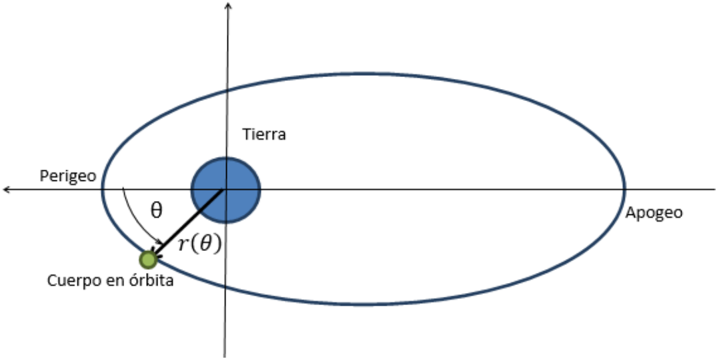
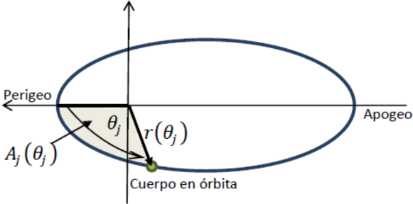
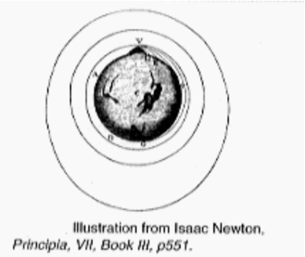
Topic: Gravitation, Astrophysics Metodi: Kepler’s Laws, Newton’s Law of Gravitation, Conservation of Energy Competenze: Physical Reasoning, Mathematical Modeling Objects: Planet, Satellite, Star Fonte: Testo (PDF) — p.7
Un’avventura spaziale nel Rinascimento
Problema 1: Un’avventura spaziale nel Rinascimento!!! Una delle potenze mondiali dell’inizio del XVII secolo ha assunto uno scienziato. di tempo per fare i calcoli necessari per mettere un oggetto in orbita. intorno alla Terra. La conoscenza di allora si limitava alle leggi di Kepler. E alcune questioni di cinematografia e molto poco di dinamica. Si disponeva anche La Commissione ha adottato una serie di misure per la protezione dell’ambiente e la protezione dell’ambiente. telescopio recentemente sviluppato da Galileo. Le leggi di Kepler, espresse per il movimento planetario, sono:
-
I pianeti si muovono su elisi con il Sole in uno dei loro foci.
-
Il radio vettore che descrive il movimento del pianeta, spazza le stesse aree in
- E’ la stessa cosa.
- Se T1, T2, a1 e a2 rappresentano i periodi e le semie superiori delle Orbit di due pianeti, 1 e 2, si ottengono i seguenti rapporti:
(𝑇1 𝑇2 ) 2 = (𝑎1 𝑎2 ) 3
Può sembrare strano pensare a questi tipi di argomenti, ma è noto che fu il Kepler stesso, che, in un romanzo chiamato Somnium, speculava sulla possibilità di mandare gli esseri umani a viaggiare verso la Luna. Il compito del ricercatore era quello di determinare le caratteristiche dell’orbita che il L’oggetto continuerebbe, così come anche pensare il modo in cui quell’oggetto potrebbe essere messo in Orbita. Considerando i dati che lo scienziato aveva: Tabella 1: Dati che il ricercatore ha contato con Radiosfera media dell’orbita lunare 384000 km Periodo di orbita lunare 27,32 giorni Radio medio della Terra 6371 km
Sapendo che tra le condizioni che il corpo messo in orbita doveva soddisfare, Era il fatto che doveva rimanere fermo sul cielo della potenza che aveva In termini moderni, si potrebbe dire che era un oggetto geo.
- Sincronica. a) Calcolare la semicilometria maggiore dell’ellipse su cui si muove il corpo.
Un altro requisito che è stato richiesto al scienziato rinascimentale per la progettazione della L’orbita, era che l’eccentricità della stessa fosse e=0,30. Ricordate che la eccentricità di un’ellipse è definita da: 𝑒= √1 −(𝑎 𝑏) 2
dove a è la semiscia maggiore e b la semiscia minore dell’ellipse. b) Calcolare la semicilometria minore dell’ellisse su cui si muove il corpo.
Considerando che l’equazione per un’ellipse, in coordinate polari, è data da: 𝑟(𝜃) = 𝑎(1 −𝑒2) 1 + ecos(θ) dove θ è l’angolo misurato dal perigeo, in senso antiorario e tale che l’origine di r è nel foco dell’ellipse (vedere Figura 1). E che l’area A della stessa è dato da: A= π a b .
Figura 1: Elice che rappresenta il percorso del corpo in orbita intorno a la Terra (disegno non a scala)
c) Calcolare la velocità aerea media del corpo in orbita.
d) Calcolare la velocità media del corpo nei pressi del perigeo di l’orbita.
e) Calcolare la velocità media del corpo al punto più lontano (apoggio) di tutto il suo percorso.
Finire la prova di livello 1
Continua la prova per il livello 2
Altri preparati… Tra i compiti del scienziato rinascimentale c’era quello di determinare la posizione del corpo in La sua orbita è a seconda del tempo. Per ottenere questo calcolato l’area dei settori dilimitati dalla posizione del vettore radioso r nel perihelio, rp, e del vettore radioso r(θj), dove 𝜃𝑗= 2𝜋𝑗 10 , 𝑗= 0, . . ,10 e corrispondono a aver diviso l’intervallo [0,2π] in 10 parti uguali (vedere Figura 2).
Figura 2: Settore di area spazzato per il vettore di posizione L’area Aj corrispondente al settore con angolo θj, è data dall’espressione: 𝐴𝑗(𝑎, 𝑒, 𝜃𝑗) = 𝑎2(1 −𝑒2)2 2 𝐼(𝑒, 𝜃𝑗) dove a è la semicentricità maggiore dell’ellipse, e la sua eccentricità. I quantitativi I(e, θj) sono indicate in Tabella 2, per l’eccentricità e= 0,3.
Tabella 2: Valori delle quantità I(e,θj) per e=0.3
I(0.3,θj) θj 0.00 0.00 0.383 0.63 0.842 1.26 1.475 1.88 2.403 2.51 3.619 3.14 4.835 3.77 5.763 4.40 6.396 5.03 6.855 5.65 7.238 6.28
f) Sulla base dei dati di Tabella 1, e utilizzando le leggi di Kepler, Confezionare una tabella per il modulo del vettore di posizione del corpo messo in orbita in funzione del tempo. Con i dati forniti potrà valutare la posizione del vettore in 11 tempi diversi.
Infinito e oltre!!! Isaac Newton ha discusso dell’uso di un cannone per posizionare un oggetto in orbita. Newton . Il suo parere è stato il seguente: parole: immaginiamo una montagna molto alta che la sua il picco è sopra l’atmosfera terrestre; Sulla cima di quella montagna c’è un cannone che spara
- Orisontale. Come ogni tiro viene fatto Con un carico esplosivo maggiore, la pallottola di cannone avrà Una velocità maggiore, e il proiettile cadrà sempre più.
- lontano. Infine, a una certa velocità il proiettile non Toccerà la terra e resterà in orbita per sempre . intorno alla Terra. Per prova e errore e procedendo secondo la suggerito da Newton, lo scienziato rinascimentale si prepara a lanciare il proiettile, direzione orizzontale, a diverse velocità. L’oggetto che volevo mettere in orbita. Aveva una massa di 200 kg e il cannone di cui disponeva era di 2000 kg. g) Progettare un metodo per misurare la velocità di uscita del proiettile utilizzando le misurazioni della velocità di retrocisione del cannone.
Topic: Gravitation, Astrophysics Metodi: Kepler’s Laws, Newton’s Law of Gravitation, Conservation of Energy Competenze: Physical Reasoning, Mathematical Modeling Objects: Planet, Satellite, Star Fonte: Testo (PDF) — p.7
A Space Adventure in the Renaissance
Problem 1: A Space Adventure in the Renaissance!!! One of the world’s great powers in the early 17th century hired a scientist. of time to perform the calculations necessary to put an object into orbit. around the Earth. The knowledge of the time was limited to Kepler ‘s laws . And some questions of kinematics and very little of dynamics. It was also available . The use of the moon’s orbit parameters was in the early stages. A telescope recently developed by Galileo. Kepler’s laws, enunciated for planetary motion, are:
-
The planets move on ellipses with the Sun at one of their focuses.
-
The radius vector that describes the motion of the planet, bares equal areas in equal times.
-
If T1, T2, a1 and a2 represent the periods and the major semiaxes of the orbits of two planets, 1 and 2, the following relationship is satisfied:
(𝑇1 𝑇2 ) 2 = (𝑎1 𝑎2 ) 3
It may seem strange to think of this kind of approach, but it is known that it was the Kepler himself, who, in a novel called Somnium, speculated about the possibility of Put humans on a journey to the moon. The task of the scientist was to determine the characteristics of the orbit that the object would continue, as well as think about the way that object could be put in orbit. Considering the data the scientist had: Table 1: Data that the scientist had in mind The mean radius of the lunar orbit 384000 km Period of lunar orbit 27.32 days Average Earth radius 6371 km
Knowing that among the conditions the body put into orbit must meet, There was the fact that I had to stand still over the sky of power that there was. In modern terminology it would be said that it was a geological object. synchronous. (a) Calculate the major semicircle of the ellipse over which the body moves.
Another requirement that was asked of the Renaissance scientist for the design of the orbit, was that its eccentricity was e=0.30. Remember that the The eccentricity of an ellipse is defined by: 𝑒= √1 −(𝑎 𝑏) 2
where a is the major semicircle and b is the minor semicircle of the ellipse. (b) Calculate the minor semicircle of the ellipse over which the body moves.
Considering that the equation for an ellipse, in polar coordinates, is given by: 𝑟(𝜃) = 𝑎(1 −𝑒2) 1 + ecos(θ) where θ is the angle measured from the perigee, in the anti-clockwise direction and such that The origin of r is in the focus of the ellipse (see Figure 1). And that area A of it is given by: A = π to b .
Figure 1: Elipse representing the path of the body placed in orbit around Earth (not a scale drawing)
(c) Calculate the average aerodynamic velocity of the body in its orbit.
(d) Calculate the average body speed near the perigee of the body. the orbit.
(e) Calculate the average body speed at the farthest point (peak) of his career.
End of Test Level 1
Continue testing for Level 2
Some more preparations… Among the tasks of the Renaissance scientist was to determine the position of the body in the Its orbit depends on time. To achieve this, he calculated the area of the sectors. bounded by the position of the radius vector r on the perihelion, rp, and radius vector r(θj), Where 𝜃𝑗= 2𝜋𝑗 10 , 𝑗= 0, . . ,10 and correspond to having divided the interval [0,2π] into 10 equal parts (see Figure 2).
Figure 2: Area sector swept by position vector The area Aj corresponding to the sector at θj angle is given by the expression: 𝐴𝑗(𝑎, 𝑒, 𝜃𝑗) = 𝑎2(1 −𝑒2)2 2 𝐼(𝑒, 𝜃𝑗) where a is the major semicircle of the ellipse, and its eccentricity. The quantities I(e, θj) are given in Table 2, for eccentricity e=0.3.
Table 2: Values of the quantities I(e,θj) for e=0.3
I(0.3,θj) θj 0.00 0.00 0.383 0.63 0.842 1.26 1.475 1.88 2.403 2.51 3.619 3.14 4.835 3.77 5.763 4.40 6.396 5.03 6.855 5.65 7.238 6.28
(f) Based on the data in Table 1, and using Kepler’s laws, Make a table for the body position vector module put into orbit as a function of time. With the data provided You can evaluate the vector position in 11 different times.
To infinity and beyond!!! Isaac Newton discussed the use of a cannon to place an object in orbit. Newton . He made the following reasoning (in his own words) Let ‘s imagine a mountain that ‘s very high . Peak is above the Earth’s atmosphere; above On the top of that mountain there ‘s a cannon firing . horizontally. As each shot is made With a higher explosive charge, the cannonball will have A higher speed, and the projectile will drop more and more. I’m not far away. Finally, at a certain speed the projectile didn’t. It will touch the earth and remain orbiting forever. around the Earth. By trial and error and proceeding accordingly suggested by Newton, the Renaissance scientist is set to launch the projectile, in horizontal direction, at different speeds. The object you wanted to put into orbit . It weighed 200 kg and the weight of the cannon we had was 2000 kg. (g) Design a method for measuring the projectile’s output speed using cannon retrograde speed measurements.
Topic: Gravitation, Astrophysics Metodi: Kepler’s Laws, Newton’s Law of Gravitation, Conservation of Energy Competenze: Physical Reasoning, Mathematical Modeling Objects: Planet, Satellite, Star Fonte: Testo (PDF) — p.7
Acelerando a fondo con un LINAC
Problema 2: ¡¡¡Acelerando a fondo con un LINAC!!!
Un acelerador lineal por radio frecuencia, denominado usualmente LINAC, es un dispositivo para acelerar partículas cargadas eléctricamente. En este tipo de aceleradores la partícula se desplaza en una trayectoria rectilínea, a lo largo de la cual es acelerada a intervalos por medio de un campo eléctrico de alta frecuencia.
En un modelo simplificado podemos considerar que un LINAC para acelerar iones está compuesto por una sucesión de tubos de desplazamiento metálicos separados por aberturas de aceleración, como se muestra esquemáticamente en la figura 1. Todo el sistema se encuentra dentro de una cámara evacuada a un alto nivel de vacío.
Figura 1: Esquema de un acelerador lineal de partículas (LINAC) con dos etapas de aceleración.
Con F se denomina la fuente de partículas y PA representa un pre-acelerador que inyecta partículas a una energía determinada en el LINAC. Con T1, T2 y T3 se indican los tubos de desplazamiento y con A1 y A2 las aberturas de aceleración. V es una fuente de tensión alterna de alta frecuencia que alimenta al LINAC. La línea a trazos indica la trayectoria de las partículas aceleradas. Los tubos funcionan como electrodos y están conectados a una fuente de tensión de alta frecuencia. El potencial eléctrico 𝑽(𝑡), que origina el campo eléctrico acelerador a lo largo del eje dentro de las aberturas de aceleración, varía sinusoidalmente con el tiempo como se muestra en la Figura 2.
El acelerador está diseñado de tal modo que, al atravesar una abertura, el ión es acelerado por la diferencia de potencial eléctrico que se establece entre los dos tubos adyacentes. El paso del ión por una abertura de aceleración está sincronizado con el máximo valor que puede alcanzar el potencial acelerador. Luego de acelerado, el ión ingresa a un tubo de desplazamiento, dentro del cual no experimenta la acción de ningún campo eléctrico. La distancia entre los centros de dos aberturas de aceleración consecutivas, está diseñada de modo que el ión arribe a la próxima abertura de aceleración en sincronismo con el máximo potencial acelerador. De esta manera, la partícula va ganando energía poco a poco a medida que atraviesa el acelerador.
Deseamos construir un LINAC para acelerar partículas alfa. Para ello disponemos de una fuente de alimentación V, de 20𝑀𝐻𝑧 de frecuencia y una tensión máxima de 𝑉0 = 12,5 𝑘𝑉. Las partículas alfa son núcleos de 𝐻𝑒 2 4 (helio-4), es decir, están compuestas por dos protones y dos neutrones. En una etapa de pre-aceleración se eleva la energía cinética de las partículas alfa a 4,806 10−14 𝐽. A esta energía son inyectadas en el primer tubo de desplazamiento del LINAC en el instante de tiempo t = 0 (ver Figura 2).
Considere que la longitud de las aberturas de aceleración es chica, de modo que el tiempo de permanencia de la partícula en ellas es muy pequeño. De esta manera, el potencial eléctrico, y por lo tanto el campo eléctrico acelerador, puede aproximarse por un valor constante mientras la partícula se encuentra dentro de una abertura de aceleración.
Figura 2: Potencial eléctrico aplicado a los tubos de desplazamiento en función del tiempo.
Tabla1: Valores de cantidades físicas de interés para el problema Carga elemental 1,602176 634 10-19 C Velocidad de la luz 299792458 m/s Masa de la partícula alfa 4,001506179127 u Nota: La unidad de masa atómica (u) está definida como la doceava parte de la masa atómica del 𝐶 6 12 , es decir 1𝑢= 𝑀( 𝐶 6 12 )/12.
Tabla2: Valores de masas atómicas
𝐻
1
1
1,007825 u
𝐻𝑒
2
4
4,002602 u
𝑁
7
14
14,003074 u
𝑂
8
17
16,999132 u
𝐶
6
12
19,926 4687992 10-27 kg
Nota: La unidad de masa atómica (u) está definida como la doceava
parte de la masa atómica del
𝐶
6
12 , es decir 1𝑢= 𝑀(
𝐶
6
12 )/12.
a) ¿Cuál es la masa de la partícula alfa en kg? ¿Cuál es la carga eléctrica de la partícula alfa? b) ¿Cuál es la velocidad de las partículas alfa cuando son inyectadas en el LINAC? c) ¿Cuál debe ser la longitud del primer tubo de desplazamiento del LINAC (T1 en la Figura 1)? d) ¿Cuánta energía cinética gana la partícula alfa en la primera abertura de aceleración? e) ¿Cuál debe ser la longitud del segundo tubo de desplazamiento del LINAC (T2 en la Figura 1)? f) ¿Cuánta energía cinética gana la partícula alfa en la segunda abertura de aceleración?
Fin Prueba Nivel 1
Continúa Prueba para Nivel 2
Utilizando el LINAC
Un proceso de interacción entre una partícula y un núcleo atómico puede dar lugar a una reacción nuclear. En estas reacciones, un núcleo, denominado núcleo blanco o núcleo padre y que designaremos genéricamente por 𝑋, es bombardeado por un proyectil, la partícula 𝑎, dando como resultado un núcleo residual o núcleo hijo, al que denominaremos 𝑌, y a una partícula emitida 𝑏. La reacción nuclear se puede escribir simbólicamente de la siguiente manera:
𝑎+ 𝑋 →𝑌+ 𝑏
En algunas reacciones nucleares la estructura del núcleo residual puede ser diferente a la del núcleo blanco, en este caso la reacción da lugar a una transmutación nuclear.
Una cantidad importante en este tipo de procesos es la energía de reacción 𝑄. Esta energía
se puede calcular a partir de la diferencia de las energías en reposo antes y después de la
reacción. Si la partícula proyectil y la partícula emitida corresponden a núcleos atómicos, la
energía de reacción se puede evaluar conociendo las masas atómicas correspondientes
(𝑀), es decir, mediante la siguiente expresión:
𝑄= (𝑀𝑎+ 𝑀𝑋−𝑀𝑌− 𝑀𝑏) 𝑐2
(1)
siendo 𝑐 la velocidad de la luz. Es importante notar que las masas involucradas en la ecuación (1) se refieren a masas atómicas. Por lo tanto, 𝑀𝑎 y 𝑀𝑏 se refieren a las masas de los átomos cuyos núcleos son las partículas 𝑎 y 𝑏. Si el valor de 𝑄 es positivo, la reacción se denomina exotérmica. En esta situación, 𝑄 es la energía total liberada en la reacción que se convierte en energía cinética de los productos finales de la reacción (núcleo residual 𝑌 y partícula emitida 𝑏). En el caso en que 𝑄 resulte negativo, la reacción se denomina endotérmica. Este tipo de reacción no puede ocurrir, a menos que la partícula incidente 𝑎 tenga suficiente energía cinética. La energía cinética mínima que el proyectil 𝑎 debe tener para que esta reacción pueda tener lugar se denomina energía umbral. A partir de principios de conservación se puede derivar la siguiente expresión para evaluar, de manera aproximada, la energía umbral 𝐸𝑢 para una reacción endotérmica: 𝐸𝑢= −𝑄 (1 + 𝑀𝑎 𝑀𝑋 )
Consideremos ahora que deseamos estudiar la siguiente reacción nuclear:
𝛼+ 𝑁 7 14 →𝑝+ 𝑂 8 17
(2)
en la que un núcleo de nitrógeno-14 ( 𝑁 7 14 ) es bombardeado con partículas alfa (𝛼) dando lugar a la producción de núcleos de oxígeno-17 ( 𝑂 8 17 ) y protones (𝑝). Teniendo en cuenta el balance de electrones, a fin de evaluar correctamente la energía de reacción a partir de las masas atómicas correspondientes, esta reacción puede escribirse de la siguiente manera:
𝐻𝑒 2 4 + 𝑁 7 14 →𝐻 1 1 + 𝑂 8 17
en donde hemos reemplazado en la expresión (2) a la partícula 𝛼 por 𝐻𝑒 2 4 y al protón 𝑝 (núcleo del átomo de hidrógeno) por 𝐻 1 1 . Cabe mencionar que esta reacción particular tiene interés histórico debido a que fue la reacción estudiada por Ernest Rutherford en 1919, dando lugar a la primera transmutación nuclear inducida en un laboratorio. En aquella
oportunidad Rutherford utilizó partículas alfa emitidas por una fuente radiactiva debido a que aún no se habían desarrollado los aceleradores de partículas.
g) ¿La reacción expresada en (2) es exotérmica o endotérmica? h) ¿Cuál es la energía umbral 𝐸𝑢 para que ocurra esta reacción? i) ¿Cuántas etapas de aceleración deben construirse en el LINAC anterior para poder estudiar esta reacción?
Problema Teórico 3 - NIVEL 1
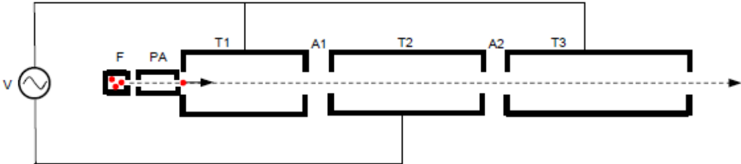
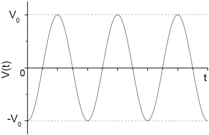
Topic: Electromagnetism, Nuclear & Particle Physics Metodi: Lorentz Force Analysis, Mass-Energy Equivalence, Kinematic Equations Competenze: Physical Reasoning, Mathematical Modeling Objects: Particle Beam, Capacitor Fonte: Testo (PDF) — p.7
Accelerazione a fondo con un LINAC
Problema 2: Accelerazione profonda con un LINAC!!!
Un acceleratore lineare per radio frequenza, di solito chiamato LINAC, è un dispositivo per accelerare le particelle elettricamente cariche. In questo tipo di acceleratori la particella si muove in un percorso rettilineo, lungo il quale si accelera a Intervalli attraverso un campo elettrico ad alta frequenza.
In un modello semplificato possiamo considerare che un LINAC per accelerare gli ioni è composto da una successione di tubi di spostamento metallici separati da le aperture di accelerazione, come illustrato schematicamente nella figura 1. Tutto il Il sistema si trova all’interno di una camera evacuata ad un alto livello di vuoto.
Figura 1: Schema di un lineare acceleratore di particelle (LINAC) con due fasi di Accelerazione.
Con F viene definito ” fonte di particelle ” e PA rappresenta un preacceleratore che iniecta Particelle ad una determinata energia nel LINAC. T1, T2 e T3 indicano i tubi di con A1 e A2 le aperture di accelerazione. V è una fonte di tensione un’alternativa ad alta frequenza che alimenta il LINAC. La linea tracciata indica il percorso di le particelle accelerate. I tubi funzionano come elettrodi e sono collegati a una fonte di tensione ad alta frequenza. Potenzial elettrico V(t), che produce il campo L’acceleratore elettrico lungo l’asse all’interno delle aperture di accelerazione varia Sinusoidalmente con il tempo come mostrato in Figura 2.
L’acceleratore è progettato in modo che, attraversando un’apertura, l’ion venga accelerato. per la differenza di potenziale elettrico che si stabilisce tra i due tubi adiacenti. El Il passaggio dell’ion attraverso un’apertura di accelerazione è sincronizzato con il massimo valore che può raggiungere il potenziale acceleratore. Dopo aver accelerato, l’ion entra in un tubo di il movimento, all’interno del quale non si sperimenta l’azione di alcun campo elettrico. La Distanza tra i centri di due aperture di accelerazione consecutive, è progettata da L’ ione arriva alla prossima apertura di accelerazione in sincronia con il massimo. Potenzialmente accelerante. In questo modo, la particella guadagna energia poco a poco. misura che attraversa l’acceleratore.
Vogliamo costruire un LINAC per accelerare le particelle alfa. Per questo abbiamo una una fonte di alimentazione V, di frequenza 20 MHz e una tensione massima di V0 = 12,5 kV. Le particelle alfa sono nuclei di He 2 4 (Elio-4), cioè sono composti da due. Protoni e due neutroni. In una fase di pre-accelerazione si eleva l’energia cinetica di Altri elementi di cui all’allegato I, punto 1, del regolamento (UE) n. Questa energia viene injectata nel primo tubo di Sviluppo di un’attività di controllo dei dati (cfr.
Considera che la lunghezza delle aperture di accelerazione è piccola, quindi il tempo La permanenza della particella in loro è molto piccola. In questo modo, il potenziale Il campo elettrico, e quindi il campo elettrico acceleratore, può essere avvicinato per un valore costante finché la particella è all’interno di un’apertura di accelerazione.
Figura 2: Potenziali elettrici applicati ai tubi di spostamento in funzione del tempo.
Tabella 1: Valori di quantità fisiche di interesse per il problema Carga elementare 1,602176 634 10-19 C La velocità della luce 299792458 m/s Massa della particella alfa 4,001506179127 u Nota: l’unità di massa atomica (u) è definita come la dodicesima parte della massa atomica del 𝐶 6 12 , cioè 1u=M 𝐶 6 12 )/12.
Tabella 2: Valute di massa atomico
𝐻
1
1
1,007825 u
𝐻𝑒
2
4
4,002602 u
𝑁
7
14
14,003074 u
𝑂
8
17
16,999132 u
𝐶
6
12
19,926 4687992 10-27 kg
Nota: l’unità di massa atomica (u) è definita come la dodicesima
parte della massa atomica del
𝐶
6
12 , cioè 1u=M
𝐶
6
12 )/12.
a) Qual è la massa della particella alfa in kg? Qual è la carica elettrica della particella alfa? b) Qual è la velocità delle particelle alfa quando vengono iniezionate nel LINAC? c) Qual è la lunghezza del primo tubo di spostamento del LINAC (T1 in La figura 1? d) Quanta energia cinetica ottiene la particella alfa nella prima apertura di Accelerazione? e) Qual è la lunghezza del secondo tubo di spostamento del LINAC (T2 Nella figura 1? f) Quanta energia cinetica ottiene la particella alfa nella seconda apertura di Accelerazione?
Finire la prova di livello 1
Continua la prova per il livello 2
Usando il LINAC
Un processo di interazione tra una particella e un nucleo atomico può dare luogo a una reazione nucleare. In queste reazioni, un nucleo, chiamato nucleo bianco o nucleo padre e che designeremo genericamente per X, viene bombardato da un proiettile, la particella a, che si traduce in un nucleo residuo o nucleo figlio, che chiameremo Y, e un particella emessa b. La reazione nucleare può essere scritta simbolicamente dal seguente: modo:
𝑎+ 𝑋 →𝑌+ 𝑏
In alcune reazioni nucleari la struttura del nucleo residuo può essere diversa da quella del nucleo residuo. La reazione produce una trasmutazione nucleare.
Una quantità importante in questo tipo di processi è l’energia di reazione Q. Questa energia La differenza di energia in riposo prima e dopo la reazione. Se la particella proiettata e la particella emessa corrispondono a nuclei atomici, la L’energia di reazione può essere valutata conoscendo le massature atomiche corrispondenti (M), cioè, con la seguente espressione: 𝑄= (𝑀𝑎+ 𝑀𝑋−𝑀𝑌− 𝑀𝑏) 𝑐2
(1)
e c è la velocità della luce. È importante notare che le masse coinvolte nella Equation (1) si riferiscono a masse atomiche. Quindi, Ma e Mb si riferiscono alle masse di gli atomi i cui nuclei sono le particelle a e b. Se il valore di Q è positivo, la reazione è denominata esotermica. In questa situazione, Q è la energia totale rilasciata nella reazione che si trasforma in energia cinetica dei prodotti fine della reazione (nucleo residuo Y e particella emessa b). Nel caso in cui Q risulti negativo, la reazione è chiamata endotermica. Questo tipo di La reazione non può avvenire, a meno che la particella incidente non abbia sufficiente energia. Cinetica. L’energia cinetica minima che il proiettile deve avere per questa reazione che può avere luogo è chiamata energia soglia. I principi di conservazione sono La seguente espressione può essere derivata per valutare, in modo approssimativo, l’energia soglia Io per una reazione endotermica: 𝐸𝑢= −𝑄 (1 + 𝑀𝑎 𝑀𝑋 )
Consideriamo ora che vogliamo studiare la reazione nucleare seguente:
𝛼+ 𝑁 7 14 →𝑝+ 𝑂 8 17
(2)
in cui un nucleo di nitrogeno-14 ( 𝑁 7 14 ) viene bombardato con particelle alfa (α) dando La produzione di nuclei di ossigeno-17 ( 𝑂 8 17 ) e protoni (p). Considerando il La capacità di rilevamento delle radiazioni è stata determinata dal sistema di controllo delle radiazioni. se si tratta di una reazione di massa atomica corrispondente, si può scrivere come segue:
𝐻𝑒 2 4 + 𝑁 7 14 →𝐻 1 1 + 𝑂 8 17
dove abbiamo sostituito nell’espressione (2) la particella α con He 2 4 e il protone p (nucleo dell’atomo di idrogeno) per H 1 1 . È importante notare che questa reazione particolare ha di interesse storico perché fu la reazione studiata da Ernest Rutherford nel 1919, che ha portato alla prima trasmutazione nucleare indotta in laboratorio. In quella
Rutherford ha usato particelle alfa emesse da una fonte radioattiva perché Gli acceleratori di particelle non erano ancora stati sviluppati.
g) La reazione espressa in (2) è esotermica o endotermica? h) Qual è l’energia limite Eu per la reazione? (i) Quanti fasi di accelerazione devono essere costruite nel precedente LINAC per
- Potremmo studiare questa reazione?
Problema teorico 3 - NIVEL 1
Topic: Electromagnetism, Nuclear & Particle Physics Metodi: Lorentz Force Analysis, Mass-Energy Equivalence, Kinematic Equations Competenze: Physical Reasoning, Mathematical Modeling Objects: Particle Beam, Capacitor Fonte: Testo (PDF) — p.7
Fundly accelerating with a LINAC
Problem 2: Accelerating to the bottom with a LINAC!!!
A linear radio frequency accelerator, usually called LINAC, is a a device for accelerating electrically charged particles. In this kind of accelerators The particle moves in a straight path, along which it accelerates to intervals by means of a high frequency electric field.
In a simplified model we can consider that a LINAC to accelerate ions is Composed of a succession of metallic displacement tubes separated by The acceleration apertures, as shown in Figure 1. All the way . The system is inside an evacuated chamber at a high vacuum level.
Figure 1: Scheme of a linear particle accelerator (LINAC) with two stages of The acceleration.
F is the particle source and PA represents a pre-accelerator that injects particles at a given energy in the LINAC. T1, T2 and T3 indicate the tubes of The vehicle shall be equipped with a single-speed automatic transmission. V is a source of tension. high frequency alternator that powers the LINAC. The line at trajectory indicates the trajectory of The accelerated particles. The tubes function like electrodes and are connected to a High frequency voltage source. The electric potential V(t), which originates the field Electrical accelerator along the axis within the acceleration openings, varying The time-symmetrical patterns are shown in Figure 2.
The accelerator is designed in such a way that, when it passes through an opening, the ion is accelerated. for the difference in electrical potential between the two adjacent tubes. El The ion pass through an acceleration aperture is synchronized with the maximum value that It can reach the accelerating potential. After acceleration, the ion enters a tube of The resulting displacement is not electric field action. La The distance between the centers of two consecutive acceleration apertures is designed from So the ion reaches the next acceleration aperture in synchrony with the maximum. The accelerating potential. This way, the particle is gaining energy gradually. the speed of the accelerator.
We want to build a LINAC to accelerate alpha particles. We have a solution for this. V power supply, 20 MHz frequency and a maximum voltage of V0 = 12,5 kV. Alpha particles are nuclei of He 2 4 (helium-4), that is, they are composed of two Protons and two neutrons. In a pre-acceleration stage the kinetic energy of The alpha particles at 4,806 10−14 J. This energy is injected into the first tube of the The time frame for the calculation of the linear position of the linear position of the linear position of the linear position of the linear position of the linear position of the linear position of the linear position of the linear position of the linear position of the linear position of the linear position of the linear position of the linear position of the linear position of the linear position of the linear position of the linear position of the linear position of the linear position of the linear position of the linear position of the linear position of the linear position of the linear position of the linear position of the linear position of the linear position of the linear position of the linear position of the linear position of the linear position of the linear position of the linear position of the linear position of the linear position of the linear position of the linear position of the linear position of the linear position of the linear position of the linear position of the linear position of the linear position of the linear position of the linear position of the linear position of the linear position of the linear position of the linear position of the linear position of the linear position of the linear position of the linear position of the linear position of the linear position of the linear position of the linear position of the linear position of the linear position of the linear position of the linear position of the linear position of the linear position of the linear position of the linear position of the linear position of the linear position of the linear position of the linear position of the linear position of the linear position of the linear position of the linear position of the linear position of the linear position of the linear position of the linear position of the linear position of the linear position of the linear position of the linear position of the linear position of the linear position of the linear position of the linear position of the linear position of the linear position of the linear position of the linear position of the linear position of the linear position of the linear position of the linear is to bearing the linear.
Consider that the length of the acceleration apertures is small, so that the time The particle’s permanence in them is very small. In this way, the potential The electric field, and therefore the accelerating electric field, can be approximated by a value constant as long as the particle is inside an acceleration aperture.
Figure 2: Electrical potential applied to the displacement tubes depending on the time.
Table1: Values of physical quantities of interest for the problem Elementary charge 1,602176 634 10-19 C Speed of light 299792458 m/s Mass of the alpha particle 4,001506179127 u Note: The atomic mass unit (s) is defined as the twelfth part of the atomic mass of 𝐶 6 12 , i.e. 1u = M 𝐶 6 12 )/12.
Table 2: Atomic mass values
𝐻
1
1
1,007825 u
𝐻𝑒
2
4
4,002602 u
𝑁
7
14
14,003074 u
𝑂
8
17
16,999132 u
𝐶
6
12
19,926 4687992 10-27 kg
Note: The atomic mass unit (s) is defined as the twelfth
part of the atomic mass of
𝐶
6
12 , i.e. 1u = M
𝐶
6
12 )/12.
(a) What is the mass of the alpha particle in kg? What is the electrical charge of the The alpha particle? (b) What is the speed of alpha particles when injected into LINAC? (c) What should be the length of the first LINAC displacement tube (T1 in the figure 1)? (d) How much kinetic energy does the alpha particle gain at the first opening of the What’s the acceleration? (e) What is the length of the second LINAC displacement tube (T2 ) In Figure 1, what is the value of the data? (f) How much kinetic energy does the alpha particle gain in the second aperture of What’s the acceleration?
End of Test Level 1
Continue testing for Level 2
Using the LINAC
A process of interaction between a particle and an atomic nucleus can result in a nuclear reaction. In these reactions, a nucleus, called a white nucleus or parent nucleus And we’ll designate it generically as X, it’s bombed by a projectile, the particle a, This is a residual core or child core, which we’ll call Y, and a Particle emitted b. The nuclear reaction can be written symbolically as follows How:
𝑎+ 𝑋 →𝑌+ 𝑏
In some nuclear reactions the structure of the residual nucleus may be different from that of the The reaction results in a nuclear transmutation.
An important quantity in this type of process is the reaction energy Q. This energy . The difference in energy at rest before and after the The reaction. If the projectile particle and the emitted particle correspond to atomic nuclei, the The reaction energy can be estimated by the corresponding atomic masses (M), i.e. by the following expression: 𝑄= (𝑀𝑎+ 𝑀𝑋−𝑀𝑌− 𝑀𝑏) 𝑐2
(1)
And c is the speed of light. It is important to note that the masses involved in the Equation (1) refers to atomic masses. Therefore, Ma and Mb refer to the masses of The atoms whose nuclei are the particles a and b. If the value of Q is positive, the reaction is called exothermic. In this situation, Q is the Total energy released in the reaction that is converted into kinetic energy of the products end of the reaction (residual core Y and particulate emission b). In the case where Q is negative, the reaction is called endothermic. This kind of The reaction cannot occur unless the incident particle has enough energy. It’s kinetic. The minimum kinetic energy the projectile must have to make this reaction This is called threshold energy. The conservation principle is that the The following expression can be derived to approximate the threshold energy I for an endothermic reaction: 𝐸𝑢= −𝑄 (1 + 𝑀𝑎 𝑀𝑋 )
Consider now that we want to study the following nuclear reaction:
𝛼+ 𝑁 7 14 →𝑝+ 𝑂 8 17
(2)
where a nitrogen-14 core ( 𝑁 7 14 ) is bombarded with alpha (α) particles giving The production of oxygen nuclei is 𝑂 8 17 ) and protons (p). Given the The electron balance, in order to correctly evaluate the reaction energy from the The corresponding atomic masses, this reaction can be written as follows:
𝐻𝑒 2 4 + 𝑁 7 14 →𝐻 1 1 + 𝑂 8 17
where we replaced the particle α by He in expression (2) 2 4 and the proton p (hydrogen atom core) by H 1 1 . It is worth mentioning that this particular reaction has It’s historically interesting because it was the reaction studied by Ernest Rutherford in 1919, This led to the first induced nuclear transmutation in a laboratory. In that one .
Rutherford used alpha particles emitted by a radioactive source because Particle accelerators had not yet been developed.
(g) Is the reaction expressed in (2) exothermic or endothermic? (h) What is the threshold energy Eu for this reaction to occur? (i) How many acceleration stages should be built in the previous LINAC for Can we study this reaction?
Theoretical problem 3 - Level 1
Topic: Electromagnetism, Nuclear & Particle Physics Metodi: Lorentz Force Analysis, Mass-Energy Equivalence, Kinematic Equations Competenze: Physical Reasoning, Mathematical Modeling Objects: Particle Beam, Capacitor Fonte: Testo (PDF) — p.7
Agujeros Negros y la curvatura del Espacio-tiempo (Nivel 1)
Problema 3: Agujeros Negros y la curvatura del Espacio-tiempo
Constantes Físicas • Masa solar Msol = 2 1030 kg. • Constante de la gravitación de Newton G = 6,67 10-11 N m2 kg-2 • Constante de Planck h = 6,6 10-34 J s • Velocidad de la luz c = 3 108 m s-1 • Constante de Faraday F = 96 103 C mol-1 • Permeabilidad magnética del vacío 0 = 1,26 10-6 N A-2
Los Agujeros Negros son una de las predicciones más fascinantes de la teoría de la Relatividad General de Einstein. Diminutos, enormes, supermasivos, poco masivos, rotantes, estáticos, solitarios o acompañados. Todos diferentes, pero todos raros y un poco locos. Y con una cosa en común: deforman el espacio-tiempo de tal manera que, si algo atraviesa su horizonte de eventos, entonces ya no puede salir.
En muchas situaciones, el campo gravitatorio de un agujero negro se puede describir usando la ley de gravitación de Newton. Sin embargo, hay fenómenos que no se pueden explicar “a lo Newton” y necesitan toda la maquinaria de la teoría de la Relatividad.
En este problema estudiaremos cómo “ver” un agujero negro y cómo medir algunos de sus parámetros básicos. También analizaremos qué nos pasaría si atravesáramos el horizonte de eventos de un agujero negro. Finalmente estudiaremos cómo el agujero negro curva el espacio-tiempo y cómo esto afecta nuestras ideas de tiempo.
PARTE 1. Sagitario A* en el centro de la Vía Láctea
Los agujeros negros son… negros. Sí. No se pueden ver directamente, si los “iluminamos” con una linterna, la luz no se refleja en el horizonte de eventos. Entra y ya no sale. Hace varios años se detectó, en el centro de nuestra Vía Láctea, un objeto muy masivo y compacto llamado Sagitario A*. Este objeto no se pudo describir con los modelos estándar, por lo que se pensó que era un agujero negro (actualmente se cree que puede haber más de un agujero negro en la región central de nuestra galaxia).
Una manera de estimar la masa y el tamaño de Sagitario A* es a través del estudio de las órbitas elípticas de las estrellas a su alrededor. Consideraremos que estas órbitas se describen con las Leyes de Kepler.
En particular, aproximaremos la tercera ley de Kepler en la forma
𝑇2 𝑎3 = 4 𝜋2 𝐺 𝑀
(1)
donde 𝑇 es el período orbital, a es la longitud del semieje mayor de la órbita elíptica, 𝑀 es la masa del cuerpo alrededor del cual la estrella orbita (en este caso, Sagitario A*) y 𝐺 la constante de gravitación universal de Newton.
Problema Teórico 3 - NIVEL 1
Una de las estrellas más próximas a Sagitario A* es la estrella S2, cuyo movimiento orbital tiene las siguientes características
•
𝑎 = 840 UA = 1,3 1014m , Longitud del semieje mayor
•
𝑇 = 15 años , Período orbital
•
𝑒 = 0,989 , Excentricidad
donde UA (unidad astronómica) es 1UA = 150 109 m y 𝑒 es la excentricidad de la órbita
elíptica
𝑒= √1 −
𝑏2
𝑎2
(2)
con 𝑏 la longitud del semieje menor. Otro parámetro importante de la órbita es la
distancia 𝑑 al perihelio, el punto más próximo de la órbita al foco donde se encuentra el
cuerpo masivo,
𝑑 = 𝑎(1 − 𝑒) (3)
1a. A partir de los datos de la órbita de S2 estime la masa M de Sagitario A*.
1b. Indique cuánto mide el semieje menor 𝑏 y la distancia al perihelio 𝑑 en la órbita de S2.
1c. Teniendo en cuenta que S2 puede pensarse como un punto cuando se mueve en su órbita, y que no choca con Sagitario A*, dé una cota superior para el radio de Sagitario A*. Es decir, ¿qué valor no puede superar el radio de Sagitario A*? Nota: Una cota superior para una cantidad 𝑓 es un valor que es mayor que 𝑓.
1d. Usando la estimación anterior calcule la densidad que le correspondería a Sagitario A*.
PARTE 2. ¿¿O será demasiado tarde??
Nos decidimos a hacer un viaje espacial. Sabemos que hay un agujero negro cerca, pero no sabemos cuán cerca. De pronto sentimos cosas raras en el cuerpo… ¿Habremos atravesado el horizonte de eventos? ¿Podremos escapar? ¿Será demasiado tarde?
Problema Teórico 3 - NIVEL 1 Consideremos una persona en el campo gravitatorio de un agujero negro con los pies apuntando al centro del agujero negro, como se ve en la figura siguiente.
Suponiendo que el campo gravitatorio del agujero negro se puede describir por la ley de gravitación de Newton, encontramos que diferentes puntos del cuerpo sienten diferentes fuerzas, ya que se encuentran a diferentes distancias del agujero negro. A pesar de que todos los puntos del cuerpo son acelerados hacia el agujero negro, los pies son atraídos con más fuerza que la cabeza. Por lo tanto, la persona siente que la cabeza y los pies son tironeados en sentidos opuestos, y el cuerpo tiende a estirarse. Este fenómeno se conoce como “espaguetización” porque el cuerpo se estira y afina como un espagueti. Para simplificar el análisis, modelamos el cuerpo humano por un segmento de longitud L que se ubica a lo largo de una línea que pasa por el centro del agujero negro. Suponemos que el centro del cuerpo está a una distancia 𝑟 del centro del agujero negro. Ver Figura.
2a. Dé una expresión para la aceleración gravitatoria 𝑎 que siente el punto central del cuerpo y para la aceleración gravitatoria 𝑎𝐴 que siente el punto extremo del cuerpo más próximo al agujero negro indicado en la figura como 𝐴. Escríbalas en términos de la constante de gravitación universal de Newton 𝐺, la masa del agujero negro 𝑀 , 𝑟 y 𝐿.
2b. Dé una expresión para la aceleración que siente el punto 𝐴 con respecto a la
que siente el punto medio del mismo. Es decir, escriba
𝑎0𝐴 = 𝑎𝐴 − 𝑎
(4)
en términos de 𝐺, 𝑀, 𝑟 y 𝐿. Esta aceleración relativa se llaman aceleración de
marea.
2c. Tome el límite en que la longitud del cuerpo es mucho menor que la distancia al
centro del agujero negro, 𝐿 << 𝑟 para determinar claramente el signo de la
aceleración de marea. Indique su sentido.
Puede ser útil la expresión
1
(1 ± 𝑥)2 ≈1 ∓2𝑥
(5)
válida cuando 𝑥 << 1.
Para entender el efecto de marea que producen los agujeros negros sobre el cuerpo, vamos a considerar dos agujeros negros bien distintos:
Problema Teórico 3 - NIVEL 1 • AN1: Agujero negro supermasivo
- masa: 𝑀1 = 2 10 39 kg (mil millones de masas solares).
- radio del horizonte de eventos 𝑅1 = 3 10 12 m (30 mil millones de kilómetros).
• AN2: Agujero negro estelar
- masa: 𝑀2 = 2 10 31 kg (10 masas solares).
- radio del horizonte de eventos 𝑅2 = 3 10 4 m (30 kilómetros).
2d. Suponiendo que cuando la aceleración de marea es igual a 10 N kg, una persona siente incomodidad, calcule a qué distancia del centro de AN1 y de AN2 ocurre esto. Suponga que la longitud de la persona es 𝐿 = 2 m.
PARTE 3. Dilatación gravitacional del tiempo
En la teoría de la Relatividad General, la gravedad se manifiesta a través de la curvatura del espacio y el tiempo. Esto hace, en particular, que el tiempo corra de diferente forma en regiones con campos gravitatorios de distinta intensidad, por ejemplo cerca de un agujero negro o lejos de él. Cuanto más cerca uno está de un objeto muy masivo, más lento corre el tiempo. Este efecto resulta de la constancia de la velocidad de la luz y se usa a diario, por ejemplo en el Sistema de Posicionamiento Global (GPS). Pensemos que a una distancia 𝑟 del centro un agujero negro, está Schrödinger con un gato (vivo y afuera de la caja). El gato tiene pulgas. El gato se rasca dos veces. A una distancia muy muy grande de ellos y del agujero negro está Einstein. Einstein está tan lejos del agujero negro que prácticamente no siente su campo gravitatorio. Tanto Schrödinger como Einstein miden el tiempo que pasa entre las dos veces que el gato se rasca. El tiempo que encuentra Schrödinger es 𝑇𝑆 y el tiempo que encuentra Einstein es 𝑇𝐸. Cuando comparan las dos mediciones encuentran
𝑇𝐸=
1
√1− 𝛼 2 𝑀
𝑟
𝑇𝑆
(6)
donde 𝑀 es la masa del agujero negro, 𝑟 es la distancia a la que se encuentra Schrödinger del centro un agujero negro y 𝛼 es una constante positiva dimensional. Esta fórmula se conoce como Dilatación gravitacional del tiempo y funciona para agujeros negros no rotantes, llamados agujeros negros de Schwarzschild.
3a. ¿Quién mide un tiempo más largo? ¿Schrödinger o Einstein?
3b. ¿Qué unidades tiene la constante 𝛼 que aparece en la fórmula de la dilatación del tiempo (6)?
3c. Suponiendo que la constante 𝛼 depende sólo de dos de las constantes físicas presentadas al comienzo del problema sin constantes numéricas adicionales encuentre 𝛼 explícitamente en términos de estas constantes.
Problema Teórico 3 - NIVEL 2


Topic: Gravitation, Special Relativity Metodi: Newton’s Law of Gravitation, Dimensional Analysis, Photon Energy Relation Competenze: Physical Reasoning, Mathematical Modeling Objects: Black Hole, Photon, Star Fonte: Testo (PDF) — p.7
**L’intervallo di spazio-tempo e la curvatura dello spazio-tempo (livello 1) **
Problema 3: buchi neri e curvatura dello spazio-tempo
Costanti fisiche • Massaggio solare Msol = 2 1030 kg. • Costante di gravitazione di Newton G = 6,67 10-11 N m2 kg-2 • Costante di Planck h = 6,6 10-34 Js • Velocità della luce c = 3 108 m s-1 • Costante di Faraday F = 96 103 C mol-1 • Permeabilità magnetica del vuoto 0 = 1,26 10-6 N A-2
I buchi neri sono una delle previsioni più affascinanti della teoria della relatività Generale de Einstein. Minuti, enormi, supermassivi, poco massicci, rotanti, statici, solitari o accompagnati. Tutti diversi, ma… Tutti strani e un po’ pazzi. E con una cosa in comune: distortano lo spazio-tempo in questo modo che, se qualcosa attraversa il suo orizzonte di eventi, Allora non può uscire.
In molte situazioni, il campo gravitazionale di un buco nero può essere descritto. usando la legge di Newton della gravità. Tuttavia, ci sono fenomeni che non si possono fare. E hanno bisogno di tutto il macchinario della teoria della relatività.
In questo problema, studiamo come vedere un buco nero e come misurare alcuni di questi. i suoi parametri di base. E poi analizzeremo cosa ci sarebbe successo se avessimo attraversato il orizzonte degli eventi di un buco nero. Finalmente studieremo come il buco si fa. il nero curva lo spazio-tempo e come questo influisce sulle nostre idee del tempo.
Parte 1. Sagitario A* al centro della Via Lattea
I buchi neri sono… Negri. Sí. Non possono essere visti direttamente, se li illuminiamo con una lanterna, la luce non si riflette nell’orizzonte degli eventi. Entrate e non uscite. Molti anni fa, nel centro della nostra Via Lattea, è stato rilevato un oggetto molto massiccio e… Compatto chiamato Sagitario A*. Questo oggetto non è stato descritto con i modelli Standard, quindi si pensava che fosse un buco nero (attualmente si pensa che può ci sono più di un buco nero nella regione centrale della nostra galassia).
Un modo per stimare la massa e la dimensione di Sagitario A* è attraverso lo studio delle orbite elliptiche delle stelle che le circondano. Considereremo che queste orbite sono che descrivono con le leggi di Kepler.
In particolare, avvicineremo la terza legge di Kepler in forma
𝑇2 𝑎3 = 4 𝜋2 𝐺 𝑀
(1)
dove T è il periodo orbitale, a è la lunghezza della semicilometria maggiore dell’orbita elliptica, M è la massa del corpo intorno al quale orbita la stella (in questo caso Sagittario A*) e G la Costante di gravitazione universale di Newton.
Problema teorico 3 - NIVEL 1
Una delle stelle più vicine a Sagitario A* è la stella S2, il cui movimento orbitale ha le seguenti caratteristiche
• a = 840 UA = 1,3 1014m , Longitudine del semestre maggiore • T = 15 anni , Periodo orbitale • e = 0,989 , eccentricità
dove UA (unità astronomica) è 1UA = 150 109 m e e è l’escentricità dell’orbita
- Eliptica
𝑒= √1 −
𝑏2
𝑎2
(2)
con b la lunghezza del semestre minore. Un altro parametro importante dell’orbita è la Distanza d dal perihelio, il punto più vicino dell’orbita al foco in cui si trova il corpo massiccio, 𝑑 = 𝑎(1 − 𝑒) (3)
1a. Sulla base dei dati dell’orbita di S2, stima la massa M di Sagittario A*.
1b. Indicare quanto misura il semiegio minore b e la distanza dal perihelio d in orbita de S2.
1c. Considerando che S2 può essere pensato come un punto quando si muove In orbita, e non colpisce Sagittario A*, dare un quota superiore per la radio di Sagitario A*. Cioè, quale valore non può superare il raggio di Sagitario A*? Nota: Un quota superiore per un quantitativo f è un valore superiore a f.
1d. Usando la stima precedente calcola la densità che corrisponde a Sagitario A*.
Parte 2 O sarà troppo tardi?
Abbiamo deciso di fare un viaggio nello spazio. Sappiamo che c’è un buco nero vicino, ma Non sappiamo quanto vicino. All’improvviso sentiamo cose strane nel corpo… - Apriremo? Attraverso l’orizzonte degli eventi? Possiamo scappare? - Sarà troppo tardi?
Problema teorico 3 - NIVEL 1 Consideriamo una persona nel campo gravitazionale di un buco nero con i piedi. puntando al centro del buco nero, come si vede nella figura seguente.
Supponendo che il campo gravitazionale del buco nero possa essere descritto dalla legge di La gravitazione di Newton, abbiamo scoperto che i diversi punti del corpo sentono diversi. Le forze si trovano a diverse distanze dal buco nero. Anche se Tutti i punti del corpo si accelerano verso il buco nero, i piedi sono attirati. più forte della testa. Quindi, la persona sente che la testa e i piedi sono si tirano in direzioni opposte, e il corpo tende a allungarsi. Questo fenomeno è noto. come “spaghetti” perché il corpo si allunga e si affina come uno spaghetti. Per semplificare l’analisi, modelliamo il corpo umano da un segmento di lunghezza L che si trova lungo una linea che passa attraverso il centro del buco nero. Supponiamo che che il centro del corpo è a r distanza dal centro del buco nero. Vedi Figura.
2a. Fornite un’espressione per l’accelerazione gravitazionale che il punto centrale sente. La velocità gravitazionale aA che si sente il punto estremo del corpo corpo più vicino al buco nero indicato nella figura come A. Scrivi. in termini di Newton G, costante di gravitazione universale, la massa di buco nero M , R e L .
2b. Date un’espressione per l’accelerazione che il punto A sente rispetto alla
che sente il punto medio della stessa. Cioè, scriva.
𝑎0𝐴 = 𝑎𝐴 − 𝑎
(4)
in termini di G, M, r e L. Questa accelerazione relativa è chiamata accelerazione di
- La marea.
2c. Prendi il limite in cui la lunghezza del corpo è molto inferiore alla distanza al
centro del buco nero, L << r per determinare chiaramente il segno di
accelerazione della marea. Indica il suo senso.
La parola può essere utile.
1
(1 ± 𝑥)2 ≈1 ∓2𝑥
(5)
valida quando x << 1.
Per capire l’effetto delle maree che producono i buchi neri sul corpo, Considereremo due buchi neri ben distinti:
Problema teorico 3 - NIVEL 1 • AN1: supermassiccio buco nero
- massa: M1 = 2 10 39 kg (miliard di masse solari).
- radius dell’orizzonte di eventi R1 = 3 10 12 m chilometri).
• AN2: buco nero stellare
- massa: M2 = 2 10 31 kg (10 masse solari).
- radius dell’orizzonte di eventi R2 = 3 10 4 m (30 km).
2d. Supponiamo che quando l’accelerazione della marea è pari a 10 N kg, una persona Se si sente a disagio, calcola a che distanza dal centro di AN1 e AN2 si verifica.
- Questo. Supponiamo che la lunghezza della persona sia L = 2 m.
Parte 3. Dilatazione gravitazionale del tempo
Nella teoria della relatività generale, la gravità si manifesta attraverso la curvatura. dello spazio e del tempo. Questo fa in particolare che il tempo corra in modo diverso in regioni con campi gravitazionali di diversa intensità, ad esempio vicino a un buco nero o lontano da lui. Più si avvicina a un oggetto molto massiccio, più lentamente si corre. Il tempo. Questo effetto è il risultato della costante velocità della luce e viene usato quotidianamente. per esempio nel Sistema di Posizione Globale (GPS). Supponiamo che a r distanza dal centro un buco nero, ci sia Schrödinger con un gatto (vivo e fuori cassa). Il gatto ha polpe. Il gatto si graffi due volte. A una . La distanza molto, molto grande da loro e dal buco nero è Einstein. Einstein è così. lontano dal buco nero che praticamente non sente il suo campo gravitazionale. Tanto . Schrödinger e Einstein misurano il tempo che passa tra le due volte che il gatto si
- Scratta. Il tempo che Schrödinger trova è TS e il tempo che Einstein trova è 𝑇𝐸. Quando confrontano le due misurazioni trovano
𝑇𝐸=
1
√1− 𝛼 2 𝑀
𝑟
𝑇𝑆
(6)
dove M è la massa del buco nero, r è la distanza che si trova Schrödinger del centro un buco nero e α è una costante positiva dimensionale. Questa è la mia . La formula è chiamata Dilatazione gravitazionale del tempo e funziona per i buchi. i buchi neri non rotanti, chiamati buchi neri di Schwarzschild.
3a. Chi misura un tempo più lungo? Schrödinger o Einstein?
3b. Quali unità hanno la costante α che appare nella formula di dilatazione del tempo (6)?
3c. Supponendo che la costante α dipenda solo da due delle costanti fisiche presentate all’inizio del problema senza ulteriori costanti numeriche troverà α esplicitamente in termini di queste costanti.
Problema teorico 3 - NIVEL 2
Topic: Gravitation, Special Relativity Metodi: Newton’s Law of Gravitation, Dimensional Analysis, Photon Energy Relation Competenze: Physical Reasoning, Mathematical Modeling Objects: Black Hole, Photon, Star Fonte: Testo (PDF) — p.7
**Black holes and curvature of space-time (Level 1) **
Problem 3: Black Holes and the curvature of space-time
Physical constants • The mass of the solar mass Msol = 2 1030 kg. • Newton’s gravitational constant G = 6.67 10-11 N m2 kg-2 • Planck constant h = 6.6 10-34 Js • The speed of light c = 3 108 m s-1 • Faraday constant F = 96 103 C mol-1 • Magnetic permeability of the vacuum 0 = 1.26 10-6 N A-2
The Black Holes are one of the predictions . The most fascinating of all the relativity theories. General de Einstein. What is it? Minutes, huge, Supermassive, low-massive, rotating, static, alone or accompanied. They’re all different, but All weird and a little crazy. And with one thing in common: they distort space-time in such a way That, if something crosses your event horizon, Then you can’t get out.
In many situations, the gravitational field of a black hole can be described. using Newton’s law of gravitation. However, there are phenomena that cannot be done. They need all the machinery of the theory of relativity.
In this problem we’ll study how to see a black hole and how to measure some of the black hole. the basic parameters. We will also look at what would happen to us if we crossed the event horizon of a black hole. We ‘ll finally study how the hole is made . Black curves space-time and how this affects our ideas of time.
The following information is provided: Sagittarius A* at the center of the Milky Way
The black holes are… - The black people. Sí. They can’t see it directly, if we light them up. With a flashlight, the light is not reflected in the event horizon. He’s in and he’s not out. Several years ago, at the center of our Milky Way, a very massive object was detected. It’s a compact object called Sagittarius A*. This object could not be described with the models Standard, so it was thought to be a black hole (currently believed to be able to There’s more than one black hole in the central region of our galaxy.
One way to estimate the mass and size of Sagittarius A* is through the study of the ________. elliptical orbits of the stars around them. We ‘ll consider these orbits to be They describe it with Kepler’s laws.
In particular, we’ll approximate Kepler’s third law in the form
𝑇2 𝑎3 = 4 𝜋2 𝐺 𝑀
(1)
where T is the orbital period, a is the length of the major semicircle of the elliptical orbit, M is The mass of the body around which the star orbits (in this case, Sagittarius A*) and G the Newton’s universal gravitational constant is the most important of all.
Theoretical problem 3 - level 1
One of the nearest stars to Sagittarius A* is the star S2, whose orbital motion has the following characteristics
• a = 840 UA = 1,3 1014m , Longest half-life • T = 15 years , orbital period • E = 0.989 , eccentricity
where UA (astronomical unit) is 1UA = 150 109 m and e is the eccentricity of the orbit
Elliptical
𝑒= √1 −
𝑏2
𝑎2
(2)
with b the length of the minor semicircle. Another important parameter of orbit is the distance d to perihelion, the point closest to the focus orbit where the mass body, 𝑑 = 𝑎(1 − 𝑒) (3)
1a. From the S2 orbit data, estimate the mass M of Sagittarius A*.
1b. Indicate the size of the semicircle b and the distance to perihelion d in orbit. de S2.
1c. Considering that S2 can be thought of as a point when it moves In its orbit, and not colliding with Sagittarius A*, give a higher radius range. The following table shows the results of the calculation of the risk of the risk of the risk of infection: I mean, what value can’t exceed the radius of Sagittarius A*? Note: A higher quota for a quantity f is a value that is greater than f.
1d. Using the above estimate calculate the density that would correspond to The following is a list of the species in the genus Sagittarius.
The following information is provided: Or will it be too late?
We decided to go on a space trip. We know there’s a black hole nearby, but We don’t know how close. Suddenly we feel strange things in the body… Shall we open? Through the event horizon? Can we escape? Is it too late?
Theoretical problem 3 - level 1 Consider a person in the gravitational field of a black hole with feet . pointing to the center of the black hole, as shown in the figure below.
Assuming the gravitational field of a black hole can be described by the law of Newton’s gravitational pull, we find that different points in the body feel different. forces, as they are at different distances from the black hole. Although All points on the body are accelerated towards the black hole, the feet are attracted. stronger than the head. So the person feels that the head and feet are Tossed in opposite directions, and the body tends to stretch. This phenomenon is known. Like spaghetti, because the body stretches and tastes like spaghetti. To simplify the analysis, we model the human body by a segment of length L It’s located along a line that goes through the center of the black hole. Let ‘s say . The center of the body is at a distance r from the center of the black hole. See Figure.
2a. Give an expression for the gravitational acceleration the center of gravity feels . The body and gravitational acceleration toA that feels the extreme point of the body closest to the black hole shown in Figure A. Write them down . In terms of Newton’s universal gravitational constant G, the mass of black hole M , R and L .
2b. Give an expression for the acceleration that point A feels with respect to the
who feels the middle of it. I mean, write.
𝑎0𝐴 = 𝑎𝐴 − 𝑎
(4)
in terms of G, M, r and L. This relative acceleration is called the acceleration of
The tide.
2c. Take the limit where the body length is much shorter than the distance to the
The centre of the black hole, L << r to clearly determine the sign of the
The tidal acceleration. Point out your point.
The expression may be useful.
1
(1 ± 𝑥)2 ≈1 ∓2𝑥
(5)
This is true for x < 1.
To understand the tidal effect that black holes produce on the body, Let ‘s consider two very different black holes:
Theoretical problem 3 - level 1 • AN1: Supermassive black hole
- mass: M1 = 2 10 39 kg (billion solar masses).
- radius of the event horizon R1 = 3 10 12 m (30 billion of miles .
• AN2: Star black hole
- mass: M2 = 2 10 31 kg (10 solar masses).
- the radius of the event horizon R2 = 3 10 4 m (30 km).
2d. Assuming that when the tidal acceleration is equal to 10 N kg, one person If you feel uncomfortable, calculate how far from the center of AN1 and AN2 it occurs. This one. Suppose the length of the person is L = 2 m.
The following is the list of the products: Gravitational dilation of time .
In general relativity, gravity is manifested through curvature. of space and time. This makes time run differently in particular. regions with different gravitational fields, for example near a hole black or away from it. The closer you get to a very massive object, the slower you run. The weather. This effect is the result of the constant of the speed of light and is used daily. For example, in the Global Positioning System (GPS). Let’s say that at a distance r from the center of a black hole, there’s Schrödinger with a cat (living and out of the box). The cat has fleas. The cat scratches twice. One . Very, very, very large distance from them and the black hole is Einstein. Einstein is so… away from the black hole that practically doesn’t feel its gravitational field. So much for it . Schrödinger and Einstein measure the time between the two times that the cat is scratch it. The time Schrödinger finds is TS and the time Einstein finds is 𝑇𝐸. When you compare the two measurements , you find
𝑇𝐸=
1
√1− 𝛼 2 𝑀
𝑟
𝑇𝑆
(6)
where M is the mass of the black hole, r is the distance it is located at Schrödinger’s center is a black hole and α is a positive dimensional constant. This one . The formula is known as gravitational time dilation and it works for holes. non-rotating black holes, called Schwarzschild black holes.
3a. Who measures a longer time? Schrödinger or Einstein?
3b. What units have the constant α that appears in the formula for dilation? of time (6)?
3c. Assuming the constant α depends on only two of the physical constants presented at the beginning of the problem without additional numerical constants Find α explicitly in terms of these constants.
Theoretical problem 3 - Level 2
Topic: Gravitation, Special Relativity Metodi: Newton’s Law of Gravitation, Dimensional Analysis, Photon Energy Relation Competenze: Physical Reasoning, Mathematical Modeling Objects: Black Hole, Photon, Star Fonte: Testo (PDF) — p.7
Agujeros Negros y la curvatura del Espacio-tiempo (Nivel 2)
Problema 3: Agujeros Negros y la curvatura del Espacio-tiempo
Constantes Físicas • Masa solar Msol = 2 1030 kg. • Constante de la gravitación de Newton G = 6,67 10-11 N m2 kg-2 • Constante de Planck h = 6,6 10-34 J s • Velocidad de la luz c = 3 108 m s-1 • Constante de Faraday F = 96 103 C mol-1 • Permeabilidad magnética del vacío 0 = 1,26 10-6 N A-2
Los Agujeros Negros son una de las predicciones más fascinantes de la teoría de la Relatividad General de Einstein. Diminutos, enormes, supermasivos, poco masivos, rotantes, estáticos, solitarios o acompañados. Todos diferentes, pero todos raros y un poco locos. Y con una cosa en común: deforman el espacio-tiempo de tal manera que, si algo atraviesa su horizonte de eventos, entonces ya no puede salir.
En muchas situaciones, el campo gravitatorio de un agujero negro se puede describir usando la ley de gravitación de Newton. Sin embargo, hay fenómenos que no se pueden explicar “a lo Newton” y necesitan toda la maquinaria de la teoría de la Relatividad.
En este problema estudiaremos cómo “ver” un agujero negro y cómo medir algunos de sus parámetros básicos. También analizaremos qué nos pasaría si atravesáramos el horizonte de eventos de un agujero negro. Finalmente estudiaremos cómo el agujero negro curva el espacio-tiempo y cómo esto afecta nuestras ideas de tiempo.
PARTE 1. Sagitario A* en el centro de la Vía Láctea
Los agujeros negros son… negros. Sí. No se pueden ver directamente, si los “iluminamos” con una linterna, la luz no se refleja en el horizonte de eventos. Entra y ya no sale. Hace varios años se detectó, en el centro de nuestra Vía Láctea, un objeto muy masivo y compacto llamado Sagitario A*. Este objeto no se pudo describir con los modelos estándar, por lo que se pensó que era un agujero negro (actualmente se cree que puede haber más de un agujero negro en la región central de nuestra galaxia). Una manera de estimar la masa y el tamaño de Sagitario A* es a través del estudio de las órbitas elípticas de las estrellas a su alrededor. Consideraremos que estas órbitas se describen con las Leyes de Kepler.
En particular, aproximaremos la tercera ley de Kepler en la forma
𝑇2
𝑎3 =
4 𝜋2
𝐺 𝑀
(1)
donde 𝑇 es el período orbital, a es la longitud del semieje mayor de la órbita elíptica, 𝑀 es la masa del cuerpo alrededor del cual la estrella orbita (en este caso, Sagitario A*) y 𝐺 la constante de gravitación universal de Newton.
Problema Teórico 3 - NIVEL 2
Una de las estrellas más próximas a Sagitario A* es la estrella S2, cuyo movimiento orbital tiene las siguientes características
•
𝑎 = 840 UA = 1,3 1014m , Longitud del semieje mayor
•
𝑇 = 15 años , Período orbital
•
𝑒 = 0,989 , Excentricidad
donde UA (unidad astronómica) es 1UA = 150 109 m y 𝑒 es la excentricidad de la órbita
elíptica
𝑒= √1 −
𝑏2
𝑎2
(2)
con 𝑏 la longitud del semieje menor. Otro parámetro importante de la órbita es la
distancia 𝑑 al perihelio, el punto más próximo de la órbita al foco donde se encuentra el
cuerpo masivo,
𝑑 = 𝑎(1 − 𝑒)
(3)
1a. A partir de los datos de la órbita de S2 estime la masa M de Sagitario A*.
1b. Indique cuánto mide el semieje menor 𝑏 y la distancia al perihelio 𝑑 en la órbita de S2.
1c. Teniendo en cuenta que S2 puede pensarse como un punto cuando se mueve en su órbita, y que no choca con Sagitario A*, dé una cota superior para el radio de Sagitario A*. Es decir, ¿qué valor no puede superar el radio de Sagitario A*? Nota: Una cota superior para una cantidad 𝑓 es un valor que es mayor que 𝑓.
1d. Usando la estimación anterior calcule la densidad que le correspondería a Sagitario A*.
PARTE 2. ¿¿O será demasiado tarde??
Nos decidimos a hacer un viaje espacial. Sabemos que hay un agujero negro cerca, pero no sabemos cuán cerca. De pronto sentimos cosas raras en el cuerpo… ¿Habremos atravesado el horizonte de eventos? ¿Podremos escapar? ¿Será demasiado tarde?
Problema Teórico 3 - NIVEL 2
Consideremos una persona en el campo gravitatorio de un agujero negro con los pies apuntando al centro del agujero negro, como se ve en la figura.
Suponiendo que el campo gravitatorio del agujero negro se puede describir por la ley de gravitación de Newton, encontramos que diferentes puntos del cuerpo sienten diferentes fuerzas, ya que se encuentran a diferentes distancias del agujero negro. A pesar de que todos los puntos del cuerpo son acelerados hacia el agujero negro, los pies son atraídos con más fuerza que la cabeza. Por lo tanto, la persona siente que la cabeza y los pies son tironeados en sentidos opuestos, y el cuerpo tiende a estirarse. Este fenómeno se conoce como “espaguetización” porque el cuerpo se estira y afina como un espagueti. Para simplificar el análisis, modelamos el cuerpo humano por un segmento de longitud L que se ubica a lo largo de una línea que pasa por el centro del agujero negro. Suponemos que el centro del cuerpo está a una distancia 𝑟 del centro del agujero negro. Ver Figura.
2a. Dé una expresión para la aceleración gravitatoria 𝑎 que siente el punto central del cuerpo y para la aceleración gravitatoria 𝑎𝐴 que siente el punto extremo del cuerpo más próximo al agujero negro indicado en la figura como 𝐴. Escríbalas en términos de la constante de gravitación universal de Newton 𝐺, la masa del agujero negro 𝑀 , 𝑟 y 𝐿.
2b. Dé una expresión para la aceleración que siente el punto 𝐴 con respecto a la que siente el punto medio del mismo. Es decir, escriba 𝑎0𝐴 = 𝑎𝐴 − 𝑎 (4) en términos de 𝐺, 𝑀, 𝑟 y 𝐿. Esta aceleración relativa se llama aceleración de marea.
2c. Tome el límite en que la longitud del cuerpo es mucho menor que la distancia al centro del agujero negro, 𝐿 << 𝑟 para determinar claramente el signo de la aceleración de marea. Indique su sentido. Puede ser útil la expresión 1 (1 ± 𝑥)2 ≈1 ∓2𝑥 (5) válida cuando 𝑥 << 1.
Para entender el efecto de marea que producen los agujeros negros sobre el cuerpo, vamos a considerar dos agujeros negros bien distintos:
Problema Teórico 3 - NIVEL 2
• AN1: Agujero negro supermasivo
- masa: 𝑀1 = 2 10 39 kg (mil millones de masas solares).
- radio del horizonte de eventos 𝑅1 = 3 10 12 m (30 mil millones de kilómetros).
• AN2: Agujero negro estelar
- masa: 𝑀2 = 2 10 31 kg (10 masas solares).
- radio del horizonte de eventos 𝑅2 = 3 10 4 m (30 kilómetros).
2d. Suponiendo que cuando la aceleración de marea es igual a 10 N kg, una persona siente incomodidad calcule a qué distancia del centro de AN1 y de AN2 ocurre esto. Suponga que la longitud de la persona es 𝐿 = 2 m.
2e. Cuando la persona siente incomodidad ¿podrá alejarse del agujero negro o es demasiado tarde para escapar? Responda esto para los agujeros negros AN1 y AN2.
PARTE 3. Dilatación gravitacional del tiempo
En la teoría de la Relatividad General, la gravedad se manifiesta a través de la curvatura del espacio y el tiempo. Esto hace, en particular, que el tiempo corra de diferente forma en regiones con campos gravitatorios de distinta intensidad, por ejemplo cerca de un agujero negro o lejos de él. Cuanto más cerca uno está de un objeto muy masivo, más lento corre el tiempo. Este efecto resulta de la constancia de la velocidad de la luz y se usa a diario, por ejemplo en el Sistema de Posicionamiento Global (GPS). Pensemos que a una distancia 𝑟 del centro un agujero negro, está Schrödinger con un gato (vivo y afuera de la caja). El gato tiene pulgas. El gato se rasca dos veces. A una distancia muy muy grande de ellos y del agujero negro está Einstein. Einstein está tan lejos del agujero negro que prácticamente no siente su campo gravitatorio. Tanto Schrödinger como Einstein miden el tiempo que pasa entre las dos veces que el gato se rasca. El tiempo que encuentra Schrödinger es 𝑇𝑆 y el tiempo que encuentra Einstein es 𝑇𝐸. Cuando comparan las dos mediciones encuentran
𝑇𝐸=
1
√1− 𝛼 2 𝑀
𝑟
𝑇𝑆
(6)
donde 𝑀 es la masa del agujero negro, 𝑟 es la distancia a la que se encuentra Schrödinger del centro un agujero negro y 𝛼 es una constante positiva dimensional. Esta fórmula se conoce como Dilatación gravitacional del tiempo y funciona para agujeros negros no rotantes, llamados agujeros negros de Schwarzschild.
3a. ¿Quién mide un tiempo más largo? ¿Schrödinger o Einstein?
3b. ¿Qué unidades tiene la constante 𝛼 que aparece en la fórmula de la dilatación del tiempo (6)?
Problema Teórico 3 - NIVEL 2
3c. Suponiendo que la constante 𝛼 depende sólo de dos de las constantes físicas presentadas al comienzo del problema, sin constantes numéricas adicionales, encuentre 𝛼 explícitamente en términos de estas constantes. Si no la puede encontrar suponga que su valor numérico es 1 en los ítems que siguen.
Una fuente de rayos X que emite radiación de 6 keV (o 9,6 10-16J) de energía está ubicada a 20 km del centro de un agujero negro de Schwarzschild de 3,3 masas solares.
3d. Calcule la frecuencia de los rayos X emitidos
3e. Indique la frecuencia de los rayos X recibidos por un observador muy distante de la fuente y del agujero negro. ¿Hubo un corrimiento al rojo o al azul?
Determinación del índice de refracción de un material Introducción Se denomina índice de refracción de un medio (𝑛) al cociente entre la velocidad de la luz en el vacío (𝑐) y la velocidad de la luz en dicho medio (𝑣)
𝑛= 𝑐 𝑣
(1)
Es decir, el índice de refracción de un medio es un coeficiente que indica cuánto se reduce la velocidad de la luz dentro del mismo. Si la luz incide de manera oblicua a la superficie que separa dos medios, con índices de refracción distintos, experimenta un cambio en la dirección de propagación (refracción), tal como se esquematiza en la figura 1. Este cambio en la dirección se debe al cambio de velocidad de propagación de la onda, cuando pasa de un medio a otro. La relación entre el cambio de dirección (ángulo) y los índices de refracción de los medios se denomina Ley de Snell. Esta ley estipula que:
𝑛1 seno 𝜃1 = 𝑛2 seno 𝜃2
(2)
Donde los ángulos 𝜃1 y 𝜃2 se miden respecto a la normal de la superficie como se muestra en la figura 1.
Figura 1. Cambio de dirección de un haz de luz cuando atraviesa una superficie plana que separa dos medios con índices de refracción 𝑛1 y 𝑛2 > 𝑛1.
Objetivo: Determinar el índice de refracción del acrílico. Materiales provistos:
- Prisma recto de sección rectangular de acrílico transparente y con dos caras paralelas pulidas con dimensiones 30,0 𝑚𝑚 𝑥 30,0 𝑚𝑚 𝑥 40,0 𝑚𝑚. La incertidumbre en las dimensiones es de 0,1 𝑚𝑚.
- 20 Alfileres.
- Plancha de Telgopor de aproximadamente 15 𝑚𝑚 𝑥 190 𝑚𝑚 𝑥 290 𝑚𝑚
- Hojas milimetradas o cuadriculadas
- Hojas A4 blancas
- Transportador Materiales que Usted debe proveer
- Regla milimetrada
Armado del dispositivo y procedimiento experimental
- Sobre la plancha de Telgopor, coloque una hoja blanca y sujétela al Telgopor por medio de alfileres. En el centro de la hoja, ubique el prisma de acrílico sobre una de sus caras de 30 𝑚𝑚 𝑥 40 𝑚𝑚. Para las mediciones con un ángulo de incidencia 𝜃𝑖≤45 coloque el prisma de manera que su dimensión mayor esté paralela a la dimensión menor de la hoja como se muestra en la figura 2 (izquierda). Para ángulos de incidencia mayores (𝜃𝑖> 45° ) coloque el prisma de manera que su dimensión mayor esté paralela a la dimensión mayor de la hoja como se muestra en la figura 2 (derecha). Marque con una lapicera el contorno del prisma teniendo cuidado de no moverlo y no romper la hoja.
Figura 2. Disposición del prisma sobre la hoja A4 blanca para un ángulo de incidencia 𝜃𝑖≤45° (izquierda) y para 𝜃𝑖> 45° (derecha).
- Coloque al menos tres alfileres en línea de manera tal que la recta que forma la unión imaginaria de éstos forme un ángulo 𝜃𝑖> 0 con la dirección normal a la cara del prisma, como se muestra en la figura 3. Procure que la separación de los alfileres más alejados sea de al menos 10 𝑐𝑚 y que los mismos estén verticales. Esta línea imaginaria actuará como haz de luz incidente para observar la refracción.
Figura 3. Vista superior y lateral de la ubicación de los alfileres que forman el haz de luz incidente.
- Observe por la cara opuesta del prisma (y a través del mismo) como se muestra en la figura 3 (preste atención a la forma en que deben colocarse para la observación). Coloque al menos otros tres alfileres de manera que estén en línea con los alfileres colocados en el paso anterior cuando se los mira a través del prisma, como se muestra en la figura 4. Procure que la separación de los alfileres de los extremos sea de al menos 10 𝑐𝑚 y que los mismos estén verticales. Esta línea imaginaria actuará como haz de luz refractado luego de atravesar el prisma.
Figura 4. Ubicación de los alfileres que forma el haz de luz incidente y refractado luego de atravesar el prisma.
- Retire el prisma y trace las líneas de los haces de luz incidente y refractado determinados con los alfileres y el haz de luz dentro del prisma como se muestra en la Figura 5.
Figura 5. Haces de luz incidente, refractado y dentro del prisma.
- Determine el ángulo de incidencia 𝜃𝑖 y el ángulo refractado 𝜃𝑟 con sus respectivas incertidumbres y repórtelo en una tabla (Tabla I).
- Repita el procedimiento para distintos ángulos de incidencias.
Nota: Para una mayor claridad, cambie la hoja A4 blanca luego de dos mediciones.
Análisis de datos a. Reporte los ángulos de incidencia 𝜃𝑖 y refractados 𝜃𝑟 medidos en la Tabla I. b. Determine 𝑦= sin 𝜃𝑖 y 𝑥= sin 𝜃𝑟 con sus respectivas incertidumbres y repórtelo en la Tabla I. c. Grafique los valores de 𝑥 e 𝑦 calculados y realice un ajuste lineal de los mismos. Reporte el valor de la pendiente (𝑚) de la recta ajustada. d. A partir del ajuste, determine el índice de refracción del acrílico 𝑛𝑎𝑐 sabiendo que el índice de refracción del aire es 𝑛𝑎= (1,0003 ± 0,0001). Reporte el valor obtenido. Nota: La incertidumbre Δ𝑓 de 𝑓(𝑡) = sen 𝑡 para 𝑡0 = (𝑡0̅ ± ∆𝑡0) se puede determinar como ∆𝑓= cos(𝑡0̅) ∆𝑡0
OAF 2020- 29
Pruebas Preparatorias
30 - OAF 2020
OAF 2020- 31 Primer Prueba Preparatoria: Mecánica
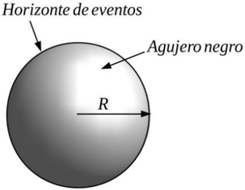
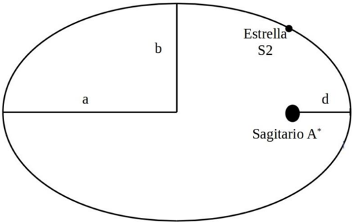
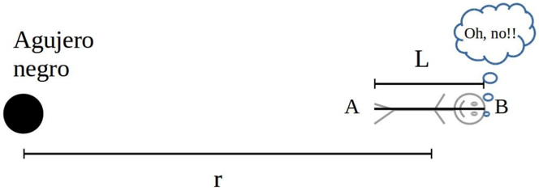
Topic: Gravitation, Special Relativity Metodi: Newton’s Law of Gravitation, Dimensional Analysis, Photon Energy Relation Competenze: Physical Reasoning, Mathematical Modeling Objects: Black Hole, Photon, Star Fonte: Testo (PDF) — p.7
**L’intervallo di spazio-tempo (Nel 2) **
Problema 3: buchi neri e curvatura dello spazio-tempo
Costanti fisiche • Massaggio solare Msol = 2 1030 kg. • Costante di gravitazione di Newton G = 6,67 10-11 N m2 kg-2 • Costante di Planck h = 6,6 10-34 Js • Velocità della luce c = 3 108 m s-1 • Costante di Faraday F = 96 103 C mol-1 • Permeabilità magnetica del vuoto 0 = 1,26 10-6 N A-2
I buchi neri sono una delle previsioni più affascinanti della teoria della relatività Generale de Einstein. Minuti, enormi, supermassivi, poco massicci, rotanti, statici, solitari o accompagnati. Tutti diversi, ma… Tutti strani e un po’ pazzi. E con una cosa in comune: distortano lo spazio-tempo in questo modo che, se qualcosa attraversa il suo orizzonte di eventi, Allora non può uscire.
In molte situazioni, il campo gravitazionale di un buco nero può essere descritto. usando la legge di Newton della gravità. Tuttavia, ci sono fenomeni che non si possono fare. E hanno bisogno di tutto il macchinario della teoria della relatività.
In questo problema, studiamo come vedere un buco nero e come misurare alcuni di questi. i suoi parametri di base. E poi analizzeremo cosa ci sarebbe successo se avessimo attraversato il orizzonte degli eventi di un buco nero. Finalmente studieremo come il buco si fa. il nero curva lo spazio-tempo e come questo influisce sulle nostre idee del tempo.
Parte 1. Sagitario A* al centro della Via Lattea
I buchi neri sono… Negri. Sí. Non possono essere visti direttamente, se li illuminiamo con una lanterna, la luce non si riflette nell’orizzonte degli eventi. Entrate e non uscite. Molti anni fa, nel centro della nostra Via Lattea, è stato rilevato un oggetto molto massiccio e… Compatto chiamato Sagitario A*. Questo oggetto non è stato descritto con i modelli Standard, quindi si pensava che fosse un buco nero (attualmente si pensa che può ci sono più di un buco nero nella regione centrale della nostra galassia). Un modo per stimare la massa e la dimensione di Sagitario A* è attraverso lo studio delle orbite elliptiche delle stelle che le circondano. Considereremo che queste orbite sono che descrivono con le leggi di Kepler.
In particolare, avvicineremo la terza legge di Kepler in forma
𝑇2
𝑎3 =
4 𝜋2
𝐺 𝑀
(1)
dove T è il periodo orbitale, a è la lunghezza della semicilometria maggiore dell’orbita elliptica, M è la massa del corpo intorno al quale orbita la stella (in questo caso Sagittario A*) e G la Costante di gravitazione universale di Newton.
Problema teorico 3 - NIVEL 2
Una delle stelle più vicine a Sagitario A* è la stella S2, il cui movimento orbitale ha le seguenti caratteristiche
• a = 840 UA = 1,3 1014m , Longitudine del semestre maggiore • T = 15 anni , Periodo orbitale • e = 0,989 , eccentricità
dove UA (unità astronomica) è 1UA = 150 109 m e e è l’escentricità dell’orbita
- Eliptica
𝑒= √1 −
𝑏2
𝑎2
(2) con b la lunghezza del semestre minore. Un altro parametro importante dell’orbita è la Distanza d dal perihelio, il punto più vicino dell’orbita al foco in cui si trova il corpo massiccio, 𝑑 = 𝑎(1 − 𝑒)
(3)
1a. Sulla base dei dati dell’orbita di S2, stima la massa M di Sagittario A*.
1b. Indicare quanto misura il semiegio minore b e la distanza dal perihelio d in orbita de S2.
1c. Considerando che S2 può essere pensato come un punto quando si muove In orbita, e non colpisce Sagittario A*, dare un quota superiore per la radio di Sagitario A*. Cioè, quale valore non può superare il raggio di Sagitario A*? Nota: Un quota superiore per un quantitativo f è un valore superiore a f.
1d. Usando la stima precedente calcola la densità che corrisponde a Sagitario A*.
Parte 2 O sarà troppo tardi?
Abbiamo deciso di fare un viaggio nello spazio. Sappiamo che c’è un buco nero vicino, ma Non sappiamo quanto vicino. All’improvviso sentiamo cose strane nel corpo… - Apriremo? Attraverso l’orizzonte degli eventi? Possiamo scappare? - Sarà troppo tardi?
Problema teorico 3 - NIVEL 2
Consideriamo una persona nel campo gravitazionale di un buco nero con i piedi. puntando al centro del buco nero, come si vede nella figura.
Supponendo che il campo gravitazionale del buco nero possa essere descritto dalla legge di La gravitazione di Newton, abbiamo scoperto che i diversi punti del corpo sentono diversi. Le forze si trovano a diverse distanze dal buco nero. Anche se Tutti i punti del corpo si accelerano verso il buco nero, i piedi sono attirati. più forte della testa. Quindi, la persona sente che la testa e i piedi sono si tirano in direzioni opposte, e il corpo tende a allungarsi. Questo fenomeno è noto. come “spaghetti” perché il corpo si allunga e si affine come uno spaghetti. Per semplificare l’analisi, modelliamo il corpo umano da un segmento di lunghezza L che si trova lungo una linea che passa attraverso il centro del buco nero. Supponiamo che che il centro del corpo è a r distanza dal centro del buco nero. Vedi Figura.
2a. Fornite un’espressione per l’accelerazione gravitazionale che il punto centrale sente. La velocità gravitazionale aA che si sente il punto estremo del corpo corpo più vicino al buco nero indicato nella figura come A. Scrivi. in termini di Newton G, costante di gravitazione universale, la massa di buco nero M , R e L .
2b. Date un’espressione per l’accelerazione che il punto A sente rispetto alla che sente il punto medio della stessa. Cioè, scriva. 𝑎0𝐴 = 𝑎𝐴 − 𝑎 (4) in termini di G, M, r e L. Questa accelerazione relativa è chiamata accelerazione di
- La marea.
2c. Prendi il limite in cui la lunghezza del corpo è molto inferiore alla distanza al centro del buco nero, L << r per determinare chiaramente il segno di accelerazione della marea. Indica il suo senso. La parola può essere utile. 1 (1 ± 𝑥)2 ≈1 ∓2𝑥 (5) valida quando x << 1.
Per capire l’effetto delle maree che producono i buchi neri sul corpo, Considereremo due buchi neri ben distinti:
Problema teorico 3 - NIVEL 2
• AN1: supermassiccio buco nero
- massa: M1 = 2 10 39 kg (miliard di masse solari).
- radiosità dell’orizzonte di eventi R1 = 3 10 12 m chilometri).
• AN2: buco nero stellare
- massa: M2 = 2 10 31 kg (10 masse solari).
- radius dell’orizzonte di eventi R2 = 3 10 4 m (30 km).
2d. Supponiamo che quando l’accelerazione della marea è pari a 10 N kg, una persona Sento disagio calcola a che distanza dal centro di AN1 e AN2 si verifica
- Questo. Supponiamo che la lunghezza della persona sia L = 2 m.
2e. Quando la persona si sente a disagio, può uscire dal buco nero o è Troppo tardi per scappare? Rispondi a questo per i buchi neri AN1 e AN2.
Parte 3. Dilatazione gravitazionale del tempo
Nella teoria della relatività generale, la gravità si manifesta attraverso la curvatura. dello spazio e del tempo. Questo fa in particolare che il tempo corra in modo diverso in regioni con campi gravitazionali di diversa intensità, ad esempio vicino a un buco nero o lontano da lui. Più si avvicina a un oggetto molto massiccio, più lentamente si corre. Il tempo. Questo effetto è il risultato della costante velocità della luce e viene usato quotidianamente. per esempio nel Sistema di Posizione Globale (GPS). Supponiamo che a r distanza dal centro un buco nero, ci sia Schrödinger con un gatto (vivo e fuori cassa). Il gatto ha polpe. Il gatto si graffi due volte. A una . La distanza molto, molto grande da loro e dal buco nero è Einstein. Einstein è così. lontano dal buco nero che praticamente non sente il suo campo gravitazionale. Tanto . Schrödinger e Einstein misurano il tempo che passa tra le due volte che il gatto si
- Scratta. Il tempo che Schrödinger trova è TS e il tempo che Einstein trova è 𝑇𝐸. Quando confrontano le due misurazioni trovano
𝑇𝐸=
1
√1− 𝛼 2 𝑀
𝑟
𝑇𝑆
(6)
dove M è la massa del buco nero, r è la distanza che si trova Schrödinger del centro un buco nero e α è una costante positiva dimensionale. Questa è la mia . La formula è chiamata Dilatazione gravitazionale del tempo e funziona per i buchi. i buchi neri non rotanti, chiamati buchi neri di Schwarzschild.
3a. Chi misura un tempo più lungo? Schrödinger o Einstein?
3b. Quali unità hanno la costante α che appare nella formula di dilatazione del tempo (6)?
Problema teorico 3 - NIVEL 2
3c. Supponendo che la costante α dipenda solo da due delle costanti fisiche presentate all’inizio del problema, senza ulteriori costanti numeriche, troverà α esplicitamente in termini di queste costanti. Se non riesci a trovarla supponi che il suo valore numerico sia 1 negli oggetti che Continuano.
Una fonte di raggi X che emette radiazioni di 6 keV (o 9,6 10-16J) di energia è localizzata. a 20 km dal centro di un buco nero di Schwarzschild di 3,3 masse solari.
3d. Calcolare la frequenza dei raggi X emessi
3e. Indicare la frequenza dei raggi X ricevuti da un osservatore molto lontano da la sorgente e il buco nero. C’è stato un’inclinazione al rosso o al blu?
Determinazione dell’indice di refraczione di un materiale Introduzione Si chiama indice di refraczione di un mezzo (n) al coefficiente tra la velocità della luce nel il vuoto (c) e la velocità della luce in tale mezzo (v)
𝑛= 𝑐 𝑣
(1)
In altre parole, l’indice di refraczione di un mezzo è un coefficiente che indica quanto si riduce la velocità della luce all’interno di esso. Se la luce colpisce in modo oblique la superficie che separa due media, con indici di refraczione La differenza tra i vari tipi di malattie è che si verifica un cambiamento nella direzione di diffusione (refrazione), come si Schematizza la figura 1. Questo cambiamento di direzione è dovuto al cambiamento di velocità di la diffusione dell’onda, quando passa da un mezzo all’altro. Il rapporto tra il cambio di direzione (angolo) e gli indici di refraczione dei media è chiamato legge di Snell. Questa legge prevede: che:
n1 seno θ1 = n2 seno θ2
(2)
Dove gli angoli θ1 e θ2 sono misurati rispetto alla normale superficie come mostrato in Figura 1.
Figura 1. Cambiamento di direzione di un raggio di luce quando attraversa una superficie piana che separa due media con indici di rifrazione n1 e n2 > n1.
Obiettivo: Determinare l’indice di refraczione dell’acrilico. Materiali forniti:
- Prisma retto di sezione rettangolare acrilica trasparente e con due facce parallele polveri di dimensioni 30,0 mm x 30,0 mm x 40,0 mm. L’incertezza delle dimensioni è di 0,1 mm.
- 20 artigiani.
- Tavola di Telgopor di circa 15 mm x 190 mm x 290 mm
- fogli in millimetri o quadrati
- fogli bianchi A4
- Trasportatore . Materiali che dovete fornire
- Regola di millimetro .
Dispositivo e procedura sperimentale
- Sulla lavagna di Telgopor, inserire una foglia bianca e appoggiarla al Telgopor con
- Le filare. Nel centro della foglia, collocate il prisma acrilico su una delle vostre facce di 30 𝑚𝑚 𝑥 40 𝑚𝑚. Per le misurazioni con un angolo di incidenza θi≤45 inserire il prisma di in modo che la dimensione maggiore sia parallela alla dimensione minore della foglia come mostrato in figura 2 (sinistra). Per angoli di incidenza più grandi (θi> 45°) inserire il prisma di in modo che la dimensione maggiore sia parallela alla dimensione maggiore della foglia come mostrato in figura 2 (destra). Marcare con una lapislatura il contorno del prisma con attenzione a non lo spostare e non rompere la foglia.
Figura 2 Disposizione del prisma sulla foglia bianca A4 per un angolo di incidenza θi≤45° (sinistra) e per θi> 45° (destra).
- Mettere almeno tre colonne in linea in modo tale che la retta che forma la connessione immaginaria di questi forma un angolo θi> 0 con la direzione normale verso il volto del prisma, come è mostrato nella figura 3. Cerca che la separazione delle pinze più lontane sia da al meno 10 cm e che siano verticali. Questa linea immaginaria agirà come fai di luci incidente per osservare la refraczione.
Figura 3 Vista superiore e laterale della posizione dei pinni che formano il fascio di luce Incidente.
- Guarda dalla faccia opposta del prisma (e attraverso di esso) come mostrato nella figura 3 (prendere in considerazione la posizione che devono essere applicate per l’osservazione). Metti almeno altri tre pinze in modo da essere in linea con le pinze poste nel passaggio precedente quando Le immagini sono visibili attraverso il prisma, come si vede nella figura 4. Cercare la separazione dei le estremità delle piastre siano di almeno 10 cm e verticali. Questa linea la luce immaginaria agirà come un fascio di luce refrattato dopo aver attraversato il prisma.
Figura 4 Localizzazione dei pinni che formano il fascio di luce incidente e refrattato dopo attraversare il prisma.
- Togliete il prisma e tracciate le linee dei fasci di luce determinati con i punti e il fascio di luce all’interno del prisma come mostrato in Figura 5.
Figura 5 Fai la luce incidente, refratta e dentro il prisma.
- Determina l’angolo di incidenza θi e l’angolo di refrazione θr con i rispettivi In questo caso, la Commissione deve presentare una domanda di valutazione.
- Ripeti la procedura per diversi angoli di incidenza.
Nota: per maggiore chiarezza, sostituire la foglia bianca A4 dopo due misure.
Analisi dei dati a. Raccontare gli angoli di incidenza θi e i refratti θr misurati in Tabella I. b. Determina y= senza θi e x= senza θr con le rispettive incertezze e riportalo nella Tabella I. c. Grafica i valori di x e y calcolati e fa un regolazione lineare dei valori. Segnalare il Valore della pendenza (m) della retta fissata. d. Dal regolamento, determinare l’indice di refraczione dell’acrilico nac sapendo che l’indice di refraczione dell’acrilico nac è di La refraczione dell’aria è na= (1,0003 ± 0.0001). Riferisce il valore ottenuto. Nota: L’incertezza Δf di f(t) = sen t per t0 = (t0̅ ± ∆t0) può essere determinata come ∆f= cos(t0̅) ∆t0
OAF 2020- 29
Prove preliminari
30 - OAF 2020
OAF 2020- 31 Primo test preparatorio: meccanica
Topic: Gravitation, Special Relativity Metodi: Newton’s Law of Gravitation, Dimensional Analysis, Photon Energy Relation Competenze: Physical Reasoning, Mathematical Modeling Objects: Black Hole, Photon, Star Fonte: Testo (PDF) — p.7
**Black holes and curvature of space-time (Level 2) **
Problem 3: Black Holes and the curvature of space-time
Physical constants • The mass of the solar mass Msol = 2 1030 kg. • Newton’s gravitational constant G = 6.67 10-11 N m2 kg-2 • Planck constant h = 6.6 10-34 Js • The speed of light c = 3 108 m s-1 • Faraday constant F = 96 103 C mol-1 • Magnetic permeability of the vacuum 0 = 1.26 10-6 N A-2
The Black Holes are one of the predictions . The most fascinating of all the relativity theories. General de Einstein. What is it? Minutes, huge, Supermassive, low-massive, rotating, static, alone or accompanied. They’re all different, but All weird and a little crazy. And with one thing in common: they distort space-time in such a way That, if something crosses your event horizon, Then you can’t get out.
In many situations, the gravitational field of a black hole can be described. using Newton’s law of gravitation. However, there are phenomena that cannot be done. They need all the machinery of the theory of relativity.
In this problem we’ll study how to see a black hole and how to measure some of the black hole. the basic parameters. We will also look at what would happen to us if we crossed the event horizon of a black hole. We ‘ll finally study how the hole is made . Black curves space-time and how this affects our ideas of time.
The following information is provided: Sagittarius A* at the center of the Milky Way
The black holes are… - The black people. Sí. They can’t see it directly, if we light them up. With a flashlight, the light is not reflected in the event horizon. He’s in and he’s not out. Several years ago, at the center of our Milky Way, a very massive object was detected. It’s a compact object called Sagittarius A*. This object could not be described with the models Standard, so it was thought to be a black hole (currently believed to be able to There’s more than one black hole in the central region of our galaxy. One way to estimate the mass and size of Sagittarius A* is through the study of the ________. elliptical orbits of the stars around them. We ‘ll consider these orbits to be They describe it with Kepler’s laws.
In particular, we’ll approximate Kepler’s third law in the form
𝑇2
𝑎3 =
4 𝜋2
𝐺 𝑀
(1)
where T is the orbital period, a is the length of the major semicircle of the elliptical orbit, M is The mass of the body around which the star orbits (in this case, Sagittarius A*) and G the Newton’s universal gravitational constant is the most important of all.
Theoretical problem 3 - level 2
One of the nearest stars to Sagittarius A* is the star S2, whose orbital motion has the following characteristics
• a = 840 UA = 1,3 1014m , Longest half-life • T = 15 years , orbital period • E = 0.989 , eccentricity
where UA (astronomical unit) is 1UA = 150 109 m and e is the eccentricity of the orbit
Elliptical
𝑒= √1 −
𝑏2
𝑎2
(2)
with b the length of the minor semicircle. Another important parameter of orbit is the
distance d to perihelion, the point closest to the focus orbit where the
mass body,
𝑑 = 𝑎(1 − 𝑒)
(3)
1a. From the S2 orbit data, estimate the mass M of Sagittarius A*.
1b. Indicate the size of the semicircle b and the distance to perihelion d in orbit. de S2.
1c. Considering that S2 can be thought of as a point when it moves In its orbit, and not colliding with Sagittarius A*, give a higher radius range. The following table shows the results of the calculation of the risk of the risk of the risk of infection: I mean, what value can’t exceed the radius of Sagittarius A*? Note: A higher quota for a quantity f is a value that is greater than f.
1d. Using the above estimate calculate the density that would correspond to The following is a list of the species in the genus Sagittarius.
The following information is provided: Or will it be too late?
We decided to go on a space trip. We know there’s a black hole nearby, but We don’t know how close. Suddenly we feel strange things in the body… Shall we open? Through the event horizon? Can we escape? Is it too late?
Theoretical problem 3 - level 2
Consider a person in the gravitational field of a black hole with feet . pointing to the center of the black hole, as you can see in the figure.
Assuming the gravitational field of a black hole can be described by the law of Newton’s gravitational pull, we find that different points in the body feel different. forces, as they are at different distances from the black hole. Although All points on the body are accelerated towards the black hole, the feet are attracted. stronger than the head. So the person feels that the head and feet are Tossed in opposite directions, and the body tends to stretch. This phenomenon is known. Like spaghetti, because the body stretches and tastes like spaghetti. To simplify the analysis, we model the human body by a segment of length L It’s located along a line that goes through the center of the black hole. Let ‘s say . The center of the body is at a distance r from the center of the black hole. See Figure.
2a. Give an expression for the gravitational acceleration the center of gravity feels . The body and gravitational acceleration toA that feels the extreme point of the body closest to the black hole shown in Figure A. Write them down . In terms of Newton’s universal gravitational constant G, the mass of black hole M , R and L .
2b. Give an expression for the acceleration that point A feels with respect to the who feels the middle of it. I mean, write. 𝑎0𝐴 = 𝑎𝐴 − 𝑎 (4) in terms of G, M, r and L. This relative acceleration is called the acceleration of The tide.
2c. Take the limit where the body length is much shorter than the distance to the The centre of the black hole, L << r to clearly determine the sign of the The tidal acceleration. Point out your point. The expression may be useful. 1 (1 ± 𝑥)2 ≈1 ∓2𝑥 (5) This is true for x < 1.
To understand the tidal effect that black holes produce on the body, Let ‘s consider two very different black holes:
Theoretical problem 3 - level 2
• AN1: Supermassive black hole
- mass: M1 = 2 10 39 kg (billion solar masses).
- radius of the event horizon R1 = 3 10 12 m (30 billion of miles .
• AN2: Star black hole
- mass: M2 = 2 10 31 kg (10 solar masses).
- the radius of the event horizon R2 = 3 10 4 m (30 km).
2d. Assuming that when the tidal acceleration is equal to 10 N kg, one person If you feel uncomfortable calculate how far from the center of AN1 and AN2 it occurs. This one. Suppose the length of the person is L = 2 m.
2e. When the person feels uncomfortable, will he be able to get away from the black hole or is he? Too late to escape? Answer this for the AN1 and black holes. AN2.
The following is the list of the products: Gravitational dilation of time .
In general relativity, gravity is manifested through curvature. of space and time. This makes time run differently in particular. regions with different gravitational fields, for example near a hole black or away from it. The closer you get to a very massive object, the slower you run. The weather. This effect is the result of the constant of the speed of light and is used daily. For example, in the Global Positioning System (GPS). Let’s say that at a distance r from the center of a black hole, there’s Schrödinger with a cat (living and out of the box). The cat has fleas. The cat scratches twice. One . Very, very, very large distance from them and the black hole is Einstein. Einstein is so… away from the black hole that practically doesn’t feel its gravitational field. So much for it . Schrödinger and Einstein measure the time between the two times that the cat is scratch it. The time Schrödinger finds is TS and the time Einstein finds is 𝑇𝐸. When you compare the two measurements , you find
𝑇𝐸=
1
√1− 𝛼 2 𝑀
𝑟
𝑇𝑆
(6)
where M is the mass of the black hole, r is the distance it is located at Schrödinger’s center is a black hole and α is a positive dimensional constant. This one . The formula is known as gravitational time dilation and it works for holes. non-rotating black holes, called Schwarzschild black holes.
3a. Who measures a longer time? Schrödinger or Einstein?
3b. What units have the constant α that appears in the formula for dilation? of time (6)?
Theoretical problem 3 - level 2
3c. Assuming the α constant depends on only two of the physical constants presented at the beginning of the problem, without additional numerical constants, Find α explicitly in terms of these constants. If you can’t find it, assume its numerical value is 1 in the items that They’re still here.
An X-ray source emitting 6 keV (or 9.6 10-16J) of energy is located. 20 km from the center of a black hole of Schwarzschild with 3.3 solar masses.
3d. Calculate the frequency of the X-rays emitted
3e. Indicate the frequency of the X-rays received by an observer very far from The fountain and the black hole. Was there a red or blue rush?
Determination of the refractive index of a material The first is the introduction. This refractive index of one medium (n) is called the ratio of the speed of light in the medium to the speed of light in the medium. vacuum (c) and the speed of light in that medium (v)
𝑛= 𝑐 𝑣
(1)
That is, the refractive index of a medium is a coefficient that indicates how much the speed of light within it. If the light hits the surface separating two media in an oblique manner, with refractive indices The effect of the reaction is to change the direction of propagation (refraction) as it is It is outlined in Figure 1. This change in direction is due to the change in speed of wave propagation, when it passes from one medium to another. The relationship between the change of direction (angle) and the refractive indices of the media is called Snell’s Law. This law provides: which:
The following is the list of the following:
(2)
Where θ1 and θ2 angles are measured relative to the surface normal as shown in The following table shows the following:
Figure 1 is shown. Change of direction of a beam of light when it passes through a flat surface that separates two media with refractive indices n1 and n2 > n1.
Objective: Determine the refractive index of the acrylic. Materials provided:
- Rectangular cross-sectional prism of transparent acrylic with two parallel faces Polishes with dimensions of 30,0 mm x 30,0 mm x 40,0 mm. Uncertainty in the The dimensions are 0.1 mm.
- 20 arrows.
- Telgopor board of approximately 15 mm x 190 mm x 290 mm
- Millimeter or square sheets
- White A4 sheets .
- The transporter . Materials You must provide
- Millimeter rule .
The device and experimental procedure are equipped
- Place a white sheet on the Telgopor board and apply it to the Telgopor by using
- The shovels. In the center of the sheet, place the acrylic prism on one of your faces. 30 𝑚𝑚 𝑥 40 𝑚𝑚. For measurements with an angle of incidence θi≤45 place the prism of So its larger dimension is parallel to the smaller dimension of the sheet as shown. in Figure 2 (left). For greater angle of incidence (θi> 45°) place the prism of So its larger dimension is parallel to the larger dimension of the sheet as shown. in Figure 2 (right). Mark with a pencil the outline of the prism carefully. Move it and don’t break the blade.
Figure two. The position of the prism on the white A4 sheet for an angle of incidence θi≤45° (left) and for θi> 45° (right).
- Place at least three pins in a line such that the straight line forms the joint. imaginary of these forms an angle θi> 0 with the normal direction to the face of the prism, as The following table shows the number of samples taken: See that the separation of the outermost pins is from the minus 10 cm and the same vertical. This imaginary line will act as you do. incident light to observe refraction.
Figure 3 is shown. Upper and side view of the position of the pins forming the beam of light The incident.
- Observe from the opposite side of the prism (and through it) as shown in Figure 3. (pay attention to the way they are placed for observation). Put at least some others in . three pins so that they are in line with the pins placed in the previous step when You look at them through the prism, as shown in Figure 4. Seek the separation of the the ends of the pins shall be at least 10 cm long and vertical. This line . The imaging will act like a refracted beam of light after it passes through the prism.
Figure 4 is shown. Location of the pins forming the incident and refracted beam of light after through the prism.
- Remove the prism and draw the lines of the incident and refracted light beams determined by the pins and the light beam inside the prism as shown in Figure 5.
Figure 5 is shown. You make light incident, refracted and inside the prism.
- Determine the angle of incidence θi and the refractory angle θr with their respective Uncertainties and report them in a table (Table I).
- Repeat the procedure for different angles of incidence.
Note: For clarity, change the white A4 sheet after two measurements.
Data analysis The following is a summary of the data analysis: a. Report the incidence angles θi and refractory θr measured in Table I. b. Determine y= without θi and x= without θr with their respective uncertainties and report it in Table I. c. Graph the calculated values of x and y and make a linear adjustment of them. Report the the value of the slope (m) of the straight line. d. From the adjustment, determine the refractive index of the acrylic nac knowing that the index of refractive index of the acrylic nac is The air refraction is na= (1,0003 ± 0.0001). Report the value obtained. Note: The uncertainty Δf of f(t) = sen t for t0 = (t0̅ ± ∆t0) can be determined as ∆f= cos(t0̅) ∆t0
The Commission shall adopt implementing acts in accordance with Article 21 of the Financial Regulation.
Preparatory tests
30 - OAF 2020
The following points shall be added: First Preparatory Test: Mechanics
Topic: Gravitation, Special Relativity Metodi: Newton’s Law of Gravitation, Dimensional Analysis, Photon Energy Relation Competenze: Physical Reasoning, Mathematical Modeling Objects: Black Hole, Photon, Star Fonte: Testo (PDF) — p.7
Problema 1 Se dispara un proyectil con un cañón hacia la muralla de una ciudad que está ubicada a 5 km de donde está emplazado el cañón. Los proyectiles salen de la boca del cañón con una velocidad de 200 m/s y formando un ángulo de 30° con la horizontal. Suponiendo que el módulo de la aceleración de la gravedad es igual a 10 m/s2 y despreciando la altura de la boca del cañón: a) Determine las componentes verticales y horizontales de la aceleración, velocidad y posición del proyectil desde que es disparado hasta que impacte. b) Realice todos los cálculos necesarios para demostrar que los proyectiles no llegan a impactar en la muralla.
Para lograr el objetivo de derribar la muralla se coloca al cañón sobre un vehículo que se desplaza en la dirección horizontal con una velocidad vx. Se dispara el cañón exactamente cuando su separación de la muralla es de 5 km. c) Determine ahora cuáles son las componentes verticales y horizontales de la aceleración, velocidad y posición para el proyectil. d) Calcule cuál debe ser la velocidad vx del vehículo para que los proyectiles impacten en la muralla.
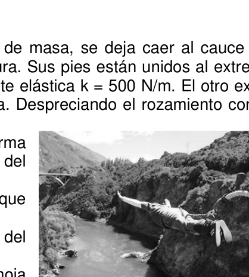
Topic: Newtonian Mechanics Metodi: Kinematic Equations, Vector Decomposition Competenze: Physical Reasoning Objects: Projectile, Cart Fonte: Testo (PDF) — p.7
Problema 1 Si spara un proiettile con un cannone verso il muro di una città che si trova a 5 km da noi. A chilometri da dove si trova il cannone. Le proiettili uscivano dalla bocca del cannone con una velocità di 200 m/s e formando un angolo di 30° con la linea orizzontale. Supponendo che Il modulo di accelerazione della gravità è pari a 10 m/s2 e disprezza l’altezza di la bocca del cannone: a) Determina i componenti verticali e orizzontali dell’accelerazione, della velocità e la posizione del proiettile dal momento in cui viene sparato fino all’impatto. b) Facciamo tutti i calcoli necessari per dimostrare che i proiettili non sono arrivano a colpire il muro.
Per raggiungere l’obiettivo di abbattere il muro si colloca il cannone su un veicolo che si si muove in direzione orizzontale a velocità vx. Il cannone viene sparato Esattamente quando la loro separazione dal muro è di 5 km. c) Determina ora quali sono i componenti verticali e orizzontali della Accelerazione, velocità e posizione del proiettile. d) Calcolare la velocità vx del veicolo per far sì che i proiettili Colpisci il muro.
Topic: Newtonian Mechanics Metodi: Kinematic Equations, Vector Decomposition Competenze: Physical Reasoning Objects: Projectile, Cart Fonte: Testo (PDF) — p.7
Problem 1 is A projectile is fired from a cannon into the wall of a city that is located 5 km away. Miles from where the cannon is located. The shells come out of the cannon ‘s mouth with a speed of 200 m/s and forming an angle of 30° with the horizontal. Assuming that The acceleration module of gravity is equal to 10 m/s2 and disregarding the height of the mouth of the canyon: (a) Determine the vertical and horizontal components of acceleration, speed and the position of the projectile from the time it is fired until it hits. (b) Make all the necessary calculations to demonstrate that the projectiles are not They hit the wall.
To achieve the goal of knocking down the wall the cannon is placed on a vehicle that is It moves in the horizontal direction at a speed of vx. The cannon is fired . Exactly when their separation from the wall is 5 km. (c) Determine now which are the vertical and horizontal components of the Acceleration, speed and position for the projectile. (d) Calculate the vehicle speed vx for the projectiles to be fired. Hit the wall.
Topic: Newtonian Mechanics Metodi: Kinematic Equations, Vector Decomposition Competenze: Physical Reasoning Objects: Projectile, Cart Fonte: Testo (PDF) — p.7
Problema 2
Una persona, de 1,80 m de altura y 100 kg de masa, se deja caer al cauce de un río
desde una plataforma ubicada a 50 m de altura. Sus pies están unidos al extremo de un
resorte de 35 m de longitud natural y constante elástica k = 500 N/m. El otro extremo del
resorte está firmemente atado a la plataforma. Despreciando el rozamiento con el aire y
suponiendo g = 10 m/s2.
a) Calcule a qué distancia de plataforma
está la posición de equilibrio estático del
hombre.
b) Determine la máxima velocidad que
alcanza el hombre en la caída.
c) Calcule el máximo estiramiento del
resorte.
d) Determine si el hombre se moja
haciendo todos los cálculos que sean
necesarios.
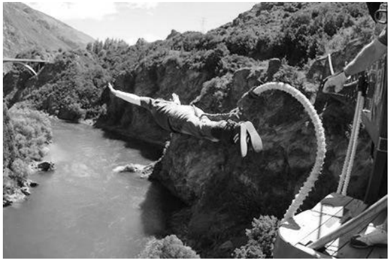
Topic: Conservation of Energy, Oscillations & Waves Metodi: Conservation of Energy, Hooke’s Law Competenze: Physical Reasoning Objects: Spring Fonte: Testo (PDF) — p.7
Problema 2 Una persona, alta 1,80 m e di massa di 100 kg, si lascia cadere nel canale di un fiume. da una piattaforma a 50 metri di altezza. I suoi piedi sono legati all’estremità di un la primavera di 35 m di lunghezza naturale e costante elastica k = 500 N/m. L’altra estremità del la primavera è saldamente legata alla piattaforma. Scommettere il ruggine con l’aria e supponendo che g = 10 m/s2. a) Calcolare la distanza da piattaforma è la posizione di equilibrio statico di
- Non è vero. b) Determina la velocità massima che colpisce l’uomo nel cadere. (c) Calcolare la massima estensione del Primavera. d) Determina se l’uomo si bagna Facendo tutti i calcoli che sono. necessaria.
Topic: Conservation of Energy, Oscillations & Waves Metodi: Conservation of Energy, Hooke’s Law Competenze: Physical Reasoning Objects: Spring Fonte: Testo (PDF) — p.7
Problem two . A person, 6 feet tall and weighing 100 pounds, is dropped into a riverbed. from a platform located at 50 m. His feet are attached to the end of a spring of 35 m natural length and constant elasticity k = 500 N/m. The other end of the line . spring is tightly tied to the platform. By despising the air-crushing and assuming g = 10 m/s2. (a) Calculate the platform distance is the static equilibrium position of the
- What? (b) Determine the maximum speed that It hits the man in the fall. (c) Calculate the maximum stretch of the spring. (d) Determine whether the man is wet Doing all the calculations that are The Commission’s proposal for a directive on the protection of workers’ rights
Topic: Conservation of Energy, Oscillations & Waves Metodi: Conservation of Energy, Hooke’s Law Competenze: Physical Reasoning Objects: Spring Fonte: Testo (PDF) — p.7
Problema 3 Una niña arma el dispositivo que se muestra en la figura. Este está compuesto por un péndulo formado por una masa puntual m1 la cual está suspendida de un hilo de masa despreciable y longitud l0. El péndulo se libera con el hilo en posición horizontal y cuando la masa llega a la parte inferior de su trayectoria choca elásticamente con otro cuerpo m2. El cuerpo m2 desliza una distancia d sobre la superficie horizontal sin rozamiento hasta impactar con un resorte de constante elástica k al cual comprime hasta detenerse. Luego el resorte se expande haciendo que el cuerpo regrese hacia donde está el péndulo. a) Describa cualitativamente cuál será el movimiento de los cuerpos que componen el sistema. b) Determine la velocidad de los cuerpos luego del choque. c) Calcule cuál será la máxima compresión del resorte cuando m2 choque con él. d) Determine el tiempo que demorará m2 volver nuevamente a la posición inicial. e) Diga si el movimiento de este sistema será periódico y en caso afirmativo analice si se puede determinar el periodo de este movimiento y cuál sería su valor.
32 - OAF 2020
Datos: m1 = m2 = 5 kg; l0 = 5 m; d = 50 m; k = 125 N/m y g = 10 m/s2.
Problema Experimental Caída libre y rebotes
Primera Parte Introducción Cuando una pelota rebota sobre una superficie rígida, la componente de la velocidad perpendicular a la superficie invierte su sentido y disminuye su valor, mientras que la componente paralela se mantiene constante. Es decir, si la velocidad de la pelota antes del choque es 𝑣⃗ y luego del choque es 𝑢⃗⃗,
𝑢𝑥= 𝑣𝑥
(1)
𝑢𝑦= −𝑒 𝑣𝑦
(2)
Donde 𝑒 es el coeficiente de restitución con 0 < 𝑒< 1 .
Si una pelota se deja caer desde una altura ℎ0, en los sucesivos rebotes pierde energía y alcanza alturas cada vez menores hasta que eventualmente se detiene como se observa en la figura 1.
Figura 1: Rebotes sucesivos de una pelota que cae desde una altura ℎ0.
Escribiendo la ecuación de movimiento para la pelota se puede encontrar que
𝑡0 = √
2ℎ0
𝑔
(3)
m1 m2 l0 d
OAF 2020- 33
𝑡1 = (1 + 2𝑒)√
2ℎ0
𝑔
(4)
Donde g es la aceleración de la gravedad.
Objetivo
- Determinar el coeficiente de restitución 𝑒 de una pelota.
Materiales
- Pelota
- Cronómetro
- Cinta métrica
Procedimiento
a) Mida el tiempo 𝑡0 y 𝑡1 cuando la pelota se deja caer desde una altura ℎ0. Repita
las mediciones 10 veces para 5 alturas ℎ0 distintas. Determine el valor de ℎ0
utilizados en las mediciones.
b) Grafique 𝑡0
2 en función de ℎ0 y realice un ajuste lineal de los puntos.
c) Grafique 𝑡1
2 en función de ℎ0 y realice un ajuste lineal de los puntos.
d) A partir de la ecuación (3) y (4) y de los ajustes realizados, determine el valor
de 𝑒.
Segunda Parte: Uso de un cronómetro acústico (Aplicación gratuita phyphox para teléfonos celulares).
Introducción Se puede demostrar que el tiempo ∆𝑡𝑛= 𝑡𝑛−𝑡𝑛−1 que la pelota pasa en el aire entre dos rebotes sucesivos es
∆𝑡𝑛= 2𝑡0𝑒𝑛
(5)
Donde 𝑡0 está dado por la ecuación (3) y 𝑛 es el número de rebotes.
Tomando logaritmo natural en ambos miembros de la ecuación (5) se obtiene que
ln(∆𝑡𝑛) = 𝑛 𝑙𝑛(𝑒) + 𝑙𝑛(2𝑡0)
(6)
Entonces eligiendo como variables a y = ln(∆𝑡𝑛) y a 𝑥= 𝑛 se obtiene una relación lineal entre estas variables.
Objetivo
- Determinar el coeficiente de restitución 𝑒 de una pelota y la aceleración de la gravedad
Materiales
- Pelota
- Cronómetro acústico (Aplicación phyphox)
- Cinta métrica
Procedimiento e) Deje caer una pelota desde una altura ℎ0 y mida el tiempo entre rebotes sucesivos. Para ello utilice la opción Temporizadores > Cronómetro acústico > Secuencia de la aplicación phyphox. f) Determine la altura ℎ0 utilizada en la medición.
34 - OAF 2020 g) Realice un gráfico de la variable 𝑦 en función de la variable 𝑥 propuesta. Realice un ajuste lineal. h) A partir de la pendiente y de la ordenada al origen obtenidas del ajuste, determine el valor de 𝑔 y de 𝑒.
Nota El error de y = ln(∆𝑡𝑛) puede determinarse como σ𝑦= σ∆𝑡𝑛 ∆𝑡𝑛 donde σ∆𝑡𝑛 es el error de ∆𝑡𝑛.
Segunda Prueba Preparatoria: Electricidad y Magnetismo
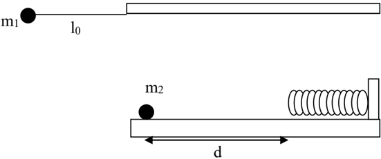
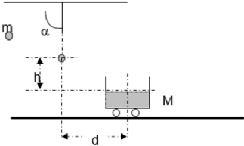
Topic: Conservation of Momentum, Conservation of Energy Metodi: Conservation of Momentum, Conservation of Energy, Hooke’s Law Competenze: Physical Reasoning Objects: Pendulum, Block, Spring Fonte: Testo (PDF) — p.7
Problema 3 Una bambina arma il dispositivo che viene mostrato nella figura. Questo è composto da un pendolo formato da una massa puntante m1 che è sospesa da un filo di massa scarsa e longitudinale l0. Il pendolo si libera con il filo in posizione orizzontale e quando la massa raggiunge la parte inferiore del suo percorso colpisce elasticamente con un altro corpo m2. Il corpo m2 scivola una distanza d sulla superficie orizzontale senza rottura fino a colpisce con una sorgente di costante k e si comprime fino a fermarsi. Poi la primavera si espandono facendo tornare il corpo verso il pendolo. a) Descriva qualitativamente il movimento dei corpi che li compongono. il sistema. b) Determina la velocità dei corpi dopo l’impatto. c) Calcolare la massima compressione della molla quando m2 colpisce la molla. d) Determina il tempo necessario per tornare a posizionare di nuovo il m2. e) Indicare se il movimento di questo sistema sarà periodico e, se sì, analizzare se si può determinare il periodo di tale movimento e quale sarebbe il suo valore.
32 - OAF 2020
Dati: m1 = m2 = 5 kg; l0 = 5 m; d = 50 m; k = 125 N/m e g = 10 m/s2.
Problema sperimentale Caduta libera e rimbalzi
Parte I Introduzione Quando una palla rimbalza su una superficie rigida, la componente di velocità Perpendicolare alla superficie inverte il senso e diminuisce il valore, mentre la la componente parallela è costante. Cioè, se la velocità del pallone prima della collisione è v e dopo la collisione è u,
𝑢𝑥= 𝑣𝑥
(1)
𝑢𝑦= −𝑒 𝑣𝑦
(2)
Dove e è il coefficiente di restituzione con 0 < e < 1 .
Se una palla viene lasciata cadere da un’altezza h0, nei successivi rimbalzi perde energia e raggiunge altezze sempre più ridotte fino a quando si ferma come si osserva. in figura 1.
Figura 1: Sostenute rinfreschi di una palla che cade da un’altezza h0.
Scrivendo l’equazione di movimento per la palla si può trovare che
𝑡0 = √
2ℎ0
𝑔
(3)
m1 m2 l0 d
OAF 2020- 33
𝑡1 = (1 + 2𝑒)√
2ℎ0
𝑔
(4)
Dove g è l’accelerazione della gravità.
Obiettivo
- Determinare il coefficiente di restituzione e di una palla.
Materiali
- Ballo .
- Cronometro .
- Cintura metrica .
Procedura a) Misurare il tempo t0 e t1 quando la palla viene lasciata cadere da un’altezza h0. Ripeti le misurazioni 10 volte per 5 altezze diverse. Determina il valore di h0 utilizzati nelle misurazioni. b) Grafico t0 2 in funzione di h0 e eseguire un regolazione lineare dei punti. c) Grafico t1 2 in funzione di h0 e eseguire un regolazione lineare dei punti. d) Sulla base delle equazioni (3) e (4) e degli aggiustamenti effettuati, determinare il valore de 𝑒.
Parte II: Uso di un cronometro acustico (Applicazione gratuita di phyphox per Telefoni cellulari).
Introduzione Si può dimostrare che il tempo ∆tn=tn−tn−1 che la palla passa in aria tra due successive rimbalzi è
∆𝑡𝑛= 2𝑡0𝑒𝑛
(5)
Dove t0 è dato dall’equazione (3) e n è il numero di rimbalzi.
Prendendo logaritmo naturale su entrambi i membri dell’equazione (5) si ottiene che
ln(∆𝑡𝑛) = 𝑛 𝑙𝑛(𝑒) + 𝑙𝑛(2𝑡0)
(6)
Quindi scegliendo come variabili a y = ln(∆tn) e a x = n si ottiene un rapporto lineare tra queste variabili.
Obiettivo
- Determinare il coefficiente di restituzione e di una palla e l’accelerazione della gravità
Materiali
- Ballo .
- Cronometro acustico (applicazione phyphox)
- Cintura metrica .
Procedura e) Lasciare cadere una palla da un’altezza h0 e misurare il tempo tra i successivi rimbalzi. Per fare questo, utilizzare l’opzione Temporatori > Cronometro acustico > Sequenza della Applicazione di phyphox. f) Determina l’altezza h0 utilizzata per la misurazione.
34 - OAF 2020 g) Realizzare un grafico della variabile e in base alla variabile x proposta. Fate un’ operazione. regolazione lineare. h) A partire dalla pendenza e dall’ordinanza all’origine ottenute dall’aggiustamento, determinare il Valore di g e di e.
Nota L’errore di y = ln(∆tn) può essere determinato come σy= σ∆𝑡𝑛 ∆tn dove σ∆tn è l’errore di ∆tn.
Secondo esame preparatorio: elettricità e magnetismo
Topic: Conservation of Momentum, Conservation of Energy Metodi: Conservation of Momentum, Conservation of Energy, Hooke’s Law Competenze: Physical Reasoning Objects: Pendulum, Block, Spring Fonte: Testo (PDF) — p.7
Problem three . A girl arms the device shown in the figure. This one is made up of a pendulum formed by a point mass m1 which is suspended from a mass thread The length of the length is 0. The pendulum is released with the thread in a horizontal position and when The mass reaches the bottom of its trajectory and collides elastically with another m2 body. The m2 body slides a distance d over the horizontal surface without rubbing up to The pressure of the gas is measured by the pressure of the gas. Then . The spring expands, causing the body to return to where the pendulum is. (a) Qualitatively describe the movement of the bodies that make up the body. the system. (b) Determine the speed of the bodies after impact. (c) Calculate the maximum spring compression when m2 hits it. (d) Determine how long it will take m2 to return to the starting position. (e) Tell if the movement of this system will be periodic and if so, analyse whether the period of this movement can be determined and its value.
The Commission shall adopt delegated acts in accordance with Article 21 of this Regulation.
Data: m1 = m2 = 5 kg; l0 = 5 m; d = 50 m; k = 125 N/m and g = 10 m/s2.
Experimental problem . Free fall and bounce .
Part one The first is the introduction. When a ball bounces over a rigid surface, the component of speed Perpendicular to the surface reverses its meaning and decreases its value, while the The parallel component is kept constant. I mean, if the speed of the ball before of the shock is v and after the shock is u,
𝑢𝑥= 𝑣𝑥
(1)
𝑢𝑦= −𝑒 𝑣𝑦
(2)
Where e is the restitution coefficient with 0 < e < 1 .
If a ball is dropped from a height of h0, in successive bouts it loses energy and It reaches ever-shorter heights until eventually stops as seen in Figure 1.
Figure 1: Successive bouncing of a ball falling from a height of h0.
Writing the motion equation for the ball you can find that
𝑡0 = √
2ℎ0
𝑔
(3)
m1 m2 l0 d
The Commission shall adopt implementing acts in accordance with Article 21 of the Financial Regulation.
𝑡1 = (1 + 2𝑒)√
2ℎ0
𝑔
(4)
Where g is the acceleration of gravity.
The objective
- Determine the coefficient of return and a ball.
Materials
- Ball .
- The chronometer .
- Metric tape .
The procedure (a) Measure the time t0 and t1 when the ball is dropped from a height of h0. Repeat . The measurements are 10 times for 5 different heights h0. Determine the value of h0 used in measurements. (b) Graph t0 2 based on h0 and linearly adjust the points. (c) Graph t1 2 based on h0 and linearly adjust the points. (d) From equation (3) and (4) and adjustments made, determine the value de 𝑒.
Part Two: Use of an acoustic chronometer (Free phyphox app for cell phones).
The first is the introduction. It can be shown that the time ∆tn=tn−tn−1 that the ball passes in the air between two Successive rebounds are
∆𝑡𝑛= 2𝑡0𝑒𝑛
(5)
Where t0 is given by equation (3) and n is the number of bounces.
Taking natural logarithms on both sides of the equation (5) it is obtained that
ln(∆𝑡𝑛) = 𝑛 𝑙𝑛(𝑒) + 𝑙𝑛(2𝑡0)
(6)
So by choosing as variables a y = ln(∆tn) and a x = n we get a linear relationship between these variables.
The objective
- Determine the return coefficient of a ball and the acceleration of the ball gravity
Materials
- Ball .
- Acoustic chronometer (phyphox application)
- Metric tape .
The procedure (e) Drop a ball from a height h0 and measure the time between successive bounces. For this, use the option Timers > Acoustic Chronometer > Sequence of the The application is phyphox. (f) Determine the height h0 used in the measurement.
The Commission shall adopt delegated acts in accordance with Article 21 of this Regulation. g) Draw a graph of the variable and on the basis of the proposed variable x. Do a . linear adjustment. (h) From the slope and the originating order obtained from the adjustment, determine the value of g and of e.
Note The error of y = ln(∆tn) can be determined as σy= σ∆𝑡𝑛 ∆tn where σ∆tn is the error of ∆tn.
Second Preparatory Test: Electricity and Magnetism
Topic: Conservation of Momentum, Conservation of Energy Metodi: Conservation of Momentum, Conservation of Energy, Hooke’s Law Competenze: Physical Reasoning Objects: Pendulum, Block, Spring Fonte: Testo (PDF) — p.7
Problema 1 Del techo de una habitación de 2 m de altura se ata un hilo de 1 m de longitud. Del otro extremo del hilo se suspende una pelotita de ping-pong, tal como se muestra en la figura. Dentro de la habitación hay un campo eléctrico de 3000 V/m generado por dos placas cargadas, estando la placa positiva adherida al piso y la negativa al techo. En un determinado instante de tiempo, se corta el hilo y la pelotita cae. Sabiendo que inicialmente la pelotita estaba descargada, su masa es de 2,8 g, su radio es de 2 cm y que si se la deja caer desde una altura de 30 cm rebota hasta una altura de 23 cm, calcule:
a) La aceleración, velocidad y posición en función del tiempo de la pelotita mientras cae. b) El trabajo que hace el campo eléctrico durante la caída.
Cuando la pelotita toca la placa inferior (positiva) adquiere una carga de 5 10-6 C. c) La aceleración, velocidad y posición de la pelotita luego que rebota en el piso. d) La máxima altura que alcanza y el tiempo que demora en alcanzarla. e) El trabajo total realizado por el campo eléctrico sobre la pelotita. f) El trabajo total realizado por la fuerza peso sobre la pelotita.
Nota: suponga que la aceleración de la gravedad es igual a 10 m/s2
OAF 2020- 35
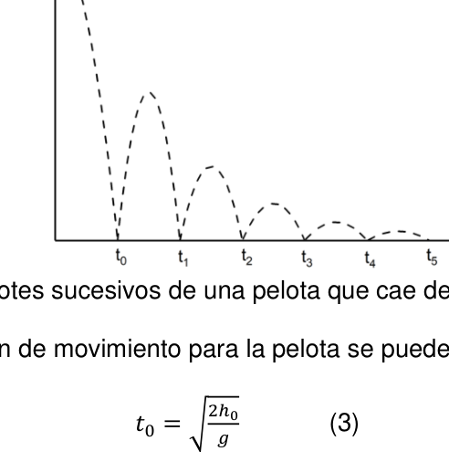
Topic: Electrostatics, Newtonian Mechanics Metodi: Coulomb’s Law, Kinematic Equations, Conservation of Energy Competenze: Physical Reasoning Objects: Point Charge, Capacitor, Ball Fonte: Testo (PDF) — p.7
Problema 1 Dal tetto di una stanza alta 2 metri si attacca un filo lungo 1 metro. L’altro . all’estremità del filo viene sospesa una palla di ping-pong, come mostrato nella figura. All’interno della stanza c’è un campo elettrico di 3000 V/m generato da due placche. La piastra positiva è attaccata al pavimento e la negativa al tetto. In un certo istante, il filo viene tagliato e la palla cade. Sapendo che Inizialmente la palla era scaricata, il suo massa è di 2,8 g, il suo raggio è di 2 cm e che, se viene lasciata cadere da una altezza di 30 cm, rimbalza fino a una altezza di 23 cm, Calcola:
a) Accelerazione, velocità e posizione in funzione del tempo della palla mentre
- Si cade. b) Il lavoro che fa il campo elettrico durante il caduto.
Quando la palletita tocca la placca inferiore (positiva) acquisisce un carico di 5 10-6 C. c) L’accelerazione, la velocità e la posizione della palla dopo che si rimbalza sul pavimento. d) L’altezza massima raggiunta e il tempo necessario per raggiungerla. e) Il lavoro totale svolto dal campo elettrico sulla palla. f) Il lavoro totale effettuato dalla forza di peso sulla palla.
Nota: supponiamo che l’accelerazione della gravità sia pari a 10 m/s2
OAF 2020- 35
Topic: Electrostatics, Newtonian Mechanics Metodi: Coulomb’s Law, Kinematic Equations, Conservation of Energy Competenze: Physical Reasoning Objects: Point Charge, Capacitor, Ball Fonte: Testo (PDF) — p.7
Problem 1 is A 1 m long thread is tied from the ceiling of a 2 m high room. From the other . At the end of the thread a little ping-pong ball is suspended, as shown in the figure. Inside the room is a 3,000 V/m electric field generated by two plates. The positive plate is attached to the floor and the negative plate to the ceiling. At a certain moment, the thread is cut and the ball falls. Knowing that Initially the ball was unloaded, its mass is 2.8 g, its radius is 2 cm and that if dropped from a height of 30 cm, it bounces back to a height of 23 cm, Calculate:
(a) The acceleration, speed and position of the ball according to the time of the ball while It falls. (b) The work done by the electric field during the fall.
When the ball hits the lower plate (positive) it acquires a load of 5 10-6 C. (c) The acceleration, speed and position of the ball after it bounces on the floor. (d) The maximum height it reaches and the time it takes to reach it. (e) The total work carried out by the electric field on the ball. (f) Total work performed by the weight force on the ball.
Note: assume that the acceleration of gravity is equal to 10 m/s2
The following is the list of the countries of the European Union:
Topic: Electrostatics, Newtonian Mechanics Metodi: Coulomb’s Law, Kinematic Equations, Conservation of Energy Competenze: Physical Reasoning Objects: Point Charge, Capacitor, Ball Fonte: Testo (PDF) — p.7
Problema 2
Considere el dispositivo de la figura. El mismo consiste de un recipiente C que tiene una
sección transversal A. En su parte superior está abierto y en la parte inferior de su pared
lateral tiene instalado un tubito circular delgado de sección transversal a y longitud L con
un tapón en un extremo.
Suponga que en el recipiente hay un fluido ideal de densidad = g cm-3. Todo el
sistema está a 1atm y a una temperatura ambiente T0.
Suponga que en t=0, con el nivel de líquido H0=10 cm y en reposo vA(0) = 0, se saca el tapón y el líquido comienza a salir por el tubo. Se sabe que la sección es A=20 cm2 y que la sección del tubito es a= 0.08 cm2, por lo que el líquido en el tanque se mueve “suavemente”.
a) Considerando la ecuación de Bernoulli, plantee una relación entre la velocidad a la que sale el fluido por el tubito vB(t), el nivel de líquido en el recipiente H(t) y la velocidad con la que baja el nivel de líquido en el recipiente vA(t).
b) Considerando la conservación de la masa y los caudales, escriba una relación entre la velocidad de salida del líquido por el tubito vB(t) y la velocidad a la que desciende el nivel vA(t) en el recipiente.
c) Encuentre una relación entre el nivel H(t) de líquido al tiempo t y la velocidad con la que está descendiendo vA(t) al mismo tiempo t.
d) Escriba una expresión para el cambio de nivel (HA(t)) que se produce en un intervalo de tiempo t usando vA(t).
e) Con las expresiones del ítem c) y del ítem d) escriba una expresión para HA(t1) en términos de HA(t0) y de t= t1 – t0 = 1s (recuerde que el nivel disminuye).
f) Usando el resultado del ítem anterior y haciendo un esquema iterativo determine el H(t) para los diez primeros segundos. Escriba los resultados de t y H(t) en una tabla.
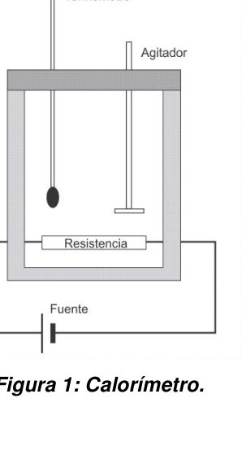
Topic: Fluid Mechanics Metodi: Bernoulli’s Equation, Continuity Equation Competenze: Physical Reasoning, Mathematical Modeling Objects: Container, Tube Fonte: Testo (PDF) — p.7
Problema 2
Considerate il dispositivo della figura. Il contenitore è costituito da un contenitore C con una sezione trasversale A. La sua parte superiore è aperta e la sua parte inferiore del muro. La laterale ha installato un tubo circolare sottile di sezione trasversale a e lunghezza L con un tappo in un’estremità. Supponiamo che nel recipiente ci sia un fluido ideale di densità = g cm-3. Tutto il Il sistema è a 1 atm e a temperatura ambiente T0.
Supponiamo che a t=0, con il livello di liquido H0=10 cm e a riposo vA(0) = 0, si tratti il il tappo e il liquido inizia a uscire dal tubo. Si sa che la sezione è A=20 cm2 e che la sezione del tubo è a= 0.08 cm2, quindi il liquido nel serbatoio si muove
- Lento.
a) Considerando l’equazione di Bernoulli, si pone un rapporto tra la velocità a cui il liquido viene fuori dal tubo vB(t), il livello di liquido nel recipiente H(t) e la velocità con la che abbassano il livello di liquido nel recipiente vA(t).
b) Considerando la conservazione della massa e dei flussi, scrivere un rapporto tra la massa e i flussi. velocità di uscita del liquido attraverso il tubo vB(t) e velocità di discesa del livello vA(t) nel contenitore.
c) Trova un rapporto tra il livello di liquido H(t) al tempo t e la velocità con la velocità con la velocità con la velocità con la velocità con la velocità con la velocità con la velocità con la velocità con la velocità con la velocità con la velocità con la velocità con la velocità con la velocità con la velocità con la velocità con la velocità con la velocità con la velocità con la velocità con la velocità con la velocità con la velocità con la velocità con la velocità con la velocità con la velocità con la velocità con la velocità con la velocità con la velocità con la velocità con la velocità con la velocità con la velocità con la velocità con la velocità con la velocità con la velocità con la velocità con la velocità con la velocità con la velocità con la velocità con la velocità con la velocità con la velocità con la velocità con la velocità con la velocità con la velocità con la velocità con la velocità con la velocità con la velocità con la velocità con la velocità con la velocità con la velocità con la velocità con la velocità con la velocità con la velocità con la velocità con la velocità con la velocità con la velocità con la velocità con la velocità con la velocità con la velocità con la velocità con la velocità con la velocità con la velocità con la velocità con la velocità con la velocità con la velocità con la velocità con la velocità con la velocità con la velocità con la velocità con la velocità con la velocità con la velocità con la velocità con la velocità con la velocità con la velocità con la velocità con la velocità con la velocità con la velocità con la velocità con la velocità con la velocità con la velocità con la con la velocità con la velocità con la velocità con la velocità con la velocità con la che sta scendendo vA(t) allo stesso tempo t.
d) Scrivi un’espressione per il cambiamento di livello (HA(t)) che si verifica in un intervallo di tempo t usando vA(t).
e) Con le espressioni di punto c) e di punto d) scrivere un’espressione per HA(t1) in termini di HA(t0) e di t=t1 t0 = 1s (ricordate che il livello diminuisce).
f) Usando il risultato dell’oggetto precedente e facendo uno schema iterativo, determinare il H(t) per i primi dieci secondi. Scrivi i risultati di t e H(t) su una tabella.
Topic: Fluid Mechanics Metodi: Bernoulli’s Equation, Continuity Equation Competenze: Physical Reasoning, Mathematical Modeling Objects: Container, Tube Fonte: Testo (PDF) — p.7
Problem two .
Consider the device in the figure. It consists of a C container which has a cross section A. On top of it it ‘s open and on the bottom of its wall . The side has a thin circular tube with a cross section length L with A cap on one end. Suppose that there is an ideal fluid density = g cm-3 in the container. All the way . The system is at 1 atm and at room temperature T0.
Suppose that at t=0, with the liquid level H0=10 cm and at rest vA(0) = 0, the is removed. the plug and the liquid starts to come out through the tube. It is known that the section is A=20 cm2 and that The tube section is a=0.08 cm2, so the liquid in the tank moves
- I’m going to go.
(a) Considering Bernoulli’s equation, I propose a relation between the speed at which The fluid is released through the tube vB(t), the fluid level in the container H(t) and the velocity with the lowering the liquid level in the vA(t container.
(b) Considering the conservation of mass and flow rates, write a relation between the the velocity of the liquid outflow through the tube vB(t) and the velocity at which the level descends vA(t) in the container.
(c) Find a relationship between the liquid level H(t) at time t and the velocity with the It’s going down vA(t) at the same time t.
d) Write an expression for the change in level (HA(t)) that occurs in an interval time t using vA(t).
(e) With the expressions of item c) and item d) write an expression for HA(t1) in The following is the list of the values of the values of the values of the values of the values of the values of the values of the values of the values of the values of the values of the values of the values of the values of the values of the values of the values of the values of the values of the values of the values of the values of the values of the values of the values of the values of the values of the values of the values of the values of the values of the values of the values of the values of the values of the values of the values of the values of the values of the values of the values of the values of the values of the values of the values of the values of the values of the values of the values of the values of the values of the values of the values of the values of the values of the values of the values of the values of the values of the values of the values of the values of the values of the values of the values of the values of the values of the values of the values of the values of the values of the values of the values of the values of the values of the values of the values of the values of the values of the values of the values of the values of the values of the values of the values of the values of the values of the values of the values of the values of the values of the values of the values of the values of the values of the values of the values of the values of the values of the values of the values of the values of the values of the values of the values of the values of the values of the values of the respective respective respective values of the respective values of the respective values of the respective values of the respective values of the respective respective respective respective respective values of the respective respective respective respective values of the respective respective values of the respective respective respective respective respective respective respective values.
f) Using the result of the previous item and doing an iterative scheme determine the H(t) for the first ten seconds. Write the results of t and H(t) in a table.
Topic: Fluid Mechanics Metodi: Bernoulli’s Equation, Continuity Equation Competenze: Physical Reasoning, Mathematical Modeling Objects: Container, Tube Fonte: Testo (PDF) — p.7
Problema 3 Un calorímetro adiabático tiene en su interior una resistencia 𝑅= 5 Ω conectada a una fuente de corriente continua como se muestra en la figura 1. El calorímetro posee además un termómetro y un agitador.
a) Con la fuente apagada, se coloca en el calorímetro una masa de agua
𝑚1 = 500 𝑔 a temperatura ambiente 𝑇𝑎𝑚𝑏= 20°𝐶. Luego se agrega una masa
de agua 𝑚2 = 500 𝑔 a 𝑇2 = 45°𝐶. Luego de un tiempo, se observa que el
36 - OAF 2020
sistema alcanza una temperatura de equilibrio
𝑇𝑒= 31,9°𝐶. Determine el equivalente en agua
del calorímetro (𝜋).
b1) Con la fuente apagada y el calorímetro a
temperatura ambiente 𝑇𝑎𝑚𝑏= 20°𝐶, se coloca
en él una masa de agua 𝑚𝑎= 500 𝑔 a
𝑇𝑎= 40°𝐶.
Determine
la
temperatura
del
sistema cuando este alcanza el equilibrio.
b2) Al sistema anterior se le agrega una masa de
hielo
𝑚ℎ= 300 𝑔
a
una
temperatura
𝑇ℎ= −20°𝐶. Determine el estado final del
sistema.
b3) Se enciende la fuente con un voltaje de 10𝑉 por
25 minutos. Determine el nuevo estado final del
sistema.
b4) Sabiendo que la potencia máxima que es capaz
de entregar la fuente es de 60W, determine el
tiempo mínimo necesario para que el sistema
alcance una temperatura de 80°𝐶.
Constantes Calor específico del agua 𝑐𝑎= 1 𝑐𝑎𝑙 𝑔−1 °𝐶−1 Calor específico del hielo 𝑐ℎ= 0,5 𝑐𝑎𝑙 𝑔−1 °𝐶−1 Calor latente de fusión 𝜆𝑙= 80 𝑐𝑎𝑙 𝑔−1 Equivalencia Joule-Calorías 1 𝑐𝑎𝑙= 4.184 𝐽
Problema Experimental Líquidos y tachitos
Primer desafío Objetivo Aplicar el principio de Torricelli (fluido ideal) para describir la descarga de un recipiente.
El principio de Torricelli establece que en un sistema como el de la figura, la velocidad con la que sale un fluido ideal (sin viscosidad) por el tubito está dada por: 𝑣𝐵= √2 𝑔 𝐻
Considerando la relación entre la sección del tachito y la del tubito, el nivel de líquido en
el recipiente descenderá (cuando se saque el tapón) a medida que pase el tiempo, de la
forma:
√ 𝐻(𝑡) = √ 𝐻0 − 𝛼 𝑡 (1)
Figura 1: Calorímetro.
OAF 2020- 37 Con 𝛼= √ 𝑔 2(𝐴 𝑎−1) Donde 𝐴 es la sección transversal del tachito y 𝑎 la sección transversal del tubito, 𝑔 es la aceleración de la gravedad (9.79 m s-2), 𝐻0 el nivel de líquido inicial (en 𝑡0 = 0 ) y 𝑡 el tiempo transcurrido.
Dispositivo Construya un dispositivo similar al de la figura y utilícelo para verificar el comportamiento dado en la ecuación (1). Se sugiere usar:
- tubito de lapicera tipo bic. Mida su longitud 𝑳. Mida su diámetro interno y calcule 𝒂
- tachito de yogurt, botellita de gaseosa, o algún otro recipiente de tamaño similar y sección aproximadamente uniforme. Mida su diámetro interno y calcule 𝑨
- recipiente en donde caiga el líquido que sale del tubito.
- plastilina o cera de vela (derretida) para sellar la unión tubito – tachito.
- regla pequeña o palito graduado.
- cronómetro.
- agua
Mediciones
- Cargue el tachito con agua.
- Permita que salga agua por el tubito.
- Mida el nivel de agua en el tachito en función del tiempo, al menos para 8 valores de tiempo. Se sugiere hacer las mediciones cada vez que el nivel en el tachito haya variado en 5mm.
- Confeccione una tabla con los resultados en la que esté incluida una columna correspondiente a √ 𝐻.
- Grafique los resultados y ajuste una recta considerando a √ 𝐻 como ordenada y a 𝑡 como abscisa. Escriba la ecuación de la recta.
- Asociando la recta del ajuste con la ecuación (1), compare el valor de la pendiente experimental con el valor teórico.
- En todo el desarrollo del procedimiento aclare los criterios que utilizó en el tratamiento de las incertezas.
Segundo desafío La ley de Poiseuille se utiliza para describir flujos en los cuales la viscosidad del fluido es relevante. Si se considera un sistema como el de la Figura, un fluido viscoso saldrá del tachito a través del tubito siguiendo la siguiente ley:
𝐻= 𝐻0 𝑒−𝛽𝑡 (2)
𝑙𝑛(
𝐻
𝐻0) = −𝛽𝑡 (3)
Con 𝛽=
𝑎
𝐴
𝑟2
8 𝐿
𝑔
Donde 𝐴 es la sección del tachito y 𝑎 la sección del tubito, 𝑟 es el radio interno del tubito,
𝑔 es la aceleración de la gravedad, 𝐿 es el largo del tubito, es la viscosidad cinemática
del fluido, 𝐻0 el nivel de líquido inicial (en 𝑡0 = 0 ) y 𝑡 el tiempo transcurrido.
Nota: en la ecuación (2) se ha escrito la función exponencial, 𝑒 es la base de los
logaritmos naturales 𝑙𝑛(𝑥).
Objetivo Usando el dispositivo construido antes, pero con aceite comestible: verificar la ecuación (3) y determinar la viscosidad cinemática del aceite empleado.
Mediciones
-
Cargue el tachito con aceite.
38 - OAF 2020
-
Permita que salga aceite por el tubito.
-
Mida el nivel de aceite en el tachito en función del tiempo, obtenga al menos 4 pares de valores.
-
Confeccione una tabla con los resultados en la que esté incluida una columna correspondiente a 𝑙𝑛( 𝐻 𝐻0).
-
Grafique los resultados y ajuste una recta considerando a 𝑙𝑛( 𝐻 𝐻0) como ordenada y a 𝑡 como abscisa. Escriba la ecuación de la recta.
-
Asociando la recta del ajuste con la ecuación (3), determine la viscosidad cinemática del aceite empleado.
-
En todo el desarrollo del procedimiento aclare los criterios que utilizó en el tratamiento de las incertezas.
OAF 2020- 39
Instancia Locales Problemas Teóricos
40 - OAF 2020
OAF 2020- 41
Topic: Thermodynamics, Circuits Metodi: First Law of Thermodynamics, Kirchhoff’s Laws Competenze: Physical Reasoning Objects: Calorimeter, Resistor, Battery Fonte: Testo (PDF) — p.7
Problema 3 Un calometro adiabatico ha all’interno una resistenza R= 5 Ω collegata a una resistenza di Fonte di corrente continua come mostrato in figura 1. Il calometro possiede E poi un termometro e un agitatore.
a) Se la fonte è spenta, si inserisce un’acqua nel caloriometro M1 = 500 g a temperatura ambiente Tamb= 20°C. Poi si aggiunge una massa. di acqua m2 = 500 g a T2 = 45°C. Dopo un po’ si osserva che il
36 - OAF 2020 sistema raggiunge una temperatura di equilibrio 𝑇𝑒= 31,9°𝐶. Determina l’equivalente in acqua di caloriometro (π). b1) Con la fonte spenta e il caloriometro a Temperatura ambientale Tamb= 20°C, si colloca in cui una massa d’acqua ma= 500 g a 𝑇𝑎= 40°𝐶. Determina la Temperatura di cui al quando il sistema raggiunge l’equilibrio. b2) Al sistema precedente viene aggiunto un’insieme di ghiaccio 𝑚ℎ= 300 𝑔 a Una . Temperatura 𝑇ℎ= −20°𝐶. Determina lo stato finale del sistema. b3) Accendi la fonte con una volta di 10V per 25 minuti. Determina il nuovo stato finale del sistema. b4) Sapendo che la potenza massima che è capace di consegnare la fonte è di 60W, determinare il Il tempo minimo necessario per il sistema raggiungere una temperatura di 80°C.
Costanti Calore specifico dell’acqua ca= 1 cal g−1 °C−1 Calore specifico del ghiaccio ch= 0,5 cal g−1 °C−1 Calore latente di fusione λl= 80 cal g−1 Equivalenza Joule-Calorie 1 cal = 4.184 J
Problema sperimentale Liquidi e taciti
Prima sfida Obiettivo Applicare il principio di Torricelli (fluido ideale) per descrivere lo scarico di un contenitore.
Il principio di Torricelli afferma che in un sistema come quello della figura, la velocità con cui un fluido ideale (senza viscosità) esce dal tubo è dato da: vB= √2 g H
Considerando la relazione tra la sezione del tachito e quella del tubo, il livello di liquido in il recipiente scenderà (quando si toglie la tappa) nel tempo, dal forma: √ 𝐻(𝑡) = √ 𝐻0 − 𝛼 𝑡 (1)
Figura 1: Calorimetro.
OAF 2020- 37 Con α= √ 𝑔 2(𝐴 𝑎−1) Dove A è la sezione trasversale del tachito e la sezione trasversale del tubit, g è la L’accelerazione della gravità (9,79 m s-2), H0 il livello di liquido iniziale (in t0 = 0) e t il tempo passato.
Dispositivo Costruisci un dispositivo simile a quello che troviamo qui e usa questo per verificare il comportamento. dato nell’equazione (1). Si consiglia di utilizzare:
- tubo di penna da bic. Misura la sua lunghezza L. Misura il suo diametro interno e Calcola a
- tachitto di yogurt, bottiglia di gasosa o altro contenitore di simile dimensione, e sezione approssimativamente uniforme. Misura il suo diametro interno e calcola A
- contenitore in cui cade il liquido che esce dal tubo.
- plastilina o cera di vela (fusa) per sigillare l’unione tubita tachito.
- piccolo regola o bastone graduato.
- cronometro.
- acqua
Misure
- Carica l’acqua con il taschino.
- Lascia che l’acqua scorra dal tubo.
- Misura il livello di acqua nel tachito in base al tempo, per almeno 8 valori
- Il tempo. Si suggerisce di fare le misure ogni volta che il livello in tachito ha variato di 5 mm.
- Configgere una tabella con i risultati che contiene una colonna corrispondente a √ H.
- Graficare i risultati e regolare una retta considerando √ H come ordinata e
- Non è così. Scrivi l’equazione della retta.
- Associando la retta di regolazione all’equazione (1), si compara il valore della pendenza sperimentale con valore teorico.
- nel corso del procedimento, chiarire i criteri utilizzati nel processo Trattamento delle incertezze.
Secondo sfida La legge di Poiseuille è usata per descrivere flussi in cui la viscosità del fluido è rilevante. Se si considera un sistema come quello di Figura, un fluido viscoso uscirà dal
-
Si ’ , si ’ .
𝐻= 𝐻0 𝑒−𝛽𝑡 (2)
𝑙𝑛(
𝐻
𝐻0) = −𝛽𝑡 (3)
Con β=
𝑎
𝐴
𝑟2
8 𝐿
𝑔
Dove A è la sezione del tubitto e A la sezione del tubitto, r è il raggio interno del tubitto,
g è l’accelerazione della gravità, L è la lunghezza del tubo, è la viscosità cinematica
di fluido, H0 il livello di liquido iniziale (in t0 = 0) e t il tempo trascorso.
Nota: nell’equazione (2) è stata scritta la funzione esponenziale, e è la base dei
logaritmi naturali ln(x).
Obiettivo Usando il dispositivo costruito prima, ma con olio commestibile: verificare l’equazione (3) e determinare la viscosità cinematica dell’olio utilizzato.
Misure
- Carica il tachito con l’olio.
38 - OAF 2020
- Lascia che il tubo di olio vada fuori.
- Misura il livello di olio nel tachito in base al tempo, ottieni almeno 4 pari di valori.
- Configgere una tabella con i risultati che contiene una colonna corrispondente a ln 𝐻 𝐻0).
- Grafica i risultati e regola un’arretta considerando ln 𝐻 H0) come ordinato e a t come abscissa. Scrivi l’equazione della retta.
- associando la retta di regolazione all’equazione (3), determina la viscosità
- la cinematica dell’olio utilizzato.
- nel corso del procedimento, chiarire i criteri utilizzati nel processo Trattamento delle incertezze.
OAF 2020- 39
L’autorità locale Problemi teorici
40 - OAF 2020
OAF 2020- 41
Topic: Thermodynamics, Circuits Metodi: First Law of Thermodynamics, Kirchhoff’s Laws Competenze: Physical Reasoning Objects: Calorimeter, Resistor, Battery Fonte: Testo (PDF) — p.7
Problem three . An adiabatic calorimeter has inside a resistance R= 5 Ω connected to a The current source is as shown in Figure 1. The thermometer has I’ve got a thermometer and a shaker.
(a) With the source off, a mass of water is placed in the calorimeter The following conditions shall apply: Then a mass is added. The following conditions shall apply: After a while, it is observed that the
The Commission shall adopt delegated acts in accordance with Article 21 of this Regulation. The system reaches a temperature of equilibrium. 𝑇𝑒= 31,9°𝐶. Determine the water equivalent The heat meter (π). b1) With the source off and the thermometer a The temperature of the room Tamb= 20°C, is placed In this case, a water mass ma= 500 g a 𝑇𝑎= 40°𝐶. Determine la The temperature of the system when it reaches equilibrium. (b2) A mass of I ‘m not a big fan . 𝑚ℎ= 300 𝑔 a One . The temperature 𝑇ℎ= −20°𝐶. Determine the final status of the The system. b3) The source is switched on at a voltage of 10V per 25 minutes. Determine the new final state of the The system. (b4) Knowing that the maximum power you are capable of If the power supply is 60W, determine the The minimum time required for the system to be It shall be capable of reaching a temperature of 80°C.
Constantly The water specific heat ca= 1 cal g−1 °C−1 The specific heat of the ice ch= 0,5 cal g−1 °C−1 Latent heat of fusion λl= 80 cal g−1 Joule-calorie equivalence 1 cal = 4,184 J
Experimental problem . Liquids and tachyte
First challenge . The objective Apply the Torricelli principle (ideal fluid) to describe the discharge of a container.
Torricelli’s principle states that in a system like the one in the figure, the velocity where an ideal fluid (without viscosity) is released through the tube is given by: vB= √2 g H
Given the relationship between the tachit and the tube section, the liquid level in the the container will descend (when the lid is removed) as time passes, from the shape: √ 𝐻(𝑡) = √ 𝐻0 − 𝛼 𝑡 (1)
Figure 1: Calorimeter
The Commission shall adopt implementing acts in accordance with Article 21 of the Financial Regulation. With α= √ 𝑔 2(𝐴 𝑎−1) Where A is the cross section of the tachitus and to the cross section of the tube, g is the The acceleration of gravity (9.79 m s-2), H0 the initial liquid level (in t0 = 0) and t the time passed.
Device Build a device similar to the figure and use it to verify behavior given in equation (1). It is recommended to use:
- a pencil tube of the bi-type. Measure its length L. Measure its internal diameter and Calculate the
- yogurt broth, soda bottle or other container of similar size and section is approximately uniform. Measure its inner diameter and calculate A
- the vessel into which the fluid coming out of the tube falls.
- plasticine or wax (melted) to seal the tubing bond.
- small rule or graduated stick.
- The time-meter.
- water .
Measurements
- Load the tachithi with water.
- Let water out the pipe.
- Measure the water level in the tachitos according to the time, for at least 8 values I’m not going to be late. It is suggested to make the measurements every time the level in the tachitos has varied by 5 mm.
- Make a table with the results and include a column corresponding to √ H.
- Graph the results and adjust a straight line considering √ H as ordered and I’m not as obscene. Write the equation of the straight.
- Associating the straightness of the adjustment with the equation (1), compare the value of the slope experimental with theoretical value.
- throughout the course of the procedure clarify the criteria used in the The Commission has also adopted a number of proposals for the
Second challenge Poiseuille’s law is used to describe flows in which the viscosity of the fluid is relevant. If a system like that in Figure is considered, a viscous fluid will come out of the tached through the tube following the following law:
𝐻= 𝐻0 𝑒−𝛽𝑡 (2)
𝑙𝑛(
𝐻
𝐻0) = −𝛽𝑡 (3)
With β=
𝑎
𝐴
𝑟2
8 𝐿
𝑔
Where A is the tachitose section and a is the tube section, r is the inner radius of the tube,
g is the acceleration of gravity, L is the length of the tube, is the kinematic viscosity
The amount of the fluid, H0 the initial fluid level (in t0 = 0) and t the time elapsed.
Note: the exponential function is written in equation (2) and is the basis of the
The following is the natural logarithm of ln(x).
The objective Using the device built before, but with edible oil: check the equation (3) and determine the kinematic viscosity of the oil used.
Measurements
- Load the tachito with oil.
The Commission shall adopt delegated acts in accordance with Article 21 of this Regulation.
- Let oil out the tube.
- Measure the oil level in the tachito with time, get at least 4 value pairs.
- Make a table with the results and include a column corresponding to ln 𝐻 𝐻0).
- Draw the results and adjust a straight line considering ln 𝐻 H0) as ordered and t as abscissa. Write the equation of the straight.
- Associating the adjustment straightness with the equation (3) determines viscosity The oil used is kinematic.
- throughout the course of the procedure clarify the criteria used in the The Commission has also adopted a number of proposals for the
The Commission shall adopt implementing acts in accordance with Article 21 of the Financial Regulation.
Local authority Theoretical problems
40 - OAF 2020
The following points shall be added:
Topic: Thermodynamics, Circuits Metodi: First Law of Thermodynamics, Kirchhoff’s Laws Competenze: Physical Reasoning Objects: Calorimeter, Resistor, Battery Fonte: Testo (PDF) — p.7
PT1. Colegio Emaús - EET N° 4 I Brigada Aérea de El Palomar El Palomar, Buenos Aires.
El sistema formado por los cuerpos m1=0,36kg, m2=0.16kg, una polea ideal, y unidos por una cuerda inextensible y de masa despreciable se encuentra inicialmente en reposo. En la superficie de contacto del cuerpo m1 y la mesa los coeficientes de rozamiento estático y coeficiente de roce dinámico son µe=0,3 y µk=0,2 respectivamente. a) Determine si el sistema permanece en equilibrio. Justifique. b) Si se desplaza el bloque m1 ¿queda sobre la mesa o se cae? Justifique. c) Describa el movimiento que realiza el bloque m1. Grafique x(t) y v(t) de dicho bloque. d) ¿Cuánto de valer µk para que el bloque quede justo en el borde de la mesa?
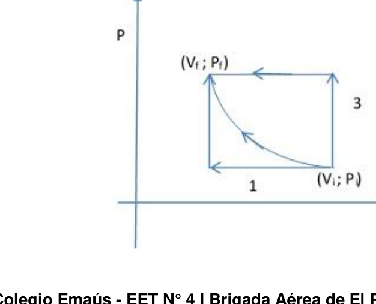
Topic: Newtonian Mechanics Metodi: Free-Body Diagram, Kinematic Equations Competenze: Physical Reasoning Objects: Pulley, Block, String Fonte: Testo (PDF) — p.7
PT1. Colegio Emaús - EET N° 4 I Brigata Aerea di El Palomar Il Palomar, Buenos Aires.
Il sistema formato dai corpi m1=0,36kg, m2=0,16kg, una polea ideale, e uniti da una corda di massa scarsa e inestensibile si trova inizialmente a riposo. En la superficie di contatto del corpo m1 e la tavola i coefficienti di arrugamento statico e il coefficiente di rottura dinamica sono μe=0,3 e μk=0,2 rispettivamente. a) Determina se il sistema rimane in equilibrio. giustifica. b) Se il blocco m1 si sposta, cade sul tavolo o cade? giustifica. c) Descrive il movimento effettuato dal blocco m1. Grafico x(t) e v(t) di detto blocco. d) Quanto vale μk per il blocco stare proprio sul bordo del tavolo?
Topic: Newtonian Mechanics Metodi: Free-Body Diagram, Kinematic Equations Competenze: Physical Reasoning Objects: Pulley, Block, String Fonte: Testo (PDF) — p.7
PT1. The first is the air force of the French Republic. The Palomar, Buenos Aires.
The system consisting of the bodies m1=0.36kg, m2=0.16kg, an ideal pole, and joined by a rope of unextractable and despicable mass is initially at rest. En the contact surface of the body m1 and the table the static friction coefficients and dynamic brushing coefficient are μe=0,3 and μk=0,2 respectively. (a) Determine whether the system remains in balance. You justify it. (b) If the m1 block is moved, does it fall on the table or fall? You justify it. (c) Describe the movement of block m1. Graph x(t) and v(t) of the said Block. (d) How much μk is the value of the block to be right on the edge of the table?
Topic: Newtonian Mechanics Metodi: Free-Body Diagram, Kinematic Equations Competenze: Physical Reasoning Objects: Pulley, Block, String Fonte: Testo (PDF) — p.7
PT2. Colegio Emaús - EET N° 4 I Brigada Aérea de El Palomar El Palomar, Buenos Aires.
Una muestra de gas que consta de 0,11mol se comprime de un volumen de 4m3 a 1m3
mientras su presión aumenta de 10Pa a 40Pa.
a) Calcula el trabajo realizado en cada una de las tres trayectorias según el gráfico.
b) Compare los valores hallados y relacione con el área bajo la curva de cada
trayectoria en cada caso.
c) Ahora suponiendo que el gas sea helio (monoatómico con γ=1,66) y partiendo del
punto (Vi; pi) es comprimido adiabáticamente hasta que su volumen final sea 1m3.
Halla el cambio de energía interna del gas.
Topic: Thermodynamics Metodi: First Law of Thermodynamics, Thermodynamic Cycle Analysis, Ideal Gas Law Competenze: Physical Reasoning Objects: Gas Fonte: Testo (PDF) — p.7
PT2. Colegio Emaús - EET N° 4 I Brigata Aerea di El Palomar Il Palomar, Buenos Aires.
Un campione di gas di 0,11 mol è compresso da un volume di 4m3 a 1m3. mentre la pressione aumenta da 10Pa a 40Pa. a) Calcola il lavoro svolto in ciascuna delle tre rotte secondo il grafico. b) Confronta i valori trovati e relaziona con l’area sotto la curva di ciascuna Il percorso di ogni caso. c) Supponiamo che il gas sia elio (monoatomo con γ=1,66) e partendo da punto (Vi; pi) viene compresso adiabatamente fino a raggiungere il volume finale di 1m3. Trova il cambio di energia interna del gas.
Topic: Thermodynamics Metodi: First Law of Thermodynamics, Thermodynamic Cycle Analysis, Ideal Gas Law Competenze: Physical Reasoning Objects: Gas Fonte: Testo (PDF) — p.7
PT2. The first is the air force of the French Republic. The Palomar, Buenos Aires.
A gas sample of 0.11mol is compressed from a volume of 4m3 to 1m3 as their pressure increases from 10Pa to 40Pa. (a) Calculate the work carried out on each of the three trajectories according to the graph. (b) Compare the values found and relate to the area under the curve of each The following is the list of the countries of the European Union. (c) Now assuming the gas is helium (monoatomic with γ=1.66) and starting from The point (Vi; pi) is compressed adiabatically until its final volume is 1m3. Find the gas’s internal energy change.
Topic: Thermodynamics Metodi: First Law of Thermodynamics, Thermodynamic Cycle Analysis, Ideal Gas Law Competenze: Physical Reasoning Objects: Gas Fonte: Testo (PDF) — p.7
PT3. Colegio Emaús - EET N° 4 I Brigada Aérea de El Palomar El Palomar, Buenos Aires.
Una partícula cargada (protón) se mueve con velocidad v dentro de una habitación, en un plano perpendicular a un campo magnético B uniforme de 4.10-1 T realizando la
42 - OAF 2020 trayectoria como muestra la figura 3 (vista desde el techo de la habitación, las cruces indican el sentido del campo magnético).
a) Indica gráficamente la fuerza F que actúa sobre el protón debida al campo B.
Justifica.
b) ¿Qué trabajo mecánico realiza F? Justifica.
c) Si el radio r de la trayectoria circular es 21cm, hallar el valor de la velocidad de la
partícula.
d) Ahora la partícula es interceptada por un campo E (placas cargadas), y continúa
presente el mismo campo B (los campos cruzados están perpendiculares entre sí,
como muestra la figura 4). Representa las fuerzas que actúan sobre la partícula en
movimiento debido a la presencia de los campos B y E respectivamente.
e) Representa cuáles podrían ser las trayectorias dentro del campo cruzado al salir por el lado derecho (ventana A) donde no hay campos. f) Si la partícula sale por el lado derecho de las placas indique qué condiciones deben darse para que llegue a la posición y1; y2 e y0. Justifique.
(Nota: masa del protón 1,67.10-27kg; carga del protón = 1,6.10-19 C).
OAF 2020- 43
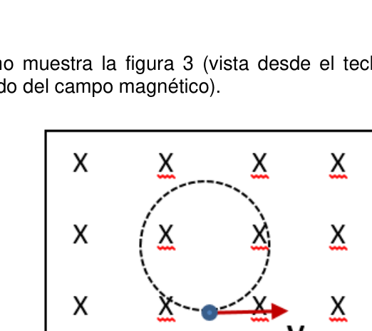
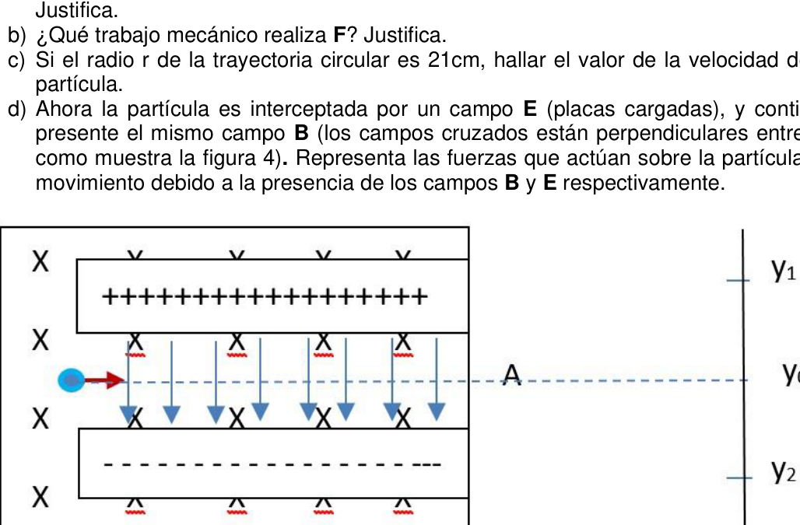
Topic: Magnetism, Electromagnetism Metodi: Lorentz Force Analysis Competenze: Physical Reasoning Objects: Point Charge, Capacitor Fonte: Testo (PDF) — p.7
PT3. Colegio Emaús - EET N° 4 I Brigata Aerea di El Palomar Il Palomar, Buenos Aires.
Una particella carica (protone) si muove a velocità v all’interno di una stanza, in un piano perpendicolare a un campo magnetico B uniforme di 4.10-1 T effettuando la
42 - OAF 2020 Il percorso, come mostra la figura 3, (visto dal tetto della stanza, le crociate indicano il senso del campo magnetico).
a) Indica graficamente la forza F che agisce sul protone a causa del campo B.
- Giustifica. b) Quale lavoro meccanico fa F? - Giustifica. (c) Se il raggio r della rotta circolare è di 21 cm, trovare il valore della velocità della rotta circolare. particella. d) Ora la particella viene intercettata da un campo E (plache cariche), e continua presente lo stesso campo B (i campi incrociati sono perpendicolari tra loro, come mostra la figura 4). Rappresenta le forze che agiscono sulla particella in movimento dovuto alla presenza dei campi B e E rispettivamente.
e) Rappresenta i percorsi all’interno del campo di crociatura al momento della partenza. sul lato destro (ventana A) dove non ci sono campi. f) Se la particella esce sul lato destro delle targhe, indicare quali condizioni devono essere per arrivare alla posizione y1; y2 e y0. giustifica.
(Nota: massa del protone 1,67,10-27kg; carico del protone = 1,6,10-19 C).
OAF 2020- 43
Topic: Magnetism, Electromagnetism Metodi: Lorentz Force Analysis Competenze: Physical Reasoning Objects: Point Charge, Capacitor Fonte: Testo (PDF) — p.7
PT3. The first is the air force of the French Republic. The Palomar, Buenos Aires.
A charged particle (proton) moves at v velocity inside a room, in a plane perpendicular to a uniform magnetic field B of 4.10-1 T by performing the
The Commission shall adopt delegated acts in accordance with Article 21 of this Regulation. The trajectory as shown in Figure 3 (seen from the ceiling of the room, the crossings The magnetic field is the direction of the magnetic field.
(a) Graphically indicates the force F acting on the proton due to field B. It justifies it. (b) What mechanical work does F do? It justifies it. (c) If the radius r of the circular path is 21 cm, find the value of the velocity of the The particle. d) Now the particle is intercepted by a field E (charged plates), and continues present the same field B (the crossed fields are perpendicular to each other, as shown in Figure 4). It represents the forces acting on the particle in movement due to the presence of fields B and E respectively.
(e) It represents what trajectories could be within the cross-country at exit. on the right side (window A) where there are no fields. (f) If the particle is left on the right side of the plates, indicate the conditions for the plates. to be given to the position y1; y2 and y0. You justify it.
(Note: mass of the proton 1,67.10-27kg; charge of the proton = 1,6.10-19 C).
The following is the list of the countries of the European Union:
Topic: Magnetism, Electromagnetism Metodi: Lorentz Force Analysis Competenze: Physical Reasoning Objects: Point Charge, Capacitor Fonte: Testo (PDF) — p.7
PT4. IPET N° 266 Gral. Savio Río Tercero, Córdoba.
En un sistema que responde a un ciclo cerrado de una máquina térmica se cumple que dos moles de un gas ideal diatómico, realiza el siguiente ciclo reversible:
- Expansión isotérmica desde T1= 22 °C, P1= 1 atm hasta un volumen V2= 5/2 V1.
- Enfriamiento adiabático desde V2 hasta un volumen V3= 9/2 V1.
- Compresión isotérmica hasta un volumen V4= 5/3 V1.
- Compresión adiabática hasta las condiciones iniciales
a) Dibuje el ciclo descripto en la consigna. b) Para cada una de las etapas del ciclo, indique cuáles de las magnitudes (calor, trabajo y variación de la energía interna) pueden deducirse y cuáles deben ser calculados necesariamente. c) Determinar los valores del trabajo y el calor en cada etapa del ciclo. d) Determinar los valores del trabajo y el calor para el ciclo completo.
Datos γ = 1,4 R= 8,31 J/mol K
Topic: Thermodynamics Metodi: Thermodynamic Cycle Analysis, First Law of Thermodynamics, Ideal Gas Law Competenze: Physical Reasoning Objects: Gas Fonte: Testo (PDF) — p.7
PT4. IMPET N° 266 Gral. Sabio Rio Tercero, Córdoba.
In un sistema che risponde a un ciclo chiuso di una macchina termico si ottengono che due mole di un gas ideale diatomico, esegue il seguente ciclo reversibile:
- Espansione isotermica da T1 = 22 °C, P1 = 1 atm fino a un volume V2 = 5/2 V1.
- raffreddamento adiabatico da V2 a un volume V3 = 9/2 V1.
- Compressione isotermica fino a un volume V4 = 5/3 V1.
- Compressione adiabatica fino alle condizioni iniziali
a) Disegnare il ciclo descritto nella voce. b) Indicare per ciascuna fase del ciclo quali sono le dimensioni (calore, La variazione delle energie interne può essere dedotta e quali devono essere necessariamente calcolati. c) Determinare i valori del lavoro e del calore in ogni fase del ciclo. d) Determinare i valori di lavoro e di calore per il ciclo completo.
Datos γ = 1,4 R= 8,31 J/mol K
Topic: Thermodynamics Metodi: Thermodynamic Cycle Analysis, First Law of Thermodynamics, Ideal Gas Law Competenze: Physical Reasoning Objects: Gas Fonte: Testo (PDF) — p.7
PT4. The following table shows the results of the tests: Wise . The third river, Cordoba.
In a system that responds to a closed cycle of a thermal machine, it is fulfilled that two moles of diatomic ideal gas, perform the following reversible cycle:
- Isothermal expansion from T1 = 22 °C, P1 = 1 atm to a volume V2 = 5/2 V1.
- Adiabatic cooling from V2 to a volume V3 = 9/2 V1.
- Isothermal compression to a volume V4 = 5/3 V1.
- Adiabatic compression up to initial conditions
(a) Draw the cycle described in the code. (b) For each of the cycle stages, indicate which of the magnitude (heat, The results of the study are based on the results of the study. calculated necessarily. (c) Determine the values of work and heat at each stage of the cycle. (d) Determine the work and heat values for the whole cycle.
Data from the report γ = 1,4 R = 8,31 J/mol K
Topic: Thermodynamics Metodi: Thermodynamic Cycle Analysis, First Law of Thermodynamics, Ideal Gas Law Competenze: Physical Reasoning Objects: Gas Fonte: Testo (PDF) — p.7
PT5. IPET N° 266 Gral. Savio Río Tercero, Córdoba.
En un sistema tridimensional sobre el eje Y se encuentra un hilo rectilíneo que transporta una corriente de 20 A como se muestra en la figura. Un campo magnético uniforme β0= 2 x10-6 T, está dirigido paralelamente al eje x.
Determinar el campo magnético resultante en los siguientes puntos:
a) X= 0 , Z= 2m
b) X= 2m , Z= 0
c) X= 0 , Z= - 0,5m
d) Representar esquemáticamente las líneas de campo en cada caso.
Dato μ0= 4π.10-7 𝑇𝑚 𝐴
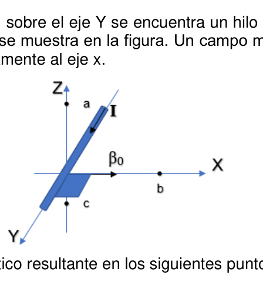
Topic: Magnetism Metodi: Biot-Savart Law, Superposition Principle Competenze: Physical Reasoning Objects: Wire Fonte: Testo (PDF) — p.7
PT5. IMPET N° 266 Gral. Sabio Rio Tercero, Córdoba.
In un sistema tridimensionale sull’asse Y si trova un filo rettilineo che trasporta un corrente di 20 A come mostrato nella figura. Un campo magnetico uniforme β0= 2 x10-6 T, è diretto parallelo all’asse x.
Determinare il campo magnetico risultante nei seguenti punti:
a) X= 0 , Z= 2m
b) X= 2m , Z= 0
c) X= 0 , Z= - 0,5m
d) Rappresentare schematicamente le linee di campo in ogni caso.
Data μ0= 4π.10-7 𝑇𝑚 𝐴
Topic: Magnetism Metodi: Biot-Savart Law, Superposition Principle Competenze: Physical Reasoning Objects: Wire Fonte: Testo (PDF) — p.7
PT5. The following table shows the results of the tests: Wise . The third river, Cordoba.
In a three-dimensional system over the Y axis there is a straight line thread that carries a current of 20 A as shown in Figure 1. A uniform magnetic field β0= 2 x10-6 T, is directed parallel to the x-axis.
Determine the magnetic field resulting from the following points:
a) X= 0 , Z= 2m
b) X= 2m , Z= 0
c) X= 0 , Z= - 0,5m
(d) Schematically represent the field lines in each case.
Date of the meeting μ0= 4π.10-7 𝑇𝑚 𝐴
Topic: Magnetism Metodi: Biot-Savart Law, Superposition Principle Competenze: Physical Reasoning Objects: Wire Fonte: Testo (PDF) — p.7
PT6. IPET N° 266 Gral. Savio Río Tercero, Córdoba.
Un satélite de comunicaciones de 300 kg de masa, se coloca en una órbita geoestacionaria a una altura de 35800 km sobre una estación retransmisora localizada en Kenia. a) Construir el diagrama de cuerpo libre para esta situación.
44 - OAF 2020 b) Calcular el radio orbital. c) Determinar la rapidez del satélite en su órbita.
Masa de la Tierra 5,97 x 1024 kg Radio de la tierra 6,37 x 106 m G = 6,67 x 10-11 Nm2/kg2
Topic: Gravitation Metodi: Newton’s Law of Gravitation, Free-Body Diagram Competenze: Physical Reasoning Objects: Satellite, Planet Fonte: Testo (PDF) — p.7
PT6. IMPET N° 266 Gral. Sabio Rio Tercero, Córdoba.
Un satellite di comunicazione di 300 kg di massa, viene messo in orbita geostationario ad un’altitudine di 35800 km su una stazione di trasmissione situata in Kenya. a) Costruire il diagramma di corpo libero per questa situazione.
44 - OAF 2020 b) Calcolare la radio orbitale. c) Determinare la velocità del satellite in orbita.
Massa terrestre 5,97 x 1024 kg Radius della terra 6,37 x 106 m G = 6,67 x 10-11 Nm2/kg2
Topic: Gravitation Metodi: Newton’s Law of Gravitation, Free-Body Diagram Competenze: Physical Reasoning Objects: Satellite, Planet Fonte: Testo (PDF) — p.7
PT6. The following table shows the results of the tests: Wise . The third river, Cordoba.
A communications satellite of 300 kg mass, is placed in orbit geostationary station at an altitude of 35800 km above a broadcasting station located in Kenya. (a) Build the free body diagram for this situation.
The Commission shall adopt delegated acts in accordance with Article 21 of this Regulation. (b) Calculate the orbital radius. (c) Determine the speed of the satellite in its orbit.
The mass of the Earth is 5.97 x 1024 kg Radius of the earth 6.37 x 106 m G = 6,67 x 10-11 Nm2/kg2
Topic: Gravitation Metodi: Newton’s Law of Gravitation, Free-Body Diagram Competenze: Physical Reasoning Objects: Satellite, Planet Fonte: Testo (PDF) — p.7
PT7. Colegio Universitario Central Ciudad de Mendoza.
Un coche de carreras sigue una trayectoria horizontal como se indica abajo, que consta de cinco secciones: A, B, C, D y E. A, B, D y E son lineales y C es un arco de circunferencia. El diagrama no está dibujado a escala, es sólo representativo.
El gráfico inferior muestra cómo varía con el tiempo las indicaciones del velocímetro para cada sección.
a) Utiliza el gráfico para determinar
- La aceleración del coche en la sección E
- La distancia recorrida de los 0s a los 32s. b) ¿Está el coche acelerando en la sección C de la trayectoria? Fundamenta c) Si el vehículo tiene una masa de 1400kg, calcula la fuerza neta que actúa sobre el mismo:
- En la sección A
- En la sección B
- En la sección C si el radio de la trayectoria es de 10m
OAF 2020- 45 d) El diagrama de abajo muestra la sección C del trayecto. Añadiendo vectores al mismo, indica la dirección y sentido de la fuerza resultante que actúa sobre el coche en las posiciones 1, 2 y 3. e) El coche está equipado con cuatro frenos de disco de magnesio, uno en cada rueda. La masa de cada disco es de 4,3kg. Si el calor específico del magnesio es de 1025J/kg°C, y suponiendo nulo el intercambio de calor con el medio externo, determina el ascenso de temperatura de los frenos de disco inmediatamente después de que el coche se ha parado
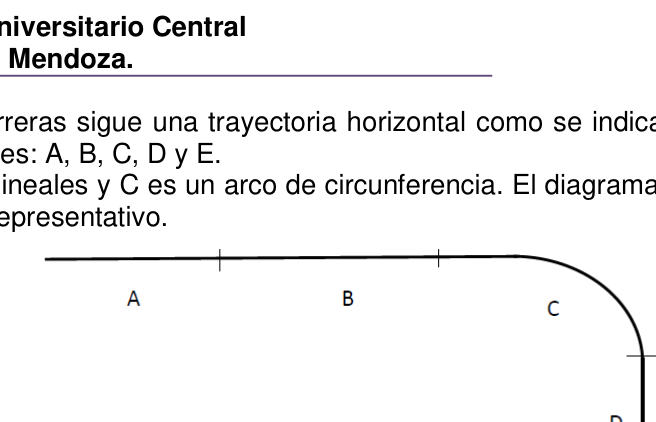
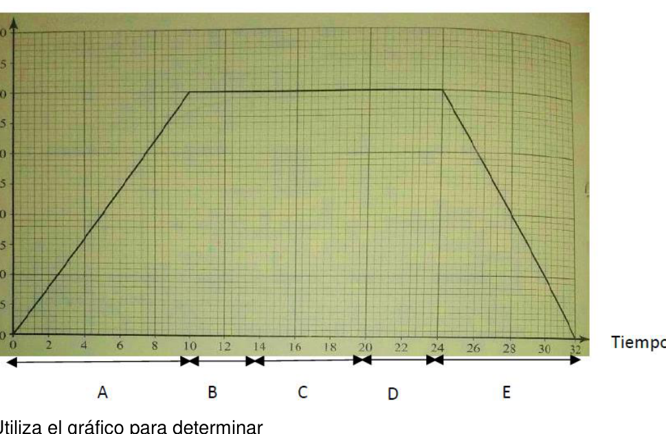
Topic: Newtonian Mechanics Metodi: Kinematic Equations, Free-Body Diagram Competenze: Physical Reasoning Objects: Cart Fonte: Testo (PDF) — p.7
PT7. Collegio universitario centrale Città di Mendoza.
Una vettura da corsa segue un percorso orizzontale come indicato di seguito, che contiene di cinque sezioni: A, B, C, D ed E. A, B, D ed E sono lineari e C è un arco di circonferenza. Il diagramma non è stato disegnato a La scala, è solo rappresentativa.
Il grafico di seguito mostra come le indicazioni del velocimetro per ogni sezione.
a) Utilizza il grafico per determinare
- Accelerazione della macchina in sezione E
- Distanza percorsa da 0 a 32 b) La macchina è in frenata nella sezione C del percorso? Fondamenta c) Se il veicolo ha una massa di 1400 kg, calcola la forza netta che agisce sul veicolo.
- Proprio:
- Nella sezione A
- Nella sezione B
- Nella sezione C se il raggio di tragitto è di 10m
OAF 2020- 45 d) Il diagramma di seguito mostra la sezione C del percorso. Aggiungendo vector alla stessa, indica la direzione e il senso della forza risultante che agisce sulla macchina nelle posizioni 1, 2 y 3. e) La vettura è dotata di quattro freni a disco di magnesio, uno su ciascuna.
- La ruota. Il peso di ogni disco è di 4,3 kg. Se il calore specifico del magnesio è di 1025 J/kg°C, e se l’interscambio di calore con l’ambiente esterno è nullo, determina l’aumento della temperatura dei freni a disco immediatamente dopo che la macchina si è fermata
Topic: Newtonian Mechanics Metodi: Kinematic Equations, Free-Body Diagram Competenze: Physical Reasoning Objects: Cart Fonte: Testo (PDF) — p.7
PT7. Central University College The city of Mendoza.
A racing car follows a horizontal path as shown below, which is shown of five sections: A, B, C, D and E. A, B, D and E are linear and C is a circle arc. The diagram is not drawn at scale, it’s only representative.
The chart below shows how the speedometer indicators for every section.
(a) Use the chart to determine
- The acceleration of the car in section E
- The distance travelled from 0s to 32s. (b) Is the car accelerating in section C of the trajectory? Fundamentals (c) If the vehicle has a mass of 1400 kg, calculate the net force acting on the vehicle. The same:
- In section A
- In section B
- In section C if the radius of the trajectory is 10m
The following points shall be added: (d) The diagram below shows section C of the route. Adding vectors to it indicates the direction and direction of the resulting force acting on the car at positions 1, 2 y 3. (e) The car is equipped with four magnesium disc brakes, one in each wheel. The mass of each disc is 4.3 kg. If the specific heat of magnesium is of 1025J/kg°C, and assuming zero heat exchange with the external medium, determines the temperature rise of the disc brakes immediately After the car has stopped
Topic: Newtonian Mechanics Metodi: Kinematic Equations, Free-Body Diagram Competenze: Physical Reasoning Objects: Cart Fonte: Testo (PDF) — p.7
PT8. Colegio Universitario Central Ciudad de Mendoza.
Se diseña y construye un aspersor casero con una botella plástica, a la que se practican 16 orificios (8 de cada lado) de 1,0mm de diámetro, todos sobre una misma línea perpendicular a la base. La botella se ubica en posición horizontal tal que todos los orificios estén a 5cm del piso (como se ve en la figura). Previo a conectar la manguera al grifo, se determina el caudal máximo que puede suministrar el sistema descripto en la figura (tanque-bomba). Para ello se utiliza un balde de 5l y un cronómetro.
Considerar
- Al flujo de agua como estacionario y laminar
- Nulas las pérdidas de energía por fricción
- δagua = 1000 kg/m3
- g = 10 m/s2 a) ¿Cuál es el valor del caudal máximo determinado si el balde tarda 40 s en llenarse totalmente? b) Determina la presión hidrostática a la altura del punto A mientras la bomba no está funcionando (o sea, mientras la canilla permanece cerrada) c) Una vez abierta la canilla al máximo y accionada la bomba:
- ¿Cuál es el valor de velocidad de salida en cada orificio?
- ¿Qué alcance tendrán los chorros si salen bajo un ángulo de 35° respecto del piso?
- Calcula el valor de la presión manométrica en B si el diámetro de la tubería que pasa por ese punto es de 4cm
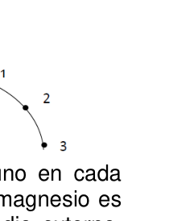
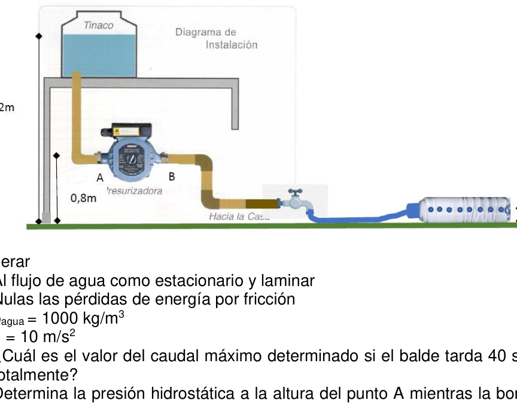
Topic: Fluid Mechanics Metodi: Bernoulli’s Equation, Continuity Equation, Hydrostatic Equilibrium Competenze: Physical Reasoning Objects: Container, Tube Fonte: Testo (PDF) — p.7
PT8. Collegio universitario centrale Città di Mendoza.
Si progetta e si costruisce un aspersore casato con una bottiglia di plastica, che viene praticata 16 fori (8 su ogni lato) di diametro di 1,0 mm, tutti su una stessa linea perpendicolare alla base. La bottiglia è posizionata in posizione orizzontale in modo che tutti i i fori sono a 5 cm dal pavimento (come si vede nella figura). Prima di collegare il tubo al rubinetto, si determina il massimo flusso possibile fornire il sistema descritto nella figura (tank-pomba). Per questo viene utilizzato un bucato 5l e un cronometro.
Considerare
- Al flusso d’acqua come stazionario e laminare
- Nullizzare le perdite di energia da frizione
- δacqua = 1000 kg/m3
- g = 10 m/s2 a) Qual è il valore del flusso massimo determinato se il bucato richiede 40 secondi per riempirsi
- Tutto il tutto? b) Determina la pressione idrostatica all’altezza del punto A mentre la pompa non è in funzione funzionando (cioè, finché la caniglia rimane chiusa) c) Una volta aperta la canna al massimo e la pompa azionata:
- Qual è il valore della velocità di uscita in ogni foro?
- Qual è la portata dei jet se usciranno sotto un angolo 35° rispetto al
- Piano?
- Calcola il valore della pressione manometrica in B se il diametro del tubo che passa da quel punto è di 4 cm
Topic: Fluid Mechanics Metodi: Bernoulli’s Equation, Continuity Equation, Hydrostatic Equilibrium Competenze: Physical Reasoning Objects: Container, Tube Fonte: Testo (PDF) — p.7
PT8. Central University College The city of Mendoza.
A homemade spray is designed and built with a plastic bottle, which is practiced. 16 holes (8 on each side) of 1.0mm diameter, all on the same line perpendicular to the base. The bottle is placed in a horizontal position such that all the bottles are Holes are 5cm from the floor (as shown in Figure 1). Before connecting the hose to the faucet, the maximum flow rate that can be determined. supply the system described in the figure (tank-bomb). A bucket is used for this. 5l and a timer.
Considering
- Water flow as a stationary and laminar
- Zero energy losses from friction
- water = 1000 kg/m3
- g = 10 m/s2 (a) What is the maximum flow rate determined if the bucket takes 40 seconds to fill? totally? (b) Determine hydrostatic pressure at point A while the pump is not in operation functioning (i.e. while the barrel remains closed) (c) Once the pipe is opened to the maximum and the pump is started:
- What is the output speed value in each hole?
- What range will the jets have if they come out at an angle of 35° from the The floor?
- Calculate the value of the manometric pressure in B if the diameter of the pipe It’s 4cm.
Topic: Fluid Mechanics Metodi: Bernoulli’s Equation, Continuity Equation, Hydrostatic Equilibrium Competenze: Physical Reasoning Objects: Container, Tube Fonte: Testo (PDF) — p.7
PT9. Colegio Universitario Central Ciudad de Mendoza.
Para preparar un vehículo de 1500kg se mide la presión manométrica de cada neumático en 170KPa. La temperatura del aire que se introduce es de 20°C.
46 - OAF 2020 Considerar
- g = 10 m/s2
- R = 8,31J/mol°K
- calor específico del aire a volumen constante: ceV aire = 721 J/kg °K
- masa molar del aire = 28,96 g/mol
a) Si la presión atmosférica en ese momento es de
100KPa, ¿cuál será la presión absoluta del aire
contenido dentro de los neumáticos?
b) Determina la presión media que ejerce el
vehículo sobre el asfalto si la superficie de
apoyo aproximada de cada rueda es de 270cm2
c) Calcula el número de moles y la masa de aire en
cada neumático si contiene 10 litros de gas a la
presión y temperatura registrada.
d) Después de que el coche ha viajado a alta velocidad durante cierto tiempo, los
neumáticos están más calientes y el manómetro indica entonces 197KPa.
- Explica por qué se calientan los neumáticos.
- Explica por qué aumenta la presión del aire dentro del neumático.
- Calcula la temperatura que alcanza el aire del neumático, suponiendo que no ha variado su volumen.
- Indica si el valor del trabajo efectuado por el aire durante la variación de temperatura y presión que experimentó: es positivo, negativo o nulo. Esquematiza la transformación en un diagrama P-V Determina la variación de energía interna que experimenta el aire de cada rueda.
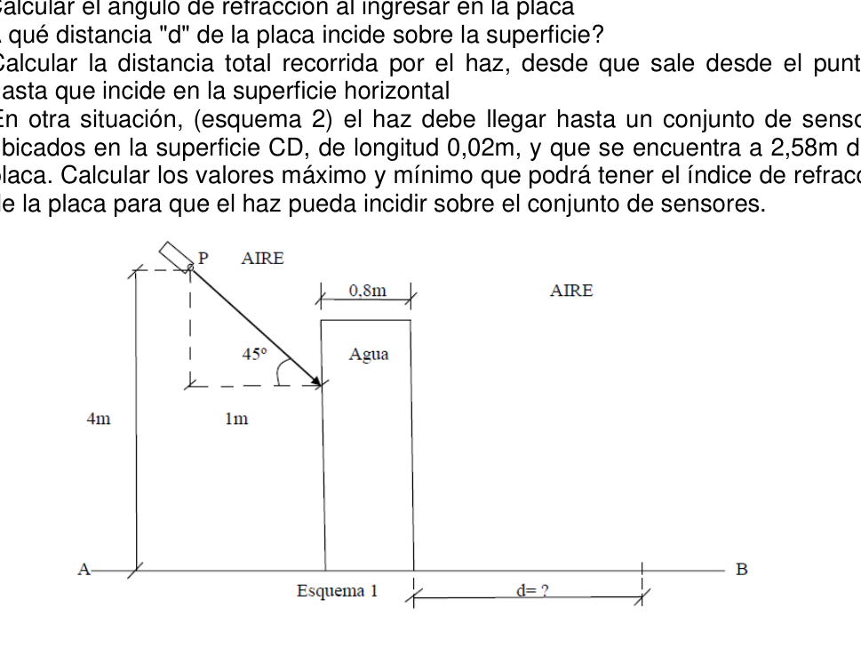
Topic: Kinetic Theory, Thermodynamics Metodi: Ideal Gas Law Competenze: Physical Reasoning Objects: Gas, Wheel Fonte: Testo (PDF) — p.7
PT9. Collegio universitario centrale Città di Mendoza.
Per preparare un veicolo da 1500 kg si misura la pressione manometrica di ciascuna pneumatica a 170KPa. La temperatura dell’aria che viene inserita è 20°C.
46 - OAF 2020 Considerare
- g = 10 m/s2
- R = 8,31J/mol°K
- calore specifico dell’aria a volume costante: ceV aria = 721 J/kg °K
- massa mollare dell’aria = 28,96 g/mol
a) Se la pressione atmosferica in quel momento è di 100KPa, che pressione assoluta dell’aria? contenuto nelle gomme? b) Determina la pressione media esercitata dal il veicolo su asfalto se la superficie di Il supporto approssimativo di ciascuna ruota è di 270 cm2. (c) Calcola il numero di molli e la massa di aria in ogni pneumatico contiene 10 litri di gas a pressione e temperatura registrate. d) Dopo che la macchina ha viaggiato ad alta velocità per un certo periodo di tempo, i Le gomme sono più calde e il manometro indica quindi 197KPa.
- Spiega perché le gomme si riscaldano.
- Spiega perché la pressione dell’aria all’interno della gomma aumenta.
- Calcola la temperatura che raggiunge l’aria della gomma, supponendo che non ha variato il volume.
- Indica se il valore del lavoro effettuato dall’aria durante la variazione di temperatura e pressione che ha sperimentato: positivo, negativo o nullo. Schematizza la trasformazione in un diagramma P-V Determina la variazione di energia interna che l’aria di ogni ruota prova.
Topic: Kinetic Theory, Thermodynamics Metodi: Ideal Gas Law Competenze: Physical Reasoning Objects: Gas, Wheel Fonte: Testo (PDF) — p.7
PT9. Central University College The city of Mendoza.
For the preparation of a 1500 kg vehicle the manometric pressure of each tyre is measured. at 170KPa. The temperature of the air being introduced is 20°C.
The Commission shall adopt delegated acts in accordance with Article 21 of this Regulation. Considering
- g = 10 m/s2
- R = 8,31J/mol°K
- specific air temperature at constant volume: ceV air = 721 J/kg °K
- molar mass of air = 28.96 g/mol
(a) If the atmospheric pressure at that time is 100KPa, what’s the absolute air pressure? contained within the tires? (b) Determines the mean pressure exerted by the vehicle on asphalt if the surface of The approximate support of each wheel is 270cm2 (c) Calculate the number of moles and the air mass in Each tyre if it contains 10 litres of gas to the recorded pressure and temperature. (d) After the car has travelled at high speed for a certain time, the The tyres are warmer and the manometer indicates 197KPa.
- Explain why the tires are getting hot.
- Explains why the air pressure inside the tire increases.
- Calculate the temperature of the air in the tyre, assuming that it does not It’s changed its volume.
- Indicates whether the value of the work performed by the air during the variation of temperature and pressure you experienced: positive, negative or zero. Schematically transform the transformation into a P-V diagram It determines the variation in internal energy experienced by the air of each wheel.
Topic: Kinetic Theory, Thermodynamics Metodi: Ideal Gas Law Competenze: Physical Reasoning Objects: Gas, Wheel Fonte: Testo (PDF) — p.7
PT10. ET N° 27 Hipólito Yrigoyen Ciudad Autónoma de Buenos Aires.
Para calibrar un haz de rayos x Un haz de rayos x debe llegar hasta una superficie horizontal AB. El haz, como muestra el esquema, parte desde un punto P, atravesando una placa de agua, cuyo índice de refracción es n= 1,33, para luego incidir sobre la superficie. Dato: naire = 1 a) Calcular el ángulo de refracción al ingresar en la placa b) A qué distancia “d” de la placa incide sobre la superficie? c) Calcular la distancia total recorrida por el haz, desde que sale desde el punto P hasta que incide en la superficie horizontal d) En otra situación, (esquema 2) el haz debe llegar hasta un conjunto de sensores ubicados en la superficie CD, de longitud 0,02m, y que se encuentra a 2,58m de la placa. Calcular los valores máximo y mínimo que podrá tener el índice de refracción de la placa para que el haz pueda incidir sobre el conjunto de sensores.
OAF 2020- 47
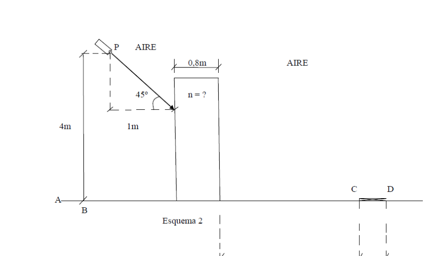
Topic: Geometric Optics Metodi: Snell’s Law, Ray Tracing Competenze: Physical Reasoning Objects: — Fonte: Testo (PDF) — p.7
PT10. E’ stato un’operazione di grande importanza. Città autonoma di Buenos Aires.
Per calibrare un fascio di raggi x Un fascio di raggi X deve raggiungere una superficie orizzontale AB. Il fascio, come mostra il schema, partendo da un punto P, attraversando una piastra d’acqua, il cui indice di La rifrazione è n=1.33 e poi incide sulla superficie. Data: naire = 1 a) Calcolare l’ angolo di rifrazione all’ ingresso nella scheda b) A che distanza dalla superficie della targa si trova la “d”? c) Calcolare la distanza totale percorsa dal fascio, dal momento in cui esce dal punto P fino a quando non colpisce la superficie orizzontale d) In un’altra situazione (segna 2) il fascio deve arrivare ad un insieme di sensori La superficie di questa superficie è di 0,02 m di lunghezza e si trova a 2,58 m da
- La scheda. Calcolare i valori massimi e minimi che il tasso di refraczione può avere della targa, in modo che il fascio possa incidere sull’insieme dei sensori.
OAF 2020- 47
Topic: Geometric Optics Metodi: Snell’s Law, Ray Tracing Competenze: Physical Reasoning Objects: — Fonte: Testo (PDF) — p.7
PT10. The Commission has also adopted a number of measures to combat the use of the ‘small’ technology. The Autonomous City of Buenos Aires.
To calibrate an x-ray beam An x-ray beam must reach a horizontal surface AB. The beam, as shown. The scheme starts from a point P, passing through a water plate, whose index of The refraction is n=1.33 and then it hits the surface. Date: naire = 1 (a) Calculate the angle of refraction when entering the plate (b) How far from the plate does ‘d’ strike the surface? (c) Calculate the total distance travelled by the beam from the exit from point P until it hits the horizontal surface (d) In another situation (schema 2) the beam must reach a set of sensors located on the surface of the CD, 0.02m long, and located at 2.58m from the The plate. Calculate the maximum and minimum values that the refractive index may have of the plate so that the beam can impact the sensor array.
The following points shall be added:
Topic: Geometric Optics Metodi: Snell’s Law, Ray Tracing Competenze: Physical Reasoning Objects: — Fonte: Testo (PDF) — p.7
PT11. ET N° 27 Hipólito Yrigoyen Ciudad Autónoma de Buenos Aires.
Sobre intercambio de cantidad de calor Un recipiente adiabático contiene 1 kg de hielo a -5°C. Se le introduce un calentador eléctrico, que funciona a 220 V, con una resistencia eléctrica de 204 Ω. Suponiendo que el calentador y los demás elementos del recipiente no absorben calor, calcular: a) ¿En cuánto tiempo se logra fundir la mitad del hielo? b) Si se lo conecta durante 20 minutos, ¿cuál es la composición del sistema? c) Si se lo conecta durante 1/2 hora, ¿qué temperatura final se alcanza? d) Calcular la carga que circuló en 1/2 hora e) Otro recipiente igual al anterior, contiene también 1kg de hielo a -5°C, y se le arroja 1 kg de agua a 50°C. ¿Cuál es la composición final del sistema?
Datos que pueden ser útiles Calores específicos: c hielo = 0,5 cal/g°C c agua = 1 cal/g°C
c vapor = 0,5 cal/gºC Calores latentes: l fusión = 80 cal/g l solidificación= -80 cal/g l vaporización = 540 cal/g l condensación = -540 cal/g Equivalente mecánico del calor = 0,24 cal/joule
Topic: Thermodynamics, Circuits Metodi: First Law of Thermodynamics Competenze: Physical Reasoning Objects: Resistor, Battery Fonte: Testo (PDF) — p.7
PT11. E’ stato un’operazione di grande importanza. Città autonoma di Buenos Aires.
Sulla scambio di calore Un contenitore adiabatico contiene 1 kg di ghiaccio a -5°C. Si inserisce un riscaldatore. elettrico, che funziona a 220 V, con una resistenza elettrica di 204 Ω. Supponendo che il riscaldatore e gli altri elementi del recipiente non assorbono calore, calcolare: a) In quanto tempo si riesce a fondere metà del ghiaccio? b) Se viene collegato per 20 minuti, qual è la composizione del sistema? c) Se viene collegato per 1/2 ora, quale temperatura finale si ottiene? d) Calcolare la carica che è stata circolare in 1/2 ora e) Un altro recipiente simile al precedente, contiene anche 1 kg di ghiaccio a -5°C, e viene gettato 1 kg di acqua a 50°C. Qual è la composizione finale del sistema?
Datos que pueden ser útiles Calori specifici: c ghiaccio = 0,5 cal/g°C c acqua = 1 cal/g°C
c vapore = 0,5 cal/goC Calori latenti: l fusione = 80 cal/g L solidificazione = -80 cal/g l vaporizzazione = 540 cal/g l condensazione = -540 cal/g Calore meccanico equivalente = 0,24 cal/joule
Topic: Thermodynamics, Circuits Metodi: First Law of Thermodynamics Competenze: Physical Reasoning Objects: Resistor, Battery Fonte: Testo (PDF) — p.7
PT11. The Commission has also adopted a number of measures to combat the use of the ‘small’ technology. The Autonomous City of Buenos Aires.
On the exchange of heat quantity An adiabatic container contains 1 kg of ice at -5°C. He ‘s getting a heater . electrical, operating at 220 V, with an electrical resistance of 204 Ω. Assuming that the heater and other elements of the container do not absorb heat, calculate: (a) How long does half the ice melt? (b) If you connect it for 20 minutes, what is the system composition? c) If you connect it for 1/2 hour, what is the final temperature? (d) Calculate the load that circulated in 1/2 hour (e) Another container similar to the previous one, also containing 1 kg of ice to -5°C, and is then thrown over it 1 kg of water at 50°C. What is the final composition of the system?
Data that may be useful Specific heat: c ice = 0,5 cal/g°C The following table shows the results of the calculations:
The following is the list of the products: Latent heat: melting = 80 cal/g The maximum amount of the product is -80 cal/g. The amount of the product shall be calculated as follows: The amount of the product shall be calculated as follows: Mechanical equivalent of heat = 0,24 cal/joule
Topic: Thermodynamics, Circuits Metodi: First Law of Thermodynamics Competenze: Physical Reasoning Objects: Resistor, Battery Fonte: Testo (PDF) — p.7
PT12. ET N° 27 Hipólito Yrigoyen Ciudad Autónoma de Buenos Aires.
Globo meteorológico Un globo meteorológico se utiliza para medir las condiciones de la atmósfera, como presión, temperatura, humedad, velocidad y dirección del viento en diferentes altitudes. Tienen forma esférica y están construidos en látex. Son inflados con hidrógeno (H2) y llevan instrumental para realizar las mediciones. El globo de este problema tiene un radio interno cuando está desinflado r0= 10cm y el espesor del látex es de 0,15cm. La masa del instrumental es de 250g Se infla el globo con H2 hasta que su diámetro interno es de 0,9m. La masa de H2 dentro del globo es de 36g, (dato que surge conociendo la presión de inflado, que depende del radio)
48 - OAF 2020 Datos δlátex = 0,96 g/cm3 δaire= 1,29 kg/m3 g= 9,8 m/s2 Vol esf = 4 3 𝜋𝑟3
Determinar a) Cuál es el peso del látex b) Cuál es el peso del globo inflado c) Calcular el empuje en el momento de liberarlo d) Determinar la fuerza neta que actúa sobre el globo, incluyendo el instrumental, en el momento de lanzarlo e) Determinar la aceleración en el momento del despegue
Topic: Fluid Mechanics Metodi: Hydrostatic Equilibrium, Free-Body Diagram Competenze: Physical Reasoning Objects: Bubble, Gas Fonte: Testo (PDF) — p.7
PT12. E’ stato un’operazione di grande importanza. Città autonoma di Buenos Aires.
Globo meteorologico Un globo meteorologico è usato per misurare le condizioni atmosferiche, come pressione, temperatura, umidità, velocità e direzione del vento a diverse altitudini. Sono spirali e costruiti in latex. Sono gonfiati di idrogeno (H2) e portano strumenti per effettuare le misurazioni. Il globolo di questo problema ha un raggio interno quando è deflato r0=10 cm e il lo spessore del latex è di 0,15 cm. La massa dell’apparecchio è di 250 g Infla il globo con H2 fino a che il suo diametro interno è di 0,9 m. La massa di H2 dentro La pressione di gonfiamento, che dipende dal radio)
48 - OAF 2020 Datos δlattice = 0,96 g/cm3 δaire= 1,29 kg/m3 g= 9,8 m/s2 Vol esf = 4 3 𝜋𝑟3
Determinare a) Qual è il peso del latex b) Qual è il peso del pallone gonfiato c) Calcolare la spinta al momento di rilasciarla d) Determinare la forza netta che agisce sul globo, compresa la forza di strumentale, al momento del lancio. e) Determinare l’accelerazione al momento del decollo
Topic: Fluid Mechanics Metodi: Hydrostatic Equilibrium, Free-Body Diagram Competenze: Physical Reasoning Objects: Bubble, Gas Fonte: Testo (PDF) — p.7
PT12. The Commission has also adopted a number of measures to combat the use of the ‘small’ technology. The Autonomous City of Buenos Aires.
The weather balloon . A weather balloon is used to measure atmospheric conditions, such as pressure, temperature, humidity, wind speed and direction at different altitudes. They’re spherical and built in latex. They are inflated with hydrogen (H2) and They carry measuring instruments. The balloon in this problem has an inner radius when it is deflated r0=10cm and the The thickness of the latex is 0.15 cm. The mass of the instrumental is 250 g. Inflate the balloon with H2 until its internal diameter is 0.9m. The mass of H2 inside The balloon’s pressure is 36 g, (a figure that comes from the inflation pressure, which depends on the (Radio)
48 - OAF 2020 Data from the report The value of the product shall be the value of the product concerned. The average annual average of the annual average annual average of the annual average annual average of the annual average annual average of the annual average annual average of the annual average annual average of the annual average annual average of the annual average annual average of the annual average annual average of the annual average annual average of the annual average annual average of the annual average annual average annual average of the annual average annual average annual average of the annual average annual average annual average annual average of the annual average annual average annual average of the annual average annual average annual average of the annual average annual average annual average of the annual average annual average annual average of the annual average annual average annual average of the annual average annual average annual average of the annual average annual average annual average annual annual annual average of the annual average annual average annual average annual annual annual average of the annual average annual average annual annual average of the annual average annual average annual annual annual average of the annual average annual annual annual average of the annual average annual average of the annual average annual annual average of the annual average annual average annual average of the annual annual average of the annual average annual annual annual annual average of the annual average annual annual annual average of the annual average annual annual average of the annual annual annual annual annual average of the annual average is over the annual g= 9,8 m/s2 Vol isf = 4 3 𝜋𝑟3
Determine (a) What is the weight of the latex? (b) What is the weight of the inflated balloon (c) Calculate the thrust at the time of release. (d) Determine the net force acting on the balloon, including the instrumental, at the time of launch (e) Determine the acceleration at take-off time
Topic: Fluid Mechanics Metodi: Hydrostatic Equilibrium, Free-Body Diagram Competenze: Physical Reasoning Objects: Bubble, Gas Fonte: Testo (PDF) — p.7
PT13. Colegio San Patricio - Instituto Primo Capraro San Carlos de Bariloche, Río Negro.
Los juegos de la Feria Mateo va a una Feria de fin de semana donde hay juegos para ganar premios. El primer juego del que participa se llama: “¡Cortando la cuerda, pero ojo!”. El mismo se muestra en la Figura 1. Figura 1: Cortando la cuerda, pero OJO.
El juego consiste en disparar dardos filosos para cortar la cuerda que impide al bloque deslizar. Si el bloque cae en el hueco, Mateo gana. La dificultad es que hay que disparar a través de una ranura de 45◦ en una pantalla circular que gira a 7.5 rpm. a) Exprese la velocidad angular de la pantalla circular en rad/s. b) ¿Cuál es la velocidad mínima con la que deben salir disparados los dardos para cruzar la pantalla, suponiedo que la reacción de Mateo cuando aparece la ranura es inmediata? Mateo tiene buena puntería y logra cortar la cuerda c) ¿Cuál es la tensión que soportaba la cuerda antes de cortarse? Notar que el bloque tiene rozamiento con el plano inclinado µ =0.1. d) ¿Cuál es la aceleración cuando se corta la cuerda?. e) ¿Cuánto tiempo tarda el bloque en llegar (completamente) al hueco?
El segundo juego del que participa Mateo se llama “Bolita pegajosa” y se muestra en la Fig. 2. Mateo debe disparar bolitas (M = 20kg) con con cañón a resorte. Las bolitas salen con
OAF 2020- 49 un ángulo de 45◦ y una velocidad inicial v0. Las mismas deben pasar por encima de una pared de 2m de altura para luego caer y rodar hasta chocar y quedar pegadas con el bloque (m = 10kg) para empujarlo al pozo de la victoria. f) Realizar el diagrama de cuerpo libre de la bolita apenas sale disparada y cuando se encuentra a máxima altura. g) ¿Cuáles son las velocidades mínima y máxima con las que se puede disparar para que la bolita caiga entre el bloque y la pared?
Figura 2: Bolita pegajosa.
Mateo dispara con v0 = 12m/s. h) Cuando el proyectil toca el suelo solo se conserva su velocidad horizontal. ¿Qué sucede con la cantidad de movimiento y con la energía? i) La bolita avanza hacia el bloque y al chocar queda pegada. ¿Cuál es la velocidad que tienen bolita+bloque luego de quedar pegados? j) Si el resorte del cañón tiene una constante elástica K = 5000N/m, ¿cuánto estaba comprimido para salir con esa velocidad inicial?
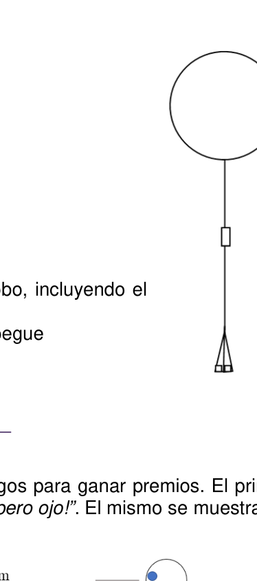
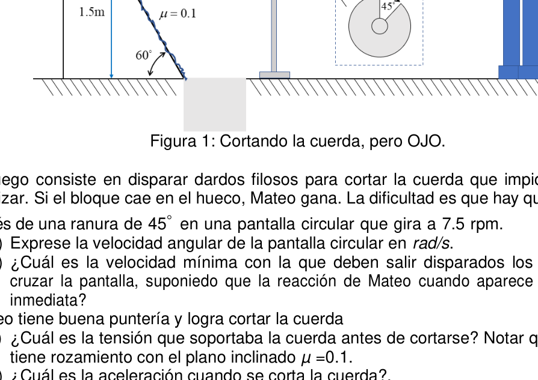
Topic: Rotational Dynamics, Newtonian Mechanics Metodi: Kinematic Equations, Free-Body Diagram Competenze: Physical Reasoning Objects: Disk, Block, Inclined Plane, String Fonte: Testo (PDF) — p.7
PT13. Colegio San Patricio - Istituto Primo Capraro San Carlo di Bariloche, Rio Negro.
I giochi della fiera Mateo va a una fiera di fine settimana dove ci sono giochi per vincere premi. Il primo Il gioco di cui si partecipa si chiama: Cutting the rope, but eye!. Lo stesso è mostrato in La figura 1 Figura 1: Tagliando la corda, ma OJO.
Il gioco consiste nel sparare dardini filo per tagliare la corda che impedisce il blocco. scivolare. Se il blocco cade nel buco, Mateo vince. La difficoltà è che bisogna sparare a attraverso un slot di 45° su uno schermo circolare che gira a 7,5 giri al minuto. a) Indicare la velocità angolare dello schermo circolare in rad/s. b) Qual è la velocità minima con cui devono essere sparati i dardini per Attraversare lo schermo, suppongo che la reazione di Mateo quando il slot appare sia immediatamente? Mateo ha un buon punteggio e riesce a tagliare la corda. c) Qual è la tensione che la corda sopportava prima di tagliarsi? Notare che il blocco ha un’arricchimento con il piano inclinato μ =0,1. d) Qual è l’accelerazione quando si taglia la corda? e) Quanto tempo ci vuole per arrivare (completamente) al vuoto?
Il secondo gioco in cui partecipa Mateo si chiama Bolita pegacosa e viene mostrato nella Fig. 2. Mateo deve sparare pallottole (M = 20kg) con cannone a sprint. Le palline uscivano con
OAF 2020- 49 un angolo di 45◦ e una velocità iniziale v0. - Le stesse devono passare sopra una. Un muro di 2 metri di altezza per poi cadere e ruotare fino a colpire e rimanere incastrati con il blocco (m = 10kg) per spingerlo al pozzo della vittoria. f) Realizzare il diagramma del corpo libero della pallina appena viene sparata e quando si trova la massima altezza. g) Quali sono le velocità minime e massime con cui si può sparare per che la palla cadesse tra il blocco e il muro?
Figura 2: Bolita incollabile.
Mateo tira a v0 = 12m/s. h) Quando il proiettile tocca il suolo, la sua velocità orizzontale è conservata. Cosa? che succede con la quantità di movimento e con l’energia? i) La pallina si sposta verso il blocco e colpisce. Qual è la velocità che
- Hai un blocco dopo essere stato incastrato? j) Se la molla del cannone ha una costante elastica K = 5000N/m, quanto era
- comprimito per uscire a quella velocità iniziale?
Topic: Rotational Dynamics, Newtonian Mechanics Metodi: Kinematic Equations, Free-Body Diagram Competenze: Physical Reasoning Objects: Disk, Block, Inclined Plane, String Fonte: Testo (PDF) — p.7
PT13. The first is the San Patricio College. St. Charles of Bariloche, Rio Negro.
The games of the fair Matthew goes to a weekend fair where there are games to win prizes. The first one . The game you play is called: The same is shown in The following is the figure: Figure 1: Cutting the rope, but OJO.
The game involves shooting sharp darts to cut the rope that keeps the block. I’m going to slip. If the block falls into the hole, Matthew wins. The difficulty is that you have to shoot him. through a 45-degree slot on a circular screen that rotates at 7.5 rpm. (a) Express the angular speed of the circular screen in rad/s. (b) What is the minimum speed at which the darts must be fired to I guess Matthew’s reaction when the slot appears is
- Right away? Matthew ‘s got a good shot and he can cut the rope . (c) What tension did the rope endure before being cut? Notice that the block has a flattened friction of μ = 0.1. (d) What is the acceleration when the rope is cut? (e) How long does it take for the block to reach the (completely) hole?
The second game in which Matthew participates is called Bolita pegajosa and is shown in the Fig. 2. Matthew must fire bullets (M = 20kg) with a spring cannon. The balls come out with
The following points shall be added: angle of 45◦ and an initial velocity of v0. They must pass over one . A 2m high wall then falls and rolls until it collides and gets stuck with the block (m = 10kg) to push him to the victory well. (f) Draw the free body diagram of the ball as soon as it is fired and when it is It’s at its highest. (g) What are the minimum and maximum speeds at which fire can be made for The ball falling between the block and the wall?
Figure 2: Sticky ball.
Matthew fires at v0 = 12m/s. (h) When the projectile hits the ground, only its horizontal velocity is retained. What? happens with the amount of motion and with the energy? (i) The ball moves towards the block and when it hits it is stuck. What’s the speed that you’re going to? You got ball+block after you get stuck? (j) If the spring of the cannon has an elastic constant K = 5000N/m, how much was A tablet to get out at that initial speed?
Topic: Rotational Dynamics, Newtonian Mechanics Metodi: Kinematic Equations, Free-Body Diagram Competenze: Physical Reasoning Objects: Disk, Block, Inclined Plane, String Fonte: Testo (PDF) — p.7
PT14. Colegio San Patricio - Instituto Primo Capraro San Carlos de Bariloche, Río Negro.
Sigue la Feria Mateo sigue paseando por la Feria y encuentra un juego muy ingenioso que llama su atención. El mismo se muestra en la Figura 3. Figura 3: Martillo.
La idea es levantar un martillo (M = 100kg) con la ayuda de una cuerda y una polea, para dejarlo caer desde una altura h. Al caer, choca elásticamente con un bloque de la misma masa (m = 100kg) de modo que la energía y la cantidad de movimiento se conservan. El
50 - OAF 2020 ∼ ∼ ∼ bloque debe subir por un plano inclinado de 30◦ sin rozamiento y caer en una cama de resortes que absorbe toda su energía. a) Si Mateo sube el martillo desde la posición de equilibrio hasta una altura h = R = 1m (igual al radio), ¿Cuál es el trabajo realizado? b) Luego de la colisión elástica con el bloque, el martillo se detiene completamente. ¿Desde qué altura hay que soltar el martillo para que llegue a la cima del plano inclinado? c) ¿Cuál es la altura máxima a la que se puede subir el martillo para evitar que el bloque pase de largo la cama de resortes? d) Mateo sube el martillo hasta h =0.6m. ¿Cuánto se comprimen los resortes si la constante elástica efectiva es K = 10000N/m. e) Si se sabe que una masa m solidaria a un resorte oscila con un periodo 𝑇= 2 𝜋− 𝑚 𝐾′ (2.1) ¿cuál es periodo en este caso?
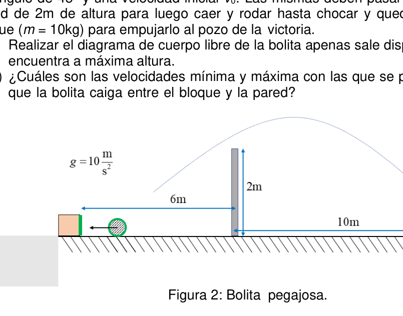
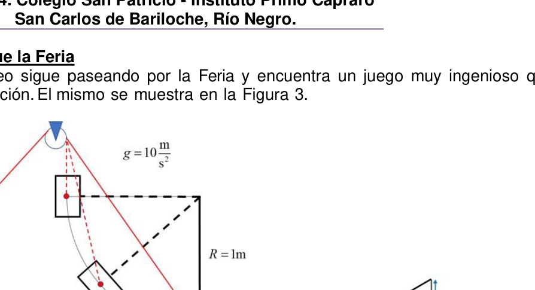
Topic: Conservation of Momentum, Conservation of Energy Metodi: Conservation of Momentum, Conservation of Energy Competenze: Physical Reasoning Objects: Pulley, Block, Spring, Inclined Plane Fonte: Testo (PDF) — p.7
PT14. Colegio San Patricio - Istituto Primo Capraro San Carlo di Bariloche, Rio Negro.
Continua la fiera Mateo continua a camminare per la Fiera e trova un gioco molto ingegnoso che chiama suo Attenzione. Lo stesso è mostrato in Figura 3. Figura 3: Martello.
L’idea è di sollevare un martello (M = 100kg) con l’aiuto di una corda e di una polla, per
- E’ un’altra cosa. Quando cade, colpisce elasticamente un blocco di esso. massa (m = 100 kg) in modo che l’energia e la quantità di movimento siano conservate. El
50 - OAF 2020 ∼ ∼ ∼ Il blocco deve salire per un piano inclinato di 30 ◦ senza rassi e cadere su un letto di sorgenti che assorbono tutta la sua energia. a) Se Mateo sale il martello dalla posizione di equilibrio fino ad una altezza h = R = 1 m (Sembra la radio), qual è il lavoro svolto? b) Dopo l’impatto con il blocco, il martello si ferma completamente. Da che altezza deve essere lasciato il martello per arrivare alla cima dello stadio? inclinato? (c) Qual è la massima altezza a cui può essere salito il martello per evitare che il martello si Blocco di passaggio lungo il letto di spruzze? d) Mateo sale il martello fino a h = 0.6m. Quanto si comprimono le sorgenti se la La costante elastica effettiva è K = 10000N/m. e) Se si sa che una massa m solidale a una primavera oscilla con un periodo 𝑇= 2 𝜋− 𝑚 𝐾′ (2.1) Qual è il periodo in questo caso?
Topic: Conservation of Momentum, Conservation of Energy Metodi: Conservation of Momentum, Conservation of Energy Competenze: Physical Reasoning Objects: Pulley, Block, Spring, Inclined Plane Fonte: Testo (PDF) — p.7
PT14. The first is the San Patricio College. St. Charles of Bariloche, Rio Negro.
Follow the fair Matthew keeps walking around the fair and finds a very ingenious game that calls his
- What? The same is shown in Figure 3. Figure 3: Hammer.
The idea is to lift a hammer (M = 100kg) with the help of a rope and a pulley, to Let it fall from a height of h. When it falls, it collides elastically with a block of the same. mass (m = 100kg) so that energy and amount of movement are conserved. El
50 - OAF 2020 ∼ ∼ ∼ The block must rise up a sloping plane of 30° without a scratch and fall on a bed of springs that absorb all their energy. (a) If Matthew raises the hammer from the equilibrium position to a height h = R = 1m (similar to radio), what is the work done? (b) After the elastic collision with the block, the hammer stops completely. From what height do you have to drop the hammer to get to the top of the plane?
- He’s bent? (c) What is the maximum height at which the hammer can be raised to prevent the hammer from falling? Block pass along the spring bed? d) Matthew raises the hammer to h = 0.6m. How much is the springs compressed if the The effective elastic constant is K = 10000N/m. (e) If a mass m solidary to a spring is known to oscillate with a period 𝑇= 2 𝜋− 𝑚 𝐾′ (2.1) What is the period in this case?
Topic: Conservation of Momentum, Conservation of Energy Metodi: Conservation of Momentum, Conservation of Energy Competenze: Physical Reasoning Objects: Pulley, Block, Spring, Inclined Plane Fonte: Testo (PDF) — p.7
PT15. Colegio San Patricio - Instituto Primo Capraro San Carlos de Bariloche, Río Negro.
Espectrómetro de masas
Un problema muy importante es determinar los distintos elementos presentes en un gas.
Por ejemplo, en el aire que respiramos hay esencialmente oxígeno (21 %), nitrógeno
(78 %) y argón (0.93 %), pero también un poco de dióxido de carbono, helio, hidrógeno,
xenón, neón y kryptón, aunque en un porcentaje muy muy inferior. ¿Cómo determinar qué
especies atómicas están presentes? Para hacer esto se usa un espectrómetro de masas
que permite determinar las concentraciones de distintos átomos separándolos por su masa.
Una forma de fabricar uno de estos espectrómetros se muestra en la Figura 4. Como la
acción de la gravedad es muy muy pequeña vamos a despreciarla y trabajar sin
gravedad.
Figura 4: Espectrómetro de masas.
El gas entra a una cámara donde los átomos son ionizados (pierden electrones) de manera que la carga eléctrica de cada átomo es Q = +e, donde e = 1,6 10-19 Coulomb es la carga de un electrón (en módulo). Los átomos ionizados entran en una primera cámara donde hay dos placas conductoras con una diferencia de potencial ∆V = 10kVolt que ejercen una fuerza eléctrica constante sobre la carga. Esta fuerza es
𝐹𝑒= 𝑄 ∆ 𝑉 𝑑 (3.1)
OAF 2020- 51 donde d es la distancia entre las placas. Nótese que las unidades son tal que Coulomb por Volt sobre metro es Netwon. Para determinar la masa, se mide el “tiempo de vuelo” que es el tiempo que tarda la carga en ir de una placa a la otra (d = 5m).
a) Muestre que el tiempo de vuelo depende de la masa m. b) Si m = 3 ua (unidades atómicas, 1 ua=1.66 10−27kg), ¿cuánto vale el tiempo de vuelo? c) Si m = 3 ua, ¿cuánto vale la velocidad al entrar en la cámara 2? En la cámara 2 se usa otra técnica para separar las masas. Se aplica un campo magnético B que hace que las cargas describan una trayectoria circular. La fuerza magnética depende de la velocidad v y juega el papel de fuerza centrípeta,
𝐹𝑚= 𝑄 𝑣 𝐵 (3.2)
donde B se mide en Tesla y 1 𝑇𝑒𝑠𝑙𝑎= 1 𝑁 𝑠 𝐶𝑜𝑢𝑙𝑜𝑚𝑏 𝑚.
d) Muestre que el radio de la órbita depende de la masa. e) Si el campo magnético aplicado es B =0.5 Tesla y m = 3 ua, ¿cuál es el radio de la órbita? (recuerde usar la velocidad calculada antes)
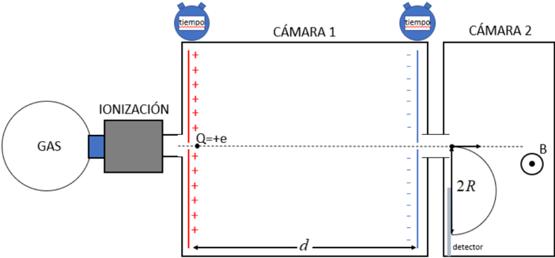
Topic: Magnetism, Electromagnetism Metodi: Lorentz Force Analysis, Conservation of Energy Competenze: Physical Reasoning Objects: Particle Beam Fonte: Testo (PDF) — p.7
PT15. Colegio San Patricio - Istituto Primo Capraro San Carlo di Bariloche, Rio Negro.
Spectrometro di massa Un problema molto importante è quello di determinare i diversi elementi presenti in un gas. Per esempio, nell’aria che respiriamo c’è essenzialmente ossigeno (21%) e azoto. (78%) e argone (0,93%) ma anche un po’ di anidride carbonica, elio, idrogeno, xenone, neon e krypton, anche se in una percentuale molto inferiore. Come determinare cosa specie atomiche sono presenti? Per fare questo si usa uno spettrometro di massa che permette di determinare le concentrazioni di diversi atomi separandoli per la loro massa. Un modo per produrre uno di questi spettrometri è mostrato in Figura 4. Come la L’azione della gravità è molto piccola. gravità.
Figura 4: Spettometro di massa.
Il gas entra in una camera dove gli atomi vengono ionizzati (perdono elettroni) in modo che che la carica elettrica di ogni atomo è Q = +e, dove e = 1,6 10-19 Coulomb è la carica di un elettrone (in modulo). Gli atomi ionizzati entrano in una prima camera dove c’è due piastrelle con una differenza di potenziale ∆V = 10kVolt che esercitano una forza elettrica costante sulla carica. Questa forza è
𝐹𝑒= 𝑄 ∆ 𝑉 𝑑 (3.1)
OAF 2020- 51 dove d è la distanza tra le placche. Si noti che le unità sono tali che Coulomb per Volt su metro è Netwon. Per determinare la massa, si misura il time di volo che è il tempo necessario per spostare la carica da una lastra all’altra (d = 5m).
a) Indicare che il tempo di volo dipende dalla massa m. b) Se m = 3 ua (unità atomiche, 1 ua = 1,66 10−27kg), quanto vale il tempo di volo? c) Se m = 3 ua, quanto vale la velocità quando si entra nella camera 2? Nella camera 2 si usa un’altra tecnica per separare le masse. Applicazione di un campo Magnetico B che fa descrivere una traiettoria circolare. La forza La magneticità dipende dalla velocità v e svolge il ruolo di forza centripeta.
𝐹𝑚= 𝑄 𝑣 𝐵 (3.2)
dove B viene misurata in Tesla e 1 Tesla = 1 𝑁 𝑠 Coulomb m.
d) Mostra che il raggio di orbita dipende dalla massa. e) Se il campo magnetico applicato è B = 0.5 Tesla e m = 3 ua, qual è il raggio di Orbita? (Ricorda di usare la velocità calcolata prima)
Topic: Magnetism, Electromagnetism Metodi: Lorentz Force Analysis, Conservation of Energy Competenze: Physical Reasoning Objects: Particle Beam Fonte: Testo (PDF) — p.7
PT15. The first is the San Patricio College . St. Charles of Bariloche, Rio Negro.
Mass spectrometer A very important problem is to determine the different elements present in a gas. For example, the air we breathe is essentially oxygen (21 percent), nitrogen. The Commission has also adopted a number of measures to combat the use of the chemical substances in the Community. Xenon, neon and krypton, but in a much lower percentage. How to determine what atomic species are present? To do this we use a mass spectrometer. The concentration of different atoms is determined by separating them by their mass. One way to make one of these spectrometers is shown in Figure 4. Like the Gravity is very small . We ‘ll just ignore it and work without it . gravity.
Figure 4: Mass spectrometer
The gas enters a chamber where the atoms are ionized (lose electrons) in a way that where e = 1.6 10-19 Coulomb is the charge of an electron (in module). The ionized atoms enter a first chamber where there is two conductive plates with a potential difference ∆V = 10kVolt exercising a constant electrical force over the load. This force is
𝐹𝑒= 𝑄 ∆ 𝑉 𝑑 (3.1)
The Commission shall adopt implementing acts in accordance with Article 21 of this Regulation. where d is the distance between the plates. Note that the units are such that Coulomb by Volt on the subway is Netwon. To determine mass, the flight time is measured. the time it takes for the load to travel from one plate to another (d = 5m).
(a) Show that flight time depends on mass m. (b) If m = 3 ua (atomic units, 1 ua = 1.66 10−27kg), what is the time value of flying? (c) If m = 3 ua, what is the speed when entering the chamber 2? In chamber two, another technique is used to separate the masses. A field is applied magnetic B that causes the charges to describe a circular path. The force magnetic depends on velocity v and plays the role of centrifugal force,
𝐹𝑚= 𝑄 𝑣 𝐵 (3.2)
where B is measured in Tesla and 1 Tesla is equal to 1 𝑁 𝑠 Coulomb m.
(d) Show that the radius of the orbit is dependent on mass. e) If the applied magnetic field is B = 0.5 Tesla and m = 3 UA, what is the radius of the orbit? (remember to use the speed calculated earlier)
Topic: Magnetism, Electromagnetism Metodi: Lorentz Force Analysis, Conservation of Energy Competenze: Physical Reasoning Objects: Particle Beam Fonte: Testo (PDF) — p.7
PT16. Instituto Jesús María Ciudad de Córdoba.
Un cuerpo A cargado con 5 microC repele a otro B cargado con 3 microC en el vacío.
a) Calcule la Fuerza Eléctrica sobre la segunda carga cuando se ubica a los 5 cm, 10
cm, 15 cm y 20 cm. Confeccione una tabla de resultados.
b) Grafique Fuerza (f) distancia. Analice la gráfica.
Si la masa de la segunda carga fuera de 1 g, y despreciando Fuerzas gravitatorias: c) Calcule la aceleración en las 4 posiciones. d) Grafique aceleración (f) distancia2. Analice la gráfica. e) Trace y Analice la trayectoria del cuerpo B si se tuviera en cuenta la gravedad.
Datos útiles Ko = 9 x 109 N.m2.C-2 G = 9,79 m. s-2
Topic: Electrostatics Metodi: Coulomb’s Law Competenze: Physical Reasoning Objects: Point Charge Fonte: Testo (PDF) — p.7
PT16. Istituto Gesù Maria Città di Córdoba.
Un corpo A carico di 5 microC respinge un altro B carico di 3 microC nel vuoto. a) Calcolare la forza elettrica sulla seconda carica quando si trova a 5 cm, 10 cm, 15 cm y 20 cm. Configuri una tabella di risultati. b) Grafico Forza (f) distanza. Controlla il grafico.
Se la massa della seconda carica fosse di 1 g, e disprezzando le forze gravitazionali: c) Calcolare l’accelerazione in tutte e 4 le posizioni. d) Grafico di accelerazione (f) distanza2. Controlla il grafico. e) Tracciare e analizzare il percorso del corpo B se si tiene conto della gravità.
Dati utili Ko = 9 x 109 N.m2.C-2 G = 9,79 m. s-2
Topic: Electrostatics Metodi: Coulomb’s Law Competenze: Physical Reasoning Objects: Point Charge Fonte: Testo (PDF) — p.7
PT16. Jesus Mary Institute The city of Cordoba.
A body charged with 5 microC repels another B charged with 3 microC in the vacuum. (a) Calculate the Electrical Force on the second charge when it is located at 5 cm, 10 cm, 15 cm y 20 cm. Make a scoreboard. (b) Graphic force (f) distance. Check the chart.
If the mass of the second charge was 1 g, and neglecting gravitational forces: (c) Calculate the acceleration at all 4 positions. (d) Graph acceleration (f) distance2. Check the chart. (e) Trace and analyse the trajectory of body B if gravity is taken into account.
Useful data Ko = 9 x 109 N.m2.C-2 G = 9,79 m. s-2
Topic: Electrostatics Metodi: Coulomb’s Law Competenze: Physical Reasoning Objects: Point Charge Fonte: Testo (PDF) — p.7
PT17. Instituto Jesús María Ciudad de Córdoba.
Un globo esférico flexible de 40 cm de radio se encuentra lleno de aire a 1 atm a la temperatura ambiente, que es de 30°C. Su masa vacío es de 10 g. a) Determine la masa del aire contenido en su interior. b) Determine el peso del conjunto. c) Calcule el número de moles.
Súbitamente se produce un brusco descenso de temperatura del aire interior a 0°C, sin modificarse la temperatura exterior. En esta condición: d) Determine la cantidad de calor que debió quitarse al aire interior. e) Calcule el nuevo volumen del globo lleno de aire. f) Confeccione la gráfica Presión (f) volumen de esta transformación. g) Calcule el peso del conjunto. h) Determine el empuje del aire sobre la esfera.
52 - OAF 2020 Si la esfera se soltara en la condición última a 1m del suelo: i) Calcule la aceleración que sufre el globo e indique su sentido.
Si se quisiera que la esfera quede en suspensión: j) ¿Es posible cambiando sólo la temperatura interior? Si es así, ¿a cuánto?
Datos útiles 9 = 9,79 m.s-2 Densidad del aire a 30°C = 1,1644 kg.m-3 Densidad del aire a 0°C = 1,2922 kg.m-3 R = 8,31 Joule. mol-1.K-1 R = 0,082 atm.litro.mol-1.K-1 Calor específico del aire = 0,24 cal.g-1.K-1
Topic: Thermodynamics, Fluid Mechanics Metodi: Ideal Gas Law, Hydrostatic Equilibrium Competenze: Physical Reasoning Objects: Bubble, Gas Fonte: Testo (PDF) — p.7
PT17. Istituto Gesù Maria Città di Córdoba.
Un globolo sferico flessibile di 40 cm di raggio si trova pieno di aria a 1 atm a temperatura ambiente, che è 30°C. Il suo peso vuoto è di 10 grammi. a) Determina la massa dell’aria contenuta all’interno. b) Determina il peso dell’insieme. c) Calcolare il numero di molli.
Subito si verifica un brusco calo della temperatura dell’aria interna a 0°C, senza la temperatura esterna deve essere modificata. In questa condizione: d) Determina la quantità di calore che deve essere stato tolto all’aria interna. e) Calcolare il nuovo volume del pallone pieno di aria. f) Configgere il grafico Presione (f) volume di questa trasformazione. g) Calcolare il peso dell’insieme. h) Determina la pressione dell’aria sulla sfera.
52 - OAF 2020 Se la sfera si è rilasciata in ultima condizione a 1 m dal suolo: i) Calcola l’accelerazione del pallone e indica il suo senso.
Se volessi che la sfera rimanga in sospensione: j) È possibile cambiare solo la temperatura interna? Se è così, a quanto?
Dati utili 9 = 9,79 m.s-2 Densità dell’aria a 30°C = 1,1644 kg.m-3 Densità dell’aria a 0°C = 1,2922 kg.m-3 R = 8,31 Joule. Mol-1.K-1 R = 0,082 atm.litro.mol-1.K-1 Calore specifico dell’aria = 0,24 cal.g-1.K-1
Topic: Thermodynamics, Fluid Mechanics Metodi: Ideal Gas Law, Hydrostatic Equilibrium Competenze: Physical Reasoning Objects: Bubble, Gas Fonte: Testo (PDF) — p.7
PT17. Jesus Mary Institute The city of Cordoba.
A flexible spherical balloon with a radius of 40 cm is filled with air at 1 atm at the ambient temperature, which is 30°C. Its empty mass is 10 g. (a) Determine the air mass contained within it. (b) Determine the weight of the set. (c) Calculate the number of moles.
Suddenly there is a sharp drop in indoor air temperature to 0°C, without the temperature outside is changed. In this condition: (d) Determine the amount of heat that must have been removed from the indoor air. (e) Calculate the new volume of the balloon filled with air. (f) Set the pressure (f) volume of this transformation. (g) Calculate the weight of the set. (h) Determine the air pressure on the sphere.
The Commission shall adopt delegated acts in accordance with Article 21 of this Regulation. If the sphere is released in the last condition 1 m from the ground: (i) Calculate the acceleration of the balloon and indicate its direction.
If you want the sphere to be suspended: (j) Is it possible to change only the temperature inside? If so, how much?
Useful data 9 = 9,79 m.s-2 The air density at 30°C = 1,1644 kg.m-3 The air density at 0°C = 1,2922 kg.m-3 R is 8,31 Joule. The following is the list of the countries of the European Union: The following is the list of the products of the Union: The specific heat of the air = 0,24 cal.g-1.K-1
Topic: Thermodynamics, Fluid Mechanics Metodi: Ideal Gas Law, Hydrostatic Equilibrium Competenze: Physical Reasoning Objects: Bubble, Gas Fonte: Testo (PDF) — p.7
PT18. Instituto Jesús María Ciudad de Córdoba.
Un cuerpo cuya masa es de 5 kg es arrastrada desde el reposo, sobre un plano inclinado sin rozamiento de 2 m de altura y 10 m de largo, en un tiempo de 5 segundos, por medio de una fuerza paralela al plano. a) Realice el diagrama de cuerpo libre. b) Calcule la aceleración. c) Calcule la fuerza necesaria que se debe aplicar. d) Determine la energía Cinética al llegar al punto más alto.
Suponga que ahora existe rozamiento, y su coeficiente es 0,20. e) Calcule la Fuerza necesaria. f) Calcule el Trabajo de la fuerza de fricción. g) Encuentre una expresión de la aceleración en función de masa, aceleración de la gravedad, ángulo del plano inclinado, coeficiente de rozamiento y Fuerza aplicada.
Dato g = 9,79 m.s-2
Topic: Newtonian Mechanics Metodi: Free-Body Diagram, Conservation of Energy Competenze: Physical Reasoning Objects: Inclined Plane, Block Fonte: Testo (PDF) — p.7
PT18. Istituto Gesù Maria Città di Córdoba.
Un corpo di 5 kg è trascinato dal riposo su un piano inclinato. senza rasatura di 2 m di altezza e 10 m di lunghezza, in un tempo di 5 secondi, mediante di una forza parallela al piano. a) Realizzare il diagramma del corpo libero. b) Calcolare l’accelerazione. c) Calcolare la forza necessaria da applicare. d) Determina l’energia Cinetica al punto più alto.
Supponiamo che ora ci sia un’arrosatura, e il suo coefficiente è 0,20. e) Calcolare la forza necessaria. f) Calcolare il lavoro della forza di attrito. g) Trova un’espressione dell’accelerazione in funzione di massa, gravità, angolo di inclinamento del piano, coefficiente di rottura e forza applicata.
Data g = 9,79 m.s-2
Topic: Newtonian Mechanics Metodi: Free-Body Diagram, Conservation of Energy Competenze: Physical Reasoning Objects: Inclined Plane, Block Fonte: Testo (PDF) — p.7
PT18. Jesus Mary Institute The city of Cordoba.
A body weighing 5 kg is dragged from rest onto an inclined plane. without grinding, 2 m high and 10 m long, in a time of 5 seconds, by means of a force parallel to the plane. (a) Draw the free body diagram. (b) Calculate the acceleration. (c) Calculate the force required to be applied. (d) Determine kinetic energy at the highest point.
So let’s say there’s a friction right now, and its coefficient is 0.20. (e) Calculate the Force required. (f) Calculate the work of the friction force. (g) Find an expression of acceleration by mass, acceleration by the gravity, angle of inclination, coefficient of friction and force applied.
Date of the meeting g = 9,79 m.s-2
Topic: Newtonian Mechanics Metodi: Free-Body Diagram, Conservation of Energy Competenze: Physical Reasoning Objects: Inclined Plane, Block Fonte: Testo (PDF) — p.7
PT19. Escuela Industrial Superior Ciudad de Santa Fe.
Un esquiador inicialmente en reposo se deja caer por la pista de patinaje. En la base hay una porción de la pista con rozamiento durante todo el tramo d luego impacta y comprime el resorte (considerado ideal) y es expulsado nuevamente hacia la pista, éste movimiento se repite hasta que el esquiador se detiene.
a) Determinar la expresión para la velocidad en b en función de h. b) Determinar la expresión para la velocidad en b´ en función de h, μ y d. Siendo μ el coeficiente de rozamiento entre los esquíes y la pista en el tramo d. c) Determinar una expresión para cuantificar que distancia x se comprime el resorte la primera vez que el esquiador impacta sobre éste. d) Encontrar la expresión que permita
OAF 2020- 53 calcular cuántas veces ingresa el esquiador a la zona de rozamiento desde el momento en que se deja caer hasta que se detiene. e) En función de la respuesta del ítem d, para un valor de μ = 0,5 calcular la relación entre h y d para que el esquiador se detenga en b´ luego de dejarse caer.
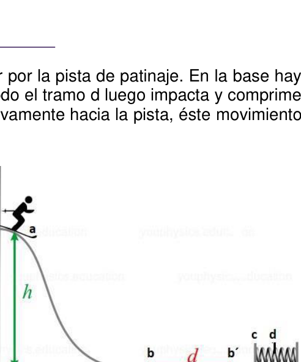
Topic: Conservation of Energy Metodi: Conservation of Energy, Hooke’s Law Competenze: Physical Reasoning Objects: Spring, Inclined Plane Fonte: Testo (PDF) — p.7
PT19. Scuola superiore industriale Città di Santa Fe.
Uno sciatore inizialmente a riposo si lascia cadere sulla pista di pattinaggio. Alla base c’è una porzione del tracciato con rottura per tutto il tratto d poi colpisce e compresse la primavera (considerata ideale) e viene espulso di nuovo verso la pista, questo movimento si ripete fino a quando lo sciatore si ferma.
a) Determinare l’espressione per la velocità in b in funzione di h. b) Determinare l’espressione per velocità in b ’ in funzione di h, μ e d. Essendo μ il coefficiente di Raggiudico tra gli sci e la pista nel tratto d. c) Determinare un’espressione per quantificare che Distanza x se comprime la primavera la prima volta che lo sciatore colpisca su di lui. d) Trovare l’espressione che permette
OAF 2020- 53 Calcolare quante volte lo sciatore entra nella zona di rasatura dal Il momento in cui si lascia cadere fino a quando si ferma. e) Sulla base della risposta dell’itto d, per un valore di μ = 0,5 calcolare il rapporto tra h e d per fermare il sciatore a b dopo aver lasciato cadere.
Topic: Conservation of Energy Metodi: Conservation of Energy, Hooke’s Law Competenze: Physical Reasoning Objects: Spring, Inclined Plane Fonte: Testo (PDF) — p.7
PT19. Higher Industrial School City of Santa Fe.
A skier initially at rest is dropped off the skating rink. At the base there is a portion of the track with a razor throughout the d-section then impacts and compresses the spring (considered ideal) and is pushed back towards the track, this movement repeat until the skier stops.
(a) Determine the expression for the speed in b as a function of h. (b) Determine the expression for the speed in b ’ as a function of h, μ and d. Given μ the coefficient of The scratching between the skis and the track in section d. (c) Determine an expression for quantify That Distance x se Compress the spring the first time That the skier impacts this one. (d) Find the expression that allows
The Commission shall adopt implementing acts in accordance with Article 21 of the Financial Regulation. calculate how many times the skier enters the rubbing area from the The moment you drop until you stop. (e) Based on the response of item d, for a value of μ = 0,5 calculate the ratio between h and d so that the skier stops at b after dropping.
Topic: Conservation of Energy Metodi: Conservation of Energy, Hooke’s Law Competenze: Physical Reasoning Objects: Spring, Inclined Plane Fonte: Testo (PDF) — p.7
PT20. Escuela Industrial Superior Ciudad de Santa Fe.
Existe un pequeño poblado en una zona montañosa que está evaluando rediseñar su red de suministro de agua potable principal. Para ello utilizará un lago ubicado en un valle más alto que la cota del pueblo. La idea de utilizar dicho lago es para ahorrar en equipo de bombeo.
Las tuberías se planean instalar en el fondo del lago. Siendo las mismas de un diámetro interno de 0,1 [m] y el caudal que se prevé que sea posible de obtener es de 35 [m3/h] constante. Si consideramos que el nivel de agua se mantiene constante porque es alimentado por una vertiente de agua capaz igualar el caudal de consumo y que las pérdidas asociadas a las cañerías pueden expresarse mediante 𝐸𝑣= 𝑣3 ∗1036,2 [𝑘𝑔 𝑚]
Donde:
Ev es la potencia disipada en las cañerías por rozamiento.
v es la velocidad del agua en las cañerías en [m/s].
a) ¿Es posible que, con el sistema planteado, se obtenga el caudal requerido solamente aprovechando la caída de agua por gravedad? Justifique b) En caso que no se pueda abastecer el caudal requerido, ¿qué potencia de bombeo debería instalarse? c) ¿Qué otra solución propondría para evitar el bombeo?
Si comparamos el sistema nuevo con el anterior, que consistía en bombear agua desde una napa ubicada 25 [m] por debajo el mismo caudal. La instalación cuenta con cañerías de 0,25 [m] de diámetro, el pozo se encuentra a una presión de 0,5 [atm] por encima de la presión atmosférica y la instalación completa puede asociar las pérdidas mediante la siguiente ecuación: 𝐸𝑣′ = 𝑣3 ∗3239,8 [𝑘𝑔 𝑚]
Donde:
Ev es la potencia disipada en las cañerías por rozamiento.
v es la velocidad del agua en las cañerías en [m/s].
54 - OAF 2020 d) ¿Con qué modelo de distribución se consume menos potencia? ¿De cuánto es este ahorro?
Relaciones útiles: 1[atm]=101300[Pa] Densidad del agua: 1000[kg/m3]
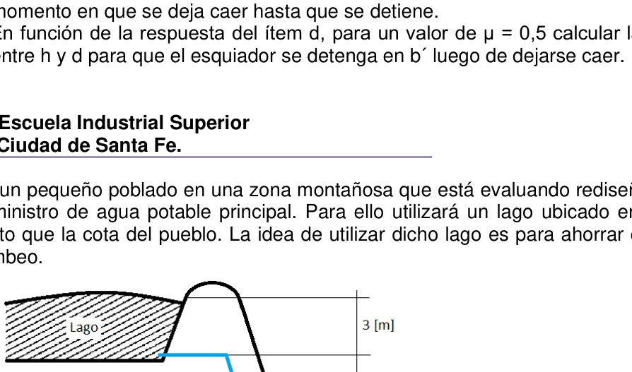
Topic: Fluid Mechanics Metodi: Bernoulli’s Equation, Continuity Equation Competenze: Physical Reasoning, Mathematical Modeling Objects: Tube, Container Fonte: Testo (PDF) — p.7
PT20. Scuola superiore industriale Città di Santa Fe.
C’è un piccolo villaggio in un’area montana che sta valutando di ridisegnare la sua rete. di fornitura principale di acqua potabile. Per questo userà un lago situato in una valle. più alto della quota del villaggio. L’idea di utilizzare il lago è di risparmiare in equipaggiamento. di pompazione.
I tubi sono previsti per essere installati sul fondo del lago. Essendo uguali a un diametro interno di 0,1 [m] e il flusso previsto possibile è di 35 [m3/h] costante. Se consideriamo che il livello dell’acqua è costante perché è alimentato da Un versante di acqua che può eguagliare il flusso di consumo e che le perdite associate a le tubi possono essere espresse mediante 𝐸𝑣= 𝑣3 ∗1036,2 [𝑘𝑔 𝑚]
Dove: Ev è la potenza dissipata nei tubi da macchiaio. v è la velocità dell’acqua nei tubi in [m/s].
a) È possibile ottenere il flusso richiesto con il sistema proposto? Semplicemente sfruttando la caduta dell’acqua da gravità? Giustifica b) Se non è possibile fornire il flusso richiesto, quale potenza di pompazione Dovrebbe instalarsi? c) Che altra soluzione propone per evitare il pompaggio?
Se paragoniamo il nuovo sistema con il precedente, che consisteva nel pompare acqua da una napa situata 25 [m] sotto lo stesso flusso. L’impianto ha dei tubi. di 0,25 [m] di diametro, il pozzo si trova a una pressione di 0,5 [atm] sopra La pressione atmosferica e l’installazione completa possono associare le perdite attraverso la l’equazione seguente: 𝐸𝑣′ = 𝑣3 ∗3239,8 [𝑘𝑔 𝑚]
Dove: Ev è la potenza dissipata nei tubi da macchiaio. v è la velocità dell’acqua nei tubi in [m/s].
54 - OAF 2020 d) Quale modello di distribuzione consuma meno potenza? Quanto è questo? risparmio?
Relazioni utili: 1[atm]=101300[Pa] Densità dell’acqua: 1000[kg/m3]
Topic: Fluid Mechanics Metodi: Bernoulli’s Equation, Continuity Equation Competenze: Physical Reasoning, Mathematical Modeling Objects: Tube, Container Fonte: Testo (PDF) — p.7
PT20. Higher Industrial School City of Santa Fe.
There ‘s a small town in a mountainous area that ‘s evaluating redesigning its network . the main drinking water supply. For this he will use a lake located in a valley higher than the town’s quota. The idea of using this lake is to save on equipment. pumped.
Plans are to install pipes at the bottom of the lake. Being the same as a diameter . internal of 0,1 [m] and the expected flow rate to be obtained is 35 [m3/h] It’s constant. If we consider that the water level is constant because it is fed by A water slurry capable of matching the consumption flow and that the losses associated with The pipes can be expressed by 𝐸𝑣= 𝑣3 ∗1036,2 [𝑘𝑔 𝑚]
Where: Ev is the power dissipated in the rubbing pipes. v is the water velocity in the pipes in [m/s].
(a) Is it possible to obtain the required flow rate with the proposed system? Just taking advantage of the gravity drop? Justify it . (b) If the required flow cannot be supplied, what pumping power Should he settle in? (c) What other solution would you propose to avoid pumping?
If we compare the new system to the previous one, which was to pump water from a napa located 25 [m] below the same flow. The facility has pipes The well is at a pressure of 0,5 [atm] above The air pressure and the complete installation can associate the losses by The following equation: 𝐸𝑣′ = 𝑣3 ∗3239,8 [𝑘𝑔 𝑚]
Where: Ev is the power dissipated in the rubbing pipes. v is the water velocity in the pipes in [m/s].
The Commission shall adopt delegated acts in accordance with Article 21 of this Regulation. (d) What distribution model uses less power? How much is this?
- The savings?
Useful relationships: The following is the list of the countries of the European Union. Density of water: 1000[kg/m3]
Topic: Fluid Mechanics Metodi: Bernoulli’s Equation, Continuity Equation Competenze: Physical Reasoning, Mathematical Modeling Objects: Tube, Container Fonte: Testo (PDF) — p.7
PT21. Escuela Industrial Superior Ciudad de Santa Fe.
En una situación de incendio en un lugar cerrado, para poder preservar la vida de una persona se recomienda que, hasta ser rescatados, el movimiento se realice de manera “cuerpo tierra”. La razón de esto recae en que los gases como el monóxido de carbono (CO(g)) tienden a ser sustancias mas densas que el propio aire (enriquecido en oxígeno gaseoso y nitrógeno). a) Si la masa molecular de CO(g) es igual a 28 [ 𝑔 𝐶𝑂 𝑚𝑜𝑙 𝐶𝑂] y la del aire tiene un peso molecular ponderado (¡es una mezcla de gases!) de 29 [ 𝑔 𝑎𝑖𝑟𝑒 𝑚𝑜𝑙 𝑎𝑖𝑟𝑒] aproximadamente, demostrar utilizando la ecuación de los gases ideales que en un ambiente con volumen (V) y a la misma presión atmosférica (P), y suponiendo una misma temperatura uniforme y constante (T) en todo el volumen, el monóxido de carbono es menos denso que el aire. En otras palabras, arribar a la expresión: 𝜌𝐶𝑂 𝜌𝑎𝑖𝑟𝑒< 1 Relaciones útiles: 𝑛𝑠𝑢𝑠𝑡𝑎𝑛𝑐𝑖𝑎= 𝑚𝑠𝑢𝑠𝑡𝑎𝑛𝑐𝑖𝑎 𝑃𝑀𝑠𝑢𝑠𝑡𝑎𝑛𝑐𝑖𝑎 ; 𝑅= 0.082 [ 𝐿 𝑎𝑡𝑚 𝐾 𝑚𝑜𝑙] .
b) Se tiene un tanque de 10 [𝐿] de capacidad a temperatura ambiente (25 [°𝐶]) con una presión interior de oxígeno gaseoso igual a 1550 [𝑚𝑚𝐻𝑔]. Si las condiciones ambientales no cambian, pero se sustrae una cierta cantidad de masa de oxígeno, la presión dentro del tanque cae a 1000 [𝑚𝑚𝐻𝑔]. Calcular la cantidad de masa de oxígeno que se ha removido del sistema. Datos útiles: 𝑅 = 0.082 [ 𝐿 𝑎𝑡𝑚 𝐾 𝑚𝑜𝑙], 𝑃𝑀𝑜𝑥í𝑔𝑒𝑛𝑜 = 32 [ 𝑔 𝑂2 𝑚𝑜𝑙 𝑂2].
c) A la masa restante del tanque anterior se la calienta a razón de 3 [ °𝐶 ℎ𝑜𝑟𝑎] durante 5 horas, y se desea conocer la nueva presión interna en Pascales. Calcular el nuevo valor.
Topic: Kinetic Theory Metodi: Ideal Gas Law, Dimensional Analysis Competenze: Physical Reasoning, Mathematical Modeling Objects: Gas, Container Fonte: Testo (PDF) — p.7
PT21. Scuola superiore industriale Città di Santa Fe.
In una situazione di incendio in un luogo chiuso, per poter preservare la vita di una Si consiglia che, fino al salvataggio, il movimento si faccia in modo Corpo terreno. La ragione di questo è che i gas come il monossido di carbonio (CO(g)) tendono ad essere sostanze più dense dell’aria stessa (richiesto in ossigeno gas e nitrogeno). a) Se la massa molecolare di CO(g) è pari a 28 [ 𝑔 𝐶𝑂 Mol CO] e quella dell’aria ha un peso molecolare ponderato (¡es Una . miscela de gas!) de 29 [ g aria Mol aria] approssimativamente, dimostrare utilizzando l’equazione dei gas ideali che in un ambiente con volume (V) e pressione atmosferica (P), e supponendo una la temperatura uniforme e costante (T) in tutto il volume, il monoxido di Il carbonio è meno denso dell’aria. In altre parole, arrivare all’espressione: RCO ■ il volume di aria < 1 Relazioni utili: sostanza sostanza P.M. sostanza; R= 0.082 [ L atm
- Non lo so.
b) Si dispone di un serbatoio di 10 [L] di capacità a temperatura ambiente (25 [°C]) con una pressione interna di ossigeno gassoso pari a 1550 [mmHg]. Se le condizioni L’ambiente non cambia, ma si toglie una certa quantità di massa di ossigeno. la pressione all’interno del serbatoio scende a 1000 [mmHg]. Calcolare la quantità di massa di l’ossigeno che è stato rimosso dal sistema. Dati utili: R = 0.082 [ L atm K mol], PMoxygen = 32 [ 𝑔 𝑂2 Mol O2].
c) Il resto del serbatoio precedente è riscaldato a 3 [ °𝐶 ora] per 5 Ora, e si desidera conoscere la nuova pressione interna a Pascale. Calcolare il nuovo
- Il valore.
Topic: Kinetic Theory Metodi: Ideal Gas Law, Dimensional Analysis Competenze: Physical Reasoning, Mathematical Modeling Objects: Gas, Container Fonte: Testo (PDF) — p.7
PT21. Higher Industrial School City of Santa Fe.
In a fire situation in a closed place, to preserve the life of a woman. It is recommended that, until rescued, the movement be carried out in a manner Earth body. The reason for this is that gases such as carbon monoxide (CO(g)) tend to be substances denser than the air itself (enriched in oxygen Gas and nitrogen). (a) If the molecular mass of CO(g) is equal to 28 [ 𝑔 𝐶𝑂 mol CO] and the air has a weight molecular weighted (¡es One . mixing de gases!) de 29 [ g air [Mol air] approximately, to demonstrate using the ideal gas equation that in a The average temperature of the atmosphere is about 0. the same uniform and constant temperature (T) throughout the volume, the monoxide of Carbon is less dense than air. In other words, to arrive at the expression: The following is the list of the following: Air Useful relationships: substance PMsubstance; R= 0.082 [ The ATM I ‘m not .
(b) A tank of 10 [L] capacity at room temperature (25 [°C]) with a the internal pressure of gaseous oxygen equal to 1550 [mmHg]. If the conditions Environmental changes do not change, but a certain amount of oxygen mass is subtracted, the pressure inside the tank drops to 1000 [mmHg]. Calculate the mass quantity of oxygen that has been removed from the system. Useful data: R = 0.082 [ The ATM K mol], PMoxygen = 32 [ 𝑔 𝑂2 The following table shows the results of the evaluation:
(c) The remaining mass of the above tank is heated at a rate of 3 [ °𝐶 hour] for 5 hours, and you want to know the new internal pressure at Easter. Calculate the new The courage.
Topic: Kinetic Theory Metodi: Ideal Gas Law, Dimensional Analysis Competenze: Physical Reasoning, Mathematical Modeling Objects: Gas, Container Fonte: Testo (PDF) — p.7
PT22. EESOPI N° 8053 Santísimo Rosario Rosario, Santa Fe.
Una puerta de 4m de anchura y 2 m de altura pesa 500N, su centro de gravedad está en el centro, y tiene bisagras en A y B. Para aliviar la tensión en la bisagra superior, se instala el alambre CD. La tensión en CD se aumenta hasta que la fuerza horizontal en la bisagra A es cero. a) Realiza el diagrama de cuerpo islado. b) ¿Qué tensión hay en el alambre CD? c) ¿Qué magnitud tiene la componente horizontal de la fuerza en la bisagra B? d) ¿Qué fuerza vertical combinada ejercen las bisagras A y B?
OAF 2020- 55
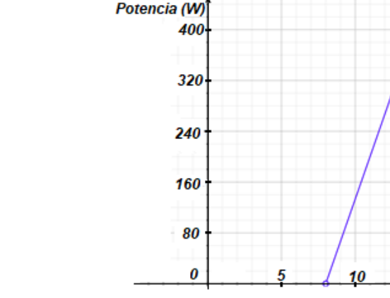
Topic: Rigid Body Statics Metodi: Torque & Angular Momentum Analysis, Free-Body Diagram Competenze: Physical Reasoning Objects: Beam, String Fonte: Testo (PDF) — p.7
PT22. EESOPI N° 8053 Santissimo Rosario Rosario, Santa Fe.
Una porta larga 4 metri e alta 2 metri pesa 500 N, il suo centro di gravità è in Il centro, e ha le croce in A e B. Per alleviare la tensione nell’angolo superiore, si installa il filo CD. La tensione in CD aumenta fino a quando la forza orizzontale in A è zero. a) Realizza il diagramma di corpo isolato. b) Qual è la tensione del filo CD? c) Qual è la dimensione della forza orizzontale del fascio B? d) Quale forza verticale combinata esercitano gli anchie A e B?
OAF 2020- 55
Topic: Rigid Body Statics Metodi: Torque & Angular Momentum Analysis, Free-Body Diagram Competenze: Physical Reasoning Objects: Beam, String Fonte: Testo (PDF) — p.7
PT22. The Commission has decided to extend the period of validity of the agreement. Rosario, Santa Fe.
A door 4m wide and 2m high weighs 500N, its center of gravity is at the center, and it has hinges on A and B. To relieve tension in the upper hinge, you install the CD wire. The voltage on the CD increases until the horizontal force in the A-shaft is zero. (a) Perform the isolectro body diagram. (b) What is the voltage of the CD wire? (c) What is the horizontal component of force in anchor B? (d) What combined vertical force do the hinges A and B exert?
The following points shall be added:
Topic: Rigid Body Statics Metodi: Torque & Angular Momentum Analysis, Free-Body Diagram Competenze: Physical Reasoning Objects: Beam, String Fonte: Testo (PDF) — p.7
PT23. EESOPI N° 8053 Santísimo Rosario Rosario, Santa Fe.
Un anillo de cobre (con masa de 25 g, coeficiente de expansión lineal de 1.7 X 10-5 ( °C)-I,
y calor específico de 9.24 X 10-2 cal/g ºC) tiene un diámetro de 5 cm a su temperatura de
15°C. Una capa de aluminio esférico (con masa de 10.9 gr. coeficiente de expansión
lineal de 2.4 X 10-5 (°C)-I. y calor específico de 0.215 cal/g ºC) tiene un diámetro de
5.01 cm a una temperatura mayor a 15°C.
La esfera se pone en la parte superior de un anillo horizontal, y se deja que los dos
lleguen al equilibrio térmico sin ningún intercambio de energía con el entorno. Tan pronto
como la esfera y el anillo alcanzan el equilibrio térmico, la esfera apenas pasa por el
anillo.
a) Realice un diagrama de la situación
b) Encuentre
I. la temperatura de equilibrio
II. la temperatura inicial de la esfera.
Topic: Thermodynamics, Elasticity & Materials Metodi: First Law of Thermodynamics Competenze: Physical Reasoning Objects: Sphere Fonte: Testo (PDF) — p.7
PT23. EESOPI N° 8053 Santissimo Rosario Rosario, Santa Fe.
Un anello di rame (con massa di 25 g, coefficiente di espansione lineare di 1,7 X 10-5 (°C) -I), e calore specifico di 9,24 X 10-2 cal/g oC) ha un diametro di 5 cm alla sua temperatura di 15°C. Un strato di alluminio sferico (con massa di 10,9 gr. Coefficiente di espansione lineare di 2,4 X 10-5 (°C) -I. e calore specifico di 0,215 cal/g oC) ha un diametro di 5,01 cm a una temperatura superiore a 15°C. La sfera viene posta sulla parte superiore di un anello orizzontale, e viene lasciata che entrambi raggiungono l’equilibrio termico senza alcun scambio di energia con l’ambiente. - Non appena. Come la sfera e l’anello raggiungono l’equilibrio termico, la sfera appena passa attraverso il ring. a) Sviluppa un diagramma della situazione b) Trova I. la temperatura di equilibrio II. la temperatura iniziale della sfera.
Topic: Thermodynamics, Elasticity & Materials Metodi: First Law of Thermodynamics Competenze: Physical Reasoning Objects: Sphere Fonte: Testo (PDF) — p.7
PT23. The Commission has decided to extend the period of validity of the agreement. Rosario, Santa Fe.
A copper ring (with a mass of 25 g, linear expansion coefficient of 1.7 X 10-5 (°C) -I), and specific heat of 9.24 X 10-2 cal/g oC) has a diameter of 5 cm at its temperature of 15°C. A layer of spherical aluminium (with a mass of 10.9 g. Expansion coefficient Linear of 2.4 X 10-5 (°C) -I. and specific heat of 0.215 cal/g oC) has a diameter of 5,01 cm at a temperature greater than 15°C. The sphere is placed on top of a horizontal ring, and both are left to They reach thermal equilibrium without any energy exchange with the environment. As soon as possible . As the sphere and ring reach thermal equilibrium, the sphere barely passes through the ring. (a) Draw a diagram of the situation (b) Find I. the equilibrium temperature II. the initial temperature of the sphere.
Topic: Thermodynamics, Elasticity & Materials Metodi: First Law of Thermodynamics Competenze: Physical Reasoning Objects: Sphere Fonte: Testo (PDF) — p.7
PT24. EESOPI N° 8053 Santísimo Rosario Rosario, Santa Fe.
Consideremos la Tierra como una esfera de radio R = 6370 km que gira en torno a su eje y está aislada de interacciones gravitatorias externas. Se quiere poner en órbita un satélite artificial de 90 kg de masa a una distancia de la superficie de la Tierra igual a 2R en el plano del ecuador moviéndose en la misma dirección que la Tierra. Para ello se lanza el satélite desde un punto del ecuador dirigiendo el mismo verticalmente hacia arriba en el momento del despegue. Consideremos que el valor de la gravedad en el punto del lanzamiento es de 9,8 m/s2. a) Realice el diagrama de la situación b) La velocidad que debe llevar el satélite para permanecer en la órbita deseada c) La energía que ha habido que proporcionar al satélite para colocarlo en órbita d) Tiempo que tarda el satélite para colocarlo en órbita e) Si se quiere reposicionar el satélite en una órbita que sea 5 veces el radio de la Tierra ¿Qué energía suplementaria hay que suministrarle?
Topic: Gravitation Metodi: Newton’s Law of Gravitation, Conservation of Energy Competenze: Physical Reasoning Objects: Satellite, Planet Fonte: Testo (PDF) — p.7
PT24. EESOPI N° 8053 Santissimo Rosario Rosario, Santa Fe.
Consideriamo la Terra come una sfera di raggio R = 6370 km che ruota attorno al suo asse. e è isolato dalle interazioni gravitazionali esterne. Si vuole mettere in orbita un satellite artificiale di 90 kg di massa a una distanza dalla superficie terrestre pari a 2R in piano equatoriale, muovendosi nella stessa direzione della Terra. Per questo si è lancia il satellite da un punto dell’equatore verso il verso verticale.
- Alti al momento del decollo. Consideriamo che il valore della gravità in punto di lancio è di 9,8 m/s2. a) Sviluppa il diagramma della situazione b) La velocità che il satellite deve percorrere per rimanere in orbita desiderata c) L’energia che è stata fornita al satellite per metterlo in orbita d) Il tempo necessario per mettere in orbita il satellite e) Se si vuole riposare il satellite in un’orbita che sia 5 volte il raggio della Terra, che energia supplementare deve essere fornita?
Topic: Gravitation Metodi: Newton’s Law of Gravitation, Conservation of Energy Competenze: Physical Reasoning Objects: Satellite, Planet Fonte: Testo (PDF) — p.7
PT24. The Commission has decided to extend the period of validity of the agreement. Rosario, Santa Fe.
Consider the Earth as a sphere of radius R = 6370 km that rotates around its axis. And it’s isolated from external gravitational interactions. It wants to put one into orbit. 90 kg mass artificial satellite at a distance from the Earth’s surface equal to 2R It’s moving in the same direction as the Earth. This is why I am here. It launches the satellite from a point on the equator, pointing vertically towards Up at the time of takeoff. Consider that the value of gravity in the point of launch is 9,8 m/s2. (a) Draw a diagram of the situation (b) The speed at which the satellite must travel to remain in the desired orbit (c) The energy that has been required to provide the satellite for its placement in orbit (d) Time taken for the satellite to be placed in orbit (e) If the satellite is to be repositioned in an orbit 5 times the radius of the Earth Earth, what extra energy do you need to supply it with?
Topic: Gravitation Metodi: Newton’s Law of Gravitation, Conservation of Energy Competenze: Physical Reasoning Objects: Satellite, Planet Fonte: Testo (PDF) — p.7
PT25. Colegio Nacional Dr. Arturo U. Illia Mar del Plata, Buenos Aires.
Un paseo por el circuito Mar y Sierras. La vuelta ciclista de Mar y Sierras tiene un recorrido de 604 kilómetros, divididos en seis capítulos (dos contrarrelojes), se desarrolla en el sudeste de la provincia de Buenos Aires. Un ciclista recorre una de las etapas e ingresa a una curva de un cuarto de círculo, con un radio de curvatura de 400 m. La curva forma con la horizontal una pendiente de 5 %, posee un peralte de 15° y el coeficiente de roce entre el pavimento y las ruedas es de 0,75. La masa incluida su bicicleta, es igual a 70 kg. El ciclista recorre la curva con una velocidad constante saliendo de ella luego de 42 s.
56 - OAF 2020
La magnitud de la fuerza de resistencia del aire está dada por Fres = k. v2, donde el
valor de k = 0,3 si la unidad de la velocidad es m/s y la unidad de la fuerza de resistencia
está expresada en N.
a) Calcule la velocidad del ciclista mientras desarrolla la curva.
b) ¿Qué fuerza de avance, ejercida sobre la bicicleta por la carretera, se necesita para
que el ciclista se mueva ascendiendo la pendiente de la curva con rapidez
constante?
c) Calcule la aceleración que actúa sobre la bicicleta.
d) ¿Podrá el ciclista mantenerse sin problemas mientras desarrolla la curva? Justifique
su respuesta.
e) Calcule la máxima velocidad que puede desarrollar sin tener problemas para
realizar la trayectoria indicada.
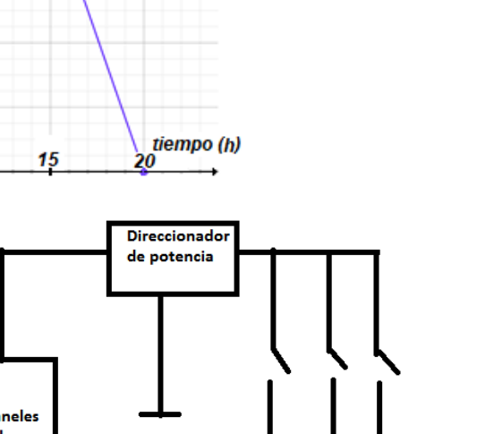
Topic: Newtonian Mechanics Metodi: Free-Body Diagram, Vector Decomposition Competenze: Physical Reasoning Objects: Wheel Fonte: Testo (PDF) — p.7
PT25. Il Dr. Arturo U. Illia Mar del Plata, Buenos Aires.
Un giro sul circuito Mar e Sierras. La corsa ciclista di Mar e Sierras ha un percorso di 604 chilometri, divisi in sei Capitoli (due contrarreloji), si svolge nella provincia di Buenos
- Aires. Un ciclista percorre uno dei passaggi e entra in una curva di un quarto di circolo, con un raggio di curvatura di 400 m. La curva si forma con la orizzontale un pendente del 5%, ha un perlato di 15° e il coefficiente di rottura tra il la pavimentazione e le ruote sono 0,75. La massa compreso la sua bicicletta, è uguale a 70 kg. Il ciclista percorre la curva con una velocità costante uscendo da esso dopo 42 secondi.
56 - OAF 2020 La grandezza della forza di resistenza dell’aria è data da Fres = k. v2, dove il valore di k = 0,3 se l’unità di velocità è m/s e l’unità di forza di resistenza è espressa in N. a) Calcolare la velocità del ciclista mentre si sviluppa la curva. b) Che forza di avanzamento, esercitata sulla bicicletta su strada, è necessaria per che il ciclista si muova saliendo rapidamente sulla curva costante? c) Calcolare l’accelerazione che agisce sulla bicicletta. d) Il ciclista potrà mantenere la curva senza problemi? Giustifica la sua risposta. e) Calcolare la velocità massima che può sviluppare senza problemi per effettuare il percorso indicato.
Topic: Newtonian Mechanics Metodi: Free-Body Diagram, Vector Decomposition Competenze: Physical Reasoning Objects: Wheel Fonte: Testo (PDF) — p.7
PT25. National College Dr. - Arthur U. Illia The city of Mar del Plata, Buenos Aires.
A walk around the Mar and Sierras circuit. The Mar and Sierras cycling race has a length of 604 kilometres, divided into six stages. chapters (two counter-clockwise), takes place in the southeast of the province of Buenos I’m going to get you. A cyclist goes through one of the stages and enters a curve of a quarter of circle, with a radius of curvature of 400 m. The curve forms with the horizontal a slope of 5%, has a pearl of 15° and the brushing coefficient between the The pavement and wheels are 0.75. La mass including your bike, is equal to 70 kg. The rider runs the curve with a Constant speed coming out of it After 42 seconds.
56 - OAF 2020 The magnitude of the air resistance force is given by Fres = k. v2, where the value of k = 0,3 if the unit of speed is m/s and the unit of resistance force is expressed in N. (a) Calculate the speed of the rider as he develops the curve. (b) What force of advance, exerted on the road bicycle, is needed for The rider moves up the curve slope at a rapid pace. constantly? (c) Calculate the acceleration acting on the bicycle. (d) Will the rider be able to keep himself smooth while developing the curve? Justify it . I’m sorry, but your answer. (e) Calculate the maximum speed you can develop without any problems to to follow the trajectory indicated.
Topic: Newtonian Mechanics Metodi: Free-Body Diagram, Vector Decomposition Competenze: Physical Reasoning Objects: Wheel Fonte: Testo (PDF) — p.7
PT26. Colegio Nacional Dr. Arturo U. Illia Mar del Plata, Buenos Aires.
Una casa ecológica. En una casa de la puna jujeña, se utilizan paneles solares para transformar energía luminosa en energía eléctrica. La energía eléctrica producida se puede utilizar en algún artefacto eléctrico o se almacena en baterías de 12 V. La potencia eléctrica producida depende de la insolación del día. El gráfico de la potencia que entregan los paneles solares de muestra en el gráfico de más abajo.
El área entre el gráfico y el eje de las
abscisas en la energía producida por los
paneles, durante las horas de sol.
Los paneles solares están conectados a
un direccionador de potencia, que lleva
la energía a las pilas o a la casa cuando
se requiere.
En la casa hay dos lámparas, cada una
de 8 W y un motor para bombear agua
de 780 W. Las lámparas y el motor
funcionan correctamente cuando están
conectadas a 12 V.
a) Calcule el consumo de energía de mantener las lámparas prendidas toda la noche. b) Calcule en el caso del inciso a), la corriente que circula en cada lámpara.
OAF 2020- 57 c) La eficiencia de la bomba es del 80%, calcule cuanto se tarda en llenar un tanque de 200 l de agua. Considere que la napa desde la que se obtiene el agua se encuentra a 25 m de profundidad, con respecto al tanque de almacenamiento. d) Calcule la energía que entrega el sol en un día sin nubes. Si se consume a lo largo del día, la energía para llenar el tanque de agua, determine cuanta energía queda almacenada en las baterías a las 20 hs. e) ¿Alcanzará para mantener la casa con una de las lámparas encendida toda la noche? Justifique. f) Después de varios días nublados, las baterías están agotadas. El motor solo puede funcionar si se le suministra toda la potencia que requiere. ¿Cuál es la hora más temprana a la que se podrá conectar el motor y que funcione correctamente? g) ¿Hasta qué hora funcionará para llenar el tanque?
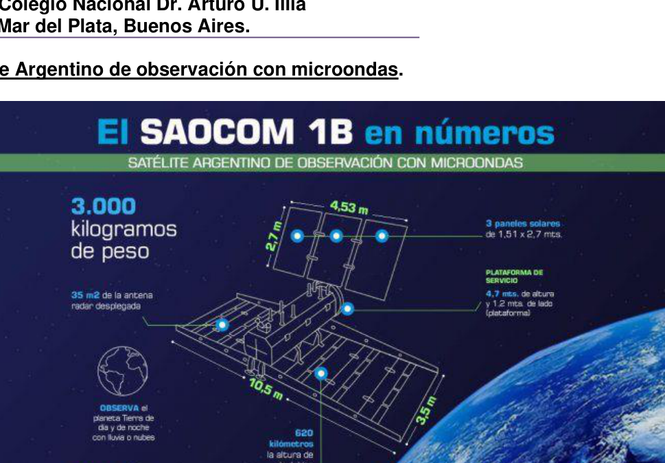
Topic: Circuits Metodi: Kirchhoff’s Laws Competenze: Physical Reasoning Objects: Battery, Resistor Fonte: Testo (PDF) — p.7
PT26. Il Dr. Arturo U. Illia Mar del Plata, Buenos Aires.
Una casa ecologica. In una casa di giocaccio, vengono utilizzati pannelli solari per trasformare l’energia. luminosa in energia elettrica. L’energia elettrica prodotta può essere utilizzata in qualsiasi apparecchio elettrico o è conservato in batterie da 12 V. La potenza elettrica prodotta dipende dalla solazione del giorno. Il grafico di potenza che forniscono i pannelli solari campioni nel grafico di seguito.
L’area tra il grafico e l’asse delle La produzione di energia da parte dei pannelli, durante le ore di sole. I pannelli solari sono collegati a un dirigente di potenza, che porta l’energia per le batterie o per la casa quando
- Si richiede. Nella casa ci sono due lampade, ognuna di 8 W e un motore per pompare acqua de 780 W. Le lampade e il motore funzionano correttamente quando sono in funzione. collegati a 12 V.
a) Calcolare il consumo energetico di mantenere le lampade accese
- l’intera notte. b) Calcolare, nel caso di a), il corrente che circola in ogni lampada.
OAF 2020- 57 c) L’efficienza della pompa è dell’80%, calcola quanto tempo ci vuole per riempire un serbatoio di 200 litri di acqua. Considera che la napa da cui si ottiene l’acqua è si trova a 25 m di profondità rispetto al serbatoio di stoccaggio. d) Calcolare l’energia che il sole fornisce in una giornata senza nuvole. Se si consuma lungo La quantità di energia che resta, la quantità di energia che resta, la quantità di energia che resta. immagazzinato nelle batterie alle 20 ore. e) Riuscirà a mantenere la casa con una delle lampade accese tutta la
- La notte? giustifica. f) Dopo diversi giorni di nuvole, le batterie sono esaurite. Il motore può solo funzionare se viene fornita tutta la potenza necessaria. Qual è l’ora più? prima che il motore possa essere collegato e funzionare correttamente? g) Fino a che ora funzionerà per riempire il serbatoio?
Topic: Circuits Metodi: Kirchhoff’s Laws Competenze: Physical Reasoning Objects: Battery, Resistor Fonte: Testo (PDF) — p.7
PT26. National College Dr. - Arthur U. Illia The city of Mar del Plata, Buenos Aires.
It’s an eco-friendly house. In a house of jujuña, solar panels are used to transform energy. It’s bright in electrical energy. The electricity produced can be used in any electrical device or is stored in 12 V batteries. The electrical power produced depends on the sunshine of the day. The power graph which deliver the solar panel samples in the chart below.
The area between the graph and the axis of the The energy produced by the panels, during sunny hours. The solar panels are connected to a power steering wheel, which carries energy to the batteries or to the house when It’s required. In the house there are two lamps, each one. 8W and a water pumping engine de 780 W. The lamps and the engine They work properly when they ‘re . connected to 12 V.
(a) Calculate the energy consumption of Keep the lamps on All night long. (b) In the case of (a), calculate the current circulating in each lamp.
The Commission shall adopt implementing acts in accordance with Article 21 of this Regulation. (c) The efficiency of the pump is 80%, calculate how long it takes to fill a tank 200 litres of water. Consider that the Napa from which water is obtained is is 25 m deep, with respect to the storage tank. (d) Calculate the energy delivered by the sun on a cloudless day. If you consume it over time By the end of the day, the energy to fill the water tank, determines how much energy is left. stored in batteries at 20 h. (e) Will you be able to keep the house with one of the lamps on all day? night? You justify it. (f) After several cloudy days, the batteries are exhausted. The engine can only . It will work if it is supplied with all the power it needs. What time is it? early to which the engine can be connected and that it is running properly? (g) How long will it be running to fill the tank?
Topic: Circuits Metodi: Kirchhoff’s Laws Competenze: Physical Reasoning Objects: Battery, Resistor Fonte: Testo (PDF) — p.7
PT27. Colegio Nacional Dr. Arturo U. Illia Mar del Plata, Buenos Aires.
Satélite Argentino de observación con microondas.
La misión SAOCOM consiste en la puesta en órbita de dos satélites SSAOCOM 1A y 1B, idénticos que permiten obtener la revisita adecuada de la superficie terrestre monitoreada, la misión es prevenir, monitorear, mitigar y evaluar catástrofes naturales o antrópicas para aplicaciones en agricultura como humedad de suelo, índices de vegetación y control de plagas, aplicaciones hidrológicas costeras y oceánicas. Cada uno de los satélites tiene una masa de 3000 kg. Sus dimensiones son 4,7 m de alto x 1,2 m de diámetro. La antena desplegada tiene una superficie de 35 m2. Su vida útil será de 5,5 años. Tiene una órbita heliosincrónica, que es geocéntrica y pasa por una dada latitud terrestre a un mismo tiempo solar local. Orbita a 620 km de la superficie de la Tierra. El ancho del barrido es de 20 a 350 km, y la resolución espacial de 10 a 100 m. Vuelve a pasar por el mismo sitio cada 16 días cada satélite.
a) Calcule la velocidad del satélite para que permanezca en órbita. b) Calcule el tiempo que tarda el satélite en dar una vuelta. c) Si se tiene en cuenta que el ancho de barrido es de 350 km, calcule el ángulo que forma la porción de la tierra observada con el satélite.
58 - OAF 2020 d) Para este caso, si la resolución es de 100 m, y la misma está asociada al tamaño del pixel registrado calcule la cantidad de pixeles por línea, suponga que las imágenes obtenidas son cuadradas. e) El satélite emite y recibe en la banda L que opera a 1,275 GHz, con tecnología radar, calcule el tiempo que tarda un pulso en salir del satélite y volver al mismo. f) Los paneles solares se ubican de forma que queden perpendiculares a la radiación proveniente del sol que es de 1350 W/ m2, calcule la energía recibida por los paneles en un minuto. g) Si los paneles tienen una emisividad de 0,21 y una eficiencia del 20%, calcule la temperatura a la que se encuentran.
𝜎= 5,67. 10−8 𝑊/𝑚2. 𝐾4:
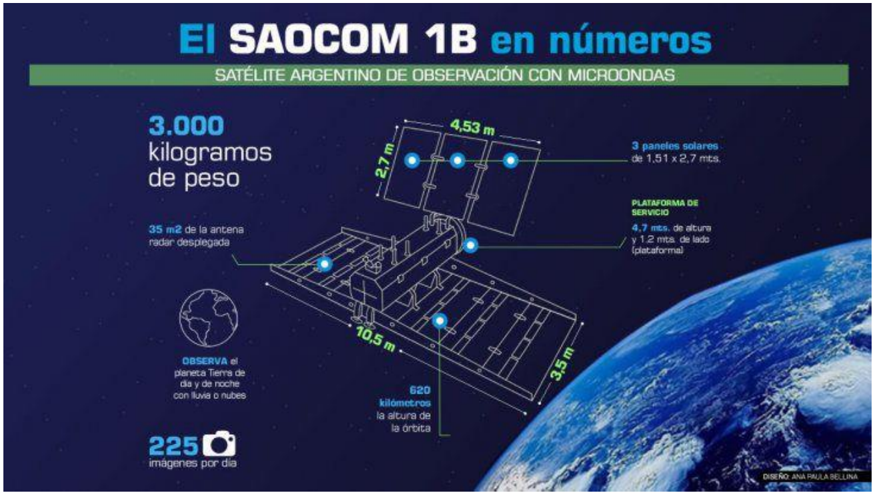
Topic: Gravitation Metodi: Newton’s Law of Gravitation, Kepler’s Laws Competenze: Physical Reasoning Objects: Satellite, Planet Fonte: Testo (PDF) — p.7
PT27. Il Dr. Arturo U. Illia Mar del Plata, Buenos Aires.
Satellite di osservazione microonde argentino.
La missione SAOCOM consiste nel mettere in orbita due satelliti SSAOCOM 1A e 1B, identiche per ottenere un adeguato rivisito della superficie terrestre Il programma di ricerca è stato sviluppato in modo da consentire ai cittadini di sviluppare e sviluppare un’attività di ricerca e di ricerca. I dati relativi alle applicazioni in agricoltura come l’umidità del suolo, gli indici di la vegetazione e la lotta contro i pesticidi, le applicazioni idrologiche costiere e oceaniche. Ognuno dei satelliti ha una massa di 3000 kg. Le sue dimensioni sono di 4,7 m di altezza x diametro di 1,2 m. L’antenna dispiegata ha una superficie di 35 m2. La sua durata sara’ di 5,5 anni. Ha un’orbita eliosincronica, che è geocentrica e passa attraverso un dato la latitudine terrestre allo stesso tempo solare locale. Orbita a 620 km dalla superficie della Terra. La larghezza del spazzatura è da 20 a 350 km, e la risoluzione spaziale da 10 a 100 m. Ogni 16 giorni ogni satellite passa di nuovo sullo stesso sito.
a) Calcolare la velocità del satellite per mantenere l’orbita. b) Calcolare il tempo necessario per il satellite per girare. (c) Se si considera che la larghezza di spazzatura è di 350 km, calcolare l’angolo che forma la porzione di terra osservata con il satellite.
58 - OAF 2020 d) In questo caso, se la risoluzione è di 100 m, e la stessa è associata alla dimensione Calcola il numero di pixel registrati per linea, supponi che le Le immagini ottenute sono quadrate. e) Il satellite emette e riceve nella banda L che opera a 1,275 GHz, con tecnologia radar, calcola il tempo che un polso impiega per uscire dal satellite e tornare al satellite. f) I pannelli solari sono posizionati in modo da rimanere perpendicolari alla radiazione La quantità di energia che viene da esso viene calcolata da 1350 W/ m2. pannelli in un minuto. g) Se i pannelli hanno un’emissività di 0,21 e un’efficienza del 20%, calcolare la la temperatura a cui si trovano.
𝜎= 5,67. 10−8 𝑊/𝑚2. 𝐾4:
Topic: Gravitation Metodi: Newton’s Law of Gravitation, Kepler’s Laws Competenze: Physical Reasoning Objects: Satellite, Planet Fonte: Testo (PDF) — p.7
PT27. National College Dr. - Arthur U. Illia The city of Mar del Plata, Buenos Aires.
Argentine microwave observation satellite.
The SAOCOM mission consists of the placing into orbit of two SSAOCOM satellites 1A and 1B, identical to ensure the proper inspection of the land surface The mission of the European Commission is to prevent, monitor, mitigate and evaluate natural disasters. The Commission has also adopted a number of proposals for the implementation of the new programme. Vegetation and pest control, coastal and ocean hydrological applications. Each of the satellites has a mass of 3,000 kg. Its dimensions are 4.7 m high x 1.2 m in diameter. The antenna deployed has an area of 35 m2. Its useful life It’ll be 5.5 years. It has a heliosynchronous orbit, which is geocentric and passes through a given Earth latitude at the same time as the local solar. It orbits at 620 km from the surface of the Earth. Earth. The sweep width is 20 to 350 km, and the spatial resolution is 10 to 100 m. It’s going through the same site every 16 days, every satellite.
(a) Calculate the speed of the satellite so that it remains in orbit. (b) Calculate the time it takes the satellite to make a spin. (c) If the sweeping width is 350 km, calculate the angle that The shape of the portion of the earth observed by the satellite.
The Commission shall adopt delegated acts in accordance with Article 21 of this Regulation. (d) In this case, if the resolution is 100 m, and the same is associated with the size The number of pixels per line is calculated, assuming that the The images you get are squares. (e) The satellite emits and receives in the L band operating at 1,275 GHz, with technology radar, calculate the time it takes a pulse to leave the satellite and return to the same. (f) The solar panels are positioned so that they remain perpendicular to the radiation. The energy received by the sun is 1350 W/ m2. panels in a minute. (g) If the panels have an emissivity of 0.21 and an efficiency of 20%, calculate the temperature at which they are located.
𝜎= 5,67. 10−8 𝑊/𝑚2. 𝐾4:
Topic: Gravitation Metodi: Newton’s Law of Gravitation, Kepler’s Laws Competenze: Physical Reasoning Objects: Satellite, Planet Fonte: Testo (PDF) — p.7
PT28. Colegio Confluencia Ciudad de Neuquén.
Para el sistema dado, expresar analíticamente en función de los datos:
a) La altura a la cual se debe fijar el resorte de constante k para que el bloque (con la
bala incrustada) lo toque sin comprimirlo.
b) Considerando fija la altura calculada, ¿cuál debe ser el valor de 𝒗𝟎 necesario para
que el resorte se comprima una distancia s (vertical)?
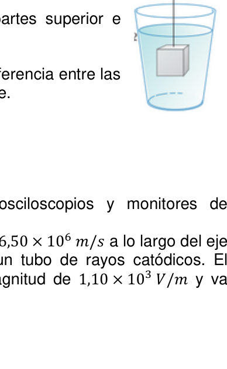
Topic: Conservation of Momentum, Conservation of Energy Metodi: Conservation of Momentum, Conservation of Energy, Hooke’s Law Competenze: Physical Reasoning Objects: Block, Spring, Projectile Fonte: Testo (PDF) — p.7
PT28. La scuola Confluenza Città di Neuquén.
Per il sistema dato, esprimere analticamente in base ai dati: a) L’altezza alla quale deve essere fissata la sorgente di costante k per che il blocco (con la
- Il proiettile non lo comprime. b) Considerando che l’altezza calcolata è fissa, quale deve essere il valore di v0 necessario per che la risorsa si comprima a distanza s (verticale)?
Topic: Conservation of Momentum, Conservation of Energy Metodi: Conservation of Momentum, Conservation of Energy, Hooke’s Law Competenze: Physical Reasoning Objects: Block, Spring, Projectile Fonte: Testo (PDF) — p.7
PT28. College of Confluence The city of Neuquén.
For the given system, express analytically based on the data: (a) The height at which the spring of constant k must be fixed so that the block (with the
- Shot without compression. (b) Whereas the calculated height is fixed, what should be the value of v0 required for the spring is compressed to a distance s (vertical)?
Topic: Conservation of Momentum, Conservation of Energy Metodi: Conservation of Momentum, Conservation of Energy, Hooke’s Law Competenze: Physical Reasoning Objects: Block, Spring, Projectile Fonte: Testo (PDF) — p.7
PT29. Colegio Confluencia Ciudad de Neuquén.
Un bloque metálico de 10.0 kg que mide 12.0 𝑐𝑚× 10.0 𝑐𝑚× 10.0 𝑐𝑚, está
suspendido de una balanza y sumergido en agua, como se muestra en la
figura. La dimensión de 12.0 cm es vertical y la parte superior del bloque
está 5.00 cm abajo de la superficie del agua.
a) ¿Cuáles son las fuerzas que actúan sobre las partes superior e
inferior del bloque? (Considere 𝑃0 = 101,30 𝑘𝑃𝑎.)
b) ¿Cuál es la lectura de la balanza de resorte?
c) Demuestre que la fuerza de flotación es igual a la diferencia entre las
fuerzas sobre las partes superior e inferior del bloque.
Topic: Fluid Mechanics Metodi: Hydrostatic Equilibrium, Free-Body Diagram Competenze: Physical Reasoning Objects: Block, Container Fonte: Testo (PDF) — p.7
PT29. La scuola Confluenza Città di Neuquén.
Un blocco metallico di 10,0 kg di 12,0 cm × 10,0 cm × 10,0 cm è Sospeso da una bilancia e immerso in acqua, come mostrato in
- Figura. La dimensione di 12,0 cm è verticale e la parte superiore del blocco è a 5,00 cm sotto la superficie dell’acqua. a) Quali sono le forze che agiscono sulle parti superiori e inferiore al blocco? (Considera P0 = 101,30 kPa.) b) Qual è la lettura del bilancio di primavera? c) Dimostra che la forza di galleggiamento è uguale alla differenza tra le Forze sulle parti superiori e inferiori del blocco.
Topic: Fluid Mechanics Metodi: Hydrostatic Equilibrium, Free-Body Diagram Competenze: Physical Reasoning Objects: Block, Container Fonte: Testo (PDF) — p.7
PT29. College of Confluence The city of Neuquén.
A 10.0 kg metal block measuring 12.0 cm× 10.0 cm× 10.0 cm is suspended from a scale and submerged in water, as shown in the It’s a figure. The size of 12.0 cm is vertical and the top of the block It’s five centimeters below the surface of the water. (a) What are the forces acting on the upper parts and lower of the block? (Consider P0 = 101.30 kPa.) (b) What is the reading of the spring balance? (c) Demonstrate that the floating force is equal to the difference between the two forces on the upper and lower parts of the block.
Topic: Fluid Mechanics Metodi: Hydrostatic Equilibrium, Free-Body Diagram Competenze: Physical Reasoning Objects: Block, Container Fonte: Testo (PDF) — p.7
PT30. Colegio Confluencia Ciudad de Neuquén.
Desviación en un TRC. Es frecuente que en los osciloscopios y monitores de computadora haya tubos de rayos catódicos (TRC). En la figura se proyecta un electrón con rapidez inicial de 6,50 × 106 𝑚/𝑠 a lo largo del eje en el punto medio entre las placas de desviación de un tubo de rayos catódicos. El campo eléctrico uniforme entre las placas tiene una magnitud de 1,10 × 103 𝑉/𝑚 y va hacia arriba.
OAF 2020- 59 a) ¿Cuál es la fuerza (magnitud y dirección) sobre el electrón cuando está entre las placas? b) ¿Cuál es la aceleración del electrón (magnitud y dirección) cuando actúa sobre él la fuerza del inciso a)? c) ¿Qué tan lejos por debajo del eje se ha movido el electrón cuando alcanza el final de las placas? d) ¿Con qué ángulo con respecto al eje se mueve cuando abandona las placas? e) ¿A qué distancia por debajo del eje golpeará la pantalla fluorescente S?
Datos: 𝑚𝑒= 9,109 × 10−31 𝑘𝑔 ; 𝑞𝑒= 1,602 × 10−19 𝐶
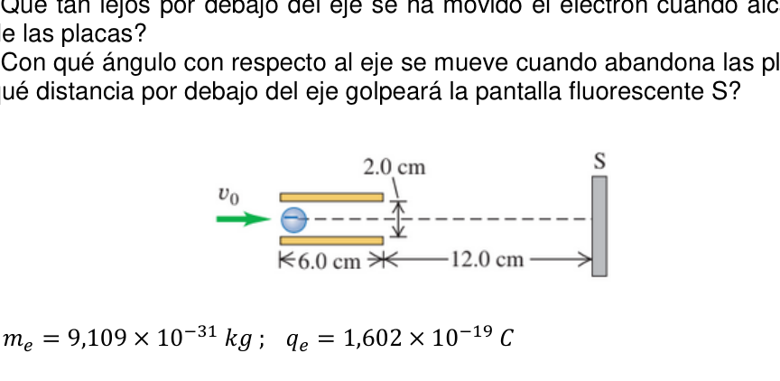
Topic: Electromagnetism, Newtonian Mechanics Metodi: Lorentz Force Analysis, Kinematic Equations Competenze: Physical Reasoning Objects: Electron, Capacitor, Screen Fonte: Testo (PDF) — p.7
PT30. La scuola Confluenza Città di Neuquén.
Sviazione in un TRC. È frequente che gli osciloscopi e i monitor di computer ha tubi di raggi catodici (TRC). La figura proietta un elettrone con velocità iniziale di 6,50 × 106 m/s lungo l’asse il punto medio tra le placche di deviazione di un tubo di raggi catodici. El un campo elettrico uniforme tra le plache ha una magnitudine di 1,10 × 103 V/m e va
- Si’, su.
OAF 2020- 59 a) Qual è la forza (magnitudine e direzione) sull’elettrone quando è tra i
- Le targhe? b) Qual è l’accelerazione dell’elettrone (magnitudine e direzione) quando agisce su di esso la forza di cui al punto a)? c) Quanto lontano sotto l’asse l’elettrone si è spostato quando ha raggiunto la fine
- Le targhe? d) A che angolo si muove rispetto all’asse quando si abbandona la piastra? e) ¿A Qual è la distanza sotto l’asse che colpirà lo schermo fluorescente S?
Data: me= 9,109 × 10−31 kg; que= 1,602 × 10−19 C
Topic: Electromagnetism, Newtonian Mechanics Metodi: Lorentz Force Analysis, Kinematic Equations Competenze: Physical Reasoning Objects: Electron, Capacitor, Screen Fonte: Testo (PDF) — p.7
PT30. College of Confluence The city of Neuquén.
A diversion in a TRC. It is common for oscilloscopes and monitors to be used in the computer has cathode ray tubes (TRC). In the figure an electron with an initial speed of 6,50 × 106 m/s is projected along the axis in the middle between the deflection plates of a cathode ray tube. El The uniform electric field between the plates has a magnitude of 1,10 × 103 V/m and goes up.
The Commission shall adopt implementing acts in accordance with Article 21 of the Financial Regulation. (a) What is the force (magnitude and direction) on the electron when it is between the What about plates? (b) What is the electron acceleration (magnitude and direction) when the electron is acting on it? the force of subparagraph (a)? (c) How far below the axis has the electron moved when it reaches the end The plates? (d) At what angle with respect to the axis does it move when leaving the plates? e) ¿A What distance below the axis will the fluorescent S screen hit?
Data: me= 9,109 × 10−31 kg; which= 1,602 × 10−19 C
Topic: Electromagnetism, Newtonian Mechanics Metodi: Lorentz Force Analysis, Kinematic Equations Competenze: Physical Reasoning Objects: Electron, Capacitor, Screen Fonte: Testo (PDF) — p.7
PT31. Instituto de Enseñanza San Jorge - Big Ben School Ciudad de Santiago del Estero.
Ale sale a trotar como todas las mañanas cumpliendo con todas las medidas de
seguridad por la pandemia que afecta al mundo. Cuando comienza a trotar lo hace
recorriendo 8 metros cada 16 segundos, manteniendo esa velocidad durante 12 minutos.
En un momento se detiene porque siente la necesidad de estornudar. Mientras intentaba
quitárselo su barbijo cayó al suelo desde una altura de 1,5 metros. Si la masa del barbijo
es de 30 gramos,
RESPONDE:
a) Realiza un dibujo esquemático de la situación
b) ¿Cuál es la velocidad a la que trota?
c) ¿Qué distancia recorrió durante el trote?
d) ¿Cuál es el peso del barbijo?
e) ¿Cuánto tarda el barbijo en llegar al suelo?
f) ¿Cuál es la velocidad del barbijo al tocar el suelo? (Desprecie la resistencia del aire)
g) ¿Cuál es la energía potencial del barbijo en el instante antes de comenzar a caer?
h) ¿Cuál es la energía cinética del barbijo en el instante que toca el suelo?
i) ¿Cuál es la energía mecánica del barbijo antes de comenzar a caer? ¿Y cuál cuando
toca el suelo?
j) ¿A qué distancia de Ale caería una gota producida por su estornudo si sale
despedida hacia adelante en dirección horizontal con una velocidad 3,45 m/s?
Considera g= 10 m/s2 Masa del barbijo mb = 30 g
Topic: Newtonian Mechanics, Conservation of Energy Metodi: Kinematic Equations, Conservation of Energy Competenze: Physical Reasoning Objects: — Fonte: Testo (PDF) — p.7
PT31. Istituzione di istruzione San Jorge - Big Ben School Città di Santiago del Estero.
Ale va a fare il trotterio come ogni mattina , rispettando tutte le misure di sicurezza per la pandemia che colpisce il mondo. Quando comincia a trotarlo lo fa percorrendo 8 metri ogni 16 secondi, mantenendo quella velocità per 12 minuti. In un momento si ferma perché sente il bisogno di starnugando. Mentre cercavo. Se gli ha tolto il suo barba, è caduto dal suolo da un’altezza di 1,5 metri. Se la massa del barbabieto è di 30 grammi, Risposta: a) Sviluppa un diagramma della situazione b) Qual è la velocità a cui si trota? c) Quante distanze ha percorso durante la trote? d) Qual è il peso del barbecue? e) Quanto tempo ci vuole per arrivare al suolo? f) Qual è la velocità del battistrada quando tocca il suolo? (Sprega la resistenza dell’aria) g) Qual è l’energia potenziale del becco all’istante prima di iniziare a cadere? h) Qual è l’energia cinetica del becco all’istante in cui tocca il suolo? i) Qual è l’energia meccanica del barbico prima di iniziare a cadere? E quando? tocca il pavimento? j) A che distanza di Ale cadrebbe una goccia prodotta dallo sforno se uscisse? La velocità di un’onda di 3,45 m/s è di 3,45 m/s.
Considerate g= 10 m/s2 Massa del barbiere mb = 30 g
Topic: Newtonian Mechanics, Conservation of Energy Metodi: Kinematic Equations, Conservation of Energy Competenze: Physical Reasoning Objects: — Fonte: Testo (PDF) — p.7
PT31. The school is located in the heart of the city. The city of Santiago del Estero.
Ale goes out to jog like every morning complying with all the measures of security from the pandemic that is affecting the world. When he starts to jog he does . running 8 meters every 16 seconds, maintaining that speed for 12 minutes. At a moment, she stops because she feels the need to sneak. While I was trying . He took his beard off and fell to the ground from a height of 1.5 meters. If the mass of the beard It’s 30 grams, The answer is: (a) Draw a schematic picture of the situation (b) What is the speed at which he trolls? (c) What distance did he travel during the trout? (d) What is the weight of the beak? (e) How long does it take the beak to reach the ground? (f) What is the speed of the beetle when touching the ground? (Despite the air resistance) g) What is the potential energy of the beak in the instant before it begins to fall? (h) What is the kinetic energy of the beetle at the instant it touches the ground? (i) What is the mechanical energy of the beak before it starts to fall? And when? touches the floor? (j) How far from Ale would a drop from his sneezing fall if it came out? forward forward in a horizontal direction at a speed of 3,45 m/s?
Consider g= 10 m/s2 The mass of the bead mb = 30 g
Topic: Newtonian Mechanics, Conservation of Energy Metodi: Kinematic Equations, Conservation of Energy Competenze: Physical Reasoning Objects: — Fonte: Testo (PDF) — p.7
PT32. Instituto de Enseñanza San Jorge - Big Ben School Ciudad de Santiago del Estero.
Ante esa situación, Ale se preocupa y decide regresar corriendo a su casa para tomarse la temperatura. En el camino, mientras cruzaba por un puente, tropezó y cayó de tal manera que su barbijo quedó enganchado en una parte de la estructura. Ale alcanzó a tomar una de las tiras del barbijo quedando colgado de él. (Ver figura 1)
En estas circunstancias, responde:
60 - OAF 2020 a) Realiza un diagrama de cuerpo libre (diagrama de fuerzas) para el barbijo y para Ale. b) ¿Qué peso está soportando el barbijo? c) ¿Cuál es la tensión que soporta cada tira del barbijo? (Considerarlas como si cada una fuera una sola cuerda rígida)
Luego de estar unos segundos colgado, se balanceó y logró tomar con su mano derecha un poste vertical. (Ver figura 2)
d) Con esta última acción, ¿Logro disminuir el peso soportado por el barbijo? ¿En qué cantidad?
Cuando logró aferrarse con ambos brazos al poste, se deslizó hasta el suelo, se sentó y más calmado pensó: “usar el barbijo me salvó la vida”.
Considera g= 10 m/s2 - Masa de Alejandro mA = 60 kg - Masa del barbijo mb = 30 g
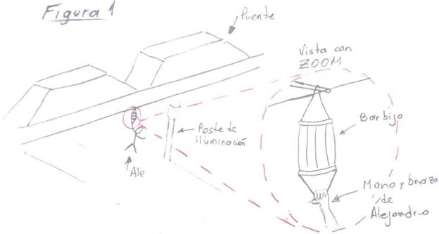
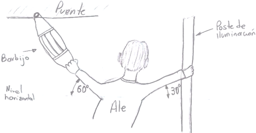
Topic: Newtonian Mechanics Metodi: Free-Body Diagram, Vector Decomposition Competenze: Physical Reasoning Objects: String Fonte: Testo (PDF) — p.7
PT32. Istituzione di istruzione San Jorge - Big Ben School Città di Santiago del Estero.
Con questa situazione, Ale si preoccupa e decide di tornare a casa per prendersi. la temperatura. Mentre attraversava un ponte, inciampò e cadette da quel ponte. così che il suo becco è rimasto attaccato a una parte della struttura. Il latte ha raggiunto prendere una delle strisce del barbecue e restare appeso a lui. (Vedi figura 1)
In queste circostanze, risponde:
60 - OAF 2020 a) Realizza un diagramma di corpo libero (gramma di forze) per il becco e per
- No, no, no, no. b) Che peso sta supportando il becco? c) Qual è la tensione che ogni striscia del tappo sopporta? (Considerate come se ogni una se fosse una sola corda rigida)
Dopo essere stato appeso per qualche secondo, si è sbalzato e ha potuto prendere con la mano destra. un palo verticale. (Vedi figura 2)
d) Con questa ultima azione, riuscirò a ridurre il peso supportato dal barbico? - In che cosa?
- Quanti?
Quando riuscì a afferrarsi con entrambi i braccia al palo, si scivolò al suolo, si sedette e Più calmo, pensò: “Usarmi il becco mi ha salvato la vita”.
Considerate g= 10 m/s2 - Massa di Alexander mA = 60 kg - Massa del barbione mb = 30 g
Topic: Newtonian Mechanics Metodi: Free-Body Diagram, Vector Decomposition Competenze: Physical Reasoning Objects: String Fonte: Testo (PDF) — p.7
PT32. The school is located in the heart of the city. The city of Santiago del Estero.
In this situation, Ale is worried and decides to run back home to get married. the temperature. On the way, as he crossed a bridge, he stumbled and fell from it. So his beak was hooked up to a part of the structure. Honey reached for Take one of the strips of the bead hanging from it. (See Figure 1)
Under these circumstances, he answers:
The Commission shall adopt delegated acts in accordance with Article 21 of this Regulation. (a) Perform a free body diagram (force diagram) for the beak and for the I’m going to milk you. (b) What weight is the beard bearing? (c) What is the stress that each strap of the bead bears? (Think of them as if each One if it were a single rigid rope)
After a few seconds hanging, he swayed and managed to take with his right hand. a vertical pole. (See Figure 2)
(d) With this last action, do I manage to reduce the weight of the beard? What? How much?
When he managed to hold both arms to the pole, he slipped to the ground, sat down and Calmer he thought, “Having my beard saved my life”.
Consider The weight of the bead shall be equal to the weight of the bead.
Topic: Newtonian Mechanics Metodi: Free-Body Diagram, Vector Decomposition Competenze: Physical Reasoning Objects: String Fonte: Testo (PDF) — p.7
PT33. Instituto de Enseñanza San Jorge - Big Ben School Ciudad de Santiago del Estero.
Pero su preocupación por el estornudo no había desaparecido así que retomó su camino a casa. Llegó raudamente a la puerta del edificio donde vive y se planteó un último desafío físico. Puso el cronómetro en cero y subió las escaleras hasta el sexto piso en un minuto.
OAF 2020- 61 Al llegar a su departamento a 10m de altura de la calle, Ale tomó un termómetro de mercurio (del tipo medicinal), lo sacudió para bajar la marca de la escala hasta 35ºC y se lo colocó en la axila para medir su temperatura corporal. Luego de un par de minutos observó el termómetro y tomó la lectura: “37ºC” y con un rápido cálculo mental pensó: “el termómetro solo absorbió de mi cuerpo 0,066 calorias” Esto le generó la suficiente tranquilidad como para ducharse y sentarse cómodamente a ver la 3ra temporada de DARK.
Según esta situación responde: a) Realiza un dibujo esquemático de la situación b) ¿Cuál es la potencia entregada por Ale para subir a su departamento? c) ¿Que masa de Mercurio contiene el termómetro? (considerando despreciable la masa del vidrio del termómetro) d) ¿Cuál era la temperatura del cuerpo de Ale antes de colocarse el termómetro? e) ¿Por qué se tranquilizó Ale?
Calor especifico del Cuerpo Humano: CeCH = 0,80 cal/g K Calor especifico del Mercurio: CeHg = 0,033 cal/g°C Calor latente de vaporización del Agua: LV-H2O = 540 cal/g Densidad del Agua: 1 g/cm3 1 cal = 4,18 J g= 10 m/s2 Considerar que tanto Ale como el mercurio de termómetro solo intercambian calor entre ellos y no con el resto de las masas con las que están en contacto.
Topic: Thermodynamics, Newtonian Mechanics Metodi: First Law of Thermodynamics, Conservation of Energy Competenze: Physical Reasoning Objects: — Fonte: Testo (PDF) — p.7
PT33. Istituzione di istruzione San Jorge - Big Ben School Città di Santiago del Estero.
Ma la sua preoccupazione per lo starnutire non era sparita , così ha ripreso il suo cammino .
- A casa. Arrivo a casa sua, si mise un’ultima volta. una sfida fisica. Ha messo il cronometro a zero e ha scalato le scale fino al sesto piano in un
- Un minuto.
OAF 2020- 61 Arrivata al suo appartamento a 10 metri di altezza, Ale prese un termometro di Il mercurio (medica) è stato scosso per abbassare il marchio di scala a 35°C e si è Lo mise sull’assile per misurare la temperatura corporea. Dopo un paio di minuti. ha osservato il termometro e ha preso la lettura: 37°C e con un rapido calcolo mentale ha pensato: Il termometro ha assorbito solo 0,066 calorie dal mio corpo. Questo gli ha dato abbastanza tranquillità da fare una doccia e sedersi comodamente a
- E’ il terzo episodio di DARK.
Secondo questa situazione, risponde: a) Sviluppa un diagramma della situazione b) Qual è la potenza fornita da Ale per salire nel suo appartamento? c) Quale massa di Mercurio contiene il termometro? (considerando dispregiata la massa del vetro del termometro) d) Qual era la temperatura del corpo di Ale prima che il termometro fosse posto? e) Perché Ale si è calmato?
Calore specifico del corpo umano: CeCH = 0,80 cal/g K Calore specifico del mercurio: CeHg = 0,033 cal/g°C Calore latente di vaporizzazione dell’acqua: LV-H2O = 540 cal/g Densità dell’acqua: 1 g/cm3 1 cal = 4,18 J g= 10 m/s2 Considerando che sia l’ale che il mercurio termometro scambiano calore solo tra loro. loro e non con le altre masse con cui sono in contatto.
Topic: Thermodynamics, Newtonian Mechanics Metodi: First Law of Thermodynamics, Conservation of Energy Competenze: Physical Reasoning Objects: — Fonte: Testo (PDF) — p.7
PT33. The school is located in the heart of the city. The city of Santiago del Estero.
But his concern for the sneezing had not disappeared so he resumed his journey. I’m going home. He came to the door of the building where he lives and he raised his last. It’s a physical challenge. He put the timer at zero and climbed the stairs to the sixth floor in a
- What?
The Commission shall adopt implementing acts in accordance with Article 21 of the Financial Regulation. Arriving at his apartment 10m up the street, Ale took a thermometer from Mercury (medicinal grade), shaken to lower the scale mark to 35°C and then He put it on his armpit to measure his body temperature. After a couple of minutes. He looked at the thermometer and took the reading: 37oC and with a quick mental calculation he thought: Thermometer only absorbed 0.066 calories from my body. This gave him enough peace to shower and sit comfortably at the table. Watch the third season of Dark.
Depending on the situation , he answers: (a) Draw a schematic picture of the situation (b) What power did Ale deliver to get up to his apartment? (c) What mass of Mercury does the thermometer contain? (considering the mass of the thermometer glass) (d) What was Ale’s body temperature before the thermometer was placed? (e) Why did Ale calm down?
Specific heat of the human body: CeCH = 0,80 cal/g K The specific heat of Mercury: CeHg = 0,033 cal/g°C The water vaporization latent heat: LV-H2O = 540 cal/g Density of water: 1 g/cm3 1 cal = 4,18 J g= 10 m/s2 Consider that both Ale and mercury thermometer only exchange heat between They are not with the rest of the masses they are in contact with.
Topic: Thermodynamics, Newtonian Mechanics Metodi: First Law of Thermodynamics, Conservation of Energy Competenze: Physical Reasoning Objects: — Fonte: Testo (PDF) — p.7
PT34. EET N° 1 Coronel Manuel Álvarez Prado San Pedro, Jujuy.
Rodrigo, mientras estudia el movimiento giratorio, observa, cómo en un plano horizontal, un disco gira a una cierta velocidad, pero, particularmente, este disco tiene un orificio que se encuentra a una cierta distancia del centro. Mientras continua realizando pruebas con el simulador, decide que un móvil, pase desde arriba hacia abajo por el orificio, de tal manera que, cuando descienda, vuelva a caer en el mismo orificio. Rodrigo, tenía clases en forma virtual, pero antes de eso, les dejó la captura que realizó en el simulador y también las siguientes cuestiones: a) ¿Qué valor tendrá la velocidad del móvil con respecto al eje vertical y al eje horizontal? b) ¿Cuál será el tiempo que tarda el móvil desde que ingresa por el orificio hasta que vuelve a caer en el mismo orificio? c) ¿Cuál será el valor de la velocidad del disco?
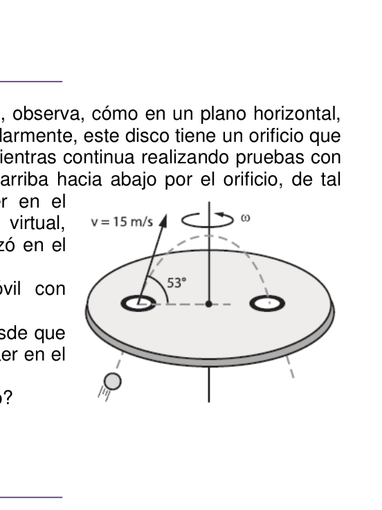
Topic: Rotational Dynamics, Newtonian Mechanics Metodi: Kinematic Equations Competenze: Physical Reasoning Objects: Disk Fonte: Testo (PDF) — p.7
PT34. EET N° 1 Colonnello Manuel Álvarez Prado San Pietro, Jujuy.
Rodrigo, mentre studia il movimento rotativo, osserva, come in un piano orizzontale, un disco gira a una certa velocità, ma, in particolare, questo disco ha un orizzonte che si trova a una certa distanza dal centro. Mentre continua a fare prove con il simulatore, decide che un cellulare, passa dall’alto verso il basso attraverso il foro, di tale tipo Così, quando scende, ricadrà nel lo stesso foro. Rodrigo, avevo lezioni virtuali. Ma prima di questo, ha lasciato loro la cattura che ha fatto nel la simulazione e anche le seguenti questioni: a) Qual è la velocità del cellulare con per quanto riguarda l’asse verticale e l’asse orizzontale? b) Quanto tempo ci vorrà dal momento che Entrerà per il foro fino a quando non cadrà di nuovo nel lo stesso foro? c) Qual è il valore della velocità del disco?
Topic: Rotational Dynamics, Newtonian Mechanics Metodi: Kinematic Equations Competenze: Physical Reasoning Objects: Disk Fonte: Testo (PDF) — p.7
PT34. The Commission has already adopted a number of proposals. St. Peter, Jujuy.
Rodrigo, as he studies the rotational motion, observes, how in a horizontal plane, A disk spins at a certain speed, but, particularly, this disk has a hole that It is a certain distance from the centre. While he continues to test with The simulator, decides that a mobile, go up and down through the hole, of such So when it comes down, it falls back into the sky. The same hole. Rodrigo, I had classes on the virtual, But before that, he left them the capture he made in the Simulator and also the following issues: (a) What is the value of the mobile speed with with regard to the vertical and horizontal axes? (b) How long will it take for the mobile phone to It goes through the hole until it falls back into the hole. The same hole? (c) What will be the value of the disk’s speed?
Topic: Rotational Dynamics, Newtonian Mechanics Metodi: Kinematic Equations Competenze: Physical Reasoning Objects: Disk Fonte: Testo (PDF) — p.7
PT35. EET N° 1 Coronel Manuel Álvarez Prado San Pedro, Jujuy.
En una ocasión, precisamente el año pasado, acompañé mi papá a la ferretería del barrio, quedé asombrada por los tipos de lámparas que había en un mostrador, y también, porque la dueña parecía tener mucho conocimiento sobre electricidad. Recuerdo que nos mostraron una lámpara de 0,4 Watts, según la dueña, esta lámpara fue diseñada para que funcione con una tensión de 2 voltios entre sus terminales. luego mi papá dijo, necesito colocar una resistencia R en paralelo con la lámpara, y a su vez, esta combinación, se debe conectar en serie con una resistencia de 3 Ω, casi al instante, la dueña le respondió, si puede funcionar, pruebe con esta batería de 3 voltios, que tiene
62 - OAF 2020 una resistencia interna de 1/3 Ω. Finalmente, mi papá le dijo que envolviera todo y se acercó por la caja para que nos cobren, en ese momento, me alejé un poco para seguir mirando hasta que mi papá dijo, Eve, ya nos vamos. Camino a casa, lo note pensativo a mi papá, luego de unos pasos, me dio el paquete con elementos, sacó una libreta que tenía en el bolsillo y anotó lo siguiente: a) Dibujar el circuito eléctrico propuesto por la vendedora (lo hizo mi papá) b) ¿Qué valor tendrá R? c) ¿Qué potencia se desarrollará en R? d) ¿Qué corriente generará la fuente en este circuito?
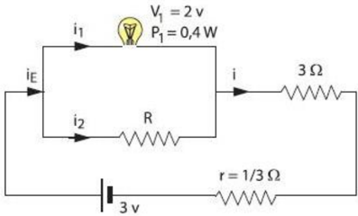
Topic: Circuits Metodi: Kirchhoff’s Laws, Equivalent Circuit Reduction Competenze: Physical Reasoning Objects: Resistor, Battery Fonte: Testo (PDF) — p.7
PT35. EET N° 1 Colonnello Manuel Álvarez Prado San Pietro, Jujuy.
Un’occasione, proprio l’anno scorso, accompagnai mio padre alla fabbrica di ferro del Quartiere, sono rimasta sorpreso dal tipo di lampade che c’erano su un banco, e Anche perché la proprietaria sembrava avere molta conoscenza dell’elettricità. Mi ricordo che ci hanno mostrato una lampada da 0,4 watt, secondo la proprietaria, questa lampada. È stato progettato per funzionare con una tensione di 2 volt tra i suoi terminali. - Poi Mio padre ha detto che devo mettere una resistenza R in parallelo alla lampada, e a sua volta, Questa combinazione, deve essere collegata in serie con una resistenza di 3 Ω, quasi istantaneamente, La proprietaria ha risposto, se può funzionare, prova con questa batteria a 3 volt, che ha
62 - OAF 2020 una resistenza interna di 1/3 Ω. Finalmente mio padre gli disse di avvolgere tutto e andare. Si avvicinò alla scatola per ricevere la nostra ricetta, in In quel momento, mi sono allontanato un po’ per continuare. Guardando fino a quando mio padre ha detto, Eve, ci hai già
- Andiamo. Vado a casa, lo nota a riflessione Mio padre, dopo qualche passo, mi ha dato il pacchetto con elementi, ha preso un libretto che Aveva in tasca e scrisse: a) Disegnare il circuito elettrico proposto
- per la venditore. - Mio padre lo ha fatto. b) Qual è il valore di R? c) Quale potenza si svilupperà in R? d) Che corrente genererà la fonte in questo circuito?
Topic: Circuits Metodi: Kirchhoff’s Laws, Equivalent Circuit Reduction Competenze: Physical Reasoning Objects: Resistor, Battery Fonte: Testo (PDF) — p.7
PT35. The Commission has already adopted a number of proposals. St. Peter, Jujuy.
On one occasion, just last year, I accompanied my father to the hardware store in the city of I was amazed at the kind of lamps that were on a counter, and Also, because the owner seemed to have a lot of knowledge about electricity. I remember they showed us a 0.4 watt lamp, according to the owner, this lamp. It was designed to operate with a voltage of 2 volts between its terminals. Then My dad said, I need to place an R resistor parallel to the lamp, and in turn, This combination, it must be connected in series with a resistance of 3 Ω, almost instantaneously, The owner said, “If it can work, try this 3-volt battery, which you have”.
The Commission shall adopt delegated acts in accordance with Article 21 of this Regulation. an internal resistance of 1/3 Ω. Finally, my dad told him to wrap everything up and go. He came over the box to get us charged, in That moment, I stepped away a little to keep going. Looking until my dad said, Eve, we’re done.
- Let’s go. - What? I’m on my way home, I’ll take a thoughtful note. My dad, after a few steps, gave me the Package with elements, he pulled out a notebook that He had this in his pocket and wrote down: (a) Draw the proposed electrical circuit By the saleswoman (my dad did it) (b) What is the value of R? (c) What power will be developed in R? (d) What current will the source generate in this circuit?
Topic: Circuits Metodi: Kirchhoff’s Laws, Equivalent Circuit Reduction Competenze: Physical Reasoning Objects: Resistor, Battery Fonte: Testo (PDF) — p.7
PT36. EET N° 1 Coronel Manuel Álvarez Prado San Pedro, Jujuy.
Un conductor que tiene una masa de 0,02 kg, tal como se muestra en la figura, está
identificado como CD, el mismo mide exactamente 30 cm de longitud y está suspendido
horizontalmente de un resorte cuya constante es
K = 20 N/m. Además, como puede observarse, el
conductor está dentro de un campo magnético
uniforme B = 0,10 Tesla. Si la corriente que pasa por
el conductor es 10 A dirigida desde “C” hacia “D”, se
pide:
a) Realizar el diagrama de cuerpo libre
b) Encontrar el valor de la fuerza del campo
magnético sobre el conductor
c) Calcular la deformación del resorte
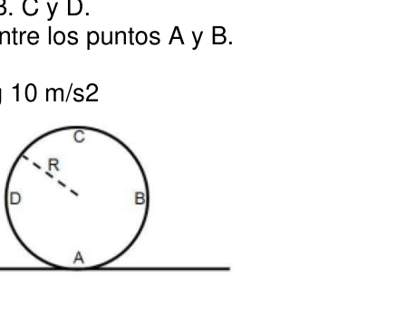
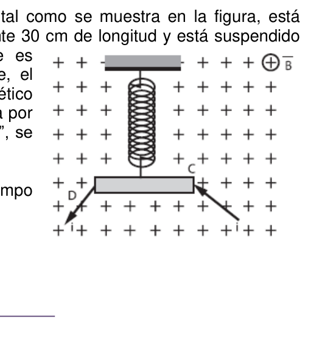
Topic: Magnetism Metodi: Lorentz Force Analysis, Hooke’s Law, Free-Body Diagram Competenze: Physical Reasoning Objects: Wire, Spring, Magnet Fonte: Testo (PDF) — p.7
PT36. EET N° 1 Colonnello Manuel Álvarez Prado San Pietro, Jujuy.
Un conducente che ha una massa di 0,02 kg, come mostrato nella figura, è identificato come CD, il suo è esattamente 30 cm di lunghezza e è sospeso orizzontale di una sorgente la cui costante è K = 20 N/m. Inoltre, come si può osservare, il Il conducente è all’interno di un campo magnetico. uniforme B = 0,10 Tesla. Se il corrente che passa attraverso il conducente è 10 A diretto da C a D, se Chiede: a) Realizzare il diagramma del corpo libero b) Trovare il valore della forza del campo Magnetico sul conducente c) Calcolare la deformazione della sorgente
Topic: Magnetism Metodi: Lorentz Force Analysis, Hooke’s Law, Free-Body Diagram Competenze: Physical Reasoning Objects: Wire, Spring, Magnet Fonte: Testo (PDF) — p.7
PT36. The Commission has already adopted a number of proposals. St. Peter, Jujuy.
A driver with a mass of 0.02 kg, as shown in the figure, is It’s a CD, it’s exactly 30 cm long and it’s suspended. horizontally of a spring whose constant is K = 20 N/m. In addition, as can be seen, the The driver is inside a magnetic field. uniform B is 0.10 Tesla. If the current passes through The driver is 10 A directed from C to D, se He asks: (a) To draw up the free body diagram (b) Find the value of the force of the field magnetic on the driver (c) Calculation of the deformation of the spring
Topic: Magnetism Metodi: Lorentz Force Analysis, Hooke’s Law, Free-Body Diagram Competenze: Physical Reasoning Objects: Wire, Spring, Magnet Fonte: Testo (PDF) — p.7
PT37. EET Agodonera Flandria Jáuregui - Luján, Buenos Aires.
La carrera de los autos locos. En la figura se muestra una pista de carreras que forma un lazo; el objetivo del juego es que los autos la recorran sin despegarse de ella. La pista circular tiene un radio de 0,5 m y una masa de 0,8 kg; la masa del auto es de 0,2 kg. Suponiendo que la pista está fija al piso, que no existe rozamiento entre el auto y la pista y que el auto ingresa a la pista con cierta velocidad: a) Grafique las fuerzas que actúan sobre el auto en los puntos A, B. C y D. b) Determine la mínima velocidad con la que el auto debe ingresar al lazo (punto A) para poder recorrer toda la pista sin despegarse de ella.
Si el auto ingresa al lazo con una velocidad de 10 m/s: c) Calcule la velocidad del auto en los puntos B. C y D. d) Calcule el impulso que se le aplica al auto entre los puntos A y B.
NOTA: considere la aceleración de la gravedad: g 10 m/s2
OAF 2020- 63
Topic: Newtonian Mechanics, Conservation of Energy Metodi: Conservation of Energy, Free-Body Diagram, Impulse-Momentum Theorem Competenze: Physical Reasoning Objects: Cart Fonte: Testo (PDF) — p.7
PT37. EET Agodonera Flandria Jáuregui - Lujan, Buenos Aires.
La corsa delle auto folle. La figura mostra un circuito di corsa che forma un lacciamento; l’obiettivo del gioco è che le auto la percorrono senza lasciarla. La pista circolare ha un raggio di 0,5 m e una massa di 0,8 kg; la massa dell’auto è di 0,2 kg. Supponiamo che la pista sia fissa sul pavimento, che non ci sia laccio tra la macchina e la pista. e che la macchina entra in pista a una certa velocità: a) Grafica le forze che agiscono sull’auto nei punti A, B. C y D. b) Determina la velocità minima con cui la macchina deve entrare nel lacciato (punto A) Per poter percorrere l’intero tracciato senza lasciarla.
Se la macchina entra in pista a una velocità di 10 m/s: c) Calcolare la velocità della macchina nei punti B. C y D. d) Calcolare la forza che viene applicata alla macchina tra i punti A e B.
NOTA: considera l’accelerazione della gravità: g 10 m/s2
OAF 2020- 63
Topic: Newtonian Mechanics, Conservation of Energy Metodi: Conservation of Energy, Free-Body Diagram, Impulse-Momentum Theorem Competenze: Physical Reasoning Objects: Cart Fonte: Testo (PDF) — p.7
PT37. EET Agodonera Flanders The following is a list of the official languages of the Republic of Moldova.
The crazy car race. The figure shows a race track forming a loop; the object of the game is I’m afraid cars are running around without getting off of it. The circular track has a radius of 0,5 m and a mass of 0,8 kg; the mass of the car is 0,2 kg. Assuming the track is fixed to the floor, there’s no friction between the car and the track. And the car enters the track at a certain speed: (a) Graph the forces acting on the car in points A, B. C y D. (b) Determine the minimum speed at which the car must enter the loop (point A) So I can go all the way across the track without taking off.
If the car enters the loop at a speed of 10 m/s: (c) Calculate the speed of the car at points B. C y D. (d) Calculate the impulse applied to the car between points A and B.
NOTE: consider the acceleration of gravity: g 10 m/s2
The following is the list of the countries of the European Union:
Topic: Newtonian Mechanics, Conservation of Energy Metodi: Conservation of Energy, Free-Body Diagram, Impulse-Momentum Theorem Competenze: Physical Reasoning Objects: Cart Fonte: Testo (PDF) — p.7
PT38. EET Agodonera Flandria Jáuregui - Luján, Buenos Aires.
Aprovechando el viento.
La energía eólica supone actualmente una fuente de energía renovable, competitiva con
otras fuentes de energía renovables e incluso con las tradicionales no renovables. El
aerogenerador transforma energía cinética del viento en energía mecánica (que se
evidencia en el giro de las palas del generador) y luego esta energía mecánica se
transforma en energía eléctrica. Es decir que tenemos una máquina, que opera en modo
generador de energía eléctrica, gracias al giro del eje del rotor del aerogenerador,
provocado por la acción del viento sobre las palas.
a) Si las aspas del generador tienen una longitud de 20m calcule cual es el área que
barren cuando giran.
b) Suponiendo que la velocidad del viento es de 30km/h calcule cuál es el volumen de
aire por unidad de tiempo que pasa a través del área circular calculada en la
consigna a).
c) Sabiendo que la densidad del aire es de 1.2kg/m calcule la potencia del viento
(energía por unidad de tiempo) que incide sobre el generador.
d) Si el generador tiene una eficiencia teórica del 48% para transformar energía
cinética del viento en energía de rotación del generador, determine la energía por
unidad de tiempo (potencia), que el generador absorbe de la energía eólica.
e) Calcule velocidad del viento en la parte posterior del generador.
f) Se denota con la letra griega i a un parámetro importante en los generadores. Su
valor corresponde a la relación que existe entre la velocidad en los extremos de las
palas y la velocidad del viento incidente. En generadores de tres palas la potencia
optima (48%) se obtiene cuando 2. vale 7. Calcule la velocidad que tiene el extremo
de las palas cuando se genera la potencia óptima.
g) Calcule la aceleración centrípeta de los extremos de las palas.
h) Calcule la velocidad angular del rotor.
Topic: Fluid Mechanics, Order-of-Magnitude Estimation Metodi: Conservation of Energy, Dimensional Analysis Competenze: Physical Reasoning, Mathematical Modeling Objects: — Fonte: Testo (PDF) — p.7
PT38. EET Agodonera Flandria Jáuregui - Lujan, Buenos Aires.
Sfruttando il vento. L’energia eolica è attualmente una fonte di energia rinnovabile, competitiva con le altre fonti di energia rinnovabili e anche con le tradizionali non rinnovabili. El Il motore aereo trasforma l’energia cinetica del vento in energia meccanica (che si
- E poi questa energia meccanica viene si trasforma in energia elettrica. Cioè, abbiamo una macchina, che opera in modo generatore di energia elettrica, grazie al giro dell’asse del rotore del generatore aereo, provocato dall’azione del vento sulle pale. a) Se le foglie del generatore hanno una lunghezza di 20 m calcola quale è l’area che Spegni quando si gira. b) Supponiamo che la velocità del vento sia di 30 km/h calcoli il volume di aria per unità di tempo che passa attraverso l’area circolare calcolata in il punto a). c) Sapendo che la densità dell’aria è di 1,2 kg/m calcola la potenza del vento (energia per unità di tempo) che incide sul generatore. d) Se il generatore ha un’efficienza teorica del 48% per trasformare l’energia La kinetica del vento in energia di rotazione del generatore, determina l’energia per unità di tempo (potenza) che il generatore assorbe dall’energia eolica. e) Calcolare la velocità del vento nella parte posteriore del generatore. f) Indicare con la lettera greca i un parametro importante nei generatori. Su Il valore corrisponde al rapporto esistente tra velocità alle estremità delle le pale e la velocità del vento incidente. In tre generatori a sciapola la potenza L’ottimale (48%) si ottiene quando 2. vale 7. Calcola la velocità che ha l’estremità di copertura delle pale quando si genera la potenza ottimale. g) Calcolare l’accelerazione centripeta delle estremità delle palle. h) Calcolare la velocità angolare del rotore.
Topic: Fluid Mechanics, Order-of-Magnitude Estimation Metodi: Conservation of Energy, Dimensional Analysis Competenze: Physical Reasoning, Mathematical Modeling Objects: — Fonte: Testo (PDF) — p.7
PT38. EET Agodonera Flanders The following is a list of the official languages of the Republic of Moldova.
Taking advantage of the wind. Wind power is now a renewable energy source, competitive with other renewable energy sources and even with traditional non-renewable energy sources. El The wind turbine converts kinetic energy from wind to mechanical energy (which is evidence in the spin of the generator blade) and then this mechanical energy is It turns into electrical energy. So we have a machine, which operates in mode. electric power generator, by rotating the rotor axis of the wind turbine, Caused by the wind action on the shovels. (a) If the generator pins are 20 m long, calculate the area that is They sweep when they turn. (b) Assuming the wind speed is 30km/h, calculate the volume of the wind. Air per unit of time passing through the circular area calculated in the the following point (a): (c) Knowing that the density of air is 1.2 kg/m calculate the wind power (energy per unit of time) that affects the generator. (d) If the generator has a theoretical efficiency of 48% for transforming energy The wind kinetics in the generator rotation energy, determine the energy by unit of time (power) absorbed by the generator from wind energy. (e) Calculate wind speed at the back of the generator. (f) A significant parameter in generators is denoted by the Greek letter i. Su The value corresponds to the ratio between the speed at the ends of the shovels and incident wind speed. In three-blade generators power The optimum (48%) is obtained when 2. It’s seven. Calculate the speed of the end . The shovel is used to generate the optimum power. (g) Calculate the centrifugal acceleration of the ends of the shovels. (h) Calculate the angular velocity of the rotor.
Topic: Fluid Mechanics, Order-of-Magnitude Estimation Metodi: Conservation of Energy, Dimensional Analysis Competenze: Physical Reasoning, Mathematical Modeling Objects: — Fonte: Testo (PDF) — p.7
PT39. EET Agodonera Flandria Jáuregui - Luján, Buenos Aires.
Probando Neumáticos. Una rueda de automóvil es expuesta a una serie de experimentos, con el fin de estudiar sus propiedades dinámicas. Uno de estos experimentos está representado en la figura adjunta. Mediante un sistema mecánico adecuado la rueda se hace girar desde el reposo hasta una velocidad angular final 2, en sentido anti-horario (vista de frente). Con un sistema de palancas se puede apoyar (y separar la rueda en movimiento sobre una superficie plana, la cual permanece siempre en reposo. La máxima fuerza normal, N, que puede ejercer el neumático sobre la superficie es 2500 N. El coeficiente de rozamiento dinámico, coeficiente dinámico entre la rueda y la superficie puede variar en el rango 0,055 (simulando el caso en que la superficie plana es hielo) hasta 0,8 (para el caso en que la superficie plana simula pavimento seco). Por efecto del rozamiento entre la rueda y la superficie, aquella se detiene tras un tiempo At, después de apoyarse sobre la superficie.
64 - OAF 2020 Suponiendo que las dimensiones de la rueda son las detalladas en la Tabla 1, que la fuerza normal N es la máxima, que corresponde a una velocidad lineal de 120km/h y que él, coeficiente dinámico = 0,4.
a) Indique dirección, sentido y módulo de la fuerza de rozamiento.
b) Calcule la energía total disipada por rozamiento, desde que la rueda se pone en
contacto con la superficie plana, hasta que se detiene.
c) Calcule el tiempo que tarda en frenar la rueda.
d) Calcule el número de vueltas que da la rueda antes de detenerse y la distancia de
frenado teniendo en cuenta solo el rozamiento entre el neumático y la superficie (es
decir, sin la asistencia de un sistema de frenos).
e) Calcule el número de moles de aire contenidos dentro del neumático. Considere
que el aire con el que se rellena el neumático se comporta como un gas ideal.
Suponga que la rueda se infló hasta una presión de 245 kPa, a una temperatura
ambiente igual a T=293 K. Las dimensiones de la llanta son las que se indican en la
tabla 1. (constante de los gases R = 8.31 J/(mol K))
f) Suponiendo que toda la energía disipada por el rozamiento entre el neumático y la
superficie plana, calculada en el punto c), genera el calentamiento de la rueda
(neumático y llanta) y del aire que contiene, determine el cambio de temperatura del
aire.
Considere que:
- el volumen del neumático se mantiene constante
- la rueda y el gas están siempre en equilibrio térmico
- el calor especifico del aire a volumen constante es C, = 717,7 JK kg
- la densidad media del aire es 1.19 Kg/m
- la masa de la rueda es M14,2 kg
- la capacidad calorífica especifica media de la rueda es C= 1000 J/K kg.
g) Calcule el incremento de presión del aire dentro del neumático d incremento de la temperatura calculada en el punto anterior. h) Determine la máxima velocidad angular, con la que se puede r el ensayo a la rueda sin que explote, teniendo presente que la máxima presión que soporta el neumático es 392 kPa.
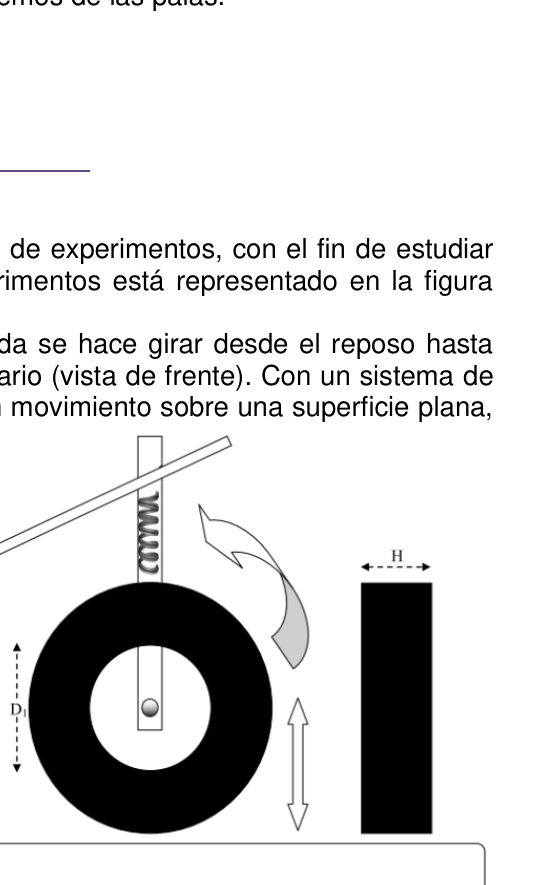
Topic: Rotational Dynamics Metodi: Torque & Angular Momentum Analysis, Free-Body Diagram Competenze: Physical Reasoning Objects: Wheel Fonte: Testo (PDF) — p.7
PT39. EET Agodonera Flandria Jáuregui - Lujan, Buenos Aires.
Provando pneumatici. Una ruota di auto viene esposta a una serie di esperimenti, per studiare le sue proprietà dinamiche. Uno di questi esperimenti è rappresentato nella figura
- Il suo nome è il suo nome. Con un sistema meccanico adeguato la ruota viene girata dal riposo fino al una velocità angolare finale 2, in senso antiorario (visto di fronte). Con un sistema di Le palanche possono essere appoggiate (e separare la ruota in movimento su una superficie piana, che rimane sempre in riposo. La massima forza normale, N, che può esercitare la gomma sulla superficie è di 2500 N. Il coefficiente di Raggiustamento
- dinamica, Coefficiente dinamica tra la ruota e la superficie può variare nella gamma 0,055 (simulando) el caso en che la superficie piana è ghiaccio) fino a 0,8 (per il caso in cui la superficie (Plana simula pavimentazione secca). Per effetto del ruggine tra la ruota e la superficie, quella si ferma dietro. un tempo At, dopo aver appoggiato sulla superficie.
64 - OAF 2020 Supponendo che le dimensioni della ruota siano quelle dettagliate in Tabella 1, che La forza normale N è la massima, corrispondente a una velocità lineare di 120 km/h e che lui, coefficiente dinamico = 0,4.
a) Indicare la direzione, il senso e il modulo della forza di rottura. b) Calcolare l’energia totale dissipata da ruggine, da quando la ruota viene messa in contatto con la superficie piatta, fino a quando non si ferma. c) Calcolare il tempo necessario per frenare la ruota. d) Calcolare il numero di giri che la ruota fa prima di fermarsi e la distanza da frenata tenendo conto solo del ruggine tra la gomma e la superficie (es In altre parole, non è possibile che il sistema di frenatura sia assistibile. e) Calcolare il numero di molli d’aria contenuti all’interno della gomma. Considerate che l’aria che riempie la gomma si comporta come un gas ideale. Supponiamo che la ruota si sia gonfiata a una pressione di 245 kPa, a una temperatura ambiente pari a T=293 K. Le dimensioni della gomma sono quelle indicate nella tabella 1. (constante dei gas R = 8,31 J/(mol K)) f) Supponendo che l’energia totale dissipata dal ruggine tra la gomma e la superficie piana, calcolata al punto c), genera il riscaldamento della ruota (pneumatico e pneumatico) e dell’aria contenuta, determinare il cambiamento di temperatura del aria.
Considera che:
- il volume della gomma è mantenuto costante
- la ruota e il gas sono sempre in equilibrio termico
- il calore specifico dell’aria a volume costante è di C, = 717,7 JK kg
- la densità media dell’aria è di 1,19 Kg/m
- la massa della ruota è M14,2 kg
- la capacità calorifica specifica media della ruota è C= 1000 J/K kg.
g) Calcolare l’aumento della pressione dell’aria all’interno del pneumatico temperatura calcolata al punto precedente. h) Determina la velocità angolare massima con cui si può eseguire il test sulla ruota senza esplosione, tenendo presente che la massima pressione che la gomma sopporta è 392 kPa.
Topic: Rotational Dynamics Metodi: Torque & Angular Momentum Analysis, Free-Body Diagram Competenze: Physical Reasoning Objects: Wheel Fonte: Testo (PDF) — p.7
PT39. EET Agodonera Flanders The following is a list of the official languages of the Republic of Moldova.
Trying on the pneumatics. A car wheel is exposed to a series of experiments, in order to study the dynamic properties of the material. One of these experiments is shown in the figure
- The second one. The wheel is rotated from rest to rest by a suitable mechanical system. a final angular velocity of 2, in the anti-clockwise direction (front view). With a system of Levers can be supported (and separate the moving wheel on a flat surface, which is always at rest. Maximum normal force, N, which You can apply the tyre over the surface area is 2500 N. The coefficient of Rusting The Commission shall adopt delegated acts in accordance with Article 21 of this Regulation. Coefficient dynamic between wheel and surface may vary in the range of 0,055 (simultaneously) el case en That la flat surface is ice) up to 0.8 (for the case where the surface flat flat is simulated dry pavement). By effect of friction between the wheel and The surface, that stops behind. A while at, after leaning on the surface.
The Commission shall adopt delegated acts in accordance with Article 21 of this Regulation. Assuming the dimensions of the wheel are those detailed in Table 1, the Normal force N is the maximum, which corresponds to a linear speed of 120km/h and which the dynamic coefficient is 0.4.
(a) Indicate the direction, direction and modulus of the friction force. (b) Calculate the total energy dissipated by friction, since the wheel is set at contact with the flat surface, until it stops. (c) Calculate the time it takes to brake the wheel. (d) Calculate the number of turns the wheel makes before stopping and the distance from Braking taking into account only the friction between the tyre and the surface (e.g. This is the case with the brake system. (e) Calculate the number of air springs contained within the tyre. Consider The air that fills the tire behaves like an ideal gas. Suppose the wheel was inflated to a pressure of 245 kPa, at a temperature. environment equal to T=293 K. The dimensions of the tyre are those indicated in the the following table is added: (gas constant R = 8.31 J/(mol K)) (f) Assuming that all energy dissipated by friction between the tyre and the flat surface, calculated in point (c), generates the wheel’s heating (pneumatic and tyre) and the air it contains, determines the temperature change of the Air.
Consider that:
- tyre volume is kept constant
- the wheel and the gas are always in thermal equilibrium
- the specific heat of the air at constant volume is C, = 717.7 JK kg
- the average air density is 1.19 Kg/m
- the mass of the wheel is M14,2 kg
- the average specific heat capacity of the wheel is C= 1000 J/K kg.
(g) Calculate the increase in air pressure inside the tyre temperature calculated at the previous point. (h) Determine the maximum angular speed at which the test can be done on the wheel without exploding, taking into account the maximum tyre pressure It’s 392 kPa.
Topic: Rotational Dynamics Metodi: Torque & Angular Momentum Analysis, Free-Body Diagram Competenze: Physical Reasoning Objects: Wheel Fonte: Testo (PDF) — p.7
PT40. Instituto Técnico Renault Ciudad de Córdoba.
Se tienen dos resortes idénticos y un objeto de 150g, dispuestos como muestra la figura. Se comprime 4cm al resorte de la izquierda y se impulsa al objeto hacia el otro resorte. Entre ambos hay una superficie con rozamiento de 3m de longitud, donde el coeficiente de rozamiento entre el piso y el objeto es de 0.8.
OAF 2020- 65 Se pide: a) Encontrar el valor de la constante elástica de los resortes, sabiendo que el resorte de la derecha detiene al objeto y se comprime la mitad que el otro. b) Suponiendo que el resorte de la derecha, el que detiene al cuerpo, luego lo impulsa y por efecto de la torsión de las espiras se disipa un 10% de la energía en el proceso de compresión y expansión. ¿llegará al otro resorte luego de la expansión? Justifique su respuesta. c) En el caso de no llegar, ¿Dónde se detiene? (respecto al resorte de la izquierda)
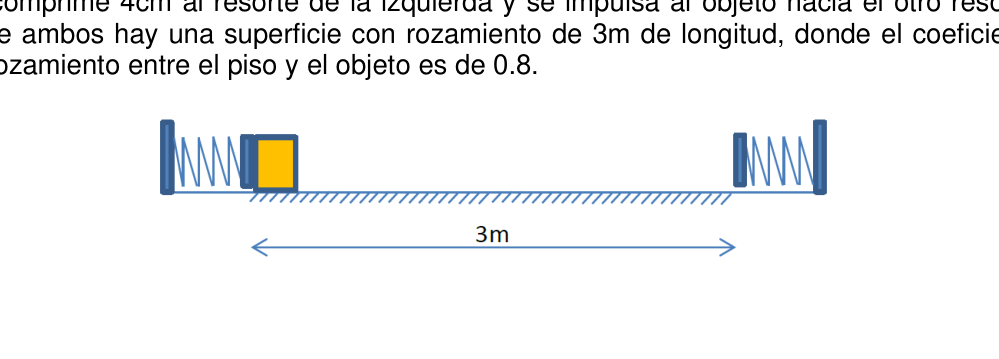
Topic: Conservation of Energy Metodi: Conservation of Energy, Hooke’s Law Competenze: Physical Reasoning Objects: Spring, Block Fonte: Testo (PDF) — p.7
PT40. Renault Technical Institute Città di Córdoba.
Sono presenti due sorgenti identiche e un oggetto di 150 g, disposti come mostrato nella figura. Si comprimono 4 cm alla primavera sinistra e si spinge l’oggetto verso l’altra primavera. Tra i due si trova una superficie a 3 m di lunghezza, dove il coefficiente di rottura tra il pavimento e l’oggetto è di 0,8.
OAF 2020- 65 Si chiede: a) Trovare il valore della costante elastica delle sorgenti, sapendo che la sorgente La destra si ferma l’oggetto e si comprime metà dell’altra. b) Supponendo che la primavera di destra, che ferma il corpo, poi lo spinge e con l’effetto della torsione delle spirale si dissipa un 10% dell’energia nel processo di compressione e espansione. Arriverà all’altra sorgente dopo l’espansione? giustifica la tua risposta. c) Se non arrivi, dove ti fermi? (Ricordo la primavera della sinistra)
Topic: Conservation of Energy Metodi: Conservation of Energy, Hooke’s Law Competenze: Physical Reasoning Objects: Spring, Block Fonte: Testo (PDF) — p.7
PT40. The Renault Technical Institute The city of Cordoba.
Two identical springs and an object of 150 g are arranged as shown in the figure. It compresses 4cm to the left spring and pushes the object to the other spring. Between the two is a 3m long rubbed surface, where the coefficient The friction between the floor and the object is 0.8.
The Commission shall adopt implementing acts in accordance with Article 21 of the Financial Regulation. It asks: (a) Find the value of the spring elastic constant, knowing that the spring The right side of the object is stopped and compressed half as the other. (b) Assuming the right spring, which stops the body, then pushes it and by the torsion of the spirals 10% of the energy in the The process of compression and expansion. Will it reach the other spring after the expansion? Justify your answer. (c) If you do not arrive, where do you stop? (Regarding the spring on the left)
Topic: Conservation of Energy Metodi: Conservation of Energy, Hooke’s Law Competenze: Physical Reasoning Objects: Spring, Block Fonte: Testo (PDF) — p.7
PT41. Instituto Técnico Renault Ciudad de Córdoba.
Un atleta olímpico se especializa en la disciplina del lanzamiento del martillo. Su record es de 80m. sabiendo que realiza un lanzamiento óptimo (con el ángulo necesario para lograr el máximo alcance) y realiza 5.25 vueltas, Determinar:
a) ¿Cuál es el ángulo de lanzamiento
óptimo?
(justifique
su
respuesta
matemáticamente).
b) ¿Cuál es al valor de la velocidad inicial del martillo?, y ¿Cuál es el vector velocidad?
c) Suponiendo que el martillo rota con un movimiento circular con un radio de 1.1m,
que el movimiento inicia del reposo y se desarrolla uniformemente, ¿Cuál será el
valor de la aceleración angular?
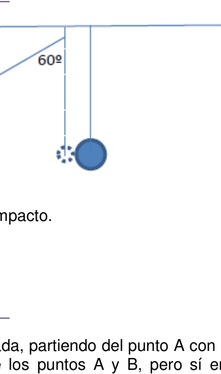
Topic: Newtonian Mechanics, Rotational Dynamics Metodi: Kinematic Equations, Vector Decomposition Competenze: Physical Reasoning Objects: Projectile Fonte: Testo (PDF) — p.7
PT41. Renault Technical Institute Città di Córdoba.
Un atleta olimpico si specializza nella disciplina del lancio del martello. Su Il record è di 80 metri. sapendo che realizza un ottimale lancio (con l’angolo necessario Per raggiungere il massimo raggiungimento) e raggiunge il 5.25 Rondate, Determina:
a) Qual è l’angolo di lancio ottimale? (Justificare) su Risposta matematicamente). b) Qual è il valore della velocità iniziale del martello? c) Supponendo che il martello si rotta in un movimento circolare con un raggio di 1,1 m, che il movimento inizia dal riposo e si sviluppa uniformemente, quale sarà il Valore dell’accelerazione angolare?
Topic: Newtonian Mechanics, Rotational Dynamics Metodi: Kinematic Equations, Vector Decomposition Competenze: Physical Reasoning Objects: Projectile Fonte: Testo (PDF) — p.7
PT41. The Renault Technical Institute The city of Cordoba.
An Olympic athlete specializes in the sport of The discipline of hammer throwing. Su The record is 80m. Knowing you’re doing a job. Optimal pitch (at the required angle The Commission has also adopted a proposal for a regulation on the Turn, Determine:
(a) What is the angle of launch
- What’s the best? (Justify su Answer mathematically). (b) What is the value of the initial speed of the hammer, and what is the velocity vector? (c) Assuming that the hammer is rotated with a circular motion with a radius of 1.1 m, If the movement starts from rest and develops uniformly, what will the the value of the angular acceleration?
Topic: Newtonian Mechanics, Rotational Dynamics Metodi: Kinematic Equations, Vector Decomposition Competenze: Physical Reasoning Objects: Projectile Fonte: Testo (PDF) — p.7
PT42. Instituto Técnico Renault Ciudad de Córdoba.
Una esfera de acero de 2.5 cm de diámetro pende de un hilo de 1m, e impacta a otra de 5cm de diámetro, como muestra la figura. Suponiendo que el impacto es perfectamente elástico, y que el ángulo Encontrar:
Nota: ρacero= 7850Kg/m3 a) Vector velocidad de ambas esferas antes del impacto. b) Vector velocidad de ambas esferas después del impacto. c) Ángulo de elevación final de cada esfera.
Topic: Conservation of Momentum, Conservation of Energy Metodi: Conservation of Momentum, Conservation of Energy Competenze: Physical Reasoning Objects: Pendulum, Sphere, String Fonte: Testo (PDF) — p.7
PT42. Renault Technical Institute Città di Córdoba.
Una sfera di acciaio di 2,5 cm di diametro Appendici a un filo di 1 metro, e colpisce un altro. di 5 cm di diametro, come mostrato dal
- Figura. Supponiamo che l’impatto sia perfettamente elastica, e che l’angolo Trovare:
Nota: ρacciaio= 7850Kg/m3 a) Vettore velocità di entrambe le sfere prima dell’impatto. b) Vettore velocità di entrambe le sfere dopo l’impatto. c) Angolo di elevazione finale di ciascuna sfera.
Topic: Conservation of Momentum, Conservation of Energy Metodi: Conservation of Momentum, Conservation of Energy Competenze: Physical Reasoning Objects: Pendulum, Sphere, String Fonte: Testo (PDF) — p.7
PT42. The Renault Technical Institute The city of Cordoba.
A steel ball with a diameter of 2.5 cm Hanging from a 1m thread, and impacting another. 5 cm in diameter, as shown in the figure It’s a figure. Assuming the impact is perfectly elastic, and that angle Find:
Note: ρ steel = 7850Kg/m3 (a) Speed vector of both spheres before the impact. (b) Vector velocity of both spheres after impact. (c) The final elevation angle of each sphere.
Topic: Conservation of Momentum, Conservation of Energy Metodi: Conservation of Momentum, Conservation of Energy Competenze: Physical Reasoning Objects: Pendulum, Sphere, String Fonte: Testo (PDF) — p.7
PT43. Escuela Normal Superior N° 6 Aristóbulo del Valle, Misiones.
Una piedra de 15 kg baja deslizándose una colina nevada, partiendo del punto A con una rapidez de 10 m/s. No hay fricción en la colina entre los puntos A y B, pero sí en el terreno plano en la base, entre B y la pared. Después de entrar en la región áspera, la piedra recorre 100 m y choca con un resorte muy largo y ligero, cuya constante de fuerza es de 2 N/ m. Los coeficientes de fricción cinética y estática entre la piedra y el suelo horizontal son de 0,20 y 0,80, respectivamente.
66 - OAF 2020
a) ¿Cuál es la energía mecánica de la piedra en el
punto A, respecto a la base de la colina?
b) ¿Cuál es la energía potencial de la piedra en el
punto A, respecto a la base de la colina?
c) ¿Qué rapidez tiene la piedra al llegar al punto B?
d) ¿Cuál es la energía mecánica después de los 100
m y justo antes de que el resorte se comprima?
e) ¿Qué distancia comprimirá la piedra al resorte?
f) ¿La piedra se moverá otra vez después de haber sido detenida por el resorte?
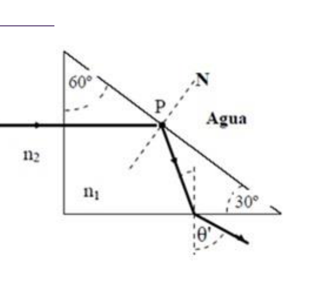
Topic: Conservation of Energy Metodi: Conservation of Energy, Hooke’s Law Competenze: Physical Reasoning Objects: Spring, Inclined Plane Fonte: Testo (PDF) — p.7
PT43. Scuola Normale Superiore N° 6 Aristobulo della Valle, Missioni.
Una pietra di 15 kg scende scivolando su una collina nevosa, partendo dal punto A con una velocità di 10 m/s. Non c’è friczione sulla collina tra i punti A e B, ma si, sul terreno piatto alla base, tra B e il muro. Dopo essere entrata nella regione aspra, la La pietra percorre 100 metri e colpisce una sorgente molto lunga e leggera, la cui costante forza es de 2 N/ m. I coefficienti di attrito cinetico e statico tra la pietra e il suolo I valori orizzontali sono di 0,20 e 0,80, rispettivamente.
66 - OAF 2020 a) Qual è l’energia meccanica della pietra nel punto A, riguardo alla base della collina? b) Qual è l’energia potenziale della pietra nel punto A, riguardo alla base della collina? c) Che velocità ha la pietra per raggiungere il punto B? d) Qual è l’energia meccanica dopo 100? e appena prima che la primavera si compresse? e) Che distanza comprima la pietra dalla primavera? f) La pietra si muoverà di nuovo dopo essere stata fermata dalla primavera?
Topic: Conservation of Energy Metodi: Conservation of Energy, Hooke’s Law Competenze: Physical Reasoning Objects: Spring, Inclined Plane Fonte: Testo (PDF) — p.7
PT43. Higher secondary school N° 6 Aristobulus of the Valley, Missions.
A 15kg stone is dropping off a snow-capped hill, starting from point A with a speed of 10 m/s. There’s no friction on the hill between points A and B, but there is on the flat ground at the base, between B and the wall. After entering the rough region, the stone travels 100 m and collides with a very long and light spring, whose constant strength es de 2 N/ m. The kinetic and static friction coefficients between the stone and the ground horizontal are 0,20 and 0,80, respectively.
The Commission shall adopt delegated acts in accordance with Article 21 of this Regulation. (a) What is the mechanical energy of the stone in the Point A, regarding the base of the hill? (b) What is the potential energy of the stone in the Point A, regarding the base of the hill? (c) How fast does the stone go to point B? (d) What is the mechanical energy after 100? m and just before the spring is compressed? (e) How far will the stone compress to the spring? (f) Will the stone move again after being stopped by the spring?
Topic: Conservation of Energy Metodi: Conservation of Energy, Hooke’s Law Competenze: Physical Reasoning Objects: Spring, Inclined Plane Fonte: Testo (PDF) — p.7
PT44. Escuela Normal Superior N° 6 Aristóbulo del Valle, Misiones.
Una bala de plomo de 0,030 kg golpea un plato de acero; ambos están inicialmente a 20°C. La bala se funde completamente. a) ¿Cuánto calor se requiere para que la bala de plomo cambie su temperatura de 20 °C a su punto de fusión? b) ¿Qué cantidad de calor se necesita en el cambio de fase de la bala? c) ¿Cuál fue la cantidad de calor total que se requirió para la baja se funda completamente? d) Suponiendo que el 80% de la energía cinética de la bala se convierte en calor para fundirla. ¿cuál será la rapidez mínima que debe llevar para fundirse en el impacto?
Punto de fusión del plomo: 328 °C Calor latente del plomo: 0,25.105 J kg Calor específico del plomo: 130 J kg.°C
Topic: Thermodynamics, Conservation of Energy Metodi: First Law of Thermodynamics, Conservation of Energy Competenze: Physical Reasoning Objects: Projectile Fonte: Testo (PDF) — p.7
PT44. Scuola Normale Superiore N° 6 Aristobulo della Valle, Missioni.
Una pallottola di piombo di 0,030 kg colpisce un piatto di acciaio; entrambi sono inizialmente a 20°C. La pallottola si fonde completamente. a) Quanto calore è necessario per cambiare la temperatura della pallina di piombo di 20 C al suo punto di fusione? b) Quanta calore è necessario per cambiare la fase della pallottola? c) Qual è stata la quantità di calore totale richiesta per il calore di fondazione?
- Completamente? d) Supponendo che l’80% dell’energia cinetica della pallina si trasformi in calore per fondere. Qual è la velocità minima che deve essere necessaria per fondere nell’impatto?
Punto di fusione del piombo: 328 °C Calore latente del piombo: 0,25.105 J kg Calore specifico del piombo: 130 J kg.°C
Topic: Thermodynamics, Conservation of Energy Metodi: First Law of Thermodynamics, Conservation of Energy Competenze: Physical Reasoning Objects: Projectile Fonte: Testo (PDF) — p.7
PT44. Higher secondary school N° 6 Aristobulus of the Valley, Missions.
A 0.030 kg lead bullet hits a steel plate; both are initially at 20°C. The bullet melts completely. (a) How much heat is required for the lead bullet to change its temperature by 20 °C at its melting point? (b) How much heat is needed in the change of phase of the bullet? (c) What was the total amount of heat required for the descent to melt? completely? (d) Assuming that 80% of the kinetic energy of the bullet is converted to heat for I’m going to melt it down. What is the minimum speed it must take to melt into the impact?
Lead melting point: 328 °C The lead latent heat: 0,25.105 J kg Lead specific heat: 130 J kg.°C
Topic: Thermodynamics, Conservation of Energy Metodi: First Law of Thermodynamics, Conservation of Energy Competenze: Physical Reasoning Objects: Projectile Fonte: Testo (PDF) — p.7
PT45. Escuela Normal Superior N° 6 Aristóbulo del Valle, Misiones.
Un rayo de luz incide de manera normal en una de las caras de un bloque de 30º-60º-90º de cristal de roca (n = 1,66) que está inmerso en agua como muestra la figura.
a) Determina el ángulo de salida θ’.
b) Se disuelve una sustancia en el agua
para aumentar el índice de refracción.
¿En qué valor de n2 deja de haber
reflexión total interna en el punto P?
n agua = 1,33
n cristal de roca = 1,66
Topic: Geometric Optics Metodi: Snell’s Law Competenze: Physical Reasoning Objects: Prism Fonte: Testo (PDF) — p.7
PT45. Scuola Normale Superiore N° 6 Aristobulo della Valle, Missioni.
Un raggio di luce colpisce normalmente una delle facce di un blocco di 30o-60o-90o di cristallo di roccia (n = 1,66) che è immerso in acqua come mostra la figura.
a) Determina l’angolo di uscita θ’. b) Soluzione di una sostanza in acqua per aumentare il tasso di refraczione. In che valore di n2 non c’è più? riflessione totale interna al punto P? n acqua = 1,33 n cristallo di roccia = 1,66
Topic: Geometric Optics Metodi: Snell’s Law Competenze: Physical Reasoning Objects: Prism Fonte: Testo (PDF) — p.7
PT45. Higher secondary school N° 6 Aristobulus of the Valley, Missions.
A beam of light normally affects the One of the faces of a block of 30°-60°-90° of rock crystal (n = 1,66) which is immersed In water, as shown in the figure.
(a) Determine the exit angle θ’. (b) Dissolve a substance in water to increase the refractive index. What value of n2 does it stop being? total internal reflection at point P? n water = 1.33 n rock crystal = 1,66
Topic: Geometric Optics Metodi: Snell’s Law Competenze: Physical Reasoning Objects: Prism Fonte: Testo (PDF) — p.7
PT46. Instituto Privado Industrial Luis A. Huergo Ciudad Autónoma de Buenos Aires.
Se lanza una caja de 400 g que se encontraba en reposo sobre un plano inclinado 30º usando un resorte de constante k=750 N.m-1. Se comprime el resorte 15 cm y se suelta la caja, que se encuentra a 45 cm de altura sobre el suelo cuando el resorte está comprimido tal como se muestra en la figura. La caja describe el bucle ABCDEF, como se ve en la Figura 1. El radio de la trayectoria circular BCDEB es de 50 cm y en esa
OAF 2020- 67 trayectoria se desprecia el rozamiento. Sabiendo que el coeficiente de rozamiento en los planos horizontal BF e inclinado AB es 0.2,
a) Determinar la velocidad de la caja en las posiciones B (parte más baja de la
trayectoria circular), y D (parte más alta de la trayectoria circular).
b) La máxima distancia d que recorre hasta que se para en F.
c) La fuerza normal en las posiciones A, B, D y F.
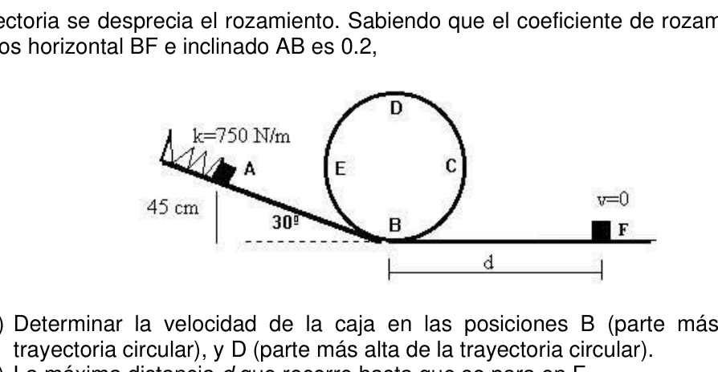
Topic: Conservation of Energy Metodi: Conservation of Energy, Hooke’s Law, Free-Body Diagram Competenze: Physical Reasoning Objects: Spring, Block, Inclined Plane Fonte: Testo (PDF) — p.7
PT46. Istituto privato industriale Luis A. - Hoorgo Città autonoma di Buenos Aires.
Si lancia una scatola di 400 g che si trovava a riposo su un piano inclinato di 30°. usando una sorgente di costante k=750 N.m-1. Si comprime il molle di 15 cm e si rilascia la cassa, che si trova a 45 cm di altezza sul suolo quando la primavera è compressa come mostrato nella figura. La casella descrive il loop ABCDEF, come si si vede nella Figura 1. Il raggio di rotta circolare BCDEB è di 50 cm e in quella
OAF 2020- 67 La traccia disprezza il ruggine. Sapendo che il coefficiente di rottura nei pianoni orizzontali BF e inclinato AB è 0,2,
a) Determina la velocità della cassa nelle posizioni B (parte inferiore della La parte più alta della rotta circolare (D) b) La distanza massima d da raggiungere fino a quando si ferma a F. c) Forza normale nelle posizioni A, B, D e F.
Topic: Conservation of Energy Metodi: Conservation of Energy, Hooke’s Law, Free-Body Diagram Competenze: Physical Reasoning Objects: Spring, Block, Inclined Plane Fonte: Testo (PDF) — p.7
PT46. The following is the list of the institutions of the European Union: I ‘m not . The Autonomous City of Buenos Aires.
A 400 g box is thrown in which it rested on a 30° slope. using a spring of constant k=750 N.m-1. The spring is compressed 15 cm and the spring is released Box, which is 45 cm above the ground when the spring is tablets as shown in Figure 1. The box describes the ABCDEF loop as See Figure 1 here. The radius of the BCDEB circular path is 50 cm and at that
The Commission shall adopt implementing acts in accordance with Article 21 of the Financial Regulation. The path is to despise the gnawing. Knowing that the coefficient of friction in the horizontal planes BF and slanted AB is 0.2,
(a) Determine the speed of the box at positions B (lower part of the The total number of vehicles in the total vehicle transportation period is approximately EUR 7000. (b) The maximum distance d travelled until it stops at F. (c) The normal force in positions A, B, D and F.
Topic: Conservation of Energy Metodi: Conservation of Energy, Hooke’s Law, Free-Body Diagram Competenze: Physical Reasoning Objects: Spring, Block, Inclined Plane Fonte: Testo (PDF) — p.7
PT47. Instituto Privado Industrial Luis A. Huergo Ciudad Autónoma de Buenos Aires.
Leonardo vendió un anillo de 10 g que dijo contenía 9,5 g de oro y 0,5 g de cobre. Para comprobar su composición, usted piensa un experimento aplicando los conceptos de calorimetría. Primero piensa en calentar el anillo a 500 °C e introducirlo a un calorímetro adiabático con agua, cuya capacidad calorífica total es 100 cal / °C y cuya temperatura inicial es 20 °C.
a) Haga los cálculos para determinar la temperatura de equilibrio suponiendo que la composición que dijo Leonardo es correcta.
Finalmente hace el experimento y la temperatura de equilibrio resulta ser de 22°C. b) ¿Leonardo decía la verdad? En caso contrario, determine la verdadera composición del anillo.
Aprovechando el experimento, decide jugar un rato con el calorímetro y el anillo.
c) Coloca un cubo de hielo de 15 gramos en el calorímetro con agua de modo que
están en equilibrio. ¿Cuál es la temperatura mínima a la que debería colocar el
anillo para que todo el hielo se derrita? ¿Es posible?
Y ahora complejiza el asunto. Coloca en el calorímetro una resistencia y la conecta a una fuente cuya potencia máxima es 80 W. Coloca 15 gramos de hielo a -17° (recién salido del freezer) en el calorímetro que ya contenía 250 ml de agua a 40°C. d) ¿Cuánto tiempo debe mantener la fuente encendida para que este sistema llegue a 85°C y así poder hacerse un té?
Datos Calor específico del oro: 0,031 cal. g-1 .°C-1 Calor específico del cobre: 0,093 cal. g-1 .°C-1 Temperatura de fusión del cobre: 1085 °C Temperatura de fusión del oro: 1,064°C Calor específico del agua: 1 cal. g-1 .°C-1 Calor específico del hielo: 0,5 cal. g-1 .°C-1 Calor latente de fusión del hielo: 80 cal . g-1 1 cal = 4,184 Joules
68 - OAF 2020
Topic: Thermodynamics Metodi: First Law of Thermodynamics Competenze: Physical Reasoning Objects: Calorimeter Fonte: Testo (PDF) — p.7
PT47. Istituto privato industriale Luis A. - Hoorgo Città autonoma di Buenos Aires.
Leonardo ha venduto un anello di 10 grammi che ha detto conteneva 9,5 grammi di oro e 0,5 grammi di rame. Per per verificare la sua composizione, si pensa un esperimento applicando i concetti di caloriometria. Prima pensa a riscaldare l’anello a 500 °C e a inserirlo in un calometro. adiabaticamente ad acqua, la cui capacità calorifica totale è di 100 cal / °C e la cui temperatura l’iniziale è 20 °C.
a) Calcolare la temperatura di equilibrio supponendo che la temperatura di equilibrio sia La composizione che Leonardo ha detto è corretta.
Alla fine fa l’esperimento e la temperatura di equilibrio risulta essere 22°C. b) Leonard diceva la verità? Altrimenti, determina la vera composizione. dell’anello.
Approfittando dell’esperimento, decide di giocare un po’ con il caloriometro e l’anello. c) Metti un cubo di ghiaccio di 15 grammi nel calometro con acqua in modo che sono in equilibrio. Qual è la temperatura minima a cui si dovrebbe mettere il un anello per far fondere tutto il ghiaccio? - È possibile?
E ora complica la cosa. Metti una resistenza nel caloriometro e la connette a una resistenza. fonte con potenza massima di 80 W. Metti 15 grammi di ghiaccio a -17° (recentemente uscito Il calorilitro contenente 250 ml di acqua a 40°C. d) Quanto tempo deve essere mantenuto acceso per far sì che il sistema raggiunga il punto di accesa? E così possiamo fare un tè?
Datos Calore specifico dell’oro: 0,031 cal. g-1 .°C-1 Calore specifico del rame: 0,093 cal. g-1 .°C-1 Temperatura di fusione del rame: 1085 °C Temperatura di fusione dell’oro: 1,064°C Calore specifico dell’acqua: 1 cal. g-1 .°C-1 Calore specifico del ghiaccio: 0,5 cal. g-1 .°C-1 Calore latente di fusione del ghiaccio: 80 cal . g-1 1 cal = 4.184 Joule
68 - OAF 2020
Topic: Thermodynamics Metodi: First Law of Thermodynamics Competenze: Physical Reasoning Objects: Calorimeter Fonte: Testo (PDF) — p.7
PT47. The following is the list of the institutions of the European Union: I ‘m not . The Autonomous City of Buenos Aires.
Leonardo sold a 10g ring that he said contained 9.5g of gold and 0.5g of copper. For You’re thinking of an experiment applying the concepts of Calorimetry. First think about heating the ring to MSK0/>C and inserting it into a thermometer. water-based adiabatic, with a total heat capacity of 100 cal/ °C and a temperature of The initial value is 20 °C.
(a) Do the calculations to determine the equilibrium temperature assuming that the composition Leonardo said was correct.
He finally does the experiment and the equilibrium temperature turns out to be 22°C. (b) Was Leonard telling the truth? Otherwise, determine the true composition The ring.
Taking advantage of the experiment, he decides to play a little with the calorimeter and the ring. (c) Place a 15 g ice cube in the heat meter with water so that They’re in balance. What is the minimum temperature at which you should place the ring so that all the ice melts? Is that possible?
And now he complicates the matter. Put a resistor in the thermometer and connect it to a source with a maximum power of 80 W. Place 15 grams of ice at -17° (recently removed) The temperature of the water in the freezer is 250 ml. (d) How long should the source be kept on for this system to reach And so we can make a tea?
Data from the report Gold specific heat: 0,031 cal. g-1 .°C-1 The specific heat of copper: 0,093 cal. g-1 .°C-1 The copper melting temperature is 1085 °C Gold melting temperature: 1,064°C Specific water temperature: 1 cal. g-1 .°C-1 Specific heat of ice: 0,5 cal. g-1 .°C-1 Latent heat from ice melting: 80 cal . g-1 1 cal = 4,184 joules
The following is the list of the countries of the European Union:
Topic: Thermodynamics Metodi: First Law of Thermodynamics Competenze: Physical Reasoning Objects: Calorimeter Fonte: Testo (PDF) — p.7
PT48. Instituto Privado Industrial Luis A. Huergo Ciudad Autónoma de Buenos Aires.
Un balín de masa 0,3 kg y velocidad desconocida choca contra un bloque de 4 kg suspendido de una cuerda de largo 0,5 m y en reposo (Figura 2). Después del choque el bloque se eleva hasta que la cuerda hace un ángulo de 30º con la vertical, mientras tanto el balín describe una parábola, estando el punto de impacto a 20 m de distancia horizontal y 1,5 m por debajo. Calcular:
a) La velocidad del balín antes del choque b) La velocidad del bloque y la del balín inmediatamente después del choque c) La energía perdida del balín durante el choque d) La tensión de la cuerda cuando esta hace 10º con la vertical
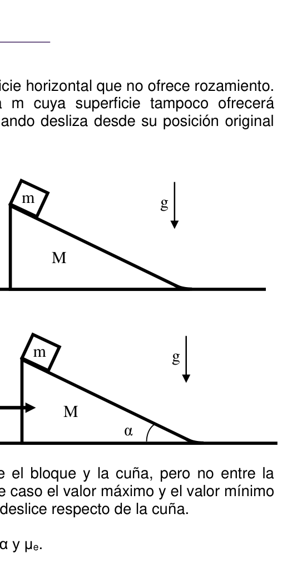
Topic: Conservation of Momentum, Conservation of Energy Metodi: Conservation of Momentum, Conservation of Energy, Kinematic Equations Competenze: Physical Reasoning Objects: Pendulum, Block, Projectile, String Fonte: Testo (PDF) — p.7
PT48. Istituto privato industriale Luis A. - Hoorgo Città autonoma di Buenos Aires.
Una balena di massa di 0,3 kg e velocità sconosciuta colpisce un blocco di 4 kg. Sospeso da una corda lunga 0,5 m e a riposo (Figura 2). Dopo l’incidente il Il blocco si alza fino a quando la corda fa un angolo di 30° con la verticale, nel frattempo il baleno descrive una parabola, il punto di impatto è a 20 m di distanza orizzontale e 1,5 m sotto. Calcolare:
a) La velocità del baleno prima dello scontro b) La velocità del blocco e della balena immediatamente dopo l’impatto c) L’energia perduta dal baleno durante lo scontro d) La tensione della corda quando essa fa 10° con la verticale
Topic: Conservation of Momentum, Conservation of Energy Metodi: Conservation of Momentum, Conservation of Energy, Kinematic Equations Competenze: Physical Reasoning Objects: Pendulum, Block, Projectile, String Fonte: Testo (PDF) — p.7
PT48. The following is the list of the institutions of the European Union: I ‘m not . The Autonomous City of Buenos Aires.
A whale weighing 0.3 kg and at unknown speed collides with a 4 kg block. suspended from a rope of 0.5 m long and at rest (Figure 2). After the crash the block rises until the rope makes a 30° angle to the vertical, meanwhile The whale describes a parable, the point of impact being 20 m away. horizontal and 1.5 m below. Calculation:
(a) Whale speed before impact (b) The speed of the block and the speed of the whale immediately after the impact. (c) The energy lost by the whale during the impact. d) The tension of the rope when it is 10° with the vertical
Topic: Conservation of Momentum, Conservation of Energy Metodi: Conservation of Momentum, Conservation of Energy, Kinematic Equations Competenze: Physical Reasoning Objects: Pendulum, Block, Projectile, String Fonte: Testo (PDF) — p.7
Cuna
PT49. Instituto Lasalle Florida, Buenos Aires.
Cuña. Una cuña de masa M descansa sobre una superficie horizontal que no ofrece rozamiento. Sobre la cuña se coloca un bloque de masa m cuya superficie tampoco ofrecerá rozamiento. El bloque desciende una altura h cuando desliza desde su posición original hasta que llega a la superficie horizontal.
a) Determine la velocidad del bloque y de la cuña cuando se separan.
b) Estudie el caso m << M para comparar el resultado obtenido en el item anterior con el correspondiente al experimento de un bloque que desliza sobre una cuña en reposo.
c) Suponga que usted aplica ahora una fuerza horizontal F sobre la cuña. Determine el valor que deberá tener dicha fuerza si desea que el bloque no deslice respecto de la cuña.
d) Finalmente, suponga que existe roce entre el bloque y la cuña, pero no entre la cuña y el plano horizontal. Determine en ese caso el valor máximo y el valor mínimo de la fuerza F si se desea que el bloque no deslice respecto de la cuña.
Exprese sus resultados en función de M, m, g, h, α y μe. M m g h M m g F α
OAF 2020- 69
Topic: Conservation of Momentum, Conservation of Energy Metodi: Conservation of Momentum, Conservation of Energy, Free-Body Diagram Competenze: Physical Reasoning, Mathematical Modeling Objects: Wedge, Block Fonte: Testo (PDF) — p.7
Cuna
PT49. Istituto Lasalle Florida, Buenos Aires.
- La tua sorella. Un cuoio di massa M si posa su una superficie orizzontale che non offre lacerazione. Su un cuoio si colloca un blocco di massa m la cui superficie non può offrire
- Raggiudicazione. Il blocco scende a una altezza h quando scivola dalla sua posizione originale finché non raggiunge la superficie orizzontale.
a) Determina la velocità del blocco e dalla conia quando si separano.
b) Studiare il caso m << M per Confrontare il risultato ottenuto in el item precedente con el Il risultato è stato rilevato in una serie di prove. Un blocco che scivola su una Coniglio in riposo.
c) Supponiamo che tu applichino Ora una forza orizzontale F sulla cucina. Determina il il valore che deve avere tale valore forza se vuoi che il blocco non scivola verso il cucino.
d) Supponi che vi sia un frattamento tra il blocco e la cucina, ma non tra la cucina. conione e piano orizzontale. Determina in tal caso il valore massimo e il valore minimo di forza F se si desidera che il blocco non scivoli rispetto alla cucina.
Esprimere i risultati in base a M, m, g, h, α e μe. M m g h M m g F α
OAF 2020- 69
Topic: Conservation of Momentum, Conservation of Energy Metodi: Conservation of Momentum, Conservation of Energy, Free-Body Diagram Competenze: Physical Reasoning, Mathematical Modeling Objects: Wedge, Block Fonte: Testo (PDF) — p.7
The following table shows the number of units of the vehicle:
PT49. The Lasalle Institute I’m going to Florida, Buenos Aires.
- It’s a mother-in-law. An M-mass wedge rests on a horizontal surface that does not provide friction. A block of mass m is placed on the wedge whose surface will not provide The roasting. The block descends a height h when it slides from its original position until it reaches the horizontal surface.
(a) Determine the block speed and from the wedge when they separate.
(b) Study the case m << M for Comparing the result obtained in el item Previously on with el The experiment corresponds to the experiment of A block that slides over a
- The cows are at rest.
(c) Suppose you apply. Now a horizontal force F on the wedge. Determine the the value of the goods. Force if you want the block Do not slide with respect to the wedge.
(d) Finally, suppose that there is friction between the block and the wedge, but not between the block and the wedge. the wedge and the horizontal plane. Determine the maximum and minimum value of force F if the block is not to slip relative to the wedge.
Express your results according to M, m, g, h, α and μe. M m g h M m g F α
The following is the list of the countries of the European Union:
Topic: Conservation of Momentum, Conservation of Energy Metodi: Conservation of Momentum, Conservation of Energy, Free-Body Diagram Competenze: Physical Reasoning, Mathematical Modeling Objects: Wedge, Block Fonte: Testo (PDF) — p.7
Transferencia de Calor
PT50. Instituto Lasalle Florida, Buenos Aires.
Transferencia de Calor.
Un contenedor cilíndrico, fabricado de un material aislante al calor, y de volumen total V = 44,8 litros está dividido en dos compartimentos (A y B de la figura) por una pared también perfectamente aislante al calor. Cada compartimento tiene un mol de Helio en estado gaseoso. Inicialmente, los dos compartimentos tienen el mismo volumen V0 (dividen a la mitad el contenedor cilíndrico) y están a la misma temperatura T0 = 0ºC. Con una resistencia eléctrica colocada en el compartimento A circula una corriente que genera calor lentamente por efecto Joule y cambia el estado termodinámico del sistema, es decir, el gas en los diferentes compartimientos cambia su presión, volumen y temperatura. En particular, se encuentra que después de un tiempo t el gas en el compartimiento B ha alcanzado una temperatura de T2 = 136,5 ◦C.
a) Determine la presión y el volumen final del compartimento B (p2, V2)
b) Determine la presión, volumen y temperatura finales del compartimento A (p1, V1,
T1)
c) Determine el cambio de energía interna en ambos compartimentos.
d) Considerando que la resistencia del compartimento A tiene el valor R = 242 Ω y que
está conectada a una fuente de voltaje de 220 V, determine el tiempo t que le toma
a la resistencia generar el calor necesario para realizar el proceso descripto.
¿Existe trabajo WA y WB entre los compartimientos, durante el proceso? Si existe
¿qué relación hay entre dichos trabajos?
Para resolver el problema considere la siguiente información: γ = cp/cv, donde cv y cp son la capacidad calorífica molar a volumen constante y presión constante respectivamente. Para el Helio en estado gaseoso: cv = 3/2 R y cp = 5/2 R. La constante universal de los gases ideales es: R = 8.31 J/mol K.
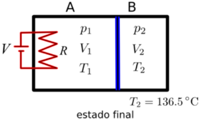
Topic: Thermodynamics Metodi: First Law of Thermodynamics, Ideal Gas Law Competenze: Physical Reasoning, Mathematical Modeling Objects: Gas, Cylinder, Piston Fonte: Testo (PDF) — p.7
Caldito di trasferimento
PT50. Istituto Lasalle Florida, Buenos Aires.
Trasferimento di calore.
Un contenitore cilindrico, fabbricato da un materiale isolante al calore, di totale volume V = 44,8 litri è diviso in due compartimenti (A e B della figura) da un muro anche perfettamente isolante dal calore. Ogni comparto ha un mol di elio in stato.
- Gasificato. Inizialmente, i due comparti hanno lo stesso volume V0 (divide la la metà del contenitore cilindrico) e sono alla stessa temperatura T0 = 0oC. Con una . resistenza elettrica collocata nel comparto A circola un corrente che genera calore lentamente per effetto Joule e cambia lo stato termodinamico del sistema, cioè Il gas nei diversi comparti cambia pressione, volume e temperatura. En In particolare, si trova che dopo un certo tempo il gas nel compartimento B ha raggiunto una temperatura di T2 = 136,5 ◦C.
a) Determina la pressione e il volume finale del compartimento B (p2, V2)
b) Determina la pressione, il volume e la temperatura finale del compartimento A (p1, V1,
T1)
c) Determina il cambio di energia interna in entrambi i comparti.
d) Considerando che la resistenza del compartimento A ha il valore R = 242 Ω e che
è collegata a una fonte di tensione di 220 V, determina il tempo t che ci vuole
la resistenza a generare il calore necessario per eseguire il processo descritto.
C’è lavoro WA e WB tra i comparti, durante il processo? Se esiste
Che relazione c’è tra questi lavori?
Per risolvere il problema, considerate le seguenti informazioni: γ = cp/cv, dove cv e cp sono la capacità calorica di mollare a volume costante e pressione costante rispettivamente. Per gli elementi di cui all’allegato I, paragrafo 1, del regolamento (CE) n. La costante universale dei gas ideali è: R = 8,31 J/mol K.
Topic: Thermodynamics Metodi: First Law of Thermodynamics, Ideal Gas Law Competenze: Physical Reasoning, Mathematical Modeling Objects: Gas, Cylinder, Piston Fonte: Testo (PDF) — p.7
The heat transfer rate shall be the maximum value of the heat transfer value.
PT50. The Lasalle Institute I’m going to Florida, Buenos Aires.
Heat transfer.
A cylindrical container, made of a heat-insulating material, and having a total volume V = 44.8 litres is divided into two compartments (A and B of the figure) by a wall also Perfectly insulating from heat. Each compartment has a mole of helium in the state. Gas-filled. Initially, the two compartments have the same volume V0 (divide the half the cylindrical container) and are at the same temperature T0 = 0oC. With one . The electrical resistance placed in compartment A circulates a current that generates Heat slowly by Joule effect and changes the thermodynamic state of the system, i.e. The gas in the different compartments changes its pressure, volume and temperature. En In particular, it is found that after some time t the gas in compartment B has reached a temperature of T2 = 136,5 ◦C.
(a) Determine the final pressure and volume of compartment B (p2, V2)
(b) Determine the pressure, volume and final temperature of compartment A (p1, V1,
T1)
(c) Determine the internal energy change in both compartments.
(d) Whereas the resistance of compartment A has a value of R = 242 Ω and
It’s connected to a 220 V voltage source, determine how long t takes it.
The resistance to heat generated to perform the described process.
Is there any WA and WB work between the compartments, during the process? If there is .
What is the relationship between these jobs?
To solve the problem consider the following information: γ = cp/cv, where cv and cp are the heat capacity to molar at constant volume and constant pressure the Commission. For helium in gaseous state: cv = 3/2 R and cp = 5/2 R. The constant The universal ideal gas is: R = 8.31 J/mol K.
Topic: Thermodynamics Metodi: First Law of Thermodynamics, Ideal Gas Law Competenze: Physical Reasoning, Mathematical Modeling Objects: Gas, Cylinder, Piston Fonte: Testo (PDF) — p.7
Optica Geometrica
PT51. Instituto Lasalle Florida, Buenos Aires.
Óptica Geométrica. Un haz de luz que se propaga en el aire incide sobre la cara superior de una placa de grosor a y cuyo material tiene índice de refracción n. El haz incide con un ángulo α (ver figura) con respecto a la normal al vidrio. El haz de luz se refracta en la placa y emerge de nuevo al aire por debajo de la placa con un ángulo β respecto de la vertical.
a) Demuestre que el haz que sale por debajo de la placa es paralelo al haz que incide por arriba de la placa, es decir muestra que: β = α.
70 - OAF 2020 b) Calcule la distancia d que separa los dos haces de luz, el de incidencia y el que sale por debajo de la placa en términos de solamente el ángulo de incidencia α, el índice de refracción n y el grosor de la placa a. c) Si el ángulo de incidencia es α = 45◦ = π/4 radianes, calcule el valor del índice de refracción de la placa n para el cual la distancia de separación entre los haces es la misma que el grosor de la placa, es decir para a = d.
sen (α ± β) = sen α cos β ± sen β cos α cos (α ± β) = cos α cos β ∓ sen α sen β
Topic: Geometric Optics Metodi: Snell’s Law, Small-Angle Approximation Competenze: Physical Reasoning, Mathematical Modeling Objects: — Fonte: Testo (PDF) — p.7
Optica Geometrica
PT51. Istituto Lasalle Florida, Buenos Aires.
L’ottica geometrica. Un raggio di luce che si diffonde nell’aria incide sulla la parte superiore di una piastra di spessore a e il cui materiale ha un indice di refraczione n. Il raggio incide da un angolo α (vedi figura) rispetto al normale per il vetro. Il fascio La luce si rifracta nella placca e emerge di nuovo nell’aria sotto la targa con un angolo β rispetto alla Verticale.
a) Dimostra che il fascio che esce sotto la targa è parallelo al fascio che incide sopra la targa, cioè mostra che: β = α.
70 - OAF 2020 b) Calcolare la distanza d tra i due fasci di luce, quello di incidenza e quello di uscita sotto la targa in termini di solo l’angolo di incidenza α, l’indice di rifrazione n e di spessore della placca a. c) Se l’angolo di incidenza è α = 45◦ = π/4 radiani, calcola il valore dell’indice di rifrazione della piastra n per la quale la distanza di separazione tra i fasci è la lo stesso di quanto la placca sia spessa, cioè per a = d.
Sen (α ± β) = sen α cos β ± sen β cos α cos (α ± β) = cos α cos β senza α senza β
Topic: Geometric Optics Metodi: Snell’s Law, Small-Angle Approximation Competenze: Physical Reasoning, Mathematical Modeling Objects: — Fonte: Testo (PDF) — p.7
The following information shall be provided:
PT51. The Lasalle Institute I’m going to Florida, Buenos Aires.
Geometric optics. A beam of light spreading through the air affects the upper face of a plate of a and its material thickness has a refractive index n. The beam is angled. α (see figure) with respect to normal glass. The beam . Light is refracted in the plate and emerges back into the air. below the plate at an angle β to the vertical.
(a) Demonstrate that the beam coming out below the plate is parallel to the beam hitting it. above the plate, that is, shows that: β = α.
The Commission shall adopt delegated acts in accordance with Article 21 of this Regulation. (b) Calculate the distance d between the two beams of light, the incident and the outgoing. below the plate in terms of only the angle of incidence α, the index of refractive index n and thickness of plate a. (c) If the angle of incidence is α = 45◦ = π/4 radians, calculate the value of the index of refraction of plate n for which the distance between the beams is the same as the thickness of the plate, that is, for a = d.
The following table shows the results of the calculation of the risk weight of the product: The following table shows the results of the calculation of the total value of the assets of the Union industry:
Topic: Geometric Optics Metodi: Snell’s Law, Small-Angle Approximation Competenze: Physical Reasoning, Mathematical Modeling Objects: — Fonte: Testo (PDF) — p.7
PT52. Colegio Emilio Civit Maipú, Mendoza.
Topic: Newtonian Mechanics Metodi: Free-Body Diagram Competenze: Physical Reasoning Objects: — Fonte: Testo (PDF) — p.7
PT52. Collegio Emilio Civit Maipú, Mendoza.
Topic: Newtonian Mechanics Metodi: Free-Body Diagram Competenze: Physical Reasoning Objects: — Fonte: Testo (PDF) — p.7
PT52. Emilio Civit College Maipu, Mendoza. What is it?
Topic: Newtonian Mechanics Metodi: Free-Body Diagram Competenze: Physical Reasoning Objects: — Fonte: Testo (PDF) — p.7
PT53. Colegio Emilio Civit Maipú, Mendoza.
OAF 2020- 71
Topic: Newtonian Mechanics Metodi: Free-Body Diagram Competenze: Physical Reasoning Objects: — Fonte: Testo (PDF) — p.7
PT53. Collegio Emilio Civit Maipú, Mendoza.
OAF 2020- 71
Topic: Newtonian Mechanics Metodi: Free-Body Diagram Competenze: Physical Reasoning Objects: — Fonte: Testo (PDF) — p.7
PT53. Emilio Civit College Maipu, Mendoza. What is it?
The following points shall be added:
Topic: Newtonian Mechanics Metodi: Free-Body Diagram Competenze: Physical Reasoning Objects: — Fonte: Testo (PDF) — p.7
PT54. Colegio Emilio Civit Maipú, Mendoza.
Topic: Newtonian Mechanics Metodi: Free-Body Diagram Competenze: Physical Reasoning Objects: — Fonte: Testo (PDF) — p.7
PT54. Collegio Emilio Civit Maipú, Mendoza.
Topic: Newtonian Mechanics Metodi: Free-Body Diagram Competenze: Physical Reasoning Objects: — Fonte: Testo (PDF) — p.7
PT54. Emilio Civit College Maipu, Mendoza. What is it?
Topic: Newtonian Mechanics Metodi: Free-Body Diagram Competenze: Physical Reasoning Objects: — Fonte: Testo (PDF) — p.7
PT55. Colegio San Juan El Precursor San Isidro, Buenos Aires.
El gráfico representa la velocidad en función del tiempo para dos automóviles que se desplazan por una recta. Suponiendo que a t=0 ambos se hallan en x=0.
a) Escriba las ecuaciones que describan a lo largo de todo el movimiento a cada uno de los automóviles. b) Diga si los móviles se encuentran. En caso negativo justifique correctamente su respuesta. En caso afirmativo calcule la
72 - OAF 2020 posición y el instante de encuentro. c) Haga el gráfico de posición en función del tiempo para ambos móviles para 0seg ≤ t ≤ 10seg
Topic: Newtonian Mechanics Metodi: Kinematic Equations, Graph Linearization Competenze: Physical Reasoning Objects: Cart Fonte: Testo (PDF) — p.7
PT55. Scuola San Giovanni Il Precursore San Isidro, Buenos Aires.
Il grafico rappresenta la velocità in funzione di Tempo per due auto in movimento per una linea retta. Supponendo che a t=0 entrambi si sono in x=0.
a) Scrivi le equazioni che descrivono il lungo tutto il movimento a ciascuno di automobili. b) Indica se i cellulari sono presenti. En caso negativo giustifica correttamente il suo
- Risposta. Se sì, calcola il
72 - OAF 2020 posizione e il momento dell’incontro. c) Fare il grafico di posizione in base al tempo per entrambi i movili per 0seg ≤ t ≤ 10 secondi
Topic: Newtonian Mechanics Metodi: Kinematic Equations, Graph Linearization Competenze: Physical Reasoning Objects: Cart Fonte: Testo (PDF) — p.7
PT55. The Precursor ‘s College San Isidro, Buenos Aires. He was a good boy.
The graph represents the velocity in terms of Time for two cars moving around by a straight line. Suppose that at t=0 both are They’re at x=0.
(a) Write the equations describing the Long of all the movement to each of cars. (b) Tell me if the phones are there. En If negative, correctly justify your The answer. If so, calculate the
72 - OAF 2020 position and meeting time. c) Make the time-based position chart for both mobiles for 0seg ≤ t The maximum value of the test chemical shall be:
Topic: Newtonian Mechanics Metodi: Kinematic Equations, Graph Linearization Competenze: Physical Reasoning Objects: Cart Fonte: Testo (PDF) — p.7
PT56. Colegio San Juan El Precursor San Isidro, Buenos Aires.
Una mañana, antes de ir a la escuela, Diego decide acompañar las tostadas de su
desayuno con una infusión de té. Toma una de las tazas de aluminio de la alacena, de
masa 70 g, que se encuentra a temperatura ambiente (20 °C). Vierte en ella 300 cm3 de
dicha infusión, alcanzando el sistema una temperatura de equilibrio de 77 °C.
a) Calcule la temperatura inicial de la infusión.
Como a Diego se le estaba haciendo tarde y tratando de que el té no esté tan caliente, le
agrega 100g de leche que saca de la heladera a 4 °C, logrando que el sistema alcance
una nueva temperatura de equilibrio de 60 °C.
b) Calcule el calor específico de la leche.
Como seguía estando el té con leche muy caliente y Diego no quería llegar tarde a la
escuela porque tenía evaluación de física, decide agregarle un cubito de hielo a – 4 °C,
que al fundirse totalmente haría que la temperatura de equilibrio sea de 45 °C.
c) Calcule la masa del cubito de hielo.
Datos
Calor específico del té = Calor específico del agua = 1 cal / g °C
Calor específico del hielo = 0,5 cal / g °C
Calor de fusión del hielo = 80 cal / g
Calor específico del aluminio = 0,22 cal / g °C
Nota: Considere que no hay intercambio de calor con el entorno
Topic: Thermodynamics Metodi: First Law of Thermodynamics Competenze: Physical Reasoning Objects: Calorimeter Fonte: Testo (PDF) — p.7
PT56. Scuola San Giovanni Il Precursore San Isidro, Buenos Aires.
Un mattino, prima di andare a scuola, Diego decide di accompagnare i suoi tostate. colazione con una teppina di tè. Prendi una delle coppe di alluminio della stagnola, di massa 70 g, che si trova a temperatura ambiente (20 °C). Versate in esso 300 cm3 di la stessa infusione, raggiungendo al sistema una temperatura di equilibrio di 77 °C. a) Calcolare la temperatura iniziale dell’infusione.
Come Diego stava facendo tardi e cercando di non farsi il tè così caldo, lui Aggiunge 100 g di latte che viene estratto dal frigorifero a 4 °C, rendendo il sistema raggiungere una nuova temperatura di equilibrio di 60 °C. b) Calcolare la temperatura specifica del latte.
Poiché il tè con il latte era ancora molto caldo e Diego non voleva essere in ritardo alla La scuola perché aveva una valutazione di fisica, decide di aggiungere un coperchio di ghiaccio a 4 °C, che, se fondono completamente, rendono la temperatura di equilibrio 45 °C. c) Calcolare la massa del coperto di ghiaccio.
Datos Calore specifico del tè = Calore specifico dell’acqua = 1 cal / g °C Calore specifico del ghiaccio = 0,5 cal / g °C Calore di fusione del ghiaccio = 80 cal / g Calore specifico dell’alluminio = 0,22 cal / g °C Nota: Considera che non c’è scambi di calore con l’ambiente
Topic: Thermodynamics Metodi: First Law of Thermodynamics Competenze: Physical Reasoning Objects: Calorimeter Fonte: Testo (PDF) — p.7
PT56. The Precursor ‘s College San Isidro, Buenos Aires. He was a good boy.
One morning, before going to school, Diego decides to accompany his toast. breakfast with a tea infusion. Take one of the aluminum cups from the alacena, from 70 g mass, which is at room temperature (20 °C). Pour in 300 cubic centimetres of This infusion, reaching the system a temperature of 77 °C. (a) Calculate the initial infusion temperature.
Since Diego was getting late and trying to keep the tea from getting so hot, he Add 100g of milk that you take out of the fridge to 4 °C, making the system reach a new equilibrium temperature of 60 °C. (b) Calculate the specific heat of the milk.
As there was still tea with very hot milk and Diego didn ‘t want to be late for the school because he had a physics assessment, decides to add an ice cube to 4 °C, which, when fully melted, would cause the equilibrium temperature to be 45 °C. (c) Calculate the mass of the ice sheet.
Data from the report The specific heat of the tea = The specific heat of the water = 1 cal / g °C The specific heat of the ice = 0,5 cal/g °C Heat of melting ice = 80 cal / g The specific heat of aluminium = 0,22 cal / g °C Note: Consider that there is no heat exchange with the environment
Topic: Thermodynamics Metodi: First Law of Thermodynamics Competenze: Physical Reasoning Objects: Calorimeter Fonte: Testo (PDF) — p.7
PT57. Colegio San Juan El Precursor San Isidro, Buenos Aires.
El desempañador del vidrio trasero de cierto automóvil está formado por varias tiras de un
material conductor que se calienta al paso de la corriente.
Suponiendo que hay 12 tiras conectadas en paralelo a la batería del auto (12 V) y que
cada una tiene 1 m de largo, 0,05 mm² de sección y que la resistividad de cada tira (a la
temperatura de trabajo) es de 4 Ω mm²/m, determine:
a) La intensidad de corriente y el voltaje en cada tira.
b) La potencia eléctrica requerida por el desempañador.
c) ¿Cuál es la resistencia total de la retícula del desempañador?
Topic: Circuits Metodi: Equivalent Circuit Reduction, Kirchhoff’s Laws Competenze: Physical Reasoning Objects: Resistor, Battery, Wire Fonte: Testo (PDF) — p.7
PT57. Scuola San Giovanni Il Precursore San Isidro, Buenos Aires.
Il sfumatore del vetro posteriore di una certa auto è costituito da diverse strisce di un materiale conduttore che si riscaldano con il passaggio del corrente. Supponiamo che ci siano 12 strisce collegate in parallelo alla batteria dell’auto (12 V) e che La resistenza di ciascuna striscia (a temperatura di lavoro) è di 4 Ω mm2/m, determinare: a) L’intensità di corrente e la tensione di ciascuna striscia. b) La potenza elettrica richiesta dal disimpicatore. c) Qual è la resistenza totale della reticola del dispacciatore?
Topic: Circuits Metodi: Equivalent Circuit Reduction, Kirchhoff’s Laws Competenze: Physical Reasoning Objects: Resistor, Battery, Wire Fonte: Testo (PDF) — p.7
PT57. The Precursor ‘s College San Isidro, Buenos Aires. He was a good boy.
The rear glass blender of a certain car is made up of several strips of a conductive material that is heated as the current passes. Suppose there are 12 strips connected parallel to the car battery (12 V) and that Each strip is 1 m long, 0.05 mm2 in section and the resistance of each strip (at the The working temperature) is 4 Ω mm2/m, determine: (a) The current intensity and voltage of each strip. (b) The electrical power required by the de-amplifier. (c) What is the total strength of the mesh of the desimpeller?
Topic: Circuits Metodi: Equivalent Circuit Reduction, Kirchhoff’s Laws Competenze: Physical Reasoning Objects: Resistor, Battery, Wire Fonte: Testo (PDF) — p.7
Una ley para discutir acaloradamente
PT58. Instituto Politécnico Superior - EETP N° 394 Dr. Francisco de Gurruchaga Rosario, Santa Fe.
Una ley para discutir acaloradamente.
Juliana es una estudiante de Licenciatura en Física que está haciendo su trabajo final en
un laboratorio de Física de Materiales del Instituto de Física de Rosario. Su interés está
puesto en las propiedades térmicas de ciertos materiales en estado sólido. Para
comenzar con su trabajo, ella decide medir el calor específico del cobre. Como
desgraciadamente los calorímetros ideales no existen, utiliza un calorímetro de
equivalente en agua igual a 20 g. Inicialmente el calorímetro contiene 50 g de hielo a
0 ºC, y ella introduce una pieza de cobre de 600 g a 100 ºC. Cierra, entonces, la tapa del
OAF 2020- 73 calorímetro y deja que su contenido evolucione hasta el equilibrio térmico, mientras va registrando la temperatura con un sensor bastante preciso. Finalmente anota en su cuaderno de laboratorio una temperatura de equilibrio de 12,14 ºC. Con estos datos, responde: a) ¿Cuánto vale el calor específico del cobre en J/(kg·K)?
El calor específico de un sólido también se puede expresar de forma molar, el cual se define como 𝑐𝑚𝑜𝑙𝑎𝑟= 𝑄 𝑛 𝛥𝑇, en donde 𝑄 es el calor intercambiado por la sustancia cuando su temperatura varía 𝛥𝑇, y 𝑛 es el número de moles de sustancia. b) Sabiendo que la masa molar del cobre es de 63,546 g/mol, determina el calor específico molar del cobre.
Juliana recuerda de sus cursos que un tal Boltzmann demostró una ley empírica atribuída a Dulong y Petit sobre el calor específico de los sólidos. De acuerdo con el razonamiento de Boltzmann, los sólidos están formados por átomos que vibran independientemente unos de otros. Cada átomo entonces, tiene 3 grados de libertad en su energía cinética de traslación y 3 grados de libertad en la energía potencial que corresponde a la vibración. De acuerdo con el Teorema de equipartición de la energía, cada grado de libertad de los átomos suma un valor de 𝑅/2 en el calor específico molar, en donde 𝑅 es la constante de los gases ideales. Así, el calor específico molar de los sólidos debería valer 3𝑅. c) Calcula la discrepancia relativa porcentual entre el calor específico medido por Juliana y el que predice la Ley de Dulong y Petit demostrada por Boltzmann. De acuerdo con este resultado, ¿dirías que la ley es precisa?
Juliana recuerda también que en el primer curso de termodinámica le dijeron que, en realidad, el calor específico depende de la temperatura. Por ello, se dispone a medir el calor específico del cobre a temperaturas más altas. Para ello, introduce la muestra de cobre a 12,14 ºC en el centro de un horno de cerámica como el que se muestra a la izquierda, cuyo interior se mantiene a 800 ºC, gracias a unas resistencias que irradian 780 W, trabajando a baja potencia. Las 6 caras del horno se pueden modelizar como paredes de un espesor uniforme de 15 cm, de forma cuadrada, y de 50 cm de lado. El material de las paredes se puede considerar homogéneo, con una conductividad térmica de 1 × 10−3W/(m·K), por lo que una pequeña cantidad de calor se pierde al exterior, que está a 20 ºC. d) ¿Cuál es el flujo calorífico que se pierde a través de las paredes del horno?
Una vez que la muestra de cobre está dentro del horno, esta tarda 4 minutos en alcanzar la temperatura de 800 ºC. Suponiendo que el flujo calorífico neto (es decir el entregado por las resistencias menos el que se pierde a través de las paredes del horno) se usa todo para elevar la temperatura del cobre, responde: e) ¿Cuál es el calor específico del cobre en este rango de temperaturas? ¿Dirías que sigue valiendo la ley de Dulong y Petit?
Algo curioso sucede con el diamante. Juliana lo sabe y decide probar con un trozo de diamante en bruto que posee el laboratorio. Es entonces que introduce esta piedra de 10 g en el horno, pero la saca a una temperatura de 90 ºC y, rápidamente, la introduce en el calorímetro del principio del problema. Esta vez el calorímetro contenía 20 g de agua, a 20 ºC, y la temperatura de equilibrio resultó ser de 21,19 ºC. f) Recordando que el diamante está formado íntegramente por átomos de carbono, de masa molar 12 g/mol, ¿cuánto vale el calor específico molar del diamante? ¿Qué se puede decir de la ley de Dulong y Petit en este caso?
74 - OAF 2020 Datos Constante de los gases: 𝑅 = 8,314 J/(mol·K) Calor específico del agua: 4186 J/(mol·K) Calor latente de fusión del hielo: 334 × 103J/kg
Nota histórica (leer solo después de resolver el problema): El problema del calor específico de los sólidos fue estudiado, entre otros, por Einstein, quien supuso que los osciladores de Boltzmann en realidad solo podían tomar valores de frecuencia discretos (o sea, cuantizados), esto le permitió demostrar que a muy bajas temperaturas el calor específico de los sólidos tiende a cero a medida que la temperatura tiende a cero. Sin embargo, la forma de la curva hallada por Einstein no permitía explicar lo que ocurre con el diamante. Posteriormente, Debye y otros mejoraron este modelo suponiendo que los átomos sí interactúan entre sí, y que las vibraciones de la red cristalina se comportan como ondas de ciertas longitudes de onda permitidas. El diamante es un caso particular de sólido, en el que estas interacciones entre átomos son muy intensas, y por eso los efectos cuánticos en el calor específico se pueden notar a temperatura ambiente.
Topic: Thermodynamics Metodi: First Law of Thermodynamics Competenze: Physical Reasoning Objects: Calorimeter Fonte: Testo (PDF) — p.7
Un’elezione di legge per discutere in modo accentuato
PT58. Istituto Politetnico Superiore - EETP N° 394 Dr. Francesco di Gurruchaga Rosario, Santa Fe.
Una legge per discutere in modo accattivante. Juliana è una studentessa di laurea in fisica che sta facendo il suo lavoro finale in un laboratorio di fisica dei materiali dell’Istituto di fisica di Rosario. Il suo interesse è in particolare per quanto riguarda le proprietà termiche di determinati materiali in stato solido. Per Iniziando il suo lavoro, decide di misurare il calore specifico del rame. Come Purtroppo non esistono calometri ideali, usa un calometro di equivalente in acqua pari a 20 g. Inizialmente il calometro contiene 50 g di ghiaccio a 0 oC, e introduce un pezzo di rame da 600 g a 100 oC. Chiudi, allora, la copertura del
OAF 2020- 73 Il caloriometro e lascia che il suo contenuto evolva fino all’equilibrio termico, mentre va. registrando la temperatura con un sensore abbastanza preciso. Finalmente scrive su di lei di laboratorio a una temperatura di equilibrio di 12,14 oC. Con questi dati, Risponde: a) Qual è il valore specifico del calore del rame in J/(kg·K)?
Il calore specifico di un solido può anche essere espresso in molarità, che si definisce come cmolar= 𝑄 n ΔT, dove Q è il calore scambiato per la sostanza quando La temperatura varia ΔT, e n è il numero di mole di sostanza. b) Sapendo che la massa molare del rame è di 63.546 g/mol, determina il calore specifico molar del rame.
Juliana ricorda dai suoi corsi che un certo Boltzmann ha dimostrato una legge empirica attribuita. Dulong e Petit sul calore specifico dei solidi. Secondo il ragionamento Secondo Boltzmann, i solidi sono costituiti da atomi che vibranno indipendentemente. di uno all’altro. Ogni atomo allora, ha 3 gradi di libertà nella sua energia cinetica di La trasformazione e 3 gradi di libertà nell’energia potenziale corrispondente alla vibrazione. Secondo il teorema dell’equilibrio dell’energia, ogni grado di libertà dei Gli atomi sommano un valore di R/2 al calore specifico molare, dove R è la costante di gas ideali. Quindi il calore specifico molare dei solidi dovrebbe valere 3R. (c) Calcola la discrepanza relativa percentuale tra il calore specifico misurato da Giuliana e il predittore della Legge di Dulong e Petit dimostrata da Boltzmann. De Secondo questo risultato, diresti che la legge è precisa?
Juliana ricorda anche che nel primo corso di termodinamica gli è stato detto che, in In realtà, il calore specifico dipende dalla temperatura. Per questo si dispone di misurare la calore specifica del rame a temperature più alte. Per questo, inserire il campione di copro a 12,14 oC nel centro di un forno di ceramica come quello mostrato a sinistra, il cui interno si è Il suo contenuto è di 800 oC, grazie a resistenze che Radiano 780 W, a bassa potenza. I sei volti del furno possono essere modellati come pareti di un’épaissezza uniforme di 15 cm, in forma quadrata, e di 50 cm di
- Un lato. Il materiale per le pareti può essere considerato omogeneo, con una conducibilità La temperatura di 1 × 10−3W/(m·K), quindi una piccola quantità di calore viene persa al all’esterno, che è a 20 oC. d) Qual è il flusso caloreoso perso attraverso le pareti del forno?
Una volta che il campione di rame è all’interno del forno, ci vogliono 4 minuti per raggiungere. la temperatura di 800 oC. Supponiamo che il flusso calore netto (cioè il Per le resistenze meno quella che viene persa attraverso i muri del forno) viene usato Tutto per aumentare la temperatura del rame, risponde: e) Qual è il calore specifico del rame in questa gamma di temperature? - Direi che… La legge di Dulong e Petit è ancora valida?
Qualcosa di strano sta succedendo al diamante. Juliana lo sa e decide di provare con un pezzo di diamante grezzo che il laboratorio possiede. E ’ allora che introduce questa pietra di 10 La temperatura di questo prodotto è di 90 oC. calometro dell’inizio del problema. Questa volta il calometro conteneva 20 g di acqua, 20 oC, e la temperatura di equilibrio risultò essere di 21,19 oC. f) Ricordando che il diamante è costituito interamente da atomi di carbonio, 12 g/mol di massa mollare, quanto vale il calore specifico mollare del diamante? Cosa? Puoi dire della legge di Dulong e Petit in questo caso?
74 - OAF 2020 Datos Costante dei gas: R = 8,314 J/(mol·K) Calore specifico dell’acqua: 4186 J/(mol·K) Calore latente di fusione del ghiaccio: 334 × 103J/kg
Nota storica (leggi solo dopo aver risolto il problema): Il problema del calore specifico dei solidi è stato studiato, tra gli altri, da Einstein, che supponeva che gli oscillatori di Boltzmann potessero prendere solo valori di La frequenza di questo sistema è stata molto bassa. La temperatura specifica dei solidi tende a zero a misura in cui la temperatura tende a zero. Tuttavia, la forma della curva trovata da Einstein non ci ha permesso di spiegare. che succede al diamante. Successivamente, Debye e altri hanno migliorato questo modello. Supponendo che gli atomi interagiscano tra loro, e che le vibrazioni della rete Le onde cristalline si comportano come onde di determinate lunghezze d’onda consentite. El Il diamante è un caso particolare di solido, in cui queste interazioni tra atomi sono E’ un’ottica molto intensa, e quindi gli effetti quantistici sul calore specifico possono essere osservati a temperatura ambiente.
Topic: Thermodynamics Metodi: First Law of Thermodynamics Competenze: Physical Reasoning Objects: Calorimeter Fonte: Testo (PDF) — p.7
A law to discuss hotly
PT58. The following is a list of the main types of technical assistance: Francis of Gurruchaga Rosario, Santa Fe.
A law to discuss hotly. Juliana is a graduate student in physics who is doing her final work in A laboratory of materials physics at the Rosario Institute of Physics. Your interest is The heat content of certain solid-state materials is determined by the heat properties of certain solid-state materials. For So, starting with her work, she decides to measure the specific heat of the copper. Like Unfortunately, there are no ideal thermometers, so use a thermometer of equivalent in water equal to 20 g. Initially the calorimeter contains 50 g of ice to 0 oC, and she puts a piece of copper 600 g at 100 oC. Close, then, the lid of the
The Commission shall adopt implementing acts in accordance with Article 21 of this Regulation. It’s a heat meter and it lets its contents evolve to thermal equilibrium, as it goes. I’m recording the temperature with a pretty precise sensor. Finally , he writes down his laboratory notebook with a balance temperature of 12,14 oC. With this data, He answers: (a) What is the specific heat of copper in J/(kg·K?
The specific heat of a solid can also be expressed in molar form, which is Defines as cmolar= 𝑄 n ΔT, where Q is the heat exchanged by the substance when Its temperature varies ΔT, and n is the number of moles of substance. (b) Knowing that the molar mass of copper is 63,546 g/mol, determines the heat specific molar of copper.
Juliana recalls from her course that a certain Boltzmann proved an attributable empirical law. Dulong and Petit on the specific heat of solids. According to the reasoning Boltzmann’s solids are made up of atoms that vibrate independently. of each other. Each atom then, has 3 degrees of freedom in its kinetic energy of The transition and 3 degrees of freedom in the potential energy corresponding to the vibration. According to the equation of energy, each degree of freedom of the Atoms add up a value of R/2 to the specific molar heat, where R is the constant of ideal gases. Thus, the molar specific heat of solids should be worth 3R. (c) Calculates the relative percentage discrepancy between the specific heat measured by Juliana and the one who predicts the Law of Dulong and Petit proved by Boltzmann. De According to this result, would you say the law is accurate?
Juliana also recalls that in the first course in thermodynamics she was told that, in In reality, the specific heat depends on the temperature. The specific heat of copper is therefore to be measured at higher temperatures. For this purpose, enter the sample of copper at 12,14 oC in the centre of a ceramic furnace As shown on the left, whose interior is It is maintained at 800 oC, thanks to resistance which radiate 780 W, working at low power. The six faces of the The furnace can be modeled as thick walls. 15 cm square uniform and 50 cm square side. The material of the walls can be considered homogeneous, with a conductivity The heat is lost in the heat source. The temperature outside is 20 °C. (d) What is the heat flow lost through the walls of the furnace?
Once the copper sample is inside the oven, it takes 4 minutes to reach. the temperature of 800 oC. Assuming that the net heat flow (i.e. the delivered heat flow) For resistance less the one lost through the oven walls) is used. All to raise the temperature of the copper, he answers: (e) What is the specific heat of copper in this temperature range? Would you say that? Do you still have the Dulong and Petit law?
Something funny is happening with the diamond. Juliana knows and decides to try it with a piece of raw diamond owned by the lab. That ‘s when I ‘m introducing this stone of 10 . The first step is to remove the oil from the oven and remove it at a temperature of 90 °C and quickly introduce it into the oven. The heat meter of the beginning of the problem. This time the calorimeter contained 20 g of water, The temperature of the test was 21,19 oC. (f) Recalling that the diamond is composed entirely of carbon atoms, Molar mass 12 g/mol, what is the diamond’s molar specific heat worth? What do you know? Can you tell me about the Dulong and Petit law in this case?
The Commission shall adopt delegated acts in accordance with Article 21 of this Regulation. Data from the report The gas constant: R = 8,314 J/(mol·K) The specific heat of the water: 4186 J/(mol·K) The heat latent of melting ice: 334 × 103J/kg
Historical note (read only after solving the problem): The problem of the specific heat of solids was studied, among others, by Einstein, who assumed that Boltzmann oscillators could actually only take values from The results of the study showed that the average frequency of the test was very low. The specific heat of solids tends to zero as the temperature increases. It’s all about zero. However, the shape of the curve found by Einstein did not explain it. What happens to the diamond. Subsequently, Debye and others improved this model. assuming that atoms do interact with each other, and that the vibrations of the grid crystalline waves behave like waves of certain wavelengths allowed. El Diamond is a particular case of solid, in which these interactions between atoms are The quantum effects on specific heat can be observed at the ambient temperature.
Topic: Thermodynamics Metodi: First Law of Thermodynamics Competenze: Physical Reasoning Objects: Calorimeter Fonte: Testo (PDF) — p.7
SunPower
PT59. Instituto Politécnico Superior - EETP N° 394 Dr. Francisco de Gurruchaga Rosario, Santa Fe.
SunPower: Potenciado por el Sol.
En Jujuy se encuentra el pueblo de Olaroz Chico, que es el primer pueblo de Argentina
cuya electricidad es generada únicamente por energía solar. Dado que las celdas
fotovoltaicas generan corriente continua se generó una discusión acerca de si vale la
pena trasladar la corriente como alterna (al igual que en el resto del país), o si se podría
usar directamente en continua y evitar las transformaciones (y sus consecuentes
pérdidas de energía). Sin embargo, para evitar tener que adaptar todos los
electrodomésticos, se decide finalmente usar corriente alterna.
Yacu, uno de los habitantes de dicho Olaroz Chico, se empecina en que la casa donde
vive usará solo continua, conectada directamente a los paneles solares. Como tiene que
acomodar toda la instalación eléctrica, se pone a trabajar y diagramar el circuito que su
casa representa.
Sabe que va a obtener una diferencia de potencial de 48 V, por lo que se pone a
planificar los dos ambientes que tiene. Decide comenzar por la habitación-living. Como
hizo cursos de física, sabe que las lámparas las puede pensar como simples resistencias,
así que empieza a montar el circuito y le queda así:
Figura: Lámparas en la habitación-living (arriba) y su esquema eléctrico sin representar los interruptores (abajo).
Para tener una mejor comprensión del circuito eléctrico decide medir las resistencias de todos los elementos tal como le enseñaron en física. Por eso toma su querido multímetro y mide que la lámpara en el comedor tiene una resistencia 10 Ω, la de habitación 5 Ω y las
OAF 2020- 75
lámparas que se encuentran a cada lado de la cama, la de la izquierda de 3 Ω y la de la
derecha 4 Ω.
a) Sabiendo todo esto, ¿cuál es la corriente que entra a este circuito?
b) Solo por curiosidad, también mide el voltaje y corriente la lámpara de la izquierda
de la cama. ¿Qué resultados va a obtener?
c) Al poco tiempo de montar el circuito se le quema la lámpara de la derecha de la
cama. Como no tiene otra igual, quiere poner una de forma tal que la potencia que
cada una disipe sea la misma. ¿Qué resistencia tendrá que usar?
Orgulloso de su instalación, llama a su compañera de la escuela, Amancay. Mientras está mostrando todo lo que hizo, apaga la luz sobre la mesa y nota que surge un problema. d) ¿Qué problema encuentra?
Amancay, que cursó física junto con Yacu, revisa el circuito y le da un correctivo (manteniendo distancia social para evitar el contacto en épocas de pandemia) por la macana que se había mandado. Ahí decide armar ella la conexión de la heladera, para evitar que provoque un incendio (o algo pior…). La heladera que tiene Yacu dice que consume una potencia de 150 W. Dado que eso es en corriente alterna, Amancay le dice a Yacu que arme un conversor de continua a alterna, que logra hacer la conversión con una pérdida de potencia de 5 %. e) ¿Qué potencia debe ingresar al conversor cuando la heladera funciona a toda potencia?
La heladera es un elemento fundamental en la instalación eléctrica de una casa dado que representa el 30% del consumo eléctrico de hogar promedio. Por eso es recomendable buscar heladeras con gran eficiencia energética ahorraenergía cuidemoselambiente. Por este motivo, Amancay decide instalar la heladera directamente al tendido que ingresa desde el poste eléctrico en la calle (en paralelo a la otra instalación). f) ¿Qué corriente circulará por el conversor cuando la heladera funciona a toda potencia? g) Entonces, ¿cuál es la corriente eléctrica que requiere la casa en total? Por facilidad, utilizar los cálculos previo al cambio de la bombilla de la mesita de luz.
Ahora que ya armaron la instalación eléctrica de ambos ambientes, Amancay sugiere
verificar que cuando esté todo prendido el cable usado en el tendido hacia los paneles
solares sea el adecuado. Como la cooperativa de electricidad no está muy contenta con
la iniciativa de Yacu, le pide que él mismo se encargue de la conexión.
h) Sabiendo que los paneles se encuentran a 600 m de su casa, ¿qué resistencia
tiene el cableado? Yacu decide usar un cable estándar de cobre y sección 4 mm2.
Terminado el trabajo, Amancay hace una verificación de que todo esté funcionando como lo planearon, pero descubre que la diferencia de potencial que llega a la puerta de la casa no es 48 V, sino que 48 V es la diferencia de potencial que entregan los paneles solares a 600 m de la casa. i) Para explicarle el error a Yacu, Amancay le pide que calcule, asumiendo que está circulando la corriente que habían planificado anteriormente, cuál es la caída de potencial en los cables. ¿Qué obtuvo? Brevemente, ¿qué implicancias tiene eso?
Dato
Resistividad del cobre ⍴Cu=1,71 x 10-8 Ω m
76 - OAF 2020
Topic: Circuits Metodi: Kirchhoff’s Laws, Equivalent Circuit Reduction Competenze: Physical Reasoning Objects: Resistor, Battery, Wire Fonte: Testo (PDF) — p.7
Il numero di persone che hanno ricevuto il servizio è stato di circa un milione di persone.
PT59. Istituto Politetnico Superiore - EETP N° 394 Dr. Francesco di Gurruchaga Rosario, Santa Fe.
SunPower: Potenziato dal Sole. A Jujuy si trova il villaggio di Olaroz Chico, che è il primo villaggio dell’Argentina che generano energia elettrica unicamente da energia solare. Dato che le cellule La produzione di fotovoltaico genera corrente continua ha generato una discussione sul fatto che vale la pena È pena trasferire il corrente come alternativa (come nel resto del paese), o se si potrebbe La maggior parte delle persone che si trovano in questo settore è molto più vulnerabile a problemi di salute. perdite di energia). Tuttavia, per evitare di dover adattare tutti La maggior parte dei dispositivi di elettrodomestico, si decide di utilizzare corrente alternata. Yacu, uno degli abitanti di quel Olaroz Chico, si avvicina alla casa dove Vive userà solo continuo, collegato direttamente ai pannelli solari. Come deve? La struttura elettrica è stata costruita per accogliere l’intero impianto elettrico, metterlo a lavoro e diagrammare il circuito che la sua casa rappresenta. Sa che otterrà una differenza di potenziale di 48 V, quindi si mette a pianificare i due ambienti che ha. Decidi di iniziare con la stanza-living. Come Ha fatto corsi di fisica, sa che le lampade possono essere considerate semplici resistenze. Quindi inizia a montare il circuito e le resta così:
Figura: Lampade nella stanza-living (alto) e il suo schema elettrico senza rappresentare gli interruttori (basso).
Per avere una migliore comprensione del circuito elettrico decide di misurare le resistenze di tutti gli elementi come gli è stato insegnato in fisica. Ecco perché prende il suo caro multimetro e misura che la lampada nel salotto ha una resistenza di 10 Ω, quella della stanza 5 Ω e le
OAF 2020- 75 lampade situate su entrambi i lati del letto, quella a sinistra di 3 Ω e quella di destra 4 Ω. a) Con tutto questo, quale corrente entra in questo circuito? b) Solo per curiosità, misura anche la tensione e corrente della lampada sinistra
- Non è così. Quali risultati otterrà? c) Poco dopo la messa in circuito si accende la lampada della destra della
- Il letto. Non ha altro pari, vuole mettere uno in modo tale che la potenza che Ogni dissipazione è la stessa. Che resistenza dovrà usare?
Orgoglioso della sua installazione, chiama la sua compagnia di scuola, Amancay. Mentre è mostrando tutto quello che ha fatto, spegne la luce sul tavolo e nota che sorge un problema. d) Che problema trova?
Amancay, che ha studiato fisica insieme a Yacu, riesamina il circuito e gli dà un correctivo (mantenere la distanza sociale per evitare contatto in tempi di pandemia) Ma che c’era. Lì decide di mettere insieme la connessione del frigorifero, per evitare che provochi un incendio (o qualcosa di peggio…). Il frigorifero di Yacu dice che Consuma una potenza di 150 W. Dato che è in corrente alternata, Amancay le dice a Yacu che ha un convertitore continuo alternato, che riesce a fare la conversione con una perdita di potenza del 5%. e) Che potenza deve entrare nel convertitore quando il frigorifero funziona a pieno Potenza?
Il frigorifero è un elemento fondamentale nell’installazione elettrica di una casa dato che rappresenta il 30% del consumo energetico della casa media. Per questo è consigliabile. cercare gelateria con elevata efficienza energetica energia risparmiata care theEnvironment. Per questo motivo, Amancay decide di installare il frigorifero direttamente sul campo che entra dal poste elettrico in strada (parallelamente all’altro impianto). f) Che corrente circolerà nel convertitore quando il frigorifero è completamente funzionante Potenza? g) Qual è dunque il totale di corrente elettrica richiesta dalla casa? Per facilità, utilizzare i calcoli precedenti al cambio della lampada del tavolo di luce.
Ora che hanno già messo a punto l’impianto elettrico di entrambe le ambienti, Amancay suggerisce Verificare che quando tutto è acceso il cavo usato nel pannello è allungato verso i pannelli Il sole è il giusto. Come la cooperativa elettrica non è molto contenta con L’iniziativa di Yacu, chiede a lui di farsi il collegamento da solo. h) Sapendo che i pannelli si trovano a 600 m da casa sua, quale resistenza Ha il cavo? Yacu decide di usare un cavo standard di rame e sezione 4 mm2.
Finito il lavoro, Amancay verifica che tutto stia funzionando come si dice. Lo hanno pianificato, ma scopre che la differenza di potenziale che arriva alla porta della casa Non è 48 V, ma 48 V è la differenza di potenziale che i pannelli solari forniscono a 600 metri dalla casa. (i) Per spiegare l’errore a Yacu, Amancay gli chiede di calcolare, presumendo che è circolando il flusso che avevano pianificato in precedenza, che è la caduta di Potenzialmente nei cavi. Cosa ha ottenuto? In breve, che implicazioni ha?
Data Resistenza del rame Cu=1,71 x 10-8 Ω m
76 - OAF 2020
Topic: Circuits Metodi: Kirchhoff’s Laws, Equivalent Circuit Reduction Competenze: Physical Reasoning Objects: Resistor, Battery, Wire Fonte: Testo (PDF) — p.7
The following table shows the results of the calculations:
PT59. The following is a list of the main types of technical assistance: Francis of Gurruchaga Rosario, Santa Fe.
SunPower: Powered by the Sun. In Jujuy is the village of Olaroz Chico, which is the first village in Argentina whose electricity is generated solely by solar energy. Since the cells The first is that the photovoltaics generate direct current. It is worthwhile to move the current as an alternate (as in the rest of the country), or if you could The use of the product is not limited to the use of the product. energy losses). However, to avoid having to adapt all the The electrical system is used to power the electrical system. Yacu, one of the inhabitants of the village called Olaroz Chico, gets started in that house where live will only use continuous, directly connected to the solar panels. How do you have to ? The electrical system is installed, put to work and diagrammed the circuit that it is running. house represents. He knows he’s gonna get a 48 V potential difference, so he puts it on. plan the two environments you have. Decide to start with the living room. Like He took physics courses, he knows that you can think of lamps as simple resistance. So he starts to set up the circuit and it looks like this:
Figure: Lamps in the living room (top) and their electrical scheme without representation the switches (below).
To gain a better understanding of the electrical circuit he decides to measure the resistance of All the elements as they taught him in physics. That ‘s why he takes his beloved multimeter . And it measures that the lamp in the dining room has a resistance of 10 Ω, the room has a resistance of 5 Ω and the
The Commission shall adopt implementing acts in accordance with Article 21 of this Regulation. lamps on either side of the bed, the one on the left of 3 Ω and the one on the left of the bed Right 4 Ω. (a) Knowing all this, what is the current entering this circuit? (b) Just out of curiosity, the left lamp also measures the voltage and current out of bed. What results will you get? (c) The lamp on the right side of the circuit is lit shortly after the circuit is set up. The bed. Since he has no other equal, he wants to put one in such a way that the power that Each dissipate is the same. What resistance will he have to use?
Proud of his facility, he calls his schoolmate, Amancay. While you ‘re at it . Showing everything he did, he turns off the light on the table and notices a problem arises. (d) What problem does he have?
Amancay, who studied physics with Yacu, checks the circuit and gives him a corrective. (keeping social distancing to avoid contact in times of pandemic) by the I’m sorry, but I’m not sure what I’m saying. There she decides to put together the fridge connection, for prevent it from causing a fire (or worse…). The fridge Yacu has says that It consumes 150 W. Since that’s on alternating current, Amancay tells him to Yacu to arm a continuous-to-alternate converter, which manages to make the conversion with a power loss of 5%. (e) What power should enter the converter when the freezer is fully operational? What power?
The refrigerator is a fundamental element in the electrical installation of a house since It accounts for 30% of the average household’s electricity consumption. That ‘s why it ‘s recommended . Looking for energy efficient ice cream enserve Energy take care of the environment. For this reason, Amancay decided to install the freezer directly at the entrance. from the electrical pole on the street (in parallel to the other installation). (f) What current will flow through the converter when the refrigerator is fully operational? What power? g) So what is the total electricity demanded by the house? For ease, use the calculations before changing the light bulb of the lighting table.
Now that the electrical installation of both environments has been completed, Amancay suggests Check that when everything is on the wire used in the stretch to the panels Solar is the right one. As the electricity cooperative is not very happy with Yacu’s initiative, asking him to handle the connection himself. h) Knowing that the panels are 600 m from your house, what resistance You got the wiring? Yacu decides to use a standard copper cable and section 4 mm2.
When the job is done, Amancay checks that everything is working as They planned it, but he finds that the potential difference that comes to the door of the house It’s not 48 V, but 48 V is the difference in the potential that solar panels deliver to 600 meters from the house. i) To explain the mistake to Yacu, Amancay asks him to calculate, assuming he is circulating the current they had planned earlier, what is the fall of potential in the cables. What did he get? In short, what implications does that have?
Date of the meeting Copper resistance Cu=1.71 x 10-8 Ω m
The following points shall be added:
Topic: Circuits Metodi: Kirchhoff’s Laws, Equivalent Circuit Reduction Competenze: Physical Reasoning Objects: Resistor, Battery, Wire Fonte: Testo (PDF) — p.7
Al infinito
PT60. Instituto Politécnico Superior - EETP N° 394 Dr. Francisco de Gurruchaga Rosario, Santa Fe.
Al infinito… Zumbido Añoluz es un astronauta de juguete que tiene una masa de 400 g. Zumbido está aburrido porque no encuentra a su amigo el alguacil Maderoso por lo que se pone a jugar con una pelota. Se para sobre la pelota de 10 cm de radio que flota en un recipiente con agua (δagua=1000 kg/m3), logrando que se hunda 5 cm (Figura 1). A continuación, engancha un resorte entre la base del recipiente y la parte inferior de la esfera (Figura 2) y comienza a verter agua en el interior del contenedor.
Nota: cuando trabajamos con cuerpos sumergidos que tienen una sección constante (como un prisma o un cilindro) podemos calcular el volumen sumergido como A.hsum; con una esfera eso no es posible. Para las preguntas que siguen te servirá conocer cuál es el volumen de una esfera como función del radio (Figura 3); esta relación se presenta en la gráfica de la Figura 4.
Figura 4. Fracción de volumen que se encuentra bajo el agua en función de la altura sumergida (la altura máxima es 2R)
Ayude a Zumbido a responder las siguientes cuestiones: a) ¿Cuál es la masa de la pelota? b) ¿Cuál debe ser la constante elástica del resorte de forma tal que se elongue 19 cm cuando la esfera se encuentra sumergida por la mitad? c) ¿Cuál debe ser el mínimo valor de tensión que debe ser capaz de soportar el resorte sin romperse para permitir que la esfera quede completamente sumergida? d) ¿Cuánto se elongará el resorte cuando la esfera está completamente sumergida?
OAF 2020- 77 El astronauta quiere saber si podrá ‘volar’ parándose en la pelota ayudándose del movimiento de la pelota al emerger bruscamente del agua (spoiler alert: no puede porque es un juguete). Para ver si su idea es viable, realiza la siguiente experiencia: se sumerge en el agua y corta el resorte de forma tal que la pelota empieza a subir a causa de la fuerza que le ejerce el agua
Nota: Para los siguientes puntos, pensá si podés, a partir de la gráfica dada, construir una gráfica de empuje en función de hsum.
e) ¿Cuál es el trabajo del empuje mientras la esfera pasa de tener 12 cm sumergidos a tener 8 cm sumergidos? f) ¿Cuál será la aceleración instantánea del objeto cuando media esfera emergió del agua? g) Despreciando el roce con el agua, hallá la velocidad con que la esfera sale del agua y la altura máxima que alcanza.
Topic: Fluid Mechanics Metodi: Hydrostatic Equilibrium, Hooke’s Law, Free-Body Diagram Competenze: Physical Reasoning, Mathematical Modeling Objects: Sphere, Spring, Container Fonte: Testo (PDF) — p.7
Infinito
PT60. Istituto Politetnico Superiore - EETP N° 394 Dr. Francesco di Gurruchaga Rosario, Santa Fe.
Infinitamente… Zumbido Añoluz è un astronauta giocattolo che ha una massa di 400 g. Zumbido è. annoiato perché non trova il suo amico lo sceriffo Maderoso così si mette a giocare con una palla. Si trova su una palla di 10 cm di raggio che galleggia in un recipiente con acqua (δacqua=1000 kg/m3), che si affonda fino a 5 cm (Figura 1). Poi, collegare una scorta tra la base del recipiente e la parte inferiore del recipiente. La sfera (Figura 2) e inizia a versare acqua all’interno del contenitore.
Nota: quando lavoriamo con corpi immersi che hanno una sezione costante (come un prisma o un cilindro) possiamo calcolare il volume immerso come A.hsum; con Una sfera non è possibile. Per le domande che seguono, ti servirà sapere quale è. Il volume di una sfera come funzione del raggio (Figura 3); questo rapporto è presentato nella grafico di Figura 4.
Figura 4 Frazione di volume che si trova sotto l’acqua a seconda dell’altezza immersione (altezza massima è 2R)
Aiuta Zumbido a rispondere alle seguenti domande: a) Qual è la massa della palla? b) Qual è la costante elastica della molla in modo che si allunghi a 19 cm? quando la sfera è immersa a metà? (c) Qual è il minimo valore di tensione che deve essere in grado di supportare il Primavera senza rompersi per permettere alla sfera di essere completamente immersa? d) Quanto si allungerà la primavera quando la sfera è completamente immersa?
OAF 2020- 77 L’astronauta vuole sapere se può volare, alzando la palla con l’aiuto del pilota. movimento della palla quando emerge bruscamente dall’acqua (spoiler alert: non può perché è un giocattolo). Per vedere se la sua idea è praticabile, esegue l’esperimento seguente: si immerge. In acqua e tagliare la molla in modo tale che la palla comincia a salire a causa della La forza che l’acqua esercita
Nota: Per i seguenti punti, pensate se potete costruire, a partire dal grafico dato. un grafico di spinta basato su hsum.
e) Qual è il lavoro di spinta mentre la sfera passa da 12 cm immersa
- A essere immersi da 8 cm? f) Qual è l’accelerazione istantanea dell’oggetto quando la metà sfera è emersa dal acqua? g) Scommettere il frattura con l’acqua, troverà la velocità con cui la sfera esce dall’acqua. e la massima altezza che raggiunge.
Topic: Fluid Mechanics Metodi: Hydrostatic Equilibrium, Hooke’s Law, Free-Body Diagram Competenze: Physical Reasoning, Mathematical Modeling Objects: Sphere, Spring, Container Fonte: Testo (PDF) — p.7
The Commission shall adopt implementing acts in accordance with Article 21 of the Financial Regulation.
PT60. The following is a list of the main types of technical assistance: Francis of Gurruchaga Rosario, Santa Fe.
To the infinite. Zumbido Añoluz is a toy astronaut who weighs 400 g. It ‘s buzzing . Bored because he can ‘t find his friend Sheriff Woodroof so he gets to play . with a ball. It ‘s standing on top of a 10 cm radius ball floating in a container with water (δwater=1000 kg/m3), causing it to sink 5 cm (Figure 1). Then plug a spring between the bottom of the container and the bottom of the container. The water is then poured into the container.
Note: when working with submerged bodies that have a constant section (like a prism or a cylinder) we can calculate the submerged volume as A.hsum; with A sphere that’s not possible. For the following questions you will need to know which one is The volume of a sphere as a function of radius (Figure 3); this ratio is shown in the The graph in Figure 4 shows that the
Figure 4 is shown. Fraction of volume underwater based on altitude submerged (maximum height is 2R)
Help Zumbido answer the following questions: (a) What is the mass of the ball? (b) What is the elastic constant of the spring so that it is elongated by 19 cm? When the sphere is half-submerged? (c) What is the minimum voltage value that the system must be able to withstand? spring without breaking to allow the sphere to be completely submerged? (d) How long will the spring be extended when the sphere is completely submerged?
The Commission shall adopt implementing acts in accordance with Article 21 of this Regulation. The astronaut wants to know if he can fly by standing on the ball with the help of the The ball moves when it emerges abruptly from the water (spoiler alert: it can’t because It ‘s a toy . To see if your idea is viable, do the following experiment: dive. In the water and cut the spring so that the ball starts to rise because of the The force of water .
Note: For the following points, think about whether you can, from the given graph, build a hsum-based thrust graph.
(e) What is the work of the push as the sphere passes from having 12 cm submerged to be 8 cm submerged? (f) What will be the instantaneous acceleration of the object when the half-sphere emerged from the object?
- What? g) By disregarding water brushing, it finds the speed at which the sphere exits the water. and the maximum height it reaches.
Topic: Fluid Mechanics Metodi: Hydrostatic Equilibrium, Hooke’s Law, Free-Body Diagram Competenze: Physical Reasoning, Mathematical Modeling Objects: Sphere, Spring, Container Fonte: Testo (PDF) — p.7
PT61. Colegio Tomás Godoy Cruz Ciudad de Mendoza.
78 - OAF 2020
Topic: Newtonian Mechanics Metodi: Free-Body Diagram Competenze: Physical Reasoning Objects: — Fonte: Testo (PDF) — p.7
PT61. Scuola Tomás Godoy Cruz Città di Mendoza.
78 - OAF 2020
Topic: Newtonian Mechanics Metodi: Free-Body Diagram Competenze: Physical Reasoning Objects: — Fonte: Testo (PDF) — p.7
PT61. College Tomás Godoy Cruz The city of Mendoza.
The following is the list of the countries of the European Union:
Topic: Newtonian Mechanics Metodi: Free-Body Diagram Competenze: Physical Reasoning Objects: — Fonte: Testo (PDF) — p.7
PT62. Colegio Tomás Godoy Cruz Ciudad de Mendoza.
Topic: Newtonian Mechanics Metodi: Free-Body Diagram Competenze: Physical Reasoning Objects: — Fonte: Testo (PDF) — p.7
PT62. Scuola Tomás Godoy Cruz Città di Mendoza.
Topic: Newtonian Mechanics Metodi: Free-Body Diagram Competenze: Physical Reasoning Objects: — Fonte: Testo (PDF) — p.7
PT62. College Tomás Godoy Cruz The city of Mendoza.
Topic: Newtonian Mechanics Metodi: Free-Body Diagram Competenze: Physical Reasoning Objects: — Fonte: Testo (PDF) — p.7
PT63. Colegio Tomás Godoy Cruz Ciudad de Mendoza.
Topic: Newtonian Mechanics Metodi: Free-Body Diagram Competenze: Physical Reasoning Objects: — Fonte: Testo (PDF) — p.7
PT63. Scuola Tomás Godoy Cruz Città di Mendoza.
Topic: Newtonian Mechanics Metodi: Free-Body Diagram Competenze: Physical Reasoning Objects: — Fonte: Testo (PDF) — p.7
PT63. College Tomás Godoy Cruz The city of Mendoza.
Topic: Newtonian Mechanics Metodi: Free-Body Diagram Competenze: Physical Reasoning Objects: — Fonte: Testo (PDF) — p.7
PT64. Instituto Eduardo L. Holmberg Quilmes, Buenos Aires.
El prestigioso Dr. Jaime se encontraba disfrutando de sus vacaciones laborales en el interior del país cuando lo sorprendió la noticia de la implementación del aislamiento
OAF 2020- 79
social preventivo y obligatorio. Fue entonces cuando decidió subirse al auto y retornar a
su hogar para volver a ejercer su trabajo esencial en el hospital.
Cuando se encontraba a 110 km de llegar recordó que le había dado las llaves de la casa
a su hermano para que cuidara de su gato. Es entonces cuando decide llamarlo y éste le
dice que estaba haciendo compras en su comercio de proximidad ubicado a 490 metros
(en dirección opuesta) de la casa de Jaime, pero que tenía por delante una fila larga y
estima tardará 50 minutos en finalizar las compras.
a) Si Jaime conduce a 125 km/h y su hermano, al finalizar las compras camina a 1,15
m/s. ¿Cuánto demorarán en encontrarse desde el llamado telefónico? ¿Quién
esperará a quién?
b) ¿Cuál será la aceleración que debería tener Jaime de manera tal que llegue a su
casa al mismo momento que su hermano?
Al llegar, Jaime se entera que su querido hermano ha perdido la llave de la entrada
principal al edificio donde vive. Es entonces cuando decide pedirle a su vecina que le
arroje las llaves por el balcón así puede abrir la puerta. La señora vive en el 10mo piso a
35 metros del nivel del suelo y en la vereda hay un árbol de 7 metros de alto cuya copa
se extiende a lo largo de 6 metros, medidos en línea recta desde el edificio hasta la
ubicación de Jaime.
c) ¿Cuál debe ser el valor de velocidad mínimo tal que las llaves no queden atrapadas
en el árbol si la señora las arroja con un ángulo de 20° respecto de la horizontal?
d) Si las arroja a una velocidad un 20% más alta que la mínima, ¿a qué distancia del
edificio caen las llaves?
Topic: Newtonian Mechanics Metodi: Kinematic Equations Competenze: Physical Reasoning Objects: Cart Fonte: Testo (PDF) — p.7
PT64. Istituto Eduardo L. Holmberg Quilmes, Buenos Aires.
Il prestigioso Dr. Jaime si trovava a godere delle sue vacanze lavorative in all’interno del paese quando fu sorpreso dalla notizia dell’implementazione dell’isolamento
OAF 2020- 79 La Commissione ha adottato una decisione che prevede un’azione preventiva e obbligatoria. Fu allora che decise di salire in macchina e tornare a la sua casa per rientrare nel lavoro essenziale dell’ospedale. Quando si trovava a 110 km di distanza si ricordò di avergli dato le chiavi della casa. a suo fratello per prendersi cura del suo gatto. E ’ allora che decide di chiamarlo e questo lo chiama. dice che stava facendo shopping nel suo negozio di prossimità situato a 490 metri (in direzione opposta) della casa di Jaime, ma che aveva davanti una lunga fila e stima che ci vorranno 50 minuti per completare gli acquisti. a) Se Jaime guida a 125 km/h e suo fratello, al termine degli acquisti cammina a 1,15 m/s. Quanto tempo ci vorrà per incontrarsi dalla chiamata? Chi?
- Chi aspetterà? b) Qual è l’accelerazione che Jaime dovrebbe avere in modo da raggiungere il suo casa allo stesso tempo di suo fratello?
Arrivati, Jaime scopre che il suo caro fratello ha perso la chiave dell’ingresso. principale all’edificio in cui vive. E ’ allora che decide di chiedere al suo vicino di… Getta le chiavi sul balcone così puoi aprire la porta. La signora vive al 10 ° piano a 35 metri dal livello del suolo e nel viale c’ è un albero alto 7 metri il cui topo si estende lungo 6 metri, misurati in linea retta dal edificio alla
- Il luogo di Jaime. c) Qual è il valore di velocità minima in modo che le chiavi non siano intrappolate se la signora le lancia all’angolo 20° rispetto alla orizzontale? d) Se le getta a una velocità del 20% superiore alla minima, a che distanza da
- Le chiavi cadono?
Topic: Newtonian Mechanics Metodi: Kinematic Equations Competenze: Physical Reasoning Objects: Cart Fonte: Testo (PDF) — p.7
PT64. The Institute Eduardo L. Holmberg Quilmes, Buenos Aires is where I am.
The prestigious Dr. Jaime was enjoying his working holidays at the inside the country when he was surprised by the news of the implementation of isolation
The Commission shall adopt implementing acts in accordance with Article 21 of the Financial Regulation. The Commission has also adopted a proposal for a directive on the protection of workers’ rights. That ‘s when he decided to get in the car and go back to home to resume his essential work at the hospital. When he was 110 km away he remembered that I had given him the keys to the house . to his brother to take care of his cat. That ‘s when he decides to call him and this one calls him . He says he was shopping at his nearby store located 490 meters away. (in the opposite direction) from Jaime’s house, but he had a long line ahead of him and Estimates it will take 50 minutes to complete the shopping. (a) If Jaime drives at 125 km/h and his brother, at the end of the shopping he walks at 1.15 m/s. How long will it take you to meet me since the phone call? Who? Wait for who? (b) What should be the acceleration Jaime should have in such a way as to reach his You’re married at the same time as your brother?
Upon arrival, Jaime learns that his dear brother has lost the key to the entrance. Main to the building where he lives. That ‘s when he decides to ask his neighbor to give him a Throw the keys down the balcony so you can open the door. The lady lives on the 10th floor. 35 meters above ground level and on the sidewalk there is a tree 7 meters high whose top It extends over a length of 6 metres, measured in a straight line from the building to the location of Jaime. (c) What is the minimum speed value to ensure that the keys are not trapped? In the tree if the lady throws them at an angle of 20° to the horizontal? (d) If you throw them at a speed 20% higher than the minimum, how far from the Building the keys fall?
Topic: Newtonian Mechanics Metodi: Kinematic Equations Competenze: Physical Reasoning Objects: Cart Fonte: Testo (PDF) — p.7
PT65. Instituto Eduardo L. Holmberg Quilmes, Buenos Aires.
Finalmente Jaime logra ingresar a su departamento, pero al hacerlo encuentra que su gato está subido al altillo y no quiere bajar. Al no disponer de una escalera, decide empujar una mesa para subirse a la misma y alcanzar a su amada mascota.
Calcular:
a) ¿Qué fuerza máxima puede hacer Jaime sobre la mesa sin que se deslice el centro
de mesa que está apoyado encima?
b) Realizar un diagrama de cuerpo libre de la situación. ¿Cuál es el trabajo realizado
por las fuerzas de rozamiento?
Datos: mmesa=13,5 kg; mgato=2,1 kg; mmaceta= 750 g; µe=0,6; µd=0,4
Escriba todas las suposiciones que realice.
80 - OAF 2020
Topic: Newtonian Mechanics Metodi: Free-Body Diagram Competenze: Physical Reasoning Objects: Block Fonte: Testo (PDF) — p.7
PT65. Istituto Eduardo L. Holmberg Quilmes, Buenos Aires.
Alla fine Jaime riesce a entrare nel suo appartamento, ma nel farlo scopre che il suo Il gatto è alzata e non vuole scendere. Non avendo una scala, decide. spingere un tavolo per salire su di esso e raggiungere il suo amato maschio.
Calcolare: a) Che forza massima Jaime può fare sul tavolo senza che il centro si scivoli? di un tavolo che si appoggia? b) realizzare un diagramma del corpo libero della situazione. Qual è il lavoro svolto? per le forze di ruggine?
Data: mmesa= 13,5 kg; mgato= 2,1 kg; mmaceta= 750 g; μe=0,6; μd=0,4 Scrivi tutte le ipotesi che fai.
80 - OAF 2020
Topic: Newtonian Mechanics Metodi: Free-Body Diagram Competenze: Physical Reasoning Objects: Block Fonte: Testo (PDF) — p.7
PT65. The Institute Eduardo L. Holmberg Quilmes, Buenos Aires is where I am.
Finally Jaime manages to get into his apartment, but in doing so finds that his The cat is on the top and won’t come down. Not having a ladder, he decides. pushing a table to get on it and reach for your beloved pet.
Calculation: (a) What maximum force can Jaime put on the table without slipping the center? of the table that he’s leaning on? (b) Draw a body diagram of the situation. What is the work done by the forces of friction?
The data are: mmesa=13.5 kg; mgato=2.1 kg; mmaceta=750 g; μe=0.6; μd=0.4 Write down all the assumptions you make.
The following is the list of the countries of the European Union:
Topic: Newtonian Mechanics Metodi: Free-Body Diagram Competenze: Physical Reasoning Objects: Block Fonte: Testo (PDF) — p.7
PT66. Instituto Eduardo L. Holmberg Quilmes, Buenos Aires.
Al bajar el gato, Jaime hace rodar una vieja bola de bowling que tenía encima del altillo y
cae por una rampa que utiliza para bajar cosas del mismo. Luego del descenso, impacta
sobre otra bola que se encontraba en el piso y la primera permanece quieta después del
choque.
Datos: mbola1=3 kg; mbola2=3,5 kg; Kresorte=90 N/m
a) ¿Cuál será la velocidad de la bola 2 luego del choque?
b) ¿Cuánto se comprimirá el resorte?
c) ¿Qué tipo de colisión se dio? Calcular el trabajo que debería realizar una fuerza no
conservativa sobre la segunda bola para que se detenga un instante antes de tocar
el resorte.
Topic: Conservation of Momentum, Conservation of Energy Metodi: Conservation of Momentum, Conservation of Energy, Hooke’s Law Competenze: Physical Reasoning Objects: Ball, Spring Fonte: Testo (PDF) — p.7
PT66. Istituto Eduardo L. Holmberg Quilmes, Buenos Aires.
Sbalzando il gatto, Jaime fa girare un’antica palla da bowling che aveva sopra il palo e Cade per un rampo che usa per scendere cose. Dopo il descenso, colpisce. su un’altra palla che era sul pavimento e la prima rimane ferma dopo il
- Coppia. Dati: mbola1=3 kg; mbola2=3,5 kg; Kresorte=90 N/m
a) Qual è la velocità della palla 2 dopo il colpo? b) Quanto si comprima la resorgenza? c) Che tipo di collisione è avvenuta? Calcolare il lavoro che dovrebbe svolgere una forza non conservatorio sulla seconda palla per fermarsi un istante prima di giocare la primavera.
Topic: Conservation of Momentum, Conservation of Energy Metodi: Conservation of Momentum, Conservation of Energy, Hooke’s Law Competenze: Physical Reasoning Objects: Ball, Spring Fonte: Testo (PDF) — p.7
PT66. The Institute Eduardo L. Holmberg Quilmes, Buenos Aires is where I am.
When he gets the cat down, Jaime rolls an old bowling ball that he had on top of the handle and falls down a ramp he uses to get things off of it. After the descent, impact. On another ball that was on the floor and the first one remains still after the It’s a shock. The data are: mbola1=3 kg; mbola2=3.5 kg; Kresorte=90 N/m
(a) What will be the speed of ball 2 after the impact? (b) How much will the spring be compressed? (c) What type of collision occurred? Calculate the work that a force should do Conservative on the second ball so that it stops for a moment before playing the spring.
Topic: Conservation of Momentum, Conservation of Energy Metodi: Conservation of Momentum, Conservation of Energy, Hooke’s Law Competenze: Physical Reasoning Objects: Ball, Spring Fonte: Testo (PDF) — p.7
Camara subacuatica
PT67. Escuela ORT - Sede Almagro Ciudad Autónoma de Buenos Aires.
Cámara subacuática.
Para el diseño de una cámara que permita sacar fotos
bajo el agua, se utilizó un juego de lentes de diferente
radio de curvatura que, para fines prácticos, podemos
modelizar como una única lente de distancia focal
f = 50mm. Se utiliza, para captar la luz y convertirla en
imagen, un sensor full frame, lo que significa que la
superficie colectora de luz es un rectángulo de
36mmx24mm, porque 36mm es el largo del típico “rollo”
de las cámaras analógicas.
La cámara se construye en una caja de acrílico de
10cmx10cm, donde se colocan el juego de lentes y el
sensor en un medio que es prácticamente aire. La caja
está sellada herméticamente y tiene una cara (hacia
donde apunta la lente) transparente, por la cual entra
toda la luz del medio externo, que es agua.
a) Indicar a qué distancia de la cara transparente habría que ubicar las lentes y el
sensor para construir la imagen sobre este último.
b) Se define el campo angular como el ángulo máximo desde donde puede entrar la
mayor cantidad de luz en el sensor de una cámara. En nuestro caso, ese ángulo se
define con la diagonal del rectángulo del sensor, porque es la distancia más grande
que se puede alcanzar. Un campo angular pequeño permite ver una sección muy
pequeña de un paisaje. Definir el valor del campo angular de la cámara dentro de la
caja, definido por el ángulo β
OAF 2020- 81 c) Considerando que el espesor del acrílico es despreciable, definir el campo angular de la cámara una vez sumergida en el agua. d) Esta cámara será utilizada por una bióloga marina especializada en el seguimiento de tiburones blancos. Los machos alcanzan su madurez sexual a los 10 años, mientras que las hembras entre sus 12 y 18 años. A esa edad, los tiburones miden unos 4 metros de largo. Calcular la distancia a la que tendría que estar la bióloga de un tiburón así para que, con su cámara, pueda sacarle una foto de cuerpo completo.
Datos: naire = 1 nagua = 1,33
Topic: Geometric Optics Metodi: Thin Lens & Mirror Equation, Snell’s Law Competenze: Physical Reasoning Objects: Lens, Screen Fonte: Testo (PDF) — p.7
Camera subacquea
PT67. Scuola ORT - Sede Almagro Città autonoma di Buenos Aires.
Camera subacquea. Per il design di una fotocamera che permette di scattare foto Sotto l’acqua, si usava un diverso set di lenti. La radius di curvatura che, per scopi pratici, possiamo modellare come un unico obiettivo a distanza focale f = 50mm. È usato per catturare la luce e trasformarla in immagine, un sensore full frame, il che significa che la La superficie di collettività della luce è un rettangolo di 36mmx24mm, perché 36mm è la lunghezza del tipico rollo di tutte le telecamere analoghe. La camera è costruita su una scatola di acrilico di 10cmx10cm, dove si collocano il set di lenti e il sensore in un mezzo che è praticamente aria. La scatola è sigillato con un segnale di sicurezza e ha un volto (verso) dove punta la lente) trasparente, attraverso la quale entra tutta la luce del mezzo esterno, che è acqua. a) Indicare a che distanza dalla faccia trasparente si dovrebbero collocare i lenti e il Il sensore per costruire l’immagine su quest’ultimo. b) Il campo angolare è definito come l’angolo massimo da cui può entrare la maggiore quantità di luce nel sensore di una fotocamera. Nel nostro caso, questo angolo è definisce con la diagonale del rettangolo del sensore, perché è la distanza più grande che si può raggiungere. Un piccolo campo angolare permette di vedere una sezione molto piccola di un paesaggio. Definire il valore del campo angolare della camera all’interno della cassa, definita dall’angolo β
OAF 2020- 81 c) Considerando che lo spessore dell’acrilico è scarsa, definire il campo angolare della camera una volta immersa nell’acqua. (d) Questa camera sarà utilizzata da una biologista marina specializzata nel monitoraggio. di squali bianchi. I maschi raggiungono la maturità sessuale a 10 anni. mentre le femmine tra i 12 e i 18 anni. A quell’età, gli squali misurano circa 4 metri di lunghezza. Calcolare la distanza che la biologia dovrebbe essere un tiburone così, così che, con la sua fotocamera, possa scattare una foto del suo corpo. Completamente.
Data: naire = 1 nagua = 1,33
Topic: Geometric Optics Metodi: Thin Lens & Mirror Equation, Snell’s Law Competenze: Physical Reasoning Objects: Lens, Screen Fonte: Testo (PDF) — p.7
The following is the list of the vessels and their names:
PT67. School ORT - Headquarters Almagro The Autonomous City of Buenos Aires.
Underwater camera. For the design of a camera that allows you to take pictures Under the water, a different set of lenses was used. The radius of curvature which, for practical purposes, we can Modeling as a single focal length lens f = 50mm. It’s used to capture light and convert it into image, a full frame sensor, which means that the The collecting surface of light is a rectangle of 36mmx24mm, because 36mm is the length of the typical roll. The analog camera. The camera is built in an acrylic case of 10cmx10cm, where the lens set and the lens set are placed. sensor in a medium that’s practically air. The box . It is sealed tightly and has a face (towards where the lens points) transparent, through which it enters All the light from the outside environment, which is water. (a) Indicate how far from the transparent face the lenses should be located and the sensor to build the image on the latter. (b) The angular field is defined as the maximum angle from which the entrance can be entered. more light in a camera’s sensor. In our case, that angle is It defines the sensor’s diagonal rectangle because it’s the greatest distance. That can be reached. A small angular field allows you to see a very small section. It’s a little bit of a landscape. Define the value of the camera’s angular field within the Box, defined by angle β
The Commission shall adopt implementing acts in accordance with Article 21 of the Financial Regulation. (c) Considering that the thickness of the acrylic is negligible, define the angular field of the camera once submerged in water. (d) This chamber will be used by a marine biologist specialising in monitoring. of white sharks. Males reach sexual maturity at 10 years of age. while females between the ages of 12 and 18. At that age, sharks measure. about four meters long. Calculate the distance the biologist would have to be from A shark like that so that, with its camera, I can take a picture of his body. It’s complete.
The data: naire = 1 nagua = 1.33
Topic: Geometric Optics Metodi: Thin Lens & Mirror Equation, Snell’s Law Competenze: Physical Reasoning Objects: Lens, Screen Fonte: Testo (PDF) — p.7
Una mamushka para el mate
PT68. Escuela ORT - Sede Almagro Ciudad Autónoma de Buenos Aires.
Una mamushka para el mate. El origen del calorímetro es argentino y ruso. O al menos así corre el mito, sin ser chequeable en absoluto. Resulta que si tenés un tacho de telgopor de 6cm de diámetro y 9cm de altura, lleno de agua a 90ºC, destapado, se va a enfriar. Sobre todo si en el ambiente hay una temperatura de Ta = 25ºC que es más baja que la del agua. a) Hallar la cantidad de agua que hay en el tacho y el calor que va a perder hasta llegar a los 60ºC. b) Existe una relación, conocida como la ley de Newton de enfriamiento, que dice que la “velocidad” con la que se pierde calor en un sistema que se enfría (es decir, la potencia térmica, 𝑃= ∆𝑄 ∆𝑡) es proporcional a la diferencia de temperatura entre el sistema y el ambiente. Es decir: 𝑃= −𝑑 (𝑇−𝑇𝑎) donde d es una constante de proporcionalidad.
Si registramos que el agua baja 10 grados su temperatura en 3 minutos, hallar la
constante de proporcionalidad. ¿Cuánto tiempo tardará en llegar a los 70ºC? ¿Y a los
60ºC?
c) Para evitar que se enfríe por evaporación, una buena idea es tapar el recipiente, de
manera tal que ahora el efecto físico que más pesa en el enfriamiento es la
conducción por las paredes. La conducción describe el flujo de calor a lo largo de
un material en el cual hay un gradiente de temperatura. La ley de Fourier para la
conducción térmica establece que la potencia térmica transferida a lo largo de una
pared delgada plana de área A viene dada por:
𝑃= −𝑘𝐴∆𝑇
∆𝑥
donde ∆𝑥 describe al espesor de la pared y ∆𝑇 la diferencia de temperatura entre
sus caras. Es justamente el cociente
∆𝑇
∆𝑥 lo que se llama gradiente de temperaturas.
La letra k es la conductividad térmica del material.
Bajo estas condiciones, hallar la potencia térmica de este sistema con el que se enfría. Calcular el tiempo que tarda en llegar a los 80, 70 y 60 grados, y compararlos con los del punto anterior. d) El mito cuenta que un argentino tomaba mate de la pava directo cuando conoció a un ruso, que observó lo fácil que se le enfriaba el agua así. Después de charlar de la perestroika, se les ocurrió que si metían un material conductor dentro de otro, demorarían más la salida del calor de la pava, conservando la temperatura por más tiempo. Fueron nomás al garage del argentino a probar la idea, y metieron nuestro
82 - OAF 2020 vasito de telgopor dentro de uno igual pero de aluminio del mismo espesor, dejando en el medio aire también del mismo espesor. Es decir, entre el agua y el ambiente había 3 materiales diferentes. Pusieron el agua, un termómetro y esperaron. Los resultados los sorprendieron. Habían inventado el calorímetro.
Inmediatamente patentaron el invento, pusieron una empresa y le vendieron un diseño similar a nuestra escuela. A fines prácticos, estos tres materiales de espesor e pueden pensarse como un único material de espesor 3e con una conductividad equivalente. Hallar dicha conductividad.
Datos Calor específico del agua: c = 1 cal/gºC Conductividad del telgopor 𝑘𝑡𝑒𝑙= 0,033 W/mºC . Conductividad del aluminio 𝑘𝐴𝑙 = 205 W/mºC . Conductividad del aire 𝑘𝑎𝑖𝑟𝑒 = 0,024 W/mºC . Espesor de las paredes del telgopor: e = 3mm Densidad del agua: 𝜌 = 1g/cm3
Topic: Thermodynamics Metodi: First Law of Thermodynamics, Differential Equations Competenze: Physical Reasoning, Mathematical Modeling Objects: Calorimeter Fonte: Testo (PDF) — p.7
Un mamushka per il mate
PT68. Scuola ORT - Sede Almagro Città autonoma di Buenos Aires.
Una mamushka per il mate. L’origine del calometro è argentina e russa. O almeno così. Il mito è in corso, senza essere mai controllabile. Si scopre che se hai un taglio di telgofor di 6 cm di diametro e Alti 9 centimetri, pieni di acqua a 90°C, sfasciati, si raffredderà. Soprattutto se l’ambiente ha una temperatura di Ta = 25°C che è più bassa di quella dell’acqua. a) Trovare la quantità di acqua contenuta nel teacro e il calore. che si sta perdendo fino a raggiungere i 60°C. b) Esiste una relazione, nota come legge di Newton di raffreddamento, che dice che la velocità con cui si perdono calore in un sistema che si raffredda (cioè la Potenza termico, P= ∆𝑄 ∆t) è proporzionale alla differenza di temperatura tra il sistema e l’ambiente. Insomma: 𝑃= −𝑑 (𝑇−𝑇𝑎) dove d è una costante di proporzionalità.
Se registriamo che l’acqua scende di 10 gradi la sua temperatura in 3 minuti, troviamo la costante di proporzionalità. Quanto tempo ci vorrà per raggiungere i 70°C? E i loro? 60ºC? c) Per evitare che si raffreddi per evaporazione, è una buona idea coprire il recipiente, Così che ora l’effetto fisico più pesante sul raffreddamento è il Guida attraverso i muri. La conduzione descrive il flusso di calore lungo un materiale in cui c’è un gradiente di temperatura. La legge di Fourier per la La conduzione termico stabilisce che la potenza termica trasferita lungo un parete sottile piana di area A è data da: 𝑃= −𝑘𝐴∆𝑇 ∆𝑥 dove ∆x descrive lo spessore del muro e ∆T la differenza di temperatura tra ∆ I loro volti. E ’ proprio il coefficiente . ∆𝑇 ∆x che si chiama gradiente di temperatura. La lettera k è la conducibilità termica del materiale.
In queste condizioni, trovare la potenza termica di questo sistema con cui si raffredda. Calcolare il tempo necessario per raggiungere gli 80, 70 e 60 gradi, e confrontarli con quelli del punto precedente. D) Il mito racconta che un argentino prendeva mate dalla pavata diretta quando incontrò un russo, che ha osservato quanto facilmente si raffredda l’acqua così. Dopo aver parlato di la perestroika, si è pensato che se si mettevano un materiale conduttore in un altro, Il tempo di calore della pava sarebbe più lungo, mantenendo la temperatura di più. tempo. Sono andati al garage dell’Argentino a provare l’idea, e hanno messo il nostro.
82 - OAF 2020 Vaso di telgofor dentro uno uguale ma di alluminio dello stesso spessore, lasciando in aria media e dello stesso spessore. Cioè, tra l’acqua e l’ambiente. C’erano tre materiali diversi. Hanno messo l’acqua, un termometro e aspettato. I I risultati li hanno sorpresi. Avevano inventato il calometro.
Immediatamente hanno brevettato l’invenzione, hanno messo in piedi un’azienda e gli hanno venduto un design. simile alla nostra scuola. Per scopi pratici, questi tre materiali di spessore e possono essere pensati come un unico materiale di spessore 3e con una conductività equivalente. Trovare tale conducibilità.
Datos Calore specifico dell’acqua: c = 1 cal/goC Conducità del telgopor ktel = 0,033 W/moC . Conducità dell’ alluminio kAl = 205 W/moC . Conduzione dell’aria kaire = 0,024 W/moC . Spessore dei muri del telgopor: e = 3mm Densità dell’acqua: ρ = 1g/cm3
Topic: Thermodynamics Metodi: First Law of Thermodynamics, Differential Equations Competenze: Physical Reasoning, Mathematical Modeling Objects: Calorimeter Fonte: Testo (PDF) — p.7
A mamushka for the mate
PT68. School ORT - Headquarters Almagro The Autonomous City of Buenos Aires.
A mamushka for the mate. The origin of the calorimeter is Argentine and Russian. Or at least like this . The myth runs, without being checkable at all. Turns out if you have a 6cm diameter telgopore spike and 9cm high, full of water at 90°C, uncovered, it’s gonna cool. Especially if the ambient temperature is Ta = 25oC It’s lower than the water. (a) Find the amount of water in the roof and the heat. It’s going to lose until it reaches 60 degrees. (b) There is a relationship, known as Newton’s law of motion. cooling, which says the speed at which it is heat loss in a cooling system (i.e. the Heat capacity, P= ∆𝑄 ∆t) is proportional to the difference of temperature between the system and the environment. I mean: 𝑃= −𝑑 (𝑇−𝑇𝑎) where d is a constant of proportionality.
If we record that water drops 10 degrees its temperature in 3 minutes, find the the constant of proportionality. How long will it take to reach 70 degrees Celsius? And the ones? 60ºC? (c) To prevent evaporation from cooling, a good idea is to cover the container, So now the physical effect that weighs the most on cooling is the driving through the walls. The conduction describes the heat flow along the a material in which there is a temperature gradient. Fourier’s law for the thermal conductivity states that the thermal power transferred over a The flat thin wall of area A is given by: 𝑃= −𝑘𝐴∆𝑇 ∆𝑥 where ∆x describes the wall thickness and ∆T the temperature difference between ∆T and ∆T their faces. It ‘s just the ratio . ∆𝑇 ∆x what’s called a temperature gradient. The letter k is the thermal conductivity of the material.
Under these conditions, find the thermal power of this system that it cools with. Calculate the time it takes to reach 80, 70 and 60 degrees, and compare them to those of the the previous point. d) The myth is that an Argentine was taking mate from the straight peacock when he met A Russian, who noticed how easy it was for his water to cool down like this. After we talked about Perestroika, they figured if they put one conductive material inside another, It would take longer for the heat to escape from the pavement, keeping the temperature up for longer. time. They went to the Argentine’s garage to test the idea, and they put ours in.
82 - OAF 2020 telgopore vessel inside one of the same but of aluminium of the same thickness, leaving In the air, it’s the same thickness. That is, between water and the environment. There were three different materials. They put in the water, a thermometer and waited. The The results surprised them. They invented the thermometer.
They immediately patented the invention, put a company up, and sold him a design. similar to our school. For practical purposes, these three materials are thick and can be thought of as a single 3e thickness material with equivalent conductivity. Find that conductivity.
Data from the report Specific water heat: c = 1 cal/goC The conductivity of the telgopor ktel = 0,033 W/moC . Aluminium conductivity kAl = 205 W/moC . The air conductivity of the kaire is 0,024 W/moC . Thickness of the walls of the telgopor: e = 3mm The water density: ρ = 1 g/cm3
Topic: Thermodynamics Metodi: First Law of Thermodynamics, Differential Equations Competenze: Physical Reasoning, Mathematical Modeling Objects: Calorimeter Fonte: Testo (PDF) — p.7
La revelacion de Galileo
PT69. Escuela ORT - Sede Almagro Ciudad Autónoma de Buenos Aires.
La revelación de Galileo. Apolonio de Perge (262-190 a.C.) fue un geómetra y astrónomo griego de la antigüedad, que pasó a la historia por construir las hoy llamadas cónicas de Apolonio, una serie de curvas que se obtienen construyendo un cono y cortándolo en diferentes ángulos. Los contornos de las superficies que quedan una vez que es cortado forman esas curvas. La familia de curvas está conformada por el círculo, la elipse, la parábola y la hipérbola. Hasta ahí, una curiosidad geométrica.
Lo que es sorprendente, o al menos a Galileo así le pareció, es que la naturaleza sigue esas curvas en su comportamiento respecto a los movimientos. Un temprano Galileo sostendría que el sol se mueve en círculos alrededor de la Tierra. Pero aun volviéndose copernicano, sostendría que la Tierra se mueve en círculos alrededor del sol. Incluso al detectar las lunas de Júpiter, éstas girarían en círculos alrededor del planeta. Había oído la propuesta de movimiento planetario de Kepler sobre un movimiento elíptico.
Pero en la superficie de la Tierra, las curvas cónicas también tendrían lugar. Sobran los experimentos de Galileo para convencerse de esto. El mito de que se subía a la Torre Eiffel a revolear cosas para medir cuánto tiempo tarda en caer, o el hecho de que él haya inventado el paradigmático problema del plano inclinado. En este problema, veremos otro dispositivo donde esta relación se vuelve a poner en evidencia, esta vez, asociada a la música.
La experiencia es la siguiente: con un hilo de masa despreciable se anudaron 5 tuercas o masas pequeñas (para nuestros fines, iguales) a la misma distancia l unas de otras. Al sostener una y dejar colgando las demás en vertical, Galileo las dejaría caer sobre una chapa o superficie de metal. Cada vez que una de las tuercas golpee la chapa, se escucharía un sonido, y sería ese sonido el que ayudaría a describir el comportamiento de la caída de la cuerda.
a) Si la cuerda tiene 5 tuercas separadas entre sí por un l = 1m y la tuerca más cerca del piso también está a una distancia l de la chapa, hallar el tiempo que tarda cada tuerca en golpear la superficie y la diferencia de tiempo que hay entre el sonido de la primera tuerca y la segunda, la segunda con la tercera, la tercera con la cuarta, y así. ¿Cómo describirías lo que se escucha?
OAF 2020- 83 b) Galileo ahora cambia su sistema, y ata las tuercas de la siguiente manera: la más baja está igual a distancia 1m del suelo, la segunda está a 3m de la anterior tuerca, la tercera a 5m de la segunda, la cuarta a 7m de la tercera y la quinta a 9m de la cuarta. Volvé a hallar ahora la distancia temporal en el impacto entre cada una de las tuercas con la chapa. ¿Cómo se escucha ahora eso? ¿Qué diferencia hay con el punto anterior? c) El sistema anterior no es al azar, sino que hay una relación en las distancias elegidas por Galileo para separar las tuercas que aseguran ese efecto sonoro. Una relación que, sorprendentemente, tiene mucho que ver con una de las cónicas de Apolonio. Si quisiera colocar n tuercas, estando la más baja a una distancia l = 1m del piso hallar, la separación que tiene que tener la enésima tuerca de la siguiente. d) Hay al menos una distancia l que te permite escuchar golpeteos a la chapa con una frecuencia regular de 10Hz. Hallar esa distancia aprovechando lo encontrado en el punto anterior. e) Se apoya ahora una cadena con n = 7 tuercas sobre una roldana como se muestra en la figura 3, con tres tuercas de un lado y cuatro del otro, estando la cuarta en el borde de la roldana. Las tuercas son lo suficientemente pequeñas como para no generar un rozamiento significante sobre la roldana ni para que se trabe. En este sistema las distancias también son diferentes entre sí para generar el mismo efecto sonoro sobre la chapa, solo que la chapa tiene un agujero por donde la tuerca, cuando llega a su altura después de caer, la golpea, suena, y luego sigue cayendo. Hallar una expresión que indique las distancias entre las tuercas, o bien, los valores de esas distancias.
Datos: g = 9,8m
Topic: Gravitation, Mathematics Metodi: Kepler’s Laws Competenze: Physical Reasoning, Mathematical Modeling Objects: Planet, Star Fonte: Testo (PDF) — p.7
La scoperta di Galileo
PT69. Scuola ORT - Sede Almagro Città autonoma di Buenos Aires.
La rivelazione di Galileo. Apolonio di Perga (262-190 a.C.) fu un geometro e astronomo greco dell’antichità. che è passato alla storia per aver costruito le cosiddette coniche di Apollonio, una serie di le curve che si ottengono costruendo un cono e tagliandolo a diversi angoli. I Le contorne delle superfici che rimangono una volta tagliate formano queste curve. La La famiglia delle curve è costituita dal cerchio, dall’ellipse, dalla parabola e dall’iperbola. Finora, una curiosità geometrica.
Ciò che è sorprendente, o almeno Galileo lo ha pensato, è che la natura continua. le curve del comportamento rispetto ai movimenti. Un primo Galileo. sostenerebbe che il sole si muova in cerchio intorno alla Terra. Ma ancora tornando Copernican, sosterrebbe che la Terra si muova in cerchio intorno al Sole. Anche al Se avessimo individuato le lune di Giove, queste girerebbero in cerchio attorno al pianeta. Avevo sentito. la proposta di movimento planetario di Kepler su un movimento elliptico.
Ma sulla superficie terrestre, le curve coniche avrebbero avuto luogo anche. - Sono i restanti. Gli esperimenti di Galileo per convincersi di questo. Il mito che si è salito sulla Torre Eiffel a far saltare le cose per misurare quanto tempo ci vuole per cadere, o il fatto che lui ha Inventò il paradigmatico problema del piano inclinato. In questo problema, vedremo un altro La relazione è stata ripresa, questa volta, con l’associazione di musica.
L’esperienza è la seguente: con un filo di massa disprezzo si sono intrecciati 5 noci o Le masse piccole (per i nostri fini, uguali) a uguale distanza l’una dall’altra. Al Se sostenevi una e lasciassi le altre appese verticalmente, Galileo le avrebbe lasciate cadere su una. la copertura del materiale di cui all’allegato I, punto 1. Ogni volta che una delle noci colpisce la lamiera, si sentirei un suono, e sarebbe questo suono che aiuterà a descrivere il comportamento. dalla caduta della corda.
a) Se la corda ha 5 noci separate tra loro da un l = 1 m e la noci più vicina Il piano è anche a una distanza l dalla lamiera, trovare il tempo che ci vuole ogni La noce colpisce la superficie e la differenza di tempo tra il suono di la prima e la seconda noci, la seconda e la terza, la terza e la quarta, e
- Come? Come descriverebbe quello che si sente?
OAF 2020- 83 b) Galileo cambia ora il suo sistema, e lega le noci in questo modo: La bassa è uguale a 1 m dal suolo, la seconda è a 3 m dal nocciolo precedente, La terza a 5m della seconda, la quarta a 7m della terza e la quinta a 9m della seconda. Quarto. Ho ripreso ora la distanza temporale nell’impatto tra ciascuna di le noci con la lamiera. Come si sente ora? Che differenza c’è con il punto precedente? c) Il sistema precedente non è casuale, ma vi è una relazione nelle distanze e che sono state scelte da Galileo per separare le noci che assicurano questo effetto sonoro. Una . Relazione che, sorprendentemente, ha molto a che fare con una delle coniche di Apollonio. Se volessi mettere n noci, la più bassa a una distanza l = 1 m Il piano trova, la separazione che deve avere l’enema di un’ancora di un’ancora di un’ancora. d) C’è almeno una distanza l che permette di ascoltare i colpi della lamiera con una frequenza regolare di 10Hz. Trovare quella distanza sfruttando quello che si trova nel punto precedente. e) Si appoggia ora una catena con n = 7 nodi su una roccia come è mostrato nella figura 3, con tre nodi da un lato e quattro dall’altro, E’ il quarto al bordo della roulda. Le noci sono il sufficientemente piccole da non generare un ruggine. significativo sulla roulda e non per la presa. In questo sistema le Le distanze sono anche diverse tra loro per generare lo stesso effetto. Suono sullo strato, solo che il strato ha un buco dove la La coccola, quando arriva al suo altezza dopo aver caduto, la colpisce, suona, e poi continua a cadere. Trovare un’espressione che indichi le distanze tra le noci, o i valori di quelle distanze.
Dati: g = 9,8m
Topic: Gravitation, Mathematics Metodi: Kepler’s Laws Competenze: Physical Reasoning, Mathematical Modeling Objects: Planet, Star Fonte: Testo (PDF) — p.7
The discovery of Galileo
PT69. School ORT - Headquarters Almagro The Autonomous City of Buenos Aires.
The revelation of Galileo. Apollonius of Perge (262-190 BC) was an ancient Greek geometer and astronomer. who went down in history by building what are now called the Apollonian cones, a series of curves that are obtained by constructing a cone and cutting it at different angles. The contours of the surfaces that remain after it’s cut form those curves. La The curve family is made up of the circle, ellipse, parabola and hyperbola. So far, a geometric curiosity.
What’s surprising, or at least Galileo thought so, is that nature keeps going. These curves in their behavior with respect to movements. An early Galileo . I would argue that the sun moves in circles around the earth. But still turning around Copernican, he would argue that the Earth moves in circles around the sun. Even the If you could detect Jupiter’s moons, they would orbit the planet in circles. I ‘d heard . Kepler’s proposal for planetary motion on an elliptical motion.
But on the Earth’s surface, conical curves would also take place. There ‘s the rest . Galileo’s experiments to convince him of this. The myth that he climbed to the Tower Eiffel to fly things to measure how long it takes to fall, or the fact that he has. I invented the paradigmatic problem of the slope plane. In this problem, we’ll see another one. The first is the use of a device where this relationship is again brought to light, this time, associated with the music.
The experience is as follows: with a despicable thread of mass 5 nuts or Small masses (for our purposes, equal) at the same distance from each other. Al Holding one and hanging the others upright, Galileo would drop them on one. sheet or surface of metal. Every time one of the nuts hits the plate, it’s I would hear a sound, and it would be that sound that would help describe the behavior. The fall of the rope.
(a) If the string has 5 nuts separated by one l = 1 m and the nearest nut The floor is also within a distance of the sheet, finding the time it takes each The difference in time between the sound of the sound of the the first nut and the second nut, the second nut and the third nut, the third nut and the fourth nut, and I’m going to do this. How would you describe what you hear?
The Commission shall adopt implementing acts in accordance with Article 21 of the Financial Regulation. (b) Galileo now changes his system, and ties the nuts as follows: The bottom is equal to 1m from the ground, the second is 3m from the previous nut, The third to 5m from the second, the fourth to 7m from the third and the fifth to 9m from the Fourth. I’ve now found the temporal distance in the impact between each of the the nuts with the sheet. How do you hear that now? What’s the difference with The previous point? (c) The above system is not random, but there is a relationship in distances Galileo chose them to separate the nuts that ensure that sound effect. One . relationship that, surprisingly, has a lot to do with one of the cones of Apollonius. If I wanted to place n n n n n n n n n n n n n n n n n n n n n n n n n n n n n n n n n n n n n n n n n n n n n n n n n n n n n n n n n n n n n n n n n n n n n n n n n n n n n n n n n n n n n n n n n n n n n n n n n n n n n n n n n n n n n n n n n n n n n n n n n n n n n n n n n n n n n n n n n n n n n n n n n n n n n n n n n n n n n n n n n n n n n n n n n n n n n n n n n n n n n n n n n n n n n n n n n n n n n n n n n n n n n n n n n n n n n n n n n n n n n n n n n n n n n n n n n n n n n n n n n n n n n n n n n n n n n n n n n n n n n n n n n n n n n n n n n n n n n n n n n n n n n n n n n n n n n n n n n n n n n n n n n n n n n n n n n n n n n n n n n n n n n n n n n n n n n n n n n n n n n n n n n n n n n n n n n n n n n n n n n n n n n n n n n n n n n n n n n n n n n n n n n n n n n n n n n n n n n n n n n n n n n n n n n n n n n n n n n n n n n n n n n n n n n n n n n n n n n n n n n n n n n n n n n n n n n n n n n n n n n n n n n n n n n n n n n n n n n n n n n n n n n n n n n n n n n n n n n n n n n n n n n n The gap between the ground and the next nut. d) There is at least one distance l that allows you to hear the sheet beat with a The frequency is 10Hz. Find that distance by taking advantage of what you found in the the previous point. e) A string with n = 7 nuts is now supported on a rolling board as shown in Figure 3, with three nuts on one side and four on the other, being fourth on the edge of the roller coaster. The nuts are the thing . Small enough not to cause a rash. It’s not about the roller or the lock. In this system the Distances are also different from each other to generate the same effect I’m just saying, the sheet has a hole in it. nut, when it reaches its height after falling, it hits, sounds, and Then it keeps falling. Find an expression that indicates the distances between the nuts, or the values of those distances.
Data: g = 9,8m
Topic: Gravitation, Mathematics Metodi: Kepler’s Laws Competenze: Physical Reasoning, Mathematical Modeling Objects: Planet, Star Fonte: Testo (PDF) — p.7
PT70. Escuela de Agricultura General Alvear, Mendoza.
Un recipiente adiabático contiene posee un volumen inicial de 44,8 l. El mismo está
dividido por un material aislante en 2 compartimientos iguales como lo indica la figura.
Cada compartimiento contiene un mol de Helio en estado gaseoso y además tienen igual
temperatura de 0 °C.
Con una resistencia eléctrica colocada en el compartimento A circula una corriente que
genera calor lentamente por efecto Joule y cambia el estado termodinámico del sistema,
es decir, el gas en los diferentes compartimientos cambia sus presiones, volúmenes y
temperaturas. En particular, se encuentra que después de un tiempo t el gas en el
compartimiento B ha alcanzado una temperatura de 136,5 ° C
Determinar:
a) La presión y volumen del compartimiento B
b) Determina la presión, volumen y temperatura finales del compartimento A
c) Determina el cambio de energía en ambos compartimentos.
d) El tiempo t en el que la resistencia eléctrica confiere calor al sistema, sabiendo que
dicha resistencia tiene el valor R = 242 Ωy que está conectada a una fuente de
voltaje de 220 V
84 - OAF 2020
Topic: Thermodynamics Metodi: First Law of Thermodynamics, Ideal Gas Law Competenze: Physical Reasoning, Mathematical Modeling Objects: Gas, Resistor Fonte: Testo (PDF) — p.7
PT70. La scuola di agricoltura Generale Alvear, Mendoza.
Un contenitore adiabatico ha un volume iniziale di 44,8 l. Lo stesso è. diviso da un materiale isolante in 2 compartimenti uguali come indicato nella figura. Ogni compartimento contiene un mol di elio in stato gassoso e inoltre hanno uguale temperatura di 0 °C.
Con una resistenza elettrica posta nel comparto A circola un corrente che genera calore lentamente per effetto Joule e cambia lo stato termodinamico del sistema, Il gas nelle diverse stanze cambia le sue pressioni, i suoi volumi e i suoi livelli. le temperature. In particolare, si trova che dopo un certo tempo il gas in la temperatura del compartimento B è 136,5 ° C Determinare: a) Presione e volume del compartimento B b) Determina la pressione, il volume e la temperatura finale del compartimento A c) Determina il cambio di energia in entrambi i comparti. d) Il tempo t in cui la resistenza elettrica conferisce calore al sistema, sapendo che la resistenza è di R = 242 Ωy che è collegata a una fonte di Voltaggio di 220 V
84 - OAF 2020
Topic: Thermodynamics Metodi: First Law of Thermodynamics, Ideal Gas Law Competenze: Physical Reasoning, Mathematical Modeling Objects: Gas, Resistor Fonte: Testo (PDF) — p.7
PT70. School of Agriculture General Alvear, Mendoza, please.
An adiabatic container has an initial volume of 44,8 l. He ‘s the same . divided by an insulating material into 2 equal compartments as shown in Figure 1. Each compartment contains one mole of helium in gaseous state and also has the same The temperature of the test chemical is 0 °C.
With an electrical resistance placed in compartment A, a current circulates that It slowly generates heat by Joule effect and changes the thermodynamic state of the system. That is, the gas in the different compartments changes its pressures, volumes and the temperature. In particular, it is found that after some time t the gas in the compartment B has reached a temperature of 136,5 ° C Determine: (a) The pressure and volume of compartment B (b) Determines the pressure, volume and final temperature of the compartment A (c) Determine the change of energy in both compartments. (d) The time t in which the electrical resistance gives heat to the system, knowing that This resistance has the value R = 242 Ωy which is connected to a source of a voltage of 220 V
The following points shall be added:
Topic: Thermodynamics Metodi: First Law of Thermodynamics, Ideal Gas Law Competenze: Physical Reasoning, Mathematical Modeling Objects: Gas, Resistor Fonte: Testo (PDF) — p.7
PT71. Escuela de Agricultura General Alvear, Mendoza.
Un haz de electrones pasa sin ser desviado de su trayectoria rectilínea horizontal a través de dos campos, eléctrico y magnético, mutuamente perpendiculares. El campo eléctrico está producido por dos placas metálicas paralelas separadas una distancia d=1cm y conectadas a una diferencia de potencial de 80 V y el campo magnético tiene un valor B=2·10-3T. A la salida de las placas, el campo magnético sigue actuando y se observa que el haz de electrones describe una trayectoria circular de 1,14 cm de radio. a) Realizar un esquema de la experiencia indicando claramente la dirección y sentido en la que actúan los campos eléctrico y magnético b) Calcular la velocidad de los electrones. c) Hallar la razón carga masa de los electrones d) Calcular el tiempo que cada electrón invierte en recorrer una circunferencia completa
Topic: Electromagnetism, Magnetism Metodi: Lorentz Force Analysis Competenze: Physical Reasoning Objects: Electron, Capacitor Fonte: Testo (PDF) — p.7
PT71. La scuola di agricoltura Generale Alvear, Mendoza.
Un fascio di elettroni passa senza essere deviato dalla sua traiettoria rettilinea orizzontale attraverso di due campi, elettrici e magnetici, reciprocamente perpendicolari. Il campo elettrico è prodotto da due placche metalliche parallele separate a una distanza d=1cm e collegate ad una differenza di potenziale di 80 V e il campo magnetico ha un valore B=2·10-3T. Quando le plache usciranno, il campo magnetico continuerà ad agire e si osserverà. che il fascio di elettroni descrive una traiettoria circolare di 1,14 cm di raggio. a) realizzare un schema dell’esperienza che indichi chiaramente la direzione e il senso in cui agiscono i campi elettrici e magnetici b) Calcolare la velocità degli elettroni. c) Trovare la ragione di carico massa degli elettroni d) Calcolare il tempo che ogni elettrone spende a percorrerne una circonferenza complesso
Topic: Electromagnetism, Magnetism Metodi: Lorentz Force Analysis Competenze: Physical Reasoning Objects: Electron, Capacitor Fonte: Testo (PDF) — p.7
PT71. School of Agriculture General Alvear, Mendoza, please.
An electron beam passes without being diverted from its horizontal straight path through of two electric and magnetic fields, perpendicular to each other. The electric field is produced by two parallel metal plates separated by a distance d=1cm and connected to an 80 V potential difference and the magnetic field has a value B=2·10-3T. When the plates are released, the magnetic field continues to act and is observed. The electron beam describes a circular path of 1.14 cm in radius. (a) Draw up a sketch of the experience clearly indicating the direction and direction. where the electric and magnetic fields act (b) Calculate the speed of the electrons. (c) Find the charge mass ratio of the electrons d) Calculate the time each electron spends traveling a circle complete
Topic: Electromagnetism, Magnetism Metodi: Lorentz Force Analysis Competenze: Physical Reasoning Objects: Electron, Capacitor Fonte: Testo (PDF) — p.7
PT72. Escuela de Agricultura General Alvear, Mendoza.
Luna se encuentra a 3,84·108 m de la Tierra. La masa de la Luna es 7,35·1022 kg y la de
la Tierra 5,98·1024 kg.
Calcular:
a) La energía potencial gravitatoria de la luna debido a la presencia de la tierra
b) ¿A qué distancia de la tierra se cancelan las fuerzas gravitatorias de la luna y de la
tierra sobre un objeto situado en ese punto?
c) El periodo de giro de la luna alrededor de la tierra.
Topic: Gravitation Metodi: Newton’s Law of Gravitation, Kepler’s Laws Competenze: Physical Reasoning Objects: Planet, Satellite Fonte: Testo (PDF) — p.7
PT72. La scuola di agricoltura Generale Alvear, Mendoza.
La Luna si trova a 3,84·108 m dalla Terra. La massa della Luna è di 7.35·1022 kg e quella di La Terra 5,98·1024 kg. Calcolare: a) L’energia gravitazionale potenziale della luna a causa della presenza della terra b) A che distanza dalla Terra si annullano le forze gravitazionali della luna e della Terra? terra su un oggetto situato in quel punto? c) Il periodo di rotazione della luna intorno alla Terra.
Topic: Gravitation Metodi: Newton’s Law of Gravitation, Kepler’s Laws Competenze: Physical Reasoning Objects: Planet, Satellite Fonte: Testo (PDF) — p.7
PT72. School of Agriculture General Alvear, Mendoza, please.
The Moon is 3.84·108 m from Earth. The mass of the Moon is 7.35·1022 kg and that of The Earth is 5.98·1024 kg. Calculation: (a) The gravitational potential energy of the moon due to the presence of the earth. (b) How far from the earth are the gravitational forces of the moon and the moon cancelled? Earth on an object located at that point? (c) The period of rotation of the moon around the earth.
Topic: Gravitation Metodi: Newton’s Law of Gravitation, Kepler’s Laws Competenze: Physical Reasoning Objects: Planet, Satellite Fonte: Testo (PDF) — p.7
PT73. Escuela ORT - Sede Belgrano Ciudad Autónoma de Buenos Aires.
Se tiene una pava eléctrica que está compuesta por una resistencia de 5000 mᘯ y que funciona con una corriente de 2A. La capacidad de la pava eléctrica es de 2 litros. La pava tiene como ventaja que contiene un medidor de temperatura. Algo útil para realizar experimentos. a) En un primer momento se introduce medio litro de agua a 20ºC y unos 200 cm^3 de cubitos de hielo a -15ºC. ¿Cuál será la temperatura de equilibrio del sistema? b) ¿Cuánta energía se le deberá entregar al sistema para que llegue a una temperatura de 100ºC? ¿Cuánto tiempo se tendría que mantener encendida la pava para lograrlo? c) Inmediatamente después de alcanzar los 100ºC en el agua la pava se apaga y se introduce una cuchara de cierto material desconocido pero que tiene una masa conocida de 100g . La cuchara está a temperatura ambiente (23ºC en este caso). ¿Cuál será el calor específico de ese material desconocido si la temperatura de equilibrio es 93ºC? d) Si por último el objetivo es volver a encender la pava y lograr que se evapore toda el agua y solo quede la cuchara. ¿Cuánto tiempo tomará eso?
Datos CeAgua = 1 cal/gºC, CeHielo = 0,5 cal/gºC, Lsolid = 79,7 cal/g, Lvap = 539 cal/g
OAF 2020- 85
Topic: Thermodynamics, Circuits Metodi: First Law of Thermodynamics Competenze: Physical Reasoning Objects: Resistor Fonte: Testo (PDF) — p.7
PT73. Scuola ORT - Sede Belgrano Città autonoma di Buenos Aires.
Si ha una pava elettrica che è composta da una resistenza di 5000 m e che funziona con un corrente di 2A. La capacità della pava elettrica è di 2 litri. La il passo ha come vantaggio il contenuto di un calometro di temperatura. Qualcosa di utile da realizzare. esperimenti. a) In un primo momento si introduce mezzo litro di acqua a 20°C e circa 200 cm3 di cubetti di ghiaccio a -15oC. Qual è la temperatura di equilibrio del sistema? b) Quanta energia deve essere consegnata al sistema per raggiungere un Temperatura di 100°C? Quanto tempo dovrebbe essere tenuto acceso il padello? per riuscirci? c) Immediatamente dopo aver raggiunto 100°C in acqua la polpa si spegne e si introduce una cucchiaio di un certo materiale sconosciuto ma che ha una massa nota di 100 grammi . Il cucchiaio è a temperatura ambiente (23°C in questo caso). Qual è il calore specifico di questo materiale sconosciuto se la temperatura di l’equilibrio è di 93°C? d) Se l’obiettivo è di riaccendere il gas e di far evaporare tutto l’acqua e resta solo la cucchiaio. Quanto tempo ci vorrà?
Datos CeAcqua = 1 cal/goC, CeGelo = 0,5 cal/goC, Lsolid = 79,7 cal/g, Lvap = 539 cal/g
OAF 2020- 85
Topic: Thermodynamics, Circuits Metodi: First Law of Thermodynamics Competenze: Physical Reasoning Objects: Resistor Fonte: Testo (PDF) — p.7
PT73. School ORT - Headquarters in Belgrade The Autonomous City of Buenos Aires.
It has an electrical pavement which is composed of a resistance of 5000 m and which It works with a 2A current. The capacity of the electric paver is 2 litres. La Pava has the advantage of having a temperature gauge. Something useful to accomplish experiments. (a) At first half a litre of water at 20°C and about 200 cm3 of water is introduced. ice cubes at -15 °C. What will the system’s equilibrium temperature be? (b) How much energy will be delivered to the system to reach a 100 degrees? How long would it take to keep the fire on? to achieve it? (c) Immediately after reaching 100 °C in the water the dew is extinguished and removed. He brings in a spoon of some unknown material but it has a mass. known to be 100g . The spoon is at room temperature (23°C in this case). What will be the specific heat of that unknown material if the temperature of The equilibrium is 93 degrees Celsius? (d) If the ultimate objective is to re-ignite the steam and evaporate it all water and only the spoon. How long is that gonna take?
Data from the report The following conditions are met:
The following points shall be added:
Topic: Thermodynamics, Circuits Metodi: First Law of Thermodynamics Competenze: Physical Reasoning Objects: Resistor Fonte: Testo (PDF) — p.7
PT74. Escuela ORT - Sede Belgrano Ciudad Autónoma de Buenos Aires.
Se quieren realizar experimentos de dinámica en Marte para estudiar el comportamiento de la gravedad en el planeta y para ejemplificar la validez de las leyes de Newton en el mismo. a) Marte tiene una masa de 6,39 x 10^23 kg y un radio de 3389,5 km. ¿Cuál será la gravedad en Marte?
b) Se tiene el siguiente sistema. Donde el bloque 1 tiene una masa de 5kg y el bloque 2 tiene masa de 10kg. Si suben a una velocidad constante, ¿Cuánto debe valer esa fuerza? c) Si ahora se corta la soga y el bloque 2 está a una distancia de 4 metros del piso. Escribir las ecuaciones de la posición y de la velocidad en función del tiempo para el bloque 2. ¿Con qué velocidad llegará al piso? ¿Cuál será la aceleración del sistema? d) Si se quiere que el sistema con esta configuración no se mueva. ¿Cuál debería ser, como mínimo, el coeficiente de rozamiento estático de los bloques con el piso para que el rozamiento no permita que los bloques caigan por la rampa?
Topic: Gravitation, Newtonian Mechanics Metodi: Newton’s Law of Gravitation, Free-Body Diagram Competenze: Physical Reasoning Objects: Block, Pulley, Inclined Plane Fonte: Testo (PDF) — p.7
PT74. Scuola ORT - Sede Belgrano Città autonoma di Buenos Aires.
Vogliono fare esperimenti di dinamica su Marte per studiare il comportamento. La gravità sul pianeta e per illustrare la validità delle leggi di Newton nel
- Proprio così. a) Marte ha una massa di 6,39 x 10^23 kg e un raggio di 3389,5 km. Qual è la data? Gravità su Marte?
b) Si dispone del seguente sistema. Dove il blocco 1 ha un blocco di 5 kg e il blocco 2 ha una massa di 10 kg. Si Sbalorditi a velocità costante, quanto dovrebbe valere? quella forza? c) Se adesso si taglia la corda e il blocco 2 è a una Distanza di 4 metri dal pavimento. Scrivere le equazioni di posizione e velocità in funzione del tempo per il blocco 2. A che velocità arriverà al pavimento? Qual è l’accelerazione del sistema? d) Se si desidera che il sistema con questa configurazione non si muova. Che cosa dovrebbe essere, almeno il coefficiente di rottura statica dei blocchi con il pavimento per che il taglio non permetta ai blocchi di cadere sul rampo?
Topic: Gravitation, Newtonian Mechanics Metodi: Newton’s Law of Gravitation, Free-Body Diagram Competenze: Physical Reasoning Objects: Block, Pulley, Inclined Plane Fonte: Testo (PDF) — p.7
PT74. School ORT - Headquarters in Belgrade The Autonomous City of Buenos Aires.
They want to run dynamic experiments on Mars to study behavior . of gravity on the planet and to illustrate the validity of Newton’s laws in the I’m not. (a) Mars has a mass of 6.39 x 10^23 kg and a radius of 3389.5 km. What will be the gravity on Mars?
(b) The following system is used. Where block 1 is a mass of 5 kg and block 2 has a mass of 10 kg. Si They’re going up at a steady rate, how much should it be worth? That force? c) If the rope is now cut and block 2 is at a distance of 4 meters from the floor. Write the equations. position and speed depending on time for block two. How fast will it get to the floor? What will be the acceleration of the system? (d) If the system with this configuration is not to be moved. What should it be, at least the static friction coefficient of the blocks with the floor for That the friction won’t let the blocks fall down the ramp?
Topic: Gravitation, Newtonian Mechanics Metodi: Newton’s Law of Gravitation, Free-Body Diagram Competenze: Physical Reasoning Objects: Block, Pulley, Inclined Plane Fonte: Testo (PDF) — p.7
PT75. Escuela ORT - Sede Belgrano Ciudad Autónoma de Buenos Aires.
En un parque de juegos temático se tiene una pista de carrera como muestra la figura. Por la pista se pueden lanzar pelotitas de distintas masas. En este caso se suelta una pelota de 50 gramos desde el punto A.
Datos
d = 400 cm, μd = 0,6, k = 500 N/m
a) Sabiendo que la compresión del resorte en el punto E es de 20 cm. ¿Cuál es la altura del punto A? b) ¿Cómo será la altura del punto B si pasa por el punto con una velocidad de 20 m/s? c) ¿En dónde se detendrá finalmente la pelota? ¿Cuántas veces rebota contra el resorte? ¿Qué sucedería si no existiese el área con rozamiento? d) ¿Cuánto debería medir de largo el área con rozamiento si se quiere que solo rebote una vez con resorte? Es decir que se detenga exactamente en el punto C al rebotar. e) ¿Cuánto debería tener de masa la pelotita como mínimo si se quiere lo mismo que en el punto anterior pero sin cambiar el largo del área?
86 - OAF 2020
Topic: Conservation of Energy Metodi: Conservation of Energy, Hooke’s Law Competenze: Physical Reasoning Objects: Ball, Spring Fonte: Testo (PDF) — p.7
PT75. Scuola ORT - Sede Belgrano Città autonoma di Buenos Aires.
In un parco giochi tematico si dispone di una pista di corsa come mostra la figura. Per la pista si possono lanciare palline di diverse masse. In questo caso viene rilasciata una 50 grammi di pallone dal punto A.
Datos d = 400 cm, μd = 0,6, k = 500 N/m
a) Sapendo che la compressione della sorgente al punto E è di 20 cm. Qual è la altezza del punto A? b) Qual è l’altezza del punto B se passa attraverso il punto a una velocità di 20 m/s? c) Dove si fermerà la palla? Quante volte si rimbalza contro il Primavera? Cosa succederebbe se non esistesse l’area di rottura? d) Quanto lungo dovrebbe essere l’area di ruggine se si vuole solo rimbalzare Una volta con la primavera? Cioè, si ferma esattamente al punto C al rimbalzare. e) Quanto massa dovrebbe avere la palla almeno se si vuole lo stesso che al punto precedente ma senza cambiare la lunghezza dell’area?
86 - OAF 2020
Topic: Conservation of Energy Metodi: Conservation of Energy, Hooke’s Law Competenze: Physical Reasoning Objects: Ball, Spring Fonte: Testo (PDF) — p.7
PT75. School ORT - Headquarters in Belgrade The Autonomous City of Buenos Aires.
In a theme park you have a race track as shown in the figure. Balls of different sizes can be thrown along the track. In this case, a release is made. 50 grams ball from point A.
Data from the report d = 400 cm, μd = 0,6, k = 500 N/m
(a) Knowing that the spring compression at point E is 20 cm. What is the height of point A? (b) What will the height of point B be if it passes through the point at a speed of 20 m/s? (c) Where will the ball eventually stop? How many times does he bounce back against the spring? What if there was no area of scratching? d) How long should the area with the rub be measured if you want it to just bounce back Once with spring? That means it stops exactly at point C to bounce. (e) How much mass should the ball have at least if the same is desired as At the previous point but without changing the length of the area?
The following points shall be added:
Topic: Conservation of Energy Metodi: Conservation of Energy, Hooke’s Law Competenze: Physical Reasoning Objects: Ball, Spring Fonte: Testo (PDF) — p.7
Abra Cajabra
PT76. Escuela Philips Ciudad Autónoma de Buenos Aires.
Abra Cajabra.
Lara es fanática tanto de las ciencias como de la magia y ha conseguido un trabajo como
asistente de un mago de nivel internacional, el famoso Holubini. El trabajo de Lara
consiste en colaborar con el diseño y la puesta en escena de interesantes trucos e
ilusiones, intentando poner en todo una cuota científica.
Como el mundo de la magia es muy competitivo, Lara ha diseñado una caja “mágica” en
la cual el fantástico e inigualable Holubini guarda sus tres más preciados elementos de
trabajo: el generador de trucos, el descifrador de trucos y claro que sí, la varita mágica.
La noche previa a la presentación de Holubini en el gran teatro virtual de Monrovia, un
malvado y envidioso mago decide entrar en la habitación secreta en donde la caja mágica
se encuentra guardada. Su objetivo es acceder al interior de la caja y robar los tres
elementos. Lleva consigo diferentes herramientas pero, para su sorpresa, ninguna es
adecuada para romper la caja (porque es mágica e indestructible). La única opción es
lograr abrirla a través del sistema de claves que ha diseñado Lara.
El “truco” consiste en resolverlas en menos de 1,5 zooms ( = 60𝑚𝑖𝑛), tiempo después del
cual la caja emite un pulso (mágico desde luego) que atrapa en la dimensión virtual (y
para siempre) a la persona que está intentando abrirla y sus colaboradores.
Afortunadamente para el malvado mago, usted lo asiste de forma on-line y, con sus
conocimientos físicos, intentará acceder a la caja.
Primera Contraseña: Acceso al generador de trucos
Un panel de la caja tiene tres orificios y en cada uno de ellos puede colocarse un cilindro.
Junto a la caja hay 3 cilindros, cada uno de los cuales es una resistencia variable con un
cierto número de posiciones. Una vez que un
cilindro se coloca en un orificio, puede rotarse
en pasos discretos funcionando como una llave
selectora. Cada posición corresponde a una
resistencia cuyo valor (en ohms) coincide con
el número en la escala. La figura 1 muestra los
3 cilindros disponibles.
La figura 2 muestra el panel con los orificios.
La marquita en la parte superior de cada
compartimento indica la posición en la que
debe colocarse el valor que se considere
correcto al rotar los cilindros.
En un estante de la habitación se encuentra un
cuaderno con anotaciones de Lara. Dentro del
cuaderno hay un plano que corresponde al sistema interno de la primera contraseña. Se
trata de un esquema eléctrico el cual se muestra en la figura 3. El sistema opera de tal
forma que la cerradura de acceso al generador de trucos se abrirá por la acción se un
sistema mecánico, y esto ocurrirá cuando la aguja del amperímetro (ideal) se encuentre
en la posición CERO y con todos los cilindros colocados.
OAF 2020- 87 La resistencia 𝑅𝑒= 3Ω se encuentra en el interior del dispositivo y no es accesible.
a) Obtenga una contraseña correcta para abrir la caja y acceder al generador de
trucos e indicando qué cilindro (verde – rojo – azul) debe colocarse en cada orificio
(A-B-C)
b) Determine si la contraseña (en valor numérico) es única. Si es el caso, demuéstrelo.
Si existen más contraseñas posibles con los cilindros disponibles, obtenga cada
una de ellas.
c) Determine si existe/n otra/s contraseñas/s que pudieran activar el sistema
colocando cilindros de valores diferentes a los disponibles. De existir, presente los
valores correspondientes o bien demuestre que no pueden existir.
Obtenida la contraseña (y aun si no la tuviese y fuese probando), en el cuaderno se aclara que las características de todas las resistencias son tales que, a través de ninguna de ellas puede circular una intensidad de corriente que supere los 500𝑚𝐴. Si esta condición no se cumpliese, un sistema de alarma dispararía el pulso mágico, dejándolo atrapado para siempre en la dimensión virtual. En una caja usted encuentra 3 pilas de 1,5𝑉, 4𝑉 𝑦 9𝑉. El compartimento para la alimentación entre bornes del circuito admite la colocación de una sola pila.
d) Decida cuál/es de estas tres pilas, si es que alguna, le va a servir para accionar el dispositivo cuando la contraseña sea la correcta e) Evalúe si, estando colocada ya la pila y el cilindro central, hay inconveniente alguno en colocar primero el cilindro A y luego el C (no simultáneamente) pero en las posiciones correctas de la contraseña.
Segunda Contraseña: Acceso al descifrador de trucos Otro panel de la caja tiene dos ranuras y en cada una se puede colocar un eje sobre el cual va montada una lente delgada. Una fuente de alta tensión energiza un tubo que emite un rayo láser el cual debe ser adecuadamente redireccionado para incidir en un componente electrónico foto-receptor, el cual a su vez activa la apertura del compartimento donde se encuentra el descifrador de trucos. La figura 4 muestra el esquema frontal del panel. En el interior, el rayo láser ingresa horizontalmente desde la izquierda de modo que su dirección es perpendicular al plano focal de las lentes si estas se encontrasen orientadas verticalmente. La figura 5 muestra una perspectiva que tal vez aclare un poco el asunto en términos de orientación espacial.
D = 12,0cm L = 4,2cm Y = 7,5cm H = 2,3cm
En el mismo estante en el cual se encontraba el cuaderno de anotaciones de Lara, hay una caja que contiene seis lentes delgadas (ideales), circulares y de 30cm de diámetro. Cada lente se encuentra montada sobre un eje con perilla selectora angular. Las lentes se pueden colocar en los orificios de la caja y entran de una sola forma, que garantiza que el CERO de la perilla angular quede en la posición vertical superior con las lentes inicialmente orientadas como se ve en la figura 5. Luego la perilla puede rotarse en
88 - OAF 2020
sentido horario para lograr el giro de la
lente en el interior de la caja, con la
consecuente variación del ángulo con el
cual el láser incide en la lente. La
rotación de las perillas permite una
exactitud de 1° en la elección del ángulo,
suficiente para variaciones verticales del
punto de incidencia del rayo en el
receptor (dado su tamaño). La figura 6
muestra las seis lentes disponibles.
Si el dispositivo permite el accionamiento
únicamente cuando en cada orificio hay
una lente:
a) Determine una combinación de lentes para los orificios (A-B) de modo que el rayo
láser alcance el foto-receptor y active el mecanismo de apertura para acceder al
descifrador de trucos.
b) Para la elección de lentes del ítem anterior, indique el ángulo que debe rotarse cada
perilla (A-B), desde la posición inicial de colocación, para que generar una
contraseña correcta y lograr abrir el compartimento que da acceso al descifrador de
trucos.
Tercera Contraseña: Acceso a la varita mágica La información para acceder al compartimento que esconde la varita mágica tal vez sea revelada algún día a aquellos que hayan logrado obtener correctamente las primeras dos contraseñas.
Topic: Newtonian Mechanics Metodi: Conservation of Energy, Free-Body Diagram Competenze: Physical Reasoning Objects: Block Fonte: Testo (PDF) — p.7
Abra Cajabra
PT76. Philips School Città autonoma di Buenos Aires.
Apri Cajabra. Lara è una fanatica di scienze e magia e ha ottenuto un lavoro come Assistenza di un mago di livello internazionale, il famoso Holubini. Il lavoro di Lara Consiste nel collaborare con la progettazione e la messa in scena di trucchi interessanti e illusioni, cercando di mettere tutto in una quota scientifica. Poiché il mondo della magia è molto competitivo, Lara ha progettato una cassa magica in che il fantastico e incomparabile Holubini conserva i suoi tre elementi più preziosi di lavoro: il generatore di trucchi, il decrittore di trucchi e, naturalmente, il bastone magica. La sera prima della presentazione di Holubini al grande teatro virtuale di Monrovia, un Il mago malvagio e invidiabile decide di entrare nella stanza segreta dove la cassa magica è stato salvaguardato. Il suo obiettivo è entrare all’interno della scatola e rubare tutti e tre. elementi. Porta con sé diversi strumenti, ma, per la sua sorpresa, nessuno è. Adatta a rompere la scatola (perché è magica e indistruttibile). L’unica opzione è riuscire a aprirla attraverso il sistema di chiavi che Lara ha progettato. Il trucco consiste nel risolverli in meno di 1,5 zoom ( = 60min), tempo dopo il che la cassa emette un pulso (magico, naturalmente) che si trova nella dimensione virtuale (e) per sempre) alla persona che sta cercando di aprirla e ai suoi collaboratori. Fortunatamente per il mago maligno, lo assisti online e, con il suo Conoscienza fisica, tenterà di accedere alla cassa.
Password: accesso al generatore di trucchi Un pannello della scatola ha tre fori e su ciascuno di essi si può posizionare un cilindro. Accanto alla scatola ci sono 3 cilindri, ognuno dei quali è una resistenza variabile con un un certo numero di posizioni. Una volta che un Il cilindro viene posto in un foro, può essere rotato In passi discreti funzionando come una chiave. selezionatrice. Ogni posizione corrisponde a una resistenza il cui valore (in ohms) corrisponde a il numero sulla scala. La figura 1 mostra i 3 cilindri disponibili. La figura 2 mostra il pannello con i fori. La margherita sulla parte superiore di ogni Compartimento indica la posizione in cui deve essere inserito il valore considerato corretto quando ruota i cilindri. Su uno degli scaffali della stanza si trova un
- Un libretto di note di Lara. All’interno del in un libretto, c’è un piano che corrisponde al sistema interno della prima password. Se si tratta di un schema elettrico che è mostrato in figura 3. Il sistema opera da tale In questo modo il blocco di accesso al generatore di trucchi si aprirà per l’azione se un sistema meccanico, e questo accadrà quando l’ago dell’ampielitore (ideale) si trova in posizione zero e con tutti i cilindri posizionati.
OAF 2020- 87 La resistenza Re= 3Ω è all’interno del dispositivo e non è accessibile.
a) Ottieni la password corretta per aprire la cassa e accedere al generatore di trucchi e indicando quale cilindro (verde rosso blu) deve essere posto in ogni foro (A-B-C) b) Determina se la password (in valore numerico) è unica. Se è così, dimostri. Se ci sono più password possibili con i cilindri disponibili, ottieni ogni una di queste. c) Determina se esistono/sono altre password/s che potrebbero attivare il sistema inserendo cilindri di valori diversi da quelli disponibili. Se esistono, presentate i corrispondenti o dimostrano che non possono esistere.
La password è stata ottenuta (e anche se non l’avevo e stavo provando), nel libretto si è La Commissione ha inoltre precisato che le caratteristiche di tutte le resistenze sono tali che, attraverso nessuna di esse può circolare una corrente superiore a 500 mA. Si Se questa condizione non fosse soddisfatta, un sistema di allarme avrebbe sparato il polso magico. lasciandolo per sempre intrappolato nella dimensione virtuale. In una scatola si trovano 3 piatti a 1,5 V, 4 V e 9 V. Il compartimento per l’alimentazione tra i bordi del circuito suppone la collocazione di una sola pila.
d) Decidi quale di queste tre batterie, se ne è una, ti servirà per attivare il dispositivo quando la password è corretta e) Valutare se, essendo già installati il pila e il cilindro centrale, vi sono problemi In questo caso, la Commissione ha deciso di mettere in atto una serie di misure per la protezione dei consumatori. posizioni corrette della password.
Segondo password: accesso al decrittore di trucchi Un altro pannello della scatola ha due rotture e… su ciascuna si può posizionare un asse su cui è montata una lente.
- Sottile. Una fonte di alta tensione.
- E’ un tubo che emette un raggio laser. el che
- Dovrebbe . essere adeguatamente
- E ’ stato reindirizzato. per incidere en un il componente elettronico foto-receptor, il che a sua volta attiva l’apertura del Compartimento dove si trova il
- Un decodificatore di trucchi. Figura 4 mostra il diagramma frontale del pannello. All’interno, il raggio laser entra. orizzontale dalla sinistra di in modo che la sua direzione sia perpendicolare. all’interno del piano focale dei lenti se si si trovino orientate verticalmente. La figura 5 mostra una prospettiva che Forse posso chiarire un po ’ la questione in termini di orientamento spaziale.
D = 12,0cm L = 4,2cm Y = 7,5cm H = 2,3cm
Lo stesso scaffale in cui si trovava il libretto di Lara, c’è una scatola contenente sei lenti sottili (ideali), circolari e di diametro di 30 cm. Ogni lente è montata su un asse con perla selezionatrice angolare. I lenti possono essere inseriti nei buchi della scatola e entrare in una sola forma, che garantisce che il NERO della perilla angolare sia nella posizione verticale superiore con le lenti inizialmente orientate come si vede in figura 5. Poi la perla può essere rotata in
88 - OAF 2020 Il tempo di lavoro è il senso di orario per ottenere il giro di L’obiettivo è all’interno della scatola, con la di conseguenza variazione dell’angolo con il che il laser colpisce il lente. La La rotazione delle perle permette una accuratezza di 1° nella scelta dell’angolo, sufficiente per variazioni verticali del punto di incidenza del raggio nel il ricevitore (data la sua dimensione). Figura 6 mostra i sei obiettivi disponibili. Se il dispositivo permette di essere funzionato Solo quando in ogni buco c’è una lente: a) Determina una combinazione di lenti per i orizzonti (A-B) in modo che il raggio Il laser raggiunge il foto-receptor e attiva il meccanismo di apertura per accedere al
- Un decodificatore di trucchi. b) Per la scelta di lenti dell’oggetto precedente, indicare l’angolo da rotare ogni perilla (A-B), dalla posizione iniziale di inserimento, per generare una Password corretto e riuscire ad aprire il compartimento che dà accesso al decrittore di trucchi.
Terzo Password: accesso al bastone magico L’informazione per accedere al compartimento che nasconde la verga magica potrebbe essere rivelato un giorno a coloro che hanno ottenuto correttamente le prime due. le password.
Topic: Newtonian Mechanics Metodi: Conservation of Energy, Free-Body Diagram Competenze: Physical Reasoning Objects: Block Fonte: Testo (PDF) — p.7
The following table shows the results of the evaluation:
PT76. Philips School The Autonomous City of Buenos Aires.
Open the box. Lara is a fan of both science and magic and has gotten a job as a assistant to an internationally known magician, the famous Holubini. Lara ‘s work . It’s about working with the design and staging of interesting tricks and I’m not going to say that I’m not going to be able to do this. Since the world of magic is very competitive, Lara has designed a magic box in which the fantastic and unparalleled Holubini keeps its three most precious elements of I’m working on the trick generator, the trick decoder and, of course, the magic wand. The night before Holubini’s presentation at the great virtual theater in Monrovia, a The evil and envious magician decides to enter the secret room where the magic box is. It’s safe. Your goal is to get inside the box and steal all three . The following elements. He carries different tools with him, but, to his surprise, none is. It’s perfect for breaking the box (because it’s magical and indestructible). The only option is to get it open through the key system Lara designed. The truco consists of solving them in less than 1.5 zooms (= 60min), time after The box emits a pulse (magical of course) that traps in the virtual dimension (and The person trying to open it and their collaborators. Fortunately for the evil wizard, you assist him online and, with his Physical knowledge, you’ll try to access the box.
First password: Access to the trick generator A box panel has three holes and a cylinder can be placed in each of them. Next to the box are 3 cylinders, each of which is a variable resistance with a a certain number of positions. Once you have a cylinder is placed in a hole, it can rotate In discrete steps acting like a key . The selector. Each position corresponds to one resistance whose value (in ohms) is equal to the number on the scale. Figure 1 shows the 3 cylinders available. Figure 2 shows the panel with the holes. The mark on the top of each compartment indicates the position in which The value considered must be placed correct when rotating the cylinders. On a shelf in the room is a notebook with Lara’s notes. Inside the . Notebook there is a plane that corresponds to the internal system of the first password. Se This is an electrical scheme as shown in Figure 3. The system operates from such So the trick generator access lock will be opened by the action if a mechanical system, and this will happen when the ampere needle (ideal) is located. in the position of zero and with all cylinders in place.
The Commission shall adopt implementing acts in accordance with Article 21 of this Regulation. The resistance Re= 3Ω is located inside the device and is not accessible.
(a) Get the correct password to open the box and access the generator. tricks and indicating which cylinder (green red blue) should be placed in each hole (A-B-C) (b) Determine whether the password (in numerical value) is unique. If that’s the case, prove it. If there are more passwords available with the available cylinders, get each One of them. (c) Determine whether there are other passwords/s that could activate the system placing cylinders of values different from those available. If it exists, present the the corresponding values or prove that they cannot exist.
The password was obtained (and even if I didn’t have it and was testing it), in the notebook it was It is clear that the characteristics of all resistors are such that, through None of these can circulate a current intensity greater than 500 mA. Si If this condition is not met, an alarm system would trigger the magic pulse. leaving him trapped forever in the virtual dimension. In a box you find 3 a power of not more than 15 V, 4 V and 9 V. The power compartment between the circuit boards It supports the placement of a single pile.
(d) Decide which of these three batteries, if any, will be used to power the device when the password is correct (e) Assess whether there are any drawbacks, as the central cylinder and battery are already in place The first is to place the cylinder A and then the cylinder C (not simultaneously) but in the correct password locations.
Second password: Access to the trick cipher Another panel in the box has two slots and Each of these can be fitted with an axis. And on top of it is a lens. thin. A high-voltage source . It energizes a tube that emits a laser beam. el Which You must to be properly Redirected . for The Commission shall adopt the following measures: en un The photoreceptor electronic component, the The new system will be used to open up the compartment where the It’s a trick-decipher. Figure 4 It shows the front panel diagram. Inside, the laser beam enters. horizontally from the left of So its direction is perpendicular. the focal plane of the lenses if these are They’re oriented vertically. Figure 5 shows a perspective that Maybe I can clear up a little bit about this. the terms of spatial orientation.
D = 12,0cm L = 4,2cm Y = 7,5cm H = 2,3cm
On the same shelf where Lara’s notebook was, there’s a box containing six thin (ideal) lenses, circular and 30 cm in diameter. Each lens is mounted on an axis with an angular selector beam. The lenses . They can be placed in the holes of the box and come in in a single form, which ensures The angle angle of the lens is zero and the angle of the angle of the lens is zero. Initially oriented as shown in Figure 5. Then the beam can rotate in
The Commission shall adopt delegated acts in accordance with Article 88 of the Financial Regulation. The time-setting to achieve the turn of the lens inside the box, with the consequent change in angle with the The laser hits the lens. La The rotation of the beams allows a accuracy of 1° in the choice of angle, sufficient for vertical variations of the The point of impact of the beam at the the receiver (given its size). Figure 6 It shows the six lenses available. If the device allows the operation Only when in each hole there is a lens: (a) Determine a combination of lenses for the holes (A-B) so that the beam is The laser reaches the photo-receptor and activates the opening mechanism to access the It’s a trick-decipher. (b) For the choice of lenses for the above item, indicate the angle to be rotated each The test results shall be presented in accordance with the following formula: correct password and manage to open the compartment that gives access to the decryption The tricks.
Third password: access to the magic wand The information to access the compartment that hides the magic wand may be revealed one day to those who have managed to get the first two correctly Passwords are used.
Topic: Newtonian Mechanics Metodi: Conservation of Energy, Free-Body Diagram Competenze: Physical Reasoning Objects: Block Fonte: Testo (PDF) — p.7
PT77. Escuela Philips Ciudad Autónoma de Buenos Aires.
Usted es contratado en una fábrica para mejorar un proceso industrial clave para la realización del producto. Durante este proceso, la sustancia secreta X ingresa en fase liquida por medio de una tubería horizontal de longitud 𝑳𝟏 = 𝟐𝒎 y radio 𝒓 = 𝟎. 𝟏𝒎 a un tanque cubico de lado 𝑳𝟐= 𝟏. 𝟐𝒎. Para medir el nivel del líquido, se utiliza un medidor óptico que consta de un láser en la esquina superior izquierda, apuntando hacia abajo con un ángulo de 𝜽= 𝟑𝟎°. En el fondo del tanque se encuentra un detector óptico que devuelve la posición d en la que el haz de luz toca el fondo.
OAF 2020- 89 a) Calcular la altura h del líquido en función de la distancia d en la que se detecta el láser
El detector también tiene un modo dinámico, en el que devuelve la velocidad media con
la que el haz barre el fondo del tanque, en este caso, 𝒗= 𝟎. 𝟎𝟑𝒎/𝒔 hacia la izquierda.
b) A partir de esta velocidad, calcular el caudal de líquido.
Uno de los primeros cambios que decide hacer es mejorar la bomba que se utiliza para llevar el líquido, que ingresa a la bomba prácticamente sin velocidad, hasta el tanque. Para eso necesita los parámetros característicos de la bomba. Considere que en el proceso de llenado, el tanque se mantiene a presión atmosférica. A partir de los datos y resultados anteriores, c) Calcular la presión P1 que aplica la bomba al líquido a la entrada de la tubería, necesaria para mantener ese caudal
El siguiente paso en el proceso es el de calentamiento. Una vez que el nivel del líquido llega a 𝒉𝟎= 𝟎. 𝟖𝒎, se cierra la tubería y la sustancia X, inicialmente a una temperatura ambiente de T0 = 25°C, se debe calentar hasta una temperatura T=55°C en el tanque cerrado. Asumiendo que las paredes del tanque son aislantes térmicas: d) Calcular la cantidad de calor necesaria durante el proceso
Esta energía es suministrada por una resistencia 𝑹= 𝟏𝟎𝒌𝛀 dentro del tanque por la que
circula una corriente I. Si se sabe que el proceso de calentamiento debe durar 𝚫𝒕= 𝟏𝟓𝟎𝒔
para que el proceso no se convierta en un cuello de botella,
e) Calcular la corriente I necesaria
Para asegurarse de que se llegó a la temperatura deseada, no solo se mide la
temperatura con termómetro, sino que también se mide la presión del aire dentro del
tanque, para tener dos métodos distintos de sensado.
f) Calcular la diferencia de presión del aire entre el principio del proceso y el final
Una vez que se calienta la sustancia, se abre otra compuerta que deja fluir el líquido hacia otro tanque para seguir con el proceso industrial. Hasta ahora todo parecía estar bien. Pero al hacer funcionar la maquinaria notó que el caudal de entrada era menor al previsto, registrándose una velocidad de laser de v1=0.027m/s. Después de mucho pensarlo, se dio cuenta de que esto debía ser una cuestión de viscosidad. Recordó de su época como estudiante secundario la relación entre la viscosidad y el caudal, la llamada Ley de Poiseville, válida para líquidos a velocidad constante en régimen laminar: 𝑄= 𝜋𝑟4∆𝑃 8𝐿𝜂 Donde Q es el caudal en la tubería, L y r el largo y radio de la tubería respectivamente, 𝜂 la viscosidad del líquido y ΔP la caída de presión por viscosidad (puede considerarse como un término más en la ecuación de Bernoulli). Sabiendo esto, g) Calcule la caída de presión ΔP por viscosidad y utilice este resultado para obtener la viscosidad de la sustancia X.
Pero usted nota también que para el caso de la salida de líquido del tanque, la velocidad de salida no es la misma que la calculada, aun tomando en cuenta la viscosidad. Realizando un análisis similar al anterior, usted calcula que la viscosidad a la salida es de 𝜂 = 0,352 Pa.s. Investigando un poco, usted encuentra que la viscosidad depende de la temperatura de la siguiente manera: 𝜂= 𝐴𝑒𝐵/𝑇 h) Calcular los coeficientes A y B a partir de los datos estipulados
Datos de la Sustancia X Índice de refracción: 𝒏𝒙= 𝟏. 𝟔
90 - OAF 2020 Densidad: 𝝆𝒙 = 𝟏𝟏𝟓𝟒 𝒌𝒈/𝒎𝟑 Calor específico: 𝒄𝒙 = 𝟔. 𝟔𝟒 𝑱/𝒈°𝑪 Coeficiente de dilatación volumétrica: 𝜷𝒙= 𝟑, 𝟓× 𝟏𝟎−𝟒 𝟏/°𝑪
Datos del Aire Índice de refracción: 𝒏𝒂𝒊𝒓𝒆= 𝟏 Calor especifico del aire: 𝒄𝒂𝒊𝒓𝒆= 𝟏 𝑱/𝒈°𝑪 (considérese constante) Masa molar del aire: 𝑴 = 𝟐𝟖. 𝟖𝟒 𝒈/𝒎𝒐𝒍 Presión Atmosférica: 𝑷𝒂𝒕𝒎 = 𝟏𝟎𝟏𝟑𝟐𝟓 𝑷𝒂
Topic: Geometric Optics, Fluid Mechanics Metodi: Snell’s Law, Continuity Equation Competenze: Physical Reasoning, Mathematical Modeling Objects: Container, Tube Fonte: Testo (PDF) — p.7
PT77. Philips School Città autonoma di Buenos Aires.
Sei assunta in una fabbrica per migliorare un processo industriale chiave per la realizzazione del prodotto. Durante questo processo, la sostanza segreta X entra in fase. liquido mediante un tubo orizzontale di lunghezza L1 = 2m e raggio r = 0. 𝟏𝒎 a un TANCO CUBO L2=1. 𝟐𝒎. Per misurare il livello del liquido, si usa un misuratore L’ottica consiste di un laser nell’angolo superiore sinistro, puntando verso il basso con un angolo di θ= 𝟑𝟎°. Al fondo del serbatoio c’è un rilevatore ottico che Ritorna alla posizione d in cui il fascio di luce tocca il fondo.
OAF 2020- 89 a) Calcolare l’altezza h del liquido in base alla distanza d in cui si rileva il laser
Il rilevatore ha anche una modalità dinamica, in cui restituisce la velocità media con che il suo corpo spazza il fondo del serbatoio, in questo caso, v=0. 3m/s a sinistra. b) A partire da questa velocità, calcolare il flusso di liquido.
Uno dei primi cambiamenti che decide di fare è migliorare la bomba che viene utilizzata per portando il liquido, che entra praticamente senza velocità nella bomba, fino al serbatoio. Per questo, ha bisogno dei parametri caratteristici della bomba. Considerate che nel processo di riempimento, il serbatoio è mantenuto a pressione atmosferica. Basandosi sui dati e risultati precedenti, c) Calcolare la pressione P1 applicata dalla pompa al liquido all’ingresso del tubo, La crescita dei prezzi è necessaria per mantenere tale afflusso.
Il passo successivo nel processo è quello del riscaldamento. Una volta che il livello del liquido si ottiene h0=0. 8 metri, chiudi il tubo e la sostanza X, inizialmente a una temperatura ambiente T0 = 25°C, deve essere riscaldato a una temperatura T=55°C nel serbatoio Chiuso. Supponendo che i muri del serbatoio siano isolanti termici: d) Calcolare la quantità di calore necessaria durante il processo
Questa energia viene fornita da una resistenza R= 10kΩ all’interno del serbatoio per cui circola un flusso I. Se si sa che il processo di riscaldamento deve durare Δt= 150 anni per evitare che il processo diventi un colpo di bottiglia, e) Calcolare il corrente I necessario Per assicurarsi che si sia raggiunta la temperatura desiderata, non si misura solo la temperatura. La temperatura è misurata con il termometro, ma si misura anche la pressione dell’aria all’interno del sistema. Il nostro obiettivo è quello di avere due metodi diversi di senso. f) Calcolare la differenza di pressione dell’aria tra l’inizio del processo e la fine
Una volta che la sostanza è riscaldata, si apre un’altra porta che lascia fluire il liquido. E’ stato un’altra volta che abbiamo iniziato a lavorare. Finora sembrava tutto così.
- Bene, allora. Ma quando ha messo in funzione il macchinario ha notato che il flusso di ingresso era inferiore a La velocità del laser v1=0.027m/s è prevista. Dopo tanto tempo Pensandoci, si rese conto che doveva essere una questione di viscosità. Ha ricordato il suo. La relazione tra viscosità e flusso, chiamata Legge di Poiseville, valida per liquidi a velocità costante in regime laminare: 𝑄= 𝜋𝑟4∆𝑃 8𝐿𝜂 Dove Q è il flusso nel tubo, L e r la lunghezza e il raggio del tubo rispettivamente, η La viscosità del liquido e ΔP la caduta di pressione per viscosità (può essere considerata come un altro termine nell’equazione di Bernoulli). Sapendo questo, g) Calcolare la caduta di pressione ΔP per viscosità e utilizzare questo risultato per ottenere viscosità della sostanza X.
Ma notate anche che nel caso del liquido fuoriuscito dal serbatoio, la velocità La temperatura di uscita non è la stessa di quella calcolata, anche se si tiene conto della viscosità. Per fare un’analisi simile a quella precedente, si calcola che la viscosità all’uscita è di 𝜂 = 0,352 Pa.s. Se ci si cerca un po’, si scopre che la viscosità dipende dalla temperatura come segue: η= AeB/T h) Calcolare i coefficienti A e B a partire dai dati previsti
Dati sulla sostanza X Indice di refraczione: nx= 1. 𝟔
90 - OAF 2020 Densità: ρx = 1154 kg/m3 Calore specifico: cx = 6. 𝟔𝟒 𝑱/𝒈°𝑪 Coefficiente di dilatazione volumetrica: βx= 3, 𝟓× 10−4 1/°C
Datini dell’aria Indice di refraczione: naire= 1 Calore specifico dell’aria: caire= 1 J/g°C (considerati costanti) Massa mollare dell’aria: M = 28. 84 g/mol Pressione atmosferica: Patm = 101325 Pa
Topic: Geometric Optics, Fluid Mechanics Metodi: Snell’s Law, Continuity Equation Competenze: Physical Reasoning, Mathematical Modeling Objects: Container, Tube Fonte: Testo (PDF) — p.7
PT77. Philips School The Autonomous City of Buenos Aires.
You’re hired at a factory to improve a key industrial process for the the manufacture of the product. During this process, secret substance X enters phase Liquidated by a horizontal pipe of length L1 = 2m and radius r = 0. 𝟏𝒎 a un side cube tank L2 = 1. 𝟐𝒎. To measure the level of the liquid, a meter is used Optical consisting of a laser in the upper left corner, pointing downwards a diameter of not more than 0,05 mm, At the bottom of the tank is an optical detector that returns the position d where the beam of light touches the bottom.
The Commission shall adopt implementing acts in accordance with Article 21 of the Financial Regulation. (a) Calculate the height h of the liquid based on the distance d at which the Laser .
The detector also has a dynamic mode, in which it returns the average speed with The bottom of the tank is swept, in this case, v=0. 03m/s to the left. (b) From this velocity, calculate the flow rate of liquid.
One of the first changes he decides to make is to improve the pump he uses for Take the liquid, which enters the pump practically without speed, into the tank. For that, you need the characteristic parameters of the pump. Consider that in the The tank is kept at atmospheric pressure. From the data and previous results, (c) Calculate the P1 pressure applied by the pump to the liquid at the pipe entrance, The amount of energy required to maintain that flow
The next step in the process is heating. Once the fluid level is reached It gets to h0=0. 8m, the pipe and substance X are closed, initially at a temperature The temperature of the tank shall be T0 = 25°C, heated to a temperature of T=55°C in the tank It’s closed. Assuming the tank walls are thermal insulators: (d) Calculate the amount of heat required during the process
This energy is supplied by a resistance R= 10kΩ inside the tank by which the A current I circulates. If it is known that the heating process must last Δt= 150s So the process doesn’t turn into a bottleneck. (e) Calculate the current required To ensure that the desired temperature is reached, not only is the temperature measured. The temperature is measured with a thermometer, but the air pressure inside the thermometer is also measured. The reason for this is that we have two different methods of reasoning. (f) Calculate the difference in air pressure between the beginning of the process and the end of the process
Once the substance is heated, another gate opens that lets the liquid flow. To another tank to continue the industrial process. Until now everything seemed to be fine .
- I’m going to be fine. But when the machine was running , he noticed that the input flow was less than the The speed of the laser v1 = 0.027m/s is recorded. After a long time . Thinking about it, he realized this must be a matter of viscosity. He remembered his . The relationship between viscosity and flow rate, called the Poiseville law, valid for constant-speed liquid in laminar mode: 𝑄= 𝜋𝑟4∆𝑃 8𝐿𝜂 Where Q is the flow rate in the pipe, L and r the pipe length and radius respectively, η The viscosity of the liquid and ΔP the drop in viscosity pressure (can be considered As a further term in Bernoulli’s equation). Knowing this, (g) Calculate the drop in ΔP pressure by viscosity and use this result to obtain the viscosity of substance X.
But you also notice that in the case of the tank’s liquid outlet, the speed The output is not the same as the calculated output, even if the viscosity is taken into account. By performing a similar analysis, you calculate that the viscosity at the output is of 𝜂 = 0,352 Pa.s. If you do a little research, you find that viscosity depends on the temperature as follows: The following is the list of the countries of the European Union: (h) Calculate the coefficients A and B from the stipulated data
Data from Substance X The refractive index: nx= 1. 𝟔
The Commission shall adopt delegated acts in accordance with Article 21 of this Regulation. The following conditions shall apply: Specific heat: cx = 6. 𝟔𝟒 𝑱/𝒈°𝑪 The volume dilation coefficient: βx= 3, 𝟓× 10−4 1/°C
Air data The following is the list of the main components of the vehicle: Specific air temperature: caire= 1 J/g°C (considered constant) Molar mass of air: M = 28. 84 g/mol The following is the list of the air quality control systems:
Topic: Geometric Optics, Fluid Mechanics Metodi: Snell’s Law, Continuity Equation Competenze: Physical Reasoning, Mathematical Modeling Objects: Container, Tube Fonte: Testo (PDF) — p.7
PT78. Escuela Philips Ciudad Autónoma de Buenos Aires.
En 1797, Henry Cavendish realizó un experimento para calcular la fuerza gravitatoria entre dos masas, predicha teóricamente por Newton alrededor de 100 años antes. Al conocer la historia, intrigados, Matías y Jorge, dos jóvenes ingenieros recién recibidos decidieron realizar el experimento y tratar de calcular la constante gravitatoria de Newton por su cuenta. El experimento consiste en un péndulo de torsión. Un péndulo de torsión está formado por un alambre que al girar un ángulo 𝛼, experimenta un momento restitutivo (que trata de devolver el alambre a su posición no rotada)𝜏, tal que: 𝜏= 𝜅𝛼
Siendo Κ la constante de torsión del alambre. Este péndulo de torsión está formado por dos esferas chicas, unidas por una barra de masa despreciable y longitud 𝑳= 𝟐𝒎. La barra se cuelga en el medio con el alambre de torsión. Cada masa se acerca a otra esfera, más grande, de manera que midiendo el ángulo de equilibrio𝛼 se puede calcular la fuerza gravitatoria entre las masas m y M, y por ende, G. Las masas grandes se encuentran a una distancia 𝑳𝟐 = 𝟎. 𝟑𝒎 del péndulo como se muestra en el siguiente diagrama (no a escala).
Matías y Jorge consiguieron las esferas macizas, 2 de radio 𝑹= 𝟓𝒄𝒎 y 2 más grandes. Pero no saben las masas de dichas esferas. Jorge pensó en medir la masa con una balanza, pero Matías se percató de que una balanza digital mide la fuerza que soporta del peso, y la convierte en masa usando una constante de gravedad. Medir las masas de esta forma sería ya utilizar un valor para la gravedad, contrario a lo que quieren. Jorge entonces decidió realizar otra medición que no utilice la gravedad. Ató la masa m a un resorte de constante 𝒌 = 𝟏𝟎𝟎𝟎𝑵/𝒎 (valor que calcularon a partir de las dimensiones y propiedades del resorte, sin involucrar la gravedad), y lo puso a oscilar, midiendo su período de oscilación (T1 = 0.4867s). Repitió lo mismo para la masa M (𝑻𝟐= 𝟒. 𝟒𝟒𝟑𝒔).
a) A partir de los períodos de oscilación medidos, calcule m y M.
OAF 2020- 91
Por el otro lado, tampoco conocen la constante de torsión del péndulo torsional que
armaron. Por lo tanto, al colocar las esferas chicas al péndulo (sin colocar las esferas
grandes), lo pusieron a oscilar, obteniendo un periodo de oscilación del péndulo de 𝑻𝟑 =
𝟕𝟏𝟖. 𝟗𝟕 𝒔.
b) A partir de este valor, obtener la constante de torsión del péndulo torsional.
Ahora que tienen los parámetros de su experimento, tienen que resolver como medir con precisión el ángulo girado al acercar las masas M. Dado que el péndulo tiene que estar aislado (ya que cualquier otra masa cercana interferiría con el experimento), deciden usar un método óptico. Se coloca en el péndulo, en el medio de la barra, un pequeño espejo de masa despreciable, sin las masas grandes, un láser dispara un haz hacia el espejo. Al acercar las masas, el péndulo gira, cambiando la posición de la imagen final del láser como se ve en la figura anterior (La=2m, Lb=0.02m). c) Calcular el angulo de giro del resorte torsional 𝛼 d) Calcular la distancia entre centros de una esfera grande y su correspondiente esfera chica e) Calcular G
Nota: una ecuación de oscilación mecánica es de la forma 𝑎 + ω2𝑥= 𝐶 ó 𝛾 + ω2𝜃= 𝐶 donde a es la aceleración del objeto, x la posición del objeto, 𝛾la aceleración angular del objeto, 𝜃 la posición angular del objeto y C es una constante arbitraria. De aquí se puede obtener el valor de 𝜔, y por ende el periodo de oscilación ya que 𝜔= 2𝜋/𝑇
Topic: Gravitation Metodi: Newton’s Law of Gravitation, Torque & Angular Momentum Analysis Competenze: Physical Reasoning, Mathematical Modeling Objects: Sphere, Rod Fonte: Testo (PDF) — p.7
PT78. Philips School Città autonoma di Buenos Aires.
Nel 1797, Henry Cavendish fece un esperimento per calcolare la forza gravitazionale. tra due masse, teoricamente predetto da Newton circa 100 anni prima. Al conoscere la storia, intrigati, Matías e Jorge, due giovani ingegneri appena ricevuti. Hanno deciso di fare l’esperimento e di provare a calcolare la costante gravitazionale di Newton.
- Per conto suo. L’esperimento consiste in un pendolo di torsione. Un pendolo di torsione è costituito da un filo che, girando un angolo α, sperimenta un momento restitutivo (che si occupa di riportare il filo in posizione non rotata) 𝜏= 𝜅𝛼
Essendo Κ la costante di torsione del filo. Questo pendolo di torsione è formato da due sfere piccole, unite da una barra di massa scadente e lunghezza L= 2 m. La la barra si appende al centro con il filo di torsione. Ogni massa si avvicina ad un’altra massa. sfera, più grande, in modo che misurando l’angolo di equilibrioα si può calcolare la forza gravitazionale tra le masse m e M, e quindi G. Le masse grandi si trovano a una distanza L2 = 0. 3m del pendolo come mostrato in seguito diagramma (non a scala).
Matías e Jorge hanno ottenuto le sfere massicce, 2 di raggio R = 5 cm e 2 più grandi. Ma non conoscono le masse di queste sfere. Jorge ha pensato di misurare la massa con una . Sbalza, ma Matías ha notato che una bilancia digitale misura la forza che sopporta La gravità è una costante. Misurare le masse di Questo modo sarebbe già utilizzare un valore per la gravità, contrario a quello che vogliono. Jorge . Quindi ha deciso di fare un’altra misurazione che non utilizzi la gravità. Legato la massa m a un Resorte di costante k = 1000N/m (valore calcolato dalle dimensioni e Proprietà della primavera, senza coinvolgere la gravità), e lo ha fatto oscillare, misurando il suo periodo di oscillazione (T1 = 0,4867s). Ripeteva la stessa cosa per la massa M (T2=4). 𝟒𝟒𝟑𝒔).
a) Sulla base dei periodi di oscillazione misurati, calcolare m e M.
OAF 2020- 91 D’altra parte, non conoscono nemmeno la costante torsione del pendolo torsionale che
- Si sono armati. Quindi, quando si collocano le piccole sfere al pendolo (senza collocare le sfere) grande), lo hanno fatto oscillare, ottenendo un periodo di oscillazione del pendolo di T3 = 𝟕𝟏𝟖. 𝟗𝟕 𝒔. b) A partire da questo valore, si ottiene la costante di torsione del pendolo torsionale.
Ora che hanno i parametri del loro esperimento, devono capire come misurare con Precisione angolo rotato avvicinando le masse M. Dal momento che il pendolo deve essere isolato (come qualsiasi altra massa vicina interferirebbe con l’esperimento), decidono di utilizzare un metodo ottico. Si pone sul pendolo, nel mezzo della barra, un piccolo specchio. di massa scarsa, senza grandi masse, un laser lancia un raggio verso lo specchio. Al avvicinando le masse, il pendolo gira, cambiando la posizione dell’immagine finale del laser. come si vede nella figura precedente (La=2m, Lb=0.02m). c) Calcolare l’angolo di rotazione della resorte torzionale α d) Calcolare la distanza tra i centri di una grande sfera e il suo corrispondente.
- La piccola sfera. e) Calcolare G
Nota: un’equazione di oscillazione meccanica è di la forma a + ω2x=C o γ + ω2θ= C dove a è l’accelerazione dell’oggetto, x la posizione dell’oggetto, γla accelerazione angolare di un oggetto, θ la posizione angolare dell’oggetto e C è una costante arbitraria. Da qui si può ottenere il valore di ω, e quindi il periodo di oscillazione poiché ω= 2π/T
Topic: Gravitation Metodi: Newton’s Law of Gravitation, Torque & Angular Momentum Analysis Competenze: Physical Reasoning, Mathematical Modeling Objects: Sphere, Rod Fonte: Testo (PDF) — p.7
PT78. Philips School The Autonomous City of Buenos Aires.
In 1797, Henry Cavendish conducted an experiment to calculate the gravitational force. between two masses, predicted theoretically by Newton about 100 years before. Al I’m going to get to know the story, intrigued, Matías and Jorge, two young engineers just received. They decided to do the experiment and try to calculate Newton’s gravitational constant. on his own. The experiment consists of a torsion pendulum. A twisted pendulum . It’s made up of a wire that when it turns an angle α, it experiences a moment. Returning (trying to return the wire to its unrotated position) τ, such that: 𝜏= 𝜅𝛼
Being Κ the torsion constant of the wire. This torsion pendulum is made up of two small spheres, joined by a bar of despicable mass and length L= 2 m. La The bar hangs in the middle with the torsion wire. Each mass is approaching another . sphere, larger, so that by measuring the equilibrium angleα can be calculated The gravitational force between masses m and M, and therefore G. The large masses are They find a distance L2 = 0. 3m of the pendulum as shown in the following the diagram (not at scale).
Matías and Jorge got the massive spheres, 2 of radius R=5cm and 2 larger. But you don’t know the masses of these spheres. George thought of measuring the mass with a But Mathias realized that a digital scale measures the strength it holds. And then he converts it to mass using a gravitational constant. Measuring the masses of This way you’d already be using a value for gravity, contrary to what you want. George . So he decided to do another measurement that doesn’t use gravity. He tied the mass to one . The resulting value of the measurement is the sum of the values of the measurements. properties of the spring, without involving gravity), and he put it to swing, measuring its The value of the product shall be calculated as follows: He repeated the same for mass M (T2=4). 𝟒𝟒𝟑𝒔).
(a) From the measured oscillation periods, calculate m and M.
The Commission shall adopt implementing acts in accordance with Article 21 of this Regulation. On the other hand, they also don’t know the torsional pendulum’s torsional constant that They were armed. Therefore, when placing the small spheres on the pendulum (without placing the spheres The resulting period of oscillation of the pendulum of T3 = 𝟕𝟏𝟖. 𝟗𝟕 𝒔. (b) From this value, obtain the torsional pendulum torsion constant.
Now that you have the parameters of your experiment, you have to figure out how to measure with accuracy the angle of rotation when approaching masses M. Since the pendulum has to be If the test is isolated (as any other mass nearby would interfere with the experiment), they decide to use an optical method. It’s placed on the pendulum, in the middle of the bar, a small mirror. With a scant mass, without the large masses, a laser fires a beam at the mirror. Al Bring the masses closer, the pendulum turns, changing the position of the final image of the laser. As shown in the figure above (La=2m, Lb=0.02m). (c) Calculate the angle of rotation of the torsional spring α (d) Calculate the distance between the centers of a large sphere and its corresponding sphere. Little sphere . (e) Calculation of G
Note: a mechanical oscillation equation is of the form a + ω2x=C or γ + ω2θ= C where a is the acceleration of the object, x the position of the object, γ the angular acceleration of the object, θ the angular position of the object and C is an arbitrary constant. That ‘s where it ‘s coming from . can obtain the value of ω, and therefore the oscillation period since ω=2π/T
Topic: Gravitation Metodi: Newton’s Law of Gravitation, Torque & Angular Momentum Analysis Competenze: Physical Reasoning, Mathematical Modeling Objects: Sphere, Rod Fonte: Testo (PDF) — p.7
El Equus
PT79. UEGP Nº 109 Colegio Integral Dr. Carlos Primo López Piacentini Resistencia, Chaco.
El Equus. a) Un gaucho en su caballo persigue al pretendiente realista de su hija en un acto de celos. Inicialmente se encuentran a 210 metros de distancia en línea recta, y mientras el joven enamorado corre a lo máximo que dan sus piernas con una velocidad constante de 5 m/s el caballo lo persigue con una rapidez de 12 m/s. ¿Cuánto tiempo tarda el gaucho en alcanzar al desdichado joven?
b) Podemos considerar que el movimiento de la pata del caballo, en su galope, es periódico. Esto significa que tarda siempre el mismo tiempo T en volver a apoyar la pata en el suelo una vez que la levanta. Si consideramos que dicho tiempo T es 0,3 s para el Problema 1. ¿Cuántas veces apoyó el caballo cada una de sus patas durante el tiempo en que el gaucho marchó hasta alcanzar al desventurado joven?
c) En su carrera, el gaucho y el caballo en su conjunto poseen 64800 J de energía cinética debido a su velocidad de 12 m/s. Al momento de aprehender al joven, el gaucho salta de su caballo. Coloque verdadero (V) o falso (F) según corresponda en las siguientes afirmaciones.
AFIRMACIONES V/F Si el caballo continúa corriendo con la misma velocidad luego de que el gaucho salta, su energía cinética será 64800 J En el instante en que el gaucho salta, su velocidad es aproximadamente 12 m/s
92 - OAF 2020 Una vez en el aire, la trayectoria que describirá en promedio el cuerpo del gaucho será parabólica. Si el gaucho adquiere velocidad adicional hacia adelante gracias al impulso de sus piernas contra el caballo al momento de saltar, entonces la velocidad del caballo cambia.
d) Al regreso, el gaucho montado en su caballo disminuye su velocidad de manera tal que la energía cinética disminuye a la mitad, es decir, a 32 400 J ¿Con qué velocidad regresó?
Topic: Newtonian Mechanics, Conservation of Energy Metodi: Kinematic Equations, Conservation of Energy Competenze: Physical Reasoning Objects: — Fonte: Testo (PDF) — p.7
L’Equus
PT79. UEGP No 109 Colegio Integral Dr. Carlos Primo López Piacentini Resistenza, Chaco.
L’Equus. a) Un gauccio sul suo cavallo persegue il richiedente realizzatore della sua figlia in un atto di gelosia. Inizialmente Si trovano a 210 metri di distanza in linea E mentre il giovane innamorato corre verso di lui Il massimo che danno le gambe a una velocità . Costante di 5 m/s il cavallo lo insegue con una velocità di 12 m/s. Quanto tempo ci vuole il gaucho? per raggiungere il giovane disgraziato?
b) Possiamo considerare che il movimento della gamba del Il cavallo, nel suo galoppo, è un giornale. Questo significa che richiede sempre lo stesso tempo T di tornare a appoggiare il piede al pavimento una volta che lo alza. Si consideriamo che questo tempo T è 0,3 s per il problema 1. Quante volte? sosteneva il cavallo con le sue gambe durante il tempo in cui il gauccho marciava. fino a raggiungere il giovane avventurato?
c) Nel corso della loro carriera, il gauccio e il cavallo insieme hanno 64800 J di energia Cinetica a causa della sua velocità di 12 m/s. Al momento di arrestare il giovane, il Gaucho salta dal cavallo. Collocamento vero (V) o falso (F) se del caso Le seguenti affermazioni.
- Non è vero. V/F Se il cavallo continua a correre alla stessa velocità dopo che il Gaucho salta, la sua energia cinetica sarà di 64800 J Quando il gaucho salta, la sua velocità è di circa 12. m/s
92 - OAF 2020 Una volta in aria, il percorso che descriverà in media il corpo del gaucho sarà parabolica. Se il gaucho acquista velocità ulteriore in avanti grazie al impulso di le gambe contro il cavallo al momento di saltare, quindi la velocità del Il cavallo cambia.
d) Al ritorno, il gaucco montato sul suo cavallo riduce la sua velocità in modo tale che l’energia cinetica diminuisce di metà, cioè a 32 400 J. velocità è tornata?
Topic: Newtonian Mechanics, Conservation of Energy Metodi: Kinematic Equations, Conservation of Energy Competenze: Physical Reasoning Objects: — Fonte: Testo (PDF) — p.7
The equus **
PT79. UEGP No 109 Integral College Dr. The Commission has also adopted a number of proposals for the implementation of the directive. Resistance, Chaco. What is it?
The Equus. A gauche on his horse chases the plaintiff . Realist of his daughter in an act of jealousy. Initially They’re 210 meters away online. Straight, and while the young lover runs to it Maximum they give their legs at a speed 5 m/s constant the horse chases him with a speed of 12 m/s. How long does gauche take? To reach out to the miserable young man?
(b) We can consider that the movement of the leg of the horse, in its gallop, is newspaper. This means It always takes the same time T to get back to to lean your leg on the ground once you lift it. Si We’re going to take that time T is 0.3 s for Problem 1. How many times? He supported the horse with each of his legs during the time the gaucho marched. Until he reaches the miserable young man?
(c) In their career, the gauche and the horse together have 64800 J of energy kinetic due to its speed of 12 m/s. When the young man was apprehended, the Gaucho jumps off his horse. Place true (V) or false (F) as appropriate the following statements.
The Commission has already adopted a number of proposals. V/F If the horse continues to run at the same speed after the gaucho jumps, its kinetic energy will be 64800 J The moment the gaucho jumps, its speed is about 12. m/s
The Commission shall adopt delegated acts in accordance with Article 21 of this Regulation. Once in the air, the trajectory that will describe the body of the average gaucho will be parabolic. If the gauche gains additional forward speed thanks to the impulse of Your legs against the horse when you jump, then the speed of the The horse changes.
(d) On the return, the horse-riding gauche slows down its speed in such a way that That the kinetic energy decreases by half, that is, to 32,400 J. speed back?
Topic: Newtonian Mechanics, Conservation of Energy Metodi: Kinematic Equations, Conservation of Energy Competenze: Physical Reasoning Objects: — Fonte: Testo (PDF) — p.7
Derrame de petroleo
PT80. UEGP Nº 109 Colegio Integral Dr. Carlos Primo López Piacentini Resistencia, Chaco.
Derrame de petróleo.
“El gobierno de Chubut confirmó ayer que en los últimos días se produjeron dos derrames
de petróleo en la costa marítima. El ministro de Ambiente de esa provincia, Ignacio
Agulleiro, indicó que el
hecho se produjo en
áreas operadas por la
empresa petrolera Cap-
sa y afirmó que habían
“tomado
intervención
desde el Ministerio, co-
mo también desde la
Fiscalía Federal y Pre-
fectura”.
Un navío con 120 tone-
ladas de petróleo cru-
do, se encuentra enca-
llado en un banco de
arena justo donde desemboca un río en el Atlántico. Todos los intentos de remolcar el
barco han fracasado, y las autoridades marítimas reconocen su preocupación de que se
produzca un vertido debido a la intensidad de las tormentas que generalmente azotan la
costa.
Un grupo de técnicos propone bombear el petróleo de los depósitos del buque, ya que su
principal característica es la división de su espacio interior en cisternas individuales, lo
que permite separar los diferentes tipos de petróleo o sus productos derivados. De tal
manera que luego remolcarlo sería más sencillo.
Suponga que el petróleo crudo tiene densidad de 800 kg/m3. Para desencallarlo, el
petróleo se bombea a barriles de acero que, cuando están vacíos, tienen una masa de 15
kg y capacidad para 0,12 m3 de petróleo. Puede despreciarse el volumen ocupado por el
acero del barril.
Datos:
- Densidad del acero: 7 850 kg/m3
- Densidad del agua de mar: 1 024 kg/m3
a) Si un rescatista accidentalmente deja caer al mar un barril lleno y sellado, ¿flotará o se hundirá? Justifique la respuesta mediante cálculos. b) Si el barril flota, ¿qué fracción de su volumen estará por arriba de la superficie? Si se hunde, ¿qué tensión mínima habría que ejercer con una cuerda para subir el barril del fondo del océano? c) ¿Cuántos barriles fueron necesarios para extraer el total del petróleo del buque?
OAF 2020- 93
Topic: Fluid Mechanics Metodi: Hydrostatic Equilibrium, Bernoulli’s Equation Competenze: Physical Reasoning Objects: Container, Tube Fonte: Testo (PDF) — p.7
Derrame di petrolio
PT80. UEGP No 109 Colegio Integral Dr. Carlos Primo López Piacentini Resistenza, Chaco.
Un’uscita di petrolio. Il governo di Chubut ha confermato ieri che negli ultimi giorni sono avvenuti due effluenze. Il petrolio sulla costa. Il ministro dell’Ambiente della provincia, Ignacio Agulleiro, ha indicato che il fatto si è verificato in áreas operadas por la Il gruppo di lavoro ha Ha detto che erano Tatto Intervento Il Ministero della Cultura ha presentato una proposta di regolamento (CE) n.
- E’ stato anche lui. La Procura federale e la Pre-
- La fatturazione. Una nave di 120 tonnellate…
- le parti di petrolio greggio
- si trova nella
- In un banco di sabbia proprio dove scorre un fiume nell’Atlantico. Tutti i tentativi di rimorchiare il Le autorità marittime riconoscono la loro preoccupazione che il La temperatura del mare è molto elevata, e la temperatura del mare è molto elevata. costa. Un gruppo di tecnici propone di pompare il petrolio dai depositi della nave, poiché il suo La caratteristica principale è la divisione del suo spazio interno in singole cisterne, il che consente di separare i diversi tipi di petrolio o i suoi prodotti derivati. Di tale In modo che poi trascinarlo sarebbe più semplice. Supponiamo che il petrolio greggio abbia una densità di 800 kg/m3. Per scatenarlo, il Il petrolio viene pompato in botti di acciaio che, quando sono vuoti, hanno una massa di 15 Per quanto riguarda la produzione di petrolio, la Commissione ha adottato una decisione del Consiglio. Si può disprezzare il volume occupato dal acciaio del barile. Datati:
- Densità dell’acciaio: 7 850 kg/m3
- Densità dell’acqua di mare: 1 024 kg/m3
a) Se un salvatore lancia accidentalmente in mare un barile pieno e sigillato, flotta o
- Se ne andrà? Giustifica la risposta con calcoli. b) Se il barile flotta, quale frazione del suo volume è sopra la superficie? Si Se si affonda, quale minima tensione dovrebbe essere esercitata con una corda per salire il Baril del fondo dell’oceano? c) Quanti barili sono stati necessari per estrarre il totale di petrolio dalla nave?
OAF 2020- 93
Topic: Fluid Mechanics Metodi: Hydrostatic Equilibrium, Bernoulli’s Equation Competenze: Physical Reasoning Objects: Container, Tube Fonte: Testo (PDF) — p.7
The following is the list of the countries of the European Union:
PT80. UEGP No 109 Integral College Dr. The Commission has also adopted a number of proposals for the implementation of the directive. Resistance, Chaco. What is it?
Oil spill. The Chubut government confirmed yesterday that in recent days there have been two outpouring of water oil on the coast. The Minister of Environment of that province, Ignacio Agulleiro, he indicated that the The incident occurred in Areas operated by the The Commission has already adopted a proposal for a regulation on the He said they were . I took it. Intervention The Ministry of Foreign Affairs, I also have been in the Federal Prosecutor’s Office and the Pre- The Commission has not yet adopted a proposal. A ship with 120 tons… The Commission has also adopted a proposal for a regulation on the Do, is located in the I ‘m locked up in a bank . sand just where a river flows into the Atlantic. All attempts to tow the The ship has failed, and maritime authorities acknowledge their concern that it will be It is a major source of water pollution due to the intense storms that usually strike the It’s a cost. A group of technicians proposes to pump oil from the ship’s depots, as its The main characteristic is the division of its interior space into individual cisterns, the The Commission has also adopted a proposal for a regulation on the approximation of the laws of the Member States relating to the use of certain types of oil. Of such So then towing it would be easier. Suppose crude oil has a density of 800 kg/m3. To unleash it, the Oil is pumped into steel barrels that, when empty, have a mass of 15 kg and capacity for 0.12 m3 of oil. The volume occupied by the steel from the barrel. The data:
- Density of steel: 7 850 kg/m3
- Sea water density: 1 024 kg/m3
(a) If a rescuer accidentally drops a full and sealed barrel into the sea, shall it float or will it sink? Justify the answer by calculating. (b) If the barrel is floating, what fraction of its volume is above the surface? Si If it sinks, what is the minimum tension that you would have to exert with a rope to climb the Barrel from the bottom of the ocean? (c) How many barrels were needed to extract the total oil from the vessel?
The following is the list of the countries of the European Union:
Topic: Fluid Mechanics Metodi: Hydrostatic Equilibrium, Bernoulli’s Equation Competenze: Physical Reasoning Objects: Container, Tube Fonte: Testo (PDF) — p.7
Fibra optica
PT81. UEGP Nº 109 Colegio Integral Dr. Carlos Primo López Piacentini Resistencia, Chaco.
Fibra óptica.
Dentro de la fibra ocurre el fenómeno físico de
reflexión interna total, a partir del cual un rayo de
luz que incide sobre la interfaz con un segundo
material no se refracta sino que se refleja en su
totalidad. Así, la información se transmite a partir
de señales de luz moduladas que atraviesan la
fibra.
Para que ocurra reflexión interna total, el índice de
refracción del primer medio, na, debe ser mayor que
la del segundo medio, nb, como ocurriría en una
fibra vidrio-aire (en donde nvidrio=1,45 y naire=1). En estos casos, por la Ley de Snell, a
medida que el ángulo de incidencia aumenta, el ángulo de refracción también ira
aumentando. Existe un ángulo de incidencia, denominado ángulo crítico, crit, para el cual
el ángulo de refracción será de 90º. Más allá del ángulo crítico, el rayo no puede pasar
hacia el segundo material: queda atrapado en el primer material y se refleja por completo.
a) A partir de la ley de Snell (𝑛𝑎 sen 𝜃𝑎 = 𝑛𝑏 sen 𝜃𝑏), calcule el valor del ángulo crítico 𝜃𝑐𝑟𝑖𝑡 para una fibra óptica de vidrio rodeada por aire.
En el mundo, se realizan conexiones de fibras ópticas que atraviesan océanos. cuando se realiza el tendido de cables de fibra óptica en las secciones marinas, en donde solo fluirán los datos emitidos por los dispositivos de transmisión terrestres, a los que se unen en puntos denominados ”pozos de amarre” cercanos a la playa, debe elegirse con mucho cuidado la ruta a seguir de acuerdo a la profundidad y estructura marina.
La instalación en la zona profunda se lleva a cabo con buques diseñados especialmente
para este trabajo ya que deben depositar el cable en el lecho marino.
en este proceso también tenemos que considerar dos zonas, una que va entre los 20m
de profundidad hasta aproximadamente unos 1000m, en los cuales el cable debe ser
enterrado a una profundidad de 1m mediante la implementación de vehículos controlados
de forma remota (ROV), y otra a mayor profundidad donde es depositado sin necesidad
de ser enterrado.
El buque encargado de este trabajo esta permanentemente en actividad ya que dispone
de dos equipos de operarios que se dividen en dos turnos de 12horas.
Para un cable armado, la velocidad del buque, durante el enterramiento, es aproximada
de o,2km/h. en las zonas más profundas, en las que solo se deposita el cable, la
velocidad de desplazamiento del buque es de 10km/h.
b) Considerando un cableado que se realizó por uno de estos buques, que
inicialmente recorrió 2 km hasta que la profundidad superó los 1 000 m, luego se
94 - OAF 2020 trasladó durante 3 000 km por aguas de mayor profundidad y finalmente recorrió otros 2,5 km por profundidades menores a 1000 m, llegando a destino. ¿Cuántos días estuvieron en el mar durante este proceso? c) Si la tensión generada por el buque sobre el cable, que va soltando, es de aproximadamente 12 000 N, calcule la potencia media con que trabaja la máquina que va soltando el cable en las zonas más profundas a una rapidez media de 11 km/h. d) Calcule el trabajo realizado por esta máquina en la zona de mayor profundidad.
Topic: Geometric Optics Metodi: Snell’s Law Competenze: Physical Reasoning Objects: — Fonte: Testo (PDF) — p.7
Fibra ottica
PT81. UEGP No 109 Colegio Integral Dr. Carlos Primo López Piacentini Resistenza, Chaco.
Fibra ottica. All’interno della fibra si verifica il fenomeno fisico di riflessione interna totale, da cui un raggio di luce che incide sull’interfaccia con un secondo Il materiale non si rifracta ma si riflette nel suo
- Tutto. In questo modo, l’informazione viene trasmessa da di segnali di luce modulati che attraversano la fibra. Per avere una riflessione interna totale, l’indice di La refraczione del primo mezzo, na, deve essere superiore a La seconda metà, nb, come sarebbe accaduto in una Fibre vetro-aria (dove nvidrio=1,45 e naire=1). In questi casi, per legge di Snell, L’angolo di incidenza aumenta, l’angolo di refraczione aumenta. crescendo. Esiste un angolo di incidenza, chiamato angolo critico, crit, per il quale l’angolo di rifrazione sarà di 90°. Al di là dell’angolo critico, il raggio non può passare. verso il secondo materiale: si rimette intrappolato nel primo materiale e si riflette completamente.
a) Sulla base della legge di Snell (na sen θa = nb sen θb), calcola il valore dell’angolo critico θcrit per una fibra ottica di vetro circondata da aria.
Nel mondo, si fanno connessioni di fibre ottiche che attraversano gli oceani. Quando La linea di linea di fibra ottica è stata allungata nelle sezioni marittime, dove solo i dati emessi dai dispositivi di trasmissione terrestri, a cui si collegano, saranno trasmessi In punti chiamati “pozzi di ancoraggio” vicino alla spiaggia, si deve scegliere molto Attenzione al percorso da seguire secondo la profondità e la struttura marina.
L’installazione in zona profonda si svolge con navi appositamente progettate per questo lavoro, perché devono depositare il cavo sul letto marino. In questo processo dobbiamo anche considerare due zone, una che va tra i 20 metri. di profondità fino a circa 1000 m, in cui il cavo deve essere
- il suo corpo è stato sepolto a una profondità di 1 m attraverso l’implementazione di veicoli controllati in modo remoto (ROV), e un’altra a più profondità dove viene depositato senza necessità di essere sepolto. La nave incaricata di questo lavoro è in attività permanente in quanto dispone di di due squadre di operatori che si dividono in due turni di 12 ore. Per un cavo armato, la velocità della nave durante la sepoltura è approssimativa. de o,2km/h. In zone più profonde, dove si deposita solo il cavo, la la velocità di spostamento della nave è di 10 km/h. b) Considerando che il cablaggio è stato effettuato da una di queste navi, che Inizialmente ha percorso 2 km fino a superare i 1000 m di profondità, poi si è
94 - OAF 2020 Si è spostato per 3000 km in acque più profonde e ha finalmente percorso Altri 2,5 km per profondità inferiori a 1000 m, fino alla destinazione. Quanti giorni siete stati in mare durante questo processo? c) Se la tensione generata dalla nave sul cavo che sta rilasciando è di circa 12 000 N, calcola la potenza media con cui la macchina lavora che sta rilasciando il cavo nelle zone più profonde a una velocità media di 11 km/h. d) Calcolare il lavoro svolto dalla macchina nella zona di maggiore profondità.
Topic: Geometric Optics Metodi: Snell’s Law Competenze: Physical Reasoning Objects: — Fonte: Testo (PDF) — p.7
The following information shall be provided:
PT81. UEGP No 109 Integral College Dr. The Commission has also adopted a number of proposals for the Resistance, Chaco. What is it?
Fiber optic. Within the fiber occurs the physical phenomenon of Total internal reflection, from which a ray of Light that hits the interface with a second . material is not refracted but reflected in its The whole. Thus, the information is transmitted from of modulated light signals passing through the Fiber. For total internal reflection, the index of The refraction of the first medium, na, must be greater than The second half, nb, as would happen in a Fiberglass-air (where n-glass = 1,45 and naire = 1). In these cases, by Snell’s Law, a As the angle of incidence increases, the angle of refraction also increases. increasing. There is an angle of incidence, called critical angle, crit, for which the angle of refraction shall be 90°. Beyond the critical angle, the lightning cannot pass. into the second material: it gets trapped in the first material and completely reflects.
(a) From Snell’s law (na sen θa = nb sen θb), calculate the value of the critical angle θcrit for an air-cooled optical glass fibre.
In the world, fiber optic connections are made that cross oceans. When The fibre optic cable is laid in the marine sections, where only the data emitted by the ground-based transmission devices to which they connect will flow In the so-called ‘mooring wells’ near the beach, you should choose very carefully. Take care of the route to follow according to the depth and structure of the sea.
Deep-sea installation is carried out with specially designed vessels For this job, they have to deposit the cable on the seabed. In this process we also have to consider two zones, one that goes between 20m of depth up to about 1000 m, in which the cable must be buried at a depth of 1m by the implementation of controlled vehicles Remotely (ROV), and another at greater depth where it is unnecessarily deposited of being buried. The vessel in charge of this work is permanently in operation as it has of two teams of operators divided into two 12-hour shifts. For an armored cable, the speed of the ship during burial is approximate. de o,2km/h. In the deepest areas, where only the cable is deposited, the the speed of movement of the vessel is 10 km/h. (b) Considering that wiring was carried out by one of these vessels, which Initially it ran 2 km until the depth exceeded 1000 m, then it was
The Commission shall adopt delegated acts in accordance with Article 21 of this Regulation. It moved for 3,000 km through deeper waters and finally traveled. Another 2.5 km at depths below 1000 m, reaching the destination. How many days were you at sea during this process? (c) If the voltage generated by the vessel over the cable, which is being released, is approximately 12 000 N, calculate the average power the machine is operating at It’s releasing the cable into the deepest areas at an average speed of 11 km/h. (d) Calculate the work done by this machine in the area of greatest depth.
Topic: Geometric Optics Metodi: Snell’s Law Competenze: Physical Reasoning Objects: — Fonte: Testo (PDF) — p.7
PT82. Colegio Central Universitario Mariano Moreno Escuela Modelo de San Juan - Escuela Técnica Rogelio Boero Ciudad de San Juan.
Pedro y Juan compiten en una carrera de 800 m de longitud. La gráfica de posición en función del tiempo para ambos se muestra a la derecha (Pedro en verde y Juan en rojo) a) Indique desde que punto parten ambos corredores b) ¿Quién alcanza una velocidad instantánea mayor? Obténgala c) ¿Quién gana la carrera y donde se encuentra el otro en ese instante? d) Al llegar a la meta, ¿cuál es la velocidad de cada uno? e) Calcule la velocidad media durante toda la carrera (hasta la meta) para cada uno (en km/h) f) Grafique V(t) para cada corredor
Topic: Newtonian Mechanics Metodi: Kinematic Equations, Graph Linearization Competenze: Physical Reasoning Objects: — Fonte: Testo (PDF) — p.7
PT82. Collegio Centrale Universitario Mariano Moreno Scuola Modello di San Juan - Scuola Tecnica Rogelio Boero Città di San Giovanni.
Pietro e Giovanni si compitano in una gara di 800 metri di lunghezza. Il grafico di posizione
- E’ un’occasione per tutti e due. mostra a destra (Piero in verde e Giovanni in rosso) a) Indicare il punto di partenza Entrambi i corridoi b) Chi raggiunge una velocità istante maggiore? Prendilo c) Chi vince la gara e dove si fa
- Trova l’altro in quel momento? d) Al raggiungimento dell’obiettivo, quale è la velocità di ciascuno? e) Calcolare la velocità media durante l’intera gara (fino all’obiettivo) per ciascuno (in km/h) f) Grafico V(t) per ogni corridore
Topic: Newtonian Mechanics Metodi: Kinematic Equations, Graph Linearization Competenze: Physical Reasoning Objects: — Fonte: Testo (PDF) — p.7
PT82. The University of Mariano Moreno Central College San Juan Model School - Rogelio Boero Technical School City of San Juan.
Peter and John are competing in a race of 800 m long. The position chart Depending on the time for both of you shows to the right (Peter in green and John in red) (a) Indicate the starting point. Both corridors . (b) Who reaches a speed major snapshot? Get it . (c) Who wins the race and where they are find the other in that instant? (d) When you reach the goal, what is the goal? speed of each? (e) Calculate the average speed during The whole race (to the finish) for each (in km/h) (f) Graphic V(t) for each runner
Topic: Newtonian Mechanics Metodi: Kinematic Equations, Graph Linearization Competenze: Physical Reasoning Objects: — Fonte: Testo (PDF) — p.7
PT83. Colegio Central Universitario Mariano Moreno Escuela Modelo de San Juan - Escuela Técnica Rogelio Boero Ciudad de San Juan.
El sistema de la figura, parte del reposo con cierta aceleración, se desprecia la masa de
la cuerda y el rozamiento en la polea; sin embargo, el bloque 1 se mueve por una
superficie con fricción, con coeficiente dinámico de 𝜇𝑑= 0,16 , las masas de los bloques
son: 𝑚1 = 80𝑘𝑔 𝑦 𝑚2 = 20𝑘𝑔 . Se pide:
a) La aceleración del sistema
b) La Tensión de la cuerda
c) La fuerza neta en cada bloque
d) La velocidad con que el bloque 2 llega al piso
e) La energía cinética del bloque 2 al llegar al
piso
Topic: Newtonian Mechanics Metodi: Free-Body Diagram, Conservation of Energy Competenze: Physical Reasoning Objects: Block, Pulley, String Fonte: Testo (PDF) — p.7
PT83. Collegio Centrale Universitario Mariano Moreno Scuola Modello di San Juan - Scuola Técnica Rogelio Boero Città di San Giovanni.
Il sistema della figura, parte del riposo con una certa accelerazione, disprezza la massa di la corda e il raggio nella polla; tuttavia, il blocco 1 si muove per una superficie a frizione, con coefficiente dinamico di μd= 0,16 , le masse dei blocchi sono: m1 = 80 kg e m2 = 20 kg . Si chiede: a) Accelerazione del sistema b) La tensione della corda c) La forza netta in ogni blocco d) La velocità con cui il blocco 2 arriva al pavimento e) L’energia cinetica del blocco 2 al raggiungimento del Piano
Topic: Newtonian Mechanics Metodi: Free-Body Diagram, Conservation of Energy Competenze: Physical Reasoning Objects: Block, Pulley, String Fonte: Testo (PDF) — p.7
PT83. The University of Mariano Moreno Central College San Juan Model School - Rogelio Boero Technical School City of San Juan.
The figure system, part of the rest with some acceleration, disregards the mass of The rope and the friction on the pole; however, block 1 moves by a surface with friction, with a dynamic coefficient of μd= 0,16 , the masses of the blocks are: m1 = 80kg and m2 = 20kg . It asks: (a) Acceleration of the system (b) String tension (c) The net force in each block (d) The speed at which block 2 reaches the floor (e) Kinetic energy of block 2 at the arrival at Floor
Topic: Newtonian Mechanics Metodi: Free-Body Diagram, Conservation of Energy Competenze: Physical Reasoning Objects: Block, Pulley, String Fonte: Testo (PDF) — p.7
PT84. Colegio Central Universitario Mariano Moreno Escuela Modelo de San Juan - Escuela Técnica Rogelio Boero Ciudad de San Juan.
La siguiente figura muestra la estructura típica de una neurona (a modo ilustrativo). La membrana (10 nm de espesor) tiene proteínas llamadas canales iónicos, que forman poros y regulan el flujo de los iones a través de ella. La concentración de estos iones
OAF 2020- 95
dentro y fuera de la celda conduce a un
voltaje, o potencial en reposo de membrana
(∆𝑣= 𝑉𝑑𝑒𝑛𝑡𝑟𝑜− 𝑉𝑓𝑢𝑒𝑟𝑎= −70 𝑚𝑉).
Considerando condiciones de potencial en
reposo, responda:
a) ¿En qué zona (interior o exterior) hay
exceso de carga positiva?
b) Encuentre el trabajo realizado por el
sistema
para
que
un
catión
Na(+1,60 . 10−19 𝐶)
atraviese
la
membrana y la variación de energía potencial resultante.
c) El trabajo realizado por el sistema para que otro anión Cl (−1,60 . 10−19 𝐶)atraviese
la membrana y la variación de energía potencial resultante.
d) Los procesos anteriores, ¿ocurrirían espontáneamente si los canales proteicos
estuvieran abiertos permanentemente? ¿Por qué? Explique en términos de
potencial eléctrico.
e) Esboce en un dibujo aparte, la disposición de las superficies equipotenciales dentro
y fuera de la membrana del axón.
Topic: Electrostatics, Biology Metodi: Electric Potential Method Competenze: Physical Reasoning Objects: Membrane, Point Charge Fonte: Testo (PDF) — p.7
PT84. Collegio Centrale Universitario Mariano Moreno Scuola Modello di San Juan - Scuola Técnica Rogelio Boero Città di San Giovanni.
La figura seguente mostra la struttura tipica di un neurone (in modo illustrativo). La La membrana (10 nm di spessore) ha proteine chiamate canali ionici, che formano I porosi e i sistemi di controllo del flusso degli ioni attraverso di essa. La concentrazione di questi ioni
OAF 2020- 95 dentro e fuori della cella conduce a un voltage, o potenziale a riposo di membrana (∆v= Intra−Vastera= −70 mV). Considerando le condizioni di potenziale in Riposa, rispondi: a) In che zona (interna o esterna) vi è eccesso di carica positiva? b) Trova il lavoro svolto dal sistema per che un Catio Na(+1,60 . 10−19 𝐶)
- Passate attraverso . la la membrana e la variazione di energia potenziale risultante. c) Il lavoro svolto dal sistema per un altro anione Cl (−1,60 . 10−19 C) attraversare la membrana e la variazione di energia potenziale risultante. d) I processi precedenti, si sarebbero verificati spontaneamente se i canali proteici sarebbero stati aperti per sempre? - Perché? Esplica in termini di Potenziali elettrici. e) Sbocciare in un disegno separato l’arredamento delle superfici equipotenziali all’interno e fuori dalla membrana dell’asse.
Topic: Electrostatics, Biology Metodi: Electric Potential Method Competenze: Physical Reasoning Objects: Membrane, Point Charge Fonte: Testo (PDF) — p.7
PT84. The University of Mariano Moreno Central College San Juan Model School - Rogelio Boero Technical School City of San Juan.
The following figure shows the typical structure of a neuron (illustratively). La The membrane (10 nm thick) has proteins called ion channels, which form They’re going to pore and regulate the flow of ions through it. The concentration of these ions
The Commission shall adopt implementing acts in accordance with Article 21 of this Regulation. Inside and outside the cell leads to a voltage, or potential at membrane rest (∆v=In-out = -70 mV) Considering potential conditions in Rest, answer: (a) In what area (internal or external) is it located? Excess positive charge? (b) Find the work done by the system for That un cation Na(+1,60 . 10−19 𝐶) Go through it . la The resulting potential energy variation. (c) The work done by the system to make another anion Cl (−1,60 . 10−19 C) crossed the membrane and the resulting potential energy variation. (d) The above processes would occur spontaneously if the protein channels were were they permanently open? - Why? - I don’t know. Explain in terms of electrical potential. (e) Draw a separate drawing of the layout of the equipotential surfaces within and outside the axon membrane.
Topic: Electrostatics, Biology Metodi: Electric Potential Method Competenze: Physical Reasoning Objects: Membrane, Point Charge Fonte: Testo (PDF) — p.7
PT85. Colegio Nacional de Buenos Aires Ciudad Autónoma de Buenos Aires.
Un alambre uniforme y homogéneo en forma de U por el cual circula una corriente de intensidad i = 5 A, y cuyo peso es de 5 N, está suspendido en equilibrio de dos ganchos en A y B. Sus medidas son AD = BC= 10cm, y CD= 30 cm. Todo el alambre es atravesado un campo magnético uniforme, vertical y hacia arriba B=2 T como muestra la Figura 1.
a) Escribir las expresiones del vector fuerza magnética en AB, BC y CD en función del ángulo θ b) Momento o torque generado por la fuerza Peso sobre el conductor en función del ángulo θ c) Expresión del momento o torque generado por la fuerza magnética sobre el conductor cuando éste forma un ángulo θ con la vertical d) Calcular el ángulo θ que forma el conductor respecto de la vertical para que el mismo se encuentre en equilibrio
Topic: Magnetism, Rigid Body Statics Metodi: Lorentz Force Analysis, Torque & Angular Momentum Analysis Competenze: Physical Reasoning Objects: Wire, Magnetic Dipole Fonte: Testo (PDF) — p.7
PT85. Collegio Nazionale di Buenos Aires Città autonoma di Buenos Aires.
Un filo uniforme e omogeneo in forma di U attraverso il quale circola un corrente di intensità i = 5 A, e il cui peso è di 5 N, è sospeso in equilibrio da due ganci en A y B. Le sue misure sono AD = BC = 10 cm, e CD = 30 cm. Tutto il filo è attraverso un campo magnetico uniforme, verticale e verso l’alto B=2 T come mostra la Figura 1.
a) Scrivere le espressioni del vettore di forza magnetica in AB, BC e CD in funzione di angolo θ b) Momentum o torque generato dalla forza Peso sul conducente in funzione del angolo θ c) Espressione del momento o della torsione generata dalla forza magnetica sul conduttore quando esso forma un angolo θ con la verticale d) Calcolare l’angolo θ che il conduttore forma rispetto alla verticale in modo che il
E’ in equilibrio
Topic: Magnetism, Rigid Body Statics Metodi: Lorentz Force Analysis, Torque & Angular Momentum Analysis Competenze: Physical Reasoning Objects: Wire, Magnetic Dipole Fonte: Testo (PDF) — p.7
PT85. National College of Buenos Aires The Autonomous City of Buenos Aires.
A uniform, homogeneous U-shaped wire through which a current of The power of the device is not less than 0,8 m/s. en A y B. Its measurements are AD = BC = 10cm, and CD = 30cm. The whole wire is through a uniform, vertical magnetic field and upwards B=2 T as shown in the figure Figure 1 is shown.
(a) Write the magnetic force vector expressions in AB, BC and CD as a function of the angle θ (b) Momentum or torque generated by force Weight on the driver depending on the angle θ (c) Expression of the torque or torque generated by the magnetic force on the a conductor when it forms an angle θ with the vertical (d) Calculate the angle θ of the conductor with respect to the vertical so that the It’s in balance.
Topic: Magnetism, Rigid Body Statics Metodi: Lorentz Force Analysis, Torque & Angular Momentum Analysis Competenze: Physical Reasoning Objects: Wire, Magnetic Dipole Fonte: Testo (PDF) — p.7
PT86. Colegio Nacional de Buenos Aires Ciudad Autónoma de Buenos Aires.
Mediante una adecuada traba, los cuerpos 1 y 2 unidos mediante una cuerda inextensible y de masa despreciable, se encuentran inicialmente en reposo. El resorte dispuesto verticalmente se encuentra en su longitud natural. Como se muestra en la Figura 2, el
96 - OAF 2020 cuerpo 1 está situado a una altura H del extremo libre del resorte. Cuando se libera la traba, se observa que el cuerpo 1 desciende. Considere que los cuerpos sólo se mueven en dirección vertical, las masas de poleas y cuerdas son despreciables y no existe rozamiento.
a) Indicar la relación existente entre las velocidades de los cuerpos 1 y 2 y/o entre sus desplazamientos. b) ¿Qué condición/es se deben cumplir para que el cuerpo 1 tenga máxima energía cinética? c) Calcular la velocidad del cuerpo 2 en el instante en que el cuerpo 1 tiene rapidez máxima al bajar por primera vez. d) ¿Cuál es la máxima compresión del resorte?
Datos m1= 4kg, m2= 3kg, H=0.7m, k= 100N/m, g= 10 m/s2
Topic: Conservation of Energy Metodi: Conservation of Energy, Hooke’s Law, Free-Body Diagram Competenze: Physical Reasoning Objects: Pulley, Spring, Block Fonte: Testo (PDF) — p.7
PT86. Collegio Nazionale di Buenos Aires Città autonoma di Buenos Aires.
Con un’adeguata trama, i corpi 1 e 2 sono collegati da una corda inespandibile e di massa scarsa, si trovano inizialmente a riposo. La primavera pronta Verticalmente si trova nella sua lunghezza naturale. Come mostra la figura 2, il
96 - OAF 2020 Il corpo 1 è situato ad un’altezza H dell’estremità. libero dalla primavera. Quando si libera il blocco, si osserva che il corpo 1 scende. Considera che I corpi si muovono solo in direzione verticale, le Masse di pollice e corde sono scordanti e non c’è un’acciaio.
a) Indicare la Relazione Esistenti tra Le velocità dei corpi 1 e 2 e/o tra i loro corpi spostamenti. b) Quali condizioni devono essere soddisfatte per poter Il corpo 1 ha la massima energia cinetica? (c) Calcolare la velocità del corpo 2 all’ istante in cui il corpo 1 ha la velocità massima al
- Scendi per la prima volta. d) Qual è la massima compressione della scorsa?
Datos m1= 4kg, m2= 3kg, H=0.7m, k= 100N/m, g= 10 m/s2
Topic: Conservation of Energy Metodi: Conservation of Energy, Hooke’s Law, Free-Body Diagram Competenze: Physical Reasoning Objects: Pulley, Spring, Block Fonte: Testo (PDF) — p.7
PT86. National College of Buenos Aires The Autonomous City of Buenos Aires.
By means of a suitable winding, the bodies 1 and 2 are joined together by an unextended rope and of despicable mass, they are at rest at first. The spring is ready vertically lies in its natural length. As shown in Figure 2, the
96 - OAF 2020 Body 1 is located at a height of H at the end. free from spring. When the barrier is released, it is You see body 1 coming down. Consider that The bodies only move in a vertical direction, the Masses of pulleys and ropes are despicable and not There’s a rash.
a) Indicate la Relationship existing between The velocities of bodies 1 and 2 and/or between them the movement. (b) What condition (s) must be met in order to Does body 1 have maximum kinetic energy? (c) Calculate the body speed 2 in the instant where body 1 has maximum speed at down for the first time. (d) What is the maximum spring compression?
Data from the report m1= 4kg, m2= 3kg, H=0.7m, k= 100N/m, g= 10 m/s2
Topic: Conservation of Energy Metodi: Conservation of Energy, Hooke’s Law, Free-Body Diagram Competenze: Physical Reasoning Objects: Pulley, Spring, Block Fonte: Testo (PDF) — p.7
PT87. Colegio Nacional de Buenos Aires Ciudad Autónoma de Buenos Aires.
En el circuito de la Figura 3 la intensidad de
corriente que circula por la resistencia R3 es de
14 mA.
a) ¿Cuál es el valor de la Tensión constante
V?
b) Suponga que la resistencia R1 se emplea
como un calentador de inmersión y se
coloca en un depósito que contiene 1 l de
agua a 20°C. ¿Cuánto tiempo se requerirá
para llevar el agua a la temperatura de ebullición, suponiendo que el 80% de la
energía liberada es absorbida por el agua.
Datos
R1=200 Ω , R2=1000 Ω R3=500 Ω R4=1000 Ω
Calor específico del agua= 1cal/g°C
Topic: Circuits, Thermodynamics Metodi: Kirchhoff’s Laws, First Law of Thermodynamics Competenze: Physical Reasoning Objects: Resistor, Battery Fonte: Testo (PDF) — p.7
PT87. Collegio Nazionale di Buenos Aires Città autonoma di Buenos Aires.
Nel circuito di Figura 3 l’intensità di corrente che circola attraverso la resistenza R3 è di 14 mA. a) Qual è il valore della tensione costante V? b) Supponiamo che la resistenza R1 sia utilizzata Come un caldaio di immersione e si mette in un deposito contenente 1 l di acqua a 20°C. Quanto tempo ci vorrà? per portare l’acqua alla temperatura di ebollizione, supponendo che l’80% della L’energia rilasciata viene assorbita dall’acqua.
Datos
R1=200 Ω , R2=1000 Ω R3=500 Ω R4=1000 Ω
Calore specifico dell’acqua= 1 cal/g°C
Topic: Circuits, Thermodynamics Metodi: Kirchhoff’s Laws, First Law of Thermodynamics Competenze: Physical Reasoning Objects: Resistor, Battery Fonte: Testo (PDF) — p.7
PT87. National College of Buenos Aires The Autonomous City of Buenos Aires.
In the circuit in Figure 3 the intensity of current circulating through the resistance R3 is of 14 mA. (a) What is the constant voltage value V? (b) Assume that resistance R1 is used Like a dipping heater and you get it. Place in a tank containing 1 l of water at 20°C. How long will it take? To bring the water to boiling temperature, assuming 80% of the water is The energy released is absorbed by the water.
Data from the report
R1=200 Ω , R2=1000 Ω R3=500 Ω R4=1000 Ω
The specific heat of the water = 1 cal/g°C
Topic: Circuits, Thermodynamics Metodi: Kirchhoff’s Laws, First Law of Thermodynamics Competenze: Physical Reasoning Objects: Resistor, Battery Fonte: Testo (PDF) — p.7
PT88. ET N° 28 República Francesa Ciudad Autónoma de Buenos Aires.
Un péndulo está constituido por un hilo de longitud L=2 m y masa despreciable, al extremo del mismo se coloca una esfera de m=0,5 kg y cuyas dimensiones se consideran despreciables. Se desvía el péndulo un ángulo de α=60º respecto de la vertical. El hilo se rompe en el punto más bajo de su trayectoria y la esfera cae en el centro de un carrito con arena y una masa total de M=2 kg . El desnivel entre el nivel de la arena en el carrito y el punto más bajo de la esfera es h= 5 m,( ver figura).
OAF 2020- 97 a) Indicar las fuerzas que actúan sobre el hilo justamente antes de romperse. b) Calcular la fuerza máxima que puede soportar el hilo. c) Determinar la distancia d entre la posición del carrito en el momento del choque. d) Determinar la energía cinética del sistema esfera-carrito antes y después del choque. Determinar la pérdida en %.
Topic: Conservation of Momentum, Conservation of Energy Metodi: Conservation of Energy, Conservation of Momentum, Kinematic Equations Competenze: Physical Reasoning Objects: Pendulum, Cart, Sphere, String Fonte: Testo (PDF) — p.7
PT88. E.T. N° 28 Repubblica francese Città autonoma di Buenos Aires.
Un pendolo è costituito da un filo di L’altezza L=2 m e massa scarsa, al all’estremità di esso si inserisce una sfera di m=0,5 kg y di cui dimensioni se che considerano dispregiati. Si allontana il pendolo ad un angolo di α=60o rispetto alla Verticale. Il filo si rompe al punto più alto Sotto il suo percorso e la sfera cade nel centro di un carrello con sabbia e una massa totale di M= 2 kg . Il divario tra il livello La sabbia sul carrello e il punto più basso di sfera è h=5 m, (vedi figura).
OAF 2020- 97 a) Indicare le forze che agiscono sul filo appena prima di rompersi. b) Calcolare la forza massima che il filo può sostenere. c) Determinare la distanza d tra la posizione del carrello al momento della collisione. d) Determinare l’energia cinetica del sistema sfera-carro prima e dopo il
- Coppia. Determinare la perdita in %.
Topic: Conservation of Momentum, Conservation of Energy Metodi: Conservation of Energy, Conservation of Momentum, Kinematic Equations Competenze: Physical Reasoning Objects: Pendulum, Cart, Sphere, String Fonte: Testo (PDF) — p.7
PT88. The Commission has not yet adopted a proposal for a regulation on the protection of the environment. The Autonomous City of Buenos Aires.
A pendulum is made up of a thread of length L=2 m and scant mass, at At the end of the same is placed a sphere of m=0,5 kg y whose dimensions se They consider them despicable. It ‘s a diversion . The angle of the pendulum is α=60o with respect to the vertical. The thread breaks at the most point. The orb falls into the bottom of its path. The center of a cart with sand and a mass total M = 2 kg . The level gap The sand in the cart and the lowest point of the sphere is h=5 m, see figure).
The Commission shall adopt implementing acts in accordance with Article 21 of this Regulation. (a) Indicate the forces acting on the thread just before breaking. (b) Calculate the maximum strength that the yarn can withstand. (c) Determine the distance d between the position of the cart at the time of impact. (d) Determine the kinetic energy of the sphere-carriage system before and after the It’s a shock. Determine the loss in %.
Topic: Conservation of Momentum, Conservation of Energy Metodi: Conservation of Energy, Conservation of Momentum, Kinematic Equations Competenze: Physical Reasoning Objects: Pendulum, Cart, Sphere, String Fonte: Testo (PDF) — p.7
PT89. ET N° 28 República Francesa Ciudad Autónoma de Buenos Aires.
En una región del espacio existe un campo magnético uniforme de inducción 0,8 mT en el sentido positivo del eje OX. Penetra en el campo un electrón que se mueve en dirección OY y con una energía cinética de 8 · 10-18 J. a) Calcula la velocidad con la que penetra el electrón en el campo magnético. b) Halla el módulo de la fuerza a la que está sometido el electrón. c) ¿Qué tipo de movimiento tiene el electrón? d) Determina el radio de la trayectoria que describe.
Datos me = 9,11 · 10-31 kg; qe = 1,602 · 10-19 C.
Topic: Magnetism Metodi: Lorentz Force Analysis, Conservation of Energy Competenze: Physical Reasoning Objects: Electron Fonte: Testo (PDF) — p.7
PT89. E.T. N° 28 Repubblica francese Città autonoma di Buenos Aires.
In una regione dello spazio esiste un campo magnetico uniforme di induzione di 0,8 mT nel senso positivo dell’asse OX. Entrano nel campo un elettrone che si muove in direzione. OY e con un’energia cinetica di 8 · 10-18 J. a) Calcola la velocità con cui l’elettrone penetra nel campo magnetico. b) Scopri il modulo della forza a cui l’elettrone è sottoposto. c) Che tipo di movimento ha l’elettrone? d) Determina il raggio di percorso che descrive.
Datos me = 9,11 · 10-31 kg; qe = 1,602 · 10-19 C.
Topic: Magnetism Metodi: Lorentz Force Analysis, Conservation of Energy Competenze: Physical Reasoning Objects: Electron Fonte: Testo (PDF) — p.7
PT89. The Commission has not yet adopted a proposal for a regulation on the protection of the environment. The Autonomous City of Buenos Aires.
In a region of space there is a uniform magnetic field of induction 0.8 mT in the positive direction of the OX axis. An electron enters the field moving in the direction of the electron. OY and with a kinetic energy of 8 · 10-18 J. (a) Calculates the speed at which the electron penetrates the magnetic field. (b) Find the force module to which the electron is subjected. (c) What kind of motion does the electron have? (d) Determine the radius of the trajectory described.
Data from the report me = 9,11 · 10-31 kg; qe = 1,602 · 10-19 C.
Topic: Magnetism Metodi: Lorentz Force Analysis, Conservation of Energy Competenze: Physical Reasoning Objects: Electron Fonte: Testo (PDF) — p.7
PT90. ET N° 28 República Francesa Ciudad Autónoma de Buenos Aires.
Un cilindro contiene un mol de oxígeno a 27ºC de temperatura. El cilindro está provisto de
un pistón sin rozamiento, que mantiene sobre el gas una presión constante de 1 atm. Se
calienta el gas hasta que su temperatura se eleva a 127ºC.
a) ¿Qué trabajo ha realizado el gas durante el proceso?
b) ¿Sobre qué ha realizado este trabajo? Dibujar un diagrama P-V que represente el
proceso.
c) ¿Cuál es la variación de la energía interna del gas?
d) ¿Qué calor se le ha suministrado?
Datos Constante Universal de los gases: R= 8,314472 𝐽 𝑚𝑜𝑙 °𝐾 Capacidad calorífica molar a volumen constante del O2: Cv = 20,98 𝐽 𝑚𝑜𝑙 °𝐾
Topic: Thermodynamics Metodi: First Law of Thermodynamics, Ideal Gas Law Competenze: Physical Reasoning Objects: Gas, Cylinder, Piston Fonte: Testo (PDF) — p.7
PT90. E.T. N° 28 Repubblica francese Città autonoma di Buenos Aires.
Un cilindro contiene un mol di ossigeno a 27°C di temperatura. Il cilindro è dotato di un pistone senza rottura, che mantiene su del gas una pressione costante di 1 atm. Se il gas viene riscaldato fino a quando la temperatura sale a 127°C. a) Che lavoro ha fatto il gas durante il processo? b) Su cosa ha svolto questo lavoro? Disegnare un diagramma P-V che rappresenti il processo. c) Qual è la variazione dell’energia interna del gas? d) Che calore ha ricevuto?
Datos Costante universale dei gas: R= 8,314472 𝐽 Mol °K Capacità calorica mollare a volume costante dell’O2: Cv = 20,98 𝐽 Mol °K
Topic: Thermodynamics Metodi: First Law of Thermodynamics, Ideal Gas Law Competenze: Physical Reasoning Objects: Gas, Cylinder, Piston Fonte: Testo (PDF) — p.7
PT90. The Commission has not yet adopted a proposal for a regulation on the protection of the environment. The Autonomous City of Buenos Aires.
A cylinder contains one mole of oxygen at 27°C. The cylinder is equipped with a frictionless piston, which maintains a constant pressure of 1 atm on the gas. Se Heat the gas until its temperature rises to 127°C. (a) What work has the gas done during the process? (b) What has this work been about? Draw a P-V diagram representing the process. (c) What is the variation in the internal energy of the gas? (d) What heat has been supplied?
Data from the report The gas constant is R= 8,314472 𝐽 The following table shows the results of the evaluation: Molar heat capacity at constant volume of O2: Cv = 20,98 𝐽 The following table shows the following:
Topic: Thermodynamics Metodi: First Law of Thermodynamics, Ideal Gas Law Competenze: Physical Reasoning Objects: Gas, Cylinder, Piston Fonte: Testo (PDF) — p.7
PT91. EPES N° 54 Gobernador Juan J. Silva Ciudad de Formosa.
En
un
gimnasio,
los
dueños
observaron que, tras un cambio en las
correas de una de sus máquinas, sus
clientes logran levantar más peso que
antes del arreglo. Probablemente, el
técnico se equivocó al pasar los
cables.
a)
Graficar
la
distribución
de
fuerzas antes y después de la
reparación guiándose por los
diagramas.
b) Calcular la fuerza necesaria para
levantar los 50 kg en cada caso.
98 - OAF 2020 c) Se espera que, al cargarle 50 kg a la máquina, los usuarios tengan que hacer 50 kgf para levantarlo. ¿Qué modificación harían al sistema para que, con la misma fuerza, el peso levantado sea 2 veces mayor? Fundamentar.
Topic: Rigid Body Statics Metodi: Free-Body Diagram, Torque & Angular Momentum Analysis Competenze: Physical Reasoning Objects: Pulley, String Fonte: Testo (PDF) — p.7
PT91. EPES N° 54 Governatore Juan J. Silva Città di Formosa.
En un
- la palestra, Le proprietari I ricercatori hanno osservato che, dopo un cambiamento nelle le corde di una delle sue macchine, le sue I clienti possono sollevare più peso di prima del patto. Probabilmente, il tecnico si è sbagliato nel passare i
- I cavi. a) Grafica la Distribuzione de Le forze prima e dopo la
- riparazione guidata dai
- Diagrami. b) Calcolare la forza necessaria per alzare i 50 kg in ogni caso.
98 - OAF 2020 c) Quando si carica 50 kg sulla macchina, gli utenti sono tenuti a fare 50 kgf per sollevarlo. Che modifica avrebbero fatto al sistema per farlo, con la stessa forza, il peso sollevato è due volte maggiore? Fondamento.
Topic: Rigid Body Statics Metodi: Free-Body Diagram, Torque & Angular Momentum Analysis Competenze: Physical Reasoning Objects: Pulley, String Fonte: Testo (PDF) — p.7
PT91. The Commission has also adopted a number of proposals for the establishment of a European Parliamentary Committee on the Environment. Silva The city of Formosa.
En un Gymnasium, The Owners They observed that, following a change in the straps from one of his machines, his Customers lift more weight than Before the settlement. Probably the Technically he was wrong to pass the The cables. a) Graphically la Distribution de forces before and after the Repair by guiding the The diagrams. (b) Calculate the force required to lifting 50 kg in each case.
The Commission shall adopt delegated acts in accordance with Article 21 of this Regulation. (c) It is expected that when loading 50 kg on the machine, users will have to make 50 kgf to lift him up. What change would they make to the system so that, with it Strength, the lifted weight is twice as high? I’m going to have to.
Topic: Rigid Body Statics Metodi: Free-Body Diagram, Torque & Angular Momentum Analysis Competenze: Physical Reasoning Objects: Pulley, String Fonte: Testo (PDF) — p.7
PT92. EPES N° 54 Gobernador Juan J. Silva Ciudad de Formosa.
Un objeto de 1,2 cm de alto se coloca a 4 cm de una lente biconvexa (lente positiva). Situar la imagen, establecer si es real o virtual y hallar su altura. Datos de la lente: índice de refracción n=1.5. Radios de curvatura de 10 cm y 15 cm. Distancia focal f: desconocida (es importante hallar).
Topic: Geometric Optics Metodi: Thin Lens & Mirror Equation Competenze: Physical Reasoning Objects: Lens Fonte: Testo (PDF) — p.7
PT92. EPES N° 54 Governatore Juan J. Silva Città di Formosa.
Un oggetto alto 1,2 cm viene posto a 4 cm di una lente biconvexa (lente positiva). Localizzazione immagine, stabilire se è reale o virtuale e trovare la sua altezza. Dati del lente: indice di refraczione n=1.5. Radii di curvatura di 10 cm e 15 cm. Distanza focale f: sconosciuta (importante
- il numero di persone che hanno trovato
Topic: Geometric Optics Metodi: Thin Lens & Mirror Equation Competenze: Physical Reasoning Objects: Lens Fonte: Testo (PDF) — p.7
PT92. The Commission has also adopted a number of proposals for the establishment of a European Parliamentary Committee on the Environment. Silva The city of Formosa.
An object 1.2 cm high is placed at 4 cm a biconvex lens (positive lens). Locate the image, establish if it’s real or virtual and find his height. Lens data: refractive index n=1.5. Radius of curvature of 10 cm and 15 cm. Focal distance f: unknown (important (Find out).
Topic: Geometric Optics Metodi: Thin Lens & Mirror Equation Competenze: Physical Reasoning Objects: Lens Fonte: Testo (PDF) — p.7
PT93. EPES N° 54 Gobernador Juan J. Silva Ciudad de Formosa.
Mucha gente cree que si se hace flotar la parte superior de un tubo
<
Topic: Fluid Mechanics Metodi: Hydrostatic Equilibrium Competenze: Physical Reasoning Objects: — Fonte: Testo (PDF) — p.7
PT93. EPES N° 54 Governatore Juan J. Silva Città di Formosa.
Molte persone pensano che se si fa fluttuare la parte superiore di un tubo “Snorkel” fuori dall’acqua, potreste respirare con lui mentre siete. Andando sotto l’acqua. Tuttavia, la pressione dell’acqua si oppone alla dilatamento del petto e gonfiamento dei polmoni. Supponiamo che Si può quasi non respirare se si è sdraiati sul pavimento con un peso di 400 N sul petto. A che profondità sotto la superficie? l’acqua potrebbe essere il petto per poter respirare ancora, se si suppone che la superficie del petto è di 0,09 m2?
Topic: Fluid Mechanics Metodi: Hydrostatic Equilibrium Competenze: Physical Reasoning Objects: — Fonte: Testo (PDF) — p.7
PT93. The Commission has also adopted a number of proposals for the establishment of a European Parliamentary Committee on the Environment. Silva The city of Formosa.
A lot of people think that if you float the top of a tube “snorkel” out of the water, you could breathe with it while you’re there. Walking underwater. However, water pressure is opposed to the chest dilation and swollen lungs. Suppose that You can barely breathe if you ‘re lying on the floor with a weight of 400 N over the chest. How deep under the surface? The water could be in your chest so you can still breathe, if you’re supposed to. the chest area is 0.09 m2?
Topic: Fluid Mechanics Metodi: Hydrostatic Equilibrium Competenze: Physical Reasoning Objects: — Fonte: Testo (PDF) — p.7
PT94. Escuela Northlands Olivos, Buenos Aires.
Un avión vuela horizontalmente con velocidad VA= 900 km/h a una altura de 2.000 m y
suelta un paquete que debe llegar a un barco cuya velocidad es VB = 40 km/h con igual
dirección y sentido. Determinar:
a) ¿Qué tiempo tarda el paquete en llegar al barco?
b) ¿Con qué velocidad llega el paquete al barco?
c) ¿Qué distancia recorre el barco desde el lanzamiento del paquete hasta su
arribo?
d) ¿Cuál será la distancia horizontal entre el avión y el barco en el instante del
lanzamiento?
e) ¿Cuál será la distancia horizontal entre el avión y el barco en el instante del
impacto?
Topic: Newtonian Mechanics Metodi: Kinematic Equations, Vector Decomposition Competenze: Physical Reasoning Objects: Projectile Fonte: Testo (PDF) — p.7
PT94. Northlands School Olivos, Buenos Aires.
Un aereo vola orizzontalmente a velocità VA= 900 km/h ad un’altitudine di 2.000 m e rilascia un pacco che deve arrivare a una nave la cui velocità è VB = 40 km/h con uguale direzione e senso. Determinare: a) Quanto tempo ci vuole per arrivare al pacco? b) A che velocità arriva il pacco alla nave? c) Qual è la distanza tra il pacco e il suo lancio? Arrivo? d) Qual è la distanza orizzontale tra il velivolo e il velivolo all’istante del lancio? e) Qual è la distanza orizzontale tra l’aereo e il navio all’istante di
- Impatto?
Topic: Newtonian Mechanics Metodi: Kinematic Equations, Vector Decomposition Competenze: Physical Reasoning Objects: Projectile Fonte: Testo (PDF) — p.7
PT94. Northlands School Olive trees, from Buenos Aires.
An aircraft flies horizontally at VA= 900 km/h at an altitude of 2,000 m and releases a package that must arrive at a vessel whose speed is VB = 40 km/h with equal direction and direction. Determine: (a) How long does it take for the package to arrive at the ship? (b) How fast does the package arrive at the ship? (c) What distance does the ship travel from the launch of the package to its destination? I’m coming in? (d) What is the horizontal distance between the aircraft and the ship at the time of the launch? (e) What will be the horizontal distance between the aircraft and the ship at the time of the What impact?
Topic: Newtonian Mechanics Metodi: Kinematic Equations, Vector Decomposition Competenze: Physical Reasoning Objects: Projectile Fonte: Testo (PDF) — p.7
PT95. Escuela Northlands Olivos, Buenos Aires.
Los tres dispositivos que se muestran en el circuito de la Figura 1 son idénticos y se puede asumir que su resistencia es constante. Cada uno disipa una potencia de 1500W sometidos a una diferencia de potencial de 230V. La fem de la fuente es de 230V y su resistencia interna es despreciable. a) Calcular la resistencia de uno de los dispositivos b) Calcular la potencia disipara total en el circuito cuando:
OAF 2020- 99 i. S1 está cerrado y S2, abierto ii. S1 y S2 están ambos cerrados iii. S1 y S2 están ambos abiertos iv. S1 está abierto y S2, cerrado c) En el circuito de la Figura 2, la fuente tiene una resistencia interna de 0,0500Ω. Cuando el interruptor en serie con el motor cuya resistencia es de 25.0Ω se encuentra abierto, el voltímetro mide 11.5V y la corriente que mide el amperímetro es de 9.80A. El interruptor se encuentra cerrado. i. Determinar la fem de la fuente ii. Determinar y explicar el efecto sobre la intensidad del brillo de la lámpara, si lo hubiera, al cerrar el interruptor. Luego calcular la corriente que circula por el motor.
Topic: Circuits Metodi: Kirchhoff’s Laws, Equivalent Circuit Reduction Competenze: Physical Reasoning Objects: Resistor, Battery, Switch Fonte: Testo (PDF) — p.7
PT95. Northlands School Olivos, Buenos Aires.
I tre dispositivi che sono mostrati nel circuito di Figura 1 sono identiche e si può presumere che la loro resistenza sia costante. Ciascuno di essi dissipa una potenza di 1500W sottoposta a una differenze di potenziale di 230 V. La fem della fonte è di 230 V e La sua resistenza interna è disprezzabile. a) Calcolare la resistenza di uno dei dispositivi b) Calcolare la potenza di dissipazione totale nel circuito quando:
OAF 2020- 99 i. S1 è chiuso e S2 aperto. ii. S1 e S2 sono entrambi chiusi. iii. S1 e S2 sono entrambi aperti. iv. S1 è aperto e S2 chiuso. c) Nel circuito di Figura 2, la fonte ha una resistenza di 0,0500Ω. Quando il interruttore in serie con il motore il cui resistenza è di 25,0Ω è aperto, il voltímetro Il corrente che misura l’ampievere è di 9.80A. Il interruttore è chiuso. i. Determinare la fem della fonte ii. Determinare e spiegare l’effetto sull’intensità del luminosità della lampada, se esiste, quando si chiude l’interruttore. Quindi calcola il corrente che circola attraverso il motore.
Topic: Circuits Metodi: Kirchhoff’s Laws, Equivalent Circuit Reduction Competenze: Physical Reasoning Objects: Resistor, Battery, Switch Fonte: Testo (PDF) — p.7
PT95. Northlands School Olive trees, from Buenos Aires.
The three devices shown in the circuit in Figure 1 They are identical and can be assumed to have constant resistance. Each discharges a power of 1500W subjected to a The power difference is 230 V. The fem of the source is 230V and Their internal resistance is despicable. (a) Calculate the resistance of one of the devices (b) Calculate the total dissipation power in the circuit when:
The Commission shall adopt implementing acts in accordance with Article 21 of the Financial Regulation. i. S1 is closed and S2 is open. ii. S1 and S2 are both closed. (iii) the following: S1 and S2 are both open. iv. S1 is open and S2 is closed. (c) In the circuit in Figure 2, the source has a resistance The maximum value of the product shall be: When the serial switch with the engine whose resistance is 25.0Ω is open, the voltmeter It measures 11.5V and the current measuring the amp is 9.80A. The switch is closed. i. Determine the fem of the source ii. Determine and explain the effect on the intensity of the the brightness of the lamp, if any, when the switch is closed. Then calculate the current flowing through the engine.
Topic: Circuits Metodi: Kirchhoff’s Laws, Equivalent Circuit Reduction Competenze: Physical Reasoning Objects: Resistor, Battery, Switch Fonte: Testo (PDF) — p.7
PT96. Escuela Northlands Olivos, Buenos Aires.
El volumen de aire aproximado en una yanta de automóvil es 1.50x10-2m3 a 0.0ºC de
temperatura y 250kPa de presión.
a) Calcular el número de moléculas de aire en la yanta.
b) Calcular la presión de la yanta cuando, luego de pasar tiempo en movimiento, la
temperatura se eleva a 35ºC y el volumen se expande a 1.6x10-2m3.
c) El vehículo permanece estacionado durante la noche y el volumen, la presión y la
temperatura del aire en la yanta vuelven a sus valores iniciales. Una pequeña
pérdida en la yanta reduce la presión a 230kPa en el transcurso de 8 horas. Estimar
(explicitar todo supuesto que se realice):
i) en promedio, la cantidad de moléculas de aire que se pierden por segundo
ii) la masa de aire total que se pierde, considerando que la masa molar del aire
es de 29g/mol.
Topic: Kinetic Theory, Thermodynamics Metodi: Ideal Gas Law, Kinetic Theory of Gases Competenze: Physical Reasoning Objects: Gas, Wheel Fonte: Testo (PDF) — p.7
PT96. Northlands School Olivos, Buenos Aires.
Il volume di aria approssimativo in un’auto è di 1,50x10-2m3 a 0,0oC di temperatura e pressione di 250 kPa. a) Calcolare il numero di molecole d’aria nel baglietto. b) Calcolare la pressione del giuntino quando, dopo un tempo in movimento, la La temperatura aumenta a 35°C e il volume si espande a 1,6x10-2m3. c) Il veicolo rimane parcheggiato durante la notte e il volume, la pressione e la temperatura del veicolo sono la temperatura dell’aria nel baglietto torna ai valori iniziali. Una piccola . perdita di seta riduce la pressione a 230 kPa nel corso di 8 ore. - Estimare (esprimi ogni ipotesi che si realizza): i) in media, la quantità di molecole di aria che vengono perse al secondo (ii) la massa totale di aria persa, considerando che la massa mollare dell’aria è di 29 g/mol.
Topic: Kinetic Theory, Thermodynamics Metodi: Ideal Gas Law, Kinetic Theory of Gases Competenze: Physical Reasoning Objects: Gas, Wheel Fonte: Testo (PDF) — p.7
PT96. Northlands School Olive trees, from Buenos Aires.
The approximate volume of air in a car trolley is 1.50x10-2m3 at 0.0oC from temperature and pressure of 250 kPa. (a) Calculate the number of air molecules in the tank. (b) Calculate the pressure of the strap when, after a period of time in motion, the strap is temperature rises to 35°C and volume expands to 1.6x10-2m3. (c) The vehicle remains stationary at night and the volume, pressure and temperature of the vehicle are The air temperature in the jacket returns to its initial values. A little one . The pressure of the gasoline is reduced to 230 kPa over the course of 8 hours. Estimate (explain any assumption that is made): (i) on average, the number of air molecules lost per second (ii) the total air mass lost, considering that the molar mass of the air is is 29 g/mol.
Topic: Kinetic Theory, Thermodynamics Metodi: Ideal Gas Law, Kinetic Theory of Gases Competenze: Physical Reasoning Objects: Gas, Wheel Fonte: Testo (PDF) — p.7
El cebado de un mate
PT97. Escuela Superior de Comercio Carlos Pellegrini Ciudad Autónoma de Buenos Aires.
El cebado de un mate. Usted tiene por delante una prueba bastante larga. Para sobrevivirla, decide prepararse un termo con 1 litro de agua caliente. Para ello, llena el termo con agua de la canilla, la transvasa a una pava y la pone al fuego fuerte. Su experiencia en la cocina le indica que con ese fuego se logra llevar a su punto de ebullición 4 litros de agua en 25 minutos. a) Despreciando todas las pérdidas, ¿cuál es la potencia calórica de la hornalla? b) ¿Cuánto tiempo deberá dejar calentar el agua para que alcance una temperatura adecuada para el termo, de 80°C?
Sin embargo, una llamada de un pariente lejano le distrae, de manera que la pava permanece en el fuego por 9 minutos en total antes de que lo llegue a apagar. c) ¿Cuánta agua queda en la pava y a qué temperatura?
Debido a que una temperatura del agua demasiado elevada resulta inadecuada e insegura para el mate, investiga algunas formas de remediar esto. Considere ahora que el agua calentada pasa a estar en el termo, que tiene una capacidad calorífica de 32 cal/°C. d) Si agrega agua de la canilla hasta completar el termo con un litro, ¿cuál es la temperatura final del agua?
Una posibilidad consiste en destapar el termo y esperar que el agua se enfríe lo
100 - OAF 2020 suficiente. La ley de Newton del enfriamiento establece que el cambio de temperatura T de un cuerpo por unidad de tiempo es proporcional a la diferencia de temperatura con sus alrededores (T – Ta) : Δ𝑇 Δ𝑡= −𝑘(𝑇−𝑇𝑎) donde k es una constante positiva. e) Hallar el valor de k sabiendo que el agua a 100°C en el termo destapado tarda 12 s en enfriarse 1°C. f) Estimar el tiempo que tardaría el agua en enfriarse a 75°C.
Sin embargo, su prueba comienza pronto y no puede esperar a que el agua se enfríe, así que investiga otras alternativas. g) ¿Cuánta agua del termo habría que descartar y reemplazar por agua de la canilla para alcanzar la temperatura deseada?
La cantidad hallada en el ítem anterior puede no ser fácil de medir con precisión. Otra idea consiste en agregar una cantidad de cubitos de hielo de 2 cm de lado sacados del congelador a 0°C. h) ¿Cuántos habría que agregar para acercarse lo más posible a la temperatura deseada? ¿Qué temperatura termina siendo?
Cuando se comparte un mate, es común que se descarte el “primer mate” ya que la yerba todavía está “fría”. Suponer que en el mate hay 50 g de yerba y que en cada preparación se sirven 40 ml de agua. i) Despreciando las pérdidas, calcular la temperatura de equilibrio del “primer mate” y la del “segundo mate”. ¿Se corre riesgo de quemaduras?
Datos
- Temperatura ambiente: 20°C
- Punto de ebullición del agua: 100°C
- Calor específico del agua: 1 cal/(g°C)
- 1 cal = 4,184 J
- Calor de vaporización del agua: 540 cal/g
- Calor de fusión del agua: 80 cal/g
- Densidad del hielo: 0,94 g/cm³
- Calor específico de la yerba: 1,8 J/(g°C)
- Masa de la bombilla: 23 g
- Calor específico del acero: 0,49 J/(g°C) Se considera que el contacto con agua puede producir quemaduras cuando su temperatura supera los 55°C (aunque el riesgo y el daño aumentan con el tiempo de exposición).
Topic: Thermodynamics Metodi: First Law of Thermodynamics Competenze: Physical Reasoning Objects: Calorimeter Fonte: Testo (PDF) — p.7
L’oro di un mate
PT97. Scuola superiore di commercio Carlos Pellegrini Città autonoma di Buenos Aires.
L’orzo di un mate. Hai davanti un’esame piuttosto lungo. Per sopravvivere, decide di prepararsi. un termo con un litro di acqua calda. Per questo, riempire il termo con acqua dalla cannila, la trascina una pava e la mette nel fuoco forte. La sua esperienza in cucina gli dice che Con quel fuoco si riesce a portare al punto di ebollizione 4 litri di acqua in 25 minuti. a) Sotto ogni perdita, qual è la potenza calorica del forno? b) Quanto tempo deve essere lasciato riscaldare per raggiungere una temperatura adatta al termico, di 80°C?
Tuttavia, una chiamata di un parente lontano la distrae, così la spazza. rimane sul fuoco per un totale di nove minuti prima di spegnerlo. c) Quanta acqua resta nella pava e a che temperatura?
Poiché una temperatura dell’acqua troppo elevata è inadeguata e Insicuro per il mate, cerca qualche modo per rimediare a questo. Considerate ora che l’acqua riscaldata passa a essere in termostato, che ha una capacità calorifica di 32 cal/°C. d) Se si aggiunge acqua dalla canna fino a completare il termo con un litro, quale è la quantità di temperatura finale dell’acqua?
Una possibilità consiste nel far scendere il termico e aspettare che l’acqua si raffreddi.
100 - OAF 2020
- Basta. La legge di Newton sul raffreddamento stabilisce che il cambiamento di temperatura T Un corpo per unità di tempo è proporzionale alla differenza di temperatura con il suo corpo. Altri ambienti (T Ta) Δ𝑇 Δ𝑡= −𝑘(𝑇−𝑇𝑎) dove k è una costante positiva. e) Calcolare il valore di k sapendo che l’acqua a 100°C nel termostato scalpita richiede 12 s in raffreddamento 1°C. f) Estimare il tempo necessario per raffreddare l’acqua a 75°C.
Tuttavia, il suo test inizia presto e non può aspettare che l’acqua si raffreddi così. che cerca altre alternative. g) Quanta acqua da termo dovrebbe essere scartata e sostituita con acqua da cannila per raggiungere la temperatura desiderata?
La quantità trovata nell’articolo precedente non può essere facile da misurare con precisione. Un’altra . L’idea consiste nell’aggiungere una quantità di cubetti di ghiaccio di 2 cm di lato estratti dal il congelatore a 0°C. h) Quanti dovrebbero essere aggiunti per avvicinarsi al massimo alla temperatura Desiderata? Che temperatura finisce per essere?
Quando si condivide un mate, è comune scartare il primo mate perché l’erba è E’ ancora freddo. Supponiamo che il mate contiene 50 g di erba e che in ogni preparazione 40 ml di acqua vengono utilizzati. (i) Calcolare la temperatura di equilibrio del primo mate e, a disprezzo delle perdite, La seconda matte. Ha rischi di bruciori?
Datos
- Temperatura ambiente: 20°C
- Punto di ebollizione dell’acqua: 100°C
- Calore specifico dell’acqua: 1 cal/(g°C)
- 1 cal = 4.184 J
- Calore di vaporizzazione dell’acqua: 540 cal/g
- Calore di fusione dell’acqua: 80 cal/g
- Densità della ghiaccio: 0,94 g/cm3
- Calore specifico dell’erba: 1,8 J/(g°C)
- Massa della lampada: 23 g
- Calore specifico dell’acciaio: 0,49 J/(g°C) Si ritiene che il contatto con l’ acqua possa causare bruciori quando il corpo è in stato di La temperatura supera 55°C (anche se il rischio e il danno aumentano con il tempo)
- l’esposizione.
Topic: Thermodynamics Metodi: First Law of Thermodynamics Competenze: Physical Reasoning Objects: Calorimeter Fonte: Testo (PDF) — p.7
The barley of a mate
PT97. The Carlos Pellegrini School of Commerce The Autonomous City of Buenos Aires.
The barley of a mate. You have a pretty long trial ahead of you. To survive, he decides to prepare. a thermos with 1 litre of hot water. For this, fill the thermos with water from the can, the He transcends a peacock and puts it in a big fire. His experience in the kitchen tells him that With that fire, you can bring 4 liters of water to its boiling point in 25 minutes. (a) Despite all the losses, what is the caloric power of the oven? (b) How long should the water be allowed to warm up to a temperature? suitable for thermal purposes, of 80°C?
However, a call from a distant relative distracts her, so she paws. It stays on the fire for nine minutes in total before it gets to put out. (c) How much water is left in the peat and at what temperature?
Because too high a water temperature is inappropriate and insecure for the mate, researching some ways to remedy this. Consider now that The heated water becomes thermal, which has a heat capacity of The following table shows the results of the test: (d) If you add water from the can to complete the thermos with one litre, what is the the final temperature of the water?
One possibility is to unwind the thermos and wait for the water to cool it.
The Commission shall adopt delegated acts in accordance with Article 21 of this Regulation. I’ve had enough. Newton ‘s law of cooling states that the temperature change T of a body per unit time is proportional to the temperature difference with its surroundings (T Ta) ): Δ𝑇 Δ𝑡= −𝑘(𝑇−𝑇𝑎) where k is a positive constant. (e) To find the value of k with the knowledge that the water at 100°C in the uncovered thermos takes 12 s The temperature of the product shall be kept to a minimum of 10 °C. (f) Estimate the time it would take the water to cool to 75°C.
However, her test starts soon and she can’t wait for the water to cool off, so I’m looking into other alternatives. (g) How much water from the thermos should be discarded and replaced with water from the can? to reach the desired temperature?
The quantity found in the above item may not be easy to measure accurately. Another one . The idea is to add a number of 2 cm side ice cubes taken from the freezer at 0°C. (h) How many should be added to get as close to the temperature as possible Wanted? What temperature ends up being?
When a mate is shared, it is common to discard the first mate since the herb is It’s still cold. Suppose there are 50 g of weed in the matte and that in each preparation 40 ml of water is served. (i) Calculate the equilibrium temperature of the first matrix, minus the losses. The second mate. Is there a risk of burns?
Data from the report
- Room temperature: 20°C
- Boiling point of water: 100°C
- Specific water heat: 1 cal/(g°C)
- 1 cal = 4 184 J
- Heat of water vaporization: 540 cal/g
- Water melting heat: 80 cal/g
- Ice density: 0.94 g/cm3
- Specific heat of the grass: 1,8 J/(g°C)
- Bulb mass: 23 g
- Specific heat of steel: 0,49 J/(g°C) It is considered that contact with water can cause burns when your temperature exceeds 55°C (although the risk and damage increase over time) (exposure)
Topic: Thermodynamics Metodi: First Law of Thermodynamics Competenze: Physical Reasoning Objects: Calorimeter Fonte: Testo (PDF) — p.7
La velocidad de la electricidad
PT98. Escuela Superior de Comercio Carlos Pellegrini Ciudad Autónoma de Buenos Aires.
¿Cuál es la “velocidad de la electricidad”? En todas sus ramas, la Física emplea modelos para ayudar a comprender los fenómenos que mide y estudia. Un modelo es algo así como una metáfora: consisten en pensar ciertos aspectos y fenómenos de la realidad material sensible como conceptos matemáticos u objetos ya conocidos. Tanto en la época de su descubrimiento como hoy en día, diversos fenómenos relacionados a la electricidad se comprendieron como el movimiento de cierta característica de los cuerpos llamada carga eléctrica. Se la pensaba como una sustancia, en ocasiones llamada “fluido eléctrico”, que transporta la “electricidad” a lo largo de los circuitos. Así, su movimiento se entendía tal como el flujo de cualquier otro
OAF 2020- 101 fluido. Ese flujo se describe como una “corriente” eléctrica, como quien habla de la corriente de un río, un océano, o una corriente de aire. Este paradigma no ha sido del todo abandonado, sino refinado: hoy en día, efectivamente entendemos que la corriente eléctrica consiste en el movimiento de partículas cargadas, llamadas portadores de carga. En este sentido, los metales son conductores de la electricidad debido a que poseen electrones libres de moverse entre los distintos átomos y “viajar” a lo largo del material. El objetivo de este problema es intentar entender a qué velocidad están “viajando” los electrones cuando pasa corriente eléctrica por un cable.
Consideremos, pues, un circuito que alimenta una lamparita de 5 W con un voltaje continuo de 1,5 V. a) Hallar la intensidad de corriente i que circula por la lamparita y su resistencia. b) ¿Cuántos electrones atraviesan la lamparita en cada segundo?
La respuesta a nuestra pregunta depende de la distribución de electrones en el material que conduce la corriente. Un caso típico podría ser un cable cilíndrico de cobre con sección transversal de área A = 3 mm², como se muestra en la figura. En el caso del cobre, cada átomo provee un solo electrón libre de moverse en el metal. c) Calcular el número de moles de átomos presentes en 1 cm³ de cobre, y el número de electrones libres en el mismo volumen. Esta cantidad, expresada en electrones por cm³, se llama la densidad numérica de electrones 𝑛𝑒. ¿Depende del tamaño del cable? d) ¿Qué longitud de cable se debe tomar para contener la cantidad de electrones recién calculada? e) Hallar el volumen de cobre y la longitud de cable que contienen la cantidad de electrones que atraviesan la lamparita en cada segundo.
Si bien no es necesariamente cierto que todos los electrones se mueven a la misma velocidad, lo que se propone hallar es el promedio de dichas velocidades. De aquí en adelante, puede suponer que todos los electrones se mueven a la misma velocidad u (teniendo en cuenta que esa velocidad en realidad será el promedio), llamada velocidad de deriva. f) Teniendo en cuenta la información recabada en ítems anteriores, hallar el valor de u. g) Si el cable que va desde una de las terminales de la fuente de voltaje hasta la lamparita mide 45 cm, calcular cuánto tarda un “electrón promedio” en recorrer esa distancia. Ese tiempo ¿es el mismo que lo que tarda la lamparita en encenderse cuando se la conecta? Justificar la respuesta. h) Deducir una fórmula que relacione las variables u, 𝑛𝑒y A con i. Usarla para calcular la velocidad de deriva para una corriente de 80 mA.
Datos
- Carga elemental ≈ 1,602×10−19 C
- Densidad del cobre: 8,96 g/cm³
- Masa molar del cobre: 63,5 g/mol
- Número de Avogadro ≈ 6,022×1023
Topic: Circuits Metodi: Statistical Averaging Competenze: Physical Reasoning Objects: Wire Fonte: Testo (PDF) — p.7
Velocità dell’elettricità
PT98. Scuola superiore di commercio Carlos Pellegrini Città autonoma di Buenos Aires.
Qual è la velocità dell’elettricità? In tutti i suoi rami, la fisica utilizza modelli per aiutare a comprendere i fenomeni. che misura e studia. Un modello è un po ’ come una metafora: consiste nel pensare. I concetti di natura fisica e fisica sono stati descritti in questo modo. matematica o oggetti già noti. Sia all’epoca della sua scoperta che oggi, diversi fenomeni La corrente elettrica è stata definita come il movimento di un certo numero di caratteristica dei corpi chiamata carica elettrica. La pensava una. sostanza, a volte chiamata fluido elettrico, che trasporta l’elettricità al lungo i circuiti. Così, il suo movimento si comprese come il flusso di qualsiasi altro.
OAF 2020- 101 fluido. Questo flusso è descritto come un current elettrico, come chi parla di corrente di un fiume, un oceano, o un flusso d’aria. Questo paradigma non è stato completamente abbandonato, ma è stato rifinito: oggi, effettivamente. La corrente elettrica consiste nel movimento di particelle cariche. chiamate portatrici di carico. In questo senso, i metalli sono i conducenti della elettricità perché hanno elettroni liberi di muoversi tra gli atomi. e viaggiare lungo il materiale. L’obiettivo di questo problema è quello di cercare di capire cosa. La velocità che gli elettroni stanno viaggiando quando un corrente elettrica passa attraverso un cavo.
Considerate, quindi, un circuito che alimenta una lampadina da 5 W con una voltazione. continuità di 1,5 V. a) Indicare l’intensità di corrente i che circola attraverso la lamparita e la sua resistenza. b) Quanti elettroni attraversano la lamparita ogni secondo?
La risposta alla nostra domanda dipende dalla distribuzione di elettroni nel materiale che conduce la corrente. Un Un caso tipico potrebbe essere un cavo cilindrico di rame con Sezione trasversale di area A = 3 mm2, come mostrato in la figura. Nel caso del rame, ogni atomo fornisce un solo. un elettrone libero di muoversi nel metallo. (c) Calcolare il numero di mole di atomi presenti in 1 cm3 di rame, e il numero di elettroni liberi nello stesso volume. Questa quantità, espressa in elettroni per cm3, si chiama la densità numerica di elettroni ne. Dipende dalla dimensione. del cavo? d) Che lunghezza di cavo deve essere presa per contenere la quantità di elettroni appena calcolato? e) Trovare il volume di rame e la lunghezza del cavo che contengono la quantità di elettroni che attraversano la lamparita ogni secondo.
Non è necessariamente vero che tutti gli elettroni si muovono allo stesso modo. la velocità, quello che si propone di trovare è la media di tali velocità. Da qui a Potete supporre che tutti gli elettroni si muovano alla stessa velocità o (considerando che quella velocità sarà in realtà la media), chiamata velocità di deriva. f) Considerando le informazioni raccolte nei precedenti articoli, determinare il valore di u. g) Se il cavo che va da uno dei terminali della fonte di tensione fino alla La lamparita è di 45 cm, calcola quanto tempo ci vuole per un elettrone medio per percorrere quella Distanza. Questo tempo è lo stesso che il lamparetto prende a accendere quando viene collegata? Giustificare la risposta. h) Deduzione di una formula che relaziona le variabili u, ney A con i. Usalo per calcolare la velocità di deriva per un corrente di 80 mA.
Datos
- Carga elementare ≈ 1,602×10−19 C
- Densità del rame: 8,96 g/cm3
- Massa mollare del rame: 63,5 g/mol
- Numero di Avogadro ≈ 6,022×1023
Topic: Circuits Metodi: Statistical Averaging Competenze: Physical Reasoning Objects: Wire Fonte: Testo (PDF) — p.7
Electricity speed
PT98. The Carlos Pellegrini School of Commerce The Autonomous City of Buenos Aires.
What is the speed of electricity? In all its branches, physics uses models to help understand phenomena. That we measure and study. A model is something like a metaphor: it consists of thinking. The concept of the concept of the sensory material reality is that of the sensory material reality. mathematicians or familiar objects. Both at the time of its discovery and today, various phenomena electricity were understood as the movement of certain characteristic of bodies called electrical charge. I thought of her as one. A substance, sometimes called an electrical fluid, which carries electricity to the It’s all over the circuits. So, his movement was understood just like the flow of any other.
The following is the list of the countries of the European Union: fluid. This flow is described as an electric current, as who speaks of the a stream of a river, an ocean, or an air stream. This paradigm has not been completely abandoned, but refined: today, effectively We understand that electric current consists of the movement of charged particles. They’re called load carriers. In this sense, metals are conductors of the electricity because they have electrons free to move between atoms. And traveling along the material. The purpose of this problem is to try to understand what The speed is traveling when electrons pass electric current through a cable.
Consider, then, a circuit that powers a 5W light bulb with a voltage. Continuous of 1,5 V. (a) Determine the current intensity i circulating through the lamp and its resistance. (b) How many electrons pass through the lamparite every second?
The answer to our question depends on the distribution electrons in the material conducting the current. Un A typical case could be a copper cylindrical cable with cross section area A = 3 mm2, as shown in The figure. In the case of copper, each atom provides a single free electron to move in the metal. (c) Calculate the number of molecules of atoms present in 1 cm3 copper, and the number of free electrons in the same volume. This quantity, expressed in electrons per cm3, is called the numerical density of electrons ne. It depends on the size. The cable? (d) What length of cable should be taken to contain the number of electrons Just calculated? (e) Find the copper volume and cable length containing the amount of electrons that pass through the bulb every second.
While it’s not necessarily true that all electrons move at the same speed. speed, what we’re trying to find is the average of those speeds. From here on out. Now, you can assume that all the electrons are moving at the same speed or (bearing in mind that that speed will actually be the average), called speed. of drift. (f) Taking into account the information collected in the previous items, find the value of u. (g) If the cable running from one of the voltage source terminals to the The lamp is 45 cm long, calculating how long it takes an average electron to travel through that distance. That’s the same time it takes the flashlight to light up. when you connect it? Justify the answer. (h) To deduce a formula that relates the variables u, ney A to i. Use it to calculate the drift speed for a current of 80 mA.
Data from the report
- Elementary load ≈ 1,602×10−19 C
- Copper density: 8,96 g/cm3
- Copper molar mass: 63.5 g/mol
- Avogadro number ≈ 6,022×1023
Topic: Circuits Metodi: Statistical Averaging Competenze: Physical Reasoning Objects: Wire Fonte: Testo (PDF) — p.7
Los juegos en la plaza
PT99. Escuela Superior de Comercio Carlos Pellegrini Ciudad Autónoma de Buenos Aires.
Los juegos en la plaza. Mientras Luis (32 kg) salta muy alegre en una cama elástica, Gabi trata de entender cómo funciona. Observa que los pies de su amigo, cada vez que salta, llegan a estar un metro de altura por encima de la superficie de la cama. Entonces Gabi toma una
102 - OAF 2020 calabaza y la deja caer desde esa misma altura. a) Calcular el tiempo de caída de la calabaza. b) Con su cronómetro acústico, Gabi mide que el tiempo entre el primer y el segundo rebote es de 0,639 s. Calcular (i) la altura máxima alcanzada por la calabaza O BIEN (ii) la velocidad con la que sale lanzada la calabaza tras rebotar por primera vez. ¿Qué porcentaje de la energía mecánica ha perdido la calabaza en su rebote? c) Gabi supone que esa proporción de energía es la misma que la que se pierde cada vez que Luis rebota en la cama. ¿Cuánto trabajo se necesita realizar para que Luis alcance la misma altura en cada rebote? ¿De dónde proviene esa energía?
A Martina le encanta tirarse del tobogán, que es inicialmente una rampa de 1,5 m inclinada unos 45°. Cuando se suelta desde la cima, tarda 1,2 s en llegar a la base. d) ¿Cuál es el coeficiente de rozamiento dinámico entre el tobogán y la ropa de Martina? e) Para que Martina se emocione más, su tía le quiere agregar al tobogán una inclinación adicional. ¿Cuál debería ser, para que Martina no supere los 3 m/s en su caída y no se lastime?
Agus (45 kg) prefiere hamacarse sola. Para ello se suelta formando con la hamaca un ángulo de θ0 = 25° con la vertical. f) Si la longitud de la hamaca –desde el pivote O hasta el centro de masa de Agus– es de 2 m, calcular la energía mecánica inicial de Agus. g) ¿Con qué velocidad lineal y velocidad angular respecto de O llega Agus al punto más bajo? Calcular, para ese instante, el impulso angular de Agus con respecto al O. h) En el instante en que Agus está en el punto más bajo, impulsa instantáneamente su centro de masa unos 10 cm hacia arriba. Calcular qué ocurre con su velocidad angular y su energía mecánica, y el ángulo que alcanza al detenerse la próxima vez.
Datos
- Masa de la calabaza: 2 kg
- Aceleración de la gravedad: 9,8 m/s²
- Momento de inercia de un cuerpo puntual de masa m con respecto a un eje a distancia d: m.d2
Topic: Conservation of Energy Metodi: Conservation of Energy, Kinematic Equations Competenze: Physical Reasoning Objects: Spring Fonte: Testo (PDF) — p.7
I giochi in piazza
PT99. Scuola superiore di commercio Carlos Pellegrini Città autonoma di Buenos Aires.
I giochi in piazza. Mentre Luis (32 kg) salta molto allegro su un letto elastico, Gabi cerca di capire come funziona. Notate che i piedi del vostro amico, ogni volta che salta, arrivano ad essere un metro di altezza sopra la superficie del letto. Allora Gabi ne prende una.
102 - OAF 2020 e la fa cadere da quella stessa altezza. a) Calcolare il tempo di caduta della calabazia. b) Con il suo cronometro acustico, Gabi misura il tempo tra il primo e il secondo Il rimbalzo è di 0,639 s. Calcolare (i) l’altezza massima raggiunta dalla calaba O BEN (ii) la velocità con cui la calaba si lancia dopo il primo rimbalzo
- Una volta. Quanti percentuali di energia meccanica ha perso la calabacca nel suo rimbalzo? (c) Gabi presuppone che tale proporzione di energia sia la stessa che viene persa ogni volta. Quando Luis rimbalza in letto. Quanto lavoro serve per far sì che Luis raggiungono la stessa altezza in ogni rimbalzo? Da dove viene questa energia?
Martina ama saltare dal toboggan, che è inizialmente una rampa di 1,5 metri. inclinato circa 45°. Quando si lascia scendere dal vertice, ci vogliono 1,2 secondi per arrivare alla base. d) Qual è il coefficiente di rottura dinamica tra gli abiti e gli abiti di Martina? e) Per far emozionare Martina, sua zia vuole aggiungerle una alla slitta. ulteriore inclinazione. Che cosa dovrebbe essere, perché Martina non superino i 3 m/s in sua
- E non si fa male?
Agus (45 kg) preferisce camminare da sola. Per questo si lascia andare. formando con il hammock un angolo di θ0 = 25° con la Verticale. f) Se la lunghezza del hammock dal pivot O fino al Il centro di massa di Agus è di 2 m, calcola l’energia Meccanica iniziale di Agus. (g) Con quale velocità lineare e velocità angolare rispetto O Agus arriva al punto più basso? Calcolare, per quello In istante, l’impulso angolare di Agus rispetto all’O. h) Nel momento in cui Agus è al punto più basso, Impedisce immediatamente il suo centro di massa un 10 centimetri in su. Calcolare cosa succede con il suo velocità angolare e la sua energia meccanica, e angolo che raggiunge quando si ferma la prossima volta.
Datos
- Massa della zucca: 2 kg
- Accelerazione gravitaria: 9,8 m/s2
- Moment di inerzia di un corpo puntual di massa m rispetto ad un’asse a Distanza d: m.d2
Topic: Conservation of Energy Metodi: Conservation of Energy, Kinematic Equations Competenze: Physical Reasoning Objects: Spring Fonte: Testo (PDF) — p.7
The games in the square
PT99. The Carlos Pellegrini School of Commerce The Autonomous City of Buenos Aires.
The games in the square. While Luis (32 kg) jumps very cheerfully on a rubber bed, Gabi tries to understand. how it works. Notice that your friend’s feet, every time he jumps, come to be a feet above the bed surface. Then Gabi takes one.
The Commission shall adopt delegated acts in accordance with Article 21 of this Regulation. And then he drops it from that same height. (a) Calculate the time of fall of the pumpkin. (b) With his acoustic chronometer, Gabi measures the time between the first and second Rebound is 0.639 s. Calculate (i) the maximum height reached by the pumpkin O (ii) the speed at which the pumpkin is thrown out after bouncing first Once again. What percentage of the mechanical energy has the pumpkin lost in its bounce? (c) Gabi assumes that this proportion of energy is the same as that lost each time. I’m not sure. How much work does it take to make Luis reach the same height on each rebound? Where does that energy come from?
Martina loves to jump off the slide, which is initially a 1.5 m ramp. slope of 45°. When you’re released from the top, it takes 1.2 seconds to get to the base. (d) What is the dynamic friction coefficient between the slide and the clothing of the slide? What about Martina? (e) To make Martina more excited, her aunt wants to add her to the slide. additional inclination. What should it be, so Martina doesn’t exceed 3 m/s in her fall and not get hurt?
Agus (45 kg) prefers to roam alone. That ‘s why he ‘s loose . forming with the hammock an angle of θ0 = 25° with the vertical. (f) If the length of the hammock from the pivot O to the Agus’s center of mass is 2 m, calculate the energy The initial mechanics of Agus. (g) With what linear velocity and angular velocity relative to Or does Agus reach the lowest point? Calculate, for that Instantly, Agus’ angular momentum with respect to O. (h) As Agus is at its lowest point, It instantly boosted its center of mass some 10 cm up. Calculate what happens to your angular velocity and its mechanical energy, and angle Which he reaches by stopping next time.
Data from the report
- Weight of pumpkin: 2 kg
- Acceleration by gravity: 9.8 m/s2
- Moment of inertia of a point body of mass m with respect to an axis a The following is the list of the following:
Topic: Conservation of Energy Metodi: Conservation of Energy, Kinematic Equations Competenze: Physical Reasoning Objects: Spring Fonte: Testo (PDF) — p.7
PT100. Colegio Deán Fúnes Comodoro Rivadavia, Chubut.
La figura muestra dos bloques unidos entre si por medio de
una cuerda sin masa que pasa por una polea sin fricción y
una clavija sin fricción. Un extremo de la cuerda esta unida
a una masa m1 = 3 kg que esta a una distancia R = 1,2 m
de la clavija. El otro extremo de la cuerda se conecta a un
bloque de m2 = 6 kg. que descansa sobre una mesa.
a) ¿Desde qué ángulo θ (medido desde la vertical) debe
soltarse la masa de 3 kg con el fin de que se levante
de la mesa el bloque de 6 kg?
b) Si el ángulo fuera de 40°, encontrar la velocidad de la
masa de 3 kg y la tensión de la cuerda cuando esta
masa esta en el punto mas bajo de la trayectoria
circular.
OAF 2020- 103
Topic: Newtonian Mechanics, Conservation of Energy Metodi: Free-Body Diagram, Conservation of Energy Competenze: Physical Reasoning Objects: Block, Pulley, String Fonte: Testo (PDF) — p.7
PT100. Colegio Deán Fúnes Comodoro Rivadavia, Chubut.
La figura mostra due blocchi uniti tra loro attraverso una corda senza massa che passa attraverso una polea senza attrito e una chiatta senza attrito. Un’estremità della corda è unita a una massa m1 = 3 kg che è a una distanza R = 1,2 m della chiatta. L’altra estremità della corda si collega a un blocco di m2 = 6 kg. che si riposano su un tavolo. a) Da quale angolo θ (misurato verticalmente) deve rilasciare la massa di 3 kg per farla sollevare Il blocco di 6 kg? b) Se l’angolo è stato 40°, trovare la velocità di massa di 3 kg e tensione della corda quando è La massa è al punto più basso della traccia. circolare.
OAF 2020- 103
Topic: Newtonian Mechanics, Conservation of Energy Metodi: Free-Body Diagram, Conservation of Energy Competenze: Physical Reasoning Objects: Block, Pulley, String Fonte: Testo (PDF) — p.7
PT100. School of Deán Fúnes Commodore Rivadavia, Chubut.
The figure shows two blocks linked together by A massless rope that passes through a frictionless pole and A key without friction. One end of the rope is tied . to a mass m1 = 3 kg which is at a distance R = 1,2 m The key. The other end of the rope connects to a block of m2 = 6 kg. resting on a table. (a) From which angle θ (measured from the vertical) should release the mass of 3 kg in order to lift it The six-pound block from the table? (b) If the angle was 40°, find the speed of the 3 kg mass and tension of the rope when it is Mass is at the lowest point of the trajectory. circulate.
The following information shall be provided:
Topic: Newtonian Mechanics, Conservation of Energy Metodi: Free-Body Diagram, Conservation of Energy Competenze: Physical Reasoning Objects: Block, Pulley, String Fonte: Testo (PDF) — p.7
PT101. Colegio Deán Fúnes Comodoro Rivadavia, Chubut.
Una Jarra de agua de 2 litros ha permanecido todo el día sobre una mesa a 33 °C. En un vaso de corcho echamos 0, 24 kg de agua y 2 cubitos de hielo (cada uno a 0 °C). a) Suponiendo que no hay perdidas de calor a través de las paredes del vaso, ¿Cuál será la masa de cada cubo de hielo para llevar la temperatura del agua del vaso a 0°C? b) ¿Cuál seria la temperatura final si añadimos 6 cubitos de hielo?
Datos
CH2O=4,18 KJ/Kg.°C
LF= 333,5 KJ/Kg
Topic: Thermodynamics Metodi: First Law of Thermodynamics Competenze: Physical Reasoning Objects: Calorimeter Fonte: Testo (PDF) — p.7
PT101. Colegio Deán Fúnes Comodoro Rivadavia, Chubut.
Un flacone di acqua di 2 litri è rimasto tutto il giorno su un tavolo a 33 °C. En un un bicchiere di cork, mettiamo 0,24 kg di acqua e 2 cubetti di ghiaccio (ciascuno a 0 °C). a) Supponendo che non ci siano perdite di calore attraverso i muri del bicchiere, quale? sarà la massa di ogni cubo di ghiaccio per portare la temperatura dell’acqua del bicchiere a 0°C? b) Qual è la temperatura finale se aggiungiamo 6 cubetti di ghiaccio?
Datos
CH2O=4,18 KJ/Kg.°C
LF= 333,5 KJ/Kg
Topic: Thermodynamics Metodi: First Law of Thermodynamics Competenze: Physical Reasoning Objects: Calorimeter Fonte: Testo (PDF) — p.7
PT101. School of Deán Fúnes Commodore Rivadavia, Chubut.
A 2-litre bottle of water has been sitting on a table at 33 °C all day. En un cork glass we pour 0.24 kg of water and 2 ice cubes (each at 0 °C). (a) Assuming there is no heat loss through the glass walls, what It will be the mass of each ice cube to bring the temperature of the glass water to 0°C? (b) What would the final temperature be if we added 6 ice cubes?
Data from the report
CH2O=4,18 KJ/Kg.°C
LF= 333,5 KJ/Kg
Topic: Thermodynamics Metodi: First Law of Thermodynamics Competenze: Physical Reasoning Objects: Calorimeter Fonte: Testo (PDF) — p.7
PT102. Colegio Deán Fúnes Comodoro Rivadavia, Chubut.
El ciclotrón fue inventado por E. O. Lawrence y M. S. Livingston en 1934 para acelerar
partículas tales como protones o deuterones hasta conseguir una energía cinética
elevada. Para bombardear núcleos atómicos se utilizan partículas de alta energía; así se
producen reacciones nucleares que se estudian con
objeto de obtener información acerca del núcleo. Se
utilizan también protones o deuterones de alta energía
para producir materiales radiactivos y fines médicos.
La figura es un dibujo esquemático de un ciclotrón.
Si un ciclotrón como el del esquema acelera protones con
una frecuencia de 22,9 MHz haciendo que emerjan con
una energía cinética de 26,9 MeV.
a) ¿Cuál será el valor del campo magnético?
b) ¿Qué valor tendrá el radio máximo del ciclotrón?
Datos masa del protón (m) =1,67x10-27 kg. Carga del protón (q) =1,6 x 10 -19 C
Topic: Electromagnetism, Magnetism Metodi: Lorentz Force Analysis Competenze: Physical Reasoning Objects: Particle Beam Fonte: Testo (PDF) — p.7
PT102. Colegio Deán Fúnes Comodoro Rivadavia, Chubut.
Il ciclotrone fu inventato da E. O. Lawrence e M. S. Livingston nel 1934 per accelerare Particelle come i protoni o i deuteroni fino a ottenere un’energia cinetica.
- E’ elevato. Per bombardare i nuclei atomici si utilizzano particelle ad alta energia; si producono reazioni nucleari che vengono studiate con l’obiettivo è quello di ottenere informazioni sul nucleo. Se Usano anche protoni o deuteroni ad alta energia per produrre materiali radioattivi e per scopi medici. La figura è un disegno schematico di un ciclotrone. Se un ciclotrone come quello di questo schema accelera i protoni con una frequenza di 22,9 MHz che li fa emergere con un’energia cinetica di 26,9 MeV. a) Qual è il valore del campo magnetico? b) Qual è il valore massimo del ciclotrone?
Datos massa del protone (m) = 1,67x10-27 kg. Carga del protone (q) =1,6 x 10 -19 C
Topic: Electromagnetism, Magnetism Metodi: Lorentz Force Analysis Competenze: Physical Reasoning Objects: Particle Beam Fonte: Testo (PDF) — p.7
PT102. School of Deán Fúnes Commodore Rivadavia, Chubut.
The cyclotron was invented by E. O. Lawrence and M. S. Livingston in 1934 to speed up particles such as protons or deuterons until they get kinetic energy. High. High energy particles are used to bomb atomic nuclei. They produce nuclear reactions that are studied with The purpose of the test is to obtain information about the core. Se They also use high energy protons or deuterons. to produce radioactive materials and for medical purposes. The figure is a schematic drawing of a cyclotron. If a cyclotron like the one in the diagram accelerates protons with a frequency of 22.9 MHz making them emerge with a kinetic energy of 26.9 MeV. (a) What will be the value of the magnetic field? (b) What is the maximum radius of the cyclotron?
Data from the report The mass of the proton (m) = 1,67x10-27 kg. Proton charge (q) =1,6 x 10 -19 C
Topic: Electromagnetism, Magnetism Metodi: Lorentz Force Analysis Competenze: Physical Reasoning Objects: Particle Beam Fonte: Testo (PDF) — p.7
PT103. Escuela Tecnológica Ing. Giúdici Lomas de Zamora, Buenos Aires.
Un tanque se encuentra a cierta altura ¨H¨ repleto de agua. Al
abrirse una boquilla en el extremo de la tubería, el agua parte
del reposo desde el tanque hasta la boquilla por medio de la
tubería que se muestra en la figura 1.
Dicha tubería, posee dos orificios de distinto diámetro en la
boquilla de salida, donde el agua saldrá hacia la atmósfera
en cada uno hasta alcanzar dos depósitos que se encuentran
alejados.
Datos
H:15 metros
h:10 metros
Diámetro de la tubería:15 cm
Diámetro del orificio de la corriente B:2 cm
Diámetro del orificio de la corriente A:5 cm
Densidad del agua: 1 (g/cm³ ) )
104 - OAF 2020
Posición del depósito A respecto de la boquilla: 4 m
Posición del depósito B respecto de la boquilla: 10 m
Determinar a) Presión que posee el agua en el tanque (en Pascal). b) El tiempo de llenado del depósito A si este posee un volumen de 1,23 m³. c) El tiempo de llenado del depósito B si este posee un volumen de 0,47 m³. d) Velocidad de salida de la corriente de agua que cae en el depósito más alejado (depósito B).
Topic: Fluid Mechanics Metodi: Bernoulli’s Equation, Continuity Equation Competenze: Physical Reasoning Objects: Container, Tube Fonte: Testo (PDF) — p.7
PT103. Scuola Tecnologica Ing. Giudici Lomas di Zamora, Buenos Aires.
Un serbatoio si trova ad un certo livello, pieno di acqua. Al se si apre una boccetta all’estremità del tubo, l’acqua si spargono La sua presenza è stata determinata dal momento in cui il recipiente è stato riposato dal serbatoio alla bocca. tubi mostrati in figura 1. Tale tubo, ha due orizzonti di diametro diverso nella la bocca di uscita, dove l’acqua uscirà verso l’atmosfera in ognuno fino a raggiungere due depositi che si trovano.
- Non ci sono.
Datos
H15 metri
h:10 metri
Diametro del tubo: 15 cm
Diametro del foro di corrente B:2 cm
Diametro del foro di corrente A:5 cm
Densità dell’acqua: 1 (g/cm3 )
104 - OAF 2020
Posizione del deposito In relazione alla bocca: 4 m
Posizione del deposito B rispetto alla bocca: 10 m
Determinare a) Pressione dell’acqua nel serbatoio (in Pascal). b) Il tempo di riempimento del deposito A se ha un volume di 1,23 m3. c) Il tempo di riempimento del deposito B se ha un volume di 0,47 m3. d) velocità di uscita del flusso d’acqua che cade nel deposito più lontano (Dipósito B).
Topic: Fluid Mechanics Metodi: Bernoulli’s Equation, Continuity Equation Competenze: Physical Reasoning Objects: Container, Tube Fonte: Testo (PDF) — p.7
PT103. The Commission shall adopt implementing acts in accordance with Article 21 of this Regulation. Judge Lomas from Zamora, Buenos Aires.
A tank is at a certain height, filled with water. Al If you open a mouth at the end of the pipe, the water will split. The resting from the tank to the mouth using the pipe as shown in Figure 1. This pipe has two holes of different diameter in the Exit nozzle, where the water will flow out into the atmosphere In each of them until two deposits are found. away from you.
Data from the report
H15 meters
H10 meters
The diameter of the pipe: 15 cm
The diameter of the current hole B:2 cm
The diameter of the current hole A:5 cm
Density of water: 1 (g/cm3)
The Commission shall adopt delegated acts in accordance with Article 21 of this Regulation.
Position of the tank With respect to the nozzle: 4 m
Position of the B tank with respect to the nozzle: 10 m
Determine (a) The pressure of water in the tank (in Pascal). (b) The filling time of tank A if it has a volume of 1,23 m3. (c) The filling time of tank B if it has a volume of 0,47 m3. (d) The speed of the outflow of the water flowing into the furthest reservoir (deposit B).
Topic: Fluid Mechanics Metodi: Bernoulli’s Equation, Continuity Equation Competenze: Physical Reasoning Objects: Container, Tube Fonte: Testo (PDF) — p.7
PT104. Escuela Tecnológica Ing. Giúdici Lomas de Zamora, Buenos Aires.
Un buzo sumergido a una presión de 5 atm con la temperatura del agua de 10 °C, se le
escapa una pelota hueca de superficie despreciable cuyo volumen en su interior es de
30 ml de nitrógeno.
a) ¿Cuál es el volumen de la pelota cuando sube a la superficie del mar a presión
atmosférica y una temperatura de 30°C?
b) Si la pelota se mantiene flotando en la superficie del mar hasta anochecer con una
temperatura de 0°C, cuánto se contrae la pelota conociendo que el coeficiente de
dilatación volumétrica del nitrógeno es de 0,003661 ºC-1.
Topic: Thermodynamics Metodi: Ideal Gas Law Competenze: Physical Reasoning Objects: Gas, Bubble Fonte: Testo (PDF) — p.7
PT104. Scuola Tecnologica Ing. Giudici Lomas di Zamora, Buenos Aires.
Un subacqueo immerso a una pressione di 5 atm con la temperatura dell’acqua di 10 °C, viene Scappa una palla vuota di superficie disprezzabile il cui volume interno è di 30 ml di nitrogeno. a) Qual è il volume della palla quando sale sulla superficie del mare sotto pressione atmosferica e una temperatura di 30°C? b) Se il pallone continua a galleggiare sulla superficie del mare fino al tramonto con una temperatura 0°C, quanto si contrae la palla sapendo che il coefficiente di la dilatazione volumetrica dell’azoto è di 0,003661 oC-1.
Topic: Thermodynamics Metodi: Ideal Gas Law Competenze: Physical Reasoning Objects: Gas, Bubble Fonte: Testo (PDF) — p.7
PT104. The Commission shall adopt implementing acts in accordance with Article 21 of this Regulation. Judge Lomas from Zamora, Buenos Aires.
A diver immersed in a 5 atm pressure with a water temperature of 10 °C, is given a escapes a despicable hollow ball whose volume inside is of 30 ml of nitrogen. (a) What is the volume of the ball when it rises to the sea surface under pressure? atmospheric and a temperature of 30°C? (b) If the ball remains floating on the sea surface until dusk with a temperature of 0°C, how much the ball shrinks knowing that the coefficient of The nitrogen volume dilation is 0,003661 oC-1.
Topic: Thermodynamics Metodi: Ideal Gas Law Competenze: Physical Reasoning Objects: Gas, Bubble Fonte: Testo (PDF) — p.7
PT105. Escuela Tecnológica Ing. Giúdici Lomas de Zamora, Buenos Aires.
a) Un automóvil viaja por una ruta rectilínea con MRU de 144 km/h. La ruta posee mojones cada 100m con indicaciones del kilometraje de la ruta respecto de un cero de referencia (ej: 42,7 ; 42,6 ; 42,5 ; 42,3 ; etc.) Al pasar por el mojón 42,6 (42,6km) el automóvil inicia un proceso de frenado con MRUV, que lo detiene luego de recorrer 200m (al llegar al mojón 42,4). Calcular el valor, en módulo, de la aceleración de frenado y cuántos segundos después de iniciar el frenado, pasa el automóvil por el mojón 42,5. b) Sobre m=400g, que asciende por el plano inclinado (AB), está aplicada una fuerza de 4N, constante y paralela al plano inclinado. Al pasar por M la masa tiene una velocidad igual a vm=0,5 m/s. Siendo el coeficiente de rozamiento dinámico o cinético entre m y el plano igual a μd=0,2. Según la figura 2, calcular la aceleración de la masa m y el intervalo de tiempo que empleará m en recorrer (MB).
Datos (AC) =4m, (BC)=3m, (MB) =2m y |g|=10 m/s²
Topic: Newtonian Mechanics Metodi: Kinematic Equations, Free-Body Diagram Competenze: Physical Reasoning Objects: Inclined Plane, Block Fonte: Testo (PDF) — p.7
PT105. Scuola Tecnologica Ing. Giudici Lomas di Zamora, Buenos Aires.
a) Una macchina viaggia su una rotta rettilinea con un MRU di 144 km/h. La strada possiede I motoni ogni 100 metri con indicazioni del kilometraggio del percorso rispetto a zero di riferimento (es. 42,7 ; 42,6 ; 42,5 ; 42,3 ; ecc.) passando per il mare di 42,6 (42,6km) l’auto inizia un processo di frenata con MRUV, che lo ferma dopo percorrere 200m (arrivo al mojon 42,4). Calcolare il valore, in modulo, della Accelerazione di frenata e quanti secondi dopo aver avviato il frenato passa il Auto per il polvere 42,5. b) Su m=400g, che sale per piano inclinato (AB), è applicata una forza di 4N, costante e parallela al piano inclinato. Passando per M la massa ha un velocità pari a vm=0,5 m/s. Essendo il coefficiente di ruggine dinamico o Cinetica tra m e piano pari a μd=0,2. Secondo la figura 2, calcolare l’accelerazione di massa m e intervallo di tempo impiegato per viaggiare (MB).
Datos (AC) =4m, (BC)=3m, (MB) =2m y |g|=10 m/s²
Topic: Newtonian Mechanics Metodi: Kinematic Equations, Free-Body Diagram Competenze: Physical Reasoning Objects: Inclined Plane, Block Fonte: Testo (PDF) — p.7
PT105. The Commission shall adopt the following measures: Judge Lomas from Zamora, Buenos Aires.
(a) A car travels on a straight line with a MRU of 144 km/h. The route has . Every 100m with route mileage indication to a zero reference (e.g. 42,7 ; 42,6 ; 42,5 ; 42,3 ; etc.) when passing through the mound 42,6 (42,6km) the car starts a braking process with MRUV, which stops it after 200m (on reaching the sprint 42.4). Calculate the value, in modules, of the Braking acceleration and how many seconds after starting the braking, passes the car by the 42.5. (b) Over m=400g, which rises by the inclined plane (AB), a force is applied of 4N, constant and parallel to the inclined plane. When you pass through M the mass has a speed equal to vm=0,5 m/s. If the dynamic friction coefficient is kinetic between m and the plane equal to μd = 0.2. Figure 2 shows the acceleration. of mass m and the time interval it will take m to travel (MB).
Data from the report (AC) =4m, (BC)=3m, (MB) =2m y |g|=10 m/s²
Topic: Newtonian Mechanics Metodi: Kinematic Equations, Free-Body Diagram Competenze: Physical Reasoning Objects: Inclined Plane, Block Fonte: Testo (PDF) — p.7
PT106. ET N° 9 Ing. Luis A. Huergo Ciudad de Buenos Aires.
a) Un avión en vuelo a altura fija y v = constante pasa sobre un observador en la tierra. Se considera que el sonido de sus motores se emite en todas las direcciones con la misma intensidad. Encontrar la posición del avión al momento de mayor intensidad sonora para el inmóvil y oyente observador. Datos: havión = 6000 m, vavión = 780 km h−1. b) Desde la posición anterior el avión suelta un objeto, que queda librado solo a su propio peso. Encontrar la posición en que impacta el suelo respecto del observador, despreciando la fuerza de fricción del aire en que se mueve.
OAF 2020- 105 c) Desde la misma posición y al mismo instante que b), lanza otro pequeño objeto, hacia uno de sus laterales, (en dirección perpendicular a vavión y paralelo al suelo); encontrar la posición de impacto en la tierra respecto al observador y el avión, siendo, al inicio, |vobjeto|= 15 m s−1 d) Luego de c), se detecta en el avión una componente de velocidad lateral, que se supone proviene de lanzar el objeto. Si mavión = 8 t, y vlateral = 0,4 m s−1 luego del lanzamiento –la cual inicialmente era nula–, calcular la masa del objeto lanzado.
Datos vsonido ≈ 330 m s−1
Topic: Newtonian Mechanics, Oscillations & Waves Metodi: Kinematic Equations, Conservation of Momentum Competenze: Physical Reasoning Objects: Projectile Fonte: Testo (PDF) — p.7
PT106. E.T. N° 9 Ing. Luis A. - Hoorgo Città di Buenos Aires.
a) Un aereo in volo a quota fissa e v = costante passa sopra un osservatore sulla terra. Il suono dei suoi motori è considerato emesso in tutte le direzioni con la la stessa intensità. Trovare la posizione dell’aereo al momento della maggiore intensità. suono per l’ascoltatore e l’osservatore immobile. Dati: avignone = 6000 m, vazio = 780 km h−1. b) Dal posto precedente l’aereo rilascia un oggetto, che viene rilasciato solo al suo posto. peso di sé. Trovare la posizione in cui il suolo colpisce l’osservatore, Sfruttando la forza di attrito dell’aria in cui si muove.
OAF 2020- 105 (c) dalla stessa posizione e nello stesso istante che (b) lancia un altro piccolo oggetto, verso uno dei suoi lati (in direzione perpendicolare al vavolo e parallela al suolo); trovare la posizione di impatto sulla terra rispetto all’osservatore e all’aereo, Essendo, all’inizio, oggetto di un’immagine = 15 m. d) Dopo c) viene rilevato in aeromobile un componente di velocità laterale, che si si suppone che venga dal lancio dell’oggetto. Se marrone = 8 t, e vlaterale = 0,4 m s−1 dopo il lancio che inizialmente era nullo, calcolare la massa dell’oggetto lanciato.
Datos Vsonido ≈ 330 m s−1
Topic: Newtonian Mechanics, Oscillations & Waves Metodi: Kinematic Equations, Conservation of Momentum Competenze: Physical Reasoning Objects: Projectile Fonte: Testo (PDF) — p.7
PT106. The following table shows the results of the calculation: Louis A. I ‘m not . City of Buenos Aires.
(a) An aircraft in flight at fixed altitude and v = constant passes over an observer on the ground. The sound of their engines is considered to be emitted in all directions with the The same intensity. Find the position of the plane at the moment of maximum intensity. sound for the stationary and the listening observer. Data: havion = 6000 m, vavion = 780 km h−1. (b) From the above position the aircraft releases an object, which is released only to its I’m not a big fan of the weight. Find the position in which the ground impacts the observer. Despite the frictional force of the air in which it moves.
The Commission shall adopt implementing acts in accordance with Article 21 of this Regulation. (c) From the same position and at the same moment as (b), he throws another small object, towards one of its sides (perpendicular to the plane and parallel to the ground); Find the impact position on the ground relative to the observer and the aircraft, being, at first, object = 15 m−1 s (d) After (c) a lateral velocity component is detected on the aircraft, which is It’s supposed to come from the object launch. If blue = 8 t, and vlateral = 0.4 m s−1 after the The mass of the object being thrown is calculated.
Data from the report The sound is 330 m s−1
Topic: Newtonian Mechanics, Oscillations & Waves Metodi: Kinematic Equations, Conservation of Momentum Competenze: Physical Reasoning Objects: Projectile Fonte: Testo (PDF) — p.7
PT107. ET N° 9 Ing. Luis A. Huergo Ciudad de Buenos Aires.
a) Una barra de masa despreciable se encuentra en posición horizontal por las fuerzas de la figura. Indicar una posible combinación de FA, FB, FC, y FD –no nulas– para que se mantenga estática.
b) La misma barra, esta vez se equilibra por fuerzas efectuadas con el mecanismo representado. Para un valor m –numérico o no–, calcular la presión del gas, y la fuerza en el eje fijo (articulación A).
Cada émbolo tiene un área de sección conocida, los vástagos de unión con C y B son de dimensiones y masa despreciable. La presión exterior es la atmosférica.
c) Aumenta un 50% la temperatura absoluta del gas. Calcular el incremento en el valor de m –masa agregada– para que la barra siga en equilibrio. d) Para m = 30 kg, Tgas = 1200K, y la cantidad de gas ideal encerrada en el dispositivo n = 2 mol, calcular el volumen ocupado por tal gas.
Datos En todos los casos, para el compartimiento del gas, V = cte 1 atm = 101325 Pa R = 8,31J K−1 mol−1 S1 = 30 cm2 S2 = 150cm2 DA = 8 cm, CA = 3 cm, BA = 1 cm
106 - OAF 2020
Topic: Rigid Body Statics, Thermodynamics Metodi: Torque & Angular Momentum Analysis, Ideal Gas Law Competenze: Physical Reasoning Objects: Beam, Piston, Gas Fonte: Testo (PDF) — p.7
PT107. E.T. N° 9 Ing. Luis A. - Hoorgo Città di Buenos Aires.
a) Una barra di massa scarsa si trova in posizione orizzontale dalle forze della figura. Indicare un possibile combinato di FA, FB, FC e FD non nulli per che si mantenga in stato.
b) La stessa barra, questa volta, viene bilanciata da forze effettuate con il meccanismo rappresentato. Per un valore m numeric o non , calcolare la pressione del gas, e forza sul punto fisso (articolazione A).
Ogni embolio ha un’area di sezione nota, le trame di connessione con C e B sono di dimensioni e massa dispregiata. La pressione esterna è quella atmosferica.
c) Aumenta del 50% la temperatura assoluta del gas. Calcolare l’aumento del valore di m massa aggregata per mantenere il equilibrio della barra. d) Per m = 30 kg, Tgas = 1200K, e l’ideale quantità di gas contenuta nel dispositivo n = 2 mol, calcolare il volume occupato da tale gas.
Datos In tutti i casi, per il compartimento del gas, V = cte 1 atm = 101325 Pa R = 8,31J K−1 mol−1 S1 = 30 cm2 S2 = 150cm2 DA = 8 cm, CA = 3 cm, BA = 1 cm
106 - OAF 2020
Topic: Rigid Body Statics, Thermodynamics Metodi: Torque & Angular Momentum Analysis, Ideal Gas Law Competenze: Physical Reasoning Objects: Beam, Piston, Gas Fonte: Testo (PDF) — p.7
PT107. The following table shows the results of the calculation: Louis A. I ‘m not . City of Buenos Aires.
(a) A bar of despicable mass is positioned horizontally by forces of the figure. Indicate a possible combination of FA, FB, FC, and FD no zeros for Keep it static.
(b) The same bar, this time balanced by forces with the mechanism represented. For a m numeric or not value, calculate the gas pressure, and the force on the fixed axis (joint A).
Each embolus has a known section area, the C and B joint trunks are of size and scornful mass. The outside pressure is atmospheric.
(c) The absolute temperature of the gas increases by 50%. Calculate the increase in value m mass added so that the bar remains in balance. (d) For m = 30 kg, Tgas = 1200K, and the ideal gas amount contained in the device n = 2 mol, calculate the volume occupied by such gas.
Data from the report In all cases, for gas compartment, V = cte 1 atm = 101325 Pa R = 8,31J K−1 mol−1 S1 = 30 cm2 S2 = 150cm2 DA = 8 cm, CA = 3 cm, BA = 1 cm
The following points shall be added:
Topic: Rigid Body Statics, Thermodynamics Metodi: Torque & Angular Momentum Analysis, Ideal Gas Law Competenze: Physical Reasoning Objects: Beam, Piston, Gas Fonte: Testo (PDF) — p.7
PT108. ET N° 9 Ing. Luis A. Huergo Ciudad de Buenos Aires.
a) Dos masas puntuales de carga q idénticas, se repelen tal lo representado en la figura. Están colgadas de un punto común y en equilibrio. Encontrar la relación entre el ángulo que forman sus hilos –de masa «despreciable»–, la masa m de cada bocha, y su carga q. Indicar si hubiera variables supuestas más que las dadas. b) Por un calentador eléctrico pasa un caudal de Q = 75 cm3 s−1 de agua, que entra a 20 °C y sale a 60 °C. Calcular la resistencia, potencia, e intensidad de corriente en el calentador, conectado a 125 V de tensión continua. c) Crear un circuito que se corresponda con el siguiente gráfico; indicar cada componente y sus características.
Topic: Electrostatics, Circuits Metodi: Coulomb’s Law, Kirchhoff’s Laws Competenze: Physical Reasoning Objects: Point Charge, Resistor Fonte: Testo (PDF) — p.7
PT108. E.T. N° 9 Ing. Luis A. - Hoorgo Città di Buenos Aires.
a) Due masse di carico puntuali identiche, si rivolgono così rappresentato nella figura. Sono impiccate da un punto. comune e in equilibrio. Trovare il rapporto tra angolo che formano i loro fili di massa scarsa, la massa m di ogni bozza, e il suo carico q. Indicare se ci sono variabili Supponibili più che dati. b) Un caldaio elettrico passa un flusso di Q = 75 cm3 S-1 di acqua, che entra a 20 °C e esce a 60 °C. Calcolare la resistenza, potenza e intensità di corrente in caldaio, connesso a 125 V di tensione continua. c) Creare un circuito che corrisponda al seguente grafico; indicare ogni componente e le sue caratteristiche.
Topic: Electrostatics, Circuits Metodi: Coulomb’s Law, Kirchhoff’s Laws Competenze: Physical Reasoning Objects: Point Charge, Resistor Fonte: Testo (PDF) — p.7
PT108. The following table shows the results of the calculation: Louis A. I ‘m not . City of Buenos Aires.
(a) Two identical point masses of charge are repelled as follows: represented in the figure. They ‘re hanging from a point . common and balanced. Find the relationship between the angle which form their threads of mass, scarcely of weight, mass m of each box, and its load q. Indicate whether there are variables I’m not sure what the facts are. (b) An electric heater passes through a flow of Q = 75 cm3 S−1 of water, entering 20 °C and leaving 60 °C. Calculate the The resistance, power, and current intensity in the heater, connected to 125 V continuous voltage. (c) Create a circuit that corresponds to the following graph; indicate each the component and its characteristics.
Topic: Electrostatics, Circuits Metodi: Coulomb’s Law, Kirchhoff’s Laws Competenze: Physical Reasoning Objects: Point Charge, Resistor Fonte: Testo (PDF) — p.7
PT109. Colegio Pablo Apóstol San Miguel, Tucumán.
Por un conducto de radio=10cm circula glicerina a una velocidad de 5 m/s. El mismo sube 2 metros sin variar su sección.
a) ¿Qué sucede con la presión y con la velocidad en la parte superior del conducto?
Al llegar a la parte superior la glicerina sale del conducto y desemboca en un tanque de aluminio con radio de 8 metros y una altura de 2 metros. b) Calcular el tiempo que tarda en llenarse el tanque. c) Calcular la diferencia de presión en los puntos A y B.
Luego de llenarse el tanque por completo se instala un calentador que utiliza corriente
eléctrica. El mismo tiene una resistencia de 52Ω y su diferencia de potencial es igual a
220V.
d) Calcular el trabajo que realiza el calentador en un tiempo de 180 segundos.
e) Calcular el calor generado (en calorías) como consecuencia del aumento de la
temperatura de la glicerina.
f) Calcular la dilatación de la glicerina y del tanque basándose en los resultados
anteriores.
g) ¿Se derrama glicerina? ¿Cuánto?
OAF 2020- 107 Aceleración de la gravedad: g= 9.8 m/s² Densidad de la glicerina: ρ= 1.261 g/cm3 Calor específico de la glicerina: ceGLICERINA= 0,580kcal/kg·°C Coeficiente dilatación de la glicerina: λGLICERINA= 5.2·10^-4 ºC^-1 Coeficiente dilatación del alumnio: λAl= 2.4·10^-5 ºC
Topic: Fluid Mechanics, Thermodynamics Metodi: Bernoulli’s Equation, First Law of Thermodynamics Competenze: Physical Reasoning Objects: Tube, Container Fonte: Testo (PDF) — p.7
PT109. Colegio Paolo l’apostolo San Miguel, Tucumán.
Per un conducto di radio=10 cm circola glicerina a una velocità di 5 m/s. Lo stesso sale. 2 metri senza variare la sua sezione.
a) Che succede alla pressione e alla velocità nella parte superiore del tubo?
Arrivata in cima, la glicerina esce dal tubo e scorre in un serbatoio di alluminio con un raggio di 8 metri e un’altezza di 2 metri. b) Calcolare il tempo necessario per riempire il serbatoio. c) Calcolare la differenza di pressione nei punti A e B.
Dopo che il serbatoio è stato completamente riempito, viene installato un riscaldatore che utilizza corrente. elettrica. La stessa ha una resistenza di 52Ω e la sua differenza di potenziale è uguale a 220V. d) Calcolare il lavoro svolto dal riscaldatore in 180 secondi. e) Calcolare il calore generato (in calorie) a seguito dell’aumento della calore la temperatura della glicerina. f) Calcolare la dilatazione della glicerina e del serbatoio basandosi sui risultati precedenti. g) Si scorre glicerina? - Quanto? - Quanti?
OAF 2020- 107 Accelerazione della gravità: g= 9,8 m/s2 Densità della glicerina: ρ= 1,261 g/cm3 Calore specifico della glycerina: ceGLICERINA= 0,580 kcal/kg·°C Coefficiente di dilatazione della glicerina: λGLICERINA= 5.2·10^-4 oC^-1 Coefficiente di dilatazione dell’alluminio: λAl= 2,4·10^-5 oC
Topic: Fluid Mechanics, Thermodynamics Metodi: Bernoulli’s Equation, First Law of Thermodynamics Competenze: Physical Reasoning Objects: Tube, Container Fonte: Testo (PDF) — p.7
PT109. Paul the Apostle College San Miguel, Tucumán.
Through a radius of 10 cm, glycerin circulates at a speed of 5 m/s. He ‘s coming up . Two meters without changing its section.
(a) What happens to the pressure and speed at the top of the pipe?
When it reaches the top the glycerin leaves the duct and flows into a tank of aluminum with a radius of 8 meters and a height of 2 meters. (b) Calculate the time it takes to fill the tank. (c) Calculate the pressure difference at points A and B.
Once the tank is fully filled, a heater is installed using current. electrical. It has a resistance of 52Ω and its potential difference is equal to 220V. (d) Calculate the work performed by the heater in 180 seconds. (e) Calculate the heat generated (in calories) as a result of the increase in the the glycerin temperature. (f) Calculate the dilation of glycerin and the tank based on the results previously. (g) Is glycerin released? How much?
The Commission shall adopt implementing acts in accordance with Article 21 of the Financial Regulation. The acceleration of gravity: g= 9.8 m/s2 The concentration of glycerin in the product is not sufficient to determine the concentration of glycerin in the product. The specific heat of glycerin: ceGLICERINE= 0,580 kcal/kg·°C Glycerin dilation coefficient: Glycerin= 5.2·10^-4 oC^-1 Aluminium dilation coefficient: λAl= 2.4·10^-5 oC
Topic: Fluid Mechanics, Thermodynamics Metodi: Bernoulli’s Equation, First Law of Thermodynamics Competenze: Physical Reasoning Objects: Tube, Container Fonte: Testo (PDF) — p.7
Un recorrido en verdad dificil
PT110. Colegio Pablo Apóstol San Miguel, Tucumán.
Un recorrido en verdad difícil. El patinador argentino Diego Robles (masa: 75kg) quiere probarse a sí mismo completando el recorrido de un circuito que puede acabar con su vida. Comienza la odisea deslizándose por una pendiente desde una altura inicial A de 42m hasta el punto B, donde comienza un plano horizontal sin rozamiento, de altura 15m menor que la inicial. Continúa patinando por el plano hasta el extremo opuesto (punto C) por el cual hay una pequeña pendiente con un ángulo de depresión de 5° y el plano BC transforma el 13% de la energía en calor. Al caer pasará sobre una fosa de tiburones blancos, la especie más mortal del planeta, hasta un punto D donde inicia una explanada con superficie rugosa de 140 m de longitud, la cual recorrerá hasta detenerse en el punto E, antes de unos cables electrificados. Considere la gravedad como 9,8m/s2 Calcule:
- ¿Cuál será la velocidad de Diego en el punto B?.
- ¿Cuál será la velocidad de Diego en el punto C?
- ¿Cuál es la longitud máxima que puede tener la fosa para que el patinador no sea devorado?
- ¿Cuál es el coeficiente de roce dinámico del segmento DE?
- ¿Cuál es el tiempo total del recorrido de AE, si el segmento BC mide 35m?
- Graficar velocidad en función del tiempo para todo el trayecto.
- Cuando toca el punto D el patinador se activa una señal para que se electrifique el alambrado, el tiempo desde que toca d hasta activarse es de 1,5 seg. Calcule con que velocidad debería largar para llegar al punto E antes de activarse la misma
Topic: Conservation of Energy Metodi: Conservation of Energy Competenze: Physical Reasoning Objects: Inclined Plane Fonte: Testo (PDF) — p.7
Un percorso davvero difficile
PT110. Colegio Paolo l’apostolo San Miguel, Tucumán.
Un percorso davvero difficile. Il pattinatore argentino Diego Robles (massa: 75kg) vuole provare se stesso completando il percorso di un circuito che potrebbe distruggere la sua vita. L’ odissea inizia scivolando su una pendenza da un’altezza iniziale A di 42m. fino al punto B, dove inizia un piano orizzontale senza ruggine, alto 15m inferiore all’originale. Continua a pattinare sul piano fino all’estremità opposta (punto C) per la quale c’è una piccola pendenza con angolo di depressione di 5° e piano BC trasforma il 13% di l’energia in calore. Quando cadrà passerà su una fossa di squali bianchi, la specie più Mortale del pianeta, fino a un punto D dove inizia una esplanada con superficie rugosa di 140 m di lunghezza, che si fermarà al punto E prima di alcuni cavi elettrificati. Considerate la gravità come 9,8m/s2 Calcolare:
- Qual è la velocità di Diego al punto B?
- Qual è la velocità di Diego al punto C?
- Qual è la lunghezza massima che può avere il pozzo per evitare che il pattinatore sia Devorato?
- Qual è il coefficiente di rottura dinamica del segmento DE?
- Qual è il tempo totale del percorso di AE, se il segmento BC è di 35m?
- Grafici di velocità in base al tempo per l’intero percorso.
- Quando il pattinatore tocca il punto D, viene attivato un segnale per elettrificare il Il tempo che passa dal momento che si accende a d fino all’attivazione è di 1,5 secondi. Calcola con che velocità dovrebbe andare per raggiungere il punto E prima di attivare la stessa
Topic: Conservation of Energy Metodi: Conservation of Energy Competenze: Physical Reasoning Objects: Inclined Plane Fonte: Testo (PDF) — p.7
A really difficult journey
PT110. Paul the Apostle College San Miguel, Tucumán.
It’s a really hard road. Argentine skater Diego Robles (weight: 75kg) wants to prove himself completing the circuit that could end his life. The odyssey begins by sliding down a slope from an initial height of 42m. to point B, where a 15m high, unrusted horizontal plane begins. smaller than the initial. Continue skating the plane to the opposite end (point C) where there is a The slope of the slope is approximately 0. the energy in heat. When it falls, it will pass over a pit of white sharks, the species most. The planet’s mortal, to a point D where it begins a rough surface explanation of 140 m long, which will travel to stop at point E before some cables electrified. Consider gravity as 9.8m/s2 Calculate:
- What will be Diego’s speed at point B?
- What will Diego’s speed be at point C?
- What is the maximum length the pit can have so that the skater is not Devastated?
- What is the dynamic brushing coefficient of the DE segment?
- What is the total time of the AE’s journey, if the BC segment is 35m?
- Graphing speed based on time for the entire journey.
- When the skater touches point D a signal is activated to electrify the skater. Wired, the time from d-touch to activation is 1.5 seconds. Calculate with What speed should it go to get to point E before it activates itself?
Topic: Conservation of Energy Metodi: Conservation of Energy Competenze: Physical Reasoning Objects: Inclined Plane Fonte: Testo (PDF) — p.7
PT111. Colegio Pablo Apóstol San Miguel, Tucumán.
Hans Christian Ørsted nació en Rudkobing, Dinamarca un día 14 de agosto de 1777, y murió en Copenhague el 9 de marzo de 1851. Este físico y químico danés fue un gran estudioso del electromagnetismo. Su principal descubrimiento tuvo lugar en 1819, cuando junto con André-Marie Ampère descubrió la desviación de una aguja imantada al ser colocada en dirección perpendicular a un conductor eléctrico, por el que circula una corriente eléctrica. Este descubrimiento fue crucial en el desarrollo de la electricidad, ya que
108 - OAF 2020 puso en evidencia la relación existente entre la electricidad y el magnetismo.
Primero supongamos que dos esferas metálicas pequeñas, cada una de masa 0,2g , están suspendidas como péndulos por medio de hilos ligeros desde un punto común. Las esferas tienen la misma carga eléctrica, y se comprueba que las dos alcanzan el equilibrio cuando cada hilo forma un ángulo de 5,0º con respecto a la vertical. Si cada hilo tiene una longitud de 30,0cm :
a) ¿Cuál es la magnitud de la carga de cada esfera?
A continuación, se colocan cargas positivas en los tres vértices de un rectángulo.
b) Encontrar el campo eléctrico en el cuarto vértice
Para complicar un poco más las cosas, supongamos que tres cargas positivas q están en las esquinas de un triángulo equilátero de lado a . Consideremos el campo eléctrico generado por esta distribución de cargas.
c) Encontrar un punto (distinto del ) donde el campo eléctrico sea nulo. (Consejo: dibujar las líneas de campo correspondientes a cada carga).
OAF 2020- 109 d) ¿Cuál es la magnitud y dirección del campo eléctrico en P debido a las cargas de la base del triángulo?
Dos esferas de 0,2g están suspendidas por cuerdas ligeras de 10,0cm de longitud. Se aplicó un campo eléctrico uniforme en la dirección x. Si las esferas tienen cargas de 8 6,0 10 x C − − y 8 6,0 10 x C − + :
e) Determine la intensidad del campo eléctrico que permite que las esferas estén en equilibrio a 10º = .
Por último, se coloca una esfera de corcho cargada cuya masa es de 1,00g suspendida en una cuerda ligera en presencia de un campo eléctrico uniforme. Cuando el campo eléctrico tiene una componente x de 5 3,00 10 N x C y una componente y de 5 5,00 10 N x C , la esfera está en equilibrio en 37,0º = .
f) Encontrar la carga sobre la esfera y la tensión en la cuerda.
Topic: Electrostatics Metodi: Coulomb’s Law, Free-Body Diagram Competenze: Physical Reasoning Objects: Point Charge, Pendulum Fonte: Testo (PDF) — p.7
PT111. Colegio Paolo l’apostolo San Miguel, Tucumán.
Hans Christian Ørsted è nato a Rudkobing, in Danimarca il 14 dicembre. agosto 1777, e morì a Copenhagen il 9 marzo 1851. Questo fisico e chimico danese fu un grande studioso del l’elettromagnetismo. La sua scoperta principale avvenne nel 1819, quando insieme a André-Marie Ampère scoprì la deviazione. di una agghia magnetica quando si pone in direzione perpendicolare a un conduttore elettrico, attraverso il quale circola un corrente elettrica. Questo . La scoperta fu cruciale nello sviluppo dell’elettricità, perché
108 - OAF 2020 ha messo in evidenza il rapporto tra elettricità e magnetismo.
Primo, supponiamo che due piccole sfere metalliche, ciascuna di massa 0,2 g, sono sospesi come pendoli con fili leggeri da un punto comune. Le Le sfere hanno la stessa carica elettrica, e si verifica che le due raggiungono il equilibrio quando ogni filo forma un angolo di 5,0° rispetto alla verticale. Se ogni il filo ha una lunghezza di 30,0 cm:
a) Qual è la grandezza del carico di ciascuna sfera?
Poi si collocano cariche positive sui tre vertici di un rettangolo.
b) Trovare il campo elettrico al quarto vertice
Per complicare un po’ di più le cose, supponiamo che ci siano tre cariche positive q. nei angoli di un triangolo equilaterale a. Considerate il campo elettrico. generato da questa distribuzione di carichi.
c) Trovare un punto (diverso da ) in cui il campo elettrico è nullo. (Consego: il disegno delle linee di campo corrispondenti a ciascun carico).
OAF 2020- 109 d) Qual è la magnitudine e la direzione del campo elettrico in P a causa delle cariche della base del triangolo?
Due sfere di 0,2 g sono sospese da corde leggere di 10,0 cm di lunghezza. Se applicato un campo elettrico uniforme nella direzione x. Se le sfere hanno cariche di 8 6,0 10 x C − − y 8 6,0 10 x C − + :
e) Determina l’intensità del campo elettrico che permette alle sfere di essere in equilibrio a 10º = .
Infine, si inserisce una sfera di cork carica con una massa sospesa di 1,00 g in una corda leggera in presenza di un campo elettrico uniforme. Quando il campo elettrico ha un componente x di 5 3,00 10 N x C e un componente e di 5 5,00 10 N x C , la La sfera è in equilibrio a 37,0º = .
f) Trovare la carica sulla sfera e la tensione nella corda.
Topic: Electrostatics Metodi: Coulomb’s Law, Free-Body Diagram Competenze: Physical Reasoning Objects: Point Charge, Pendulum Fonte: Testo (PDF) — p.7
PT111. Paul the Apostle College San Miguel, Tucumán.
Hans Christian Ørsted was born in Rudkobing, Denmark on 14 December August 1777, and died in Copenhagen on 9 March 1851. This Danish physicist and chemist was a great scholar of the electromagnetism. Its major discovery took place in 1819, when together with André-Marie Ampère discovered the deviation. of a magnetic needle when placed in a direction perpendicular to an electrical conductor through which an electric current flows. This one . The discovery was crucial in the development of electricity, as
The Commission shall adopt delegated acts in accordance with Article 21 of this Regulation. It highlighted the relationship between electricity and magnetism.
First let’s say that two small metal spheres, each 0.2g mass, They are suspended like pendants by means of light threads from a common point. The The spheres have the same electrical charge, and both are shown to reach the equilibrium when each strand forms an angle of 5.0° with respect to the vertical. If each The length of the thread is 30.0 cm:
(a) What is the magnitude of the load of each sphere?
Then positive charges are placed on the three vertices of a rectangle.
(b) Find the electric field at the fourth vertex.
To complicate things a little bit more, let’s say there are three positive charges q. in the corners of an equilateral triangle on the side a . Consider the electric field. The result of this distribution of charges.
(c) Find a point (other than ) where the electric field is zero. (Thanks: draw the field lines for each load).
The following points shall be added: (d) What is the magnitude and direction of the electric field in P due to the loads of the base of the triangle?
Two 0,2 g spheres are suspended by light strings of 10,0 cm in length. Se applied a uniform electric field in the direction x. If the spheres have loads of 8 6,0 10 x C − − y 8 6,0 10 x C − + :
(e) Determine the intensity of the electric field that allows the spheres to be in Balance to 10º = .
Finally, a loaded cork sphere with a mass of 1,00 g suspended is placed in a light wire in the presence of a uniform electric field. When the field electrical has a component x of 5 3,00 10 N x C and a component and of 5 5,00 10 N x C , la The sphere is in equilibrium at 37,0º = .
(f) Find the load on the sphere and the tension on the rope.
Topic: Electrostatics Metodi: Coulomb’s Law, Free-Body Diagram Competenze: Physical Reasoning Objects: Point Charge, Pendulum Fonte: Testo (PDF) — p.7
PT112. Colegio San Ignacio Tandil, Buenos Aires.
Una bomba de 1400 W de potencia extrae agua de un pozo de 25 m de profundidad a razón de 200 litros por minuto. Calcular: a) El trabajo realizado a cada minuto. b) La potencia desarrollada por la bomba. c) El rendimiento de la bomba.
Topic: Conservation of Energy Metodi: Conservation of Energy Competenze: Physical Reasoning Objects: Tube Fonte: Testo (PDF) — p.7
PT112. Scuola San Ignacio Tandil, Buenos Aires.
Una pompa di 1400 W di potenza estrage acqua da un pozzo a 25 m di profondità 200 litri al minuto. Calcolare: a) Il lavoro svolto ogni minuto. b) Potenza sviluppata dalla bomba. c) Le prestazioni della bomba.
Topic: Conservation of Energy Metodi: Conservation of Energy Competenze: Physical Reasoning Objects: Tube Fonte: Testo (PDF) — p.7
PT112. St. Ignatius College I’m going to Tandil, Buenos Aires.
A 1400 W power pump draws water from a well 25 m deep to rate of 200 liters per minute. Calculation: (a) The work carried out every minute. (b) The power developed by the pump. (c) The performance of the pump.
Topic: Conservation of Energy Metodi: Conservation of Energy Competenze: Physical Reasoning Objects: Tube Fonte: Testo (PDF) — p.7
PT113. Colegio San Ignacio Tandil, Buenos Aires.
Laura se asoma por la ventana de su departamento a 15 m de altura. a) ¿Con qué velocidad debe lanzar Andrea, situada justo debajo de la ventana, un paquete desde el suelo para que llegue justo hasta la posición de Laura?
110 - OAF 2020 b) ¿Cuánto tiempo habrá tardado el paquete en recorrer los últimos 5 m de subida? c) ¿Con qué rapidez debe lanzar Laura (hacia abajo) un estuche, en el mismo instante en que Andrea lanza el paquete, para que el choque entre ambos objetos se produzca a 5 m de altura?
Topic: Newtonian Mechanics Metodi: Kinematic Equations Competenze: Physical Reasoning Objects: Projectile Fonte: Testo (PDF) — p.7
PT113. Scuola San Ignacio Tandil, Buenos Aires.
Laura si fa vedere dalla finestra del suo appartamento a 15 metri di altezza. a) A che velocità Andrea, situata proprio sotto la finestra, deve lanciare un Pacco dal pavimento per arrivare proprio alla posizione di Laura?
110 - OAF 2020 b) Quanto tempo è stato necessario per il pacchetto per i 5 m di salita? c) Quanto velocemente Laura deve lanciare (in basso) una scatola, nello stesso istante Andrea lancia il pacco, così che l’impatto tra gli oggetti sia
- che produce a 5 metri di altezza?
Topic: Newtonian Mechanics Metodi: Kinematic Equations Competenze: Physical Reasoning Objects: Projectile Fonte: Testo (PDF) — p.7
PT113. St. Ignatius College I’m going to Tandil, Buenos Aires.
Laura is sneaking out of her apartment window at 15 meters. (a) How fast should Andrea, located just below the window, throw a Package from the ground to get right to Laura’s position?
The following is the list of the countries of the European Union: (b) How long has it taken the package to travel the last 5 m of the climb? (c) How quickly should Laura (below) throw a box, at the same time? where Andrea throws the package, so that the collision between the two objects is Does it grow to 5 m in height?
Topic: Newtonian Mechanics Metodi: Kinematic Equations Competenze: Physical Reasoning Objects: Projectile Fonte: Testo (PDF) — p.7
PT114. Colegio San Ignacio Tandil, Buenos Aires.
Hallar la magnitud y sentido de todas las intensidades de corriente, sabiendo que I1=10 A, I2= 6 A, I5= 4A.
OAF 2020- 111
Instancias Locales Problemas Experimentales
112 - OAF 2020
OAF 2020- 113
Topic: Circuits Metodi: Kirchhoff’s Laws Competenze: Physical Reasoning Objects: Resistor, Wire Fonte: Testo (PDF) — p.7
PT114. Scuola San Ignacio Tandil, Buenos Aires.
Calcolare la magnitudo e il senso di tutte le intensità di corrente, sapendo che I1=10 A, I2= 6 A, I5= 4A.
OAF 2020- 111
I servizi locali Problemi sperimentali
112 - OAF 2020
OAF 2020- 113
Topic: Circuits Metodi: Kirchhoff’s Laws Competenze: Physical Reasoning Objects: Resistor, Wire Fonte: Testo (PDF) — p.7
PT114. St. Ignatius College I’m going to Tandil, Buenos Aires.
Find the magnitude and direction of all current intensities, knowing that I1 = 10 A, I2= 6 A, I5= 4A.
The following information is provided:
Local authorities Experimental problems
The Commission shall adopt delegated acts in accordance with Article 21 of this Regulation.
The following information is provided:
Topic: Circuits Metodi: Kirchhoff’s Laws Competenze: Physical Reasoning Objects: Resistor, Wire Fonte: Testo (PDF) — p.7
PE1. Colegio Emaús - EET N° 4 I Brigada Aérea de El Palomar El Palomar, Buenos Aires.
Según Torricelli (1608-1647), la velocidad 𝑣 de un chorro de agua que sale por un orificio
lateral de un recipiente está dada por
𝑣= √2𝑔ℎ
(1)
Donde g es la aceleración de la gravedad y h es la altura del agua por encima del nivel del orificio. Si montamos un dispositivo con una botella con un orificio que contiene agua como muestra la figura 1.
Figura 1. Esquema del dispositivo experimental
Eligiendo un sistema de referencia (x;y) como el señalado y considerando las ecuaciones horarias del movimiento del chorro de agua para esta situación:
𝑥(𝑡) = 𝑣𝑥𝑡
(2) 𝑦(𝑡) = 𝑦0 − 1 2 𝑔𝑡2
(3)
Resulta que de las ecuaciones (2) y (3) y considerando que 𝑣= 𝑣𝑥 puede obtenerse la relación: 𝑣= √ 𝑔 2𝑦0 𝑥𝑎𝑙𝑐
(4)
Teniendo en cuenta esto obtenga la gráfica experimental (con los errores correspondientes de medición) de 𝑣 en función de √ℎ con su ecuación asociada correspondiente. Compare con la Ley de Torricelli.
Sugerencias: Tenga a bien montar el dispositivo como el de la figura 1 usando una botella de plástico y practicando un orificio de 1mm a 2mm de diámetro, a unos 5cm de la base de la botella. Para la toma de datos puede repetir la experiencia partiendo siempre de la h inicial de líquido, adosando una regla a la botella verticalmente, y colocando una cinta métrica en la dirección x. También, si lo dispone, puede filmar el experimento de modo de luego levantar datos de h y de xalc.
Topic: Fluid Mechanics Metodi: Bernoulli’s Equation, Experimental Data Analysis, Graph Linearization Competenze: Physical Reasoning, Experimental Data Analysis Objects: Container Fonte: Testo (PDF) — p.7
PE1. Colegio Emaús - EET N° 4 I Brigata Aerea di El Palomar Il Palomar, Buenos Aires.
Secondo Torricelli (1608-1647), la velocità v di un jet d’acqua che esce attraverso un buco. laterale di un recipiente è dato da 𝑣= √2𝑔ℎ
(1)
Dove g è l’accelerazione della gravità e h è l’altezza dell’acqua sopra il livello
- Il foro. Se assembliamo un dispositivo con una bottiglia con un foro che contiene acqua come mostra la figura 1.
Figura 1. Schema del dispositivo sperimentale
Scegliendo un sistema di riferimento (x;y) come indicato e considerando le equazioni orari di movimento del jet d’acqua per questa situazione:
x(t) = vxt
(2) 𝑦(𝑡) = 𝑦0 − 1 2 𝑔𝑡2
(3)
Si scopre che dalle equazioni (2) e (3) e considerando che v= vx si può ottenere la Relazione: 𝑣= √ 𝑔 2y0 xalc
(4)
Considerando questo ottieni il grafico sperimentale (con gli errori) corrispondenti di misura) di v in funzione di √h con la sua equazione associata corrispondente. Confronta la legge di Torricelli.
Suggerimenti: Si consiglia di montare il dispositivo come in figura 1 usando un La bottiglia è di plastica e si pratica un foro di 1 mm a 2 mm di diametro, a circa 5 cm dalla base della bottiglia. Per la raccolta dei dati si può ripetere l’esperienza partendo sempre di h iniziale di liquido, attaccando una regola alla bottiglia verticalmente, e inserendo una Cintura metrica nella direzione x. E se ne dispone, può filmare l’esperimento di In questo modo si possono poi raccogliere dati di h e di xalc.
Topic: Fluid Mechanics Metodi: Bernoulli’s Equation, Experimental Data Analysis, Graph Linearization Competenze: Physical Reasoning, Experimental Data Analysis Objects: Container Fonte: Testo (PDF) — p.7
PE1. The first is the air force of the French Republic. The Palomar, Buenos Aires.
According to Torricelli (1608-1647), the velocity v of a jet of water coming out of a hole. The side of a container is given by 𝑣= √2𝑔ℎ
(1)
Where g is the acceleration of gravity and h is the height of the water above the level. from the hole. If we put a device together with a bottle with a hole that contains water like Figure 1 shows the following:
Figure 1 is shown. Schematic of the experimental device
By choosing a reference system (x;y) as the indicated one and considering the equations the movement times of the water jet for this situation:
The following is the list of the following:
(2) 𝑦(𝑡) = 𝑦0 − 1 2 𝑔𝑡2
(3)
It follows that from equations (2) and (3) and considering v=vx, the Relation: 𝑣= √ 𝑔 2y0 people
(4)
Given this, get the experimental graph (with errors) measurement correspondents) of v by √h with its associated equation the corresponding. Compare it to Torricelli’s law.
Tips: Please set up the device as shown in Figure 1 using a The plastic bottle and a 1mm to 2mm diameter hole, about 5cm from the the bottle base. For data collection you can repeat the experience starting always of the initial liquid h, attaching a rule to the bottle vertically, and placing a Metric tape in the x direction. Also, if you have it, you can film the experiment of The data is then collected from h and from xalc.
Topic: Fluid Mechanics Metodi: Bernoulli’s Equation, Experimental Data Analysis, Graph Linearization Competenze: Physical Reasoning, Experimental Data Analysis Objects: Container Fonte: Testo (PDF) — p.7
Resistencia electrica y resistividad
PE2. IPET N° 266 Gral. Savio Río Tercero, Córdoba.
Resistencia eléctrica y resistividad. Los conductores contienen gran cantidad de electrones libres y, por lo tanto, permiten fácilmente el paso de los electrones por su interior.
114 - OAF 2020 Para que en un circuito eléctrico exista una corriente, además de un generador que proporcione energía, es necesaria la presencia de un alambre conductor. La corriente que circula dependerá de varios factores relacionados con el conductor, como su longitud, su área de la sección y el material del cual está constituido. La oposición que presenta un conductor al paso de la corriente eléctrica, se denomina resistencia eléctrica del conductor.
Al aumentar la longitud de los conductores, la intensidad de la corriente disminuye proporcionalmente, esto significa que la resistencia de un conductor varia proporcionalmente con su longitud. En símbolos 𝑅 ∝𝐿 (1)
Al aumentar el área de la sección de los conductores, la intensidad de la corriente aumenta, esto es, la oposición al paso de las cargas eléctricas disminuye al aumentar la sección del conductor. En símbolos 𝑅 ∝ 1 𝑆 (2)
De las relaciones (1) y (2) se obtiene 𝑅∝ 𝐿 𝑆, de la cual se puede escribir 𝑅= 𝑘 𝐿 𝑆
Si la constante de proporcionalidad K se hace igual a 𝜌, se obtiene:
𝑅= 𝜌 𝐿 𝑆
La constante de proporcionalidad 𝜌 depende del material del cual está construido el alambre y se denomina resistividad del material.
Objetivo: Encontrar de forma experimental, cómo varía la Resistencia de un material, en función de la longitud y de la sección, para luego determinar la Resistividad del mismo.
Materiales:
- 1,5 m de alambre Nicrom de 1 mm Ø
- 1,5 m de alambre Kanthal de 1 mm Ø
- Cinta métrica
- Multímetro (óhmetro)
- Cables punta de pruebas
- Pinzas cocodrilo
Actividades
Armado del dispositivo:
PARTE A a) Armar el dispositivo como se muestra en la figura, conectando con las pinzas cocodrilo en el alambre de Nicrom de 0,5 m de longitud y tomar la lectura al menos 10 veces de la Resistencia que ofrece el material al paso de la corriente. b) Repetir el procedimiento con 1 m y 1,5 m de longitud del mismo material. c) Construir la tabla teniendo en cuenta la correspondiente incertidumbre. d) Graficar y ajustar una recta. e) Calcular la pendiente de dicha recta y determinar el valor de la resistividad del material.
OAF 2020- 115 f) Calcular la resistividad del material usando la expresión matemática y compararla con el valor determinado experimentalmente. g) Repetir la experiencia con alambre Kanthal con las mismas longitudes.
PARTE B:
a) Armar el dispositivo como se muestra en la figura,
conectando con las pinzas cocodrilo en el alambre
de Nicrom de 0,5 m de longitud y tomar la lectura al
menos 10 veces de la Resistencia que ofrece el
material al paso de la corriente.
b) Repetir
el
procedimiento
duplicando
(2s)
y
triplicando (3s) la sección del mismo material.
c) Construir
la
tabla
teniendo
en
cuenta
la
correspondiente incertidumbre.
d) Graficar los resultados realizando un cambio de
variable y considerando a R como ordenada y a la
nueva variable como abscisa y ajustar una recta.
e) Calcular la pendiente de dicha recta y determinar el
valor de la resistividad del material.
f) Calcular la resistividad del material usando la
expresión matemática y compararla con el determinado experimentalmente.
g) Repetir la experiencia con alambre Kanthal con las mismas condiciones.
Topic: Circuits Metodi: Experimental Data Analysis, Graph Linearization Competenze: Physical Reasoning, Experimental Data Analysis Objects: Wire, Resistor Fonte: Testo (PDF) — p.7
Riconversione elettrica e resistività
PE2. IMPET N° 266 Gral. Sabio Rio Tercero, Córdoba.
Resistenza elettrica e resistività. I conduttori contengono un gran numero di elettroni liberi e quindi permettono la transizione degli elettroni attraverso il suo interno.
114 - OAF 2020 Per un circuito elettrico, vi è un corrente, oltre a un generatore che se fornisce energia, è necessaria la presenza di un filo conduttore. Il corrente La circolazione dipende da diversi fattori relativi al conducente, come il suo lunghezza, la sua area di sezione e il materiale di cui è costituito. L’opposizione che presenta un conduttore al passaggio del corrente elettrica, si chiama resistenza elettrica del conducente.
L’intensità del corrente diminuisce con l’aumento della lunghezza dei conduttori. proporzionalmente, Questo. Significa che la resistenza de un Conduzione varia proporzionalmente alla sua lunghezza. In simboli R L (1)
Aumentando l’area della sezione dei conduttori, l’intensità del corrente
La resistenza al passaggio delle cariche elettriche diminuisce con l’aumento della
sezione del conducente.
In simboli R
1
𝑆
(2)
Da queste relazioni (1) e (2) si ottiene R 𝐿 S, di cui si può scrivere R= 𝑘 𝐿 𝑆
Se la costante di proporzionalità K è uguale a ρ, si ottiene:
𝑅= 𝜌 𝐿 𝑆
La costante proporzionalità ρ dipende dal materiale di cui è costruito il il filo e si chiama resistività del materiale.
Obiettivo: trovare sperimentalmente come varia la resistenza di un materiale, in La funzione della lunghezza e della sezione, per poi determinare la resistenza della stessa.
Materiali:
- 1,5 m di filo Nicrom di 1 mm Ø
- 1,5 m di fili Kanthal di 1 mm Ø
- Cintura metrica .
- Multimetro (ohmetro)
- Cable di prova punta
- Ghiacci di coccodrillo .
Attività
Armatura del dispositivo:
PARTE A a) Armarsi come mostrato nella figura, collegando le pinze al coccodrillo al filo di Nicrom di 0,5 m di lunghezza e prendere la lettura al meno 10 volte la resistenza offerta dal materiale al passo con il corrente. b) Ripetere il procedimento con 1 m e 1,5 m di lunghezza dello stesso materiale. c) Costruire la tabella avendo en Conti la La Commissione ha adottato una decisione che non è stata adottata. d) Grafici e regolazioni di una retta. e) Calcolare la pendice di tale linea e determinare il valore della resistenza del materiale.
OAF 2020- 115 f) Calcolare la resistività del materiale utilizzando l’espressione matematica e e compararlo con il valore determinato sperimentalmente. g) Ripetere l’esperienza con il filo Kanthal con le stesse lunghezze.
PARTE B: a) Armarsi come mostrato nella figura, collegando le pinze al coccodrillo al filo di Nicrom di 0,5 m di lunghezza e prendere la lettura al meno 10 volte la resistenza offerta dal materiale al passo con il corrente. b) Ripetere el Procedura doppiando (2s) y triplicando (3s) la sezione dello stesso materiale. c) Costruire la tabella avendo en Conti la La Commissione ha adottato una decisione che non è stata adottata. d) Graficare i risultati effettuando un cambio di variabile e considerando R come ordinata e a nuova variabile come abscissa e regolare una retta. e) Calcolare la pendice di tale linea e determinare il valore della resistenza del materiale. f) Calcolare la resistività del materiale utilizzando l’espressione matematica e confrontarla con quella determinata sperimentalmente. g) Ripetere l’esperienza con il filo Kanthal alle stesse condizioni.
Topic: Circuits Metodi: Experimental Data Analysis, Graph Linearization Competenze: Physical Reasoning, Experimental Data Analysis Objects: Wire, Resistor Fonte: Testo (PDF) — p.7
The following shall be added to the list of the following:
PE2. The following table shows the results of the tests: Wise . The third river, Cordoba.
Electrical resistance and resistivity. The conductors contain a large amount of free electrons and therefore allow The electrons easily pass through it.
The Commission shall adopt delegated acts in accordance with Article 21 of this Regulation. So that in an electrical circuit there is a current, in addition to a generator that If the power supply is not sufficient, a conductive wire is required. The current . The number of vehicles in circulation will depend on several factors related to the driver, such as their length, its section area and the material of which it is made. The opposition that It presents a conductor at the passage of the electric current, called resistance electrical power of the driver.
As the length of the conductors increases, the current intensity decreases proportionally, This is it . It means That la Resistance de un driver varia proportional to its length. In symbols R L (1)
By increasing the area of the conductor section, the current intensity
The increase in the resistance to the flow of electric charges decreases as the
the driver’s section.
In symbols R
1
𝑆
(2)
From the relations (1) and (2) R is obtained 𝐿 S, of which R= can be written 𝑘 𝐿 𝑆
If the proportionality constant K is made equal to ρ, it is obtained:
𝑅= 𝜌 𝐿 𝑆
The proportionality constant ρ depends on the material from which the Wire and is called material resistivity.
Objective: To find experimentally how the resistance of a material varies, in The function of the length and section, then determine the resistance of the same.
Materials:
- 1.5 m of 1 mm Nicrom wire Ø
- 1.5 m of 1 mm Kanthal wire Ø
- Metric tape .
- Multi-meter (ohm)
- The test leads .
- Crocodile pincers .
Activities
Armed device:
Part A (a) Armour the device as shown in Figure connecting to the crocodile clamps on the wire The length of the Nicrom is 0.5 m and the reading is taken to minus 10 times the resistance offered by the material at the current pass. (b) Repeat the procedure with 1 m and 1.5 m of length of the same material. (c) Building la Table Having en It counts . la The Commission has already taken a number of measures. (d) Draw and adjust a straight line. (e) Calculate the slope of this line and determine the the resistance value of the material.
The Commission shall adopt implementing acts in accordance with Article 21 of this Regulation. (f) Calculate the resistivity of the material using the mathematical expression and The test results are then compared to the experimentally determined value. (g) Repeat the experiment with Kanthal wire with the same lengths.
Part B: (a) Armour the device as shown in Figure connecting to the crocodile clamps on the wire The length of the Nicrom is 0.5 m and the reading is taken to minus 10 times the resistance offered by the material at the current pass. (b) Repeat el The procedure By doubling (2s) y tripling (3s) the section of the same material. (c) Building la Table Having en It counts . la The Commission has already taken a number of measures. (d) Graphing the results by making a change of variable and considering R as ordered and new variable as abscissa and adjust a straight. (e) Calculate the slope of this line and determine the the resistance value of the material. (f) Calculate the resistivity of the material using the mathematical expression and compare it to the experimentally determined. (g) Repeat the Kanthal wire experiment under the same conditions.
Topic: Circuits Metodi: Experimental Data Analysis, Graph Linearization Competenze: Physical Reasoning, Experimental Data Analysis Objects: Wire, Resistor Fonte: Testo (PDF) — p.7
PE3. Colegio Universitario Central Ciudad de Mendoza.
Midiendo el índice de refracción de distintas sustancias
Introducción
La refracción de la luz es una propiedad física característica de muchas sustancias; es el
cambio de dirección de una onda electromagnética al pasar de un medio a otro, debido al
cambio de velocidad que experimenta.
Así, cuando las propiedades físicas del
medio en el que se desplaza un rayo
de luz se modifican, se produce un
cambio en su dirección. La figura 1
muestra la desviación de un rayo al
atravesar dos medios diferentes.
La ley de Snell, expresa la relación de
proporcionalidad entre los senos de los
ángulos de incidencia y refracción.
Dicha ley establece que:
𝒔𝒆𝒏 𝒊
𝒔𝒆𝒏 𝒓= 𝒄𝒐𝒏𝒔𝒕𝒂𝒏𝒕𝒆
Esa constante está relacionada con el par de medios que la luz atraviesa y representa el
índice de refracción relativo del medio por donde se refracta la luz respecto del medio por
donde incide:
𝒔𝒆𝒏 𝒊
𝒔𝒆𝒏 𝒓= 𝒏𝑩
𝒏𝑨
En este trabajo se describe la construcción de un dispositivo con
materiales sencillos, para determinar el índice de refracción del agua, que
puede ser adaptado para otras sustancias.
Básicamente consistirá en la observación de un objeto sumergido en el
agua. La figura 2 muestra un ejemplo, en el que un pez que está en el
agua es observado por una persona desde el aire. La persona ve que el
116 - OAF 2020 pez está en una posición diferente a la real puesto que el rayo que proviene del animal se desvía o refracta, y la persona lo observa en la dirección del rayo refractado.
Objetivos Determinar experimentalmente el índice de refracción de diferentes líquidos
Materiales
Alfileres
Bandeja de polipropileno expandido (“tergopol”)
Regla
Recipiente que tenga una altura y ancho menores que el largo y ancho de la bandeja
Agua
Aceite
Procedimiento de armado
- Marca sobre la bandeja dos líneas perpendiculares entre sí: una indicará el nivel del agua en el recipiente que utilices y la otra la normal a la superficie libre de líquido. En el punto A de intersección entre ambas líneas coloca un alfiler fijo. Éste representará el punto de incidencia de la luz que provenga del agua. (fig 3)
- Produce dos cortes laterales paralelos a la Normal (uno de cada lado, como indica la fig 3) para encajar la bandeja en posición vertical en el recipiente donde se vertirá el líquido. La finalidad de dichos cortes es lograr que la bandeja no ascienda debido a la fuerza de flotación (es decir, lograr que quede trabada)
- Coloca en la bandeja, en el cuadrante que indica la figura 3, 6 alfileres a diferentes distancias de la Normal. (Pueden o no estar alineadas)
Procedimiento de recolección y análisis de datos
- Una vez encastrada la bandeja en el recipiente, vierte agua hasta el nivel indicado.
- Sobre la parte no sumergida de la bandeja, pincha un alfiler tal que lo observes alineado con el colocado en A y con uno de los que están sumergidos (por ej el 1). Es decir que el nuevo alfiler “taparía” a los otros dos. Repite este procedimiento con cada uno de los cinco restantes.
- Al retirar la bandeja del agua, se podrá observar que los alfileres que se veían alineados, no lo están en realidad, puesto que la luz que proviene de cada alfiler sumergido e incide en A, se ha desviado en la dirección del alfiler colocado en la parte no sumergida.
- Traza los rayos incidentes y refractados para cada alfiler y luego efectúa las mediciones de los segmentos correspondientes para determinar el sen 𝑖̂ y sen 𝑟̂.
- Reporta las mediciones realizadas en una tabla con sus respectivas incertidumbres.
OAF 2020- 117 6) A partir de las magnitudes medidas, representa gráficamente sen 𝑖̂ en función del sen 𝑟̂ 7) Haz un ajuste lineal de los puntos graficados, y determina la pendiente y la ordenada al origen de la función. 8) Repite todos los pasos anteriores utilizando aceite en vez de agua 9) A partir de la pendiente de la función obtenida ´para cada sustancia, halla el índice de refracción relativo del agua y del aceite respecto del aire (n = 1) 10) Determina los errores porcentuales de los índices calculados con los que figuran en tablas de constantes físicas.
Topic: Geometric Optics Metodi: Snell’s Law, Experimental Data Analysis Competenze: Physical Reasoning, Experimental Data Analysis Objects: — Fonte: Testo (PDF) — p.7
PE3. Collegio universitario centrale Città di Mendoza.
Misurando il tasso di refraczione di diverse sostanze Introduzione La refraczione della luce è una proprietà fisica caratteristica di molte sostanze; è il cambiamento di direzione di un’onda elettromagnetica passando da un mezzo all’altro, a causa di cambiamento di velocità che si sperimenta. Quindi, quando le proprietà fisiche del mezzo in cui si muove un raggio La luce viene modificata, si produce un cambiamento di direzione. Figura 1 mostra la deviazione di un raggio al attraversare due mezzi diversi. La legge di Snell, esprime la relazione di proporzionalità tra i seni dei angoli di incidenza e di refraczione. Tale legge stabilisce che: sen i senza r= costante Questa costante è legata alla coppia di mezzi attraverso cui la luce passa e rappresenta il indice di refraczione relativa del mezzo in cui la luce si refracta rispetto al mezzo per in cui: sen i sen r= nB 𝒏𝑨
Questo lavoro descrive la costruzione di un dispositivo con materiali semplici, per determinare l’indice di refraczione dell’acqua, che può essere adattato per altre sostanze. Basicamente consisterà nell’osservazione di un oggetto immerso nel acqua. La figura 2 mostra un esempio in cui un pesce che è in L’acqua è osservata da una persona dall’aria. La persona vede che il
116 - OAF 2020 Il pesce è in una posizione diversa dalla reale dal momento che il raggio che proviene dall’animale è si allontana o si refracta, e la persona lo osserva nella direzione del raggio refrattato.
Obiettivi Determinare sperimentalmente l’indice di refraczione di diversi liquidi
Materiali Alfilatori Fabbrica di polipropilene espanduto (tergopol) Regola Raccogliente che abbia una altezza e una larghezza inferiori alla lunghezza e larghezza del piatto Acqua Olio
Procedura di armamento
- Segna su un piatto due linee perpendicolari: una indica il livello di l’acqua nel recipiente che usi e l’altra la normale alla superficie libera di liquido. Al punto A di intersezione tra le due linee si colloca una pinna fissa. Questo. rappresenta il punto di incidenza della luce proveniente dall’acqua. (Fig. 3)
- Produce due tagli laterali paralleli alla Norma (uno su ogni lato, come indicato Fig. 3) per inserire la vasca in posizione verticale nel recipiente dove verserà il liquido. Lo scopo di tali tagli è quello di far sì che la vasca non salire per il motivo a forza di galleggiamento (cioè, farla rimanere bloccata)
- Metti su un piatto, nel quadrante indicato nella figura 3, 6 fili a diversi tipi Distanze dalla Norma. (Può essere che non siano allineati)
Procedura di raccolta e analisi dei dati
- Una volta inserito il piatto in il recipiente, versare acqua fino al livello indicato.
- La parte non sotterrata della Triglia, pizzica un pinetto così osserva allineato al collocato in A e con uno di loro. Se il prodotto è stato immerso (es. 1). Cioè, che il nuovo perno avrebbe sbatto i altri due. Ripeti questa procedura con ogni uno dei cinque restanti.
- Quando si toglie il piatto d’acqua, si Si può notare che i punti di riferimento che Si vedevano allineati, non sono in linea. La realtà, visto che la luce che proviene da ogni penna immersa. e incide su A, si è deviata in indirizzo del collettore inserito nella parte non immersa.
- Traccia Le
- Ragazzi Incidenti y Refractate per ogni penna e poi esegue le misure dei segmenti corrispondenti per Determinare il sen î e sen r̂.
- Segnala le misure effettuate in una tabella con le rispettive incertezze.
OAF 2020- 117 6) Dalle dimensioni misurate, rappresenta graficamente il sen i i i i i n in funzione del
- Non è vero.
- Aggiusta linealmente i punti graficati e determina la pendenza e la ordinato all’origine della funzione.
- Ripetite tutti i passaggi precedenti utilizzando olio invece di acqua
- Dal versante della funzione ottenuta per ogni sostanza, trova l’indice di refraczione relativa dell’acqua e dell’olio rispetto all’aria (n = 1)
- Determina gli errori percentuali degli indici calcolati con i quali figurano in tabelle di costanti fisiche.
Topic: Geometric Optics Metodi: Snell’s Law, Experimental Data Analysis Competenze: Physical Reasoning, Experimental Data Analysis Objects: — Fonte: Testo (PDF) — p.7
PE3. Central University College The city of Mendoza.
Measuring the refractive index of different substances The first is the introduction. Light refraction is a physical property characteristic of many substances; it is the The direction of an electromagnetic wave as it passes from one medium to another, due to the the change in speed you experience. Thus, when the physical properties of medium in which a ray moves The light is modified, a change in its direction. Figure 1 shows the deviation of a ray from the I’m going through two different mediums. Snell’s law, expresses the relationship of Proportion between the breasts of the angle of incidence and refraction. The law provides that: without i without r = constant That constant is related to the pair of media that light passes through and represents the The average refractive index of the medium through which light is refracted relative to the medium by where it affects: without i without r = nB 𝒏𝑨
This paper describes the construction of a device with The water refractive index is determined by the simple materials, which can be adapted for other substances. It will basically consist of observing an object immersed in the water.
- What? Figure 2 shows an example, in which a fish that is in the Water is observed by a person from the air. The person sees that the
The Commission shall adopt delegated acts in accordance with Article 21 of this Regulation. The fish is in a different position from the real one since the beam coming from the animal is It deflects or refracts, and the person observes it in the direction of the refracted beam.
Objectives Determine the refractive index of different liquids experimentally
Materials
- The sharps . Expanded polypropylene band (tergopol) Rule Recipient having a height and width less than the length and width of the tray Water Oil .
Armed procedure
- Mark on the tray two lines perpendicular to each other: one will indicate the level of the water in the container you use and the other one is normal to the liquid-free surface. At the point A of intersection between the two lines, place a fixed pin. This one . shall represent the point of impact of light coming from water. (Figure 3)
- Produces two side cuts parallel to the normal (one on each side, as indicated Figure 3) to fit the tray in a vertical position into the container where it will be poured the liquid. The purpose of such cuts is to make sure the tray does not rise due to the floating force (i.e. to get it stuck)
- Place on the tray, in the quadrant shown in Figure 3, 6 pins to different Distance from the Normal. (They may or may not be aligned)
Data collection and analysis procedure
- Once the tray is embedded in the container, pour water to the the level indicated.
- On the unsubmerged part of the Tray, pinch a pin like that You see aligned with the placement In A and with one of them being Submerged (e.g. 1). I mean , That the new pin would knock the Two more. Repeat this procedure with each One of the other five.
- When removing the water tray, you You can see that the pins that you They looked aligned, not in it. The reality is that light is what it is. It comes from every submerged pin. And it’s on A, it’s off the grid. address of the pin placed on the the unsubmerged part.
- Trace The
- What ? Incidents y refractory for each pin and then It takes the measurements of the The corresponding segments for The Commission shall adopt implementing acts in accordance with Article 21 of Regulation (EC) No 1224/2009.
- Report the measurements made in a table with their respective Uncertainties.
The Commission shall adopt implementing acts in accordance with Article 21 of Regulation (EC) No 1290/2001. 6) From the measured magnitude, it graphically represents the number of without r̂ 7) Make a linear adjustment of the graphed points, and determine the slope and the angle of the graph. ordered to the origin of the function. 8) Repeat all the steps above using oil instead of water 9) From the slope of the function obtained for each substance, find the index of a water and oil relative refraction from air (n = 1) 10) Determines the percentage errors of the indices calculated using the following In tables of physical constants.
Topic: Geometric Optics Metodi: Snell’s Law, Experimental Data Analysis Competenze: Physical Reasoning, Experimental Data Analysis Objects: — Fonte: Testo (PDF) — p.7
PE4. ET N° 27 Hipólito Yrigoyen Ciudad Autónoma de Buenos Aires.
Determinar la constante k del momento de inercia de una esfera
Descripción El momento de inercia de una esfera puede expresarse de la forma: I = k m R2 Donde k es una constante, m es la masa de la esfera y R su radio
Procedimiento Se deja caer rodando a la esfera por un plano inclinado de longitud L. El extremo superior del plano inclinado está elevado respecto del piso una distancia d. Se debe medir el tiempo t que demora la esfera en recorrer el plano inclinado. Por conservación de la energía mecánica y teniendo en cuenta que la esfera ruede en todo momento, sin resbalar, se puede demostrar la siguiente expresión: 𝑡2 = 2(1 + 𝑘)𝐿2 𝑔 𝑑
Se considera que g = 9,80 m/s2 con un error despreciable.
Desarrollo
Una vez armado el dispositivo:
a) Medir la longitud L con su error : L =
b) Para cada tirada anotar los valores de d y t completando la siguiente tabla.
(Sugerencia: realizar por lo menos 2 tiradas para cada altura)
c) Con los valores medidos confeccionar la siguiente tabla:
Medición (t±Δt) seg (d±Δd) m t2 Δ(t2) d-1 Δ(d-1) 1
2
3
4
5
6
7
8
9
10
d) Justificar realizando los cálculos necesarios, los errores de la tabla anterior e) Graficar t2 en función de d-1 t2= f(d-1)
118 - OAF 2020 f) Calcular del gráfico la pendiente con su error. g) Calcular el valor de k con su error
Topic: Rotational Dynamics Metodi: Conservation of Energy, Experimental Data Analysis, Graph Linearization Competenze: Physical Reasoning, Experimental Data Analysis Objects: Sphere, Inclined Plane Fonte: Testo (PDF) — p.7
PE4. E’ stato un’occasione per la nostra società di creare un’organizzazione che non è stata mai stata adottata. Città autonoma di Buenos Aires.
Determinare la costante k del momento di inerzia di una sfera
Descrizione Il momento di inerzia di una sfera può essere espresso in: I = k m R2 Dove k è una costante, m è la massa della sfera e R il suo raggio
Procedura Si fa cadere ruotando la sfera per un piano inclinato di lunghezza L. L’estremità superiore di inclinamento è elevato rispetto al a pianta una distanza d. Si deve misurare il tempo t che ritardano la sfera nel percorso del piano inclinato. Per conservare l’energia La meccanica è che la sfera ruota in ogni momento, senza scivolare. può dimostrare la seguente espressione: 𝑡2 = 2(1 + 𝑘)𝐿2 𝑔 𝑑
G = 9,80 m/s2 con un errore sconsiderato.
Sviluppo Una volta che il dispositivo è stato installato: a) Misurare la lunghezza L con il suo errore: L = b) Per ogni tiratura annotare i valori di d e t completando la tabella seguente. (Suggerimento: fare almeno 2 tirature per ogni altezza) c) Con i valori misurati, preparare la tabella seguente:
Misurazione (t±Δt) seg (d±Δd) m t2 Δ(t2) d-1 Δ(d-1) 1
2
3
4
5
6
7
8
9
10
d) giustificare, effettuando i calcoli necessari, gli errori della tabella precedente e) Grafici t2 in funzione di d-1 t2= f(d-1)
118 - OAF 2020 f) Calcolare dal grafico la pendenza con il suo errore. g) Calcolare il valore di k con il suo errore
Topic: Rotational Dynamics Metodi: Conservation of Energy, Experimental Data Analysis, Graph Linearization Competenze: Physical Reasoning, Experimental Data Analysis Objects: Sphere, Inclined Plane Fonte: Testo (PDF) — p.7
PE4. The Commission has also adopted a number of measures to combat the use of the ‘space’ in the transport sector. The Autonomous City of Buenos Aires.
Determine the constant k of momentum of inertia of a sphere
The description The moment of inertia of a sphere can be expressed as: I = k m R2 Where k is a constant, m is the mass of the sphere and R is its radius
The procedure It ‘s dropped by rolling the sphere over a plane . slope of length L. The upper end . The slope of the plane is elevated from the floor a distance d. Time must be measured t that takes the sphere to travel the plane I’m not going to lie. For conservation of energy The sphere is rotating at all times, without slipping, and the sphere is moving. can demonstrate the following expression: 𝑡2 = 2(1 + 𝑘)𝐿2 𝑔 𝑑
It is considered that g = 9,80 m/s2 with a negligible error.
Development Once the device is set up: (a) Measure the length L with its error: L = (b) For each roll, write down the values of d and t by completing the following table. (Suggest: make at least 2 shots for each height) (c) With the measured values, make the following table:
Measurement (t±Δt) seg The following information shall be provided: t2 Δ(t2) d-1 Δ(d-1) 1
2
3
4
5
6
7
8
9
10
(d) Justify the errors in the table above by making the necessary calculations (e) Graph t2 according to d-1 t2=f(d-1)
The Commission shall adopt delegated acts in accordance with Article 21 of this Regulation. (f) Calculate the slope from the graph with its error. (g) Calculate the value of k with its error
Topic: Rotational Dynamics Metodi: Conservation of Energy, Experimental Data Analysis, Graph Linearization Competenze: Physical Reasoning, Experimental Data Analysis Objects: Sphere, Inclined Plane Fonte: Testo (PDF) — p.7
PE5. Colegio San Patricio - Instituto Primo Capraro San Carlos de Bariloche, Río Negro.
Oscilaciones, resortes y la constante elástica. Consideraciones teóricas. Cuando colgamos un cuerpo de masa m en el extremo de un resorte, sabemos que el resorte se estira hasta alcanzar una nueva posición de equilibrio, siempre que el resorte permanezca dentro de su período de elasticidad. Una vez conseguida la posición de equilibrio, si apartamos verticalmente de la misma al cuerpo de masa m y lo soltamos, este último comenzará a realizar un movimiento oscilatorio alrededor de la posición de equilibrio antes lograda. Un movimiento oscilatorio es aquél que se repite en forma periódica, donde el período P es el tiempo que tarda el cuerpo en realizar un ciclo completo, o sea en volver a pasar por la misma posición y moviéndose en el mismo sentido. Dicho período cumple con la siguiente relación: K m T 2
Ecuación (1)
donde: T es el período de la oscilación. m es la masa del cuerpo que oscila, (despreciaremos la masa del resorte y la del portapesas). K es la constante elástica del resorte.
Como podemos observar si queremos determinar la constante elástica del resorte, tendremos que medir las masas que colgaremos del resorte y el período de oscilación de las mismas.
Objetivo de la experiencia Determinar la constante elástica del resorte por el método dinámico.
Elementos disponibles Para realizar esta experiencia se dispone de: Un resorte Un soporte que consiste en un pequeño tirante de madera con un clavo en la punta. Portapesas de alambre Arandelas de masa conocida. Masa de una arandela = 7.6 g ± 0.1g Cronómetro (debes usar el de tu celular)
Desarrollo de la experiencia
- Para comenzar a armar el dispositivo debes apoyar sobre la mesa de tu casa, o en algún estante, el palito de madera con el clavo en la punta de tal forma que sobresalga unos centímetros del borde de la mesa o del estante, para poder colgar el resorte. Sobre el palito debes colocar libros pesados o cualquier otro elemento para que no se mueva. Si es necesario elevar el palito sostén, puedes colocar libros o cualquier otro elemento por debajo del mismo. Observa la foto.
- A continuación colgarás el resorte con el alambre portapesas. Una vez lograda la posición de equilibrio, colgarás en el portapesas una arandela de las provistas y tirando hacia abajo el extremo inferior, desplazarás
OAF 2020- 119 una amplitud muy pequeña en forma vertical hacia abajo. Al soltar observarás que la masa junto al resorte oscilan de manera vertical (ten cuidado de que siempre la oscilación sea en ese sentido, si realiza círculos o movimientos pendulares debes comenzar de nuevo) 3. Mide con precisión el período de oscilación de la masa junto al resorte. Se denomina período al tiempo que tarda la masa colgada del resorte para realizar un recorrido completo de ida y vuelta. Sugerencia: medir 10 oscilaciones para luego determinar el período ya que el tiempo es muy pequeño. Repetir para la misma masa por lo menos tres veces y promediar. 4. Anota los resultados de la masa colocada, el período de oscilación y el cuadrado del período, en una tabla. 5. Repite este procedimiento para 10 valores distintos de masa (ir agregando de a una arandela) 6. Transforma la ecuación (1) de tal forma que muestre el cuadrado del período en función de la masa que oscila, para encontrar una relación lineal entre ambas magnitudes. 7. Representa en un gráfico cartesiano el cuadrado del período en función de la masa que oscila. 8. Realiza el ajuste lineal y calcula la pendiente de la recta. 9. Determina con dicha pendiente la constante elástica del resorte. 10. Determina la incerteza correspondiente a dicha constante elástica. 11. Expresa el resultado de la medición de la constante elástica del resorte de manera correcta.

Topic: Oscillations & Waves Metodi: Simple Harmonic Motion Analysis, Experimental Data Analysis, Graph Linearization Competenze: Physical Reasoning, Experimental Data Analysis Objects: Spring Fonte: Testo (PDF) — p.7
PE5. Colegio San Patricio - Istituto Primo Capraro San Carlo di Bariloche, Rio Negro.
Oscillazioni, molle e costante elastica. Considerazioni teoriche. Quando appendiamo un corpo di massa m all’estremità di una resorte, sappiamo che il La primavera si estende fino a raggiungere una nuova posizione di equilibrio, sempre che la primavera rimane entro il suo periodo di elasticità. Una volta ottenuto il posto di equilibrio, se lo allontaniamo verticalmente da esso al corpo di massa m e lo rilasciamo, L’ultimo inizierà a fare un movimento oscillatorio attorno alla posizione di equilibrio prima raggiunto. Un movimento oscillatorio è quello che si ripete in modo periodico, dove il periodo P è il tempo che il corpo impiega per completare un ciclo completo, cioè per ripassare. la stessa posizione e si muove nella stessa direzione. Tale periodo si adempie alla Relazione: K m T 2
Equatoria (1) dove: T è il periodo di oscillazione. m è la massa del corpo che oscilla, (spregiamo la massa della primavera e quella del
- Cose da portata. K è la costante elastica della primavera.
Come possiamo osservare se vogliamo determinare la costante elastica della primavera, Dovremo misurare le masse che impiccheremo dalla primavera e il periodo di oscillazione di
- Le stesse.
Obiettivo dell’esperienza Determinare la costante elastica della sorgente con il metodo dinamico.
Elementi disponibili Per realizzare questa esperienza si dispone di: Una sorgente Un supporto costituito da un piccolo tiratore in legno con un chiodo alla punta. Portate di filo Le taglie di massa nota. Massa di una scaglia = 7,6 g ± 0,1 g Cronometro (utilizzare il cellulare)
Sviluppo dell’esperienza
- Per iniziare a mettere in piedi il dispositivo, devi sostenere. sul tavolo di casa tua, o su qualche scaffale, il palito di legno con il chiodo alla punta in modo tale che si spalanca a pochi centimetri dal bordo della tavola o dal
- E’ un’edizione di salotto. Sul palo Dovresti mettere libri pesanti o qualsiasi altro elemento.
- Non si muove. Se è necessario alzare il bastone Sostenere, puoi mettere libri o qualsiasi altro elemento Sotto il suo stesso. Guarda la foto.
- Poi appendi il spring con il filo
- Portafogli. Una volta raggiunto il equilibrio, Appendi in porta un’ arandale di provviste e tirando giù l’estremità inferiore, si spostano
OAF 2020- 119 una larghezza molto piccola verticalmente verso il basso. Quando lo rilascerete noterete che La massa accanto alla sorgente oscilla verticalmente (fare attenzione che la massa oscilla sempre verticalmente) L’oscillazione sia in questo senso, se si fa cerchi o movimenti pendolari dovete ricominciare da capo) 3. Misura con precisione il periodo di oscillazione della massa vicino alla primavera. Se definisce il periodo nel quale la massa appesa alla primavera è stata effettuata. un percorso completo di andata e ritorno. Suggerimento: misurare 10 oscillazioni per poi determinare il periodo in quanto il tempo è molto breve. Ripeti per la stessa mass almeno tre volte e media. 4. Nota i risultati della massa collocata, il periodo di oscillazione e il quadrato del periodo, in una tabella. 5. Ripeti questa procedura per 10 valori di massa diversi (per aggiungere da una a (Signore) 6. Trasforma l’equazione (1) in modo da mostrare il quadrato del periodo in funzione della massa oscillante, per trovare una relazione lineare tra le due
- Le dimensioni.
- In un grafico cartesiano rappresenta il quadrato del periodo in funzione della massa che oscilla.
- Realizza il regolamento lineare e calcola la pendenza della retta.
- Determina con tale pendenza la costante elastica della primavera.
- Determina l’incertezza corrispondente a tale costante elastica.
- Esprime il risultato della misurazione della costante elastica della sorgente in modo che
- Sì, è giusto.
Topic: Oscillations & Waves Metodi: Simple Harmonic Motion Analysis, Experimental Data Analysis, Graph Linearization Competenze: Physical Reasoning, Experimental Data Analysis Objects: Spring Fonte: Testo (PDF) — p.7
PE5. The first is the San Patricio College. St. Charles of Bariloche, Rio Negro.
Oscillations, springs and the constant elasticity. Theoretical considerations. When we hang a mass m body on the end of a spring, we know that the The spring is stretched until a new equilibrium position is reached, provided that the spring is remain within its elasticity period. Once I have achieved the position of equilibrium, if we take it vertically away from the same mass body m and let it go, The latter will begin to make an oscillatory motion around the position of The balance before achieved. An oscillatory motion is one that repeats itself periodically, where the period P is the time it takes the body to complete a full cycle, i.e. to go through it again. The same position and moving in the same direction. This period shall be in accordance with the provisions of Article 1 of Regulation (EC) No 1224/2005. the following relationship: K m T 2
Equation (1) where: T is the period of oscillation. m is the mass of the oscillating body, (we’ll discount the mass of the spring and the mass of the spring)
- The cartridges. K is the spring elastic constant.
As we can see if we want to determine the spring’s elastic constant, We ‘ll have to measure the masses we hang from the spring and the oscillation period of the spring . The same.
The purpose of the experience Determine the spring elastic constant by the dynamic method.
Available items To carry out this experience: A spring . A support consisting of a small wooden pull with a nail at the tip. Wire drawers Cut them from a known mass. The weight of a screw is equal to 7.6 g ± 0.1 g Chronometer (you must use your cell phone)
Experience development
- To start assembling the device you must support On your table at home, or on some shelf, the stick Wood with a nail on the tip so that It protrudes a few centimeters from the edge of the table or the table . on the shelf, so I can hang the spring. On the stick . You should put heavy books or any other item in it . So that it doesn’t move. If the stick needs to be raised Hold, you can place books or any other item underneath it. Look at the photo.
- Next you hang the spring with the wire.
- I’m not going to. Once the equilibrium position is reached, You ‘ll hang a supply clamp on your wallet . And by pulling down the bottom end, you’ll shift.
The following points shall be added: a very small width vertically downwards. When you release it you will notice that The mass next to the spring oscillates vertically (be careful that it always oscillates) If you do circles or pendulum movements you must Start again) 3. It accurately measures the period of mass oscillation near the spring. Se The period of time it takes the spring suspended mass to make a Full round trip. Tip: measure 10 oscillations for later The time frame is very short. Repeat for the same mass at least three times and average. 4. Write down the results of the mass placed, the oscillation period and the square period, in a table. 5. Repeat this procedure for 10 different values of mass (to add a (Article 1 of this Regulation) 6. Transform equation (1) so as to show the square of the period in function of the oscillating mass, to find a linear relationship between the two The magnitude. 7. It represents the square of the period in terms of mass on a Cartesian graph It’s a swing. 8. Perform the linear adjustment and calculate the slope of the straight. 9. Determine the spring elasticity constant with this slope. 10. Determine the uncertainty corresponding to this elastic constant. 11. Expresses the result of measuring the spring elastic constant in a way Right.
Topic: Oscillations & Waves Metodi: Simple Harmonic Motion Analysis, Experimental Data Analysis, Graph Linearization Competenze: Physical Reasoning, Experimental Data Analysis Objects: Spring Fonte: Testo (PDF) — p.7
Frecuencia media
PE6. Instituto Jesús María Ciudad de Córdoba.
Frecuencia media Se entiende por frecuencia al número de oscilaciones, ciclos o revoluciones en un cierto intervalo de tiempo. En nuestro caso, se trata del movimiento de un punto externo de una lata de forma cilíndrica, al rodar por una superficie horizontal.
Objetivos
- Aplicar los conceptos de rapidez media, frecuencia, período y velocidad angular.
- Determinar una constante a través de la gráfica, con su incerteza.
Elementos
- Lata llena, de forma cilíndrica, de conservas o bebida.
- Cinta métrica o regla
- Cronómetro
- Tabla, bandeja o cualquier superficie rígida y lisa, sin bordes.
- Cinta adhesiva
Dispositivo Construye un plano inclinado con la superficie elegida, a los fines de otorgar siempre la misma rapidez a la lata al hacerla rodar. Verifica que no se desliza. Realiza las pruebas previas necesarias que permitan medir los tiempos con la mayor precisión posible. A partir del extremo inferior del plano inclinado o de una posición en la superficie horizontal, mide al menos 4 posiciones en una mesa larga y lisa o en el piso, a intervalos regulares. Por ejemplo, cada 50 cm. Traza líneas o indica con cinta aisladora para una fácil visualización.
120 - OAF 2020 Mediciones
- Determina el perímetro de la superficie de rodadura de la lata, con su incerteza.
- Mide la distancia entre la posición horizontal inicial y la próxima posición elegida.
- Deja rodar la lata sobre el plano inclinado, siempre desde el mismo punto, y mide el intervalo de tiempo entre la posición inicial y la próxima posición.
- Repite la medición de tiempo varias veces.
- Determina el tiempo promedio con su incerteza.
- Calcula el número de vueltas N que realiza un punto externo de la lata en dicho intervalo, con su incerteza.
- Calcula la frecuencia con su incerteza.
- Coloca todos los valores obtenidos en una tabla.
- Repite el procedimiento midiendo desde la posición inicial hasta la segunda posición, tercera, cuarta, etc.
- Calcula la frecuencia media.
- Confecciona una gráfica N(f)t , ajustando la Recta.
- Escribe la ecuación de la recta obtenida.
- Determina la frecuencia media a través de la pendiente de la gráfica, con su incerteza.
- Calcula la velocidad angular media con su incerteza.
- En todo el procedimiento aclara el criterio utilizado para cálculo de las incertezas.
- Envía fotografía de tu dispositivo y filmación de alguna medición, en distintos archivos.
- Si era de bebida…abre la lata cuando termines y disfruta su contenido. ¡El esfuerzo valió la pena! (si era de arvejas o choclo….queda a tu criterio)
Topic: Rotational Dynamics Metodi: Experimental Data Analysis, Graph Linearization Competenze: Physical Reasoning, Experimental Data Analysis Objects: Cylinder Fonte: Testo (PDF) — p.7
Frequenza media
PE6. Istituto Gesù Maria Città di Córdoba.
Frequenza media Si intende spesso il numero di oscillazioni, cicli o rivoluzioni in un certo intervalli di tempo. Nel nostro caso, si tratta del movimento di un punto esterno di una lata di forma. cilindrica, quando si gira su una superficie orizzontale.
Obiettivi
- Applicare i concetti di velocità media, frequenza, periodo e velocità angolare.
- Determinare una costante attraverso il grafico, con la sua incertezza.
Elementi
- Latte piena, cilindrica, di conserve o bevande.
- Cintura metrica o regola
- Cronometro .
- Tavola, piatto o qualsiasi superficie rigida e liscia, senza bordi.
- Fascia adesiva
Dispositivo Costruisce un piano inclinato con la superficie scelta, allo scopo di concedere sempre la la stessa velocità della canna quando si gira. Verifica che non scivoli. Eseguire le prove preliminari necessarie per misurare i tempi con la massima frequenza.
- La precisione possibile. Dal basso di un piano inclinato o da una posizione sulla superficie orizzontale, misura almeno 4 posizioni su un tavolo lungo e liscio o sul pavimento, a intervalli
- Regolari. Ad esempio, ogni 50 centimetri. Tracciare linee o indicare con una cinta isolante per una visualizzazione facile.
120 - OAF 2020 Misure
- Determina il perimetro della superficie di rotolamento della canna, con la sua incertezza.
- Misura la distanza tra la posizione orizzontale iniziale e la posizione successiva scelta.
- Lascia ruotare la lata sul piano inclinato, sempre dallo stesso punto, e misura il intervallo di tempo tra la posizione iniziale e la posizione successiva.
- Ripetere la misurazione del tempo più volte.
- Determina il tempo medio con la sua incertezza.
- Calcola il numero di giri N effettuati da un punto esterno della canna in tale punto. l’intervallo, con la sua incertezza.
- Calcola la frequenza con la sua incertezza.
- Metti tutti i valori ottenuti in una tabella.
- Ripetere il procedimento misurando la posizione iniziale alla seconda posizione posizione, terza, quarta, ecc.
- Calcola la frequenza media.
- Confeziona un grafico N(f)t, aggiustando la Retta.
- Scrivi l’equazione della retta ottenuta.
- Determina la frequenza media attraverso la pendenza del grafico, con il suo
- l’incertitudine.
- Calcola la velocità angolare media con la sua incertezza.
- Nel corso dell’intero procedimento, chiarisce il criterio utilizzato per calcolare le incertezze.
- Invia una foto del tuo dispositivo e una registrazione di una misurazione, in diverse
- Archivi. Se è stato un drink, aprite il lattino quando avete finito e godetevi il contenuto. ¡El E’ stato un lavoro valido! (se era di erbacce o di zucca….
Topic: Rotational Dynamics Metodi: Experimental Data Analysis, Graph Linearization Competenze: Physical Reasoning, Experimental Data Analysis Objects: Cylinder Fonte: Testo (PDF) — p.7
The following is the list of the main types of electricity generated by the electricity generated by the electricity generated by the electricity generated by the electricity generated by the electricity generated by the electricity generated by the electricity generated by the electricity generated by the electricity generated by the electricity generated by the electricity generated by the electricity generated by the electricity generated by the electricity generated by the electricity generated by the electricity generated by the electricity generated by the electricity generated by the electricity generated by the electricity generated by the electricity generated by the electricity generated by the electricity generated electricity generated by the electricity generated electricity generated by the electricity generated electricity generated by electricity.
PE6. Jesus Mary Institute The city of Cordoba.
Average frequency Frequently, the number of oscillations, cycles or revolutions in a given time intervals. In our case, it’s the movement of an external point of a can of shapes. cylindrical, when rolling over a horizontal surface.
Objectives
- Apply the concepts of mean speed, frequency, period and angular velocity.
- Determine a constant through the graph, with its uncertainty.
Elements
- A cylindrical plate full of canned or beverage.
- Metric tape or rule
- The chronometer .
- Table, tray or any rigid and smooth surface, without edges.
- The adhesive tape
Device It builds an inclined plane with the chosen surface, in order to always grant the the same speed as the can when you roll it. Check that it doesn’t slip. It shall carry out the necessary preliminary tests to measure the times with the highest possible as accurate as possible. From the lower end of the slope or from a position on the surface horizontal, measuring at least 4 positions on a long, smooth table or on the floor, at intervals regularly. For example, every 50 centimeters. Draw lines or point with insulating tape for a It’s easy to see.
The Commission shall adopt delegated acts in accordance with Article 21 of Regulation (EU) No 1303/2013. Measurements
- Determine the perimeter of the rolling surface of the can, with its uncertainty.
- Measure the distance between the initial horizontal position and the next chosen position.
- Let the can roll over the sloping plane, always from the same point, and measure the time interval between the starting position and the next position.
- Repeat the time measurement several times.
- Determine the average time with its uncertainty.
- Calculate the number of N turns an outer point of the can makes on the can. The time interval, with its uncertainty.
- Calculate frequency with its uncertainty.
- Place all the values obtained in a table.
- Repeat the procedure by measuring from the initial position to the second position position, third, fourth, etc.
- Calculate the average frequency.
- Make a chart N(f)t, adjusting the Straight.
- Write the equation of the straight line obtained.
- Determine the average frequency through the slope of the graph, with its Uncertainty.
- Calculate the mean angular velocity with its uncertainty.
- Throughout the procedure, clarify the criterion used for calculating uncertainties.
- Send a photo of your device and a film of some measurement, in different ways files. If it was a drink, open the can when you’re done and enjoy the contents. ¡El It was worth the effort! (if it was peas or choclo….
Topic: Rotational Dynamics Metodi: Experimental Data Analysis, Graph Linearization Competenze: Physical Reasoning, Experimental Data Analysis Objects: Cylinder Fonte: Testo (PDF) — p.7
Pendulo elastico
PE7. Escuela Industrial Superior Ciudad de Santa Fe.
Péndulo elástico. Introducción Un péndulo es un sistema físico con la capacidad de oscilar alrededor de una posición de equilibrio, gracias a la acción del campo gravitatorio o propiedades elásticas de los materiales. Hay muchos tipos como el péndulo de balístico que permite estimar la velocidad de proyectiles, o el péndulo de Foucault que permite visualizar la rotación de la Tierra. En particular el péndulo simple (muy útil para medir tiempos) es aquel en el que se considera a una masa 𝑀 puntual adherida al extremo de una cuerda inextensible y sin masa, de longitud 𝐿, y donde el otro extremo de la cuerda se encuentra fijo. Lo interesante de este sistema, es que cuando se lo perturba de su posición de equilibrio para ángulos pequeños, el tiempo en que tarda en realizar una oscilación (período 𝑇) depende sólo de la longitud de la cuerda 𝐿 y de la aceleración gravitatoria 𝑔 (que se puede considerar constante a los fines prácticos en la superficie de la tierra) 𝑇= 2 𝜋 √ 𝐿 𝑔
(1)
Por otro lado, los materiales elásticos son los que sufren deformaciones cuando se les aplica una fuerza externa. En particular, un polímero es un material formado por cadenas de moléculas muy largas. Esta particularidad, en ciertos polímeros llamados elastómeros, hace que sean un material elástico, que, para deformaciones muy pequeñas, responden a la ley de Hooke según la igualdad ∆ 𝐿= ∆ 𝐹 𝐾
(2) donde es la variación de longitud cuando se le aplica una fuerza externa ∆ 𝐹, y 𝐾 es una constante del material.
OAF 2020- 121 Combinando ambos principios, se puede armar un péndulo muy particular que denominaremos péndulo elástico. El mismo está formado por una masa 𝑀 puntual, unido a un hilo de un material elastómero, sin masa, pero extensible según la ecuación (2). Para oscilaciones horizontales muy pequeñas (ángulos menores a 10°), podemos considerar que la tensión aplicada sobre la cuerda es constante (el peso de la masa), por lo que, en esas oscilaciones, la longitud 𝐿 se mantiene constante. Al agregar (o quitar) una diferencia de masa 𝑀, se genera una variación de fuerzas sobre el hilo que es igual al peso producido por la masa 𝑀, es decir ∆ 𝐹= 𝑀 ∙𝑔
(3)
Por otra parte, digamos que, con cierta masa 𝑀0, el péndulo tiene una longitud 𝐿0. Entonces, como su longitud cambia una cantidad ∆ 𝐿 debido una variación de masa 𝑀, podemos decir que 𝐿= 𝐿0 + ∆ 𝐿
(4) Es posible llegar a una relación entre el período 𝑇 con una variación de masa 𝑀 mediante la expresión 𝑇= 2 𝜋 √ 𝐿0 𝑔+ 𝑀 𝐾
(5)
Objetivos Determinar experimentalmente el valor de la aceleración de la gravedad 𝑔 y la constante 𝐾 de una banda elástica a partir de un péndulo elástico.
Elementos disponibles
- 6 tuercas metálicas idénticas
- 1 anzuelo metálico
- 1 banda elástica
- Hilo piolín
- Balanza
- Cronómetro
- Cinta de papel
- Trincheta
- Regla graduada
- Papel milimetrado
Procedimiento
- Confeccione el hilo extensible. Para ello, ate a los extremos de la banda elástica dos trozos a de hilo piolín, para luego fijar el otro extremo del hilo al orificio del anzuelo y la otra punta a un punto fijo de un soporte.
- Mida la longitud 𝐿0 desde el punto fijo del soporte hasta aproximadamente la mitad del anzuelo.
- Cuidadosamente agregue una tuerca (previamente pesada), fijándola como se ve en la figura de la derecha a la mitad del anzuelo, de modo que el centro de masa del sistema no se modifique con respecto a la posición del anzuelo. Es de vital importancia que la banda elástica no sufra cambios bruscos de alargamiento debido a que aparecen efectos de histéresis. En ese caso, se debe comenzar la experiencia DESDE CERO.
- Tomar el período de oscilación del péndulo. Procurar para este paso que el ángulo al que se saca el péndulo con respecto a la posición sea muy pequeño (10° aproximadamente), para que el péndulo no comience a oscilar verticalmente.
- Repetir los pasos 3 y 4, agregando una a una las tuercas.
Consignas a) Demostrar la expresión (5) a partir de las igualdades (1), (2), (3) y (4). b) Informar el valor medido de 𝐿0
122 - OAF 2020 c) Confeccione una tabla con los valores medidos de 𝑇 y 𝑀 d) Grafique los valores de la tabla del inciso anterior de manera de obtener una relación lineal. e) Ajuste una recta con los puntos de la gráfica. Halle la ordenada al origen y a la pendiente de dicha recta, con sus respectivas unidades y errores. f) Determine el valor 𝑔 de la gravedad y de 𝐾 a partir de los valores obtenidos en 5. g) ¿Qué puede decir del valor de 𝑔 hallado? Extraiga conclusiones.
Topic: Oscillations & Waves Metodi: Simple Harmonic Motion Analysis, Experimental Data Analysis Competenze: Physical Reasoning, Experimental Data Analysis Objects: Pendulum, Spring Fonte: Testo (PDF) — p.7
Pendolo elastico
PE7. Scuola superiore industriale Città di Santa Fe.
Pendolo a retta. Introduzione Un pendolo è un sistema fisico con la capacità di oscillare attorno a una posizione di L’equilibrio, grazie all’azione del campo gravitazionale o alle proprietà elastiche dei materiali. Ci sono molti tipi come il pendolo da balistico che permette di stimare la velocità. La velocità di proiettile, o il pendolo di Foucault che permette di visualizzare la rotazione della Terra. In particolare il pendolo semplice (molto utile per misurare i tempi) è quello in cui si considera una massa M puntuale attaccata all’estremità di una corda inespandibile e senza massa, di lunghezza L, e dove l’altra estremità della corda è fissa. Lo E’ interessante notare che quando si disturba la posizione di equilibrio per angoli piccoli, il tempo necessario per effettuare un oscillazione (periodo T) La velocità di gravità di una corda è determinata dalla lunghezza della corda L e dall’accelerazione gravitazionale di una corda. (cfr. l’articolo 6 del regolamento) 𝑇= 2 𝜋 √ 𝐿 𝑔
(1)
I materiali elastici, invece, sono quelli che subiscono deformazioni quando vengono applica una forza esterna. In particolare, un polimero è un materiale formato da catene. di molecole molto lunghe. Questa particolarità, in alcuni polimeri chiamati elastomeri, che, per le deformazioni molto piccole, rispondono La legge di Hooke sulla parità ∆ 𝐿= ∆ 𝐹 𝐾
(2) dove è la variazione di lunghezza quando viene applicata una forza esterna ∆ F, e K è una costante del materiale.
OAF 2020- 121 Combinando entrambi i principi, si può mettere insieme un pendolo molto particolare che chiameremo pendolo elastico. Lo stesso è costituito da una massa M puntuale, unito a un filo di materiale elastomero, senza massa, ma estensibile secondo l’equazione (2). Per oscillazioni orizzontali molto piccole (angoli inferiori a 10°), possiamo Considerare che la tensione applicata sulla corda è costante (il peso della massa), per che, in queste oscillazioni, la lunghezza L rimane costante. Quando si aggiunge (o si toglie) una differenza di massa M, si genera una variazione di forze su il filo che è uguale al peso prodotto dalla massa M, cioè ∆ 𝐹= 𝑀 ∙𝑔
(3)
Inoltre, diciamo che, con una certa massa M0, il pendolo ha una lunghezza L0. Quindi, come la sua lunghezza cambia una quantità ∆ L a causa di una variazione di massa M, Possiamo dire che 𝐿= 𝐿0 + ∆ 𝐿
(4) È possibile raggiungere un rapporto tra il periodo T con una variazione di massa M mediante l’espressione 𝑇= 2 𝜋 √ 𝐿0 𝑔+ 𝑀 𝐾
(5)
Obiettivi Determinare sperimentalmente il valore dell’accelerazione della gravità g e la K costante di una banda elastica a partire da un pendolo elastico.
Elementi disponibili
- 6 noccioli metallici identici.
- 1 anello metallo .
- 1 banda a retta
- Fello di cocco .
- Sbalzo .
- Cronometro .
- Stampo di carta
- Trincetta .
- Regola graduata .
- Papero millimetrico .
Procedura
- Configgere il filo estensibile. Per questo, attaccate le estremità della banda elastica due Piezi di filo a piolin, per poi fissare l’altra estremità del filo al foro del gancio e l’altra punta a un punto fisso di un supporto.
- Misura la lunghezza L0 dal punto fisso del supporto fino a circa la metà del suo anello.
- Aggiungi un’orticella (precedentemente pesante) con attenzione, fissandola come appare nella figura a destra alla metà del gancio, in modo che il centro di massa il sistema non deve essere modificato rispetto alla posizione del gancio. E ’ vitale . Importanza che la banda rustica non subisca bruschi cambiamenti di allungamento perché si manifestano effetti di isteresi. In questo caso, bisogna iniziare. l’esperienza DAL NERO.
- Prendere il periodo di oscillazione del pendolo. Cercare per questo passo che il L’angolo di estirpe del pendolo rispetto alla posizione è molto piccolo. (10° circa), in modo che il pendolo non comincia a oscillare Verticalmente.
- Ripetere i passi 3 e 4, aggiungendo le noci una alla volta.
Consigne a) dimostrare l’espressione (5) a partire da equazioni (1), (2), (3) e (4). b) Indicare il valore misurato di L0
122 - OAF 2020 c) Confezionare una tabella con i valori misurati di T e M d) Graficare i valori della tabella del punto precedente in modo da ottenere un Relazione lineare. e) Aggiusta un retto con i punti del grafico. Trova la sequenza alla provenienza e alla data di uscita Il sistema di controllo delle informazioni è stato modificato in base alle informazioni disponibili. f) Determina il valore di gravità g e di K a partire dai valori ottenuti in 5. (g) Cosa può dire del valore di g trovato? Scaccia le conclusioni.
Topic: Oscillations & Waves Metodi: Simple Harmonic Motion Analysis, Experimental Data Analysis Competenze: Physical Reasoning, Experimental Data Analysis Objects: Pendulum, Spring Fonte: Testo (PDF) — p.7
The following table shows the manufacturer’s technical specifications:
PE7. Higher Industrial School City of Santa Fe.
The resilient pendulum. The first is the introduction. A pendulum is a physical system with the ability to oscillate around a position of The resulting balance is achieved by the action of the gravitational field or elastic properties of the The Commission will examine the following: There are many types like the ballistic pendulum that allows you to estimate the The speed of projectiles, or Foucault’s pendulum that allows you to visualize the rotation of the Earth. In particular, the simple pendulum (very useful for measuring time) is the one in which the pendulum is used. considers a point M mass attached to the end of an unextended and unstressed string mass, length L, and where the other end of the rope is fixed. Lo Interestingly, when you disturb it from its equilibrium position, for small angles, the time it takes to perform an oscillation (period T) It depends only on the length of the L-string and the gravitational acceleration g (which is can be considered constant for practical purposes on the earth’s surface) 𝑇= 2 𝜋 √ 𝐿 𝑔
(1)
On the other hand, elastic materials are those which suffer deformation when they are applied. It’s an external force. In particular, a polymer is a material made up of chains. It’s a very long molecule. This particularity, in certain polymers called elastomers, It makes them an elastic material, which, for very small deformities, responds. To Hooke ‘s law of equality . ∆ 𝐿= ∆ 𝐹 𝐾
(2) where is the length variation when an external force is applied to it ∆ F, and K is a the material constant.
The Commission shall adopt implementing acts in accordance with Article 21 of this Regulation. Combining both principles, you can put together a very particular pendulum that We’ll call it an elastic pendulum. It is made up of a point M mass, attached to a thread of an elastomeric material, without mass but extensible according to the equation (2). For very small horizontal oscillations (angles less than 10°), we can Consider that the stress applied to the rope is constant (mass weight), by So, in those oscillations, the length L stays constant. When adding (or subtracting) a mass difference M, a variation of forces over is generated. The thread that is equal to the mass produced by the mass M, i.e. ∆ 𝐹= 𝑀 ∙𝑔
(3)
On the other hand, let’s say that, with some mass M0, the pendulum has a length L0. So, as its length changes a quantity ∆ L due to a change in mass M, We can say that 𝐿= 𝐿0 + ∆ 𝐿
(4) It is possible to arrive at a relation between the period T with a mass variation M by the expression 𝑇= 2 𝜋 √ 𝐿0 𝑔+ 𝑀 𝐾
(5)
Objectives Determine experimentally the value of the acceleration of gravity g and the K constant of an elastic band from an elastic pendulum.
Available items
- 6 identical metal nuts
- One metal hook .
- 1 elastic band
- I ‘m a little bit of a dick .
- Weigh it .
- The chronometer .
- Paper tape .
- The trinket .
- Gradual rule .
- Millimeter paper .
The procedure
- Make the stretch thread. For this, tie the ends of the elastic band two pieces of thread, then attach the other end of the thread to the hook hole. and the other end to a fixed point of a support.
- Measure the length L0 from the fixed point of the support to approximately half from the hook.
- Carefully add a nut (previously heavy), fixing it as it looks. In the figure to the right in the middle of the hook, so that the center of mass the system shall not be modified with respect to the position of the hook. It ‘s vital . The importance of ensuring that the elastic band does not undergo sudden changes in elongation Because hysteresis effects appear. In that case, you should start The experience is from scratch.
- Take the period of oscillation of the pendulum. Looking for this step that the angle at which the pendulum is removed from the position is very small. (10° approximately), so that the pendulum does not begin to oscillate vertically.
- Repeat steps 3 and 4, adding the nuts one by one.
Consigns (a) Provide expression (5) from equality (1), (2), (3) and (4). (b) Report the measured value of L0
The Commission shall adopt delegated acts in accordance with Article 21 of this Regulation. (c) Make a table with the measured values of T and M. (d) Graph the values of the table in the previous paragraph so as to obtain a linear ratio. (e) Adjust a straight line with the points on the graph. Find the order of origin and the The Commission has not yet adopted a proposal for a directive on the approximation of the laws of the Member States relating to the use of the electricity sector. (f) Determine the value of gravity g and K from the values obtained in 5. (g) What can you say about the value of g found? Draw conclusions from it.
Topic: Oscillations & Waves Metodi: Simple Harmonic Motion Analysis, Experimental Data Analysis Competenze: Physical Reasoning, Experimental Data Analysis Objects: Pendulum, Spring Fonte: Testo (PDF) — p.7
PE8. EESOPI N° 8053 Santísimo Rosario Rosario, Santa Fe.
Factores que afectan el período de un péndulo. Se trata de construir un péndulo simple (mediante algún objeto esférico y un hilo) y estudiar experimentalmente cómo influye la masa m, la amplitud inicial θ0 de la oscilación y la longitud L del hilo sobre el periodo T del péndulo, representado esquemáticamente en la figura 1. Cuando la masa esférica se separa de su posición de equilibrio oscila con regularidad. Al tiempo invertido en una oscilación completa se le llama periodo.
Como el tiempo de una oscilación es muy pequeño, se medirá el tiempo correspondiente a un número dado de oscilaciones (por ejemplo, 30). El periodo será el cociente entre dicho tiempo y el número de oscilaciones efectuadas.
Objetivos
- Estudiar los factores que afectan al periodo de un péndulo simple.
- Construir un péndulo que bata segundos.
Material En la figura 2 aparecen los materiales que se usarán en esta actividad práctica.
- Soporte (se puede sustituir por otro tipo de soporte si se lleva a cabo la experiencia en casa).
- Esferas de diferente masa (pelota de golf, de tenis, etc.); conviene que las dimensiones de las esferas sean bastante menores que la longitud del péndulo.
- Hilo.
- Transportador
- Cinta métrica.
- Cronómetro (puede usarse un teléfono móvil).
Trabajo experimental a realizar
- Utiliza tres esferas de distinta masa.
- Construye un péndulo simple de unos 80 cm de longitud y estudia experimentalmente cómo influye la masa en el periodo. Esto es, manteniendo constante la longitud y la amplitud inicial del péndulo, mide el tiempo correspondiente a 30 periodos para cada una de las esferas.
- Para estudiar cómo influye la amplitud del recorrido sobre el periodo del péndulo, llevarás acabo una segunda experiencia en la que mantendrás constante la masa y la longitud del péndulo, pero variarás la amplitud inicial del péndulo (figura 3). Usa
OAF 2020- 123 el transportador graduado para medir diferentes ángulos de la amplitud inicial, comprendidos entre 0 y 30o, y mide el tiempo correspondiente a 30 periodos.
- Finalmente, para estudiar la influencia de la longitud sobre el periodo, mantén constante la masa y la amplitud inicial y varía la longitud de la cuerda. Puedes comenzar con una longitud de 0.40 m y aumentarla progresivamente hasta alcanzar un valor de 1.20 m. Ten en cuenta que la longitud se mide desde el punto de suspensión hasta el centro de la esfera y que la amplitud de las oscilaciones debe ser pequeña (aproximadamente 15o).
- Calcula el periodo para cada una de las experiencias anteriores. Como has medido el tiempo de 30 oscilaciones. Aunque el cronómetro permita apreciar centésimas de segundo, los valores del periodo los expresarás con sólo dos cifras significativas, lo que en nuestro caso equivale a usar sólo una cifra decimal.
- De acuerdo con los resultados obtenidos, responde a las siguientes preguntas:
Análisis de resultados a) ¿Afecta la masa al periodo de un péndulo? ¿Cómo? b) ¿Afecta la amplitud? ¿Cómo? c) ¿Y la longitud de la cuerda? ¿Cómo? d) Utiliza una hoja de cálculo para mostrar la variación del periodo con la longitud y dibuja una línea que pase lo más cerca posible de todos los puntos (línea de tendencia, polinomial de grado 2).
B) Determinación de la aceleración de la gravedad mediante un péndulo simple Con un objeto esférico y un hilo podemos construir fácilmente un péndulo simple, como el representado esquemáticamente en la figura 1.
Cuando la masa m se separa de su posición de equilibrio, oscila con regularidad, de talmodo que el tiempo que tarda en efectuar una oscilación completa, esto es, su periodo T, depende únicamente de la longitud L del hilo y de la aceleración de la gravedad, g:
124 - OAF 2020
Objetivo
- Determinar experimentalmente el valor de la aceleración de la gravedad.
Material En la figura 2 se muestran los materiales necesarios para la construcción del péndulo, que son los siguientes.
- Una esfera (se puede sustituir por una pelota de tenis, una pelota de golf, etc.).
- Hilo.
- Cinta métrica.
- Cronómetro (puede usarse un teléfono móvil).
Trabajo a realizar
- Con un hilo largo (1.5 m) y una esfera se construye un péndulo. Si no se dispone de un soporte convencional de laboratorio, se puede usar cualquier otro punto para sujetar la cuerda (por ejemplo, el techo de la habitación o el marco de una puerta, como se muestra en la parte derecha de la figura 2).
Comenzaremos con una longitud L próxima a los 40 cm, que iremos aumentando en sucesivas medidas. Recuerda que la longitud se mide desde el punto de suspensión hasta el centro de la esfera.
- Se separa el péndulo unos 10o de la posición de equilibrio y se deja que oscile libremente A partir de ese momento medimos el tiempo t30 que invierte en efectuar 30 oscilaciones completas.
- Aumentamos la longitud L de la cuerda en unos 15 cm, tomamos nota de la nueva longitud y medimos el tiempo t30 que tarda en efectuar nuevamente 30 oscilaciones.
- Continuaremos así hasta tener un mínimo de 8 parejas de valores con las que rellenaremos una tabla .
OAF 2020- 125 Análisis de los resultados obtenidos f) Calcula el periodo T para cada una de las longitudes L. Como hemos medido el tiempo t30 de 30 oscilaciones, g) Mide el tiempo que tarda el péndulo en efectuar 30 oscilaciones completas. h) Representa gráficamente el cuadrado del periodo frente a la longitud del Hilo, i) Compara la pendiente de la línea de tendencia obtenida con su valor teórico, que es y determina el valor de la aceleración g de la gravedad. j) Gráfica de dispersión del cuadrado del periodo frente a la longitud del péndulo. k) Gráfica del cuadrado del periodo frente a la longitud del péndulo. l) Calcula el error absoluto y el error relativo que has cometido en esta determinación.
Muestra con fotografías
Topic: Oscillations & Waves Metodi: Simple Harmonic Motion Analysis, Experimental Data Analysis, Graph Linearization Competenze: Physical Reasoning, Experimental Data Analysis Objects: Pendulum Fonte: Testo (PDF) — p.7
PE8. EESOPI N° 8053 Santissimo Rosario Rosario, Santa Fe.
Fattori che influenzano il periodo di un pendolo. Si tratta di costruire un semplice pendolo (attraverso un oggetto sferico e un filo) e studiare sperimentalmente come influisce la massa m, l’ampiezza iniziale θ0 dell’oscillazione e la lunghezza L del filo sul periodo T del pendolo, rappresentata schematicamente in figura 1. Quando la massa sferica si separa dalla sua posizione di equilibrio oscilla regolarmente. Al Il tempo investito in un’oscillazione completa si chiama periodo.
Poiché il tempo di un oscillazione è molto piccolo, si misurerà il tempo corrispondente. a un dato numero di oscillazioni (ad esempio 30). Il periodo sarà il coefficiente tra Il tempo di oscillazione è il numero di oscillazioni effettuate.
Obiettivi
- studiare i fattori che influenzano il periodo di un semplice pendolo.
- Costruire un pendolo che batte per secondi.
Materiale La figura 2 mostra i materiali utilizzati in questa pratica.
- supporto (può essere sostituito da un altro tipo di supporto se si svolge l’esperienza a casa).
- sfere di massa diversa (ballo da golf, tennis, ecc.); Le dimensioni delle sfere sono molto inferiori alla lunghezza del pendolo.
- Il filo.
- Trasportatore .
- Cintura metrica.
- Cronometro (può essere usato un cellulare).
Lavorato sperimentale da svolgere
- Utilizzare tre sfere di massa diversa.
- Costruisce un semplice pendolo lungo circa 80 cm e studia sperimentalmente come influenza la massa nel periodo. Questo è, mantenendo costante la lunghezza e l’ampiezza iniziali del pendolo, misura il tempo 30 periodi per ciascuna sfera.
- per studiare come l’ampiezza del percorso influisce sul periodo del pendolo, E poi, finirai con una seconda esperienza in cui tieni costante la massa e la lunghezza del pendolo, ma varierai l’ampiezza iniziale del pendolo (Figura 3). Usa .
OAF 2020- 123 il trasportatore graduato per misurare diversi angoli di larghezza iniziale, La durata di un periodo di 30 anni è di 0° a 30°.
- Infine, per studiare l’influenza della lunghezza sul periodo, mantenere La massa e l’ampiezza iniziali sono costanti e la lunghezza della corda varia. Puoi iniziare con una lunghezza di 0,40 m e aumentarla progressivamente fino a raggiungere un valore di 1,20 m. Si noti che la lunghezza viene misurata dal punto di La velocità di oscillazione deve essere di tipo di velocità di oscillazione. essere piccola (circa 15°).
- Calcola il periodo per ogni precedente esperienza. Come hai misurato il tempo di 30 oscillazioni. Anche se il cronometro permette di valutare centinaia di Secondo, i valori del periodo li esprimerete con solo due cifre significative, il che nel nostro caso equivale a usare solo un decimale.
- Rispondere ai seguenti domande:
Analisi dei risultati a) Il peso influisce sul periodo di un pendolo? Come? Come? b) Influisce sulla larghezza? Come? Come? e) E la lunghezza della corda? Come? Come? (d) Utilizza un foglio di calcolo per mostrare la variazione del periodo con la lunghezza e disegna una linea che passa il più vicino possibile a tutti i punti (linea di tendenza, polinomio di grado 2).
B) Determinazione dell’accelerazione della gravità con un semplice pendolo Con un oggetto sferico e un filo possiamo costruire facilmente un semplice pendolo, come il rappresentato schematicamente nella figura 1.
Quando la massa m si separa dalla sua posizione di equilibrio, oscilla regolarmente, di il tempo necessario per effettuare un’oscillazione completa, cioè il suo periodo T, dipende solo dalla lunghezza L del filo e dall’accelerazione della gravità, g:
124 - OAF 2020
Obiettivo
- Determinare sperimentalmente il valore dell’accelerazione della gravità.
Materiale La figura 2 mostra i materiali necessari per la costruzione del pendolo, che sono i seguenti.
- una sfera (può essere sostituita da una palla da tennis, da una palla da golf, ecc.).
- Il filo.
- Cintura metrica.
- Cronometro (può essere usato un cellulare).
Lavoro da compiere
- Con un filo lungo 1,5 m e una sfera si costruisce un pendolo. Se non si dispone di un supporto di laboratorio convenzionale, si può usare qualsiasi altro punto per appoggiare la corda (ad esempio il tetto della stanza o il telaio di una porta, come mostrato nella parte destra della figura 2).
Iniziamo con una lunghezza L di circa 40 cm, che aumenteremo. in successive misure. Ricorda che la lunghezza è misurata dal punto di Sospendimento fino al centro della sfera.
- Se ne separa il pendolo di circa 10° dalla posizione di equilibrio e lo lascia oscillare. A partire da quel momento misuriamo il tempo t30 che si investe in effettuare 30 oscillazioni complete.
- Aumentare la lunghezza L della corda di circa 15 cm, prendere nota della nuova La durata è di 30 minuti e si misura il tempo necessario per riprodurre 30 oscillazioni.
- Continueremo così fino a quando non avremo un minimo di 8 coppie di valori con cui Riempiamo una tabella .
OAF 2020- 125 Analisi dei risultati ottenuti f) Calcola il periodo T per ciascuna lunghezza L. Come abbiamo misurato il T30 di 30 oscillazioni, g) Misura il tempo necessario per effettuare 30 oscillazioni complete. h) Rappresenta graficamente il quadrato del periodo rispetto alla lunghezza del Hilo, i) Compare la pendenza della linea di tendenza ottenuta con il suo valore teorico, che è e determina il valore dell’accelerazione g della gravità. j) Grafica di dispersione del quadrato del periodo rispetto alla lunghezza del pendolo. k) Grafica del quadrato del periodo rispetto alla lunghezza del pendolo. L) Calcola l’errore assoluto e l’errore relativo che hai commesso in questa determinazione.
Mostra con fotografie
Topic: Oscillations & Waves Metodi: Simple Harmonic Motion Analysis, Experimental Data Analysis, Graph Linearization Competenze: Physical Reasoning, Experimental Data Analysis Objects: Pendulum Fonte: Testo (PDF) — p.7
PE8. The Commission has decided to extend the period of validity of the agreement. Rosario, Santa Fe.
Factors affecting the period of a pendulum. It is a simple pendulum (by means of some spherical object and thread) and The experimental study of how mass m influences the initial amplitude θ0 of the oscillation and the length L of the thread over the period T of the pendulum, shown schematically in Figure 1. When the spherical mass separates from its equilibrium position it oscillates regularly. Al Time spent on a complete oscillation is called the period.
Since the time of an oscillation is very small, the corresponding time will be measured. a given number of oscillations (e.g. 30). The period shall be the ratio between The time and number of oscillations made.
Objectives
- Study the factors affecting the period of a simple pendulum.
- Build a pendulum that hits seconds.
Material Figure 2 shows the materials to be used in this practical activity.
- Support (can be replaced by other support if experience is carried out At home).
- balls of different mass (golf ball, tennis ball, etc.); The dimensions of the spheres are considerably smaller than the length of the pendulum.
- I’m going to get it.
- The transporter .
- It’s a tape recorder.
- Timekeeper (mobile phone may be used).
Experimental work to be done
- It uses three spheres of different mass.
- Build a simple pendulum about 80 cm long and study experimentally how mass influences the period. That is, keeping constant the initial length and width of the pendulum, measuring time The Commission will examine the following questions:
- To study how the width of the path affects the period of the pendulum, You ‘ll be conducting a second experiment in which you ‘ll keep the mass constant and the length of the pendulum, but you’ll vary the initial width of the pendulum (Figure 3). Use it .
The Commission shall adopt implementing acts in accordance with Article 21 of the Financial Regulation. the graduated conveyor to measure different angles of the initial width, The time period is 30 periods.
- Finally, to study the influence of length on the period, keep The mass and initial width are constant and the length of the string varies. You can . Start with a length of 0.40 m and increase it gradually until you reach a value of 1.20 m. Note that the length is measured from the point of The resulting oscillation is a series of oscillations of the wavelength of the sphere. be small (approximately 15°).
- Calculate the time period for each of the previous experiments. As you measured . The time of 30 oscillations. Although the chronometer allows you to estimate hundreds of Second, the values of the period you will express with only two significant figures, the Which in our case is equivalent to using only a decimal digit.
- According to the results obtained, answer the following questions:
Analysis of results (a) Does the mass affect the period of a pendulum? - What? (b) Does it affect width? - What? (c) And the length of the rope? - What? (d) Use a spreadsheet to show the variation in the period with length and Draw a line that passes as close as possible to all points (line of The following is the list of the parameters of the test:
B) Determination of the acceleration of gravity by a simple pendulum With a spherical object and a thread we can easily build a simple pendulum, like the represented schematically in Figure 1.
When mass m is separated from its equilibrium position, it oscillates regularly, from so long as it takes to effect a complete oscillation, i.e. its period T, depends only on the length L of the thread and the acceleration of gravity, g:
The Commission shall adopt delegated acts in accordance with Article 21 of this Regulation.
The objective
- To experimentally determine the value of gravitational acceleration.
Material Figure 2 shows the materials needed to build the pendulum, That’s the next thing.
- A ball (can be replaced by a tennis ball, a golf ball, etc.).
- I’m going to get it.
- It’s a tape recorder.
- Timekeeper (mobile phone may be used).
I ‘m working on it .
- With a long thread (1.5 m) and a sphere a pendulum is built. If you do not have it a conventional laboratory support, any other point can be used for holding the rope (e.g. the ceiling of the room or the frame of a door, as shown in the right hand side of Figure 2).
We’ll start with a length L near 40 cm, which we’ll increase. in successive measures. Remember that the length is measured from the point of Suspension to the center of the sphere.
- The pendulum is separated by about 10 degrees from the equilibrium position and left to oscillate. From that point on we measure the time t30 invests in making 30 full oscillations.
- We increase the length of the L-string by about 15 cm, we take note of the new The length and we measure the time t30 takes to make 30 again The fluctuations.
- We will continue to do so until we have a minimum of 8 pairs of securities with which we can We ‘ll fill out a table .
The Commission shall adopt implementing acts in accordance with Article 21 of this Regulation. Analysis of the results obtained (f) Calculate the period T for each of the lengths L. How we measured the time t30 of 30 oscillations, (g) Measures the time it takes the pendulum to make 30 complete oscillations. (h) Graphically represents the square of the period in relation to the length of the Hilo, (i) Compare the slope of the trend line obtained with its theoretical value, which is and determines the value of the acceleration g of gravity. (j) A graph of the square of the period in relation to the length of the pendulum. (k) Graph of the square of the period in relation to the length of the pendulum. (l) Calculate the absolute error and the relative error you have made in this determination.
Shows with photographs
Topic: Oscillations & Waves Metodi: Simple Harmonic Motion Analysis, Experimental Data Analysis, Graph Linearization Competenze: Physical Reasoning, Experimental Data Analysis Objects: Pendulum Fonte: Testo (PDF) — p.7
PE9. Colegio Nacional Dr. Arturo U. Illia Mar del Plata, Buenos Aires.
La imagen de la derecha consta de 7 fotos superpuestas correspondientes a la caída libre de una esfera de telgopor. La varilla de madera que se encuentra en la figura tiene una longitud de (25,0±0,5) cm y las fotos están tomadas a intervalos de 0,15 s. Considere despreciable el error en el tiempo y tenga en cuenta la incerteza de la toma de medidas de la imagen con regla.
a) Arme una tabla con los valores de tiempo, altura respecto al piso y error de la altura respecto al piso. b) Grafique en papel milimetrado la posición de la esfera respecto al piso en función del tiempo (no olvide incluir las barras de error). c) Halle del gráfico la velocidad límite de la esfera con su error. d) Diga cómo podría mejorar la medición de la velocidad límite si pudiera rehacer el experimento. e) Explique cómo podría hacer para determinar la forma de movimiento de la primera parte, y determinar los parámetros característicos.
Topic: Newtonian Mechanics Metodi: Kinematic Equations, Experimental Data Analysis, Error Propagation Competenze: Physical Reasoning, Experimental Data Analysis Objects: Sphere Fonte: Testo (PDF) — p.7
PE9. Il Dr. Arturo U. Illia Mar del Plata, Buenos Aires.
L’immagine a destra è composta da 7 foto sovrapposte corrispondenti alla caduta libera da una sfera di telgopor. La verga di legno che si trova in La figura ha una lunghezza di (25,0±0,5) cm e le foto sono state scattate a intervalli di 0,15 s. Considera dispregiato l’errore nel tempo e teni in la misurazione dell’immagine è regolare.
a) Armani una tabella con i valori di tempo, altezza rispetto al pavimento e errore di l’altezza rispetto al pavimento. b) Graficare in carta millimetrica la posizione della sfera rispetto al pavimento in funzione del tempo (non dimenticare di includere le barre di errore). c) Trova dal grafico la velocità limite della sfera con il suo errore. d) Indicare come potresti migliorare la misurazione della velocità limite se potessi rifacere l’esperimento. e) Spiegare come si potrebbe fare per determinare il modo di muoversi della La prima parte è la determinazione dei parametri caratteristici.
Topic: Newtonian Mechanics Metodi: Kinematic Equations, Experimental Data Analysis, Error Propagation Competenze: Physical Reasoning, Experimental Data Analysis Objects: Sphere Fonte: Testo (PDF) — p.7
PE9. National College Dr. - Arthur U. Illia The city of Mar del Plata, Buenos Aires.
The image on the right consists of 7 overlapping photos corresponding to the free fall from a telgopor sphere. The wooden stick that you find in The figure is (25,0±0.5) cm long and the photos are taken at The following shall be reported: Consider the error in time despicable and keep it in mind. The uncertainty of measuring the image is regular.
(a) Argue a table with the values of time, height relative to the floor and error of the height relative to the floor. (b) Draw on millimeter paper the position of the sphere relative to the floor in time function (do not forget to include the error bars). c) Find the sphere’s speed limit with its error from the graph. (d) Tell me how you could improve the measurement of the speed limit if you could I’m going to do the experiment again. (e) Explain how you could do to determine the way the movement of the The first part is to determine the characteristic parameters.
Topic: Newtonian Mechanics Metodi: Kinematic Equations, Experimental Data Analysis, Error Propagation Competenze: Physical Reasoning, Experimental Data Analysis Objects: Sphere Fonte: Testo (PDF) — p.7
PE10. Colegio Confluencia Ciudad de Neuquén.
Objetivos
- Determinar el momento de inercia de un rodillo.
- Determinar el ángulo crítico del rodillo para que deslice sin rodar.
Materiales
- 2 CD’s o DVD’s
- 1 cilindro de cartón (el cilindro lo pueden obtener de rollos de servilletas o del rollo de papel higiénico).
- 1 cinta de tela o plástico (hecha de una bolsa) de 20 cm de largo y de entre 3 y 7 cm de ancho.
- 1 pistola de silicona, o algún adhesivo (la gotita, el pulpito…).
- Balanza de cocina (si es digital mejor).
- Cinta métrica o regla.
- Transportador.
Procedimiento
Parte A: Cálculo del momento de Inercia del rodillo
El momento de inercia del rodillo será, para este dispositivo, la suma de los momentos de
inercia de los CD’s /DVD’s y el momento de inercia del cilindro.
126 - OAF 2020
Por lo tanto, el momento de inercia del rodillo quedará como:
Para el cálculo del momento de inercia, previo armado del dispositivo, realizar las siguientes mediciones:
- Con la cinta métrica o regla:
○ 7 mediciones del diámetro externo del CD/DVD
○ 7 mediciones del diámetro del cilindro - Con la balanza:
○ 7 mediciones de la masa del cilindro
○ 7 mediciones de la masa del CD/DVD
Para el cálculo de la incerteza tenemos que:
Entonces el valor del momento de inercia del rodillo será:
Parte B: Cálculo del ángulo crítico (𝜽𝒄𝒓𝒊𝒕𝒊𝒄𝒐) para que el rodillo deslice sin rodar.
Armado del dispositivo.
Se desea hallar el ángulo que debe formar la cinta donde se aplica la fuerza de manera
que el rodillo se deslice sin rotar, para ello primero
armamos el dispositivo pegando primero con cinta
adhesiva los CD/DVD en cada extremo del cilindro y
una vez que colocados de forma simétrica y bien
centrados (como en la imagen, los sellamos con la
pistola de silicona (o el adhesivo que hayan elegido).
Luego hagan lo mismo con la cinta, teniendo la
precaución de ubicarla en la zona media del rodillo,
luego sellar la punta con silicona o adhesivo (de forma
que no se despegue del rodillo).
1°) Determinación del ángulo crítico mediante modelo físico-matemático.
OAF 2020- 127 Para hallar el ángulo crítico partimos del análisis de la condición de rodadura, planteando:
∑𝜏⃗𝑐𝑚= 𝐼𝑚𝑐∙𝛼⃗
Y,
∑𝐹⃗= 𝑀𝑟𝑜𝑑∙𝑎⃗
Buscamos la aceleración angular que queda expresada por la siguiente ecuación:
Como la condición de que el rodillo deslice sin rotar implica que 𝛼 sea cero, analizando la expresión anterior, se ve que debe cumplirse que:
Y la incerteza de 𝜃 será:
Entonces el ángulo crítico es: 𝜃= 𝜃̅ ± Δ𝜃
2°) Determinación del ángulo crítico mediante medición del ángulo
Usando el rodillo tirar de la cinta y con cuidado buscar la inclinación que genere que el
rodillo solo deslice y no rote, una vez hallado marcar uno de los lados del CD/DVD con un
marcador indeleble y luego con un transportador medir el ángulo.
Realizar este proceso 10 veces y determinar el ángulo crítico.
Donde la incerteza será la introducida por el transportador o la del desvío estándar según
corresponda.
Escribir las conclusiones de ambas partes de la experiencia.
Topic: Rotational Dynamics Metodi: Torque & Angular Momentum Analysis, Experimental Data Analysis Competenze: Physical Reasoning, Experimental Data Analysis Objects: Cylinder, Disk Fonte: Testo (PDF) — p.7
PE10. La scuola Confluenza Città di Neuquén.
Obiettivi
- Determinare il momento di inerzia di un rullo.
- Determinare l’angolo critico del rotolo per farlo scivolare senza ruotare.
Materiali
- 2 CD o DVD
- 1 cilindro di cartone (il cilindro può essere ottenuto da rulli di tovaglie o da rulli di carta igienica).
- 1 stampo di tessuto o di plastica (fatto da una borsa) lungo 20 cm e di 3 a 7 cm di larghezza.
- 1 pistola di silicone, o un’adesive (la goccia, il pulpito…).
- Sballo di cucina (se è meglio digitale).
- Cintura metrica o regola.
- Trasportatore.
Procedura Parte A: Calcolo del momento di inerzia del rodello Il momento di inerzia del rotolo sarà, per questo dispositivo, la somma dei momenti di inerzia dei CD/DVD e momento di inerzia del cilindro.
126 - OAF 2020
Il momento di inerzia del rodello sarà quindi:
Per il calcolo del momento di inerzia, pre-armatura del dispositivo, eseguire le seguenti operazioni: le seguenti misure:
- Con la cinta metrica o regola: ○ 7 misurazioni del diametro esterno del CD/DVD ○ 7 misure del diametro del cilindro
- Con la bilancia: ○ 7 misure della massa del cilindro ○ 7 misure di massa del CD/DVD
Per calcolare l’incertezza dobbiamo:
Quindi il valore del momento di inerzia del rotolo sarà:
Parte B: Calcolo dell’angolo critico (θcritico) per far scivolare il rodello senza ruotare. Armato del dispositivo. Si desidera trovare l’angolo che deve formare la cinta dove si applica la forza in modo che il rulli si scivoli senza ruotare, per prima cosa Armatiamo il dispositivo colpendo prima la cinta. adesivo CD/DVD su ogni estremità del cilindro e una volta posizionati in modo simmetrico e ben Centrati (come in questa immagine, li segnaliamo con la pistola di silicone (o l’adesivo di scelta). Poi fate lo stesso con la cinta, avendo la precauzione per la collocazione nella zona media del rulli, Se si tratta di un’ischia di ferro, si deve quindi sigillare la punta con silicone o adesivo (in forma di che non si alza dal rollo).
1°) Determinazione dell’angolo critico mediante modello fisico-matematico.
OAF 2020- 127 Per trovare l’angolo critico, partiamo dall’analisi della condizione di rotolamento, sollevando:
τcm= Imc∙α
Y,
F= Mrod∙a
Cerchiamo l’accelerazione angolare che rimane. espressa dalla seguente equazione:
Poiché la condizione che il rodello scivoli senza ruotare implica che α sia zero, analizzando la La prima frase, si vede che deve essere rispettato che:
E l’incertezza di θ sarà:
Quindi l’angolo critico è: 𝜃= 𝜃̅ ± Δ𝜃
2°) Determinazione dell’angolo critico mediante misurazione dell’angolo Usando il rotolo tirare la cinta e cercare con attenzione l’inclinazione che genera che il Rollo solo scivola e non ruota, una volta trovato segna uno dei lati del CD/DVD con un un marcatore indelebile e poi con un trasportatore per misurare l’angolo. Fare questo processo 10 volte e determinare l’angolo critico. L’incertezza sarà quella introdotta dal trasportatore o quella dello sviamento standard secondo corrisponde.
Scrivere le conclusioni di entrambe le parti dell’esperienza.
Topic: Rotational Dynamics Metodi: Torque & Angular Momentum Analysis, Experimental Data Analysis Competenze: Physical Reasoning, Experimental Data Analysis Objects: Cylinder, Disk Fonte: Testo (PDF) — p.7
PE10. College of Confluence The city of Neuquén.
Objectives
- Determine the moment of inertia of a roller.
- Determine the critical angle of the roller so that it slides without rolling.
Materials
- 2 CDs or DVDs
- 1 cylinder of cardboard (the cylinder can be obtained from napkin rolls or from the roll of toilet paper).
- 1 cloth or plastic tape (made from a bag) 20 cm long and between 3 and 7 cm wide.
- 1 silicone gun, or some adhesive (drop, pulpit…).
- Kitchen scale (if it is digital better).
- Metric tape or rule.
- The transporter.
The procedure Part A: Calculation of the rolling moment of inertia The moment of inertia of the roller shall be, for this device, the sum of the moments of the inertia of the CDs/DVDs and the moment of inertia of the cylinder.
The Commission shall adopt delegated acts in accordance with Article 21 of this Regulation.
Therefore, the roll moment of inertia shall be as follows:
For the calculation of the moment of inertia, before the device is fitted, perform the following: the following measurements:
- With the tape or the rule: ○ 7 measurements of the external diameter of the CD/DVD ○ 7 measurements of cylinder diameter
- With the scale: ○ 7 measurements of the mass of the cylinder ○ 7 measurements of the mass of the CD/DVD
For the calculation of uncertainty we have to:
Then the value of the roll moment of inertia will be:
Part B: Calculation of the critical angle (θcritical) for the roller to slip without rolling. Armed with the device. The angle at which the strap should form is to be found where the force is applied in such a way. The roll must slide without rotating, so first. We put the device together by first tape . It adhesives the CD/DVDs at each end of the cylinder and Once they are placed symmetrically and well centred (as in the image, we seal them with the silicone pistol (or the adhesive you have chosen). Then do the same with the tape, having the Precaution to place it in the middle of the roller, Then seal the tip with silicone or adhesive (in the form of It doesn’t take off from the roller.
1°) Determination of the critical angle by physical-mathematical model.
The Commission shall adopt implementing acts in accordance with Article 21 of the Financial Regulation. To find the critical angle we start with the analysis of the rolling condition by asking:
The following shall be added to the list of the following:
Y,
I’m not going to say.
We’re looking for the remaining angular acceleration. expressed by the following equation:
As the condition that the roller slides without rotation implies that α is zero, analyzing the the above expression, it is seen that it must be fulfilled that:
And the uncertainty of θ is:
So the critical angle is: 𝜃= 𝜃̅ ± Δ𝜃
(MSK0/>) Determination of critical angle by measuring the angle Using the roller pull the tape and carefully look for the inclination that generates the Roll only slide and not rotate, once found mark one of the sides of the CD/DVD with a indelible marker and then with a conveyor to measure the angle. Do this process 10 times and determine the critical angle. Where uncertainty will be that introduced by the carrier or that of the standard deviation according to It’s the same.
Write down the conclusions of both sides of the experience.
Topic: Rotational Dynamics Metodi: Torque & Angular Momentum Analysis, Experimental Data Analysis Competenze: Physical Reasoning, Experimental Data Analysis Objects: Cylinder, Disk Fonte: Testo (PDF) — p.7
PE11. Instituto de Enseñanza San Jorge - Big Ben School Ciudad de Santiago del Estero.
Objetivo Determinar el espesor de una hoja de papel de un libro y explorar algunas curiosidades del papel.
Lista de Materiales
-
Libro de una cantidad considerable de hojas (en lo posible de 200 en adelante)
-
Regla o GeoMetriCard
-
1 hoja A4
128 - OAF 2020 Descripción Algo de historia
“China ofreció a la humanidad un material escriptóreo de bajo coste y alta permanencia, que en poco tiempo fue sustituyendo al papiro y al pergamino, con los que convivió en sus inicios. Según la tradición, la historia del papel se inicia en el año 105, cuando el chambelán de la corte Ts’ai Lun ofreció al emperador Hai una blanca hoja de papel. A su muerte este invento era conocido en toda la China imperial. La innovación de Ts’ai Lun fue la desintegración de las fibras vegetales y trapos con un mazo pesado de madera en un mortero de piedra. La forma a mano china estaba constituida por un marco de madera, en el que se sujetaba un tejido fino de bambú, unido con hilos de seda. Como materia cohesiva para unir las fibras y dar la impermeabilidad necesaria, se utilizó un extracto de agar, alga marina que ya se usaba en China, con fines medicinales, desde tiempos remotos. Desconocemos de qué materiales estaban hechas estas primitivas hojas de papel: lino, esparto, cáñamo. Es de suponer que conociendo los capullos de seda, estudiarían la base de alimentación de los gusanos, es decir, la hoja de morera de la que tal vez obtendrían la primera pasta de papel” (El papel: 2.000 años de historia. José Luis Asenjo Martínez y María del Carmen Hidalgo Brinquis, Asociación Hispánica de Historiadores del Papel, 22/02/2010).
Desde ese momento hasta la actualidad el proceso de producción del papel ha
experimentado innumerables cambios.
Entre las propiedades características del papel podemos nombrar algunas como su
gramaje y espesor. En esta última nos centraremos para realizar esta experiencia. Para
medir el espesor de una hoja se puede emplear un Micrómetro (También llamado tornillo
micrométrico o Palmer). Sin embargo es posible realizar esta medición en forma indirecta
con una regla común.
Para medir el espesor (grosor) de una hoja de papel con una regla común, tenemos el
problema de que su longitud es menor que la menor división de una regla que es de
1 mm. Por ello es posible simplificar el problema suponiendo que todas las hojas tienen el
mismo espesor. A partir de este supuesto es posible medir el espesor de una pila de
hojas colocadas una encima de otra, de forma que el valor medido se encuentre dentro
del rango de medida de la regla. Para luego dividir esa longitud entre la cantidad de hojas
que tiene la pila y determinar así el espesor de una hoja de papel.
Luego de medir la altura de una pila de papeles, el espesor de una hoja se calcula entonces mediante la expresión:
𝐸= 𝒽 𝑛 (I) Donde: E: espesor de una hoja de papel. h: Altura de la pila de hojas n: cantidad de hojas de la pila.
1º Parte - ”Libro gordo”
Procedimiento:
- Elige el libro que tenga mayor cantidad de hojas.
- Selecciona una cierta cantidad de hojas “n” y cuéntalas.
- Mide la altura “h” de la pila de hojas que seleccionaste.
- Calcula el espesor “E” de una hoja del libro mediante la relación:
𝐸= 𝒽 𝑛
OAF 2020- 129 5) Repite los paso 2) al 4) un mínimo de 10 veces seleccionando una cantidad diferente de hojas en cada repetición. 6) Confecciona una tabla de mediciones incluyendo: Cantidad de hojas “n”, altura de la pila de hojas “h” y Espesor de una hoja “E”. 7) Realiza una gráfica en un sistema de ejes cartesianos representando la altura “h” en función de la cantidad de hojas, empleando los datos de la tabla. 𝒽= 𝐸 . 𝑛 8) Realiza un ajuste lineal del gráfico anterior, determina la pendiente de la recta obtenida y el mejor valor del espesor a partir de ella. (Si no conoces este procedimiento, calcula el valor promedio de los 10 espesores que obtuviste). Informa estos valores con su correspondiente incerteza.
Requerimientos a) Desarrollar la experiencia en forma correcta, prolija y ordenada minimizando las posibles causas de errores. b) Confeccionar una tabla de mediciones incluyendo: Cantidad de hojas “n”, altura de la pila de hojas “h” y Espesor de una hoja “E” con la cantidad de mediciones solicitada. c) Graficar la altura en función de cantidad de hojas 𝒽= 𝐸 . 𝑛, empleando los datos de la tabla, seleccionando las unidades y escalas adecuadas. d) Determinar el espesor de una hoja de su libro con su correspondiente incerteza. e) Nombrar y explicar al menos 5 causas de error que incidieron en la determinación del espesor de la hoja del libro.
2º Parte – “Dobla y requete dobla”
Procedimiento
- Toma una hoja A4 y dóblala por la mitad.
- Tal como quedó la hoja, vuelve a repetir el paso 1 tantas veces como puedas contando y anotando cada vez que realizas un doblez.
Requerimientos a) Expresa la cantidad máxima de veces que pudiste doblar la hoja a la mitad. b) Calcula la cantidad de capas de papel que quedaron apiladas al realizar los dobleces.
3º Parte – “Escalera de papel”
Comparando longitudes
Teniendo en cuenta el espesor medido de una hoja de tu libro en la 1º parte y si pudieras
doblarla por la mitad 42 veces, ¿hasta dónde podrías llegar subiendo por una hipotética
escalera de papel formada por la hoja doblada?
a) Hasta el segundo piso de una casa: 3 m.
b) Hasta el mirador de la torre del complejo Juan Felipe Ibarra: 100 m.
c) Hasta la cima del Aconcagua: 6.962 m.
d) Hasta la Luna: 384.400 km.
e) Hasta el Sol: 149.597.870 km
Topic: Order-of-Magnitude Estimation Metodi: Experimental Data Analysis, Error Propagation Competenze: Physical Reasoning, Experimental Data Analysis Objects: — Fonte: Testo (PDF) — p.7
PE11. Istituzione di istruzione San Jorge - Big Ben School Città di Santiago del Estero.
Obiettivo Determinare lo spessore di un foglio di carta da un libro e esplorare alcune curiosità. della carta.
Lista dei materiali
- Libro di una notevole quantità di fogli (se possibile 200 o più)
- Regola o GeoMetriCard
- 1 foglio A4
128 - OAF 2020 Descrizione Un po ’ di storia . La Cina ha offerto all’umanità un materiale per scrivere a basso costo e a alta durata, che in poco tempo sostituì il papiro e il pergamino, con cui conviveva in I suoi inizio. Secondo la tradizione, la storia del cartaceo inizia nel 105 quando il Il cameriere della corte Ts’ai Lun offrì all’imperatore Hai una foglia bianca di carta. A su Questa invenzione era conosciuta in tutta la Cina imperiale. L’innovazione di Ts’ai Lun La decomposizione delle fibre vegetali e dei ragni con un pesante mazzo di legno un mortero di pietra. La forma a mano cinese era costituita da un telaio di legno, e si attaccava un tessuto di bambù fino, legato a fili di seta. Come materia L’estratto di un’acqua di calore di 10 °C è stato utilizzato per un’integrazione coerente delle fibre e per dare l’impermeabilità necessaria. Agar, alghe marine che erano già state usate in Cina, per scopi medicinali, fin dai tempi antichi.
- Le nostre distanti. Non sappiamo di che materiale fossero fatte queste prime foglie di carta: lino, sparto, canapa. Supponiamo che conoscendo i coccoli di seta, La base alimentare dei vermi è la foglia di morera di cui Forse avrebbero ottenuto la prima pasta di carta. José Luis Asenjo Martínez e María del Carmen Hidalgo Brinquis, Associazione Hispana di Storicisti del Papel, 22/02/2010).
Da allora fino ad oggi il processo di produzione del carta è stato ha sperimentato innumerevoli cambiamenti. Tra le proprietà caratteristiche del carta possiamo nominare alcuni come il suo grassi e spessori. In quest’ultima, ci concentreremo su questa esperienza. Per Per misurare lo spessore di una foglia si può usare un Micrometro (chiamato anche tornino micrometrico o Palmer). Tuttavia è possibile effettuare questa misurazione indirettamente con una regola comune. Per misurare lo spessore di una foglia di carta con una regola comune, abbiamo il Il problema è che la sua lunghezza è inferiore alla più piccola divisione di una regola che è di 1 mm. È quindi possibile semplificare il problema supponendo che tutti i fogli abbiano il lo stesso spessore. Da questa ipotesi si può misurare lo spessore di una pila di fogli posizionati uno sopra l’altro, in modo che il valore misurato sia all’interno di misura della regola. Poi dividere quella lunghezza tra il numero di foglie che ha la pila e quindi determina lo spessore di una foglia di carta.
Dopo aver misurato la altezza di un’ampolla di carta, si calcola lo spessore di un foglio. Quindi, usando l’espressione:
𝐸= 𝒽 𝑛 (I) Dove: E: spessore di una foglia di carta. h: Altura della pila di foglie n: numero di fogli della pila.
Parte 1 - Libro grasso
Procedura:
- Scegli il libro che ha più fogli.
- Selezionare una certa quantità di fogli n e contarli.
- Misura l’altezza h della pila di fogli che hai selezionato.
- Calcola il spessore di un foglio di libro usando il rapporto:
𝐸= 𝒽 𝑛
OAF 2020- 129 5) Ripetere i passaggi da 2) a 4) almeno 10 volte selezionando un quantitativo diversi fogli in ogni ripetizione. 6) Confezionare una tabella di misurazione che include: la pila di foglie h e spessore di una foglia E. 7) Realizza un grafico in un sistema di assi cartesiani rappresentando l’altezza h in base al numero di fogli, utilizzando i dati della tabella. 𝒽= 𝐸 . 𝑛 8) Fa un regolazione lineare del grafico precedente, determina la pendenza della retta La sua spessura è superiore a quella di cui si ottiene il valore di spessore. (Se non conosci questo La procedura di calcolo, calcola il valore medio dei 10 spessori ottenuti. Informa questi valori con la corrispondente incertezza.
Richieste a) sviluppare l’esperienza in modo corretto, prolifico e ordinato, minimizzando le le possibili cause di errori. b) Confezionare una tabella di misurazione che include: la pila di foglie h e spessore di una foglia E con la quantità di misurazioni richiesto. c) Graficare l’ altezza in base al numero di fogli h= E . n, utilizzando i dati di la tabella, selezionando le unità e le scale adeguate. d) Determinare il spessore di una foglia del suo libro con la relativa incertezza. e) Nominare e spiegare almeno 5 cause di errore che hanno influito sulla determinazione dello spessore della foglia del libro.
Parte 2 Doppia e ricetta doppia
Procedura
- Prendi una foglia A4 e molla in due.
- Come è rimasto il foglio, ripeta il passo 1 tutte le volte che puoi. contando e segnando ogni volta che fai un doppio.
Richieste a) Indicare il numero massimo di volte che è stato possibile piegare la foglia in due. b) Calcola la quantità di strati di carta che sono stati accumulati durante l’esecuzione dei lavori.
- Due volte.
Parte 3 Scale di carta
Confrontando le lunghezze Considerando il spessore misurato di una foglia del tuo libro nella prima parte e se potresti raddoppiare la metà 42 volte, fino a che punto potresti arrivare saliendo per una ipotesi. una scala di carta formata dalla foglia piegata? a) fino al secondo piano di una casa: 3 m. b) fino al mirador della torre del complesso Juan Felipe Ibarra: 100 m. c) fino alla cima dell’Aconcagua: 6.962 m. d) fino alla Luna: 384.400 km. e) Fino al Sole: 149.597.870 km
Topic: Order-of-Magnitude Estimation Metodi: Experimental Data Analysis, Error Propagation Competenze: Physical Reasoning, Experimental Data Analysis Objects: — Fonte: Testo (PDF) — p.7
PE11. The school is located in the heart of the city. The city of Santiago del Estero.
The objective Determine the thickness of a sheet of paper from a book and explore some curiosities. The paper.
List of Materials
- A book of a considerable number of leaves (if possible 200 or more)
- Rule or GeoMetriCard
- One A4 sheet .
The Commission shall adopt delegated acts in accordance with Article 21 of this Regulation. The description Some history . China has offered humanity a low-cost, high-permanent writing material, He soon replaced the papyrus and parchment with which he lived in Its beginnings. According to tradition, the history of paper begins in the year 105, when the The court chamberlain Ts’ai Lun offered Emperor Hai a white sheet of paper. A su Death this invention was known throughout imperial China. The innovation of Ts’ai Lun It was the disintegration of plant fibers and rags with a heavy wooden mallet in A stone mortar. The Chinese hand-crafted shape was made of a wooden frame, It was a fine bamboo fabric, tied together with silk threads. As a matter of fact The use of a co-owner’s fibre extract to bind the fibres together and give the necessary waterproofness Agar, seaweed that was already used in China for medicinal purposes, since ancient times. remote areas. We don ‘t know what materials these primitive leaves of paper: flax, spartan, hemp. It’s assumed that by knowing the silk cocoons, They would study the food base of the worms, that is, the maple leaf from which they Maybe they’d get the first piece of paper. Jose Luis Asenjo Martínez and María del Carmen Hidalgo Brinquis, Spanish Association of Historians of the Paper, 22/02/2010).
From that time to the present the process of paper production has been I’ve experienced countless changes. Among the characteristic properties of paper we can name some as its grass and thickness. In the latter we will focus on making this experience. For To measure the thickness of a sheet, a Micrometer (also called a screw) can be used. The number of samples taken is the number of samples taken. However, this measurement can be performed indirectly with a common rule. To measure the thickness of a sheet of paper with a common rule, we have the problem that its length is less than the smallest division of a rule that is of 1 mm. Therefore, it is possible to simplify the problem by assuming that all the leaves have the Same thickness. From this assumption it is possible to measure the thickness of a stack of The value of the measured value is the value of the measured value. the measurement range of the rule. Then divide that length by the number of leaves. It’s the same thing as a piece of paper.
After measuring the height of a pile of paper, the thickness of a sheet is calculated. Then by the expression:
𝐸= 𝒽 𝑛 (I) Where: E: thickness of a sheet of paper. h: Height of the leaf pile n: number of leaves in the pile.
Part 1 - Fat book
The procedure:
- Choose the book with the most pages.
- Select a certain number of sheets n and count them.
- Measure the height h of the sheet pile you selected.
- Calculate the thickness of a sheet of paper by using the ratio:
𝐸= 𝒽 𝑛
The Commission shall adopt implementing acts in accordance with Article 21 of the Financial Regulation. 5) Repeat steps 2) to 4) a minimum of 10 times by selecting an amount different leaves in each repetition. 6) Make a measurement table including: Sheet quantity n, height of the stack of leaves h and thickness of a sheet E. 7) Draw a graph in a Cartesian axis system representing the height h The data in the table is used to calculate the number of sheets. 𝒽= 𝐸 . 𝑛 8) Perform a linear adjustment of the above graph, determining the slope of the straight line. The maximum value of the product obtained and the maximum thickness obtained from it. (If you don’t know this one The procedure, calculate the average value of the 10 thicknesses you got. Report these values with their corresponding uncertainty.
Requirements (a) Develop experience in a correct, prolific and orderly manner while minimizing the possible causes of errors. (b) Make a measuring table including: Sheet quantity n, height of the stack of sheets h and thickness of a sheet E with the number of measurements requested. (c) Graph the height according to the number of sheets h = E . n, using data from the table, selecting the appropriate units and scales. (d) Determine the thickness of a sheet of your book with its corresponding uncertainty. (e) Name and explain at least 5 causes of error which influenced the determination The thickness of the sheet of the book.
Part 2 Double and double
The procedure
- Take a sheet of A4 and double it in half.
- As the sheet is left, repeat step 1 as many times as you can. counting and noting every time you do a double.
Requirements (a) Express the maximum number of times you were able to fold the sheet in half. (b) Calculate the number of layers of paper that were stacked during the processing of the paper. You double.
Part 3 Paper ladder
Comparing lengths Considering the measured thickness of a sheet of your book in Part 1 and if you could Double it in half 42 times, how far you could get by going up a hypothetical a paper ladder formed by the folded sheet? (a) Up to the second floor of a house: 3 m. (b) Up to the viewpoint of the tower of the Juan Felipe Ibarra complex: 100 m. (c) Up to the top of the Aconcagua: 6,962 m. (d) To the Moon: 384,400 km. (e) To the Sun: 149.597.870 km
Topic: Order-of-Magnitude Estimation Metodi: Experimental Data Analysis, Error Propagation Competenze: Physical Reasoning, Experimental Data Analysis Objects: — Fonte: Testo (PDF) — p.7
PE12. EET N° 1 Coronel Manuel Álvarez Prado San Pedro, Jujuy.
Introducción El péndulo es una máquina sencilla que permite medir frecuencias e intervalos de tiempo con mucha precisión. El período de un péndulo situado en un campo gravitatorio queda determinado por una relación sencilla entre la longitud del hilo y la aceleración de la gravedad.
130 - OAF 2020
La ecuación que permite calcular el período es:
En esta práctica, construirás un péndulo simple (mediante algún objeto esférico y un hilo) y estudiar experimentalmente cómo influye la masa m, la amplitud inicial θ0 de la oscilación y la longitud L del hilo sobre el periodo T del péndulo, representado esquemáticamente en las siguientes figuras.
Cuando la masa esférica se separa de su posición de equilibrio oscila con regularidad. Al tiempo invertido en una oscilación completa se le llama periodo. Como el tiempo de una oscilación es muy pequeño, se medirá el tiempo correspondiente a un número dado de oscilaciones (por ejemplo, 30). El periodo será el cociente entre dicho tiempo y el número de oscilaciones efectuadas.
Material necesario
- Soporte universal con pinza (sustituir por otro tipo de soporte, puede realizarse en la pared)
- Tres esferas de diferentes masas (por ejemplo, pelota de golf, pelota de tenis, etc.)
- Hilo
- Semicírculo graduado
- Cinta métrica
- Cronómetro (puede usarse el celular)
- Balanza (es necesario conocer las masas de las esferas)
Tarea a Realizar
- Pesar las tres esferas que vas a utilizar.
- Construir un péndulo simple de unos 80 cm de longitud
- Estudiar experimentalmente cómo influye la masa en el periodo.
Para llevar a cabo esto, es necesario, mantener constante la longitud y la amplitud inicial del péndulo, y luego, medir el tiempo correspondiente a 30 periodos para cada una de las esferas, finalmente poner los resultados en una tabla. ▪ Tabla 1: influencia de m en el periodo
- Estudiar cómo influye la amplitud del recorrido sobre el periodo del péndulo.
Para llevar a cabo esta segunda experiencia, tendrás que mantener constante la masa y la longitud del péndulo, pero variarás la amplitud inicial, debes usar el semicírculo graduado para medir diferentes ángulos de la amplitud inicial, comprendidos entre 0 º y 30 º, y medir el tiempo
OAF 2020- 131 correspondiente a 30 periodos. ▪ Tabla 2: influencia de θ en el periodo
- Finalmente, estudiar la influencia de la longitud sobre el periodo
Para llevar a cabo esta tercera experiencia, debes mantener constante la masa y la amplitud inicial y variar la longitud de la cuerda, puedes comenzar con una longitud de 0.40 m y aumentarla progresivamente hasta alcanzar un valor de 1,20 m. Ten en cuenta que la longitud se mide desde el punto de suspensión hasta el centro de la esfera y que la amplitud de las oscilaciones debe ser pequeña (aproximadamente 15º). ▪ Tabla 3: influencia de “l” sobre el periodo.
Análisis de los resultados obtenidos
- Calcula el periodo para cada una de las experiencias anteriores.
- De acuerdo con los resultados obtenidos, responde a las siguientes preguntas: o ¿Afecta la masa al periodo de un péndulo? o ¿Afecta la amplitud al período de un péndulo? o ¿Afecta la longitud de la cuerda al período de un péndulo?
- Utiliza una hoja de cálculo para mostrar la variación del periodo con la longitud y dibuja una línea que pase lo más cerca posible de todos los puntos (línea de tendencia, polinomial de grado 2).
- A partir de la gráfica anterior, determina la longitud que debe tener un péndulo para batir segundos, esto es, para que su periodo sea de 2 segundos.
- Construye dicho péndulo y mide su periodo.
- Realiza un Informe
Elabora un informe sobre el trabajo realizado: objetivos, materiales empleados, fundamento, procedimiento seguido, resultados obtenidos, representación gráfica del periodo frente a la longitud, longitud del péndulo que bate segundos, conclusiones, etc., además, debes incluir fotografías que muestren el procedimiento experimental que seguiste.
Topic: Oscillations & Waves Metodi: Simple Harmonic Motion Analysis, Experimental Data Analysis, Graph Linearization Competenze: Physical Reasoning, Experimental Data Analysis Objects: Pendulum Fonte: Testo (PDF) — p.7
PE12. EET N° 1 Colonnello Manuel Álvarez Prado San Pietro, Jujuy.
Introduzione Il pendolo è una semplice macchina che permette di misurare frequenze e intervalli di tempo. con molta precisione. Il periodo di un pendolo situato in un campo gravitazionale rimane La velocità di velocità del filo è determinata da un semplice rapporto tra la lunghezza del filo e l’accelerazione del filo. gravità.
130 - OAF 2020
L’equazione che permette di calcolare il periodo è:
In questa pratica, costruirai un semplice pendolo (con un oggetto sferico e un filo) e studiare sperimentalmente come influisce la massa m, l’ampiezza iniziale θ0 della oscillazione e lunghezza L del filo sul periodo T del pendolo, rappresentato Schematicamente nelle figure seguenti.
Quando la massa sferica si separa dalla sua posizione di equilibrio oscilla regolarmente. Al Il tempo investito in un’oscillazione completa si chiama periodo. Poiché il tempo di un oscillazione è molto piccolo, si misurerà il tempo corrispondente. a un dato numero di oscillazioni (ad esempio 30). Il periodo sarà il coefficiente tra Il tempo di oscillazione è il numero di oscillazioni effettuate.
Materiale necessario
- supporto universale con pinza (sostituire da un altro tipo di supporto, può essere effettuato in il muro)
- Tre sfere di diverse masse (ad esempio, palla da golf, palla da tennis, ecc.)
- Il filo .
- Semicircolo graduato
- Cintura metrica .
- Cronometro (si può usare il cellulare)
- Balanza (è necessario conoscere le masse delle sfere)
Tasche da svolgere
- Pesare le tre sfere che userete.
- Costruire un semplice pendolo di circa 80 cm di lunghezza
- Studiare sperimentalmente come la massa influisce sul periodo.
Per questo è necessario mantenere costanti la lunghezza e l’ampiezza iniziali. Il pendolo, e poi, misurare il tempo corrispondente a 30 periodi per ciascuno dei sfere, finalmente mettere i risultati in una tabella. ▪ Tabella 1: influenza di m nel periodo
- Studiare come influisce l’ampiezza del percorso sul periodo del pendolo.
Per realizzare questa seconda esperienza, dovrai mantenere costante la massa e la lunghezza del pendolo, Ma varierai l’ampiezza iniziale, devi usare il semicircolo graduale per misurare diversi angoli di larghezza La misurazione del tempo
OAF 2020- 131 per 30 periodi. ▪ Tabella 2: influenza di θ nel periodo
- Infine, studiare l’influenza della lunghezza sul periodo
Per svolgere questa terza esperienza, è necessario mantenere costante la massa e la La larghezza iniziale e variare la lunghezza della corda, si può iniziare con una lunghezza di 0,40 m e aumentarla progressivamente fino a raggiungere un valore di 1,20 m. Tenete presente che la lunghezza sia misurata dal punto di sospensione al centro della sfera e che La larghezza delle oscillazioni deve essere piccola (circa 15°). ▪ Tabella 3: influenza di l sul periodo.
Analisi dei risultati ottenuti
- Calcola il periodo per ogni precedente esperienza.
- Rispondere ai seguenti domande: o influisce sulla massa sul periodo di un pendolo? o influisce sulla larghezza del periodo di un pendolo? o la lunghezza della corda influisce sul periodo di un pendolo?
- Utilizza un foglio calcolatore per mostrare la variazione del periodo con la lunghezza e disegna una linea che passa il più vicino possibile a tutti i punti (linea di tendenza, polinomio di grado 2).
- Sulla base del grafico precedente, determina la lunghezza che un pendolo deve avere per battere secondi, cioè, per avere un periodo di 2 secondi.
- Costruisci quel pendolo e misuri il suo periodo.
- Fa ’ un rapporto.
Esamina il lavoro svolto: obiettivi, materiali utilizzati, fondamento, procedura seguita, risultati ottenuti, rappresentazione grafica del periodo rispetto alla lunghezza, lunghezza del pendolo che batte secondi, conclusioni, ecc., Inoltre, è necessario includere fotografie che mostrino il procedimento sperimentale che
- Hai continuato.
Topic: Oscillations & Waves Metodi: Simple Harmonic Motion Analysis, Experimental Data Analysis, Graph Linearization Competenze: Physical Reasoning, Experimental Data Analysis Objects: Pendulum Fonte: Testo (PDF) — p.7
PE12. The Commission has already adopted a number of proposals. St. Peter, Jujuy.
The first is the introduction. The pendulum is a simple machine that allows you to measure frequencies and time intervals. Very accurate. The period of a pendulum in a gravitational field remains The speed of the wire is determined by a simple relationship between the length of the wire and the acceleration of the wire. gravity.
The Commission shall adopt implementing acts in accordance with Article 21 of Regulation (EU) No 1305/2013.
The equation for calculating the period is:
In this practice, you will build a simple pendulum (using some spherical object and thread) The first step is to study the experimental effects of the mass m, the initial width θ0 of the The length of the thread over the period T of the pendulum, represented by The following figures are sketchy.
When the spherical mass separates from its equilibrium position it oscillates regularly. Al Time spent on a complete oscillation is called the period. Since the time of an oscillation is very small, the corresponding time will be measured. a given number of oscillations (e.g. 30). The period shall be the ratio between The time and number of oscillations made.
Material required
- Universal grip support (replacement by other type of support, can be done in The wall)
- Three different balls of different masses (e.g. golf ball, tennis ball, etc.)
- I ‘m not .
- Graduated semicircle
- Metric tape .
- Chronometer (mobile can be used)
- Balance (it is necessary to know the masses of the spheres)
Task to be performed
- Weigh the three spheres you’re going to use.
- Build a simple pendulum about 80 cm long
- Experimental study of how mass influences the period.
To achieve this, it is necessary to maintain the initial length and width constant The time of the pendulum is 30 periods for each of the pendulum. spheres, finally putting the results on a table. ▪ Table 1: influence of m over the period
- Study how the width of the route influences about the period of the pendulum.
To carry out this second experience, you’ll have to maintain the mass and length of the pendulum constant, But you’ll vary the initial width, you should use the semicircle. Graduated to measure different angles of latitude Initial, ranging from 0 to 30 o, and measuring time
The following is the list of the countries of the European Union: The Commission shall adopt implementing acts in accordance with Article 30 of Regulation (EC) No 1299/2005. ▪ Table 2: influence of θ over the period
- Finally, study the influence of length on the period
To carry out this third experiment, you must keep the mass and the So you can start with a length of 0,40 m and increase gradually to a value of 1,20 m. Take into account The length is measured from the point of suspension to the centre of the sphere and The width of the oscillations shall be small (approximately 15°). ▪ Table 3: influence of l on the period.
Analysis of the results obtained
- Calculate the time period for each of the previous experiments.
- According to the results obtained, answer the following questions: Or does it affect the mass of a pendulum’s period? or does the width affect the period of a pendulum? Or does the length of the rope affect the period of a pendulum?
- Use a spreadsheet to show the variation in period with length and Draw a line that passes as close as possible to all points (line of The following is the list of the parameters of the test:
- From the above chart, determine the length a pendulum must have for beat seconds, that is, to make your period 2 seconds.
- Build that pendulum and measure its period.
- Make a report .
It shall draw up a report on the work carried out: objectives, materials used, The following are the main objectives of the programme: period versus length, length of pendulum beating seconds, conclusions, etc., In addition, you should include photographs showing the experimental procedure that You kept going.
Topic: Oscillations & Waves Metodi: Simple Harmonic Motion Analysis, Experimental Data Analysis, Graph Linearization Competenze: Physical Reasoning, Experimental Data Analysis Objects: Pendulum Fonte: Testo (PDF) — p.7
PE13. EET Agodonera Flandria Jáuregui - Luján, Buenos Aires.
Objetivo Determinar la masa de un cuerpo sin usar una balanza comercial.
Elementos
- Una regla plástica de 30 cm. Una tapita de gaseosa o agua mineral
- Una jeringa descartable de 10 cm.
- Agua (densidad p 1 g/cm) Mesa, libro, trozo de madera (con bordes bien rectos)
Teoria
El principio de funcionamiento de una balanza de brazos es el equilibrio de los momentos
de los pesos (ver Figura 1).
Con los elementos solicitados, podemos construir nuestra propia balanza, como se
muestra en la Figura 2.
Para ello utilizamos el
borde de una mesa o
un libro o un trozo de
madera. Para cualquier
opción, el borde debe
ser
lo
más
recto
posible.
132 - OAF 2020 Considerando la regla como una masa puntual, cuya masa está concentrada en su centro de masa, y colocando en un extremo de la regla un peso (tapa), para que el sistema completo esté en equilibrio se debe cumplir que:
M.D = m.d (1)
donde M es la masa de la regla, D la distancia del centro de masa de la regla al centro de momentos, m la masa de la tapa y d la distancia del centro de masa de la tapa al centro de momentos. Llenamos la tapa con una masa conocida de agua m. para que el sistema se encuentre en equilibrio, se debe cumplir que:
M.D’ = (m + m.).d’ (2)
Combinando las ecuaciones (1) y (2) resulta que:
Procedimiento
1- Determine el centro de masa (CM) de la regla y márquelo con una fibra o lápiz
sobre la regla.
2- Marque en la tapa vista de costado el centro de la misma.
3- Coloque la tapa vacía centrada sobre una de las marcas de la regla (por ejemplo 1
cm) y sobre el borde de la mesa haga que el sistema regla+tapa quede en equilibrio
4- Determine la distancia D del CM de la regla al centro de momentos (borde de la
mesa) y la distancia d del centro de masa de la tapa al centro de momentos
5- Repita la medición, pero ahora con la tapa conteniendo 5 cm de agua y determine
Dy d’
6- A partir de la expresión (3) y de los valores medidos, determine la masa M de la
regla
7- Repita los pasos 1-6 para al menos 10 posiciones distintas de la tapa en la regla
8- De un valor de M con su correspondiente incertidumbre o error.
Topic: Rigid Body Statics Metodi: Torque & Angular Momentum Analysis, Experimental Data Analysis Competenze: Physical Reasoning, Experimental Data Analysis Objects: Lever, Rod Fonte: Testo (PDF) — p.7
PE13. EET Agodonera Flandria Jáuregui - Lujan, Buenos Aires.
Obiettivo Determinare la massa di un corpo senza usare una bilancia commerciale.
Elementi
- Una regola di plastica di 30 centimetri. Un tappeto di gas o acqua minerale
- Una siringa da scaricare da 10 centimetri.
- Acqua (densità p 1 g/cm) Tavola, libro, pezzo di legno (con bordi ben retti)
Teoria Il principio di funzionamento di un balanzone di braccia è il equilibrio dei momenti. di peso (vedi Figura 1). Con gli elementi richiesti, possiamo costruire il nostro bilancio, come si fa. mostra la figura 2. Per questo utilizziamo il Il bordo di un tavolo o un libro o un pezzo di Legno. Per chiunque. Opzione, il bordo deve essere lo Più Retto
- Potrebbe essere.
132 - OAF 2020 Considerando la regola come una massa puntuale, la cui massa è concentrata al suo centro. di massa, e mettendo su un’estremità della regola un peso (cappa), in modo che il sistema il sistema di controllo è completo, è necessario che:
M.D = m.d (1)
dove M è la massa della regola, D la distanza dal centro di massa della regola al centro di momenti, m la massa della copertura e d la distanza dal centro di massa della copertura al centro di momenti. Riempiamo la copertura con una massa nota di acqua m. Per far sì che il sistema si trovi. in equilibrio, si deve rispettare che:
M.D’ = (m + m.).d’ (2)
Combinando le equazioni (1) e (2) si ottiene che:
Procedura
1- Determina il centro di massa (CM) della regola e contrassegnalo con una fibra o una penna
sulla regola.
2- Marcare sullo schermo veduto lateralmente il centro del dispositivo.
3- Metti la tapa vuota incentrata su uno dei marchi della regola (ad esempio 1
cm) e sul bordo del tavolo, mantenere in equilibrio il sistema regola+tappa
4- Determina la distanza D dal CM dalla regola al centro dei momenti (orlo della
tabella) e la distanza d dal centro di massa della copertura al centro di momenti
5- Ripeti la misura, ma ora con la copertura contenente 5 cm di acqua e determina
Dy d’
6- Sulla base dell’espressione (3) e dei valori misurati, determinare la massa M della
regola
7- Ripetite i passaggi 1-6 per almeno 10 posizioni diverse dalla tapa nella regola
8- Un valore di M con la relativa incertezza o errore.
Topic: Rigid Body Statics Metodi: Torque & Angular Momentum Analysis, Experimental Data Analysis Competenze: Physical Reasoning, Experimental Data Analysis Objects: Lever, Rod Fonte: Testo (PDF) — p.7
PE13. EET Agodonera Flanders The following is a list of the official languages of the Republic of Moldova.
The objective Determine the mass of a body without using a trade-off scale.
Elements
- A plastic rule of 30 cm. A tapestry of soda or mineral water
- A disposable syringe of 10 cm.
- Water (density p 1 g/cm) Table, book, piece of wood (with straight edges)
Theory The principle of the operation of an arm balance is the balance of moments. The weighting of the weighting (see Figure 1). With the items requested, we can build our own balance, as we are. The sample is shown in Figure 2. For this we use the edge of a table or A book or a piece of paper . wood. For anyone . option, the edge should to be lo More Right . It’s possible.
The Commission shall adopt delegated acts in accordance with Article 21 of this Regulation. Considering the rule as a point mass, whose mass is concentrated at its center The mass of the system is the mass of the system, and the mass of the system is the mass of the system. complete balance must be met if:
M.D = m.d (1)
where M is the mass of the rule, D is the distance from the center of mass of the rule to the center of moments, m the mass of the lid and d the distance from the centre of mass of the lid to the centre of moments. We fill the lid with a known mass of water m. So the system is located in balance, it shall be complied with that:
M.D’ = (m + m.).d’ (2)
Combining equations (1) and (2) results in:
The procedure
1- Determine the centre of mass (CM) of the rule and mark it with a pen or fibre
about the rule.
2- Mark the centre of the cover from the side.
3- Place the blank lid centered on one of the markings of the rule (e.g. 1
cm) and on the edge of the table make the rule+lap system balance
4- Determine the distance D from the CM of the rule to the centre of moments (edge of the
Table) and distance d from the centre of mass of the lid to the centre of moments
5- Repeat the measurement, but now with the lid containing 5 cm of water and determine
Dy d’
6- From the expression (3) and the measured values, determine the mass M of the
Rule of thumb
7- Repeat steps 1-6 for at least 10 different positions of the lid in the rule
8- Of a value of M with its corresponding uncertainty or error.
Topic: Rigid Body Statics Metodi: Torque & Angular Momentum Analysis, Experimental Data Analysis Competenze: Physical Reasoning, Experimental Data Analysis Objects: Lever, Rod Fonte: Testo (PDF) — p.7
Ley de Hooke
PE14. Instituto Técnico Renault Ciudad de Córdoba.
Ley de Hooke
La ley de Hooke establece que el alargamiento de un muelle es directamente
proporcional al módulo de la fuerza que se le aplique, siempre y cuando no se deforme
permanentemente dicho muelle.
F = k * (x−x0) Dónde:
- F es el módulo de la fuerza que se aplica sobre el muelle.
- k es la constante elástica del muelle, que relaciona fuerza y alargamiento. Cuanto mayor es su valor más trabajo costará estirar el muelle. Depende del muelle, de tal forma que cada uno tendrá la suya propia.
- x0 es la longitud del muelle sin aplicar la fuerza.
- x es la longitud del muelle con la fuerza aplicada.
Se propone la construcción de un dinamómetro casero utilizando una banda elástica, unas argollas de llavero, hilo, distintas tuercas o elementos que se puedan utilizar como masas medidas y una base donde colgar el dispositivo.
OAF 2020- 133
Elementos
Por medio de una balanza digital de cocina o de algún local comercial que posea un dispositivo de medición digital, medir el peso de cada turca, tornillo o tubo de fuerza que deseen utilizar (en este instructivo utilizamos los tubos de fuerza de distintas meridas). Con las argollas de llavero, la goma elástica y el hilo armamos el dinamómetro casero de la siguiente forma:
El hilo que vincula las dos argollas es para evitar el estiramiento excesivo y romper la banda elástica. Se pide: a) Colgar el dinamómetro casero en algún soporte que podamos hacer en nuestro hogar (en este instructivo usamos un soporte de inyectores) de forma tal que quede colgado de una de las argollas (preferentemente la de mayor tamaño). Como muestra la figura colgando una pequeña carga para que estire la banda elástica. b) Comenzar a cargar con las deás pesas calibradas y registrar el elongamiento que va sufriendo la bada elástica.
c) Realizar una tabla donde quede registrado la elongación en funcioón de la peso de la carga total que se le esté aplicando al dinamómetro casero (ir viendo la progresión).
134 - OAF 2020 d) Marcar los puntos obtenidos de la tabla en una hoja milimetrada, donde sobre el eje de las ordenadas ubiquemos la fuerza de la carga y en el eje de las absisas ubiquemos a la elongación. e) Ajustar los resultados a una recta (ser criterioso en la elección de los puntos para la regresión lineal) y encontrar el valor de la constante elástica de la banda.
Topic: Elasticity & Materials, Oscillations & Waves Metodi: Hooke’s Law, Experimental Data Analysis, Graph Linearization Competenze: Physical Reasoning, Experimental Data Analysis Objects: Spring Fonte: Testo (PDF) — p.7
Legge di Hooke
PE14. Renault Technical Institute Città di Córdoba.
Legge di Hooke La legge di Hooke stabilisce che l’allungamento di un molo è diretto proporzionale al modulo di forza che gli viene applicata, purché non si deformi
- permanentemente detto molo.
F = k * (x−x0) Dove:
- F è il modulo di forza applicato sul molo.
- k è la costante elastica del molo, che correla forza e allungamento. Quanto ? Più è importante, più lavoro ci sarà di estendere il molo. Dipende dal molo, da quel tipo. in modo che ognuno abbia il suo.
- x0 è la lunghezza del molo senza forza.
- x è la lunghezza del molo con la forza applicata.
Si propone di costruire un dinamometro casero utilizzando una banda elastica, un’artiglieria, un filo, un’altra nuca o un elemento che possono essere utilizzati come massime misurate e una base per appendere il dispositivo.
OAF 2020- 133
Elementi
Per mezzo di una bilancia digitale in cucina o di un negozio che possiede un’azienda di vendita. dispositivo di misura digitale, per misurare il peso di ogni turca, tornello o tubo di forza che La forza di un tubo di forza di un’altra dimensione è la forza di un tubo di forza di diversa qualità. Con le chiavette, la gomma e il filo, abbiamo armato il dinamometro casero di la seguente formula:
Il filo che collega le due spalle è per evitare lo striscio eccessivo e rompere la fascia. Si chiede: a) Colpire il dinamometro domestico su un supporto che possiamo La nostra guida è un supporto. di iniezioni) in modo tale che sia appeso a una delle le argolle (preferibilmente quelle più grandi). Come mostra la figura appendendo un piccolo carico per estendere la banda
- Elastico. b) Cominciare a caricare con le tasse di peso calibrate e registrare il L’allungamento che sta subendo la banda elastica.
(c) Realizzare un tabella che segna l’allungamento in Funzione del peso del carico totale che viene applicato al dinamometro casero (vedere la progressione).
134 - OAF 2020 d) Marcare i punti ottenuti dalla tabella su una foglia a millimetro, dove sopra l’asse di cui la forza della carica e l’asse degli assidi Lo troviamo all’allungamento. e) Aggiustare i risultati a una linea retta (essere criterioso nella scelta dei punti per la Regressione lineare) e trovare il valore della costante elastica della banda.
Topic: Elasticity & Materials, Oscillations & Waves Metodi: Hooke’s Law, Experimental Data Analysis, Graph Linearization Competenze: Physical Reasoning, Experimental Data Analysis Objects: Spring Fonte: Testo (PDF) — p.7
The Commission shall adopt implementing acts in accordance with Article 21 of this Regulation.
PE14. The Renault Technical Institute The city of Cordoba.
Hooke ‘s Law . Hooke ‘s law states that the length of a pier is directly proportional to the force module applied to it, provided that it is not deformed permanently said dock.
F = k * (x−x0) Where:
- F is the force module applied over the dock.
- k is the elastic constant of the dock, which relates strength and elongation. How much ? The higher the value, the more work it will take to stretch the pier. It depends on the dock, of such So that each one has his own.
- x0 is the length of the dock without applying force.
- x is the length of the pier with the force applied.
It is proposed to build a home dynamometer using an elastic band, a number of keystrokes, threads, nuts or other elements which can be used as measured masses and a base to hang the device.
The Commission shall adopt implementing acts in accordance with Article 21 of this Regulation.
Elements
By means of a digital kitchen scale or a commercial premises which possess a a digital measuring device, measuring the weight of each force turret, screw or tube that The use of the power tubes is not limited to the use of the power tubes. With the keystrokes, the rubber and the thread we equip the home-made dynamometer of the following form:
The thread that links the two edges is to prevent stretching. Excessive and break the elastic band. It asks: (a) Hang the home dynamometer on any support we can Doing it at home (in this tutorial we use a support) Injectors) so that it is hung from one of the the largest (preferably the largest) As shown by the Figure hanging a small load to stretch the band It’s rubbery. (b) Start loading with calibrated weights and register the load. The elongation that the elastic band is suffering.
(c) Make a table where the elongation is recorded in The weight of the total load being applied to the The dynamometer is a home-made dynamometer (going to see the progression).
The Commission shall adopt delegated acts in accordance with Article 21 of this Regulation. (d) Marking the points obtained from the table on a millimetre sheet, where over the axis From the ordered we place the force of the charge and on the axis of the abscesses. Let’s locate the elongation. (e) To adjust the results to a straight line (be careful in choosing points for the linear regression) and find the value of the band’s elastic constant.
Topic: Elasticity & Materials, Oscillations & Waves Metodi: Hooke’s Law, Experimental Data Analysis, Graph Linearization Competenze: Physical Reasoning, Experimental Data Analysis Objects: Spring Fonte: Testo (PDF) — p.7
PE15. Escuela Normal Superior N° 6 Aristóbulo del Valle, Misiones.
Objetivo Analizar la velocidad media de una persona, considerando que la misma se desplaza con un movimiento rectilíneo uniforme.
Elementos
- Una regla graduada o cinta métrica.
- Cronómetro.
- Marcador de pizarra o tiza
Teoría En el movimiento rectilíneo uniforme, un objeto viaja con velocidad constante, cubriendo la misma distancia en intervalos de tiempo iguales. La velocidad nos dice que tan rápidamente se está moviendo algo y en qué dirección se está moviendo. Así como podemos hablar de rapidez media e instantánea, tenemos velocidades media e instantánea que implican desplazamientos vectoriales. La velocidad media es el desplazamiento dividido entre el tiempo total de recorrido. En una dimensión, esto implica solo movimiento a lo largo de un eje, que se considera el eje x. En este caso:
𝑣= 𝑥𝑓−𝑥𝑖 𝑡𝑓−𝑡𝑖
Procedimientos
- Individualmente se desplazará por un lugar amplio de su hogar. Para ello, hará 6 marcas (mínimamente cada 1 m).
- Deberá realizar una sola caminata en línea recta al mismo ritmo (buscando que su
velocidad sea constante) y en cada una de las marcas hay que tomar el tiempo
parcial. Para lograr una medición adecuada, se debe lograr el ritmo constante de
movimiento antes de la primera marca (0 m), recién cuando pase por la misma
deberá dar comienzo al cronómetro.
Analizar si los tiempos no tienen valores atípicos. En caso afirmativo, vuelva a realizar las mediciones. - Con los datos conseguidos confeccione una tabla.
- Realizar la gráfica de la posición en función al tiempo y su ajuste lineal con los datos de la tabla del punto 3.
- Calcular la pendiente de la recta.
- ¿Qué representa la pendiente de la recta? Con los datos obtenidos en el gráfico, represente el valor probable de la velocidad y su respectiva incertidumbre.
Topic: Newtonian Mechanics Metodi: Kinematic Equations, Experimental Data Analysis Competenze: Physical Reasoning, Experimental Data Analysis Objects: — Fonte: Testo (PDF) — p.7
PE15. Scuola Normale Superiore N° 6 Aristobulo della Valle, Missioni.
Obiettivo Analizzare la velocità media di una persona, considerando che essa si muove con un movimento rettilineo uniforme.
Elementi
- Una regola graduata o una cinta metrica.
- Un cronometro.
- marcatore di lavagna o di scarpeta
Teoria In movimento rettilineo uniforme, un oggetto viaggia a velocità costante, coprendo la stessa distanza in uguali intervalli di tempo. La velocità ci dice che qualcosa si sta muovendo così velocemente e in che direzione si sta muovendo
- Si sta muovendo. Così come possiamo parlare di velocità media e istantanea, abbiamo velocità medie e istantanee che comportano spostamenti vetoriali. La velocità media è il spostamento diviso tra il tempo totale di percorrenza. In una dimensione, Questo implica solo il movimento lungo un asse, che è considerato l’asse x. In questo caso:
𝑣= 𝑥𝑓−𝑥𝑖 𝑡𝑓−𝑡𝑖
Procedure
- Si spostano individualmente in una grande parte della propria casa. Per questo, farà 6 marchi (almeno ogni 1 m).
- Dovrà fare una sola passeggiata in linea retta allo stesso ritmo (sottolineando che il suo La velocità è costante) e in ogni marca bisogna prendere il tempo Parzialmente. Per ottenere una misurazione adeguata, occorre ottenere il ritmo costante di movimento prima del primo marchio (0 m), solo quando passa attraverso il marchio
- Si’, ma non è possibile. Analizzare se i tempi non hanno valori attipici. Se sì, rifacciate le seguenti: misurazioni.
- Con i dati ottenuti, costruire una tabella.
- Realizzare il grafico della posizione in funzione del tempo e il suo regolazione lineare con i dati della tabella del punto 3.
- Calcolare l’inclinazione della retta.
- Cosa rappresenta l’inclinazione della retta? Con i dati ottenuti nel grafico, rappresenta il valore probabile della velocità e il suo La loro incertitudine.
Topic: Newtonian Mechanics Metodi: Kinematic Equations, Experimental Data Analysis Competenze: Physical Reasoning, Experimental Data Analysis Objects: — Fonte: Testo (PDF) — p.7
PE15. Higher secondary school N° 6 Aristobulus of the Valley, Missions.
The objective Analyze the average speed of a person, considering that the person is moving at a speed of a uniform straight line movement.
Elements
- A graduated rule or a metric tape.
- It’s a timekeeper.
- Board or chalk marker
The theory . In uniform straight-line motion, an object travels at a constant speed, covering the same distance at equal intervals of time. Speed tells us how fast something is moving and in what direction it is moving. It’s moving. So as we can talk about average and instant speed, we have medium and instantaneous speeds involving vector displacements. The speed average is the displacement divided by the total travel time. In one dimension, This involves only movement along an axis, which is considered the x-axis. In this case:
𝑣= 𝑥𝑓−𝑥𝑖 𝑡𝑓−𝑡𝑖
The procedure
- Individually traveling a large area of your home. For that, he will do 6 markings (at least every 1 m).
- You must take a single straight line walk at the same pace (looking for your speed is constant) and in each of the marks you have to take time partial. To achieve adequate measurement, the constant rate of movement before the first mark (0 m), only when passing through it You must start the timer. To analyze whether times have no atypical values. If so, repeat the following steps: measurements.
- With the data obtained, make a table.
- Perform the position graph based on time and its linear adjustment with the data from the table in point 3.
- Calculate the slope of the straight line.
- What does the slope of the straight line represent? With the data obtained in the graph, it represents the probable value of the speed and its The Commission has already taken a number of measures.
Topic: Newtonian Mechanics Metodi: Kinematic Equations, Experimental Data Analysis Competenze: Physical Reasoning, Experimental Data Analysis Objects: — Fonte: Testo (PDF) — p.7
PE16. Instituto Privado Industrial Luis A. Huergo Ciudad Autónoma de Buenos Aires.
Objetivos
- “Jugar” con medios granulares.
OAF 2020- 135
- Estudiar los efectos disipativos de medios granulares en la dinámica de los recipientes que los contienen.
Breve descripción Un medio granular consiste en un conjunto de partículas macroscópicas que interaccionan entre sí mediante fuerzas de contacto. El tamaño de los granos que constituyen este tipo de materiales abarca desde milímetros hasta metros. Algunos ejemplos de medios granulares son: el arroz, la sal, la polenta, la arena e incluso el material que forma los anillos de Saturno. La materia granular se puede comportar de manera similar a un sólido pero también puede fluir como un líquido. La dinámica de estos medios es por consiguiente muy difícil de describir y aún se están realizando estudios teóricos y experimentales para lograr obtener una descripción completa de la misma. Los sistemas compuestos por medios granulares tienen un comportamiento altamente disipativo, como consecuencia de la cantidad de interacciones entre partículas que se producen en su seno. Es por esto que alcanzan rápidamente un estado de equilibrio en ausencia de una fuente de energía externa.
Propuesta
- Estudiar el movimiento de un frasco que contiene material granular.
Para esto se propone cargar un frasco cilíndrico con material granular y hacerlo rodar por un plano inclinado, y a continuación por una superficie horizontal. Se pretende medir la distancia máxima (L) que alcanza el frasco en función de la cantidad de sustancia granular que contiene.
Consigna
- Implementar un arreglo experimental similar al de la Figura 1 y realizar los experimentos.
Elementos que pueden resultar de utilidad
- Cinta métrica.
- Cartón rígido o chapa.
- Cilindro contenedor.
- Material granular seco.
- Cinta adhesiva de papel.
- Apoyos para el plano inclinado (libros).
- Dosificador de material granular. –
- Espacio libre de obstáculos, para que el cilindro ruede.
Sugerencias
a) Utilizar como cilindro un frasco de vidrio, en lo posible transparente (tipo de café de
250g).
b) Utilizar diferentes materiales granulares (arroz, polenta, sal gruesa, sal fina, arena
seca etc.).
c) Utilizar una herramienta para cuantificar el material granular que se utiliza en las
mediciones, tipo tapita plástica de gaseosa.
136 - OAF 2020 d) Comprobar que las relaciones entre el recorrido máximo del frasco, el ángulo del plano inclinado y el espacio disponibles son las adecuadas.
Desarrollo de los experimentos
Una vez implementado el diseño experimental, para un ángulo fijo del plano inclinado y
una posición fija de largada:
a) Realice mediciones de la distancia máxima (L) que alcanza el frasco vacio.
b) Realice mediciones de la distancia máxima (L) que alcanza el frasco cuando
contiene diferentes cantidades de material granular. Esto es, mediciones N vs L
(numero de tapitas de material granulado puestos en el frasco versus distancia
máxima alcanzada). Extienda las mediciones hasta que el material granular llene
completamente el frasco. Confeccione una tabla con los resultados. Observe el
comportamiento del material granular, contenido en el frasco, durante el transcurso
de los experimentos (distribución de material, comportamiento dinámico del mismo,
etc.).
c) Registre el número de “tapitas” (NT) necesarias para completar el frasco con su
correspondiente incerteza. Realice experimentos utilizando al menos tres
materiales granulares diferentes.
d) Confeccione un gráfico tomando como abscisas el número de tapitas (N) dividido
por NT y como ordenada la distancia L alcanzada por el cilindro. En éste gráfico
deben estar contenidos los resultados de todos los experimentos (todos los
materiales).
e) Analice y describa los resultados que se desprenden del gráfico anterior.
Topic: Newtonian Mechanics Metodi: Experimental Data Analysis, Energy Conservation Method Competenze: Physical Reasoning, Experimental Data Analysis Objects: Container Fonte: Testo (PDF) — p.7
PE16. Istituto privato industriale Luis A. - Hoorgo Città autonoma di Buenos Aires.
Obiettivi
- Giochi con mezzi granulari.
OAF 2020- 135
- studiare gli effetti dissipatori dei mezzi granulari sulla dinamica dei contenenti.
Breve descrizione Un mezzo granulare consiste in un insieme di particelle macroscopiche che interagiscono tra loro attraverso forze di contatto. La dimensione dei grani che La struttura è composta da materiali che vanno da millimetri a metri. Alcuni Esempi di mezzi granulari sono: riso, sale, polenta, sabbia e persino il materiale che forma gli anelli di Saturno. La materia granulare può comportarsi di in modo simile a un solido, ma può anche fluire come un liquido. La dinamica di Questi mezzi sono quindi molto difficili da descrivere e ancora in corso di realizzazione. La ricerca è stata condotta in un’ottica di ricerca e di ricerca.
- Sì, è lei stessa. I sistemi composti da mezzi granulari hanno un comportamento La quantità di interazioni tra particelle è molto elevata. che si producono nel seno. Ecco perché raggiungono rapidamente uno stato di equilibrio in assenza di una fonte di energia esterna.
Proposta
- Studiare il movimento di un frasco contenente materiale granulare.
Per questo si propone di caricare un frasco cilindrico con materiale granulare e di farlo girare per un piano inclinato, e poi una superficie orizzontale. Si intende misurare la Distanza massima (L) che raggiunge il flacone in funzione della quantità di sostanza granula contenuta.
Consigna
- Implementare un sistema sperimentale simile a quello di Fig. 1 e realizzare le esperimenti.
Elementi che possono risultare utili
- Cintura metrica.
- Cartone rigido o lamiera.
- Cisterna contenitore.
- Materiale granulare secco.
- Fascia adesiva di carta.
- Supporti per il piano inclinato (libri).
- Dosificatore di materiale granulare. –
- Spazio libero da ostacoli, per far girare il cilindro.
Suggerimenti a) Utilizzare come cilindro un flacone di vetro, se possibile trasparente (tipo di caffè di 250g). b) Utilizzare diversi materiali granulari (rice, polenta, sale grossa, sale fine, sabbia secca ecc.). c) Utilizzare uno strumento per quantificare il materiale granulare utilizzato nelle misurazioni, tipo tappeto di plastica a gas.
136 - OAF 2020 d) Verificare che i rapporti tra il percorso massimo del frasco, l’angolo di La posizione di un piano inclinato e lo spazio disponibile sono le appropriate.
Sviluppo degli esperimenti Una volta implementato il design sperimentale, per un angolo fisso del piano inclinato e una posizione fissa di partenza: a) Misurare la distanza massima (L) che raggiunge il flacone vuoto. b) Misurare la distanza massima (L) che raggiunge il flacone quando contiene diverse quantità di materiale granulare. Cioè, misurazioni N vs L (numero di tappi di materiale granulato posti in bottiglia versus distanza massimo raggiunto). Estendere le misure fino a quando il materiale granulare è pieno completamente il frasco. Configuri una tabella con i risultati. Guarda il comportamento del materiale granulare contenuto nel frasco durante il corso La distribuzione del materiale, il suo comportamento dinamico, ecc.). c) Registrare il numero di tapiti (NT) necessari per completare il flacone con il suo La Commissione ha adottato una decisione che non è stata adottata. Fare esperimenti con almeno tre materiali granulari diversi. d) Confezionare un grafico prendendo come abcissi il numero di tappi (N) diviso per NT e ordinato la distanza L raggiunta dal cilindro. In questo grafico I risultati di tutti gli esperimenti (tutti i risultati di tutti gli esperimenti) devono essere contenuti. materiali). e) Analizzare e descrivere i risultati che si evidenziano dal grafico precedente.
Topic: Newtonian Mechanics Metodi: Experimental Data Analysis, Energy Conservation Method Competenze: Physical Reasoning, Experimental Data Analysis Objects: Container Fonte: Testo (PDF) — p.7
PE16. The following is the list of the institutions of the European Union: I ‘m not . The Autonomous City of Buenos Aires.
Objectives
- Play with granular media.
The Commission shall adopt delegated acts in accordance with Article 21 of the Financial Regulation.
- study of the dissipative effects of granular media on the dynamics of the containers containing them.
Brief description A granular medium consists of a set of macroscopic particles which are They interact with each other through contact forces. The size of the grains that The material is of this type, from millimetres to meters. Some of them . Examples of granular media are: rice, salt, pollen, sand and even material that forms Saturn’s rings. The granular matter can be behaved from It’s a solid, but it can also flow like a liquid. The dynamics of These means are therefore very difficult to describe and are still being carried out. Theoretical and experimental studies to obtain a complete description of the I’m not. The systems composed of granular media have a behaviour Highly dissipative, as a consequence of the amount of interactions between particles which are produced in her breast. That is why they quickly reach a state of equilibrium in the absence of an external energy source.
Proposal for a Council Directive
- Studying the movement of a jar containing granular material.
For this purpose it is proposed to load a cylindrical vial with granular material and roll it by a sloping plane, and then a horizontal surface. The aim is to measure the maximum distance (L) to the vial depending on the quantity of substance granular that it contains.
I ‘m giving it away .
- implement an experimental arrangement similar to that in Figure 1 and carry out the experiments.
Elements that may be useful
- It’s a tape recorder.
- Hard cardboard or sheet.
- The cylinder container.
- Dry granular material.
- It’s a paper tape.
- Support for the inclined plane (books).
- A granular material decoder. –
- Barrier-free space, for the cylinder to spin.
Suggestions (a) Use as a cylinder a glass jar, as transparent as possible (coffee type 250g). (b) Use different granular materials (rice, pollen, coarse salt, fine salt, sand) the water is dry, etc.). (c) Use a tool to quantify the granular material used in the measurements, like a plastic gasket.
The Commission shall adopt delegated acts in accordance with Article 21 of this Regulation. (d) Check that the relationships between the maximum flow rate of the bottle, the angle of the bottle, and the angle of the bottle are The slope and available space are the appropriate ones.
Development of experiments Once the experimental design is implemented, for a fixed angle of inclined plane and a fixed starting position: (a) Measure the maximum distance (L) to the empty vial. (b) Measure the maximum distance (L) to the vial when It contains different quantities of granular material. That is, measurements N vs L (number of granulated carpeting placed in the bottle versus distance maximum reached). Extend the measurements until the granular material is filled. completely the jar. Make a table with the results. Look at the the behaviour of the granular material contained in the vial during the course The results of the experiments (material distribution, dynamic behavior of the material, and so on). (c) Record the number of tap (NT) required to complete the vial with your The Commission has not yet adopted a proposal. Do experiments using at least three. different granular materials. d) Draw a graph taking as an abscisse the number of divided carpets (N) by NT and as ordered the distance L reached by the cylinder. In this graph The results of all experiments (all of them) must be included. (including materials). (e) Analyze and describe the results from the above chart.
Topic: Newtonian Mechanics Metodi: Experimental Data Analysis, Energy Conservation Method Competenze: Physical Reasoning, Experimental Data Analysis Objects: Container Fonte: Testo (PDF) — p.7
PE17. Instituto La Salle Florida, Buenos Aires.
Dada la particular situación de este año, la práctica se realizará con los materiales que cada uno disponga en sus hogares y tendrá dos partes.
Parte a: Determinación del coeficiente de roce estático Objetivos Se va a estudiar experimentalmente la situación de movimiento inminente entre una goma de borrar y una regla, con el fin de determinar el coeficiente de roce estático entre ambas.
Materiales
- Regla
- Goma de borrar
- Cinta métrica y/o una segunda regla
- Material de soporte (libros, monedas, etc)
Modelo Teórico Consideremos a la fuerza de roce estático entre la goma y la regla como una fuerza variable cuyo módulo puede valer como máximo: µe N, donde µe es el coeficiente de roce estático que se desea determinar y N es la fuerza normal.
Procedimiento Experimental.
Usando la regla como un plano inclinado, debe variar la pendiente hasta que la goma se
encuentre en condición de movimiento inminente. Repita la experiencia las veces que
considere necesario.
Realice el correspondiente diagrama de cuerpo libre y plantee la sumatoria de fuerzas, de
modo que pueda obtener allí el coeficiente pedido.
Exprese su resultado con el error correspondiente.
OAF 2020- 137 Parte b: Péndulo Simple Objetivos Determinar el valor de la aceleración de la gravedad g con su correspondiente incerteza experimental.
Introducción Teórica
Un péndulo ideal está constituido por un punto
material de masa “m” suspendido de un punto fijo
mediante un hilo inextensible de longitud L y de
masa despreciable.
Cuando se lo aparta de su posición de equilibrio y
se lo suelta, el péndulo oscila en un plano vertical
bajo la influencia de la gravedad. El movimiento,
para pequeñas amplitudes, es periódico.
En la posición mostrada en la Fig. 1, la cuerda
forma un ángulo con la vertical y las fuerzas que
actúan sobre m son el peso mg y la tensión T. El
peso mg se descompone en una componente
radial de módulo mg cos y una componente
tangencial de módulo mg sen .
T y la componente radial del peso suministran la aceleración centrípeta para mantener a
la partícula moviéndose en un arco de circunferencia.
La componente tangencial: F = - mg sen , provee la fuerza de restitución que tiende a
regresarla a la posición de equilibrio.
Si el ángulo (en rad) es pequeño, sen es aproximadamente igual a . Por ejemplo,
para = 5° = 0,0873 rad, sen() = 0,0872, el cual difiere de en aproximadamente el 0,1
%. Esto también implica que el arco descripto sea aproximadamente igual a la cuerda.
Así x L, y entonces en la aproximación para ángulos pequeños se puede escribir que:
−
mg
F
x
L
mg
F
−
A partir de la igualdad anterior resulta la ecuación diferencial: 0 x L g dt x d 2 2
cuya solución es del tipo: x = x0 cos ( t + 0 ).
Para pequeños desplazamientos angulares respecto de la posición de equilibrio, el
movimiento será armónico simple con un período dado por:
= 2
L
g
El período , entonces, no depende de la amplitud de oscilación pero sí de la longitud del hilo, por lo que se puede comprobar la isocronicidad entre oscilaciones de diferentes amplitudes, para un mismo largo de hilo.
Materiales
-
Hilo o cuerda
-
Una tuerca, sacapuntas u otro objeto pequeño que pueda sujetarse al extremo de la cuerda.
-
Cronómetro (puedo usar su celular).
-
Cinta métrica.
-
Soporte para sujetar el hilo. g m g Fig. 1
m g sen . m g cos L x =L sen m T138 - OAF 2020 Procedimiento Experimental Comenzando con un valor de L de aproximadamente 1 m efectuar al menos 7 mediciones del período aumentando en cada una de ellas la longitud L en 5 cm, aproximadamente.
Apartar la masa respecto de la posición de equilibrio en un ángulo que no supere los 5º (aproximadamente). Determinar el tiempo correspondiente a una oscilación. Confeccionar una tabla como la siguiente:
li (cm) Li (cm) Li (cm) i (s) i (s) i2 (s) gi (m/s2) ig
(m/s2)
En un mismo par de ejes cartesianos graficar los pares (xi ; yi) = (Li;i2) y la recta que pasa por los puntos (0,0) y ) y ; x ( donde:
N L x N 1 i i
=
,
N
y
N
1
i
2
i
De la pendiente del gráfico 2 en función de L, se puede obtener el valor de “g”
Expresar
g
g
.
Nota: el valor de “g” de referencia en Buenos Aires es : 979,669 cm s-2.
Topic: Newtonian Mechanics Metodi: Free-Body Diagram, Experimental Data Analysis Competenze: Physical Reasoning, Experimental Data Analysis Objects: Inclined Plane, Block Fonte: Testo (PDF) — p.7
PE17. Istituto La Salle Florida, Buenos Aires.
In considerazione della situazione particolare di quest’anno, la pratica si svolgerà con i materiali che ognuno nelle sue case e avrà due parti.
Parte a: Determinazione del coefficiente di rottura statica Obiettivi Si studierà sperimentalmente la situazione di movimento imminente tra una la gomma di cancellazione e una regola per determinare il coefficiente di rottura statico tra le due.
Materiali
- Regola .
- Gomma da cancellare
- Cintura metrica e/o seconda regola
- materiale di supporto (libri, monete, ecc.)
Modello teorico Consideriamo la forza di rottura statica tra gomma e regola come una forza. variabile il cui modulo può valere al massimo: μe N, dove μe è il coefficiente di rottura la forza statica che si desidera determinare e N è la forza normale.
Procedura sperimentale. Usando la regola come piano inclinato, devi variare la pendenza fino a quando la gomma si sta si trova in stato di imminente movimento. Ripete l’esperienza ogni volta che la quale ritiene necessario. Rendi il corrispondente diagramma di corpo libero e solleva la somma delle forze, di In questo modo posso ottenere il coefficiente richiesto. Esprimete il risultato con l’errore corrispondente.
OAF 2020- 137 Parte b: Pendolo semplice Obiettivi Determinare il valore dell’accelerazione della gravità g con il suo corrispondente l’incertezza sperimentale.
Introduzione teorica Un pendolo ideale è costituito da un punto. materiale di massa m sospeso da un punto fisso mediante un filo inestensibile di lunghezza L e di massa disprezzabile. Quando lo allontanano dalla posizione di equilibrio e Se lo si lascia andare, il pendolo oscilla in un piano verticale. sotto l’influenza della gravità. Il movimento, per le piccole ampiezze, è periodico. Nella posizione mostrata nella figura. 1, la corda forma un angolo con la verticale e le forze che Agiscono su m sono il peso mg e la tensione T. El peso mg è decomposto in una componente radial di modulo mg cos e un componente tangenziale di modulo mg sen . T e il componente radial del peso forniscono l’ accelerazione centripeta per mantenere la particella che si muove in un arco di circonferenza. La componente tangenziale: F = - mg senza , fornisce la forza di restituzione che tende a riportarla alla posizione di equilibrio. Se l’angolo (in rad) è piccolo, sen è approssimativamente uguale a . Per esempio, per = 5° = 0,0873 rad, sen() = 0,0872, che differisce da di circa 0,1 %. Ciò implica anche che l’arco descritto sia approssimativamente uguale alla corda. Quindi x L, e poi nell’approccio per angoli piccoli si può scrivere che: −
mg
F
x
L
mg
F
−
Dalla precedente equazione si ottiene l’equazione differenziale: 0 x L g dt x d 2 2
la cui soluzione è del tipo: x = x0 cos ( t + 0).
Per piccoli spostamenti angolari rispetto alla posizione di equilibrio, il movimento sarà armonico semplice con un periodo dato da: = 2 L g
Il periodo , quindi, non dipende dalla larghezza di oscillazione ma si da la lunghezza del La struttura di un’attività di controllo è molto più elevata. amplitudini, per una stessa lunghezza di filo.
Materiali
- Filo o corda
- Una noce, un’orticaria o un altro piccolo oggetto che possa essere attaccato all’estremità della
- La corda.
- Cronometro.
- Cintura metrica.
- Supporto per tenere il filo. g m g Fig. 1
- Non lo so.
M g cos
L x = L senza
m T
138 - OAF 2020 Procedura sperimentale Cominciando con un valore di L di circa 1 m effettuare almeno 7 misure di un periodo, aumentando in ciascuna di esse la lunghezza L di circa 5 cm. Distingere la massa dalla posizione di equilibrio ad un angolo non superiore ai 5° (Approximatamente). Determinare il tempo corrispondente ad un’oscillazione. Confezionare una tabella come segue:
li (cm) Li (cm) Li (cm) i (s) i (s) i2 (s) gi (m/s2) ig
(m/s2)
In una stessa coppia di assi cartesiani graficare le coppie (xi ; yi) = (Li;i2) e la retta che passa per i punti (0,0) e ) y ; x ( dove:
N L x N 1 i i
=
,
N
y
N
1
i
2
i
Dal pendente del grafico 2 in funzione di L, si può ottenere il valore di g Esprimere g g .
Nota: il valore di riferimento di g a Buenos Aires è: 979,669 cm s-2.
Topic: Newtonian Mechanics Metodi: Free-Body Diagram, Experimental Data Analysis Competenze: Physical Reasoning, Experimental Data Analysis Objects: Inclined Plane, Block Fonte: Testo (PDF) — p.7
PE17. The La Salle Institute I’m going to Florida, Buenos Aires.
Given the particular situation this year, the practice will be carried out with materials which are each one in his own household, and he shall have two parts.
Part a: Determination of the static friction coefficient Objectives The situation of impending movement between a The rubber and a rule to determine the static rubber coefficient Between the two.
Materials
- Rule .
- Rubber to wipe .
- Metric tape and/or a second rule
- Supporting material (books, coins, etc.)
Theoretical model Let ‘s consider the static friction force between the rubber and the rubber as a force . variable whose maximum value may be: μe N, where μe is the friction coefficient The static force to be determined is N and is the normal force.
The experimental procedure. Using the rule as an inclined plane, you should vary the slope until the rubber is It’s in a state of imminent movement. Repeat the experience as many times as you can . consider it necessary. Make the corresponding free-body diagram and put forward the sum of forces, of So I can get the coefficient I asked for there. Express your result with the corresponding error.
The Commission shall adopt implementing acts in accordance with Article 21 of this Regulation. Part b: Simple pendulum Objectives Determine the acceleration value of gravity g with its corresponding value experimental uncertainty.
Theoretical introduction An ideal pendulum is made up of a point. mass material suspended from a fixed point m by means of an unextended thread of length L and of length a despicable mass. When you take it off its equilibrium position and If you release it, the pendulum oscillates vertically. under the influence of gravity. The movement, For small amplitudes, it’s periodic. In the position shown in Fig. 1, the string. It forms an angle with the vertical and the forces that They act on m are the weight mg and the voltage T. El mg weight is broken down into one component radial of module mg cos and a component The value of the tangent of the module mg sen . T and the radial component of the weight provide centrifugal acceleration to maintain the The particle moving in a circle arc. The tangential component: F = - mg without , provides the force of restitution tending to return it to the equilibrium position. If the angle (in rad) is small, then sen is approximately equal to . For example, for = 5° = 0,0873 rad, sen() = 0,0872, which differs from by approximately 0,1 %. This also implies that the described arc is approximately equal to the rope. So x L, and then in the approximation for small angles you can write that: −
mg
F
x
L
mg
F
−
From the above equation the differential equation follows: 0 x L g dt x d 2 2
whose solution is of the type: x = x0 cos ( t + 0).
For small angular displacements from the equilibrium position, the The motion shall be simple harmonic with a period given by: = 2 L g
The period , then, does not depend on the amplitude of oscillation but on the length of the The resulting isocrony between oscillations of different The same length of thread.
Materials
- Thread or rope
- A nut, sacapunta or other small object that can be attached to the end of the The rope.
- I can use your cell phone.
- It’s a tape recorder.
- Hold the thread.
g
m g
Fig. 1
I’m not sure. The Commission shall adopt implementing acts in accordance with Article 21 of this Regulation. L x = L without m T
The Commission shall adopt delegated acts in accordance with Article 21 of this Regulation. Experimental procedure Starting with an L value of approximately 1 m, make at least 7 measurements The period of the period by increasing the length L in each of them by approximately 5 cm. Separate the mass from the equilibrium position at an angle not exceeding 5° (Approximately) Determine the time corresponding to an oscillation. Make a table like this:
li (cm) Li (cm) Li (cm) i (s) i (s) i2 (s) gi (m/s2) ig
(m/s2)
On the same pair of Cartesian axes graph the pairs (xi; yi) = (Li;i2) and the straight passing for points (0,0) and ) y ; x ( where:
N L x N 1 i i
=
,
N
y
N
1
i
2
i
From the slope of the graph 2 as a function of L, the value of g can be obtained. Expressing g g .
Note: the reference value of g in Buenos Aires is: 979,669 cm s-2.
Topic: Newtonian Mechanics Metodi: Free-Body Diagram, Experimental Data Analysis Competenze: Physical Reasoning, Experimental Data Analysis Objects: Inclined Plane, Block Fonte: Testo (PDF) — p.7
PE18. Colegio Emilio Civit Maipú, Mendoza.
OAF 2020- 139
Topic: Newtonian Mechanics Metodi: Experimental Data Analysis Competenze: Physical Reasoning, Experimental Data Analysis Objects: — Fonte: Testo (PDF) — p.7
PE18. Collegio Emilio Civit Maipú, Mendoza.
OAF 2020- 139
Topic: Newtonian Mechanics Metodi: Experimental Data Analysis Competenze: Physical Reasoning, Experimental Data Analysis Objects: — Fonte: Testo (PDF) — p.7
PE18. Emilio Civit College Maipu, Mendoza. What is it?
The following information shall be provided:
Topic: Newtonian Mechanics Metodi: Experimental Data Analysis Competenze: Physical Reasoning, Experimental Data Analysis Objects: — Fonte: Testo (PDF) — p.7
PE19. Colegio San Juan El Precursor San Isidro, Buenos Aires.
Determinación de la aceleración de la gravedad mediante un péndulo simple. Con un objeto esférico y un hilo podemos construir fácilmente un péndulo simple, como el representado esquemáticamente en la figura:
140 - OAF 2020
Cuando la masa m se separa de su posición de equilibrio, oscila con regularidad, de tal modo que el tiempo que tarda en efectuar una oscilación completa, esto es, su periodo T, depende únicamente de la longitud L del hilo y de la aceleración de la gravedad, g:
Manipulando algebraicamente esta expresión, tal como sigue:
Se puede hallar un valor aceptable de la aceleración g de la gravedad. Si representamos gráficamente el cuadrado del periodo 𝑇2 frente a la longitud L, obtendremos una gráfica que idealmente será una línea recta de pendiente:
Objetivo
- Determinar experimentalmente el valor de la aceleración de la gravedad.
Material En la figura 2 se muestran los materiales necesarios para la construcción del péndulo, que son los siguientes.
- Una esfera (se puede sustituir por una pelota de tenis, una pelota de golf, etc.).
- Hilo.
- Cinta métrica.
- Cronómetro (puede usarse un teléfono móvil).
Procedimiento Con un hilo largo (1.5 m) y una esfera se construye un péndulo. Si no se dispone de un soporte convencional de laboratorio, se puede usar cualquier otro punto para sujetar la cuerda (por ejemplo, el techo de la habitación o el marco de una puerta, como se muestra en la parte derecha de la figura 2).
OAF 2020- 141
-
Comenzar con una longitud L próxima a los 40 cm, la cual se irá aumentando en sucesivas medidas. Recuerda que la longitud se mide desde el punto de suspensión hasta el centro de la esfera.
-
Se separa el péndulo unos 10º de la posición de equilibrio y se deja que oscile libremente (figura 3). A partir de ese momento medimos el tiempo t30 que invierte en efectuar 30 oscilaciones completas.
-
Aumentar la longitud L de la cuerda en unos 15 cm, tomar nota de la nueva longitud y medir el tiempo t30 que tarda en efectuar nuevamente 30 oscilaciones.
-
Continuar así hasta tener un mínimo de 5 parejas de valores de longitudes distintas y volcarlos en una tabla.
Análisis de los resultados obtenidos
- Calcular el periodo T para cada una de las longitudes L y volcamos esos resultados en una tabla.
- Representar gráficamente el cuadrado del periodo frente a la longitud del hilo.
- Obtén la recta que pase lo más cerca posible de los puntos anteriores, gráficamente y la ecuación de dicha recta.
- Compara la pendiente de la línea de tendencia obtenida con su valor teórico, que es 4 · 𝜋2/ 𝑔, y determina el valor de la aceleración g de la gravedad. Calcula el error absoluto y el error relativo que has cometido en esta determinación.
Topic: Oscillations & Waves Metodi: Simple Harmonic Motion Analysis, Experimental Data Analysis, Graph Linearization Competenze: Physical Reasoning, Experimental Data Analysis Objects: Pendulum Fonte: Testo (PDF) — p.7
PE19. Scuola San Giovanni Il Precursore San Isidro, Buenos Aires.
Determinazione dell’accelerazione della gravità con un semplice pendolo. Con un oggetto sferico e un filo possiamo costruire facilmente un semplice pendolo, come il rappresentato schematicamente nella figura:
140 - OAF 2020
Quando la massa m si separa dalla sua posizione di equilibrio, oscilla regolarmente, di tale Il tempo necessario per effettuare un’oscillazione completa, cioè il suo periodo T, dipende solo dalla lunghezza L del filo e dall’accelerazione della gravità, g:
Manipulare algebricamente questa espressione, come segue:
Si può trovare un valore accettabile dell’accelerazione g della gravità. Se rappresentiamo Graficamente il quadrato del periodo T2 rispetto alla lunghezza L, otterremo un grafico che idealmente sarà una linea retta di pendenza:
Obiettivo
- Determinare sperimentalmente il valore dell’accelerazione della gravità.
Materiale La figura 2 mostra i materiali necessari per la costruzione del pendolo, che sono i seguenti.
- una sfera (può essere sostituita da una palla da tennis, da una palla da golf, ecc.).
- Il filo.
- Cintura metrica.
- Cronometro (può essere usato un cellulare).
Procedura Con un filo lungo 1,5 m e Una sfera si costruisce un
- Il pendolo. Se non si dispone di un supporto convenzionale La ricerca è stata condotta in laboratorio. usare qualsiasi altro punto per tenere la corda (per Per esempio, il tetto della La camera o il quadro di Una . Porta, Come se mostra en la Parte a destra della figura 2).
OAF 2020- 141
-
Iniziare con una lunghezza L di circa 40 cm, che aumenterà in misure successive. Ricorda che la lunghezza è misurata dal punto di Sospendimento fino al centro della sfera.
-
Se ne separa il pendolo di circa 10° dalla posizione di equilibrio e lo lascia oscillare. La maggior parte delle persone che si trovano in questo paese Da quel momento in poi misuriamo il tempo t30 che investe. Per fare 30 oscillazioni complete.
-
Aumentare la lunghezza L della corda di circa 15 cm, prendere nota della nuova lunghezza e misurare il tempo t30 necessario per effettuare di nuovo 30 oscillazioni.
-
Continuare così fino a avere un minimo di 5 coppie di valori di lunghezze diverse e li butti su una tavola.
Analisi dei risultati ottenuti
- Calcolare il periodo T per ciascuna delle lunghezze L e inverterci quei risultati su una tavola.
- Rappresentare graficamente il quadrato del periodo rispetto alla lunghezza del filo.
- Ottieni la retta che passa il più vicino possibile ai punti precedenti, graficamente e l’equazione di tale retta.
- Compara la pendenza della linea di tendenza ottenuta con il suo valore teorico, che è 4 · π2/ g, e determina il valore dell’accelerazione g della gravità. Calcola l’errore assoluto e l’errore relativo che hai commesso in questa determinazione.
Topic: Oscillations & Waves Metodi: Simple Harmonic Motion Analysis, Experimental Data Analysis, Graph Linearization Competenze: Physical Reasoning, Experimental Data Analysis Objects: Pendulum Fonte: Testo (PDF) — p.7
PE19. The Precursor ‘s College San Isidro, Buenos Aires. He was a good boy.
Determination of the acceleration of gravity by a simple pendulum. With a spherical object and a thread we can easily build a simple pendulum, like the Schematically represented in figure:
The Commission shall adopt delegated acts in accordance with Article 14 of this Regulation.
When mass m is separated from its equilibrium position, it oscillates regularly, such that Thus the time it takes to effect a complete oscillation, i.e. its period T, depends solely on the length L of the thread and the acceleration of gravity, g:
By manipulating this expression algebraically, as follows:
An acceptable value of the acceleration g of gravity can be found. If we represent So we graph the square of the period T2 over the length L, we get a graph. which ideally will be a straight line of inclination:
The objective
- To experimentally determine the value of gravitational acceleration.
Material Figure 2 shows the materials needed to construct the pendulum, That’s the next thing.
- A ball (can be replaced by a tennis ball, a golf ball, etc.).
- I’m going to get it.
- It’s a tape recorder.
- Timekeeper (mobile phone may be used).
The procedure With a long thread (1.5 m) and A sphere is constructed a The pendulum. If you ‘re not prepared . of a conventional support The laboratory can be used. Use any other point . to hold the rope (for For example, the roof of the building. room or frame of One . The door, How se sample en la Part right of Figure 2).
The Commission shall adopt implementing acts in accordance with Article 21 of this Regulation.
-
Start with a length L near 40 cm, which will increase by The Commission shall adopt the following measures: Remember that the length is measured from the point of Suspension to the center of the sphere.
-
The pendulum is separated by about 10 degrees from the equilibrium position and left to oscillate. the amount of the aid to be granted. From that moment on we measure the time t30 invests. The resulting waveforms are the same as the waveforms.
-
Increase the length of the rope L by about 15 cm, take note of the new length and measure the time t30 takes to make 30 oscillations again.
-
Continue this way until you have at least 5 pairs of values of different lengths And then roll them on a board.
Analysis of the results obtained
- Calculate the period T for each of the L lengths and we roll back those results. It’s on a board.
- Graphically represent the square of the period in relation to the length of the thread.
- Get the straight line as close as possible to the points above, graphically And the equation of that straight line.
- Compare the slope of the trend line obtained with its theoretical value, which is 4 · π2/ g, and determines the acceleration value g of gravity. Calculate the absolute error and relative error you have made in this determination.
Topic: Oscillations & Waves Metodi: Simple Harmonic Motion Analysis, Experimental Data Analysis, Graph Linearization Competenze: Physical Reasoning, Experimental Data Analysis Objects: Pendulum Fonte: Testo (PDF) — p.7
PE20. Instituto Politécnico Superior - EETP N° 394 Dr. Francisco de Gurruchaga Rosario, Santa Fe.
Materiales
- Botella de boca angosta (por ejemplo: gaseosa de 500 cm3), se sugiere que el pico de la botella tenga un diámetro menor a 3 cm.
- Analizador de espectro sonoro: ○ Opción A: celular con aplicación Physics Toolbox (“Analizador de Espectro”); ○ Opción B: computadora con micrófono y la función “Analizar Espectro” del software libre Audacity.
- Vaso medidor o jeringa de 20 ml (sin aguja!)
- Agua
- Regla
Experimental La ocarina es un instrumento musical cuya versión occidental fue inventada por Giuseppe Donati en Italia en la segunda mitad del siglo XIX. Este instrumento tiene una forma ovoidal que se asemeja a una oca sin cabeza, de donde recibe su nombre. Las ocarinas estaban inicialmente hechas de barro aunque hoy en día su principio de funcionamiento nos permite convertir cualquier cavidad en un pequeño instrumento musical. La frecuencia con la que resuena el aire en el interior de una cavidad con un orificio tiene la siguiente relación aproximada:
142 - OAF 2020 𝑓= 𝑘 √1 𝑉𝑎𝑖𝑟𝑒
Con esta idea en mente, se propone el estudio de un instrumento basado en este principio físico. Como bien puede explicar le luthier, para crear un instrumento musical no se requieren enormes presupuestos y maderas caras, sino un buen conocimiento de la física. Por eso, en este experimento se va a estudiar el sonido generado por una botella. Una forma de estudiar la frecuencia de sonido en cavidades es soplar en ellas y analizar la onda resonante. Por aquí es que vamos a comenzar:
-
Medir el tono del sonido que se obtiene al hacer resonar la botella vacía. Nota: si se utiliza algún “analizador de espectro” el tono es el primer ‘pico’ que se observa (en particular, Physics Toolbox indica la frecuencia que corresponde a ese ‘pico’).
-
Repetir múltiples veces esa misma medición y obtener un valor final de frecuencia para la botella vacía.
-
Con el vaso medidor o la jeringa, verter una cantidad conocida de agua y volver a hacer mediciones.
-
Repetir esta operación de forma tal de obtener el tono correspondiente a al menos 8 valores distintos de volumen.
Ahora que ya tenemos toda la información concerniente al tono para distintas cantidades de agua vertida, vamos a caracterizar un poco la botella utilizada: 5. Medir el diámetro interno del pico de la botella. 6. Medir el volumen total que puede contener (Vt). 7. Adjuntar una foto de la botella.
Como se sabe, una vez que se tienen datos es importante poder tabularlos. Para eso,
además del volumen de agua medido (Vagua) necesitamos calcular el volumen de aire
Vaire =Vt - Vagua
8.
Armar una tabla con Vagua, Vaire, f.
9.
Graficar la frecuencia en función del volumen de aire.
10. Graficar la frecuencia en función de 1/√𝑉𝑎𝑖𝑟𝑒.
11. Encontrar la constante de proporcionalidad para esa botella.
Topic: Oscillations & Waves Metodi: Wave Equation, Experimental Data Analysis Competenze: Physical Reasoning, Experimental Data Analysis Objects: Container Fonte: Testo (PDF) — p.7
PE20. Istituto Politetnico Superiore - EETP N° 394 Dr. Francesco di Gurruchaga Rosario, Santa Fe.
Materiali
- Bottiglia a bocca angosta (ad esempio: 500 cm3 di gasosa) di una bottiglia di diametro inferiore a 3 cm.
- Scaldo di spectrum: ○ Opzione A: cellulare con app Physics Toolbox (SpectroAnalyst); ○ Opzione B: computer con microfono e funzione Analisi Spettro del software libero Audacity.
- 20 ml calibratore o siringa (senza ago!)
- Acqua .
- Regola .
Sperimentale L’ocarina è un strumento musicale la cui versione occidentale fu inventata da Giuseppe. Donati in Italia nella seconda metà del XIX secolo. Questo strumento ha una forma. ovoide che assomiglia a una gallina senza testa, da cui prende il suo nome. Le occhire Le loro origini erano di argilla, ma oggi sono il loro principio di funzionamento. ci permette di trasformare qualsiasi cavità in un piccolo strumento musicale. La frequenza con cui l’aria risuona all’interno di una cavità con un orizzonte ha il seguente rapporto approssimativo:
142 - OAF 2020 𝑓= 𝑘 √1 Vaire
Con questa idea in mente, si propone lo studio di un strumento basato su questo principio fisico. Come bene può spiegare il luthier, per creare un strumento musicale non La Commissione ha adottato una proposta di direttiva che prevede che le misure di sicurezza e di sicurezza siano adeguate. fisica. Quindi, in questo esperimento, studiamo il suono generato da una bottiglia. Un modo per studiare la frequenza del suono in cavità è soffiare e analizzare l’onda risonante. Ecco come iniziamo:
- Misurare il tono del suono ottenuto facendo risuonare la bottiglia vuota. Nota: se si utilizza uno analista di spettro il tono è il primo pico che si osserva (in particolare, Physics Toolbox indica la frequenza che corrisponde a tale
- Il picco.
- Ripetere più volte la stessa misurazione e ottenere un valore di frequenza finale per la bottiglia vuota.
- Con il bicchiere di misura o la siringa, versare una nota quantità di acqua e tornare a fare le misure.
- Ripetere l’operazione in modo tale da ottenere il tono corrispondente a almeno 8 valori diversi da quelli di volume.
Ora che abbiamo tutte le informazioni relative al tono per diverse quantità di acqua versata, descriviamo un po’ la bottiglia usata: 5. Misurare il diametro interno della punta della bottiglia. 6. Misurare il volume totale che può contenere (Vt). 7. Aggiungete una foto della bottiglia.
Come sapete, una volta che avete i dati è importante poterli tabellare. Per questo, oltre al volume di acqua misurato (Vagua) dobbiamo calcolare il volume di aria. Vaire = Vt - Vagua 8. Armarsi una tavola con Vagua, Vaire, f. 9. Graficare la frequenza in base al volume di aria. 10. Graficare la frequenza in funzione di 1/√Vaire. 11. Trovare la costante proporzionalità per quella bottiglia.
Topic: Oscillations & Waves Metodi: Wave Equation, Experimental Data Analysis Competenze: Physical Reasoning, Experimental Data Analysis Objects: Container Fonte: Testo (PDF) — p.7
PE20. The following is a list of the main types of technical assistance: Francis of Gurruchaga Rosario, Santa Fe.
Materials
- bottle with narrow mouth (e. g. 500 cm3) the bottle has a diameter less than 3 cm.
- Sound spectrum analyzer: ○ Option A: mobile with the Physics Toolbox app (Spectre Analyzer); ○ Option B: computer with microphone and function Analyze Spectrum of the Audacity is free software.
- 20 ml measuring glass or syringe (without needle!)
- Water .
- Rule .
Experimental The ocarina is a musical instrument whose western version was invented by Giuseppe Donati in Italy in the second half of the 19th century. This instrument has a shape It is ovoidal, resembling a headless goose, hence its name. The ocarinas . They were originally made of mud but today their principle of operation is It allows us to turn any cavity into a small musical instrument. The frequency with which air resonates inside a cavity with a hole has the following approximate ratio:
The Commission shall adopt delegated acts in accordance with Article 142. 𝑓= 𝑘 √1 Vaire
With this in mind, the study of an instrument based on this idea is proposed. The principle of physics. As well as you can explain le luthier, to create a musical instrument no It is a very important step forward in the development of the European Community. physics. So in this experiment, we’re going to study the sound generated by a bottle. One way to study the sound frequency in cavities is to blow in them and analyze The resonant wave. This is where we’re going to start:
-
Measure the sound tone that is obtained by sounding the empty bottle. Note: if any spectrum analyzer is used, the tone is the first peak The Physics Toolbox indicates the frequency corresponding to that The peak.
-
Repeat the same measurement multiple times and get a final frequency value For the empty bottle.
-
With the measuring glass or syringe, pour a known amount of water and return to the to make measurements.
-
Repeat this operation so as to obtain the tone corresponding to at least 8 values other than volume.
Now that we have all the information about the tone for different quantities of water poured, let’s characterise a little bit the bottle used: 5. Measure the inner diameter of the bottle tip. 6. Measure the total volume it can contain (Vt). 7. Put a picture of the bottle on it.
As you know, once you have data, it’s important to be able to tabulate it. For that, In addition to the water volume measured (Vagua), we need to calculate the air volume. The Commission shall adopt implementing acts in accordance with Article 21 of the Treaty. 8. Arming a board with Vagua, Vaire, f. 9. Graph the frequency based on the volume of air. 10. Graph the frequency according to 1/√Vaire. 11. Find the proportionality constant for that bottle.
Topic: Oscillations & Waves Metodi: Wave Equation, Experimental Data Analysis Competenze: Physical Reasoning, Experimental Data Analysis Objects: Container Fonte: Testo (PDF) — p.7
PE21. Colegio Tomás Godoy Cruz Ciudad de Mendoza.
OAF 2020- 143
Topic: Newtonian Mechanics Metodi: Experimental Data Analysis Competenze: Physical Reasoning, Experimental Data Analysis Objects: — Fonte: Testo (PDF) — p.7
PE21. Scuola Tomás Godoy Cruz Città di Mendoza.
OAF 2020- 143
Topic: Newtonian Mechanics Metodi: Experimental Data Analysis Competenze: Physical Reasoning, Experimental Data Analysis Objects: — Fonte: Testo (PDF) — p.7
PE21. College Tomás Godoy Cruz The city of Mendoza.
The following is the list of the countries of the European Union:
Topic: Newtonian Mechanics Metodi: Experimental Data Analysis Competenze: Physical Reasoning, Experimental Data Analysis Objects: — Fonte: Testo (PDF) — p.7
Cantidad de movimiento
PE22. Instituto Eduardo L. Holmberg Quilmes, Buenos Aires.
Cantidad de movimiento. Objetivo: determinar el coeficiente de restitución (e) de una pelota.
Durante una colisión, todos los cuerpos sufren una pequeña deformación y por tanto
liberan energía en forma de calor. La facilidad con que un cuerpo recobra su forma
original después de un choque, es la medida de su elasticidad. Se debe tener en cuenta
que tanto la cantidad de movimiento como la energía cinética deben conservarse en los
choques. Aunque esta afirmación es aproximadamente cierta para cuerpos duros, es
falsa para cuerpos blandos o que puedan rebotar más lentamente cuando chocan
Si la energía cinética permanece constante después del choque, se dice que este ha sido
perfectamente elástico (caso ideal).Si los cuerpos que chocan entre sí, permanecen
juntos después de la colisión, se dice que esta fue perfectamente inelástica. La mayor
parte de los choques varían entre estos dos extremos.
Una manera de medir la elasticidad de un choque, se obtiene relacionando las
velocidades relativas antes del choque y después del mismo.
Las colisiones inelásticas se caracterizan por una pérdida en la energía cinética. El
coeficiente de restitución “e”, representa la fracción de la velocidad relativa final divididos
por la inicial, o sea:
(𝑣1𝑓−𝑣2𝑓) = −𝑒. (𝑣1𝑖−𝑣2𝑖)
Reacomodando:
𝑒= −(𝑣1𝑓−𝑣2𝑓)
(𝑣1𝑖−𝑣2𝑖)
Para choques perfectamente elásticos e=1.
144 - OAF 2020 Para choques perfectamente inelásticos e=0.
Planteando la ecuación horaria para un MRUV: 𝑦𝑓= 𝑦0 + 𝑣𝑖. 𝑡+ 0,5. 𝑔. 𝑡2 Para yf=0; vi=0, despejamos el tiempo: 𝑡= √2ℎ0 𝑔 Por otro lado, la velocidad inicial en la colisión es la velocidad con la que la pelota llega al piso. Entonces: 𝑣𝑖1 = −𝑔. 𝑡= −𝑔. √2ℎ0 𝑔= −√2ℎ0𝑔 De chocar con la tierra desde una altura h0. Análogamente: 𝑣𝑓1 = +√2ℎ1𝑔
Reemplazando en la ecuación del coeficiente de restitución se obtiene: 𝑒= √2ℎ1𝑔 −√2ℎ0𝑔 = √ℎ1 ℎ0
Elevando al cuadrado y despejando h1, se obtiene una dependencia lineal entre h1 y h0 cuya pendiente es e2 ℎ1 = ℎ0. 𝑒2
Parte experimental
En este trabajo se busca determinar el coeficiente de restitución de una pelota.
Para lograrlo deberá soltar la pelota desde distintas alturas y registrar la altura que
alcanza luego del rebote con el piso. Ambos datos (h0,h1) deberán ser registrados en
una tabla.
Se debe variar la altura inicial y para cada una de estas, el experimento debe repetirse al
menos 6 veces.
Una vez completada la etapa de medición, deberá determinar el valor del coeficiente de
restitución, ya sea por medio de un gráfico o por promedio de valores calculados.
Topic: Conservation of Momentum Metodi: Conservation of Momentum, Experimental Data Analysis Competenze: Physical Reasoning, Experimental Data Analysis Objects: Ball Fonte: Testo (PDF) — p.7
Quanti movimenti
PE22. Istituto Eduardo L. Holmberg Quilmes, Buenos Aires.
- La quantità di movimento. Obiettivo: determinare il coefficiente di restituzione (e) di una palla.
Durante un collasso, tutti i corpi subiscono una piccola deformazione e quindi rilasciano energia sotto forma di calore. La facilità con cui un corpo riprende la sua forma originale dopo un colpo, è la misura della sua elasticità. Si deve tenere conto La Commissione ha inoltre deciso di limitare la quantità di movimento e l’energia cinetica
- Gli scontri. Anche se questa affermazione è approssimativamente vera per i corpi duri, è Falso per i corpi morbidi o che possono rimbalzare più lentamente quando si scontrano Se l’energia cinetica rimane costante dopo lo scontro, si dice che questo è stato Perfetto elastica (caso ideale).Se i corpi che si colpiscono restano insieme dopo l’incontro, si dice che questa fosse perfettamente inelastica. La più grande . parte degli scatti varia tra queste due estremità. Un modo per misurare l’elasticità di un colpo, si ottiene collegando le velocità relative prima e dopo l’impatto. Le collisioni inelastiche sono caratterizzate da una perdita di energia cinetica. El il coefficiente di restituzione e, rappresenta la frazione della velocità relativa finale divisa per l’iniziale, cioè: (𝑣1𝑓−𝑣2𝑓) = −𝑒. (𝑣1𝑖−𝑣2𝑖) Ricosettando: 𝑒= −(𝑣1𝑓−𝑣2𝑓) (𝑣1𝑖−𝑣2𝑖)
Per i colpi perfettamente elastica e=1.
144 - OAF 2020 Per gli scosse perfettamente inelasche e=0.
Sulla base di un’equazione oraria per un MRUV: 𝑦𝑓= 𝑦0 + 𝑣𝑖. 𝑡+ 0,5. 𝑔. 𝑡2 Per yf=0; vi=0, chiariamo il tempo: 𝑡= √2ℎ0 𝑔 D’altra parte, la velocità iniziale in collisione è la velocità con cui la palla arriva al punto di sfilata.
- Piano. Allora: 𝑣𝑖1 = −𝑔. 𝑡= −𝑔. √2ℎ0 𝑔= −√2ℎ0𝑔 Colpire la terra da un’altezza di h0. Analogamente: 𝑣𝑓1 = +√2ℎ1𝑔
Sostituendo nell’equazione il coefficiente di restituzione si ottiene: 𝑒= √2ℎ1𝑔 −√2ℎ0𝑔 = √ℎ1 ℎ0
Alzando il quadrato e eliminando h1, si ottiene una dipendenza lineare tra h1 e h0. il cui pendente è e2 ℎ1 = ℎ0. 𝑒2
Parte sperimentale In questo lavoro si cerca di determinare il coefficiente di restituzione di una palla. Per farlo, dovrà rilasciare la palla da diverse altezze e registrare l’altezza che raggiunge dopo il rimbalzo con il pavimento. Entrambi i dati (h0,h1) devono essere registrati in una tavola. La altezza iniziale deve essere variata e per ciascuna di esse l’esperimento deve essere ripetuto al meno sei volte. Una volta completata la fase di misurazione, deve essere determinato il valore del coefficiente di La restituzione, sia tramite un grafico che per una media di valori calcolati.
Topic: Conservation of Momentum Metodi: Conservation of Momentum, Experimental Data Analysis Competenze: Physical Reasoning, Experimental Data Analysis Objects: Ball Fonte: Testo (PDF) — p.7
The following shall be added to the list of the following:
PE22. The Institute Eduardo L. Holmberg Quilmes, Buenos Aires is where I am.
The amount of movement. Objective: to determine the return coefficient (s) of a ball.
During a collision, all bodies suffer a slight deformation and therefore They release energy in the form of heat. How easily a body gets back to its shape . The original after impact, is the measure of its elasticity. It should be taken into account The first is that the amount of motion and kinetic energy must be kept in the The crashes. Although this statement is approximately true for hard bodies, it is False for soft bodies or those that can bounce more slowly when they collide . If the kinetic energy remains constant after the impact, it is said that this has been Perfectly elastic (ideal case).If the bodies colliding with each other, they remain together after the collision, this one was said to be perfectly inelastic. The biggest . Some of the bumps vary between these two extremes. One way to measure the elasticity of a shock is to relate the relative speeds before and after impact. Inelastic collisions are characterized by a loss of kinetic energy. El The rate of return of the vehicle is the ratio of the relative speed divided by the final speed. by the initial, i.e.: (𝑣1𝑓−𝑣2𝑓) = −𝑒. (𝑣1𝑖−𝑣2𝑖) Re-housing: 𝑒= −(𝑣1𝑓−𝑣2𝑓) (𝑣1𝑖−𝑣2𝑖)
For perfectly elastic shocks e=1.
The Commission shall adopt delegated acts in accordance with Article 21 of this Regulation. For perfectly inelastic shocks e=0.
By setting the time equation for an MRUV: 𝑦𝑓= 𝑦0 + 𝑣𝑖. 𝑡+ 0,5. 𝑔. 𝑡2 For yf=0; vi=0, we clear the time: 𝑡= √2ℎ0 𝑔 On the other hand, the initial velocity in the collision is the velocity at which the ball reaches the The floor. So: 𝑣𝑖1 = −𝑔. 𝑡= −𝑔. √2ℎ0 𝑔= −√2ℎ0𝑔 From hitting the ground from a h-0. Similarly: 𝑣𝑓1 = +√2ℎ1𝑔
Replacing the refund coefficient in the equation gives: 𝑒= √2ℎ1𝑔 −√2ℎ0𝑔 = √ℎ1 ℎ0
Raising to the square and clearing h1, you get a linear dependence between h1 and h0. whose slope is e2 ℎ1 = ℎ0. 𝑒2
Experimental part This paper seeks to determine the return coefficient of a ball. To do this , you ‘ll have to drop the ball from different heights and record the height that you ‘re about to hit . He hits after the rebound with the floor. Both data (h0,h1) must be recorded in a board. The initial height should be varied and for each of these, the experiment should be repeated at the minus six times. Once the measurement stage is completed, the value of the coefficient of The Commission has already decided to take the necessary measures to ensure that the Commission is able to make a full and fair assessment of the situation.
Topic: Conservation of Momentum Metodi: Conservation of Momentum, Experimental Data Analysis Competenze: Physical Reasoning, Experimental Data Analysis Objects: Ball Fonte: Testo (PDF) — p.7
Hundimiento controlado
PE23. Escuela ORT - Sede Almagro Ciudad Autónoma de Buenos Aires.
Hundimiento controlado. La razón por la cual los barcos flotan tiene que ver con la resistencia que ejerce el líquido donde se sumerge al introducir un cuerpo en él. De alguna manera, es el fluido el que sostiene al sólido, generando una fuerza, que solemos llamar empuje, que compensa al peso de la embarcación, haciéndola flotar. Según Arquímedes, ese empuje es tan intenso como el peso del fluido desalojado. 𝐸= 𝑃𝑓𝑙𝑢𝑖𝑑𝑜= 𝑚𝑓𝑙𝑢𝑖𝑑𝑜 𝑔
Lo cual, en términos de volumen (y conociendo la naturaleza del líquido), quedaría 𝐸= 𝜌𝑓𝑙𝑢𝑖𝑑𝑜 𝑉𝑑𝑒𝑠𝑝𝑙𝑎𝑧𝑎𝑑𝑜 𝑔
Cuando un cuerpo flota, hay un equilibrio entre el peso del cuerpo y el empuje que le genera el fluido. Teniendo en cuenta que el volumen de fluido desplazado es igual al volumen del cuerpo sumergido, podemos encontrar la relación
𝑃= 𝐸 → 𝑚𝑐𝑢𝑒𝑟𝑝𝑜 𝑔= 𝜌𝑓𝑙𝑢𝑖𝑑𝑜 𝑉𝑠𝑢𝑚𝑒𝑟𝑔𝑖𝑑𝑜 𝑔
OAF 2020- 145 Considerando que la aceleración de la gravedad aparece a ambos lados de la igualdad, por propiedad tachativa llegamos a que 𝑚𝑐𝑢𝑒𝑟𝑝𝑜= 𝜌𝑓𝑙𝑢𝑖𝑑𝑜 𝑉𝑠𝑢𝑚𝑒𝑟𝑔𝑖𝑑𝑜
En el caso en el que el cuerpo sumergido sea un cilindro, el volumen puede ser expresado como V = A h donde A es la superficie del cilindro. De esta manera
𝑚𝑐𝑢𝑒𝑟𝑝𝑜(ℎ) = 𝜌𝑓𝑙𝑢𝑖𝑑𝑜 𝐴 ℎ𝑠𝑢𝑚𝑒𝑟𝑔𝑖𝑑𝑎
Objetivo El objetivo de la práctica será determinar la densidad del agua estudiando la relación que hay entre la masa del sistema y la altura sumergida del mismo.
Materiales
- Tuercas o piezas de igual masa, conocida
- Cilindro o recipiente cilíndrico, preferentemente de base pequeña comparada al
tamaño de las tuercas, con masa conocida - Recipiente con agua de mayor altura que el cilindro
- Cinta métrica o regla
- Lápiz y papel milimetrado o cuadriculado
- Cinta adhesiva transparente
Procedimiento
- Llenar el recipiente grande con agua.
- Armar una regla de papel rectangular marcando centímetros en una hoja usando la regla o cinta métrica como patrón. Pegar la regla de papel con cinta adhesiva transparente en el cilindro, como aparece en la figura 1.
- Sumergir el cilindro y colocar en él la cantidad de tuercas necesarias para que el cilindro se sumerja recto. Anotar la masa que eso representa.
- Introducir de a una o dos tuercas (las necesarias para registrar un cambio en la altura sumergida) y registrar masa del sistema y altura sumergida. Repetir este proceso las veces que sean necesarias.
Consignas
- Confeccionar una tabla con los valores medidos de la altura del tubo sumergido la masa introducida, con sus respectivas incertezas.
- Confeccionar un gráfico de m vs h.
- Ajustar con una recta el gráfico de m vs h y calcular el valor de la densidad del agua, con su respectiva incerteza.
- Argumentar, en base al valor obtenido para 𝜌, si este proceso experimental es adecuado para cumplir el objetivo. En caso de que no lo sea, proponer una mejora al sistema.
Topic: Fluid Mechanics Metodi: Hydrostatic Equilibrium, Experimental Data Analysis Competenze: Physical Reasoning, Experimental Data Analysis Objects: Container Fonte: Testo (PDF) — p.7
Inondazione controllata
PE23. Scuola ORT - Sede Almagro Città autonoma di Buenos Aires.
Sunkimento controllato. La ragione per cui le navi galleggiano è legata alla resistenza esercitata dal liquido dove si immerge introducendo un corpo. In un certo senso, è il fluido che sostene il solido, generando una forza, che noi chiamiamo impulso, che compensa il peso della nave, facendola fluttuare. Secondo Archimede, quel impulso è così intenso. come il peso del fluido che si è sfrattato. E= Pfluido= mfluido g
Il che, in termini di volume (e conoscendo la natura del liquido), sarebbe rimasto E= ρfluido Vdsplocato g
Quando un corpo galleggia, c’è un equilibrio tra il peso del corpo e la spinta che lo spinge. genera il fluido. Considerando che il volume di fluido spostato è uguale a volume del corpo immerso, possiamo trovare la relazione
P= E → mcorpo g= ρfluido VsSmergido g
OAF 2020- 145 Considerando che l’accelerazione della gravità si manifesta su entrambi i lati dell’equazione, Per proprietà tachativa arriviamo a che Mcorpo = fluido Vasoffuso
Nel caso in cui il corpo immerso sia un cilindro, il volume può essere espresso come V = A h dove A è la superficie del cilindro. In questo modo.
mcorpo(h) = ρfluido A hsmergito
Obiettivo L’obiettivo della pratica sarà determinare la densità dell’acqua studiando il rapporto che è tra la massa del sistema e l’altezza sottosopra del sistema.
Materiali
- Tuti o pezzi di massa uguale, nota
- cilindro o recipiente cilindrico, preferibilmente di base piccola rispetto a quella di dimensione delle noci, con massa nota
- Contenitore con acqua più alta del cilindro
- Cintura metrica o regola
- Pennale e carta in millimetri o quadrature
- Cintura adesiva trasparente
Procedura
- Riempire il vassoio grande di acqua.
- Armarsi Una . regola de carta rectangular segnando centimetri su una foglia usando la regola o la cinta metrica come padrone. Collacciare la regola di carta con la cinta adesiva trasparente sul cilindro, come mostrato nella figura 1.
- Immergere il cilindro e inserire in esso la quantità di noci. necessaria per far immergere il cilindro a pieghe. Notare la la massa che rappresenta.
- Introdurre una o due noci (necessarie per registrare un cambiamento di altitudine immersa) e registrare massa del sistema e altezza immersa. Ripetere questo processo
- Le volte che sono necessarie.
Consigne
- Confezionare una tabella con i valori misurati della altezza del tubo immerso La massa introdotta, con le relative incertezze.
- Configgere un grafico di m vs h.
- Aggiustare con una retta il grafico di m vs h e calcolare il valore della densità di l’acqua, con la sua rispettiva incertezza.
- Argumentare, basandosi sul valore ottenuto per ρ, se questo processo sperimentale è adeguato per raggiungere l’obiettivo. Se non lo è, propone un miglioramento al sistema.
Topic: Fluid Mechanics Metodi: Hydrostatic Equilibrium, Experimental Data Analysis Competenze: Physical Reasoning, Experimental Data Analysis Objects: Container Fonte: Testo (PDF) — p.7
The following information shall be provided:
PE23. School ORT - Headquarters Almagro The Autonomous City of Buenos Aires.
Controlled sinking. The reason why ships are floating is because of the resistance the liquid exerted . where it’s submerged by bringing a body into it. In some ways, it’s the fluid that’s what It holds the solid, generating a force, which we usually call a push, that compensates the force. weight of the vessel, floating it. According to Archimedes, that push is so intense. Like the weight of the displaced fluid. E= Pfluid= mFluid g
This is the case for the volume (and the nature of the liquid) of the liquid. E= ρfluid VD displaced g
When a body floats, there is a balance between the weight of the body and the thrust that it gives. It generates the fluid. Given that the volume of displaced fluid is equal to Submerged body volume, we can find the ratio
P= E → body g= ρfluid Vs Submerged g
The Commission shall adopt implementing acts in accordance with Article 21 of this Regulation. Whereas gravitational acceleration appears on both sides of the equation, By tactile property we come to that Body = fluid and submerged
In the case where the submerged body is a cylinder, the volume can be expressed as V = A h where A is the surface of the cylinder. This way .
mbody(h) = ρfluid A submerged
The objective The objective of the practice will be to determine water density by studying the relationship It’s between the mass of the system and the submerged height of the system.
Materials
- Tuerks or pieces of equal mass, known
- cylinder or cylindrical container, preferably small base compared to the size of the nuts, known mass
- Container with water higher than the cylinder
- Metric tape or rule
- Millimeter or square pencil and paper
- Transparent adhesive tape
The procedure
- Fill the large container with water.
- Arming One . Rule of thumb de paper . rectangular marking centimeters on a sheet using the rule or tape measure as a pattern. Stick the paper rule with tape . transparent on the cylinder, as shown in Figure 1.
- Soak the cylinder and place the amount of nuts in it. necessary for the cylinder to sink straight. Write down the mass that that represents.
- Introducing one or two nuts (necessary for record a change in submerged altitude) and record The system mass and submerged altitude. Repeat this process as often as necessary.
Consigns
- Make a table with the measured values of the tube height submerged in the The Commission has already adopted a proposal for a regulation on the approximation of the laws of the Member States relating to the use of the energy sector.
- Make a graph of m vs h.
- Adjust the graph of m vs h with a straight line and calculate the density value of the water, with its own uncertainty.
- Argue, based on the value obtained for ρ, whether this experimental process is appropriate to achieve the objective. If not, propose an improvement to the system.
Topic: Fluid Mechanics Metodi: Hydrostatic Equilibrium, Experimental Data Analysis Competenze: Physical Reasoning, Experimental Data Analysis Objects: Container Fonte: Testo (PDF) — p.7
Gotas
PE24. Escuela de Agricultura General Alvear, Mendoza.
Gotas!!! Podemos observar que algunos insectos puedan “caminar” sobre la superficie del agua y que puedas usar servilletas de papel para absorber agua, y la que igualmente explica porque la sabia asciende desde las raíces hasta las hojas. La explicación de todos estos fenómenos reside en una propiedad que tienen todas las sustancias que presentan un límite en su extensión, una frontera que la separe de otra fase diferente.
146 - OAF 2020 Esta propiedad se denomina tensión superficial, y corresponde a la fuerza de cohesión por unidad de longitud que un líquido ejerce sobre la frontera que lo separa de otro material. Entonces podemos pensar que, en el momento en que una gota se desprende de un gotero, el peso de la gota se equilibra con la fuerza de cohesión.
Materiales
- Bandeja para recolectar el material Botella de agua
- 500 cm3 de alcohol etílico
- 2 jeringas de 3 ml cada una. Usa una para el alcohol y otra para el agua.
- 2 frasco para realizar mezclas
- Papel milimetrado
- 1 gotero
Para preparar distintas soluciones con una determinada concentración podemos guiarnos con la siguiente relación
Consignas: a) Prepara soluciones volumétricas desde Φ= 0:0 hasta Φ = 1:0, de 0.1 en 0.1. Para cada solución llena el gotero hasta la marca y cuenta el número de gotas que vacían el gotero. Repite cada medición de número de gotas tres veces y calcula el promedio. Reporta tus resultados en la tabla. SUGERENCIA: Usa un volumen total de la solución de 10 ml. b) Mide el volumen del líquido en el gotero hasta la marca, denótalo como Vt y escríbelo en la hoja de la tabla. Calcula el volumen de las gotas de cada solución y escríbelo en la tabla. Llama v al volumen de las gotas. c) Realice una grafica del volumen en función de las gotas en función de la concentración. d) Realice el ajuste correspondiente
La fuerza de cohesión entre la gota y la boquilla del gotero está dada por: Fcohesion = γL,
donde γ es la tensión superficial del líquido y L la longitud de la línea de contacto entre la
gota y la boquilla. Dado que la tensión superficial de un líquido corresponde a la fuerza de
cohesión por unidad de longitud, podemos pensar que, en el momento en que la gota se
desprende del gotero, el peso de la gota se equilibra con la fuerza de cohesión.
e) De acuerdo con lo anterior, expresa la tensión superficial en términos de las
cantidades conocidas, denota como OH a la densidad del alcohol y H2O a la del
agua
f) Realiza una gráfica de la tensión superficial como función de la concentración.
g) Realiza una breve conclusión de los resultados obtenidos.
Topic: Fluid Mechanics Metodi: Experimental Data Analysis, Error Propagation Competenze: Physical Reasoning, Experimental Data Analysis Objects: Droplet Fonte: Testo (PDF) — p.7
Gottoni
PE24. La scuola di agricoltura Generale Alvear, Mendoza.
Guttate!!! Possiamo osservare che alcuni insetti possono camminare sulla superficie dell’acqua e che puoi usare padiglioni di carta per assorbire l’acqua, e che spiega anche Perché la sapiente si alza dalle radici alle foglie. L’ spiegazione di tutti questi I fenomeni si trovano in una proprietà che ha tutte le sostanze che presentano un Un limite di estensione, un limite che la separa da un’altra fase diversa.
146 - OAF 2020 Questa proprietà è chiamata tensione superficiale, e corrisponde alla forza di coesione per unità di lunghezza che un liquido esercita sul confine che lo separa da un altro materiale. Quindi possiamo pensare che, nel momento in cui una goccia si esce di un goccio, il peso della goccia si bilancia con la forza di coesione.
Materiali
- Bottella per raccogliere il materiale Bottella d’acqua
- 500 cm3 di alcol etilico
- 2 siringhe di 3 ml ciascuna. Usa una per l’alcol e un’altra per l’acqua.
- 2 bottiglie per la miscelazione
- Papero millimetrico .
- 1 goccia .
Per preparare diverse soluzioni con una certa concentrazione possiamo essere guidati. con la seguente relazione
Consigni: a) Preparare soluzioni volumetriche da Φ=0:0 a Φ=1:0, da 0,1 a 0.1. Per Ogni soluzione riempie il goccio fino al marchio e conta il numero di gocce che
- Si scaricava la goccia. Ripeti ogni misurazione del numero di gocce tre volte e calcola il
- La media. Segna i risultati sulla tabella. SEGNERIA: Usa un volume totale di 10 ml di soluzione. b) Misura il volume del liquido nel gocciolo fino al marchio, indicando Vt e Scrivetela sul foglio della tavola. Calcola il volume delle gocce di ogni soluzione e Scrivetela sulla tavola. Chiama v al volume delle gocce. (c) Sviluppa un grafico del volume in base alle gocce in base alla concentrazione. d) Eseguire il corrispondente adeguamento
La forza di coesione tra la goccia e la bocca del goccia è data da: Fcohesion = γL, dove γ è la tensione superficiale del liquido e L la lunghezza della linea di contatto tra la goccia e bocca. Poiché la tensione superficiale di un liquido corrisponde alla forza di La coesione per unità di lunghezza, possiamo pensare che, al momento in cui la goccia si Se si esce dalla goccia, il peso della goccia si bilancia con la forza di coesione. e) In conformità di quanto precede, esprime la tensione superficiale in termini di quantità note, indica OH alla densità dell’alcol e H2O alla densità del acqua f) Rendi un grafico della tensione superficiale a funzione della concentrazione. (g) Rendere breve la conclusione dei risultati ottenuti.
Topic: Fluid Mechanics Metodi: Experimental Data Analysis, Error Propagation Competenze: Physical Reasoning, Experimental Data Analysis Objects: Droplet Fonte: Testo (PDF) — p.7
The following table shows the total number of samples taken:
PE24. School of Agriculture General Alvear, Mendoza, please.
It drops! We can observe that some insects can walk on the surface of water and That you can use paper napkins to absorb water, and that equally explains it. For the wise woman ascends from the roots to the leaves. The explanation for all of this. The phenomenon is a property that has all the substances presenting a A boundary in its extent, a boundary that separates it from another phase.
The Commission shall adopt delegated acts in accordance with Article 146. This property is called surface tension, and it corresponds to the cohesion force. per unit of length exerted by a liquid over the boundary separating it from another the material. So we can think that, the moment a drop comes off In a droplet, the droplet’s weight is balanced with the cohesion force.
Materials
- Bandege to collect the material Water bottle
- 500 cm3 of ethyl alcohol
- Two 3 ml syringes each. Use one for alcohol and one for water.
- 2 vials for mixing
- Millimeter paper .
- One drop .
To prepare different solutions with a certain concentration we can be guided . with the following relation
The following is the list of winners: (a) Prepare volumetric solutions from Φ=0:0 to Φ=1:0, from 0.1 to 0.1. For Each solution fills the droplet to the mark and counts the number of drops that it drops. They were draining the leak. Repeat each drop count measurement three times and calculate the average. Report your results on the chart. SUMMARY: Use a full volume of the 10 ml solution. (b) Measures the volume of liquid in the drip to the mark, denoting it as Vt and Write it on the sheet of the board. Calculate the volume of droplets in each solution and Write it down on the board. Call v to the volume of the drops. (c) Draw a volume graph based on the drops according to the The focus. (d) Make the appropriate adjustment
The force of cohesion between the droplet and the droplet mouthpiece is given by: Fcohesion = γL, where γ is the surface tension of the liquid and L is the length of the contact line between the drop and mouth. Since the surface tension of a liquid is equal to the force of cohesion per unit length, we can think that, at the moment the drop is If the droplet is removed, the droplet’s weight is balanced with the cohesion force. (e) In accordance with the above, it expresses surface tension in terms of the known quantities, denotes as OH to the alcohol density and H2O to the Water (f) Perform a graph of surface tension as a function of concentration. (g) A brief summary of the results obtained.
Topic: Fluid Mechanics Metodi: Experimental Data Analysis, Error Propagation Competenze: Physical Reasoning, Experimental Data Analysis Objects: Droplet Fonte: Testo (PDF) — p.7
PE25. Escuela ORT - Sede Belgrano Ciudad Autónoma de Buenos Aires.
La parte experimental del certamen local consistirá en estimar la gravedad de la tierra utilizando un péndulo y ayudándonos del movimiento armónico simple.
Lista de materiales
a) Una tanza, cuerda o soga.
b) Una pesa para colgar en uno de los extremos de la soga
c) Un cronómetro.
d) Un centímetro o cinta métrica
OAF 2020- 147 Introducción teórica En el siguiente sistema si despreciamos el rozamiento tenemos un sistema en el cual la energía se conserva pero se va a transformando de cinética en potencial. Si se despejan las ecuaciones de Newton y se tiene en cuenta la aproximación de pequeñas oscilaciones es decir seno del ángulo es aproximadamente igual al ángulo. Entonces podemos concluir que: T = 2π √𝑙/𝑔 donde T es el periodo. Al elevar al cuadrado en ambos lados podemos establecer una relación lineal entre T y l y de esa forma de la pendiente extraer la gravedad.
Procedimiento de la parte 1 a) Mida el largo de soga y ate la pesa a un extremo de la soga. El otro extremo lo deberá fijar en algún punto fijo como indica la figura. b) Realizando un pequeño apartamiento de la posición de equilibrio suelte el péndulo y déjelo oscilar. c) Una forma conveniente de medir es contar una cantidad de oscilaciones y medir el tiempo transcurrido para esa cantidad de oscilaciones. De esa forma podrá estimar el período. d) Realice una tabla de valores como la que se muestra a continuación para cada longitud de la soga para estimar el valor del período teniendo en cuenta la relación entre período y frecuencia.
Tiempo (seg) Cantidad de Oscilaciones
e) Una vez que se tiene el período con su respectivo error se debe calcular el período al cuadrado realizando la propagación de errores correspondiente. f) Repetir para al menos 5 largos distintos de la soga a fin de conseguir una buena cantidad de puntos. (Máximo 10 largos) g) Luego podrá realizar una tabla como la que se muestra a continuación:
T^2 (Periodo al cuadrado) Longitud de la Soga
h) Una vez que se tienen los valores de la tabla gráficos se debe obtener la pendiente y de ahí despejar la gravedad teniendo en cuenta el respectivo error. i) Algunas preguntas complementarias para pensar: ¿Afectaría al periodo de un péndulo que su masa variase mientras oscila, como el de la experiencia de Foucault que perdía arena? ¿Por qué crees que no es conveniente medir directamente el periodo midiendo el tiempo de una sola oscilación en vez de medir el tiempo de una determinada cantidad de oscilaciones?
148 - OAF 2020
Topic: Oscillations & Waves Metodi: Simple Harmonic Motion Analysis, Experimental Data Analysis, Graph Linearization Competenze: Physical Reasoning, Experimental Data Analysis Objects: Pendulum Fonte: Testo (PDF) — p.7
PE25. Scuola ORT - Sede Belgrano Città autonoma di Buenos Aires.
La parte sperimentale del concorso locale sarà quella di stimare la gravità della terra. usando un pendolo e aiutandoci con il semplice movimento armonico.
Lista dei materiali a) Una corda, una corda o una corda. b) Un pesce da appendere su una delle estremità della corda c) Un cronometro. d) Un centimetro o una cinta metrica
OAF 2020- 147 Introduzione teorica Nel sistema successivo, se disprezziamo il taglio, abbiamo un sistema in cui l’energia viene conservata ma viene trasformata da Cinetica in potenziale. Se si chiariscono le equazioni di Newton e si ottiene In questo caso, il livello di oscillazione è inferiore a quello di un’oscillazione. angolo è circa uguale all’angolo. Allora possiamo concludere. che: T = 2π √l/g dove T è il periodo. Alzando il quadrato su entrambi i lati Possiamo stabilire un rapporto lineare tra T e l e così la pendente per estrarre la gravità.
Procedura della parte 1 a) Misura la lunghezza della corda e attacca il peso ad una estremità della corda. L’altra estremità lo deve essere fissato in un punto fisso come indicato nella figura. b) Per fare un piccolo allontanamento dalla posizione di equilibrio, rilascia il pendolo e Lascialo oscillare. c) Un modo conveniente per misurare è di contare una quantità di oscillazioni e misurare il tempo trascorso per quante oscillazioni. In questo modo potrà stimare il periodo. d) Realizzare un tabella di valori come quello che segue per ciascuna L’aumento del valore del periodo è stato calcolato in base al rapporto tra i costi di produzione e i costi di produzione. tra periodo e frequenza.
Tempo (seg) Cantità di oscillazioni
e) Una volta che si ha il periodo con il relativo errore, si calcola il periodo La maggior parte delle persone che hanno un’errore di massa, che si diffonde in questo modo, f) Ripeti per almeno 5 lunghezza diverse dalla corda per ottenere una buona numero di punti. (Maximo 10 lunghezza) g) Potrà quindi eseguire una tabella come la seguente:
T^2 (Periodo a quadrato) Lunghezza della corda
h) Una volta che i valori della tabella grafica sono stati ottenuti, si deve ottenere la pendenza e quindi chiarire la gravità tenendo conto del loro errore. I) Alcune domande complementari da pensare: Il pendolo che varia la sua massa mentre oscilla, come quello dell’esperienza di Foucault che perdeva sabbia? Perché non è conveniente misurare? direttamente il periodo misurando il tempo di una singola oscillazione invece di misurare il tempo di una certa quantità di oscillazioni?
148 - OAF 2020
Topic: Oscillations & Waves Metodi: Simple Harmonic Motion Analysis, Experimental Data Analysis, Graph Linearization Competenze: Physical Reasoning, Experimental Data Analysis Objects: Pendulum Fonte: Testo (PDF) — p.7
PE25. School ORT - Headquarters in Belgrade The Autonomous City of Buenos Aires.
The experimental part of the local competition will be to estimate the gravity of the earth. using a pendulum and helping us with the simple harmonic movement.
List of materials (a) A rope, rope or rope. (b) A weight to hang on one end of the rope (c) A timepiece. (d) One centimetre or a metric tape
The Commission shall adopt implementing acts in accordance with Article 21 of this Regulation. Theoretical introduction In the next system if we despise the friction we have a The system in which energy is stored but is going to be transformed from kinetic potential. If you clear up Newton’s equations and you have The approximation of small oscillations is therefore angle is approximately equal to the angle. Then we can conclude . which: T = 2π √l/g where T is the period. By squaring up on both sides We can establish a linear relationship between T and L and so the The pendulum is pulling gravity.
Procedure of Part 1 (a) Measure the length of the rope and tie the weight to one end of the rope. The other end of it . It must be fixed at a fixed point as shown in the figure. (b) By making a small detachment from the equilibrium position, release the pendulum and Let it swing. (c) A convenient way to measure is to count a number of oscillations and measure the time passed for that amount of oscillations. This way you can estimate the period. (d) Perform a table of values such as the one shown below for each length of rope to estimate the value of the period taking into account the ratio between period and frequency.
Time (seconds) Number of oscillations
(e) Once the period is error-free, the period is to be calculated. The number of errors in the data is the same as the number of errors in the data. (f) Repeat for at least 5 different lengths of rope to obtain a good number of points. (maximum 10 lengths) (g) You can then make a table like the one shown below:
T^2 (period squared) Length of rope
h) Once the values in the graph table are obtained, the slope must be obtained And then clear the gravity by taking into account the respective error. (i) Some additional questions to think about: Would it affect the period of a The pendulum that its mass varies as it oscillates, like the experience of Foucault who was losing sand? Why do you think it’s not appropriate to measure? directly the period by measuring the time of a single oscillation instead of measuring the time of a certain amount of oscillations?
The following is the list of the countries of the European Union:
Topic: Oscillations & Waves Metodi: Simple Harmonic Motion Analysis, Experimental Data Analysis, Graph Linearization Competenze: Physical Reasoning, Experimental Data Analysis Objects: Pendulum Fonte: Testo (PDF) — p.7
PE26. Escuela Philips Ciudad Autónoma de Buenos Aires.
Todo solido de revolución tiene al menos un eje principal de rotación que pasa por su centro de masa y respecto a este eje, la distribución de masa del solido así como la geometría del cuerpo, están directamente vinculadas al comportamiento dinámico. Estas características se cuantifican mediante la cantidad física escalar llamada momento de inercia. Por lo general, el momento de inercia para estos objetos se puede escribir de la siguiente manera: 𝐼𝐶𝑀= 𝑘𝑀𝑅𝑒𝑥𝑡 2
Donde M es la masa total del objeto, Rext el radio externo del objeto, y k el coeficiente de inercia, una constante del objeto dependiente de la geometría del mismo. En este experimento, se propone averiguar el coeficiente de inercia respecto al eje de rotación de una cinta adhesiva.
Materiales
- Cinta adhesiva
- Cronometro (puede utilizar su teléfono celular para esto)
- Cinta métrica
- Regla / Calibre
- Plano inclinado
Primera parte: Método Dinámico Se propone trabajar con una cinta adhesiva que ruede sin deslizar sobre una superficie plana inclinada.
Procedimiento
- Describa un método para determinar el coeficiente de inercia del solido de revolución
- Realice un esquema de montaje asociado al método diseñado
- Desarrolle el análisis dinámico correspondiente a la situación
- Obtenga una expresión linealizada que permita determinar gráficamente el coeficiente de inercia
- Determine las magnitudes que se necesitan medir y obtenga los valores correspondientes
- Realice el análisis de incertidumbre para cada magnitud
- Genere las tablas de valores adecuadas para los valores medidos y sus incertidumbres
- Confeccione un gráfico apropiado y obtenga el valor de k con su respectiva incerteza.
Segunda parte: Método Analítico Para un cilindro hueco homogéneo, el momento de inercia se puede calcular analíticamente con la siguiente formula: 𝐼𝐶𝑀= 1 2 𝑀(𝑅𝑒𝑥𝑡 2
- 𝑅𝑖𝑛𝑡 2 ) Donde M es la masa, Rext es el radio externo y Rint es el radio interno. Considerando la cinta como un cilindro hueco de densidad homogénea:
Procedimiento
- Determine las magnitudes que se deben medir y obtenga los valores correspondientes
- Realice el análisis de incertidumbre para cada magnitud
- Calcule el valor de k equivalente con su incertidumbre
- Compare este valor con el valor obtenido en la primera parte
OAF 2020- 149 Tercera parte: Análisis Generalizado Las cintas adhesivas en realidad están hechas a partir de dos cilindros huecos concéntricos, uno de cartón y otro de la propia cinta. Utilizando el valor de k calculado en la primera parte:
Procedimiento
- Realice un análisis teórico para poder calcular el cociente entre la masa solo de la cinta y la masa total (mcinta/mtotal)
- Calcule dicho cociente a partir de un análisis geométrico de inercias, con su respectiva incerteza.
- Mida el volumen de la cinta adhesiva (sin considerar el cartón) y el volumen del cartón solo, con su respectiva incerteza
- Obtenga el mismo cociente de masas que antes a partir de las mediciones realizadas, con su incerteza. Utilice los valores de densidades proporcionados al final del enunciado.
- Compare los valores obtenidos y comente sobre el método utilizado para medir k en términos de “nivel de confianza experimental”
Datos 𝑔 = (9,81 ± 0.01) 𝑚 𝑠2 𝜌𝑐𝑖𝑛𝑡𝑎 = (610 ± 20) 𝑘𝑔 𝑚3 𝜌𝑐𝑎𝑟𝑡𝑜𝑛 = (1010 ± 50) 𝑘𝑔 𝑚3
Topic: Rotational Dynamics Metodi: Conservation of Energy, Experimental Data Analysis Competenze: Physical Reasoning, Experimental Data Analysis Objects: Cylinder Fonte: Testo (PDF) — p.7
PE26. Philips School Città autonoma di Buenos Aires.
Ogni solido di rivoluzione ha almeno un’asse principale di rotazione che passa attraverso il suo Il centro di massa e rispetto a questo asse, la distribuzione di massa del solido e la Le geometrie del corpo sono direttamente legate al comportamento dinamico. - Sono queste. Le caratteristiche sono quantificate mediante la quantità fisica scalare chiamata tempo di inerzia. Di solito, il momento di inerzia per questi oggetti può essere scritto da come segue: Istituzione di controllo 2
Dove M è la massa totale dell’oggetto, Rext è il raggio esterno dell’oggetto, e k è il coefficiente di inerzia, una costante dell’oggetto dipendente dalla geometria del suo oggetto. In questo . L’esperimento si propone di determinare il coefficiente di inerzia rispetto all’asse di rotazione di una cinta adesiva.
Materiali
- Fascia adesiva
- Cronometro (potete usare il cellulare per questo)
- Cintura metrica .
- Regola / Calibro
- Piano inclinato.
Parte 1: Metodo dinamico Si propone di lavorare con una cinta adesiva che ruota senza scivolare su una superficie. piano inclinato.
Procedura
- Descrivi un metodo per determinare il coefficiente di inerzia del solido di rivoluzione
- eseguire un schema di montaggio associato al metodo progettato
- sviluppare l’analisi dinamica della situazione
- Ottenere un’espressione lineare che permette di determinare graficamente il Coefficiente di inerzia
- Determina le dimensioni da misurare e ottieni i valori corrispondenti
- Fare l’analisi di incertezza per ogni magnitudo
- Generare le tabelle di valori adatte ai valori misurati e ai loro valori incertezze
- Configgere un grafico appropriato e ottenere il valore di k con il suo rispettivo
- l’incertitudine.
Parte II: Metodo analitico Per un cilindro vuoto omogeneo, il momento di inerzia può essere calcolato analisi con la seguente formula: CMI = 1 2 M(Rext 2
- Rint 2 ) Dove M è la massa, Rext è la radio esterna e Rint è la radio interna. Considerando la Cintura come cilindro vuoto di densità omogenea:
Procedura
- Determina le dimensioni da misurare e ottieni i valori corrispondenti
- Fare l’analisi di incertezza per ogni magnitudo
- Calcola il valore di k equivalente alla sua incertezza
- Compare questo valore con quello ottenuto nella prima parte
OAF 2020- 149 Parte III: Analisi generale Le nastri adesivi sono in realtà fatte di due cilindri vuoti. concentrici, uno di cartone e l’altro di cinta stessa. Usando il valore di k calcolato in la prima parte:
Procedura
- eseguire un’analisi teorica per poter calcolare il coefficiente tra la massa sola della la cinta e la massa totale (mcinta/mtotal)
- Calcolare tale coefficiente a partire da un’analisi geometrica delle inerzie, con il suo La loro incertitudine.
- Misura il volume della cinta adesiva (non considerando la cartone) e il volume del tessuto. cartone solo, con la sua rispettiva incertezza
- Ottieni lo stesso coefficiente di massa che prima dalle misurazioni La nostra politica è stata adottata con la sua incertezza. Utilizza i valori di densità proporzionati al fine della frase.
- Confronta i valori ottenuti e commenta il metodo utilizzato per misurare k in Termini di “nivel di fiducia esperimentare”
Datos 𝑔 = (9,81 ± 0.01) 𝑚 𝑠2 Possono essere utilizzati anche per la produzione di prodotti alimentari. 𝑚3 Cartone = (1010 ± 50) kg 𝑚3
Topic: Rotational Dynamics Metodi: Conservation of Energy, Experimental Data Analysis Competenze: Physical Reasoning, Experimental Data Analysis Objects: Cylinder Fonte: Testo (PDF) — p.7
PE26. Philips School The Autonomous City of Buenos Aires.
Every solid revolution has at least one main axis of rotation that passes through its The mass distribution of the solid as well as the mass distribution of the solid And the geometry of the body, they’re directly linked to dynamic behavior. These are characteristics are quantified by the scalar physical quantity called momentum of The power is inert. Usually, the moment of inertia for these objects can be written from the as follows: The following is the list of the countries of the European Union: 2
Where M is the total mass of the object, Rext is the outer radius of the object, and k is the coefficient of inertia, a constant of the object dependent on its geometry. In this one . The experiment is to find out the coefficient of inertia with respect to the axis of rotation of the a tape.
Materials
- The adhesive tape
- Timekeeper (you can use your cell phone for this)
- Metric tape .
- Rule / Caliber
- Tilted plane .
Part one: Dynamic method It is proposed to work with a tape that rolls without sliding over a surface. flattened slope.
The procedure
- Describe a method for determining the solid’s coefficient of inertia of The revolution
- Perform a set-up scheme associated with the method designed
- Develop the dynamic analysis corresponding to the situation
- Get a linear expression that allows graphically determining the Inertial coefficient
- Determine the magnitude to be measured and obtain the values the corresponding
- Perform the uncertainty analysis for each magnitude.
- Generate the appropriate value tables for the measured values and their values Uncertainties
- Make an appropriate chart and get the value of k with its respective value. Uncertainty.
Part two: Analytical method For a homogeneous hollow cylinder, the moment of inertia can be calculated. analytically with the following formula: The ICM is 1 2 M(Rext 2
- Rint 2 ) Where M is the mass, Rext is the external radius and Rint is the internal radius. Considering the Tape as a hollow cylinder of homogeneous density:
The procedure
- Determine the magnitude to be measured and obtain the values the corresponding
- Perform the uncertainty analysis for each magnitude.
- Calculate the value of k equivalent to its uncertainty
- Compare this value to the value obtained in the first part
The Commission shall adopt implementing acts in accordance with Article 21 of the Financial Regulation. Part Three: General analysis The tape is actually made from two hollow cylinders. One of them is cardboard and the other is tape. Using the value of k calculated at the first part:
The procedure
- Perform a theoretical analysis to calculate the ratio between the mass alone of the Tape and total mass (mcinta/mtotal)
- Calculate this coefficient from a geometric analysis of inertia, with your The Commission has already adopted a number of proposals.
- Measure the volume of the adhesive tape (not including the cardboard) and the volume of the adhesive tape. cardboard alone, with its respective uncertainty
- Get the same mass ratio as before from the measurements The Commission has already taken a number of measures to ensure that the Commission is able to take action. Use density values as a ratio to end of the sentence.
- Compare the values obtained and comment on the method used to measure k in terms of level of trust experimental
Data from the report 𝑔 = (9,81 ± 0.01) 𝑚 𝑠2 The weight of the product shall be calculated on the basis of the following data: 𝑚3 The weight of the product shall be calculated on the basis of the following data: 𝑚3
Topic: Rotational Dynamics Metodi: Conservation of Energy, Experimental Data Analysis Competenze: Physical Reasoning, Experimental Data Analysis Objects: Cylinder Fonte: Testo (PDF) — p.7
Como funciona una lupa
PE27. UEGP Nº 109 Colegio Integral Dr. Carlos Primo López Piacentini Resistencia, Chaco.
¿Cómo funciona una lupa? En la experiencia anterior usaste una lupa, pero, ¿qué es una lupa? Una lupa es un instrumento óptico cuya parte principal es una lente convergente o convexa. Una lente es un dispositivo óptico con dos superficies refractivas. Así, una lente convexa es una lente que es más gruesa en el centro que en los extremos. La luz al atravesarla converge. Esto hace que se forme una imagen del objeto en una pantalla situada al otro lado de la lente. La imagen está enfocada si la pantalla se coloca a una distancia determinada, que depende de la distancia del objeto a la lente y del foco de la lente. El foco de una lente es el punto en el que convergen los rayos de luz provenientes de un objeto. Este se encuentra en el punto medio entre el centro de curvatura y el centro óptico de la lente. Llamamos distancia focal a la distancia f entre el centro de la lente y el foco. Las lentes con superficies de radios de curvatura pequeños tienen distancias focales cortas.
Figura 1. Lente convergente.
150 - OAF 2020 Si la distancia del objeto al centro de la lente es mayor que la distancia focal, una lente convergente forma una imagen real e invertida. Si la distancia del objeto al centro de la lente es menor que la distancia focal, la imagen será virtual, mayor que el objeto y no invertida. En ese caso, el observador estará utilizando la lente como una lupa o microscopio simple (Figura 2).
Objetivos
- Comprender el funcionamiento de una lupa como sistema óptico.
- Corroborar las características de las imágenes producidas por una lente convergente.
- Calcular la distancia focal de una lupa.
Materiales
- Lupa, 1.
- Vela, 1.
- Pantalla blanca (cartulina blanca doblada), 1.
- Cinta métrica, 1.
- Maíz (sin germinar), 1.
Parte A: características de la imagen obtenida mediante la lupa
Procedimiento Tomen el maíz y obsérvenlo con la lupa.
Resuelvan la actividad 1
- Tachen la palabra en negrita que corresponda para que las siguientes oraciones sean correctas.
- La imagen obtenida es virtual / real ya que los rayos salientes del objeto pasan / no pasan por el punto de imagen.
- La imagen obtenida es invertida / derecha.
- El tamaño de la imagen es menor / mayor que el tamaño del objeto ya que este último se encuentra a una distancia mayor / menor que la distancia focal.
Parte B: obtención de dos imágenes diferentes
Procedimiento
- Extiendan sobre la mesa la cinta métrica.
- Soliciten al tutor que encienda la vela.
- Coloquen en un extremo la vela encendida y a 100 cm de la misma la pantalla blanca. Estos dos objetos quedarán fijos en toda la experiencia. Figura 2
OAF 2020- 151
Figura 3. Pantalla + lupa + vela
- Tomen y muevan hacia la pantalla, a partir de los 10 cm de la cinta métrica, la lupa, hasta formar sobre la pantalla una primera imagen de la vela lo más nítida posible. Dejen fija la lupa a esta distancia.
-Resuelvan las actividades 5 y 6. 5.a) Midan sobre la cinta, en cm, la distancia de la vela a la lupa, a esta distancia la llamarán S (Distancia objeto-lupa) para la 1ra lectura. Completen la tabla 1.
1ra lectura (cm) 2da lectura (cm) S S’ Tabla 1
5.b) Midan sobre la cinta, en cm, la distancia de la lupa a la pantalla (con la imagen de la vela nítida), a esta distancia la llamarán S’ (distancia imagen-lupa) para la 1ra lectura. Completen la tabla 1.
- Completen el siguiente párrafo utilizando las palabras del catálogo. Tengan en cuenta que hay más palabras que espacios para completar.
Catálogo invertida – derecha – real – virtual – menor – mayor– igual
La distancia del objeto a la lente es
que la distancia de la imagen a la lente. En este caso, la imagen obtenida es
y
. El tamaño de la imagen es
que el tamaño del objeto.
- Tomen y muevan nuevamente la lupa (en el sentido creciente de la escala de la cinta métrica) hasta formar sobre la pantalla una segunda imagen de la vela lo más nítida posible. Dejen fija la lupa.
152 - OAF 2020 Resuelvan las actividades 8, 9, 10 y 11 8.a) Midan sobre la cinta, en cm, la distancia de la vela a la lupa, a esta distancia la llamarán S (distancia objeto-lupa) para la 2da lectura. Completen la tabla 1. 8.b) Midan sobre la cinta, en cm, la distancia de la lupa a la pantalla (con la imagen de la vela nítida), a esta distancia la llamarán S’ para la 2da lectura (distancia imagen- lupa). Completen la tabla 1.
- Completen el siguiente párrafo utilizando las palabras del catálogo. Tengan en cuenta que hay más palabras que espacios para completar.
Catálogo invertida – derecha – real – virtual – menor – mayor – igual
La distancia del objeto a la lente es
que la distancia de la imagen a la lente. En este caso, la imagen obtenida es
y
. El tamaño de la imagen es
que el tamaño del objeto.
- Utilizando los datos de la tabla 1, completen la tabla 2 realizando los cálculos indicados para obtener un valor aproximado del foco de la lupa.
Foco 1ra lectura 2 da lectura fpromedio fp f= S.S’/(S+S’) f1= f2= (f1+f2)/2 fp = Tabla 2
- Encierren con un círculo la respuesta correcta. a) De acuerdo al valor obtenido del foco promedio, las distancias S medidas para la vela en los dos casos anteriores eran:
A mayor que la distancia focal B Menor que la distancia focal. C Igual que la distancia focal.
b) De acuerdo a los experimentos anteriores si se quiere obtener una imagen virtual, mayor y derecha es necesario que la distancia objeto lupa sea:
A mayor que la distancia focal B Menor que la distancia focal. C Igual que la distancia focal.
- Coloquen ahora la lupa a una distancia que sea igual a la distancia focal promedio.
Resuelvan la actividad 13. 13. Tachen la palabra o grupo de palabras en negrita que corresponda para que el siguiente párrafo sea correcto.
OAF 2020- 153 Al encontrarse la vela en el foco de la lupa (es decir, distancia S igual a la distancia focal), los rayos que emergen del objeto son paralelos / perpendiculares entre sí, por lo que la distancia S’ se puede / no se puede medir, y por lo tanto no se forma / se forma una imagen.


Topic: Geometric Optics Metodi: Thin Lens & Mirror Equation, Experimental Data Analysis Competenze: Physical Reasoning, Experimental Data Analysis Objects: Lens, Screen Fonte: Testo (PDF) — p.7
Come funziona una luccia
PE27. UEGP No 109 Colegio Integral Dr. Carlos Primo López Piacentini Resistenza, Chaco.
Come funziona una lucetta? Nella precedente esperienza hai usato una lucetta, ma che cos’è una lucetta? Un lucido è un strumento ottico la cui parte principale è una lente convergente o convexa. Una lente è un dispositivo ottico con due superfici refrattive. Così, una lente. convexa è una lente che è più spessa al centro che nelle estremità. La luce al attraversando la terra converge. Questo fa sì che si formi un’immagine dell’oggetto su uno schermo. situato dall’altra parte del lente. L’immagine è focalizzata se lo schermo viene posizionato a una Distanza determinata, che dipende dalla distanza dell’oggetto dalla lente e dal foco della lenti L’obiettivo. Il foco di una lente è il punto in cui i raggi di luce provenienti da una oggetto. Si trova nel punto medio tra il centro di curvatura e il centro ottico. della lente. Chiamiamo distanza focale la distanza f tra il centro della lente e il foco. Le lenti con superfici di piccoli raggi di curvatura hanno distanze focali
- tagliati.
Figura 1. Lenti convergenti.
150 - OAF 2020 Se la distanza dell’oggetto dal centro della lente è superiore alla distanza focale, una lente convergente forma un’immagine reale e inversa. Se la distanza dell’oggetto dal centro della lente è inferiore alla distanza focale, l’immagine sarà virtuale, maggiore dell’oggetto e non inversa. In questo caso, l’osservatore sarà usando la lente come una lente o un semplice microscopio (Figura 2).
Obiettivi
- Comprendere il funzionamento di una lente come sistema ottico.
- Confirmare le caratteristiche delle immagini prodotte da un obiettivo convergente.
- Calcolare la distanza focale di un lucido.
Materiali
- Lupa, uno.
- Vela, uno.
- schermo bianco (cartolata bianca pieghevole), 1.
- Cintura metrica, 1.
- Maiale (non germogliato), 1.
Parte A: caratteristiche dell’immagine ottenuta con l’obiettivo
Procedura Prendete il mais e guardatelo con la luccia.
Risolvi l’attività 1
- Tachen la parola in grasso corrispondente per le seguenti frasi siano corrette.
- L’immagine ottenuta è virtuale / reale poiché i raggi esorgenti dall’oggetto passano / non passano attraverso il punto di immagine.
- L’immagine ottenuta è inversa/diritta.
- La dimensione dell’immagine è inferiore / maggiore della dimensione dell’oggetto in quanto tale L’ultimo è situato a una distanza maggiore/minore della distanza focale.
Parte B: ottenere due immagini diverse
Procedura
- Stendete la cinta su la tavola.
- Chiedete al tutor di accendere la candela.
- Mettiamo la candela accesa e lo schermo a 100 cm di distanza. bianco. Questi due oggetti resteranno fissi per tutta l’esperienza. Figura 2
OAF 2020- 151
Figura 3 Scattoli + lucchetta + vela
-
Prendete e spostate verso lo schermo, a partire da 10 cm della cinta metrica, la lucetta, fino a formare sullo schermo una prima immagine della candela il più nitida possibile. Lasciate fissare la lucetta a questa distanza.
-
Risolvi le attività 5 e 6.
- (a) Misura sulla cinta, in cm, la distanza dalla vela alla luccia, a questa distanza la Chiameranno S (Distanza oggetto-lupa) per la prima lettura. Completa la tabella 1.
1° lettura (cm) 2a lettura (cm) S S’ Tabella 1
5.b) Misura sulla cinta, in cm, la distanza da l’oltretta allo schermo (con l’immagine di la vela nitida), a questa distanza la chiameranno S (distanza immagine-lupa) per la 1a lettura. Completa la tabella 1.
- Completa il paragrafo seguente usando le parole del catalogo. Tenete presente che ci sono più parole che spazi da completare.
Catalogo inversa destra reale virtuale minore maggiore uguale
La distanza dell’oggetto dalla lente è
che la distanza tra l’immagine e il lente. En In questo caso, l’immagine ottenuta è
y
. Il taglio dell’immagine es
che la dimensione dell’oggetto.
- Prendete e spostate di nuovo la lente (nel senso crescente della scala della cinta Metrica) fino a formare sullo schermo una seconda immagine della vela più nitida
- Potrebbe essere. Lasciate fissare la luccia.
152 - OAF 2020 Risolvi le attività 8, 9, 10 e 11 8. (a) Misura sulla cinta, in cm, la distanza dalla vela alla luccia, a questa distanza la chiameranno S (distanza oggetto-lupa) per la seconda lettura. Completa la tabella 1. 8.b) Misura sulla cinta, in cm, la distanza da lupa allo schermo (con l’immagine di La vela è nettamente a questa distanza, la chiameranno S per la seconda lettura (distanza immagine-
- Il lucchetto. Completa la tabella 1.
- Completa il paragrafo seguente usando le parole del catalogo. Tenete presente che ci sono più parole che spazi da completare.
Catalogo inversa destra reale virtuale minore maggiore uguale
La distanza dell’oggetto dalla lente è
che la distanza tra l’immagine e il lente. En In questo caso, l’immagine ottenuta è
y
. Il taglio dell’immagine es
che la dimensione dell’oggetto.
- Usando i dati di tabella 1, completate la tabella 2 facendo i calcoli indicati per ottenere un valore approssimativo del foco del lucido.
Foco 1a lettura 2 dà lettura fmedia fp f= S.S’/(S+S’) f1= f2= (f1+f2)/2 fp = Tabella 2
- Chiudete in un cerchio la risposta giusta. a) Sulla base del valore ottenuto dal foco medio, le distanze S misurate per il La Commissione ha adottato una decisione che prevede che i due casi precedenti siano stati:
A più grande della distanza focale B
- Piu’ che la distanza focale. C Come la distanza focale.
b) Secondo gli esperimenti precedenti se si vuole ottenere un’immagine virtuale, maggiore e più destra è necessario che la distanza dell’oggetto lupa sia:
A più grande della distanza focale B
- Piu’ che la distanza focale. C Come la distanza focale.
- Ora, mettete la luccia ad una distanza che sia uguale alla distanza focale media.
Risolviamo l’attività 13. 13. Tachen la parola o gruppo di parole in carattere grasso corrispondente per il il paragrafo successivo è corretto.
OAF 2020- 153 Quando la candela si trova al foco della lente (cioè distanza S pari alla distanza focale), i raggi che emergono dall’oggetto sono paralleli / perpendicolari tra loro, quindi la Distanza S può / non può essere misurata, e quindi non si forma / si forma una immagine.
Topic: Geometric Optics Metodi: Thin Lens & Mirror Equation, Experimental Data Analysis Competenze: Physical Reasoning, Experimental Data Analysis Objects: Lens, Screen Fonte: Testo (PDF) — p.7
How does a magnifying glass work?
PE27. UEGP No 109 Integral College Dr. The Commission has also adopted a number of proposals for the implementation of the directive. Resistance, Chaco. What is it?
How does a magnifying glass work? In the previous experiment you used a magnifying glass, but what is a magnifying glass? A magnifying glass is an optical instrument whose main component is a convergent lens or lens. It’s convex. A lens is an optical device with two refractive surfaces. So, a lens. Convex is a lens that is thicker in the center than at the ends. The light at the It converges through it. This causes an image of the object to form on a screen. located on the other side of the lens. The image is focused if the screen is placed at a distance determined, which depends on the distance of the object to the lens and the focus of the lens. The lens. The focus of a lens is the point at which the light rays from a lens converge. object. This is the midpoint between the center of curvature and the optical center. from the lens. We call focal length the distance f between the center of the lens and the focus. Lenses with small radii of curvature have focal lengths
- Cutting it short.
Figure 1 is shown. Converging lens.
The Commission shall adopt delegated acts in accordance with Article 21 of this Regulation. If the distance of the object to the centre of the lens is greater than the focal length, a lens convergent forms a real and reversed image. If the distance of the object to the center of the lens is less than the focal length, the image It’s virtual, bigger than the object, and not reversed. In that case, the observer will be using the lens as a simple magnifying glass or microscope (Figure 2).
Objectives
- Understand how a magnifying glass works as an optical system.
- Confirm the characteristics of the images produced by a lens convergent.
- Calculate the focal length of a magnifying glass.
Materials
- Lupa, one.
- Sail, one.
- White screen (folded white cardboard), 1.
- Metric tape, one.
- Corn (not sprouting), 1.
Part A: Characteristics of the image obtained by the magnifying glass
The procedure Take the corn and observe it with the magnifying glass.
Resolve the activity 1
- Tachen the corresponding bold word for the following sentences be right.
- The image obtained is virtual / real as the outgoing rays of the object pass / not They’re passing through the image point.
- The image obtained is reversed/right.
- The size of the image is smaller / larger than the size of the object as this The latter is at a greater/shorter distance than the focal length.
Part B: Obtaining two different images
The procedure
- Spread the tape over the table.
- Ask the tutor to light the candle.
- Put the lighted candle on one end and the screen 100 cm away. white. These two objects will remain fixed throughout the experience. Figure 2
The following points shall be added:
Figure 3 is shown. Screen + magnifying glass + candle
-
Take and move to the screen, from the 10 cm of the tape, the magnifying glass, until you form a first image of the candle as sharp as possible. Keep the magnifying glass fixed at this distance.
-
Resolve activities 5 and 6.
- (a) Measure on the tape, in cm, the distance from the candle to the magnifying glass, at this distance the They ‘ll call you S . (Object-lamp distance) for the first reading. Complete the table 1.
1st reading (cm) 2nd reading (cm) S S’ Table 1
5.b) Measure on tape, in cm, the distance from the magnifier to the screen (with the image of the clear candle), this distance will be called S (image-lamp distance) for the 1st reading. Complete the table 1.
- Complete the following paragraph using the words in the catalogue. Please note There are more words than spaces to complete.
Catalogue Inverted right real virtual minor major equal
The distance from the object to the lens is
than the distance from the image to the lens. En In this case, the image obtained is
y
. The size of the image es
than the size of the object.
- Take and move the magnifying glass again (in the increasing sense of the scale of the tape) The second image of the candle is the most sharp. It’s possible. Keep the magnifying glass fixed.
The Commission shall adopt delegated acts in accordance with Article 21 of this Regulation. Resolve activities 8, 9, 10 and 11 8. (a) Measure on the tape, in cm, the distance from the candle to the magnifying glass, at this distance the They’ll call it S (object-lamp distance) for the second reading. Complete the table 1. 8.b) Measure on the tape, in cm, the distance from the magnifier to the screen (with the image of The clear candle, at this distance, will be called S for the second reading (image distance-
- I ‘m not . Complete the table 1.
- Complete the following paragraph using the words in the catalogue. Please note There are more words than spaces to complete.
Catalogue Inverted right real virtual minor major equal
The distance from the object to the lens is
than the distance from the image to the lens. En In this case, the image obtained is
y
. The size of the image es
than the size of the object.
- Using the data in Table 1, complete Table 2 by performing the calculations indicated for an approximate value of the focus of the magnifying glass.
Focus . First reading 2 is read faverage fp f= S.S’/(S+S’) f1= f2= (f1+f2)/2 fp = Table 2
- Circle the correct answer. (a) According to the value obtained from the average focus, the measured distances S for the The two previous cases were:
A greater than the focal length B Less than the focal length. C Just like the focal length.
(b) According to the previous experiments if you want to get a virtual image, greater and right is necessary for the distance of the object to be:
A greater than the focal length B Less than the focal length. C Just like the focal length.
- Now put the magnifier at a distance that’s equal to the average focal length.
Resolve activity 13. 13. Tachen the word or group of words in bold that corresponds to the The following paragraph is correct.
The Commission shall adopt implementing acts in accordance with Article 21 of this Regulation. When the candle is in the focus of the lens (i.e. distance S equal to the focal length), The rays emanating from the object are parallel/perpendicular to each other, so the distance S can/can’t be measured, and therefore doesn’t form/form a The image.
Topic: Geometric Optics Metodi: Thin Lens & Mirror Equation, Experimental Data Analysis Competenze: Physical Reasoning, Experimental Data Analysis Objects: Lens, Screen Fonte: Testo (PDF) — p.7
Fluidos y el Principio de Arquimedes
PE27. Colegio Central Universitario Mariano Moreno Escuela Modelo de San Juan - Escuela Técnica Rogelio Boero Ciudad de San Juan.
Fluidos y el Principio de Arquímedes. Introducción La densidad (𝜌), de un cuerpo se define como la masa por unidad de volumen. Similarmente, el peso específico se define como el peso por unidad de volumen. Para un cuerpo homogéneo, es decir, cuando sus propiedades son iguales en todas sus partes; la densidad es una característica de la sustancia de la que está compuesto. La densidad es una típica magnitud intensiva, o sea, una magnitud que no depende de la cantidad de materia que compone al cuerpo, sino sólo de su composición. Esto significa que la densidad es una propiedad muy útil para saber en forma fácil y rápida de que está hecho un objeto. Según la tradición, Arquímedes en el siglo III a.C. se valió de esta propiedad para saber si una corona del rey Hierón de Siracusa estaba efectivamente hecha de oro macizo. El principio de Arquímedes establece que: “Todo cuerpo sumergido en el seno de un fluido, sufre una fuerza ascendente (empuje) cuyo valor es igual al peso del fluido desalojado por el cuerpo.” Este principio explica por qué flotan los objetos, corchos, barcos, globos, y porqué es más fácil levantar a una persona dentro de una piscina llena de agua que fuera de ella. Nosotros usaremos este principio para medir densidades Según el principio de Arquímedes, el módulo de este empuje será:
Objetivo El objetivo de esta actividad es someter a prueba experimental el principio de Arquímedes, (ecuación 1).
Procedimiento
Para ello se sugiere utilizar un cilindro de sección transversal constante y área de la base,
A base, al que le adosamos una escala lateral, que nos permita conocer la altura h
sumergida, a la que se ha sumergido el mismo. Proponemos medir el empuje E o mE
(masa asociada al empuje)en función del volumen sumergido, V sumergido (=Abase. h
sumergido). Una posibilidad es usar un cilindro macizo o bien un recipiente cilíndrico
hueco con algún lastre (arandelas) en su interior. Se sumerge progresivamente el cilindro,
que se encuentra colgado de un hilo, como se indica en la Fig.2
154 - OAF 2020
La idea es comparar gráficamente los valores medidos de mE en función de la altura
sumergida (ℎ𝑠𝑢𝑚𝑒𝑟𝑔𝑖𝑑𝑜), con las predicciones del principio de Arquímedes, es decir:
El valor de mE viene dado por: 𝑚𝐸=
𝐸
𝑔= 𝜌𝑎𝑔𝑢𝑎. 𝑉𝑠𝑢𝑚𝑒𝑟𝑔𝑖𝑑𝑜= 𝜌𝑎𝑔𝑢𝑎. 𝐴𝑏𝑎𝑠𝑒. ℎ𝑠𝑢𝑚𝑒𝑟𝑔𝑖𝑑𝑜
Según esta ecuación se espera que mE varíe linealmente con V sumergido o con h
sumergido. Por lo tanto, según el principio de Arquímedes, esperaríamos los datos de mE
en función de Vsumergido debería presentar una dependencia lineal. En caso de usar la
altura sumergida, mida el diámetro del cilindro a sumergir y calcule su Área de la base
(𝐴𝑏𝑎𝑠𝑒)
Dispositivo experimental
Actividades
a) Realice 10 (diez) lecturas de masa (mE) y de altura sumergida (h). Ordene las
mediciones en una tabla indicando el error en estas mediciones
b) Grafique mE en función de la profundidad h . Realice un ajuste lineal
c) Obtenga la pendiente de la recta y su significado
d) Informe la densidad del agua obtenida experimentalmente
e) Compare el valor obtenido con la densidad esperada (𝜌𝑎𝑔𝑢𝑎= 1000
𝑘𝑔
𝑚3).
Discuta las diferencias entre el valor obtenido experimentalmente y el valor teórico.
Topic: Fluid Mechanics Metodi: Hydrostatic Equilibrium, Experimental Data Analysis Competenze: Physical Reasoning, Experimental Data Analysis Objects: Container Fonte: Testo (PDF) — p.7
Liquidi e principio di Archimede
PE27. Collegio Centrale Universitario Mariano Moreno Scuola Modello di San Juan - Scuola Técnica Rogelio Boero Città di San Giovanni.
Fluidi e il Principio di Archimede. Introduzione La densità (ρ) di un corpo è definita come massa per unità di volume. Allo stesso modo, il peso specifico è definito come peso per unità di volume. Per un corpo omogeneo, cioè quando le sue proprietà sono uguali in tutte le sue parti; La densità è una caratteristica della sostanza di cui è composta. La densità è una tipico magnitudo intensiva, cioè una magnitudo che non dipende dalla quantità di la materia che compone il corpo, ma solo la sua composizione. Ciò significa che la densità è una proprietà molto utile per conoscere facilmente e veloce che un oggetto è fatto. Secondo la tradizione, Archimede nel III secolo a.C. se Ha fatto uso di questa proprietà per sapere se una corona del re Giro di Siracusa era effettivamente fatta di oro massiccio. Il principio di Archimede stabilisce che: Ogni corpo immerso nel seno di un fluido subisce una forza ascendente (puse) il cui valore è pari al peso del fluido sfrattato dal corpo. Questo principio spiega perché fluttuano oggetti, corche, navi, palloncini, e perché è più facile sollevare una persona dentro un vascello pieno di acqua che non è fuori di esso. Useremo questo principio per misurare le densità. Secondo il principio di Archimede, il modulo di questo impulso sarà:
Obiettivo L’obiettivo di questa attività è quello di mettere alla prova sperimentale il principio di Archimede, (equazione 1).
Procedura Per questo è consigliabile utilizzare un cilindro di sezione trasversale costante e area della base, La base, alla quale abbiamo attaccato una scala laterale, che ci permette di conoscere l’altezza h immersa, nella quale è stato immerso. Proponiamo di misurare la spinta E o mE (massa associata alla spinta) in funzione del volume immerso, V immerso (=Abase. h immerso). Una possibilità è quella di usare un cilindro massiccio o un contenitore cilindrico. un buco con qualche lastra all’interno. Il cilindro si immerge gradualmente. che è appeso a un filo, come indicato in Fig.2
154 - OAF 2020 L’idea è di confrontare graficamente i valori misurati di mE in base all’altezza submerso (sumergido), con le predizioni del principio di Archimede, cioè: Il valore di mE viene dato da: mE= 𝐸 g = acqua. Vossumergito = acqua. Abbasi. - Sono stato sommerso. In base a questa equazione, l’e varia linealmente con V immerso o con h. immerso. Quindi, secondo il principio di Archimede, ci aspetteremmo i dati di mE La funzione di Vsmergido dovrebbe presentare una dipendenza lineare. In caso di utilizzo Altura immersa, misura il diametro del cilindro da immergere e calcola la sua area di base (Bassa)
Dispositivo sperimentale
Attività a) 10 (dieci) letture di massa (mE) e di altitudine immersa (h). Ordina le misurazioni in una tabella che indica l’errore di queste misurazioni b) Grafico mE in funzione della profondità h . Fate un regolazione lineare. (c) Ottieni la pendenza della retta e il suo significato d) Relazione della densità dell’acqua ottenuta sperimentalmente e) Compare il valore ottenuto con la densità prevista (ρagua= 1000 𝑘𝑔 𝑚3). Discuta le differenze tra il valore ottenuto sperimentalmente e il valore teorico.
Topic: Fluid Mechanics Metodi: Hydrostatic Equilibrium, Experimental Data Analysis Competenze: Physical Reasoning, Experimental Data Analysis Objects: Container Fonte: Testo (PDF) — p.7
The following table shows the results of the analysis of the results of the analysis.
PE27. The University of Mariano Moreno Central College San Juan Model School - Rogelio Boero Technical School City of San Juan.
Fluids and the Principle of Archimedes. The first is the introduction. The density (ρ) of a body is defined as mass per unit volume. Similarly, specific weight is defined as weight per unit volume. For a homogeneous body, i.e. when its properties are the same in all its parts; density is a characteristic of the substance it is composed of. The density is a typical intensity, i.e. a magnitude that does not depend on the amount of matter that makes up the body, but only its composition. This means that density is a very useful property to know easily and fast that an object is made. According to tradition, Archimedes in the third century BC se He used this property to find out if a crown of King Jerome of Syracuse was there. It’s actually made of solid gold. Archimedes’ principle states that: Every body submerged in the breast of a fluid, suffers an upward force (push) whose value is equal to the weight of the fluid discharged by the body. This principle explains why objects, cork, ships, balloons, and more float. It’s easy to lift a person into a pool full of water that’s out of it. We ‘ll use this principle to measure densities . According to Archimedes’ principle, the module of this thrust will be:
The objective The aim of this activity is to test experimentally the principle of The following is the list of the two types of data:
The procedure For this purpose, a cylinder of constant cross-section and base area is suggested. Based on this, we attach a side scale to it, which allows us to know the height h. which he has immersed himself in. We propose to measure the E or ME thrust. (push-associated mass) according to the volume submerged, V submerged (=Abase. h Submerged). One possibility is to use a solid cylinder or a cylindrical container. A hole with some ballast inside. The cylinder is gradually submerged. which is suspended from a thread as shown in Fig.2
The Commission shall adopt delegated acts in accordance with Article 21 of this Regulation. The idea is to graphically compare the measured values of mE based on height submerged (humsumerged), with the predictions of Archimedes’ principle, that is: The value of mE is given by: mE= 𝐸 g = water. Inmerged = water. I’m going to be a little bit more careful. I ‘m soaked up . According to this equation mE is expected to vary linearly with either submerged V or h. I’m going underwater. So according to Archimedes’ principle, we would expect the data from mE In the case of Vsmergido, it should be linearly dependent. If you use the Submerged height, measure the diameter of the cylinder to be submerged and calculate its base area (Base)
Experimental device
Activities (a) Perform 10 (ten) readings of mass (mE) and submerged height (h). Order the . measurements in a table indicating the error in these measurements (b) Graph mE according to depth h . Make a linear adjustment . (c) Get the slope of the straight line and its meaning (d) Report the density of water obtained experimentally e) Compare the resulting value with the expected density (ρagua= 1000 𝑘𝑔 𝑚3). Discuss the differences between experimental value and theoretical value.
Topic: Fluid Mechanics Metodi: Hydrostatic Equilibrium, Experimental Data Analysis Competenze: Physical Reasoning, Experimental Data Analysis Objects: Container Fonte: Testo (PDF) — p.7
Pendulos acoplados
PE28. Colegio Nacional de Buenos Aires Ciudad Autónoma de Buenos Aires.
Péndulos acoplados.
Breve descripción
Dos péndulos simples unidos entre sí, mediante una varilla de
forma horizontal y situados a la misma altura forman un péndulo
acoplado.
En este sistema, la energía se transfiere por la varilla pasando de
un péndulo a otro progresivamente.
Introducción En un péndulo simple, la masa suspendida del hilo, oscila alrededor de un punto de equilibrio, realizando un movimiento armónico, cuyo período de oscilación cumple la relación: 𝑇= 2. 𝜋. √ 𝑙 𝑔 (1)
OAF 2020- 155 Donde T es el período (el tiempo que le lleva realizar una oscilación completa), l la longitud del péndulo y g la aceleración de la gravedad.
El sistema de péndulos acoplados que estudiaremos
es el que se observa en la figura 2. Se trata de dos
cuerpos suspendidos de dos hilos iguales en
longitud, que se separan por una varilla horizontal de
longitud d.
Llamaremos L a la longitud del hilo desde el punto de
unión con la varilla hasta la masa suspendida. En
nuestro sistema, L debe ser igual en ambos
péndulos.
En un modelo sin disipación de energía, cuando un
péndulo le transfiere energía al otro, su amplitud
comienza a disminuir hasta que se detiene, cuando
el otro péndulo alcanza la máxima amplitud. El
proceso
se
repite
de
un
péndulo
al
otro,
observándose una modulación de la amplitud de
oscilación de cada péndulo, con un período propio, al
que se llama período de batido (TB). El tiempo de
transferencia de energía de un péndulo a otro ( tT ) es
el tiempo que transcurre desde la máxima amplitud hasta que el péndulo se detiene:
t T = TB/4
(2)
Sin embargo, los sistemas amortiguados por disipación de energía, presentan una disminución paulatina de la amplitud, conforme a un factor multiplicador dado por:
A (t) = A0 . e –b.t
(3)
donde A0 es la amplitud inicial y b un coeficiente relacionado al amortiguamiento del sistema, producido por la fricción de los cuerpos con el aire. En esta propuesta observaremos y estudiaremos de qué manera se produce la transferencia de energía entre los péndulos y analizaremos si el tiempo de transferencia de dicha energía depende de determinadas variables.
Materiales
- Pilas grandes gastadas
- Hilo (tanza o piolín)
- Varilla (puede ser un palito tipo de brochette)
- Computadora
- Smartphone (para filmar y usar de cronómetro)
- Regla o cinta métrica
- Marcadores
Consignas Arme el sistema de péndulos acoplados, utilizando dos objetos como pilas o lo que encuentre similar (se recomienda medianas o grandes), el hilo y la varilla. Ingéniese para lograr suspender los péndulos de algún soporte fijo y unir las pilas al hilo de forma segura. Para unir la varilla, se recomienda enroscar los hilos en ella. Esto le permitirá más tarde, enroscar o desenroscar para variar la longitud L, sin desarmar los péndulos. La distancia (d) entre los dos péndulos debe estar entre los 10cm y los 20 cm y la longitud L entre 30 cm y 40 cm. Una vez montado el dispositivo, ponga a oscilar el primer péndulo en el mismo plano que contiene a los péndulos y la varilla, dejando el otro péndulo en su posición de equilibrio.
156 - OAF 2020 Observe cómo la energía se transfiere del segundo cuerpo al primero y viceversa a medida que pasa el tiempo.
- Mida y registre las longitudes d y L. No olvide indicar las incertezas de todas las mediciones que obtenga.
- Determine el período (T) y la frecuencia de oscilación (f) de cada péndulo. Para ello, será recomendable medir el tiempo de cinco oscilaciones consecutivas y dividirlo por cinco.
- Determine el tiempo de transferencia de energía, el período de batido (TB) y halle la relación TB/T
- Para analizar la transferencia de energía, utilizará la cámara de celular que le permitirá grabar el movimiento de ambos péndulos a medida que transcurre el tiempo.
Le será útil colocar por detrás de ambos péndulos, en un plano cercano, una hoja de papel graduada (puede utilizar papel cuadriculado o una regla horizontal) que le permita marcar las posiciones de equilibrio de ambos péndulos en un eje horizontal y tomar mediciones de posición (puede utilizar una silla y pegar el papel en su respaldo).
Coloque su celular en algún lugar firmemente apoyado, enfoque en un plano paralelo al plano de los péndulos, encuadre apropiadamente ambos péndulos y ponga a grabar. Aleje a uno de los péndulos de su posición de equilibrio y libérelo para que empiece a oscilar. Grabe este movimiento hasta que se hayan producido al menos cinco transferencias de energía del primer al segundo péndulo. 5) Abra el video con un reproductor o con el programa Tracker, que le facilitará la toma de mediciones. En el primer caso, deberá encontrar un método que le permita medir las amplitudes del péndulo en el eje x, según la escala de pantalla. Por ejemplo, conociendo la longitud d (real y en pantalla) y la posición inicial del péndulo en el eje x (amplitud inicial) que observa en pantalla, es posible obtener el valor real de esta última a través de proporciones. 6) Construya una tabla que contenga para cada ciclo de transferencia de energía, la amplitud máxima de oscilación del primer péndulo (Amáx o amplitud del batido) y el tiempo en qué ocurre (t). Determine las incertezas. Añada una columna con el logaritmo natural de Amáx 7) Realice la gráfica ln (Amáx) en función del tiempo 8) Si es posible, obtenga la función de la recta, utilizando el método de la doble pendiente. Relaciónelo con la expresión (3) aplicando propiedades de los logaritmos y obtenga el coeficiente b. 9) Analizaremos la dependencia del tiempo de transferencia de energía en función de la Amplitud inicial.
Construya y complete una tabla que le permita registrar los tiempos de transferencia (tT) para distintas amplitudes iniciales. Analícela y si lo considera necesario, construya un gráfico que le permita obtener una relación. 10) Ahora analizaremos la dependencia del tiempo de transferencia de energía en función de la longitud L. Será necesario que en cada medición, enrosque un poco de hilo de cada péndulo para acortarlo.
Complete una tabla con las distintas longitudes L y los tiempos de transferencia (tT).
Analícela y si lo considera necesario, construya un gráfico que le permita obtener una
relación funcional.
11) Luego de todo lo observado, extraiga conclusiones y aporte sugerencias para
continuar el estudio de los péndulos acoplados.
OAF 2020- 157
Topic: Oscillations & Waves Metodi: Simple Harmonic Motion Analysis, Experimental Data Analysis Competenze: Physical Reasoning, Experimental Data Analysis Objects: Pendulum, Rod Fonte: Testo (PDF) — p.7
Coppi di pendolo
PE28. Collegio Nazionale di Buenos Aires Città autonoma di Buenos Aires.
Penduli accoppiati. Breve descrizione Due semplici pendoli uniti tra loro, mediante una canna di forma orizzontale e situate all’altezza stessa formano un pendolo
- Unita. In questo sistema, l’energia viene trasferita attraverso il bastone passando da un pendolo all’altro progressivamente.
Introduzione In un semplice pendolo, la massa sospesa del filo oscilla. intorno a un punto di equilibrio, facendo un movimento armonico, il cui periodo di oscillazione è il seguente: 𝑇= 2. 𝜋. √ 𝑙 𝑔 (1)
OAF 2020- 155 Dove T è il periodo (il tempo necessario per effettuare un oscillazione completa), l l la lunghezza del pendolo e g l’accelerazione della gravità.
Il sistema di penduli accoppiati che studieremo è quello che si vede nella figura 2. Sono due. Corpi sospesi di due fili uguali in longitudine, separate da una barra orizzontale di lunghezza d. Chiameremo L alla lunghezza del filo dal punto di unire con la verga fino alla massa sospesa. En Il nostro sistema, L deve essere uguale in entrambi. pendolari. In un modello senza dissipazione di energia, quando un Il pendolo trasmette energia all’altro, la sua larghezza. inizia a diminuire fino a quando si ferma, quando l’altro pendolo raggiunge la massima larghezza. El processo se Ripeta de un pendolo al Un altro, L’ampiezza di oscillazione di ogni pendolo, con un periodo proprio, al che è chiamato periodo di battito (TB). Il tempo di il trasferimento di energia da un pendolo a un altro (tT) è il tempo che passa dalla massima larghezza fino a quando il pendolo si ferma:
t T = TB/4
(2)
Tuttavia, i sistemi ammortizzati da dissipazione di energia presentano un diminuzione graduale dell’ampiezza, secondo un fattore moltiplicatore dato da:
A (t) = A0 . e –b.t
(3)
dove A0 è l’ampiezza iniziale e b un coefficiente relativo all’ammortizzazione del sistema, prodotto dalla frizione dei corpi con l’aria. In questa proposta si osserverà e si studierà come si produce la trasferimento di energia tra i pendoli e analizzeremo se il tempo di trasferimento La capacità di tale energia dipende da determinate variabili.
Materiali
- Piu ’ grandi e sparse .
- filo (danza o pignone)
- Settimo (può essere un bastone tipo brochette)
- Computer .
- Smartphone (per filmare e usare cronometro)
- Regola o cinta metrica
- I marcatori .
Consigne Armati il sistema di pendoli accoppiati, utilizzando due oggetti come le batterie o il si trova simile (mediane o grandi sono raccomandate), il filo e la canna. Ingegneri per riuscire a sospendere i penduli da un supporto fisso e adatta le batterie al filo in modo formale
- Certo. Per unire il bastone, si consiglia di arrotondare i fili in esso. Questo ti permetterà di in seguito, arrotondare o sbattere per variare la lunghezza L, senza disarmarsi i pendoli. La distanza (d) tra i due pendoli deve essere compresa tra i 10 cm e i 20 cm e la lunghezza L compresa tra 30 e 40 cm. Una volta montato il dispositivo, metti a oscillare il primo pendolo nello stesso piano che contiene i penduli e la canna, lasciando l’altro pendolo nella sua posizione di equilibrio.
156 - OAF 2020 Observa come l’energia si trasferisce dal secondo corpo al primo e viceversa al A seconda del tempo.
- Misurare e registrare le lunghezze d e L. Non dimenticate di indicare le incertezze di tutte le le misure che ottengono.
- Determina il periodo (T) e la frequenza di oscillazione (f) di ciascun pendolo. Per questo, Si consiglia di misurare il tempo di cinque oscillazioni consecutive e dividerlo.
- Per cinque.
- Determina il tempo di trasferimento di energia, il periodo di battuta (TB) e trova il rapporto TB/T
- Per analizzare il trasferimento di energia, utilizzerà la telecamera cellulare che le Il sistema di controllo dei pendoli di pendolo di un’altra parte del sistema di controllo di pendolo di un altro lato del sistema di controllo di pendolo di un altro lato del sistema di controllo di pendolo di pendolo di un altro lato del sistema di controllo di pendolo di pendolo di un altro lato del sistema di controllo di pendolo di pendolo di pendolo di pendolo di pendolo di pendolo di pendolo di pendolo di pendolo di pendolo di pendolo di pendolo di pendolo di pendolo di pendolo di pendolo di pendolo di pendolo di pendolo di pendolo di pendolo di pendolo di pendolo di pendolo di pendolo di pendolo di pendolo di pendolo di pendolo di pendolo di pendolo di pendolo di pendolo di pendolo di pendolo di pendolo di pendolo di pendolo di pendolo di pendolo di pendolo di pendolo di pendolo di pendolo di pendolo di pendolo di pendolo di pendolo di pendolo di pendolo di pendolo di pendolo di pendolo di pendolo di pendolo di pendolo di pendolo di pendolo di pendolo di pendolo di pendolo di pendolo di pendolo di pendolo di pendolo di pendolo di pendolo di pendolo di pendolo di pendolo di pendolo di pendolo di pendolo di pendolo di pendolo di pendolo di pendolo di pendolo di pendolo di pendolo di pendolo di pendolo di pendolo di pendolo di pendolo di pendolo di pendolo di pendolo di pendolo di pendolo di pendolo di pendolo di pendolo di pendolo di pendolo di pendolo di pendolo di pendolo di pendolo di pendolo di pendolo di pendolo di pendolo di pendolo di pendolo di pendolo di pendolo di pendolo di pendolo di pendolo di pendolo di pendolo di pendolo di pendolo di pendolo di pendolo di pendolo di pendolo di pendolo di pendolo di pendolo di pendolo di pendolo di pendolo di pendolo di pendolo di pendolo di pendolo di pendolo di pendolo di pendolo di pendolo di pendolo di pendolo di pendolo di pendolo di pendolo di pendolo di pendolo di pendolo di pendolo di pendolo di pendolo di pendolo di pendolo di pendolo di pendolo di tempo.
Sarà utile posizionare dietro entrambi i pendoli, in un piano vicino, una foglia di carta graduata (può usare carta quadrata o una regola orizzontale) che lo permette segnalare le posizioni di equilibrio di entrambi i pendoli su un’asse orizzontale e prendere misurazioni di posizione (può usare una sedia e attaccare il carta sul suo supporto).
Metti il cellulare in un posto saldamente appoggiato, focalizza in un piano parallelo al tuo cellulare. piano dei pendoli, incorniciate adeguatamente entrambi e mettete a registrare. Togliete uno dei pendoli dalla sua posizione di equilibrio e rilasciatelo per iniziare a oscillare. Registra questo movimento fino a quando non si sono verificati almeno cinque trasferimenti di energia dal primo al secondo pendolo. 5) Aprire il video con un lettore o con il programma Tracker, che ti faciliterà la
- Si fa delle misure. In primo luogo, dovrà trovare un metodo che le permetta di misurare le amplitudini del pendolo all’asse x, secondo la scala dello schermo. Per Per esempio, conoscere la lunghezza d (reale e sullo schermo) e la posizione iniziale del il pendolo sull’asse x (ampiezza iniziale) che osserva sullo schermo, è possibile ottenere il Il valore reale di quest’ultima attraverso le proporzioni.
- Costruire una tabella che contiene per ogni ciclo di trasferimento di energia, il Ampiezza massima di oscillazione del primo pendolo (Amàx o ampiezza del battito) e tempo in cui si verifica (t). Determina le incertezze. Aggiungi una colonna con Logaritmo naturale di Amáx
- Sviluppa il grafico ln (Amáx) in base al tempo
- Se possibile, ottenere la funzione della retta, utilizzando il metodo del doppio
- Non è ancora arrivata. Relazionarlo con l’espressione (3) applicando proprietà di logaritmi e otteni il coefficiente b.
- Analizzeremo la dipendenza del tempo di trasferimento di energia in base a l’ampiezza iniziale.
Costruire e completare una tabella che consente di registrare i tempi di trasferimento (tT) per diverse ampiezze iniziali. Analizzalo e se lo ritiene necessario, costruisci un un grafico che ti permette di ottenere un rapporto. 10) Ora analizzeremo la dipendenza del tempo di trasferimento di energia in funzione della lunghezza L. Dovrà essere necessario che, in ogni misurazione, si arrotoli un po’ di filo da ogni pendolo per abbreviarlo.
Completa una tabella con le diverse lunghezze L e i tempi di trasferimento (tT). Analizzalo e, se lo ritiene necessario, costruisci un grafico che ti permetta di ottenere un’indice. relazione funzionale. 11) Dopo tutto ciò che hai osservato, tratti conclusioni e suggerimenti per continuare lo studio dei penduli accoppiati.
OAF 2020- 157
Topic: Oscillations & Waves Metodi: Simple Harmonic Motion Analysis, Experimental Data Analysis Competenze: Physical Reasoning, Experimental Data Analysis Objects: Pendulum, Rod Fonte: Testo (PDF) — p.7
The following table shows the number of units of the vehicle:
PE28. National College of Buenos Aires The Autonomous City of Buenos Aires.
Pendants coupled. Brief description Two simple pendulums joined together by a rod of horizontal shape and at the same height form a pendulum
- It’s attached. In this system, energy is transferred through the rod passing through the One pendulum to another gradually.
The first is the introduction. In a simple pendulum, the suspended mass of the thread oscillates. around a point of equilibrium, making a movement Harmonic, whose period of oscillation is the ratio: 𝑇= 2. 𝜋. √ 𝑙 𝑔 (1)
The Commission shall adopt implementing acts in accordance with Article 21 of the Financial Regulation. Where T is the period (the time it takes to complete a complete oscillation), l is the The length of the pendulum and g the acceleration of gravity.
The system of coupled pendulums we ‘ll study . is the one shown in Figure 2. It ‘s two . Suspended bodies of two equal strands in length, separated by a horizontal rod of length d. We’ll call L to the length of the thread from the point of the joint with the rod to the suspended mass. En Our system, L must be the same in both The pendulum. In a non-dissipation model, when a The pendulum transfers energy to the other, its breadth. It starts to decrease until it stops, when The other pendulum reaches maximum width. El process se I repeat . de un The pendulum al another, The resulting variation in the width of the The pendulum oscillates with its own period. It’s called the period of shake-up (TB). The time of The transfer of energy from one pendulum to another (tT) is the time elapsed from the maximum width until the pendulum stops:
t T = TB/4
(2)
However, energy-dissipation cushioning systems have a a gradual decrease in width, according to a multiplier factor given by:
A (t) = A0 . e –b.t
(3)
where A0 is the initial width and b is a coefficient related to the buffer of the system, produced by friction of bodies with air. In this proposal we will look at and examine how the energy transfer between pendulums and we ‘ll analyze whether the transfer time The energy used in the production of this energy depends on certain variables.
Materials
- Large piles of spent .
- Wire (dance or cock)
- Rod (may be a type of brochette stick)
- Computer .
- Smartphone (to film and use a timekeeper)
- Rule or tape measure
- The markers .
Consigns Arming the coupled pendulum system, using two objects such as batteries or whatever find similar (medium or large are recommended), thread and rod. You ‘re smart enough to To be able to suspend the pendulums from some fixed support and to attach the batteries to the thread in a form I’m sure you are. To join the rod, it is recommended to wrap the threads in it. This will allow you. later, roll or unroll to vary the length L, without disassembling the pendulums. The distance (d) between the two pendulums shall be between 10 cm and 20 cm and the L length between 30 cm and 40 cm. Once the device is mounted, swing the first pendulum in the same plane as The pendulum is held in place by the pendulum and the rod, leaving the other pendulum in its equilibrium position.
The Commission shall adopt delegated acts in accordance with Article 21 of this Regulation. Observe how energy is transferred from the second body to the first and vice versa to the As time goes on.
- Measure and record the lengths d and L. Do not forget to indicate the uncertainties of all the the measurements you get.
- Determine the period (T) and frequency of oscillation (f) of each pendulum. For that, It is advisable to measure the time of five consecutive oscillations and divide it By five.
- Determine the energy transfer time, the shake period (TB) and find the TB/T ratio
- To analyse the energy transfer, use the cell phone camera that gives you the It will allow you to record the movement of both pendulums as the time passes. time.
It will be useful to place behind both pendulums, on a nearby plane, a sheet of Graduated paper (can use quadrulated paper or a horizontal rule) that allows mark the balance positions of both pendulums on a horizontal axis and take position measurements (you can use a chair and stick the paper to its back).
Place your cell phone somewhere firmly supported, focus on a plane parallel to the flat pendulum, properly frame both pendulums and record. Remove one of the pendulums from its equilibrium position and release it to begin to swinging. Record this movement until at least five have occurred. energy transfers from the first to the second pendulum. 5) Open the video with a player or with the Tracker program, which will make it easier for you to It takes measurements. In the first case, you must find a method that will allow you to measuring the amplitudes of the pendulum on the x-axis, according to the screen scale. By For example, by knowing the length d (real and on-screen) and the starting position of the pendulum on the x-axis (initial amplitude) that you see on the screen, it is possible to get the The real value of the latter is proportional. 6) Build a table containing for each energy transfer cycle, the Maximum swing width of the first pendulum (Amáx or shaker width) and the time in which it occurs (t). Determine the uncertainties. Add a column with The natural logarithm of Amáx 7) Draw the ln (Amáx) graph based on time. 8) If possible, obtain the function of the straight using the double method
- What? Relate it to the expression (3) by applying properties of the logarithms and get the coefficient b.
- We will analyse the dependence of energy transfer time on the basis of the initial amplitude.
Build and complete a table that allows you to record transfer times (tT) for different initial amplitudes. Analyze it and if you think it’s necessary, build a graph that allows you to get a relationship. 10) Now we will look at the dependence of energy transfer time on function of length L. It will be necessary that at each measurement, it curves a little. of thread on each pendulum to shorten it.
Complete a table with the different lengths L and transfer times (tT). Analyze it and if you think it’s necessary, build a graph that allows you to get a functional relationship. 11) After all that has been observed, draw conclusions and make suggestions for continue the study of the coupled pendulums.
The following points shall be added:
Topic: Oscillations & Waves Metodi: Simple Harmonic Motion Analysis, Experimental Data Analysis Competenze: Physical Reasoning, Experimental Data Analysis Objects: Pendulum, Rod Fonte: Testo (PDF) — p.7
PE29. ET N° 28 República Francesa Ciudad Autónoma de Buenos Aires.
Experimentos con una rueda de construcción casera. Estudio de un movimiento uniformemente acelerado
Material
Rueda de madera o cartón con eje de radio 5 mm
Cronómetro
Plano inclinado 1,10 m (tipo cajón – de madera o cartón - ver fig 3)
Regla graduada Algún Soporte de elevación vertical (crique o libros) cinta de enmascarar
Fundamento Si un plano tiene poca inclinación y dejamos descender una rueda, acoplada a un eje como se ve en la fig.1, entonces el eje de la rueda (superficie cilíndrica), desciende con una rodadura desplazándose el centro de masas del sistema (C.M.) con aceleración constante aCM .
Fig.1
Las ecuaciones del movimiento se obtienen de aplicar las leyes de la Dinámica de la traslación y de la rotación, teniendo en cuenta que la rodadura se produce en el cilindro que hace de eje. El diagrama de fuerzas se encuentra en la fig.2 y las ecuaciones que se obtienen son:
-FR + mg sen α = m aCM
- FR r = ICM α aCM = α r
Como sen α = h/L siendo L la longitud del plano, se obtiene después de operar:
aCM = 𝑚 𝑔 ( 𝑚+ 𝐈CM 𝑟2 ) h [1]
Al depender aCM únicamente de magnitudes constantes, corresponde con un movimiento uniformemente acelerado. Así que las posiciones del C.M. pueden expresarse por la ecuación: sCM = 1 2 aCM t2 [2]
De la ecuación [2] a aceleración del C.M. se puede calcular por
aCM =
2
𝑡2 sCM [3]
158 - OAF 2020 Procedimiento para estudiar el movimiento uniformemente acelerado del C.M. Eleve el plano 8 cm y mida el tiempo que tarda en desplazarse el centro de masas de la rueda, desde el origen 0, hasta las distintas posiciones señaladas en el plano inclinado. Ver la fig.3.
Fig.3
PARTE A
- Los resultados se anotarán en la Tabla I y cada una de las medidas se repetirá tres veces a fin de obtener la media aritmética.
- Reemplazar el crique por otros elementos como ser libros.
- Colocar una a plomo regla graduada en cm para establecer la altura necesaria.
Tabla I
s/cm 10 20 30 40 50 60 70 80 90 100 ti/s t = t1 + t2 + t3 3 t2/s2
PARTE B.1
- Represente gráficamente las posiciones s en función del tiempo medio y deduzca el tipo de movimiento del C.M. de la rueda
- Represente gráficamente las posiciones s en función del tiempo medio al cuadrado t2 y determine la aceleración.
Tenga en cuenta que s = at2/2 y en consecuencia la pendiente de la recta obtenida habrá de igualarse con a/2.
2.- Determinación del momento de inercia de la rueda respecto de un eje perpendicular que pasa por su centro de masas.
PARTE C Se determinará la aceleración del centro de masas aCM con [3] y la altura h del plano inclinado, fig.4, llevando estos datos sobre una tabla de valores.
OAF 2020- 159
- Se representa gráficamente aCM frente a h, y la pendiente de la recta obtenida se iguala con la pendiente de [1] de donde se puede deducir el valor experimental del momento de inercia del sistema ICM.
Para la realización experimental, sitúe el plano con una altura de 8 cm y vaya elevándolo de 2 en 2 cm, calculando el tiempo que tarda la rueda en recorrer s = 1m. Repita tres veces la medida del tiempo con cada altura y calcule el valor medio t. Anote los resultados en la Tabla II.
Tabla II
h/cm 8 10 12 14 16 18 ti/s t = 𝒕𝟏+𝒕𝟐+𝒕𝟑 𝟑
aCM=2 sCM t 2
- Represente gráficamente la aceleración del C.M., aCM en función de la altura h del plano. Determine la pendiente de la recta obtenida e iguálela al coeficiente de h en [1], despejando de la misma el valor del m.d.i. del sistema, respecto del eje que pasa por su centro de masas ICM.
Tome como datos: m = 0,465 kg; L = 1,10 m ; r = 0,005 m
Topic: Rotational Dynamics Metodi: Torque & Angular Momentum Analysis, Experimental Data Analysis Competenze: Physical Reasoning, Experimental Data Analysis Objects: Wheel, Inclined Plane Fonte: Testo (PDF) — p.7
PE29. E.T. N° 28 Repubblica francese Città autonoma di Buenos Aires.
Esperienze con una ruota di costruzione in casa. Studi di un movimento uniformemente accelerato
Materiale Ruota di legno o cartone con asse radio 5 mm Cronometro Piano inclinato di 1,10 m (tipo scatola di legno o cartone - vedere figura 3)
Regola graduata Qualsiasi supporto di sollevamento verticale (clic o libri) nastri di maschera
Fondamento Se un piano ha poca inclinazione e lasciamo scendere una ruota, accoppiata ad un asse come si vede nella figura 1, quindi l’asse della ruota (superficie cilindrica), scende con una rotazione spostando il centro di massa del sistema (C.M.) con costante accelerazione
- ACM .
Fig.1
Le equazioni di movimento si ottengono da Applicare le leggi della dinamica della traduzione e della traduzione La rotazione, tenendo conto che il rotore è produce sul cilindro che fa l’asse. Il diagramma Le forze di forza sono riportate in Fig.2 e nelle equazioni che si ottengono sono:
-FR + mg senza α = m aCM
- FR r = ICM α aCM = α r
Poiché sen α = h/L è L la lunghezza del piano, si ottiene dopo aver operato:
aCM = 𝑚 𝑔 (m+ ICM) 𝑟2 ) h [1]
Dando aCM solo di magnitudini costanti, corrisponde a un movimento uniformemente accelerato. Quindi le posizioni del CM possono essere espresse per Equazione: sCM = 1 2 aCM t2 [2]
Dall’equazione [2] all’accelerazione del C.M. si può calcolare per aCM = 2 t2 sCM [3]
158 - OAF 2020 Procedura per studiare il movimento uniformemente accelerato del CM Alza il piano di 8 cm e misura il tempo necessario per spostare il centro di massa della la ruota, dall’origine 0, fino alle diverse posizioni indicate sul piano inclinato. Vedi figura 3.
Fig.3
PARTE A
- I risultati saranno riportati in Tabella I e ogni misura sarà ripetuta tre volte. A volte per ottenere la media aritmetica.
- Rimpiazzare il canyon con altri elementi come essere libri.
- Mettere una regola a piombo graduata in cm per stabilire l’altezza necessaria.
Tabella I
s/cm 10 20 30 40 50 60 70 80 90 100 ti/s t = t1 + t2 + t3 3 t2/s2
PARTE B.1
- Rappresenta graficamente le posizioni s in funzione del tempo medio e deduce il tipo di movimento del C.M. della ruota
- Rappresenta graficamente le posizioni s in base al tempo medio al quadrato t2 e determinare l’accelerazione.
Si noti che s = at2/2 e quindi la pendenza della retta ottenuta sarà di uguale a/2.
2.- Determinazione del momento di inerzia della ruota rispetto ad un asse perpendicolare che attraversa il suo centro di massa.
PARTE C L’accelerazione del centro di massa aCM con [3] e l’altezza h del piano inclinato, figura 4, portando questi dati su una tabella di valori.
OAF 2020- 159
- Si rappresenta graficamente aCM rispetto a h, e la pendenza della retta ottenuta si è uguale alla pendenza di [1] da cui si può dedurre il valore sperimentale di momento di inerzia del sistema ICM.
Per la realizzazione sperimentale, posizionare il piano con una altezza di 8 cm e andare alzando da 2 in 2 cm, calcolando il tempo che la ruota deve percorrere s = 1 m. Ripeti la frase tre volte. misura il tempo con ogni altezza e calcola il valore medio t. Nota i risultati in Tabella II.
Tabella II
h/cm 8 10 12 14 16 18 ti/s t = 𝒕𝟏+𝒕𝟐+𝒕𝟑 𝟑
aCM=2 sCM t 2
- Rappresenta graficamente l’accelerazione del CM, aCM in funzione dell’altezza h del piano. Determina la pendice della retta ottenuta e la eguagli al coefficiente di h in [1], che ne chiarisce il valore dell’importo di sistema, rispetto all’asse che passa attraverso il suo centro di massa ICM.
Prendi come dati: m = 0,465 kg; L = 1,10 m ; r = 0,005 m
Topic: Rotational Dynamics Metodi: Torque & Angular Momentum Analysis, Experimental Data Analysis Competenze: Physical Reasoning, Experimental Data Analysis Objects: Wheel, Inclined Plane Fonte: Testo (PDF) — p.7
PE29. The Commission has not yet adopted a proposal for a regulation on the protection of the environment. The Autonomous City of Buenos Aires.
Experiments with a home-built wheel. Study of uniformly accelerated movement
Material Wood wheel or cardboard with a radius axis of 5 mm The time-meter . The floor plan is tilted at a height of 1.10 m (wood or cardboard type of drawer - see Figure 3)
Gradual rule . Some vertical lifting support (click or books) masking tape
The basis If a plane has little slope and we let a wheel down, coupled to an axis like As shown in Fig.1, the wheel axis (cylindrical surface) descends with a rolling displacing the centre of mass of the system (C.M.) at constant acceleration ACM .
Figure 1
The equations of motion are obtained from The Commission has also adopted a number of proposals for the rotation, taking into account that the rolling is It’s produced in the cylinder that makes the axle. The diagram The strength of the equations is shown in Fig. 2 and Fig. 2. The results are:
-FR + mg without α = m aCM
- FR r = ICM α aCM = α r
Since sen α = h/L being L the length of the plane, it is obtained after the operation:
aCM = 𝑚 𝑔 (m+ ICM) 𝑟2 ) h [1]
Since it depends on aCM only of constant magnitude, it corresponds to a movement uniformly accelerated. So the positions of the CM are can be expressed by the Equation: The following is the list of the following: 1 2 aCM t2 [2]
From equation [2] to acceleration of the C.M. can be calculated by aCM = 2 The following table shows the results of the calculations:
The Commission shall adopt delegated acts in accordance with Article 21 of this Regulation. Procedure for studying the uniformly accelerated movement of the CM Raise the plane 8 cm and measure the time it takes to move the centre of mass of the wheel, from the origin 0, to the different positions indicated on the slope. See Figure 3.
Figure 3
Part A
- The results will be recorded in Table I and each of the measures will be repeated three times. Sometimes to get the arithmetic mean.
- Replace the creek with other elements like being books.
- Place a lead-graduated rule in cm to establish the required height.
Table I
s/cm 10 20 30 40 50 60 70 80 90 100 ti/s t = t1 + t2 + t3 3 t2/s2
The Commission shall adopt implementing acts in accordance with Article 21 of this Regulation.
- Graphically represent the positions s based on the mean time and deduce the type of movement of the CM The wheel .
- Graphically represent the positions s in terms of average time squared t2 and determine the acceleration.
Note that s = at2/2 and consequently the slope of the straight obtained will be of equal to a/2.
2.- Determination of the moment of inertia of the wheel with respect to an axle perpendicular to the center of mass.
Part C The acceleration of the centre of mass aCM with [3] and the height h of the plane shall be determined. The data is then taken from the data table to the data table.
The Commission shall adopt implementing acts in accordance with Article 21 of this Regulation.
- Graphically represented aCM versus h, and the slope of the straight obtained is equal to the slope of [1] from which the experimental value of can be deduced. the moment of inertia of the ICM system.
For the experimental realization, place the plane with a height of 8 cm and go up to 2 in 2 cm, calculating the time it takes the wheel to travel s = 1m. Repeat three times Measure the time with each height and calculate the mean t. Write down the results in the The following table is inserted:
The following table shows the results of the study:
h/cm 8 10 12 14 16 18 ti/s t = 𝒕𝟏+𝒕𝟐+𝒕𝟑 𝟑
aCM=2 sCM t 2
- Graphically represents the acceleration of the CM, aCM based on the height h of the It’s flat. Determine the slope of the straight obtained and equate it to the coefficient of h in [1], clearing the value of the M.D.I. from it. The system, with respect to the axis which It’s passing through its ICM mass center.
Take as data: m = 0,465 kg; L = 1,10 m ; r = 0,005 m
Topic: Rotational Dynamics Metodi: Torque & Angular Momentum Analysis, Experimental Data Analysis Competenze: Physical Reasoning, Experimental Data Analysis Objects: Wheel, Inclined Plane Fonte: Testo (PDF) — p.7
Plano inclinado
PE30. EPES N° 54 Gobernador Juan J. Silva Ciudad de Formosa.
Plano inclinado. Objetivo Se va a estudiar experimentalmente el descenso de una esfera por un plano inclinado de pendiente variable. En concreto se va a determinar el factor geométrico que diferencia la aceleración de descenso en este experimento de la que tendría un cuerpo que deslizase sin fricción por un plano inclinado.
Materiales
-
Carril de aluminio u otro material.
-
Pegamento o cinta.
-
Topes de plástico y aluminio.
-
Libros para elevar el plano.
-
Esfera de acero.
160 - OAF 2020
-
Cinta métrica.
-
Cronómetro.
Todos los materiales mencionados pueden ser reemplazados por otros que se encuentren al alcance del estudiante.
Montaje; procedimiento experimental Es importante improvisar un carril que determine la trayectoria de la esfera, esta debe estar inclinada cómo muestra en la figura 1. Tenga cuidado de no doblar ni mellar el carril, ya que cualquier imperfección influiría en los resultados de la prueba.
- Coloque topes o marcas sobre el carril que determinen el punto de partida y llegada de la esfera.
- Sitúe el montaje en una zona de la mesa que le permita trabajar y tomar notas con comodidad. Asegúrese de que el sistema sea estable durante su funcionamiento.
- Procure mantener limpios el carril y la esfera, para evitar irregularidades y fuerzas de adherencia.
- Recuerde que va a tener que modificar el ángulo de inclinación del plano, por lo que el sistema no debe deslizarse.
- Va a medir el tiempo de descenso de la esfera por el carril para diferentes desniveles. Antes de realizar medidas definitivas es conveniente que adquiera práctica con el manejo del cronómetro.
- Tenga en cuenta que la esfera debe partir con velocidad inicial nula. Por tanto, no debes empujarla cuando la sueltes, ni presionarla contra el tope de partida, que podría darle un impulso inicial.
- Para determinar el tiempo de descenso con cada desnivel, es conveniente que realice un mínimo de cinco medidas y tome como resultado el valor medio.
Modelo teórico.
En un experimento idealizado, supongamos un cuerpo que desciende deslizando sin
fricción por un plano inclinado de ángulo α respecto a la horizontal (figura 2). La
aceleración con que desciende el cuerpo es
(1)
La aceleración puede determinarse experimentalmente midiendo el tiempo t que tarda el
cuerpo en recorrer una cierta distancia s, partiendo del reposo. Como el movimiento es
uniformemente acelerado
s=1/2 at^2
O sea
a=2s/t
(2) El experimento podría plantearse como una práctica de laboratorio para determinar la aceleración de la gravedad, g, con el siguiente método:
- Para un valor de s fijo y conocido, se cronometran los tiempos de descenso por el plano para diversos valores de h. Aplicando (2) se calcula la aceleración en cada caso.
OAF 2020- 161
-
Para que los tiempos de descenso sean altos y puedan cronometrarse manualmente con buena precisión relativa, interesa que h sea pequeña, por lo que esta altura es difícil de medir con precisión. En nuestro dispositivo experimental no es necesario conocer el valor de esta altura, como se verá a continuación. Basta con realizar sucesivas medidas incrementando h en una cantidad constante, correspondiente a una vuelta del tornillo. Si la altura inicial es h0 y se gira en sentido ascendente n vueltas el tornillo, de paso de rosca d, la altura alcanzada es
h_n=h_0+nd (3) -
Se representan gráficamente los puntos experimentales (x, y) = (n, a). Teniendo en cuenta (1) y (3), estos puntos deberían ajustarse a una línea recta2 con pendiente gd/L, independientemente del valor de la L altura inicial h0.
-
Por tanto, supuesto que d y L son conocidas, para obtener g bastaría con determinar la pendiente de la recta que mejor se ajusta a los puntos experimentales anteriores.
En un experimento real es difícil eliminar el rozamiento entre el cuerpo y el plano
inclinado. Las pérdidas energéticas por fricción podrían minimizarse mediante un colchón
de aire que impidiese el contacto directo entre el cuerpo y el plano. Pero es mucho más
sencillo y económico emplear una esfera rígida que desciende rodando sin deslizar. En
estas circunstancias, el punto de contacto de la esfera con el plano tiene velocidad nula
(no hay deslizamiento relativo), la fuerza de rozamiento no realiza trabajo y no se pierde
energía por fricción.
Pero la aceleración del movimiento del centro de la esfera ya no es la dada en (1), puesto
que la energía potencial gravitatoria inicial no sólo se convierte en energía cinética de
traslación (movimiento del centro de la esfera) sino además en energía cinética de
rotación (giro de la masa de la esfera en torno a su centro). Por ello, la aceleración del
centro de la esfera se reduce en un cierto factor F > 1.
a=g h/FL
El principal objetivo de esta prueba experimental no es determinar el valor de la aceleración de la gravedad, que es bien conocido, sino el valor del factor geométrico F del dispositivo experimental empleado3, y hacer una estimación de su incertidumbre.
Medidas y preguntas
- Mida el recorrido de la bola, s, y la distancia entre los puntos de apoyo del plano sobre la mesa, L, (figura 3). Anote los resultados en la hoja de respuestas.
- Ajuste la altura h hasta conseguir que el tiempo de descenso de la bola esté entre 4 y 5 s. Ésta va a ser la situación inicial de tu serie de medidas, es decir h = h0. Mida varias veces el tiempo de descenso de la bola, calcule su valor medio y la aceleración correspondiente. Anote tus medidas y resultados en la tabla de la hoja de respuestas. Repita el proceso anterior incrementando h, hasta que el tiempo de descenso sea inferior a 2,3 s. 3) Represente gráficamente en un papel milimetrado los puntos experimentales a (en ordenadas) frente a n (en abscisas).
- Represente gráficamente en un papel milimetrado los puntos experimentales a (en ordenadas) frente a n (en abscisas).
- Obtenga la pendiente, p, y la ordenada en el origen, c, de la recta que mejor se ajusta a los puntos del gráfico.
- Deduzca los valores del factor geométrico, F, y de la altura inicial, h0.
- Haga una estimación de la incertidumbre (margen de error) de la pendiente de la recta, Δp. Calcule la incertidumbre transmitida al valor del factor geométrico, ΔFp.
- Si la incertidumbre del paso de rosca del tornillo es mm Δd = 0,01 , calcule la incertidumbre transmitida al valor del factor geométrico, ΔFd .
- Teniendo únicamente en cuenta las dos fuentes de error anteriores, calcule la incertidumbre total de F.
Datos: Aceleración de la gravedad: 2 g = 9,81 m/s Paso de rosca del tornillo: mm
162 - OAF 2020


Topic: Rotational Dynamics Metodi: Conservation of Energy, Experimental Data Analysis, Graph Linearization Competenze: Physical Reasoning, Experimental Data Analysis Objects: Sphere, Inclined Plane Fonte: Testo (PDF) — p.7
Piano inclinato
PE30. EPES N° 54 Governatore Juan J. Silva Città di Formosa.
Piano inclinato. Obiettivo Si studierà sperimentalmente la discesa di una sfera da un piano inclinato di pendenza variabile. In particolare, si intende determinare il fattore geometrico che distingue la Accelerazione di discesa in questo esperimento da cui avrebbe un corpo che scivolava. senza attrito da un piano inclinato.
Materiali
- Un’artiglieria in alluminio o altro materiale.
- Colla o cinta.
- Topi di plastica e alluminio.
- Libri per alzare il piano.
- Sfera di acciaio.
160 - OAF 2020
- Cintura metrica.
- Un cronometro. Tutti i materiali di cui sopra possono essere sostituiti da altri materiali che si trovate a portata di mano dello studente.
Montaggio; procedura sperimentale È importante improvvisare un binario che determina il percorso della sfera, questo deve essere inclinata come mostra la figura 1. Attenzione a non piegare o a non mescolare il la pista, poiché qualsiasi imperfezione influenzerebbe i risultati del test.
- Mettete i tappi o le marcature sul binario che determinino il punto di partenza e di arrivo della sfera.
- Metti il montaggio in una zona del tavolo che ti permette di lavorare e prendere note con comodità. Assicurarsi che il sistema sia stabile durante il suo funzionamento.
- Cerca di mantenere pulita la pista e la sfera, per evitare irregolarità e forze di l’adesione.
- Ricorda che dovrai modificare l’angolo di inclinamento del piano, quindi il sistema non deve scivolare.
- Metrà il tempo di discesa della sfera per il binario per diversi
- Non sono a livello. Prima di prendere misure definitive è opportuno che acquista pratica con il cronometro.
- Si noti che la sfera deve partire a velocità iniziale zero. Quindi, no. non deve essere spinta quando si lascia andare, né premuta contro il cappio di partenza, che Potrebbe dargli un impulso iniziale.
- Per determinare il tempo di discesa con ogni svantaggio, è opportuno che effettuare un minimo di cinque misure e ottenere il valore medio.
Modello teorico.
In un esperimento idealizzato, supponiamo un corpo che scende scivolando senza
Friccia per un piano inclinato da un angolo α rispetto alla orizzontale (Figura 2). La
L’accelerazione con cui il corpo scende è
(1)
L’accelerazione può essere determinata sperimentalmente misurando il tempo t impiegato per il
Il corpo deve percorrere una certa distanza, partendo dal riposo. Come è il movimento
uniformemente accelerato
s=1/2 at^2
Cioè …
a=2s/t
(2) L’esperimento potrebbe essere presentato come una pratica di laboratorio per determinare la accelerazione della gravità, g, con il seguente metodo:
- Per un valore di s fisso e conosciuto, i tempi di discesa sono cronometrati per il piano per diversi valori di h. Applicando (2) si calcola l’accelerazione in ogni
- Il caso.
OAF 2020- 161
-
Per rendere i tempi di scesa elevati e possono essere cronometrati manualmente con buona precisione relativa, è interessante che h sia piccola, quindi questa altezza è difficile da misurare con precisione. Nel nostro dispositivo sperimentale non è necessario. conoscere il valore di questa altezza, come vedremo di seguito. Basta con fare successive misure aumentando h in quantità costanti, corrispondente a un giro di tornello. Se l’altezza iniziale è h0 e si gira in direzione ascendente n Girare lo scheggio, passare dal filo d, l’altezza raggiunta è h_n=h_0+nd (3)
-
I punti sperimentali (x, y) = (n, a) sono rappresentati graficamente. Avendo in Conti (1) e (3), questi punti dovrebbero essere fissati in una linea retta2 con pendenza gd/L, indipendentemente dal valore dell’altezza iniziale L h0.
-
Quindi, se d e L sono conosciuti, per ottenere g basta determinare la pendice della retta che meglio si adatta ai precedenti punti sperimentali.
In un esperimento reale è difficile eliminare il raggio tra il corpo e il piano. inclinato. I perditi energetici da attrito potrebbero essere ridotti con un materasso. di aria che impedisse il contatto diretto tra il corpo e il piano. Ma è molto più che questo. semplice e economico utilizzare una sfera rigida che scende senza scivolare. En In queste circostanze, il punto di contatto della sfera con il piano ha velocità zero. (non c’è scivolamento relativo), la forza di ruggine non fa lavoro e non si perde energia da attrito. Ma l’accelerazione del movimento del centro della sfera non è più quella data in (1), posto che l’energia gravitazionale potenziale iniziale non solo si trasforma in energia cinetica di La trasformazione (movimento del centro della sfera) ma anche in energia cinetica di rotazione (torsione della massa della sfera intorno al suo centro). Per questo, l’accelerazione del Il centro della sfera si riduce di un certo fattore F > 1. a=g h/FL
L’obiettivo principale di questo test sperimentale non è determinare il valore di l’accelerazione della gravità, che è ben nota, ma il valore del fattore geometrico F La Commissione ha inoltre esaminato la situazione dei dispositivi di prova utilizzati e ha fatto una stima dell’incertezza.
Misure e domande
- Misura il percorso della palla, s, e la distanza tra i punti di supporto del piano sul tavolo, L, (Figura 3). Nota i risultati sulla scheda delle risposte.
- Aggiusta l’altezza h fino a che il tempo di scalo della palla sia tra 4 y 5 s. Questa sarà la situazione iniziale della serie di misure, cioè h = h0. - Mida . Molte volte il tempo di scesa della palla, calcola il suo valore medio e la l’accelerazione corrispondente. Nota le tue misure e risultati nella tabella di foglio di risposte. Ripeti il processo precedente aumentando h, fino a quando il tempo di il calo è inferiore a 2,3 s. 3) Rappresentazione grafica su carta millimetrica i punti sperimentali a (in ordine) rispetto a n (in abscissi).
- Rappresenta graficamente su un foglio di millimetro i punti sperimentali a (in) ordinate) rispetto a n (in abscisse).
- Ottieni la pendenza, p, e la ordinata all’origine, c, della retta che si regola i punti del grafico.
- Deduce i valori del fattore geometrico, F, e dell’altezza iniziale, h0.
- Si calcola l’incertezza (margine di errore) della pendenza della Retta, Δp. Calcolare l’incertezza trasmessa al valore del fattore geometrico, ΔFp.
- Se l’ incertezza del passaggio della retta del tornello è mm Δd = 0,01 calcola la Infatti, il valore di un fattore geometrico è il valore di un fattore geometrico.
- Considerando solo le due fonti di errore precedenti, calcolare la F. totale incertezza.
Data: Accelerazione della gravità: 2 g = 9,81 m/s Passaggio della retta dello scheggia: mm
162 - OAF 2020
Topic: Rotational Dynamics Metodi: Conservation of Energy, Experimental Data Analysis, Graph Linearization Competenze: Physical Reasoning, Experimental Data Analysis Objects: Sphere, Inclined Plane Fonte: Testo (PDF) — p.7
The following table shows the following:
PE30. The Commission has also adopted a number of proposals for the establishment of a European Parliamentary Committee on the Environment. Silva The city of Formosa.
It’s a flat one. The objective The descent of a sphere by an inclined plane of variable slope. In particular, the geometric factor which differentiates the Acceleration of descent in this experiment from which you would have a body that would slide. without friction on a sloping plane.
Materials
- Aluminum rail or other material.
- Glue or tape.
- Plastic and aluminum tops.
- Books to raise the plane.
- It’s a steel ball.
The Commission shall adopt implementing acts in accordance with Article 21 of Regulation (EU) No 1303/2013.
- It’s a tape recorder.
- It’s a timekeeper. All the materials mentioned above can be replaced by others which are Find them within the student’s reach.
Assembly; experimental procedure It’s important to improvise a lane that determines the path of the sphere, this should be tilted as shown in Figure 1. Be careful not to bend or blend the The test results would be affected by any imperfections.
- Place tiles or markings on the lane to determine the point of departure and arrival of the sphere.
- Place the mounting in a table area that allows you to work and take notes with I’m not sure. Make sure the system is stable during operation.
- Try to keep the lane and the sphere clean, to avoid irregularities and forces of The Commission has not yet adopted a decision.
- Remember you’re going to have to change the angle of inclination of the plane, so The system must not slide.
- It’s going to measure the time the sphere descends down the lane for different I’m not going to level them. Before taking definitive measures it is appropriate to acquire The time-range is very practical.
- Please note that the sphere must depart at zero initial velocity. So, no. You must push it when you release it, or press it against the starting cap, which I could give you an initial boost.
- To determine the descent time with each level change, it is appropriate to perform a minimum of five measurements and take the mean.
Theoretical model.
In an idealized experiment, let’s say a body slides down without a slide.
friction by an inclined plane at an angle α relative to the horizontal (Figure 2). La
The acceleration at which the body descends is
(1)
Acceleration can be determined experimentally by measuring the time t takes the
The body is travelling a certain distance from the rest. How the movement is
uniformly accelerated
s=1/2 at^2
I mean ,
a=2s/t
(2) The experiment could be proposed as a laboratory practice to determine the gravity acceleration, g, by the following method:
- For a fixed and known s value, downtime is timed by the plane for various values of h. Applying (2) the acceleration is calculated for each case.
The Commission shall adopt implementing acts in accordance with Article 21 of this Regulation.
-
So the descent times are high and can be manually timed. With good relative accuracy, it’s interesting that h is small, so this height is difficult to measure accurately. In our experimental device it is not necessary to know the value of this height, as will be seen below. Just do it . successive measures increasing h by a constant amount, corresponding to A spin of the screw. If the starting height is h0 and it turns upwards n Turn the screw, pass the thread d, the height reached is h_n=h_0+nd (3)
-
The experimental points (x, y) = (n, a) are represented graphically. Having in Count (1) and (3), these points should be adjusted to a straight line with slope gd/L, irrespective of the value of the starting height L h0.
-
So, assuming d and L are known, to get g it would be enough to determine the slope of the straight line which best fits the previous experimental points.
In a real experiment , it ‘s difficult to remove the friction between the body and the plane . I’m not going to lie. The energy losses from friction could be minimized by a mattress . of air that would prevent direct contact between the body and the plane. But it ‘s much more than that . It is simple and economical to use a rigid sphere that rolls down without slipping. En In these circumstances, the point of contact of the sphere with the plane has zero velocity. (no relative slip), the friction force does not work and is not lost energy by friction. But the acceleration of the center of the sphere is no longer given in (1), given The initial gravitational potential energy is not only converted into kinetic energy. The first is the transition (movement of the centre of the sphere) but also in kinetic energy of the sphere. rotation (spinning of the mass of the sphere around its centre). The acceleration of the The centre of the sphere is reduced by a certain factor F > 1. a=g h/FL
The main objective of this experimental test is not to determine the value of the The acceleration of gravity, which is well known, but the value of the geometric factor F The experimental device used3 and to estimate its uncertainty.
Measures and questions
- Measure the ball’s path, s, and the distance between the support points of the plane The table, L, (Figure 3) Write down the results on the answer sheet.
- Adjust the h height until the ball’s descent time is between 4 y 5 s. This is going to be the initial position of your measurement series, so h = h0. I ‘m going to . Several times the ball’s descent time, calculate its mean value and the the corresponding acceleration. Write down your measurements and results on the sheet. I’m not sure. Repeat the previous process by increasing h, until the time of The decrease is less than 2.3 s. 3) It is graphically represented on a millimeter paper the experimental points a (in ordered) versus n (in abscises).
- Graphically represent on a millimeter paper the experimental points to (in) (in abscesses) versus n.
- Get the slope, p, and the ordered at the origin, c, of the straight line that is best It fits the points on the graph.
- Subtract the values of the geometric factor, F, and the initial height, h0.
- Estimate the uncertainty (error margin) of the slope of the straight, Δp. Calculate the transmitted uncertainty to the value of the geometric factor, ΔFp.
- If the uncertainty of the screw thread pass is mm Δd = 0.01 , calculate the Uncertainty transmitted to the value of the geometric factor, ΔFd.
- Taking into account only the two above sources of error, calculate the Total uncertainty of F.
Data: Gravity acceleration: 2 g = 9.81 m/s Screw thread step: mm
The following is the list of the countries of the European Union:
Topic: Rotational Dynamics Metodi: Conservation of Energy, Experimental Data Analysis, Graph Linearization Competenze: Physical Reasoning, Experimental Data Analysis Objects: Sphere, Inclined Plane Fonte: Testo (PDF) — p.7
PE31. Escuela Northlands Olivos, Buenos Aires.
Introducción En esta actividad práctica, se propone obtener mediante métodos experimentales los coeficientes de rozamiento estático y dinámico entre una superficie de madera y otra plástica, para luego poder obtener las fuerzas de rozamiento estático máxima y de rozamiento dinámico. Para esto, se propone utilizar un plano inclinado con ángulo variable. En primer lugar, se propone medir el ángulo máximo a partir del cual el contenedor comienza a deslizarse a finde poder obtener el coeficiente de rozamiento estático utilizando la segunda ley del movimiento de Newton. Una vez obtenido dicho coeficiente, se propone medir la masa para poder calcular la fuerza de rozamiento estático máxima. Luego, para determinar la fuerza de rozamiento dinámico, se propone medir el tiempo que tarda el contenedor en deslizarse por el plano inclinado, desde diferentes alturas hasta llegar a su base. Según las ecuaciones de movimiento de la mecánica clásica, el desplazamiento s de una masa puntual cuya velocidad inicial es nula se relaciona con el tiempo según la fórmula: 𝑠= 1 2 𝑎𝑡2
Por lo tanto, a partir de un ajuste lineal de s vs t2, puede obtenerse el valor de la aceleración del contenedor. Una vez obtenida la aceleración del contenedor, nuevamente utilizando la segunda ley del movimiento de Newton, se podrá calcular el coeficiente de rozamiento dinámico, y con esa información se podrá calcular la fuerza de rozamiento dinámico.
Parte 1 Objetivo Calcular la fuerza de rozamiento estático máxima entre las dos superficies.
Materiales
- superficie lisa de madera a la cual se le pueda cambiar y medir el ángulo de inclinación respecto de la horizontal
- transportador o aplicación para Android “Smart Protractor”
- contenedor de plástico de dimensiones pequeñas relleno con arroz
- cronómetro
- regla o cinta métrica
Procedimiento a) Comenzar con la rampa en posición horizontal y elevar un extremo gradualmente hasta que el contenedor comience a desplazarse. En ese momento, medir el ángulo entre la rampa y la superficie horizontal. Repetir 5 veces y calcular el promedio. b) Utilizando una balanza, medir la masa del contenedor y, con el resultado del punto anterior, calcular la fuerza máxima de rozamiento estático.
Parte 2 Objetivo Calcular la fuerza de rozamiento dinámico entre las dos superficies
Procedimiento Configurar la rampa de manera que forme con la horizontal un ángulo mayor al hallado en el punto a). c) Medir el tiempo t cuando se deja deslizar el contenedor sobre la rampa desde una distancia s de la base. Repetir las mediciones 10 veces para 5 distancias s diferentes. Determinar el valor de s en cada una de las mediciones.
OAF 2020- 163 d) Graficar t2 en función de s y realizar un ajuste lineal de los puntos e) A partir del ajuste lineal, determine el valor de la aceleración f) Determine el valor de la incerteza en la aceleración obtenida en el punto anterior g) Medir el ángulo que forma la rampa con la horizontal y, teniendo en cuenta la aceleración obtenida en el punto e), calcular el coeficiente de rozamiento dinámico μd. h) Utilizando los datos calculados previamente, calcular la fuerza de rozamiento dinámico.
Topic: Newtonian Mechanics Metodi: Free-Body Diagram, Experimental Data Analysis Competenze: Physical Reasoning, Experimental Data Analysis Objects: Inclined Plane, Block Fonte: Testo (PDF) — p.7
PE31. Northlands School Olivos, Buenos Aires.
Introduzione In questa pratica si intende ottenere, mediante metodi sperimentali, i risultati di coefficienti di rottura statica e dinamica tra una superficie di legno e un’altra La struttura è stata costruita in plastica, per poi ottenere le forze di rottura statiche massime e di Grossamento dinamico. Per questo si propone di utilizzare un piano inclinato con angolo variabile. In primo luogo, si Propone di misurare l’angolo massimo da cui il contenitore inizia a scivolare a La seconda legge della legge di movimento di Newton. Una volta ottenuto tale coefficiente, si propone di misurare la massa per poter calcolare la forza massima di ruggine statica. Poi, per determinare la forza di ruggine dinamica, si propone di misurare il tempo che richiede al contenitore un lungo periodo di tempo per scivolare sul piano inclinato, da diverse altezze. fino a raggiungere la sua base. Secondo le equazioni di movimento della meccanica classica, il lo spostamento s di una massa puntuale la cui velocità iniziale è zero si relaziona con il tempo secondo la formula: 𝑠= 1 2 𝑎𝑡2
Quindi, da un regolazione lineare di s vs t2, si può ottenere il valore di accelerazione del contenitore. Una volta ottenuto l’accelerazione del contenitore, di nuovo usando la seconda legge La velocità di movimento di Newton è determinata dal coefficiente di rottura dinamica, la forza di rottura dinamica può essere calcolata.
Parte 1 Obiettivo Calcolare la forza massima di ruggine statica tra le due superfici.
Materiali
- superficie di legno liscia che può essere modificata e misurata l’angolo di inclinamento verso l’orizzontale
- trasportatore o applicazione per Android Smart Protractor
- contenitore di plastica di piccole dimensioni riempito di riso
- cronometro
- regola o cinta metrica
Procedura a) Iniziare con la rampa in posizione orizzontale e alzare gradualmente un’estremità finché il contenitore non comincia a spostarsi. A quel punto, misurare l’angolo tra la rampa e la superficie orizzontale. Ripeti 5 volte e calcoli la media. b) Misurando la massa del contenitore con un’escalazione e, con il risultato del punto Articolo precedente, calcolare la forza massima di rottura statica.
Parte 2 Obiettivo Calcolare la forza di ruggine dinamica tra le due superfici
Procedura Configurare la rampa in modo che la rampa sia orizzontale a un angolo maggiore di quello trovato in il punto a). c) Misurare il tempo t quando si lascia scivolare il contenitore sul rampo da una Distanza s dalla base. Ripetere le misure 10 volte per 5 distanze s Diversi. Determinare il valore di s in ciascuna misurazione.
OAF 2020- 163 d) Graficare t2 in funzione di s e regolare linearmente i punti e) A partire dal regolamento lineare, determinare il valore dell’accelerazione f) Determina il valore dell’incertezza dell’accelerazione ottenuta nel punto precedente g) Misurare l’angolo che forma la rampa con la linea orizzontale e, tenendo conto della Accelerazione ottenuta al punto e), calcolare il coefficiente di frenatura dinamico μd. h) Calcolare la forza di rottura utilizzando dati pre-calcolati
- E’ dinamico.
Topic: Newtonian Mechanics Metodi: Free-Body Diagram, Experimental Data Analysis Competenze: Physical Reasoning, Experimental Data Analysis Objects: Inclined Plane, Block Fonte: Testo (PDF) — p.7
PE31. Northlands School Olive trees, from Buenos Aires.
The first is the introduction. In this practical activity, the aim is to obtain by experimental methods the results of the Static and dynamic friction coefficients between one wood surface and another The first is the plastic, so that the maximum static friction forces can be obtained. dynamic friction. For this purpose, it is proposed to use an inclined plane with a variable angle. First of all, we are Proposes to measure the maximum angle from which the container begins to slide to The static friction coefficient can be obtained using the second law of the Newton’s motion. Once this coefficient is obtained, it is proposed to measure the mass to calculate the maximum static friction force. Then, to determine the dynamic friction force, it is proposed to measure time It takes the container to slide down the slope, from different heights. until we reach their base. According to the equations of motion of classical mechanics, the The displacement s of a point mass whose initial velocity is zero is related to the time according to the formula: 𝑠= 1 2 𝑎𝑡2
Thus, from a linear adjustment of s vs t2, the value of the can be obtained. the acceleration of the container. Once the container acceleration is obtained, again using the second law The dynamic friction coefficient can be calculated using the Newton motion, and with This information can be used to calculate the dynamic friction force.
Part 1 The objective Calculate the maximum static friction force between the two surfaces.
Materials
- a smooth surface of wood to which the angle of change can be made and measured slope with respect to the horizontal
- Android carrier or app Smart Protractor
- small plastic container filled with rice
- the time-meter .
- rule or tape measure
The procedure (a) Start with the ramp in a horizontal position and raise one end gradually until the container starts moving. At that point, measure the angle. between the ramp and the horizontal surface. Repeat five times and calculate the average. (b) Using a scale, measure the mass of the container and, with the result of the point The maximum static friction force shall be calculated.
Part 2 The objective Calculate the dynamic friction force between the two surfaces
The procedure Set the ramp so that it forms an angle greater than the horizontal angle at the bottom. point (a). (c) Measure the time t when the container is allowed to slide over the ramp from a distance s from the base. Repeat the measurements 10 times for 5 s. different. Determine the value of s in each measurement.
The Commission shall adopt implementing acts in accordance with Article 21 of this Regulation. d) Graph t2 in terms of s and linear adjustment of the points (e) From the linear adjustment, determine the acceleration value (f) Determine the value of the acceleration uncertainty obtained in the previous point (g) Measure the angle of the ramp to the horizontal and, taking into account the acceleration obtained in point (e), calculate the dynamic friction coefficient μd. (h) Using previously calculated data, calculate the friction force It’s dynamic.
Topic: Newtonian Mechanics Metodi: Free-Body Diagram, Experimental Data Analysis Competenze: Physical Reasoning, Experimental Data Analysis Objects: Inclined Plane, Block Fonte: Testo (PDF) — p.7
Medicion de volumenes y caudales
PE32. Escuela Superior de Comercio Carlos Pellegrini Ciudad Autónoma de Buenos Aires.
Medición de volúmenes y caudales Introducción La noción de longitud es la medida fundamental para describir cualitativamente el tamaño de objetos en una dimensión. La extensión de la noción de tamaño al espacio tridimensional da lugar al concepto de volumen, que aplicada a un objeto o a una región del espacio da la idea de “qué cantidad de espacio ocupa” y permite comparar “cuál es más grande o pequeña”. Al ser una propiedad extensiva, el volumen es muy usado para medir cantidades de sustancia, especialmente para el caso de fluidos, ya que típicamente se adaptan a la forma del recipiente que los contiene, el cual puede estar graduado con marcas representativas de volumen. Más aún: como en gran variedad de condiciones los líquidos se pueden considerar incompresibles, la masa resulta proporcional al volumen (y la constante de proporcionalidad se llama densidad). Cuando un cierto líquido se mueve de un lugar a otro en el espacio, o se tiene un flujo a través de una superficie, resulta de interés medir con qué velocidad cambia la cantidad de fluido que hay a uno y otro lado de la superficie. Cuando el volumen Δ𝑉de fluido que atraviesa la superficie durante un cierto intervalo de tiempo Δ𝑡es proporcional a éste, decimos que el flujo es estacionario y llamamos caudal 𝑄 a la constante de proporcionalidad: 𝑄= Δ𝑉 Δ𝑡
El objetivo de este trabajo es relacionar de manera práctica las nociones de longitud, volumen y caudal para obtener información de interés.
Materiales
- Una o más canillas de agua
- Una taza o vaso
- Un recipiente tipo fuente, cacerola o balde
- Papeles
- Regla milimetrada
- Cronómetro
- Corrector líquido o marcador indeleble
- Opcional: hilo
Comentarios generales
- Antes de comenzar, lea todas las instrucciones.
- Agregue en el informe comentarios que aclaren el procedimiento exacto que utilizó en cada paso, aclarando cualquier cambio o desvío respecto de las instrucciones. En lo posible incluya también un dibujo aclaratorio.
- Escriba directamente en tablas los datos obtenidos en las mediciones junto con sus incertezas.
- Al hacer cálculos, use un número razonable de cifras significativas.
164 - OAF 2020 5) Trate de ser prolijo.
Advertencias de seguridad
- Evitar que los dispositivos electrónicos entren en contacto con el agua.
- Prestar mucha atención si se vuelca agua en el piso ya que podría volverse resbaladizo.
- Si se usan elementos frágiles, manejarlos con cuidado ya que al mojarse podrían volverse resbaladizos.
Experimento Parte I: longitudes y volúmenes
- Elegir un vaso o una taza. Utilizando la regla o la cinta y papeles o hilos, medir las longitudes necesarias para determinar su capacidad. Indicar las aproximaciones empleadas, las fórmulas usadas, y justificar las incertezas.
- Estimar la capacidad del recipiente tipo fuente (de aquí en más “la fuente”) midiendo sus longitudes y asignar una incerteza.
- Sin hacer uso de la medición de sus longitudes, medir la capacidad de la fuente (con su incerteza) a partir del resultado del inciso 1).
- Determinar si los resultados de las mediciones de 2) y 3) son distinguibles o no.
Parte II: volúmenes y caudales Con la ayuda de un cronómetro, se propone medir el caudal de una de las canillas de su hogar. En cada paso, explicitar las precauciones o recaudos tomados para lograr una mejor medición, enumerar fuentes de error e indicar cómo podrían afectar el resultado de la medición.
- Usando el resultado de la primera parte y corrector líquido o marcador indeleble, realizar marcas en la fuente que indiquen niveles de líquido correspondientes a volúmenes conocidos.
- Elija una de las canillas de agua corriente de su hogar para llenar la fuente. Con la ayuda del cronómetro y la función vuelta o lap, tomar los tiempos en los cuales el nivel de agua alcanza las marcas hechas previamente.
- Expresar los resultados de la medición del ítem 2) como una tabla de volumen V en función del tiempo t, incluyendo las incertezas.
- Confeccionar el gráfico correspondiente de V en función de t.
- A partir del gráfico hecho, decidir si el flujo a través de la canilla es estacionario. En ese caso, dar el valor del caudal con su incerteza.
- A partir de su experiencia en el hogar, estimar, con incerteza, el volumen de agua empleado típicamente para una de las siguientes actividades: ◦ lavado de manos ◦ lavado de dientes ◦ ducha o baño ◦ lavado de platos y vajilla
Confección de un informe Escriba un informe de la experiencia realizada que posea la siguiente información:
- Título
- Introducción (breve)
- Detalles acerca de cómo se realizaron las mediciones (texto y dibujo)
- Mediciones / Tablas con incertezas
- Justificación de las incertezas
- Resultados obtenidos
- Comentarios finales
- Conclusiones
- Y cualquier información que considere relevante
OAF 2020- 165 Apéndice Considerar el siguiente cuerpo, con dos caras planas, paralelas y semejantes de áreas A1 y A2.
Si las secciones paralelas a A1 y A2 también son semejantes y su área varía uniformemente con la altura, entonces el volumen del cuerpo es 𝑉= 𝐴1+𝐴2 2 ℎ. Esto incluye el caso en que A1 = A2 = A, en el cual V = A.h.
Volumen de una esfera de radio R: (4/3)πR³
Topic: Fluid Mechanics Metodi: Continuity Equation, Experimental Data Analysis Competenze: Physical Reasoning, Experimental Data Analysis Objects: Container Fonte: Testo (PDF) — p.7
Messa dei volumi e dei flussi
PE32. Scuola superiore di commercio Carlos Pellegrini Città autonoma di Buenos Aires.
Misura dei volumi e dei flussi Introduzione La nozione di lunghezza è la misura fondamentale per descrivere qualitativamente il dimensioni di oggetti in una dimensione. L’estensione della nozione di dimensione nello spazio La dimensione tridimensionale dà luogo al concetto di volume, che viene applicato ad un oggetto o a una regione La dimensione dello spazio dà un’idea di quanta spazio occupa e permette di confrontare quale è. più grande o più piccolo. Essendo una proprietà estensiva, il volume è molto usato per misurare quantità di La sostanza, in particolare per i fluidi, è tipicamente adattata alla forma del contenitore che li contiene, che può essere graduato con marchi rappresentative del volume. In particolare, come in una vasta gamma di condizioni, i liquidi Le dimensioni di un’unità di massa sono proporzionate al volume (e la massa di una unità di massa è proporzionale al volume di una unità di massa). La costante proporzionalità è chiamata densità). Quando un certo liquido si muove da un luogo all’altro nello spazio, o si ha un flusso a attraverso una superficie, è interessante misurare a che velocità cambia la quantità di fluido che c’è da una parte e dall’altra della superficie. Quando il volume ΔV di fluido che attraversa la superficie per un certo intervallo di tempo Δtes proporzionale a essa, diciamo che il flusso è costante e chiamiamo il flusso Q alla costante di proporzionalità: 𝑄= Δ𝑉 Δ𝑡
L’obiettivo di questo lavoro è quello di correlare in modo pratico le nozioni di lunghezza, volume e flusso per ottenere informazioni di interesse.
Materiali
- Uno o più canni d’acqua
- Un bicchiere o un bicchiere .
- Un recipiente di tipo fonte, casserole o balde
- Paperi .
- Regola di millimetro .
- Cronometro .
- Corretore liquido o marcatore indelebile
- Opzionale: filo
Commenti generali
- Prima di iniziare, leggi tutte le istruzioni.
- Aggiungere ai rapporti commenti che spiegino l’esatta procedura utilizzata. a ogni passo, chiarendo qualsiasi cambiamento o deviazione rispetto alle istruzioni. Se possibile, includere anche un disegno chiaritorio.
- Scrivere direttamente in tabelle i dati ottenuti dalle misurazioni insieme a le loro incertezze.
- Quando si fanno i calcoli, si utilizzano un numero ragionevole di cifre significative.
164 - OAF 2020 5) Cerca di essere prolico.
Avvertenze di sicurezza
- Non permettere ai dispositivi elettronici di entrare in contatto con l’acqua.
- Prestare molta attenzione se si fa acqua sul pavimento , perché potrebbe tornare .
- Scalata.
- Se si utilizzano elementi fragili, si gestiscono con attenzione, poiché se si bagnano potrebbero diventano scivolose.
Esperimento Parte I: lunghezze e volumi
- Scegliere un bicchiere o una tazza. Usando la regola o la cinta e i fogli o fili, misurare le le lunghezze necessarie per determinare la sua capacità. Indicare le approssimative La Commissione ha adottato una decisione che non è stata adottata.
- Estimare la capacità del recipiente tipo fonte (di seguito la fonte) misurando le loro lunghezze e assegnando un’incertezza.
- Senza utilizzare la misurazione delle lunghezze, misurare la capacità della fonte (con la sua incertezza) a partire dal risultato di cui al punto 1).
- Determinare se i risultati delle misurazioni di 2) e 3) sono distinguibili o no.
Parte II: volumi e flussi Con l’aiuto di un cronometro si propone di misurare il flusso di una delle canne del suo casa. In ogni passo, spiegare le precauzioni o le riserve prese per ottenere un’efficacia di miglioramento della misurazione, elencare le fonti di errore e indicare come potrebbero influire sul risultato di la misurazione.
- Usando il risultato della prima parte e il correggente liquido o il marcatore indelebile, fare segni sulla sorgente che indicano i livelli di liquido corrispondenti a volumi noti.
- Scegli una delle fogne di acqua corrente della tua casa per riempire la fonte. Con la Il cronometro e la funzione di giro o lap, prendere i tempi in cui il il livello dell’acqua raggiunge i marchi precedentemente fatti.
- Esprimere i risultati della misurazione dell’oggetto 2) come una tabella di volume V in La funzione del tempo t, incluse le incertezze.
- Configgere il corrispondente grafico di V in funzione di t.
- Dalla grafica fatta, decidere se il flusso attraverso la canella è stazionario. En Il caso è quello di dare il valore del flusso con la sua incertezza.
- Basandosi sull’esperienza domestica, calcolare con incertezza il volume dell’acqua. impiegato tipicamente per una delle seguenti attività: ◦ lavaggio delle mani ◦ lavaggio dei denti ◦ doccia o bagno ◦ lavaggio dei piatti e dei piatti
La preparazione di un rapporto Scrivi un rapporto sull’esperienza svolta che contiene le seguenti informazioni:
- Titolo .
- Introduzione (breve)
- Dettagli su come sono state effettuate le misure (testo e disegno)
- Misure / tabelle con incertezze
- giustificazione delle incertezze
- Risultati ottenuti
- Commenti conclusivi
- Conclusioni
- E qualsiasi informazione che ritenga rilevante.
OAF 2020- 165 Appendice Considerare il corpo seguente, con due facce piane, parallele e simili di aree A1 y A2.
Se le sezioni parallele a A1 e A2 sono simili e la loro area varia uniformemente con l’altezza, quindi il volume del corpo è 𝑉= 𝐴1+𝐴2 2 ℎ. Questo include il caso in cui A1 = A2 = A, in cui V = A.h.
Volume di una sfera radio R: (4/3)πR³
Topic: Fluid Mechanics Metodi: Continuity Equation, Experimental Data Analysis Competenze: Physical Reasoning, Experimental Data Analysis Objects: Container Fonte: Testo (PDF) — p.7
Measurement of volumes and flow rates
PE32. The Carlos Pellegrini School of Commerce The Autonomous City of Buenos Aires.
Measurement of volumes and flow rates The first is the introduction. The notion of length is the fundamental measure for qualitatively describing the size of objects in one dimension. The extension of the notion of size to space The three-dimensional result is the concept of volume, which is applied to an object or region The space is the idea of how much space it takes up and allows you to compare what it is. Larger or smaller. As an extensive property, volume is widely used to measure quantities of The use of the substance is particularly important for fluids, as they are typically adapted to the the shape of the container containing them, which may be graded with marks The following table shows the results of the evaluation: Moreover, as in a wide variety of conditions liquids are The mass is proportional to the volume (and the The constant of proportionality is called density. When a certain liquid moves from one place to another in space, or you have a flow to Through a surface, it is interesting to measure how quickly the quantity changes. fluid that’s on both sides of the surface. When the volume ΔV of fluid is passes through the surface for a certain period of time Δtes proportional to it, We say the flow is stationary and we call the flow Q the constant of Proportionality: 𝑄= Δ𝑉 Δ𝑡
The aim of this paper is to relate the notions of length in a practical way. volume and flow to obtain information of interest.
Materials
- One or more water droplets
- A cup or a glass .
- A fountain, pot or bucket type container
- Papers .
- Millimeter rule .
- The chronometer .
- Liquid corrector or indelible marker
- Optional: thread
General comments
- Before you start, read all the instructions.
- Add to the report comments explaining the exact procedure used at each step, clarifying any changes or deviations from the instructions. If possible, include a clarifying drawing.
- Write directly on tables the data obtained from measurements together with their uncertainties.
- When calculating, use a reasonable number of significant figures.
The Commission shall adopt delegated acts in accordance with Article 21 of this Regulation. 5) Try to be prolific.
Security warnings
- To prevent electronic devices from coming into contact with water.
- Pay close attention if it turns water on the floor as it could turn back. I’m going to slip.
- If fragile elements are used, handle them carefully as they may get wet. become slippery.
Experiment . Part I: Lengths and volumes
- Choose a glass or cup. Using the rule or tape and paper or threads, measure the the lengths necessary to determine its capacity. Indicate the approximations The Commission’s proposal for a directive on the protection of workers’ rights and the right to a fair trial is based on the principles of the common agricultural policy.
- Estimate the capacity of the source type container (hereinafter the source) measuring their lengths and assigning an uncertainty.
- Without using the measurement of their lengths, measure the capacity of the source (with its uncertainty) from the result of paragraph 1.
- Determine whether the results of the measurements of (2) and (3) are distinguishable or not.
Part II: volumes and flows With the help of a chronometer, it is proposed to measure the flow rate of one of the strings of your home. At each step, explain the precautions or collections taken to achieve a better measurement, list sources of error and indicate how they might affect the outcome of the measurement.
- Using the result of the first part and the liquid corrector or indelible marker, mark the source with liquid levels corresponding to The following is the list of known volumes.
- Choose one of your home’s tap water to fill the spring. With the The timepiece and the lap function, taking the times at which the The water level reaches the previously made marks.
- Express the results of the measurement of item 2) as a volume table V in The time function t, including uncertainties.
- Construct the corresponding graph of V according to t.
- From the graph made, decide whether the flow through the groove is stationary. En That case, give the flow rate value with its uncertainty.
- Based on your experience at home, estimate with uncertainty the volume of water typically employed for one of the following activities: ◦ Hand washing ◦ brushing your teeth ◦ shower or bath ◦ washing dishes and dishes
Preparation of a report Write a report of the experience that contains the following information:
- Title
- Introduction (short)
- Details of how the measurements were made (text and drawing)
- Measurements / Tables with uncertainties
- Justification of uncertainties
- Results obtained
- Final comments
- Conclusions
- And any information you deem relevant.
The Commission shall adopt implementing acts in accordance with Article 21 of this Regulation. Appendix to the Consider the following body, with two flat, parallel and similar faces of areas A1 y A2.
If the parallel sections to A1 and A2 are also similar and their area varies uniformly with height, then body volume is 𝑉= 𝐴1+𝐴2 2 ℎ. This includes the case where A1 = A2 = A, where V = A.h.
Volume of a radio sphere R: (4/3)πR³
Topic: Fluid Mechanics Metodi: Continuity Equation, Experimental Data Analysis Competenze: Physical Reasoning, Experimental Data Analysis Objects: Container Fonte: Testo (PDF) — p.7
PE33. Colegio Deán Fúnes Comodoro Rivadavia, Chubut.
Movimiento armónico simple y la constante del resorte.
Introducción
Al colocar un resorte de manera vertical y fijar su
extremo superior, para luego colocar en la parte
inferior un cuerpo de masa m, este se estira por
acción del peso de la misma hasta alcanzar la
posición de equilibrio, si aplicamos una fuerza
adicional con nuestras manos hacia abajo en el punto
donde se encuentra la masa m se produce un nuevo
alargamiento y al soltar la masa aparece una fuerza
recuperadora elástica que hace oscilar a la masa con
un movimiento armónico simple.
Al separar la masa de su posición de equilibrio una cierta distancia A y soltarla
posteriormente la masa oscila con movimiento armónico simple de amplitud A, el periodo
T de este movimiento depende de la masa m y de la constante elástica k, siendo
independiente de la amplitud del movimiento:
𝑇= 2. 𝜋√𝑚
𝑘
Para obtener una dependencia lineal en nuestra experiencia vamos a tener que elevar el periodo al cuadrado: 𝑇2 = 4𝜋2 𝑘. 𝑚
Para minimizar el error en el valor del periodo en vez de utilizar el tiempo que tarda en hacer en hacer una oscilación completa vamos a medir el tiempo total para n oscilaciones, entonces el periodo medido nos queda: 𝑇= 𝑡 𝑛
Objetivo
-
Determinar la constante elástica de un resorte por el procedimiento dinámico.
166 - OAF 2020 Materiales
-
Resorte helicoidal
-
5 cuerpos de masas distintas (pueden ser golosinas o víveres que indican el peso en su envoltorio).
-
Cronometro
Procedimiento a) Medir el tiempo total para 20 oscilaciones. Repetir 10 veces para cada uno de los 5 cuerpos. Calcular el periodo en cada una de las 20 oscilaciones y confeccionar una tabla con los respectivos errores. b) Graficar T2 en función de la masa m y realice un ajuste lineal de puntos. c) A partir del ajuste realizado calcular el valor de k la constante elástica.
Topic: Oscillations & Waves Metodi: Simple Harmonic Motion Analysis, Experimental Data Analysis, Graph Linearization Competenze: Physical Reasoning, Experimental Data Analysis Objects: Spring Fonte: Testo (PDF) — p.7
PE33. Colegio Deán Fúnes Comodoro Rivadavia, Chubut.
Movimento armonico semplice e costante della primavera. Introduzione Mettendo una sorgente verticalmente e fissando il suo fine superiore, poi inserito nella parte inferiore a un corpo di massa m, questo si estende per L’azione del peso della stessa fino a raggiungere la la posizione di equilibrio, se applichiamo una forza ulteriore con le nostre mani verso il basso sul punto dove si trova la massa m si produce un nuovo allungamento e quando si rilascia la massa viene mostrata una forza recuperatore elastico che oscilla la massa con un semplice movimento armonico. Separando la massa dalla sua posizione di equilibrio una certa distanza A e rilasciandola La massa oscilla con un semplice movimento armonico di amplitudine A, il periodo T di questo movimento dipende dalla massa m e dalla costante elastica k, essendo indipendentemente dalla larghezza del movimento: 𝑇= 2. 𝜋√𝑚 𝑘
Per ottenere una dipendenza lineare nella nostra esperienza dovremo aumentare il periodo al quadrato: 𝑇2 = 4𝜋2 𝑘. 𝑚
Per ridurre al minimo l’errore nel valore del periodo invece di utilizzare il tempo che ci vuole per farci in un oscillazione completa misureremo il tempo totale per n Le oscillazioni, quindi il periodo misurato rimane: 𝑇= 𝑡 𝑛
Obiettivo
- Determinare la costante elastica di una resorgenza mediante la procedura dinamica.
166 - OAF 2020 Materiali
- Resortimento a ghiaccio
- 5 diversi corpi di massa (potrebbero essere dolci o cibi che indicano il peso) nella sua busta).
- Cronometro .
Procedura a) Misurare il tempo totale per 20 oscillazioni. Ripeti 10 volte per ogni 5 corpi. Calcolare il periodo in ciascuna delle 20 oscillazioni e creare una tabella con i rispettivi errori. b) Grafica T2 in base alla massa m e eseguire un regolazione lineare dei punti. c) Calcolare il valore di k della costante elastica a partire dall’aggiustamento effettuato.
Topic: Oscillations & Waves Metodi: Simple Harmonic Motion Analysis, Experimental Data Analysis, Graph Linearization Competenze: Physical Reasoning, Experimental Data Analysis Objects: Spring Fonte: Testo (PDF) — p.7
PE33. School of Deán Fúnes Commodore Rivadavia, Chubut.
Simple harmonic movement and the spring constant. The first is the introduction. By placing a spring vertically and fixing its the upper end, then put it on the part lower than a body of mass m, this one is stretched by The weight of the product is the same as the weight of the product. The equilibrium position, if we apply a force Additional with our hands down at the point where m is the mass, a new one is produced. The length of the mass is increased and the force is released. elastic recuperator that oscillates the mass with A simple harmonious movement. By separating the mass from its equilibrium position a certain distance A and releasing it The mass subsequently oscillates with simple harmonic motion of amplitude A, the period T of this motion depends on mass m and elastic constant k, being independent of the width of movement: 𝑇= 2. 𝜋√𝑚 𝑘
To get a linear dependence on our experience we’re going to have to raise the period to square: 𝑇2 = 4𝜋2 𝑘. 𝑚
To minimize the error in the value of the period rather than using the time it takes to We’re going to measure the total time for n. The measured period is: 𝑇= 𝑡 𝑛
The objective
- Determine the elastic constant of a spring by dynamic procedure.
The Commission shall adopt delegated acts in accordance with Article 166 of the Financial Regulation. Materials
- Helical spring
- 5 different mass bodies (these can be treats or food items indicating weight) in its envelope).
- The timekeeper .
The procedure (a) Measure the total time for 20 oscillations. Repeat 10 times for each of the 5 bodies. Calculate the period in each of the 20 oscillations and make a Table with the respective errors. (b) Graph T2 according to mass m and perform a linear point adjustment. (c) From the adjustment made, calculate the value of k the elastic constant.
Topic: Oscillations & Waves Metodi: Simple Harmonic Motion Analysis, Experimental Data Analysis, Graph Linearization Competenze: Physical Reasoning, Experimental Data Analysis Objects: Spring Fonte: Testo (PDF) — p.7
Determinacion del numero pi
PE34. Escuela Tecnológica Ing. Giúdici Lomas de Zamora, Buenos Aires.
1ra Experiencia: Determinación experimental del número π. Introducción El número π surge, entre otras, de la relación entre el Diámetro (D) de una circunferencia y la Longitud (L) de dicha circunferencia, donde la Longitud equivale en este caso, al Perímetro de la circunferencia. La relación viene dada por: 𝝅= 𝑳 𝑫 Ambas longitudes, L y D, se pueden medir y por lo tanto, obtener este número a partir de magnitudes medidas directamente.
Objetivos
Obtener experimentalmente el valor de 𝝿, expresando su resultado, su intervalo de
incerteza y validar la calidad de los resultados.
Materiales
- Un objeto cilíndrico por cada integrante, de dimensiones diferentes. (termo, vaso, frasco de mermelada, frasco de medicamentos, etc.)
- Instrumento de medición de longitudes (Regla milimetrada, calibre, etc.)
Procedimientos a) Discutir y establecer un método para poder medir (no calcular) el Diámetro y la Longitud de la circunferencia del objeto cilíndrico de cada integrante. b) Cada integrante debe obtener un par de valores de Longitud y de Diámetro de su objeto cilíndrico.
Resultados c) Informar las mediciones directas realizadas en una tabla con este formato, realizando la Propagación de Incertezas correspondiente respecto a π:
n L ΔL D ΔD π Δπ
mm mm mm mm
1
2
…
OAF 2020- 167
d) Con los valores de π obtenidos por cada integrante en el punto anterior, realizar
la tabla de procesamiento de datos:
n
πi
Δπ
𝝅̅
Δπdif Error
Cuadrá
tico
Medio
eπ%
1
2
…
e) Expresar el Resultado de la medición indirecta de π.
Conclusión f) Representar en el plano cartesiano las variables D y L como par ordenado (x ; y) que incluya las barras de error y aplicar la regresión lineal. g) Analizar la Correlación entre las variables h) Mediante el Intervalo de Incerteza, validar el resultado de π obtenido evaluando el resultado de la gráfica y el valor conocido de π
2da Experiencia: Serie Triboeléctrica.
Introducción
Carga triboeléctrica: Carga por contacto que involucra
el intercambio de electrones.
Prácticamente todos los materiales son triboeléctricos. Por
ejemplo, en la mayoría de las situaciones, las personas se
cargan por roce con la ropa, con los materiales que
manipula y/o por contacto con objetos cargados.
La carga neta de un cuerpo está asociada con un potencial
electrostático respecto de tierra a través de la capacidad que
este tiene de acumular carga (capacidad del cuerpo). La
humedad del ambiente colabora para descargar los cuerpos
cargados triboeléctricamente. Por ejemplo:
Niveles de potencial de carga estática típicos Humedad del ambiente Medio de generación de carga 10
25% 65
90% Caminar sobre carpeta 35000 V 1500 V Caminar sobre piso de vinilo 12000 V 250 V Trabajador en banco de trabajo 6000 V 100 V Tomar bolsa de polietileno de banco de trabajo 20000 V 1200 V Sentarse en silla con espuma de poliuretano 18000 V 1500 V
Pocas personas se dan cuenta de que se han cargado cuando su potencial respecto de tierra no supera los 2500 V. Serie tribológica. Figura 3: Es una tabla que permite determinar cómo se carga un material cuando entra en contacto con otro de la tabla (propiedades de carga de materiales por fricción): Si dos materiales de la tabla se ponen en contacto, el más alto en la serie cederá electrones al otro, cargándose positivamente (mientras que el otro material adquirirá una carga negativa).
168 - OAF 2020 Cuanto más separados se hallen los materiales, mayor es la transferencia de carga y, por lo tanto, se genera una diferencia de potencial mayor. Se observa que el cuerpo humano es uno de los materiales más tribo-positivo de la serie. Fuente: Departamento de Física – UNS | Prof. C. Carletti
Objetivos
- Verificar las interacciones electrostáticas
- Realizar la Serie Triboeléctrica con los materiales utilizados
- Determinar el tipo de carga en cada material
Materiales (¡Todos los materiales son opcionales, cuantos más, mejor!)
- Material de carga: lana, polar, seda, piel animal, algodón, bolsa plástica.
Función: se utilizarán para frotar los materiales inductores. Sugerencias: ropa. - Material inductor: plástico, metal, madera, vidrio.
Función: Se espera que se puedan manipular objetos de estos materiales para que, luego de ser frotados con los materiales de carga, se acerquen a otros objetos para verificar la interacción electrostática. Sugerencias: lapiceras, reglas, vasos plásticos o de vidrio, utensilios de cocina, etc. - Péndulo (Objetos de prueba): Papel de Aluminio, Telgopor, materiales inductores.
Función: Serán objetos colgantes de distintos materiales, que puedan moverse libremente, para observar su comportamiento frente a los materiales inductores con los que interactúen. - Accesorios: elementos varios para el armado del péndulo. Sugerencias: hilo, tijera, cinta adhesiva, pegamento, chinches, varillas, madera, etc.…
Procedimientos a) Armado del Péndulo eléctrico
- Con la imagen de referencia (figura 4), pueden armar uno similar o plantear variantes que cumplan con la misma función.
- Tener en cuenta que algunos de los Objetos de prueba, como una lapicera, también deberán ser colgados para observar su comportamiento, por lo que pueden plantear cualquier variante u opción para resolverlo. Registrar fotográficamente el/los dispositivos utilizados.
- La Bolilla es una bolita o pedacito de Telgopor
envuelta en papel de aluminio, no es opcional.
b) Observación de Interacciones Actividad N°1 - Frotar con el material de carga el material inductor y acercarlo al péndulo, sin contacto.
- Registrar si el péndulo se mueve acercándose o alejándose del material
inductor o no sucede nada.
Actividad N°2 - Frotar con el material de carga el material inductor y poner la parte frotada en contacto con el péndulo por un pequeño lapso y separar.
- Volver a frotar el material inductor y acercarlo al péndulo, sin contacto.
- Registrar si se mueve acercándose o alejándose del material inductor o
no sucede nada.
Actividad N°3 - Colgar en el péndulo un material inductor (quitar la bolita). Asegurarse de que esté descargado.
OAF 2020- 169
- Frotar con el material de carga únicamente el material inductor que tienen en la mano y acercarlo al péndulo, sin contacto.
- Registrar si el péndulo se mueve acercándose o alejándose del material
inductor o no sucede nada.
Actividad N°4 - Quitar el material inductor de la Actividad N°3, frotar con un material de carga y volver a colocar como péndulo.
- Frotar también el material inductor que tienen en la mano y acercarlo al péndulo, sin contacto, preferentemente en la zona donde se frotó previamente.
- Registrar si el péndulo se mueve acercándose o alejándose del material inductor o no sucede nada.
Aclaración: Se espera que puedan intercambiar los materiales de carga y los materiales inductores para registrar sus comportamientos.
Resultados c) Modelo de tabla para organizar las actividades y observaciones, ver figura 5:
Conclusión d) Escribir la Serie Triboeléctrica con los materiales utilizados. e) Determinar la carga adquirida de los materiales de inducción y los objetos de prueba en cada interacción registrada. f) Explicar las interacciones verificadas en función de la carga adquirida. g) Determinar qué características tienen dichos materiales para adquirir carga. h) Determinar qué características tienen los materiales con los que no se verificaron interacciones.

Topic: Mathematics Metodi: Experimental Data Analysis, Error Propagation Competenze: Physical Reasoning, Experimental Data Analysis Objects: Cylinder Fonte: Testo (PDF) — p.7
Determinare il numero pi
PE34. Scuola Tecnologica Ing. Giudici Lomas di Zamora, Buenos Aires.
1a Esperienza: Determinazione sperimentale del numero π. Introduzione Il numero π deriva, tra l’altro, dal rapporto tra il Diametro (D) di una circonferenza e la lunghezza (L) di tale circonferenza, dove la lunghezza in questo caso è pari a Perimetro della circonferenza. Il rapporto viene dato da: π= 𝑳 𝑫 Entrambe le lunghezze, L e D, possono essere misurate e quindi, ottenere questo numero da le dimensioni misurate direttamente.
Obiettivi Ottenere sperimentalmente il valore di π, esprimendo il suo risultato, il suo intervallo di l’incertitudine e la validità dei risultati.
Materiali
- Un oggetto cilindrico per ogni componente, di dimensioni diverse. (termine, vaso, bottiglia di marmelada, bottiglia di medicinali, ecc.)
- Instrumento di misura delle lunghezze (regola millimetrica, calibro, ecc.)
Procedure a) Discutere e stabilire un metodo per poter misurare (non calcolare) il diametro e la Lunghezza della circonferenza dell’oggetto cilindrico di ogni integrante. b) Ogni integrante deve ottenere una coppia di valori di lunghezza e di diametro del suo oggetto cilindrico.
Risultati c) Indicare le misure dirette effettuate in un tabella con questo formato, effettuando la corrispondente Spread of Uncertainties per π:
n L ΔL D ΔD π Δπ
mm mm mm mm
1
2
…
OAF 2020- 167 d) Con i valori di π ottenuti per ogni integrante nel punto precedente, eseguire il tabello di elaborazione dei dati: n πi Δπ 𝝅̅ Δπdif Errore Quadratto
- Tico Mezzo eπ% —
1
2
…
e) Esprimere il risultato della misurazione indiretta di π.
Conclusione f) Rappresentare sul piano cartesiano le variabili D e L come coppie ordinate (x; y) che include le barre di errore e applica la regressione lineare. g) Analizzare la correlazione tra le variabili h) Con l’intervallo di incertezza, validare il risultato di π ottenuto valutando il risultato grafico e valore noto di π
2a esperienza: serie triboelettrica. Introduzione Carga triboelettrica: carica per contatto che coinvolge lo scambio di elettroni. Quasi tutti i materiali sono triboelettrici. Per Per esempio, nella maggior parte delle situazioni, le persone si La gente si sposta per il lavoro con i vestiti, con i materiali che manipolazione e/o contatto con oggetti carichi. Il carico netto di un corpo è associato a un potenziale. La capacità di un’elettroostatica rispetto alla terra è di il corpo ha la capacità di accumulare carico. La L’umidità dell’ambiente collabora a scaricare i corpi. caricabile triboelettricamente. Per esempio:
Livelli di potenziale di carico tipica statica Umidità di cui al ambiente Mezzo di generazione di carico 10
25% 65
90% Camminare su un cartellone 35000 V 1500 V Camminare su un pavimento in vinile 12000 V 250 V Lavoratore di banco di lavoro 6000 V 100 V Prendere una borsa di polietilene da banca di lavoro 20000 V 1200 V Siede in una sedia con la schiuma di poliuretano 18000 V 1500 V
Poche persone si rendono conto che si sono caricate quando il suo potenziale rispetto alla terra non supera i 2500 V. Serie tribologica. Figura 3: È una tabella che permette determinare come si carica un materiale quando si entra in contatto con un altro della tabella (proprietà di carico di Materiali per frizione): se due materiali della tavola si mettono In contatto, il più alto della serie cederà elettroni all’altro, caricando positivamente. (mentre l’altro materiale acquisterà un carico negativo).
168 - OAF 2020 Più i materiali sono separati, più è grande il trasferimento di carico e, per Quindi si genera una differenza di potenziale maggiore. Si osserva che il corpo umano è uno dei materiali più tribopo-positivi della serie. Fonte: Dipartimento di Fisica UNS. C. Carletti
Obiettivi
- Verificare le interazioni elettrostatiche
- realizzare la serie triboelettrica con i materiali utilizzati
- Determinare il tipo di carico in ogni materiale
Materiali (Tutti i materiali sono opzionali, più, meglio!)
- Materiale di carico: lana, polare, seta, pelle animale, cotone, sacchetta di plastica. Funzione: saranno utilizzati per strofinare i materiali induttori. Suggerimenti: vestiti.
- Materiale induttore: plastica, metallo, legno, vetro. Funzione: si prevede che gli oggetti di questi materiali possano essere manipolati in modo da: dopo essere stati strofinati con i materiali di carico, avvicinarsi ad altri oggetti per verificare l’interazione elettrostatica. Suggerimenti: lapis, regole, bicchieri di plastica o di vetro, utensili da cucina, ecc.
- Pendolo (oggetti di prova): carta di alluminio, telgopor, materiali induttori. Funzione: saranno oggetti appesi di diversi materiali, che possono muoversi La capacità di osservare il loro comportamento nei confronti dei materiali induttori con che interagiscono.
- accessori: diversi elementi per il pendolo. Suggerimenti: filo, forbice, nastro adesivo, colla, zanzare, bastoni, legno, ecc.…
Procedure a) Armatura del pendolo elettrico
- Con l’immagine di riferimento (Figura 4), possono costruire uno simile o presentare varianti che svolgono la stessa funzione.
- Si noti che alcuni degli oggetti di prova, come una penna, anche
- devono essere appese per osservare il suo comportamenti, per cui possono sollevare Qualsiasi variante o opzione per risolverlo. Registrazione fotografica dei dispositivi utilizzati.
- La Boccia è un pezzo di Telgopor in un’incubatrice di carta di alluminio, non è opzionale. b) Osservazione delle interazioni Attività N°1
- Frottare con il materiale carico il materiale induttore e avvicinarlo al pendolo, senza contatto.
- Raccordare se il pendolo si muove avvicinandosi o allontanandosi dal materiale Induttore o non succede nulla. Attività N°2
- Frottare con il materiale di carico il materiale induttore e mettere la parte frottato in contatto con il pendolo per un breve periodo e separato.
- Ristruggere il materiale induttore e avvicinarlo al pendolo, senza contatto.
- Ricordare se si muove avvicinandosi o allontanandosi dal materiale induttore o Non succede niente. Attività N°3
- appendere al pendolo un materiale induttore (sbarazzarsi della pallina). Assicurarsi di che sia scaricato.
OAF 2020- 169
- Frottare con il materiale carico solo il materiale induttore che hanno nella mano e avvicinarlo al pendolo, senza contatto.
- Raccordare se il pendolo si muove avvicinandosi o allontanandosi dal materiale Induttore o non succede nulla. Attività N°4
- rimuovere il materiale induttore dell’attività N°3, strofinare con un materiale di carica e riinstalla come pendolo.
- Stroppiare anche il materiale induttore che si trova nella mano e avvicinarlo al pendolo, senza contatto, preferibilmente nella zona in cui si è strofinato
- Prima di tutto.
- Raccordare se il pendolo si muove avvicinandosi o allontanandosi dal materiale Induttore o non succede nulla.
Clarificazione: si prevede che potranno scambiare materiali di carico e materiali Induttori per registrare i loro comportamenti.
Risultati c) Tabella di organizzazione delle attività e delle osservazioni, figura 5:
Conclusione d) Scrivere la serie triboelettrica con i materiali utilizzati. e) Determinare il carico acquisito dei materiali di induzione e degli oggetti di prova in ogni interazione registrata. f) Esprimi le interazioni verificate in base al carico acquisito. g) Determinare le caratteristiche di tali materiali per l’acquisto di carico. h) Determinare quali sono le caratteristiche dei materiali non verificati interazioni.
Topic: Mathematics Metodi: Experimental Data Analysis, Error Propagation Competenze: Physical Reasoning, Experimental Data Analysis Objects: Cylinder Fonte: Testo (PDF) — p.7
The following information shall be provided:
PE34. The Commission shall adopt implementing acts in accordance with Article 21 of this Regulation. Judge Lomas from Zamora, Buenos Aires.
Experience: Experimental determination of the number π. The first is the introduction. The number π arises, inter alia, from the ratio of the diameter (D) of a circumference and the length (L) of that circumference, where the length in this case is equal to Perimeter of the circumference. The ratio is given by: π= 𝑳 𝑫 Both longitudes, L and D, can be measured and therefore, get this number from magnitude measured directly.
Objectives To experimentally obtain the value of π, expressing its result, its interval of The Commission will be able to assess the results of the evaluation and evaluate the results.
Materials
- One cylindrical object per member, of different dimensions. (term, glass, jelly bottle, medicine bottle, etc.)
- Longitude measuring instrument (millimeter rule, caliber, etc.)
The procedure (a) Discuss and establish a method for measuring (not calculating) the diameter and the Length of the circumference of the cylindrical object of each integral. (b) Each integer must obtain a pair of values of length and diameter from its cylindrical object.
Results (c) Report the direct measurements made in a table in this format, by carrying out the corresponding Uncertainty Spread with respect to π:
n L ΔL D ΔD π Δπ
mm mm mm mm
1
2
…
The Commission shall adopt implementing acts in accordance with Article 21 of Regulation (EC) No 1272/2009. (d) With the values of π obtained by each integer in the previous point, perform the data processing table: n πi Δπ 𝝅̅ The following information is provided for in Part A of Annex I to Regulation (EC) No 1907/2006: It’s going to be I ‘m going to tell you . Half . eπ%
1
2
…
(e) Express the result of the indirect measurement of π.
The conclusion (f) To represent the variables D and L in the Cartesian plane as ordered pairs (x; y) which includes the error bars and apply linear regression. (g) Analyze the correlation between variables (h) Validate the π result obtained by evaluating the Graph result and known value of π
Experience 2nd: Triboelectric series. The first is the introduction. Triboelectric charge: contact charge that involves the electron exchange. Virtually all materials are triboelectric. By For example, in most situations, people are They rub it with clothes, with materials that handling and/or contact with loaded objects. The net load of a body is associated with a potential The electrical conductivity of the earth is determined by the This has to accumulate load (body capacity). La Humidity in the environment helps to discharge bodies. Triboelectrically charged. For example:
Load potential levels Typical static Humidity of the Environmental policy Means of load generation 10
25% 65
90% Walking on a folder 35000 V 1500 V Walking on vinyl floors 12000 V 250 V Workman at work bank 6000 V 100 V Take a polyethylene bag from Work bank 20000 V 1200 V Sit in a chair with foam of Polyurethane 18000 V 1500 V
Few people realize they ‘ve been charged when they ‘ve been its ground potential does not exceed 2500 V. Tribal series. Figure 3: It’s a table that allows determine how a material is loaded when it enters Contact with another of the table (load properties of friction materials): If two table materials are put together In contact, the highest in the series will give electrons to the other, charging positively. (while the other material will acquire a negative charge).
The Commission shall adopt delegated acts in accordance with Article 168 of the Financial Regulation. The more separate the materials, the greater the load transfer and, by So, it generates a greater potential difference. It is observed that the human body It’s one of the most tribo-positive materials in the series. Sources: Department of Physics USS Prof. C. Carletti .
Objectives
- Verify the electrostatic interactions
- To make the Triboelectric Series using the materials used
- Determine the type of load in each material
Materials (All materials are optional, the more the better!)
- Loading material: wool, polar, silk, animal skin, cotton, plastic bag. Function: they will be used to rub the inducing materials. Suggestions: clothes.
- Inducing material: plastic, metal, wood, glass. Function: It is expected that objects from these materials can be manipulated so that, After being rubbed with the loading materials, approach other objects to verify the electrostatic interaction. Suggestions: pencils, rules, plastic glasses or Glass, kitchenware and similar articles
- Pendulum (Testing Objects): Aluminum paper, telgopor, inducing materials. Function: They will be hanging objects of different materials, which can move The use of the product is not restricted to the use of the product. The interactive ones.
- Accessories: various elements for the pendulum armor. Suggestions: thread, scissors, adhesive tape, glue, bed bugs, rods, wood, The following information is provided for in Article 2 (1) of Regulation (EC) No 1907/2006:
The procedure (a) Armed with the electric pendulum
- With the reference image (Figure 4), you can To set up a similar one or to propose variants that They serve the same function.
- Please note that some of the Objects Testing, like a pencil, too. They must be hung to observe their behavior, so they can raise any variant or option to solve it. Photographically record the device (s) used.
- The Bowl is a little bit of Telgopor. wrapped in aluminum foil, not optional. (b) Observation of interactions The following is the list of the activities:
- Rub the inducer with the load material and bring it closer to the pendulum, without contact.
- Record whether the pendulum moves closer to or away from the material inductor or nothing happens. The following is the list of the activities:
- Rub the inductor material with the load material and place the part rubbed in contact with the pendulum for a short time and separated.
- Re-squeeze the inducer material and bring it close to the pendulum, without contact.
- Record whether it moves near or away from the inducing material or Nothing is happening. The following is the list of the activities:
- Hanging an inducing material on the pendulum (removing the ball). Make sure It’s loaded.
The Commission shall adopt implementing acts in accordance with Article 21 of this Regulation.
- Rub the load material only with the inducing material they have in the hand and close to the pendulum, no contact.
- Record whether the pendulum moves closer to or away from the material inductor or nothing happens. The following information is provided by the Commission:
- Remove the inducing material from Activity N°3, rub with a material of load and re-position as a pendulum.
- Rub the inducer material in your hand and bring it closer to the pendulum, contactless, preferably in the area where it was rubbed previously.
- Record whether the pendulum moves closer to or away from the material inductor or nothing happens.
Clarification: It is expected that they can exchange cargo and materials inducers to record their behavior.
Results (c) Table model for organising activities and observations, see Figure 5:
The conclusion (d) Write the Triboelectric Series with the materials used. (e) Determine the load acquired from the induction materials and objects of the test on each recorded interaction. (f) Explain the interactions verified based on the load acquired. (g) Determine the characteristics of such materials for loading. (h) Determine the characteristics of the materials not verified. interactions.
Topic: Mathematics Metodi: Experimental Data Analysis, Error Propagation Competenze: Physical Reasoning, Experimental Data Analysis Objects: Cylinder Fonte: Testo (PDF) — p.7
Analisis de la Ley de Torricelli
PE35. ET N° 9 Ing. Luis A. Huergo Ciudad de Buenos Aires.
Análisis de la Ley de Torricelli. Se analiza la descarga de agua por un orificio a distintas profundidades.
Para esto, veamos la ecuación de Bernoulli:
con las siguientes consideraciones:
-
P1 y P2 son iguales (presión atmosférica).
-
v1 → 0 por A1 >> A2
170 - OAF 2020 se puede despejar v2 del fluido a la salida de A2:
y por la ecuación de continuidad, con volumen y Δt:
Otra forma de llegar a v2 es:
Para distintas Δh: a) Calcular v2 por (1), para distintos valores en el rango de Δh. b) Analizar y describir las características del flujo. c) Calcular v2 a partir de mediciones por algún método.
A partir del caudal con (2):
- Explicar la forma en que se medirá el caudal.
- Obtener el caudal para distintas Δh.
- Medir el área A2. Describir métodos posibles, justificar la elección.
- Calcular v2.
A partir de x con (3):
- Medir el alcance x para distintas Δh.
- Calcular v2.
d) Expresar resultados de forma conveniente –tabla, gráfico, etc.–. e) Gráfico de v2 vs. √Δh f) Comparar vexperimental con vteórica, indicar que relación existe. g) Indicar la forma en que se obtuvo todo el rango posible de Δh. Si variando el caudal de líquido agregado, agujereando el recipiente a distintas alturas, o algún otro método.
Topic: Fluid Mechanics Metodi: Bernoulli’s Equation, Continuity Equation, Experimental Data Analysis Competenze: Physical Reasoning, Experimental Data Analysis Objects: Container Fonte: Testo (PDF) — p.7
Analisi della legge di Torricelli
PE35. E.T. N° 9 Ing. Luis A. - Hoorgo Città di Buenos Aires.
Analisi della Legge di Torricelli. Si analizza il discarico di acqua da un foro a diverse profondità.
Per questo, vediamo l’equazione di Bernoulli:
con le seguenti considerazioni:
- P1 e P2 sono uguali (pressione atmosferica).
- v1 → 0 per A1 >> A2
170 - OAF 2020 la v2 del fluido può essere sgorgata all’uscita di A2:
e per l’equazione di continuità, con volume e Δt:
Un altro modo per arrivare a v2 è:
Per diverse Δh: a) Calcolare v2 per (1), per diversi valori nel range Δh. b) Analizzare e descrivere le caratteristiche del flusso. c) Calcolare v2 a partire da misurazioni con un metodo.
A partire dal flusso con (2):
- Spiegare come si misurerà il flusso.
- Ottenere il flusso per differenti Δh.
- Misurare l’area A2. Descrivere i metodi possibili, giustificare la scelta.
- Calcolare v2.
A partire da x con (3):
- Misurare la gamma x per differenti Δh.
- Calcolare v2.
d) Esprimere i risultati in modo conveniente tabella, grafico, ecc.. e) Grafico v2 vs. √Δh f) Confrontazione di vexperimentale con vexteorica, indicando che relazione esiste. g) Indicare come è stato ottenuto l’intero possibile intervallo di Δh. Se variando il flusso di liquido aggregato, facendo buche nel recipiente a diverse altezze, o di altro tipo
- Metodo.
Topic: Fluid Mechanics Metodi: Bernoulli’s Equation, Continuity Equation, Experimental Data Analysis Competenze: Physical Reasoning, Experimental Data Analysis Objects: Container Fonte: Testo (PDF) — p.7
The Commission has also adopted a number of proposals for the establishment of a new European Parliament and Council framework for the implementation of the European Parliament’s proposal for a directive on the protection of workers’ rights.
PE35. The following table shows the results of the calculation: Louis A. I ‘m not . City of Buenos Aires.
Analysis of the Torricelli Law. The water discharge is analysed through a hole at different depths.
For this, let’s look at the Bernoulli equation:
with the following considerations:
- P1 and P2 are the same (atmospheric pressure).
- v1 → 0 for A1 >> A2
The Commission shall adopt delegated acts in accordance with Article 21 of Regulation (EU) No 1303/2013. v2 can be cleared from the fluid at the A2 output:
and by the continuity equation, with volume and Δt:
Another way to get to v2 is:
For different Δh: (a) Calculate v2 by (1), for different values in the range Δh. (b) Analyze and describe the characteristics of the flow. (c) Calculate v2 from measurements by some method.
From the flow rate with (2):
- Explain how the flow will be measured.
- Get the flow rate for different Δh.
- Measure area A2. Describe possible methods, justify the choice.
- Calculate v2.
From x to (3):
- Measure the range x for different Δh.
- Calculate v2.
(d) Express results in a convenient way table, graph, etc.. (e) Graph of v2 vs. √Δh (f) Comparison of experimental and theoretical studies, indicating the relationship. (g) Indicate how the entire range Δh was obtained. If the flow rate varies of added liquid, drilling the container at different heights, or some other The method.
Topic: Fluid Mechanics Metodi: Bernoulli’s Equation, Continuity Equation, Experimental Data Analysis Competenze: Physical Reasoning, Experimental Data Analysis Objects: Container Fonte: Testo (PDF) — p.7
Yo mido la gravedad con un chorro de agua
PE36. Colegio Pablo Apóstol San Miguel, Tucumán.
Yo mido la gravedad ¡con un chorro de agua! Objetivo Medir la aceleración de la gravedad
OAF 2020- 171
Materiales
- Regla
- Cronómetro
Procedimiento Por un grifo sale un chorro de agua y desciende en caída libre debido a la gravedad g. Por lo tanto se cumple que: v2 –v02= 2gh
El chorro de agua se estrecha conforme cae y adquiere forma troncocónica. El diámetro
del chorro a la salida del grifo es D0 y el diámetro tras la caída es D. Por conservación de
la masa, el caudal C (volumen por unidad de tiempo) es el mismo arriba y abajo y se
puede calcular mediante las expresiones:
C = Vol = π D2 v = π D02 v0
t 4 4
a) Demuestra que la gravedad puede calcularse como
g = 8C2 ( 1 - 1 )
hπ2 D4 D04
b) Tomamos varias medidas experimentales abriendo el grifo más o menos para tener
distintos caudales. En cada caso medimos con una regla los diámetros del chorro (a
la salida del grifo y tras la caída) y la altura de caída, y medimos el volumen de
agua recogido en un recipiente y con un cronómetro el tiempo. Volcar todas las
medidas experimentales en una tabla.
Grifo
D0 (mm)
D (mm) h (mm)
Vol (ml)
t (s) Caudal(l/h)
Gravedad
(m/s2 )
c) Calcula los caudales, para 4 casos, en litros/hora d) Calcula el valor de g con las medidas tomadas. Y calcula el valor medio. e) ¿Qué medida es más inexacta? Recalcula el valor de g eliminando dicha medida. f) ¿Qué magnitud crees que influye más en el error cometido al determinar g con este procedimiento?
172 - OAF 2020
Olimpíada Argentina de Física Facultad de Matemática, Astronomía, Física y Computación - UNC Ciudad Universitaria - X5000HUA - Córdoba Tel: (+)54-351-5353701 (int. 41361) Correo Electrónico: oaf@famaf.unc.edu.ar - www.famaf.unc.edu.ar/oaf
Topic: Fluid Mechanics, Newtonian Mechanics Metodi: Continuity Equation, Experimental Data Analysis Competenze: Physical Reasoning, Experimental Data Analysis Objects: Container Fonte: Testo (PDF) — p.7
Misuro la gravità con un jet d’acqua
PE36. Colegio Paolo l’apostolo San Miguel, Tucumán.
Mi misura la gravità con un jet d’acqua! Obiettivo Misurare l’accelerazione della gravità
OAF 2020- 171
Materiali
- Regola .
- Cronometro .
Procedura Da un rubinetto scende un jet d’acqua e scende in caduta libera a causa della gravità g. Si compie quindi che: v2 –v02= 2gh
Il jet di acqua si restringe quando cade e assume forma troncoconia. Il diametro
dal jet all’uscita del rubinetto è D0 e il diametro dopo il caduto è D. Per conservazione di
la massa, il flusso C (volume per unità di tempo) è lo stesso su e giù e si
può calcolare mediante le espressioni:
C = Vol = π D2 v = π D02 v0
t 4 4
a) Dimostra che la gravità può essere calcolata come
g = 8C2 ( 1 - 1 )
hπ2 D4 D04
b) Prendiamo varie misure sperimentali aprendo il rubinetto più o meno per avere
diversi flussi. In ogni caso misuriamo con una regola i diametri del jet (a
La velocità di caduta è la velocità di caduta, e si misura il volume di caduta.
acqua raccolta in un recipiente e con un cronometro tempo. Rivolgerli tutti.
misurazioni sperimentali su una tabella.
Grifo
D0 (mm)
D (mm) h (mm)
Vol (ml)
t (s) Caudal(l/h)
Gravità
(m/s2 )
(c) Calcola i flussi, per 4 casi, in litri/ora d) Calcola il valore di g con le misure adottate. E calcola il valore medio. e) Quale misura è più inexacta? Raccalcola il valore di g eliminando tale misura. f) Qual è la misura che ritieni influenzare maggiormente l’errore commesso nel determinare g con questo procedura?
172 - OAF 2020
Olimpiada Argentina di fisica Facoltà di Matematica, Astronomia, Fisica e Informatica - UNC Città universitaria - X5000HUA - Córdoba Tel: (+) 54-351-5353701 (int. 41361) E-mail: oaf@famaf.unc.edu.ar - www.famaf.unc.edu.ar/oaf
Topic: Fluid Mechanics, Newtonian Mechanics Metodi: Continuity Equation, Experimental Data Analysis Competenze: Physical Reasoning, Experimental Data Analysis Objects: Container Fonte: Testo (PDF) — p.7
I measure gravity with a jet of water.
PE36. Paul the Apostle College San Miguel, Tucumán.
I measure gravity with a jet of water! The objective Measure the acceleration of gravity
The following information is provided:
Materials
- Rule .
- The chronometer .
The procedure A jet of water comes out of a tap and descends in free fall due to gravity g. It is therefore fulfilled that: v2 –v02= 2gh
The water jet narrows as it falls and takes on a truncokonic shape. The diameter
The jet to the outlet of the faucet is D0 and the diameter after the fall is D. For the conservation of
mass, the flow C (volume per unit time) is the same up and down and it is
can be calculated using the following expressions:
The following information is provided in the Annex to Implementing Regulation (EU) 2015/2446.
t 4 4
(a) It shows that gravity can be calculated as
g = 8C2 ( 1 - 1 )
hπ2 D4 D04
(b) We took several experimental measures opening the faucet more or less to have
the different currents. In each case we measure the jet diameters with a rule (a
The output of the tap and after the fall) and the height of the fall, and we measured the volume of the
water collected in a container and with a time timer. Turn all the rocks over .
The experimental measurements in a table.
Griffin .
D0 (mm)
D (mm) h (mm)
The following is the list of the countries of origin:
The following is the list of the following:
Gravity
(m/s2 )
(c) Calculate the flow rates, for 4 cases, in litres/hour (d) Calculate the value of g with the measures taken. And calculate the mean. (e) Which measure is more inaccurate? It shall recalculate the value of g by removing that measure. (f) What extent do you think influences the error made in determining g with this The procedure?
The Commission shall adopt delegated acts in accordance with Article 21 of this Regulation.
Argentine Olympic Physics Faculty of Mathematics, Astronomy, Physics and Computing - UNC The following is a list of the main activities of the European Union: 41361) The Commission has also adopted a proposal for a regulation on the protection of the environment.
Topic: Fluid Mechanics, Newtonian Mechanics Metodi: Continuity Equation, Experimental Data Analysis Competenze: Physical Reasoning, Experimental Data Analysis Objects: Container Fonte: Testo (PDF) — p.7